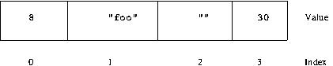
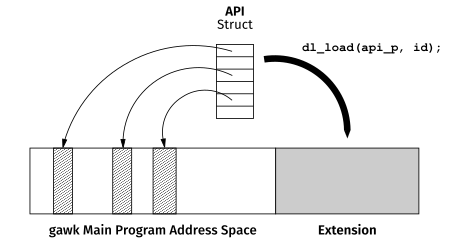
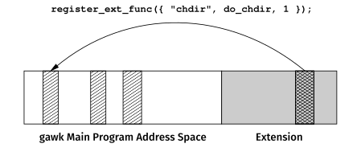
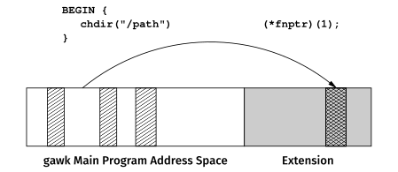
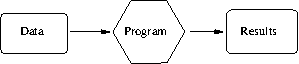
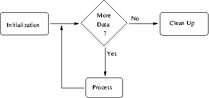

Next: Foreword to the Third Edition [Contents][Index]
This file documents awk, a program that you can use to select
particular records in a file and perform operations upon them.
Copyright © 1989, 1991, 1992, 1993, 1996–2005, 2007, 2009–2026
Free Software Foundation, Inc.
This is Edition 5.4 of GAWK: Effective AWK Programming: The User’s Guide for GNU Awk, for the 5.4.1 (or later) version of the GNU implementation of AWK.
Permission is granted to copy, distribute and/or modify this document under the terms of the GNU Free Documentation License, Version 1.3 or any later version published by the Free Software Foundation; with the Invariant Sections being “GNU General Public License”, with the Front-Cover Texts being “A GNU Manual”, and with the Back-Cover Texts as in (a) below. A copy of the license is included in the section entitled “GNU Free Documentation License”.
awk Language
awk
awk and gawk
awkgawk Uses
gawk’s Exit Statusgawk Is Splitting Recordsgetline
getline with No Argumentsgetline into a Variablegetline from a Filegetline into a Variable from a Filegetline from a Pipegetline into a Variable from a Pipegetline from a Coprocessgetline into a Variable from a Coprocessgetlinegetline Variantsprint Statementprint Statement Examplesprintprintf Statements for Fancier Printing
print and printfgawk
awk
awk
awk Functions
awk Programs
awk Programs
awk with gawk
gawk
gawk for Network Programmingawk Programsgawk
awk Programs
gawk
awk’s Single Namespacegawk Featuresgawk
gawk
gawkgawk
ERRNOgawk Finds Extensionsgawk Distribution
fnmatch()fork(), wait(), and waitpid()ord() and chr()gawkextlib Projectawk Language
awkawkgawk Not in POSIX awkgawk Featuresgawkgawk
Next: Foreword to the Fourth Edition, Previous: General Introduction, Up: General Introduction [Contents][Index]
Arnold Robbins and I are good friends. We were introduced
in 1990
by circumstances—and our favorite programming language, AWK.
The circumstances started a couple of years
earlier. I was working at a new job and noticed an unplugged
Unix computer sitting in the corner. No one knew how to use it,
and neither did I. However,
a couple of days later, it was running, and
I was root and the one-and-only user.
That day, I began the transition from statistician to Unix programmer.
On one of many trips to the library or bookstore in search of
books on Unix, I found the gray AWK book, a.k.a.
Alfred V. Aho, Brian W. Kernighan, and
Peter J. Weinberger’s The AWK Programming Language (Addison-Wesley,
1988). awk’s simple programming paradigm—find a pattern in the
input and then perform an action—often reduced complex or tedious
data manipulations to a few lines of code. I was excited to try my
hand at programming in AWK.
Alas, the awk on my computer was a limited version of the
language described in the gray book. I discovered that my computer
had “old awk” and the book described
“new awk.”
I learned that this was typical; the old version refused to step
aside or relinquish its name. If a system had a new awk, it was
invariably called nawk, and few systems had it.
The best way to get a new awk was to ftp the source code for
gawk from prep.ai.mit.edu. gawk was a version of
new awk written by David Trueman and Arnold, and available under
the GNU General Public License.
(Incidentally,
it’s no longer difficult to find a new awk. gawk ships with
GNU/Linux, and you can download binaries or source code for almost
any system; my wife uses gawk on her VMS box.)
My Unix system started out unplugged from the wall; it certainly was not
plugged into a network. So, oblivious to the existence of gawk
and the Unix community in general, and desiring a new awk, I wrote
my own, called mawk.
Before I was finished, I knew about gawk,
but it was too late to stop, so I eventually posted
to a comp.sources newsgroup.
A few days after my posting, I got a friendly email
from Arnold introducing
himself. He suggested we share design and algorithms and
attached a draft of the POSIX standard so
that I could update mawk to support language extensions added
after publication of The AWK Programming Language.
Frankly, if our roles had been reversed, I would not have been so open and we probably would have never met. I’m glad we did meet. He is an AWK expert’s AWK expert and a genuinely nice person. Arnold contributes significant amounts of his expertise and time to the Free Software Foundation.
This book is the gawk reference manual, but at its core it
is a book about AWK programming that
will appeal to a wide audience.
It is a definitive reference to the AWK language as defined by the
1987 Bell Laboratories release and codified in the 1992 POSIX Utilities
standard.
On the other hand, the novice AWK programmer can study
a wealth of practical programs that emphasize
the power of AWK’s basic idioms:
data-driven control flow, pattern matching with regular expressions,
and associative arrays.
Those looking for something new can try out gawk’s
interface to network protocols via special /inet files.
The programs in this book make clear that an AWK program is typically much smaller and faster to develop than a counterpart written in C. Consequently, there is often a payoff to prototyping an algorithm or design in AWK to get it running quickly and expose problems early. Often, the interpreted performance is adequate and the AWK prototype becomes the product.
The new pgawk (profiling gawk), produces
program execution counts.
I recently experimented with an algorithm that for
n
lines of input, exhibited
~ C n^2
performance, while
theory predicted
~ C n log n
behavior. A few minutes poring
over the awkprof.out profile pinpointed the problem to
a single line of code. pgawk is a welcome addition to
my programmer’s toolbox.
Arnold has distilled over a decade of experience writing and
using AWK programs, and developing gawk, into this book. If you use
AWK or want to learn how, then read this book.
Michael Brennan
Author of mawk
March 2001
Next: Preface, Previous: Foreword to the Third Edition, Up: General Introduction [Contents][Index]
Some things don’t change. Thirteen years ago I wrote: “If you use AWK or want to learn how, then read this book.” True then, and still true today.
Learning to use a programming language is about more than mastering the syntax. One needs to acquire an understanding of how to use the features of the language to solve practical programming problems. A focus of this book is many examples that show how to use AWK.
Some things do change. Our computers are much faster and have more memory. Consequently, speed and storage inefficiencies of a high-level language matter less. Prototyping in AWK and then rewriting in C for performance reasons happens less, because more often the prototype is fast enough.
Of course, there are computing operations that are best done in C or C++.
With gawk 4.1 and later, you do not have to choose between writing
your program in AWK or in C/C++. You can write most of your
program in AWK and the aspects that require C/C++ capabilities can be written
in C/C++, and then the pieces glued together when the gawk module loads
the C/C++ module as a dynamic plug-in.
Writing Extensions for gawk,
has all the
details, and, as expected, many examples to help you learn the ins and outs.
I enjoy programming in AWK and had fun (re)reading this book. I think you will too.
Michael Brennan
Author of mawk
October 2014
Next: Getting Started with awk, Previous: Foreword to the Fourth Edition, Up: General Introduction [Contents][Index]
Several kinds of tasks occur repeatedly when working with text files.
You might want to extract certain lines and discard the rest. Or you
may need to make changes wherever certain patterns appear, but leave the
rest of the file alone.
For example, you may need to clean up some data before processing
it further.
Such jobs are often easy with awk.
The awk utility interprets a special-purpose programming
language that makes it easy to handle data-reformatting jobs.
The GNU implementation of awk is called gawk; if you
invoke it with the proper options or environment variables,
it is fully compatible with
the POSIX1
specification of the awk language
and with the Unix version of awk maintained
by Brian Kernighan.
This means that all
properly written awk programs should work with gawk.
So most of the time, we don’t distinguish between gawk and other
awk implementations.
Using awk you can:
In addition,
gawk
provides facilities that make it easy to:
awk programs
This Web page teaches you about the awk language and
how you can use it effectively. You should already be familiar with basic
system commands, such as cat and ls,2 as well as basic shell
facilities, such as input/output (I/O) redirection and pipes.
Implementations of the awk language are available for many
different computing environments. This Web page, while describing
the awk language in general, also describes the particular
implementation of awk called gawk.
gawk runs on a broad range of systems,
ranging from Intel-architecture PC-based computers
up through large-scale systems.
gawk has also been ported to macOS, z/OS,
Microsoft Windows
(all versions),
and OpenVMS.3
awk and gawkNext: A Rose by Any Other Name, Up: Preface [Contents][Index]
awk and gawk
Blend all parts well using After eight years, add another part After 35 more years, add Unicode and CSV support, sprinkle lightly with
a few choice features from |
The name awk comes from the initials of its designers: Alfred V.
Aho, Peter J. Weinberger, and Brian W. Kernighan. The original version of
awk was written in 1977 at AT&T Bell Laboratories.
In 1985, a new version made the programming
language more powerful, introducing user-defined functions, multiple input
streams, and computed regular expressions.
This new version became widely available with Unix System V
Release 3.1 (1987).
The version in System V Release 4 (1989) added some new features and cleaned
up the behavior in some of the “dark corners” of the language.
The specification for awk in the POSIX Command Language
and Utilities standard further clarified the language.
Both the gawk designers and the original awk designers at Bell Laboratories
provided feedback for the POSIX specification.
Paul Rubin wrote gawk in 1986.
Jay Fenlason completed it, with advice from Richard Stallman. John Woods
contributed parts of the code as well. In 1988 and 1989, David Trueman, with
help from me, thoroughly reworked gawk for compatibility
with the newer awk.
Towards the end of 1993, I became the primary maintainer.
Current development focuses on bug fixes,
performance improvements, standards compliance, and, occasionally, new features.
In May 1997, Jürgen Kahrs felt the need for network access
from awk, and with a little help from me, set about adding
features to do this for gawk. At that time, he also
wrote the bulk of
TCP/IP Internetworking with gawk
(a separate document, available as part of the gawk distribution).
His code finally became part of the main gawk distribution
with gawk version 3.1.
John Haque rewrote the gawk internals, in the process providing
an awk-level debugger. This version became available as
gawk version 4.0 in 2011.
See Major Contributors to gawk
for a full list of those who have made important contributions to gawk.
Next: Using This Book, Previous: History of awk and gawk, Up: Preface [Contents][Index]
The awk language has evolved over the years. Full details are
provided in The Evolution of the awk Language.
The language described in this Web page
is often referred to as “new awk.”
By analogy, the original version of awk is
referred to as “old awk.”
Usually, when you run the awk utility
you get some version of new awk.4 If your system’s standard
awk is the old one, you will see something like this
if you try the following test program:
$ awk 1 /dev/null error→ awk: syntax error near line 1 error→ awk: bailing out near line 1
In this case, you should find a version of new awk,
or just install gawk!
Throughout this Web page, whenever we refer to a language feature
that should be available in any complete implementation of POSIX awk,
we simply use the term awk. When referring to a feature that is
specific to the GNU implementation, we use the term gawk.
Next: Typographical Conventions, Previous: A Rose by Any Other Name, Up: Preface [Contents][Index]
The term awk refers to a particular program as well as to the language you
use to tell this program what to do. When we need to be careful, we call
the language “the awk language,”
and the program “the awk utility.”
This Web page explains
both how to write programs in the awk language and how to
run the awk utility.
The term “awk program” refers to a program written by you in
the awk programming language.
Primarily, this Web page explains the features of awk
as defined in the POSIX standard. It does so in the context of the
gawk implementation. While doing so, it also
attempts to describe important differences between gawk
and other awk
implementations.5
Finally, it notes any gawk features that are not in
the POSIX standard for awk.
This Web page has the difficult task of being both a tutorial and a reference. If you are a novice, feel free to skip over details that seem too complex. You should also ignore the many cross-references; they are for the expert user and for the Info and HTML versions of the Web page.
There are sidebars scattered throughout the Web page. They add a more complete explanation of points that are relevant, but not likely to be of interest on first reading. All appear in the index, under the heading “sidebar.”
Most of the time, the examples use complete awk programs.
Some of the more advanced sections show only the part of the awk
program that illustrates the concept being described.
Although this Web page is aimed principally at people who have not been
exposed
to awk, there is a lot of information here that even the awk
expert should find useful. In particular, the description of POSIX
awk and the example programs in
A Library of awk Functions, and
in
Practical awk Programs,
should be of interest.
This Web page is split into several parts, as follows:
awk language and the gawk program in detail.
It starts with the basics, and continues through all of the features of awk.
It contains the following chapters:
awk,
provides the essentials you need to know to begin using awk.
awk and gawk,
describes how to run gawk, the meaning of its
command-line options, and how it finds awk
program source files.
awk and gawk.
awk reads your data.
It introduces the concepts of records and fields, as well
as the getline function.
I/O redirection is first described here.
Network I/O is also briefly introduced here.
awk programs can produce output with
print and printf.
awk and gawk use.
awk,
covers awk’s one-and-only data structure: the associative array.
Deleting array elements and whole arrays is described, as well as
sorting arrays in gawk. The chapter also describes how
gawk provides arrays of arrays.
awk and gawk provide,
as well as how to define your own functions. It also discusses how
gawk lets you call functions indirectly.
awk and gawk for problem solving.
There is lots of code here for you to read and learn from.
This part contains the following chapters:
awk Functions, provides a number of functions meant to
be used from main awk programs.
awk Programs,
provides many sample awk programs.
Reading these two chapters allows you to see awk
solving real problems.
gawk.
It contains the following chapters:
gawk,
describes a number of advanced features.
Of particular note
are the abilities to control the order of array traversal,
have two-way communications with another process,
perform TCP/IP networking, and
profile your awk programs.
gawk,
describes special features for translating program
messages into different languages at runtime.
awk Programs, describes the gawk debugger.
gawk, describes how gawk allows variables and/or
functions of the same name to be in different namespaces.
gawk,
describes advanced arithmetic facilities.
gawk, describes how to add new variables and
functions to gawk by writing extensions in C or C++.
gawk source code and this Web page, respectively.
It contains the following appendices:
awk Language,
describes how the awk language has evolved since
its first release to the present. It also describes how gawk
has acquired features over time.
gawk,
describes how to get gawk, how to compile it
on POSIX-compatible systems,
and how to compile and use it on different
non-POSIX systems. It also describes how to report bugs
in gawk and where to get other freely
available awk implementations.
gawk’s extensions, as
well as how to contribute new code to gawk,
and some possible future directions for gawk development.
gawk source code
and this Web page, respectively.
Next: The GNU Project and This Book, Previous: Using This Book, Up: Preface [Contents][Index]
This Web page is written in Texinfo, the GNU documentation formatting language. A single Texinfo source file is used to produce both the printed and online versions of the documentation. Because of this, the typographical conventions are slightly different than in other books you may have read.
Examples you would type at the command line are preceded by the common shell primary and secondary prompts, ‘$’ and ‘>’, respectively. Input that you type is shown like this. Output from the command is preceded by the glyph “-|”. This typically represents the command’s standard output. Error messages and other output on the command’s standard error are preceded by the glyph “error→”. For example:
$ echo hi on stdout -| hi on stdout $ echo hello on stderr 1>&2 error→ hello on stderr
In the text, almost anything related to programming, such as
command names,
variable and function names, and string, numeric and regexp constants
appear in this font. Code fragments
appear in the same font and quoted, ‘like this’.
Things that are replaced by the user or programmer
appear in this font.
Options look like this: -f.
File names are indicated like this: /path/to/ourfile.
Some things are
emphasized like this, and if a point needs to be made
strongly, it is done like this.
The first occurrence of
a new term is usually its definition and appears in the same
font as the previous occurrence of “definition” in this sentence.
Characters that you type at the keyboard look like this. In particular, there are special characters called “control characters.” These are characters that you type by holding down both the CONTROL key and another key, at the same time. For example, a Ctrl-d is typed by first pressing and holding the CONTROL key, next pressing the d key, and finally releasing both keys.
For the sake of brevity, throughout this Web page, we refer to
Brian Kernighan’s version of awk as “BWK awk.”
(See Other Freely Available awk Implementations for information on his and other versions.)
Dark corners are basically fractal—no matter how much you illuminate, there’s always a smaller but darker one.
Until the POSIX standard (and GAWK: Effective AWK Programming),
many features of awk were either poorly documented or not
documented at all. Descriptions of such features
(often called “dark corners”) are noted in this Web page with
“(d.c.).”
They also appear in the index under the heading “dark corner.”
But, as noted by the opening quote, any coverage of dark corners is by definition incomplete.
Extensions to the standard awk language that are supported by
more than one awk implementation are marked
“(c.e.),” and listed in the index under “common extensions”
and “extensions, common.”
Next: How to Contribute, Previous: Typographical Conventions, Up: Preface [Contents][Index]
The Free Software Foundation (FSF) is a nonprofit organization dedicated to the production and distribution of freely distributable software. It was founded by Richard M. Stallman, the author of the original Emacs editor. GNU Emacs is the most widely used version of Emacs today.
The GNU6
Project is an ongoing effort on the part of the Free Software
Foundation to create a complete, freely distributable, POSIX-compliant
computing environment.
The FSF uses the GNU General Public License (GPL) to ensure that
its software’s
source code is always available to the end user.
A copy of the GPL is included
in this Web page
for your reference
(see GNU General Public License).
The GPL applies to the C language source code for gawk.
To find out more about the FSF and the GNU Project online,
see the GNU Project’s home page.
This Web page may also be read from
GNU’s website.
A shell, an editor (Emacs), highly portable optimizing C, C++, and
Objective-C compilers, a symbolic debugger and dozens of large and
small utilities (such as gawk), have all been completed and are
freely available. The GNU operating
system kernel (the HURD), has been released but remains in an early
stage of development.
Until the GNU operating system is more fully developed, you should consider using GNU/Linux, a freely distributable, Unix-like operating system for ARM, Intel, Power Architecture, RiscV, Sun SPARC, IBM S/390, and other systems.7 Many GNU/Linux distributions are available for download from the Internet.
The Web page you are reading is actually free—at least, the
information in it is free to anyone. The machine-readable
source code for the Web page comes with gawk.
(Take a moment to check the Free Documentation
License in GNU Free Documentation License.)
The Web page itself has gone through multiple previous editions.
Paul Rubin wrote the very first draft of The GAWK Manual;
it was around 40 pages long.
Diane Close and Richard Stallman improved it, yielding a
version that was
around 90 pages and barely described the original, “old”
version of awk.
I started working with that version in the fall of 1988.
As work on it progressed,
the FSF published several preliminary versions (numbered 0.x).
In 1996, edition 1.0 was released with gawk 3.0.0.
The FSF published the first two editions under
the title The GNU Awk User’s Guide.
This edition maintains the basic structure of the previous editions.
For FSF edition 4.0, the content was thoroughly reviewed and updated. All
references to gawk versions prior to 4.0 were removed.
Of significant note for that edition was the addition of Debugging awk Programs.
For FSF edition
5.0,
the content has been reorganized into parts,
and the major new additions are Arithmetic and Arbitrary-Precision Arithmetic with gawk,
and Writing Extensions for gawk.
This Web page will undoubtedly continue to evolve. If you find an error in the Web page, please report it! See Reporting Problems and Bugs for information on submitting problem reports electronically.
Next: Acknowledgments, Previous: The GNU Project and This Book, Up: Preface [Contents][Index]
As the maintainer of GNU awk, I once thought that I would be
able to manage a collection of publicly available awk programs
and I even solicited contributions. Making things available on the Internet
helps keep the gawk distribution down to manageable size.
The initial collection of material, such as it is, is still available at ftp://ftp.freefriends.org/arnold/Awkstuff.
In the hopes of doing something broader, I acquired the
awklang.org domain. Late in 2017, a volunteer took on the task
of managing it.
If you have written an interesting awk program that
you would like to share with the rest of the world, please see
http://www.awklang.org and use the “Contact” link.
If you have written a gawk extension, please see
The gawkextlib Project.
Previous: How to Contribute, Up: Preface [Contents][Index]
The initial draft of The GAWK Manual had the following acknowledgments:
Many people need to be thanked for their assistance in producing this manual. Jay Fenlason contributed many ideas and sample programs. Richard Mlynarik and Robert Chassell gave helpful comments on drafts of this manual. The paper A Supplemental Document for AWK by John W. Pierce of the Chemistry Department at UC San Diego, pinpointed several issues relevant both to
awkimplementation and to this manual, that would otherwise have escaped us.
I would like to acknowledge Richard M. Stallman, for his vision of a better world and for his courage in founding the FSF and starting the GNU Project.
Earlier editions of this Web page had the following acknowledgements:
The following people (in alphabetical order) provided helpful comments on various versions of this book: Rick Adams, Dr. Nelson H.F. Beebe, Karl Berry, Dr. Michael Brennan, Rich Burridge, Claire Cloutier, Diane Close, Scott Deifik, Christopher (“Topher”) Eliot, Jeffrey Friedl, Dr. Darrel Hankerson, Michal Jaegermann, Dr. Richard J. LeBlanc, Michael Lijewski, Pat Rankin, Miriam Robbins, Mary Sheehan, and Chuck Toporek.
Robert J. Chassell provided much valuable advice on the use of Texinfo. He also deserves special thanks for convincing me not to title this Web page How to Gawk Politely. Karl Berry helped significantly with the TeX part of Texinfo.
I would like to thank Marshall and Elaine Hartholz of Seattle and Dr. Bert and Rita Schreiber of Detroit for large amounts of quiet vacation time in their homes, which allowed me to make significant progress on this Web page and on
gawkitself.Phil Hughes of SSC contributed in a very important way by loaning me his laptop GNU/Linux system, not once, but twice, which allowed me to do a lot of work while away from home.
David Trueman deserves special credit; he has done a yeoman job of evolving
gawkso that it performs well and without bugs. Although he is no longer involved withgawk, working with him on this project was a significant pleasure.The intrepid members of the GNITS mailing list, and most notably Ulrich Drepper, provided invaluable help and feedback for the design of the internationalization features.
Chuck Toporek, Mary Sheehan, and Claire Cloutier of O’Reilly & Associates contributed significant editorial help for this Web page for the 3.1 release of
gawk.
Dr. Nelson Beebe,
Dr. Manuel Collado,
Antonio Colombo,
Scott Deifik,
Akim Demaille,
Daniel Richard G.,
Michal Jaegermann,
Jürgen Kahrs,
John Malmberg,
Chet Ramey,
Pat Rankin,
Andrew Schorr,
Corinna Vinschen,
and Eli Zaretskii
(in alphabetical order)
make up the current gawk “crack portability team.” Without
their hard work and help, gawk would not be nearly the robust,
portable program it is today. It has been and continues to be a pleasure
working with this team of fine people.
Notable code and documentation contributions were made by
a number of people. See Major Contributors to gawk for the full list.
Thanks to Michael Brennan for the Forewords.
Thanks to Patrice Dumas for the current makeinfo program.
Thanks to Karl Berry for his past work on Texinfo, and
to Gavin Smith, who continues to work to improve
the Texinfo markup language.
Robert P.J. Day, Michael Brennan, and Brian Kernighan kindly acted as reviewers for the 2015 edition of this Web page. Their feedback helped improve the final work.
I would also like to thank Brian Kernighan for his invaluable assistance during the
testing and debugging of gawk, and for his ongoing
help and advice in clarifying numerous points about the language.
We could not have done nearly as good a job on either gawk
or its documentation without his help.
Brian is in a class by himself as a programmer and technical author. I have to thank him (yet again) for his ongoing friendship and for being a role model to me for over 30 years! Having him as a reviewer is an exciting privilege. It has also been extremely humbling...
I must thank my wonderful wife, Miriam, for her patience through the many versions of this project, for her proofreading, and for sharing me with the computer. I would like to thank my parents for their love, and for the grace with which they raised and educated me. Finally, I also must acknowledge my gratitude to G-d, for the many opportunities He has sent my way, as well as for the gifts He has given me with which to take advantage of those opportunities.
Arnold Robbins
Nof Ayalon
Israel
March, 2020
Next: Running awk and gawk, Previous: Preface, Up: General Introduction [Contents][Index]
awk Languageawkawk and gawkawkawkThe basic function of awk is to search files for lines (or other
units of text) that contain certain patterns. When a line matches one
of the patterns, awk performs specified actions on that line.
awk continues to process input lines in this way until it reaches
the end of the input files.
Programs in awk are different from programs in most other languages,
because awk programs are data driven (i.e., you describe
the data you want to work with and then what to do when you find it).
Most other languages are procedural; you have to describe, in great
detail, every step the program should take. When working with procedural
languages, it is usually much
harder to clearly describe the data your program will process.
For this reason, awk programs are often refreshingly easy to
read and write.
When you run awk, you specify an awk program that
tells awk what to do. The program consists of a series of
rules (it may also contain function definitions,
an advanced feature that we will ignore for now;
see User-Defined Functions). Each rule specifies one
pattern to search for and one action to perform
upon finding the pattern.
Syntactically, a rule consists of a pattern followed by an
action. The action is enclosed in braces to separate it from the
pattern. Newlines usually separate rules. Therefore, an awk
program looks like this:
pattern { action }
pattern { action }
…
awk Programsawk Statements Versus Linesawkawk
Next: Data files for the Examples, Up: Getting Started with awk [Contents][Index]
awk ProgramsThere are several ways to run an awk program. If the program is
short, it is easiest to include it in the command that runs awk,
like this:
awk 'program' input-file1 input-file2 …
When the program is long, it is usually more convenient to put it in a file and run it with a command like this:
awk -f program-file input-file1 input-file2 …
This section discusses both mechanisms, along with several variations of each.
awk Programsawk Without Input Filesawk Programsawk Programs
Next: Running awk Without Input Files, Up: How to Run awk Programs [Contents][Index]
awk ProgramsOnce you are familiar with awk, you will often type in simple
programs the moment you want to use them. Then you can write the
program as the first argument of the awk command, like this:
awk 'program' input-file1 input-file2 …
where program consists of a series of patterns and actions, as described earlier.
This command format instructs the shell, or command interpreter,
to start awk and use the program to process records in the
input file(s). There are single quotes around program so
the shell won’t interpret any awk characters as special shell
characters. The quotes also cause the shell to treat all of program as
a single argument for awk, and allow program to be more
than one line long.
This format is also useful for running short or medium-sized awk
programs from shell scripts, because it avoids the need for a separate
file for the awk program. A self-contained shell script is more
reliable because there are no other files to misplace.
Later in this chapter, in Some Simple Examples, we’ll see examples of several short, self-contained programs.
Next: Running Long Programs, Previous: One-Shot Throwaway awk Programs, Up: How to Run awk Programs [Contents][Index]
awk Without Input FilesYou can also run awk without any input files. If you type the
following command line:
awk 'program'
awk applies the program to the standard input,
which usually means whatever you type on the keyboard. This continues
until you indicate end-of-file by typing Ctrl-d.
(On non-POSIX operating systems, the end-of-file character may be different.)
As an example, the following program prints a friendly piece of advice (from Douglas Adams’s The Hitchhiker’s Guide to the Galaxy), to keep you from worrying about the complexities of computer programming:
$ awk 'BEGIN { print "Don\47t Panic!" }'
-| Don't Panic!
awk executes statements associated with BEGIN before
reading any input. If there are no other statements in your program,
as is the case here, awk just stops, instead of trying to read
input it doesn’t know how to process.
The ‘\47’ is a magic way (explained later) of getting a single quote into
the program, without having to engage in ugly shell quoting tricks.
NOTE: If you use Bash as your shell, you should execute the command ‘set +H’ before running this program interactively, to disable the C shell-style command history, which treats ‘!’ as a special character. We recommend putting this command into your personal startup file.
This next simple awk program
emulates the cat utility; it copies whatever you type on the
keyboard to its standard output (why this works is explained shortly):
$ awk '{ print }'
Now is the time for all good men
-| Now is the time for all good men
to come to the aid of their country.
-| to come to the aid of their country.
Four score and seven years ago, ...
-| Four score and seven years ago, ...
What, me worry?
-| What, me worry?
Ctrl-d
Next: Executable awk Programs, Previous: Running awk Without Input Files, Up: How to Run awk Programs [Contents][Index]
Sometimes awk programs are very long. In these cases, it is
more convenient to put the program into a separate file. In order to tell
awk to use that file for its program, you type:
awk -f source-file input-file1 input-file2 …
The -f instructs the awk utility to get the
awk program from the file source-file (see Command-Line Options).
Any file name can be used for source-file. For example, you
could put the program:
BEGIN { print "Don't Panic!" }
into the file advice. Then this command:
awk -f advice
does the same thing as this one:
awk 'BEGIN { print "Don\47t Panic!" }'
This was explained earlier
(see Running awk Without Input Files).
Note that you don’t usually need single quotes around the file name that you
specify with -f, because most file names don’t contain any of the shell’s
special characters. (If your file names have spaces in them, then you
will need the single quotes.) Notice that in advice, the awk
program did not have single quotes around it. The quotes are only needed
for programs that are provided on the awk command line.
(Also, placing the program in a file allows us to use a literal single quote in the program
text, instead of the magic ‘\47’.)
If you want to clearly identify an awk program file as such,
you can add the extension .awk to the file name. This doesn’t
affect the execution of the awk program but it does make
“housekeeping” easier.
Next: Comments in awk Programs, Previous: Running Long Programs, Up: How to Run awk Programs [Contents][Index]
awk ProgramsOnce you have learned awk, you may want to write self-contained
awk scripts, using the ‘#!’ script mechanism. You can do
this on many systems.8
For example, you could update the file advice to look like this:
#! /bin/awk -f
BEGIN { print "Don't Panic!" }
After making this file executable (with the chmod utility),
simply type ‘advice’
at the shell and the system arranges to run awk as if you had
typed ‘awk -f advice’:
$ chmod +x advice $ ./advice -| Don't Panic!
Self-contained awk scripts are useful when you want to write a
program that users can invoke without their having to know that the program is
written in awk.
|
The line beginning with ‘#!’ lists the full file name of an
interpreter to run and a single optional initial command-line argument
to pass to that interpreter. The operating system then runs the
interpreter with the given argument and the full argument list of the
executed program. The first argument in the list is the full file name
of the Some systems limit the length of the interpreter name to 32 characters. Often, this can be dealt with by using a symbolic link. You should not put more than one argument on the ‘#!’
line after the path to Finally, the value of |
Next: Shell Quoting Issues, Previous: Executable awk Programs, Up: How to Run awk Programs [Contents][Index]
awk ProgramsA comment is some text that is included in a program for the sake of human readers; it is not really an executable part of the program. Comments can explain what the program does and how it works. Nearly all programming languages have provisions for comments, as programs are typically hard to understand without them.
In the awk language, a comment starts with the number sign
character (‘#’) and continues to the end of the line.
The ‘#’ does not have to be the first character on the line. The
awk language ignores the rest of a line following a number sign.
For example, we could have put the following into advice:
# This program prints a nice, friendly message. It helps
# keep novice users from being afraid of the computer.
BEGIN { print "Don't Panic!" }
You can put comment lines into keyboard-composed throwaway awk
programs, but this usually isn’t very useful; the purpose of a
comment is to help you or another person understand the program
when reading it at a later time.
CAUTION: As mentioned in One-Shot Throwaway
awkPrograms, you can enclose short to medium-sized programs in single quotes, in order to keep your shell scripts self-contained. When doing so, don’t put an apostrophe (i.e., a single quote) into a comment (or anywhere else in your program). The shell interprets the quote as the closing quote for the entire program. As a result, usually the shell prints a message about mismatched quotes, and ifawkactually runs, it will probably print strange messages about syntax errors. For example, look at the following:$ awk 'BEGIN { print "hello" } # let's be cute' >The shell sees that the first two quotes match, and that a new quoted object begins at the end of the command line. It therefore prompts with the secondary prompt, waiting for more input. With BWK
awk, closing the quoted string produces this result:$ nawk '{ print "hello" } # let's be cute' > ' error→ awk: can't open file be error→ source line number 1Putting a backslash before the single quote in ‘let's’ wouldn’t help, because backslashes are not special inside single quotes. The next subsection describes the shell’s quoting rules.
Previous: Comments in awk Programs, Up: How to Run awk Programs [Contents][Index]
For short to medium-length awk programs, it is most convenient
to enter the program on the awk command line.
This is best done by enclosing the entire program in single quotes.
This is true whether you are entering the program interactively at
the shell prompt, or writing it as part of a larger shell script:
awk 'program text' input-file1 input-file2 …
Once you are working with the shell, it is helpful to have a basic knowledge of shell quoting rules. The following rules apply only to POSIX-compliant, Bourne-style shells (such as Bash, the GNU Bourne-Again Shell). If you use the C shell, you’re on your own.
Before diving into the rules, we introduce a concept that appears throughout this Web page, which is that of the null, or empty, string.
The null string is character data that has no value.
In other words, it is empty. It is written in awk programs
like this: "". In the shell, it can be written using single
or double quotes: '' or "". Although the null string has
no characters in it, it does exist. For example, consider this command:
$ echo ""
Here, the echo utility receives a single argument, even
though that argument has no characters in it. In the rest of this
Web page, we use the terms null string and empty string
interchangeably. Now, on to the quoting rules:
awk Programs
for an example of what happens if you try.
Because certain characters within double-quoted text are processed by the shell,
they must be escaped within the text. Of note are the characters
‘$’, ‘`’, ‘\’, and ‘"’, all of which must be preceded by
a backslash within double-quoted text if they are to be passed on literally
to the program. (The shell strips the leading backslash first.)
Thus, the example seen
previously
in Running awk Without Input Files:
awk 'BEGIN { print "Don\47t Panic!" }'
could instead be written this way:
$ awk "BEGIN { print \"Don't Panic!\" }"
-| Don't Panic!
Note that the single quote is not special within double quotes.
FS should
be set to the null string, use:
awk -F "" 'program' files # correct
Don’t use this:
awk -F"" 'program' files # wrong!
In the second case, awk attempts to use the text of the program
as the value of FS, and the first file name as the text of the program!
This results in syntax errors at best, and confusing behavior at worst.
Mixing single and double quotes is difficult. You have to resort to shell quoting tricks, like this:
$ awk 'BEGIN { print "Here is a single quote <'"'"'>" }'
-| Here is a single quote <'>
This program consists of three concatenated quoted strings. The first and the third are single-quoted, and the second is double-quoted.
This can be “simplified” to:
$ awk 'BEGIN { print "Here is a single quote <'\''>" }'
-| Here is a single quote <'>
Judge for yourself which of these two is the more readable.
Another option is to use double quotes, escaping the embedded, awk-level
double quotes:
$ awk "BEGIN { print \"Here is a single quote <'>\" }"
-| Here is a single quote <'>
This option is also painful, because double quotes, backslashes, and dollar signs
are very common in more advanced awk programs.
A third option is to use the octal escape sequence equivalents (see Escape Sequences) for the single- and double-quote characters, like so:
$ awk 'BEGIN { print "Here is a single quote <\47>" }'
-| Here is a single quote <'>
$ awk 'BEGIN { print "Here is a double quote <\42>" }'
-| Here is a double quote <">
This works nicely, but you should comment clearly what the escape sequences mean.
A fourth option is to use command-line variable assignment, like this:
$ awk -v sq="'" 'BEGIN { print "Here is a single quote <" sq ">" }'
-| Here is a single quote <'>
(Here, the two string constants and the value of sq are concatenated
into a single string that is printed by print.)
If you really need both single and double quotes in your awk
program, it is probably best to move it into a separate file, where
the shell won’t be part of the picture and you can say what you mean.
Up: Shell Quoting Issues [Contents][Index]
Although this Web page generally only worries about POSIX systems and the POSIX shell, the following issue arises often enough for many users that it is worth addressing.
The “shells” on Microsoft Windows systems use the double-quote character for quoting, and make it difficult or impossible to include an escaped double quote character in a command-line script. The following example, courtesy of Jeroen Brink, shows how to escape the double quotes from this one liner script that prints all lines in a file surrounded by double quotes:
{ print "\"" $0 "\"" }
In an MS-Windows command-line the one-liner script above may be passed as follows:
gawk "{ print \"\042\" $0 \"\042\" }" file
In this example the ‘\042’ is the octal code for a double quote;
gawk converts it into a real double-quote for output by
the print statement.
In MS-Windows escaping double quotes is a little tricky because you use backslashes to escape double quotes, but backslashes themselves are not escaped in the usual way; indeed they are either duplicated or not, depending upon whether there is a subsequent double quote. The MS-Windows rule for double-quoting a string is the following:
So to double-quote the one-liner script ‘{ print "\"" $0 "\"" }’ from the previous example you would do it this way:
gawk "{ print \"\\\"\" $0 \"\\\"\" }" file
However, the use of ‘\042’ instead of ‘\\\"’ is also possible and easier to read, because backslashes that are not followed by a double quote don’t need duplication.
Next: Some Simple Examples, Previous: How to Run awk Programs, Up: Getting Started with awk [Contents][Index]
Many of the examples in this Web page take their input from two sample data files. The first, mail-list, represents a list of peoples’ names together with their email addresses and information about those people. The second data file, called inventory-shipped, contains information about monthly shipments. In both files, each line is considered to be one record.
In mail-list, each record contains the name of a person, his/her phone number, his/her email address, and a code for his/her relationship with the author of the list. The columns are aligned using spaces. An ‘A’ in the last column means that the person is an acquaintance. An ‘F’ in the last column means that the person is a friend. An ‘R’ means that the person is a relative:
Amelia 555-5553 amelia.zodiacusque@gmail.com F Anthony 555-3412 anthony.asserturo@hotmail.com A Becky 555-7685 becky.algebrarum@gmail.com A Bill 555-1675 bill.drowning@hotmail.com A Broderick 555-0542 broderick.aliquotiens@yahoo.com R Camilla 555-2912 camilla.infusarum@skynet.be R Fabius 555-1234 fabius.undevicesimus@ucb.edu F Julie 555-6699 julie.perscrutabor@skeeve.com F Martin 555-6480 martin.codicibus@hotmail.com A Samuel 555-3430 samuel.lanceolis@shu.edu A Jean-Paul 555-2127 jeanpaul.campanorum@nyu.edu R
The data file inventory-shipped represents information about shipments during the year. Each record contains the month, the number of green crates shipped, the number of red boxes shipped, the number of orange bags shipped, and the number of blue packages shipped, respectively. There are 16 entries, covering the 12 months of last year and the first four months of the current year. An empty line separates the data for the two years:
Jan 13 25 15 115 Feb 15 32 24 226 Mar 15 24 34 228 Apr 31 52 63 420 May 16 34 29 208 Jun 31 42 75 492 Jul 24 34 67 436 Aug 15 34 47 316 Sep 13 55 37 277 Oct 29 54 68 525 Nov 20 87 82 577 Dec 17 35 61 401 Jan 21 36 64 620 Feb 26 58 80 652 Mar 24 75 70 495 Apr 21 70 74 514
The sample files are included in the gawk distribution,
in the directory awklib/eg/data.
Next: An Example with Two Rules, Previous: Data files for the Examples, Up: Getting Started with awk [Contents][Index]
The following command runs a simple awk program that searches the
input file mail-list for the character string ‘li’ (a
grouping of characters is usually called a string;
the term string is based on similar usage in English, such
as “a string of pearls” or “a string of cars in a train”):
awk '/li/ { print $0 }' mail-list
When lines containing ‘li’ are found, they are printed because ‘print $0’ means print the current line. (Just ‘print’ by itself means the same thing, so we could have written that instead.)
You will notice that slashes (‘/’) surround the string ‘li’
in the awk program. The slashes indicate that ‘li’
is the pattern to search for. This type of pattern is called a
regular expression, which is covered in more detail later
(see Regular Expressions).
The pattern is allowed to match parts of words.
There are
single quotes around the awk program so that the shell won’t
interpret any of it as special shell characters.
Here is what this program prints:
$ awk '/li/ { print $0 }' mail-list
-| Amelia 555-5553 amelia.zodiacusque@gmail.com F
-| Broderick 555-0542 broderick.aliquotiens@yahoo.com R
-| Julie 555-6699 julie.perscrutabor@skeeve.com F
-| Samuel 555-3430 samuel.lanceolis@shu.edu A
In an awk rule, either the pattern or the action can be omitted,
but not both. If the pattern is omitted, then the action is performed
for every input line. If the action is omitted, the default
action is to print all lines that match the pattern.
Thus, we could leave out the action (the print statement and the
braces) in the previous example and the result would be the same:
awk prints all lines matching the pattern ‘li’. By comparison,
omitting the print statement but retaining the braces makes an
empty action that does nothing (i.e., no lines are printed).
Many practical awk programs are just a line or two long. Following is a
collection of useful, short programs to get you started. Some of these
programs contain constructs that haven’t been covered yet. (The description
of the program will give you a good idea of what is going on, but you’ll
need to read the rest of the Web page to become an awk expert!)
Most of the examples use a data file named data. This is just a
placeholder; if you use these programs yourself, substitute
your own file names for data.
Some of the following examples use the output of ‘ls -l’ as input.
ls is a system command that gives you a listing of the files in a
directory. With the -l option, this listing includes each file’s
size and the date the file was last modified. Its output looks like this:
-rw-r--r-- 1 arnold user 1933 Nov 7 13:05 Makefile -rw-r--r-- 1 arnold user 10809 Nov 7 13:03 awk.h -rw-r--r-- 1 arnold user 983 Apr 13 12:14 awk.tab.h -rw-r--r-- 1 arnold user 31869 Jun 15 12:20 awkgram.y -rw-r--r-- 1 arnold user 22414 Nov 7 13:03 awk1.c -rw-r--r-- 1 arnold user 37455 Nov 7 13:03 awk2.c -rw-r--r-- 1 arnold user 27511 Dec 9 13:07 awk3.c -rw-r--r-- 1 arnold user 7989 Nov 7 13:03 awk4.c
The first field contains read-write permissions, the second field contains the number of links to the file, and the third field identifies the file’s owner. The fourth field identifies the file’s group. The fifth field contains the file’s size in bytes. The sixth, seventh, and eighth fields contain the month, day, and time, respectively, that the file was last modified. Finally, the ninth field contains the file name.
For future reference, note that there is often more than
one way to do things in awk. At some point, you may want
to look back at these examples and see if
you can come up with different ways to do the same things shown here:
awk 'length($0) > 80' data
The sole rule has a relational expression as its pattern and has no action—so it uses the default action, printing the record.
awk '{ if (length($0) > max) max = length($0) }
END { print max }' data
The code associated with END executes after all
input has been read; it’s the other side of the coin to BEGIN.
expand data | awk '{ if (x < length($0)) x = length($0) }
END { print "maximum line length is " x }'
This example differs slightly from the previous one:
the input is processed by the expand utility to change TABs
into spaces, so the widths compared are actually the right-margin columns,
as opposed to the number of input characters on each line.
awk 'NF > 0' data
This is an easy way to delete blank lines from a file (or rather, to create a new file similar to the old file but from which the blank lines have been removed).
awk 'BEGIN { for (i = 1; i <= 7; i++)
print int(101 * rand()) }'
ls -l files | awk '{ x += $5 }
END { print "total bytes: " x }'
ls -l files | awk '{ x += $5 }
END { print "total K-bytes:", x / 1024 }'
awk -F: '{ print $1 }' /etc/passwd | sort
awk 'END { print NR }' data
awk 'NR % 2 == 0' data
If you used the expression ‘NR % 2 == 1’ instead, the program would print the odd-numbered lines.
Next: A More Complex Example, Previous: Some Simple Examples, Up: Getting Started with awk [Contents][Index]
The awk utility reads the input files one line at a
time. For each line, awk tries the patterns of each rule.
If several patterns match, then several actions execute in the order in
which they appear in the awk program. If no patterns match, then
no actions run.
After processing all the rules that match the line (and perhaps there are none),
awk reads the next line. (However,
see The next Statement
and also see The nextfile Statement.)
This continues until the program reaches the end of the file.
For example, the following awk program contains two rules:
/12/ { print $0 }
/21/ { print $0 }
The first rule has the string ‘12’ as the pattern and ‘print $0’ as the action. The second rule has the string ‘21’ as the pattern and also has ‘print $0’ as the action. Each rule’s action is enclosed in its own pair of braces.
This program prints every line that contains the string ‘12’ or the string ‘21’. If a line contains both strings, it is printed twice, once by each rule.
This is what happens if we run this program on our two sample data files, mail-list and inventory-shipped:
$ awk '/12/ { print $0 }
> /21/ { print $0 }' mail-list inventory-shipped
-| Anthony 555-3412 anthony.asserturo@hotmail.com A
-| Camilla 555-2912 camilla.infusarum@skynet.be R
-| Fabius 555-1234 fabius.undevicesimus@ucb.edu F
-| Jean-Paul 555-2127 jeanpaul.campanorum@nyu.edu R
-| Jean-Paul 555-2127 jeanpaul.campanorum@nyu.edu R
-| Jan 21 36 64 620
-| Apr 21 70 74 514
Note how the line beginning with ‘Jean-Paul’ in mail-list was printed twice, once for each rule.
Next: awk Statements Versus Lines, Previous: An Example with Two Rules, Up: Getting Started with awk [Contents][Index]
Now that we’ve mastered some simple tasks, let’s look at
what typical awk
programs do. This example shows how awk can be used to
summarize, select, and rearrange the output of another utility. It uses
features that haven’t been covered yet, so don’t worry if you don’t
understand all the details:
ls -l | awk '$6 == "Nov" { sum += $5 }
END { print sum }'
This command prints the total number of bytes in all the files in the current directory that were last modified in November (of any year).
As a reminder, the output of ‘ls -l’ gives you a listing of the files in a directory, including each file’s size and the date the file was last modified. The first field contains read-write permissions, the second field contains the number of links to the file, and the third field identifies the file’s owner. The fourth field identifies the file’s group. The fifth field contains the file’s size in bytes. The sixth, seventh, and eighth fields contain the month, day, and time, respectively, that the file was last modified. Finally, the ninth field contains the file name.
The ‘$6 == "Nov"’ in our awk program is an expression that
tests whether the sixth field of the output from ‘ls -l’
matches the string ‘Nov’. Each time a line has the string
‘Nov’ for its sixth field, awk performs the action
‘sum += $5’. This adds the fifth field (the file’s size) to the variable
sum. As a result, when awk has finished reading all the
input lines, sum is the total of the sizes of the files whose
lines matched the pattern. (This works because awk variables
are automatically initialized to zero.)
After the last line of output from ls has been processed, the
END rule executes and prints the value of sum.
In this example, the value of sum is 80600.
These more advanced awk techniques are covered in later
sections
(see Actions). Before you can move on to more
advanced awk programming, you have to know how awk interprets
your input and displays your output. By manipulating fields and using
print statements, you can produce some very useful and
impressive-looking reports.
Next: Other Features of awk, Previous: A More Complex Example, Up: Getting Started with awk [Contents][Index]
awk Statements Versus LinesMost often, each line in an awk program is a separate statement or
separate rule, like this:
awk '/12/ { print $0 }
/21/ { print $0 }' mail-list inventory-shipped
However, gawk ignores newlines after any of the following
symbols and keywords:
, { ? : || && do else
A newline at any other point is considered the end of the statement.9
If you would like to split a single statement into two lines at a point where a newline would terminate it, you can continue it by ending the first line with a backslash character (‘\’). The backslash must be the final character on the line in order to be recognized as a continuation character. A backslash followed by a newline is allowed anywhere in the statement, even in the middle of a string or regular expression. For example:
awk '/This regular expression is too long, so continue it\
on the next line/ { print $1 }'
We have generally not used backslash continuation in our sample programs.
gawk places no limit on the
length of a line, so backslash continuation is never strictly necessary;
it just makes programs more readable. For this same reason, as well as
for clarity, we have kept most statements short in the programs
presented throughout the Web page.
Backslash continuation is
most useful when your awk program is in a separate source file
instead of entered from the command line. You should also note that
many awk implementations are more particular about where you
may use backslash continuation. For example, they may not allow you to
split a string constant using backslash continuation. Thus, for maximum
portability of your awk programs, it is best not to split your
lines in the middle of a regular expression or a string.
CAUTION: Backslash continuation does not work as described with the C shell. It works for
awkprograms in files and for one-shot programs, provided you are using a POSIX-compliant shell, such as the Unix Bourne shell or Bash. But the C shell behaves differently! There you must use two backslashes in a row, followed by a newline. Note also that when using the C shell, every newline in yourawkprogram must be escaped with a backslash. To illustrate:% awk 'BEGIN { \ ? print \\ ? "hello, world" \ ? }' -| hello, worldHere, the ‘%’ and ‘?’ are the C shell’s primary and secondary prompts, analogous to the standard shell’s ‘$’ and ‘>’.
Compare the previous example to how it is done with a POSIX-compliant shell:
$ awk 'BEGIN { > print \ > "hello, world" > }' -| hello, world
awk is a line-oriented language. Each rule’s action has to
begin on the same line as the pattern. To have the pattern and action
on separate lines, you must use backslash continuation; there
is no other option.
Another thing to keep in mind is that backslash continuation and
comments do not mix. As soon as awk sees the ‘#’ that
starts a comment, it ignores everything on the rest of the
line. For example:
$ gawk 'BEGIN { print "don\47t panic" # a friendly \
> BEGIN rule
> }'
error→ gawk: cmd. line:2: BEGIN rule
error→ gawk: cmd. line:2: ^ syntax error
In this case, it looks like the backslash would continue the comment onto the
next line. However, the backslash-newline combination is never even
noticed because it is “hidden” inside the comment. Thus, the
BEGIN is noted as a syntax error.
Backslash continuation comes into play in an additional, unexpected situation. Consider:
gawk -F'\ a' '…'
This command line assigns a value to FS. But what value?
There are several possibilities, and in fact different versions of
awk do different things. gawk treats this as
if it were written:
BEGIN { FS = "\
a"
}
…
In short, the backslash and newline are removed, assigning "a"
to FS. This same treatment applies to variable assignments
made with the -v option (see Command-Line Options)
and to regular command-line variable assignments (see Assigning Variables on the Command Line).
If you’re interested, see
https://lists.gnu.org/archive/html/bug-gawk/2022-10/msg00025.html
for a source code patch that allows lines to be continued when inside
parentheses. This patch was not added to gawk since it would
quietly decrease the portability of awk programs.
When awk statements within one rule are short, you might want to put
more than one of them on a line. This is accomplished by separating the statements
with a semicolon (‘;’).
This also applies to the rules themselves.
Thus, the program shown at the start of this section
could also be written this way:
/12/ { print $0 } ; /21/ { print $0 }
NOTE: The requirement that states that rules on the same line must be separated with a semicolon was not in the original
awklanguage; it was added for consistency with the treatment of statements within an action.
Next: When to Use awk, Previous: awk Statements Versus Lines, Up: Getting Started with awk [Contents][Index]
awkThe awk language provides a number of predefined, or
built-in, variables that your programs can use to get information
from awk. There are other variables your program can set
as well to control how awk processes your data.
In addition, awk provides a number of built-in functions for doing
common computational and string-related operations.
gawk provides built-in functions for working with timestamps,
performing bit manipulation, for runtime string translation (internationalization),
determining the type of a variable,
and array sorting.
As we develop our presentation of the awk language, we will introduce
most of the variables and many of the functions. They are described
systematically in Predefined Variables and in
Built-in Functions.
Next: Summary, Previous: Other Features of awk, Up: Getting Started with awk [Contents][Index]
awkNow that you’ve seen some of what awk can do,
you might wonder how awk could be useful for you. By using
utility programs, advanced patterns, field separators, arithmetic
statements, and other selection criteria, you can produce much more
complex output. The awk language is very useful for producing
reports from large amounts of raw data, such as summarizing information
from the output of other utility programs like ls.
(See A More Complex Example.)
Programs written with awk are usually much smaller than they would
be in other languages. This makes awk programs easy to compose and
use. Often, awk programs can be quickly composed at your keyboard,
used once, and thrown away. Because awk programs are interpreted, you
can avoid the (usually lengthy) compilation part of the typical
edit-compile-test-debug cycle of software development.
Complex programs have been written in awk, including a complete
retargetable assembler for
eight-bit microprocessors (see Glossary, for more information),
and a microcode assembler for a special-purpose Prolog
computer.
The original awk’s capabilities were strained by tasks
of such complexity, but modern versions are more capable.
If you find yourself writing awk scripts of more than, say,
a few hundred lines, you might consider using a different programming
language. The shell is good at string and pattern matching; in addition,
it allows powerful use of the system utilities. Python offers a nice
balance between high-level ease of programming and access to system
facilities.10
Previous: When to Use awk, Up: Getting Started with awk [Contents][Index]
awk consist of pattern–action pairs.
awk.
awk
programs that are directly executable.
awk programs start with ‘#’ and continue to
the end of the same line.
awk programs as
part of a larger shell script (or MS-Windows batch file).
do, and else.
Next: Regular Expressions, Previous: Getting Started with awk, Up: General Introduction [Contents][Index]
awk and gawkThis chapter covers how to run awk, both POSIX-standard
and gawk-specific command-line options, and what
awk and
gawk do with nonoption arguments.
It then proceeds to cover how gawk searches for source files,
reading standard input along with other files, gawk’s
environment variables, gawk’s exit status, using include files,
and obsolete and undocumented options and/or features.
Many of the options and features described here are discussed in more detail later in the Web page; feel free to skip over things in this chapter that don’t interest you right now.
awkgawk Usesgawk’s Exit Status
Next: Command-Line Options, Up: Running awk and gawk [Contents][Index]
awkThere are two ways to run awk—with an explicit program or with
one or more program files. Here are templates for both of them; items
enclosed in […] in these templates are optional:
awk[options] -f progfile [--] file …awk[options] [--]'program'file …
In addition to traditional one-letter POSIX-style options, gawk also
supports GNU long options.
It is possible to invoke awk with an empty program:
awk '' datafile1 datafile2
Doing so makes little sense, though; awk exits
silently when given an empty program.
(d.c.)
If --lint has
been specified on the command line, gawk issues a
warning that the program is empty.
Next: Other Command-Line Arguments, Previous: Invoking awk, Up: Running awk and gawk [Contents][Index]
Options begin with a dash and consist of a single character. GNU-style long options consist of two dashes and a keyword. The keyword can be abbreviated, as long as the abbreviation allows the option to be uniquely identified. If the option takes an argument, either the keyword is immediately followed by an equals sign (‘=’) and the argument’s value, or the keyword and the argument’s value are separated by whitespace (spaces or TABs). If a particular option with a value is given more than once, it is (usually) the last value that counts.
Each long option for gawk has a corresponding
POSIX-style short option.
The long and short options are
interchangeable in all contexts.
The following list describes options mandated by the POSIX standard:
-F fs--field-separator fsSet the FS variable to fs
(see Specifying How Fields Are Separated).
-f source-file--file source-fileRead the awk program source from source-file
instead of in the first nonoption argument.
This option may be given multiple times; the awk
program consists of the concatenation of the contents of
each specified source-file.
Files named with -f are treated as if they had ‘@namespace "awk"’ at their beginning. See Changing The Namespace, for more information on this advanced feature.
-v var=val--assign var=valSet the variable var to the value val before
execution of the program begins. Such variable values are available
inside the BEGIN rule
(see Other Command-Line Arguments).
The -v option can only set one variable, but it can be used more than once, setting another variable each time, like this: ‘awk -v foo=1 -v bar=2 …’.
CAUTION: Using -v to set the values of the built-in variables may lead to surprising results.
awkwill reset the values of those variables as it needs to, possibly ignoring any initial value you may have given.
-W gawk-optProvide an implementation-specific option.
This is the POSIX convention for providing implementation-specific options.
These options
also have corresponding GNU-style long options.
Note that the long options may be abbreviated, as long as
the abbreviations remain unique.
The full list of gawk-specific options is provided next.
--Signal the end of the command-line options. The following arguments are not treated as options even if they begin with ‘-’. This interpretation of -- follows the POSIX argument parsing conventions.
This is useful if you have file names that start with ‘-’,
or in shell scripts, if you have file names that will be specified
by the user that could start with ‘-’.
It is also useful for passing options on to the awk
program; see Processing Command-Line Options.
The following list describes gawk-specific options:
Cause gawk to treat all input data as single-byte characters.
In addition, all output written with print or printf
is treated as single-byte characters.
Normally, gawk follows the POSIX standard and attempts to process
its input data according to the current locale (see Where You Are Makes a Difference). This can often involve
converting multibyte characters into wide characters (internally), and
can lead to problems or confusion if the input data does not contain valid
multibyte characters. This option is an easy way to tell gawk,
“Hands off my data!”
Specify compatibility mode, in which the GNU extensions to
the awk language are disabled, so that gawk behaves just
like BWK awk.
See Extensions in gawk Not in POSIX awk,
which summarizes the extensions.
Also see
Downward Compatibility and Debugging.
Print the short version of the General Public License and then exit.
=file]Print a sorted list of global variables, their types, and final values to file. If no file is provided, print this list to a file named awkvars.out in the current directory. No space is allowed between the -d and file, if file is supplied.
Having a list of all global variables is a good way to look for
typographical errors in your programs.
You would also use this option if you have a large program with a lot of
functions, and you want to be sure that your functions don’t
inadvertently use global variables that you meant to be local.
(This is a particularly easy mistake to make with simple variable
names like i, j, etc.)
=file]Enable debugging of awk programs
(see Introduction to the gawk Debugger).
By default, the debugger reads commands interactively from the keyboard
(standard input).
The optional file argument allows you to specify a file with a list
of commands for the debugger to execute noninteractively.
No space is allowed between the -D and file, if
file is supplied.
Provide program source code in the program-text.
This option allows you to mix source code in files with source
code that you enter on the command line.
This is particularly useful
when you have library functions that you want to use from your command-line
programs (see The AWKPATH Environment Variable).
Note that gawk treats each string as if it ended with
a newline character (even if it doesn’t). This makes building
the total program easier.
CAUTION: Prior to version 5.0, there was no requirement that each program-text be a full syntactic unit. I.e., the following worked:
$ gawk -e 'BEGIN { a = 5 ;' -e 'print a }' -| 5However, this is no longer true. If you have any scripts that rely upon this feature, you should revise them.
This is because each program-text is treated as if it had ‘@namespace "awk"’ at its beginning. See Changing The Namespace, for more information.
Similar to -f, read awk program text from file.
There are two differences from -f:
awk program.
This option is particularly necessary for World Wide Web CGI applications
that pass arguments through the URL; using this option prevents a malicious
(or other) user from passing in options, assignments, or awk source
code (via -e) to the CGI application.11
This option should be used
with ‘#!’ scripts (see Executable awk Programs), like so:
#! /usr/local/bin/gawk -E awk program here …
Analyze the source program and
generate a GNU gettext portable object template file on standard
output for all string constants that have been marked for translation.
See Internationalization with gawk,
for information about this option.
Print a “usage” message summarizing the short- and long-style options
that gawk accepts and then exit.
Read an awk source library from source-file. This option
is completely equivalent to using the @include directive inside
your program. It is very similar to the -f option,
but there are two important differences. First, when -i is
used, the program source is not loaded if it has been previously
loaded, whereas with -f, gawk always loads the file.
Second, because this option is intended to be used with code libraries,
gawk does not recognize such files as constituting main program
input. Thus, after processing an -i argument, gawk
still expects to find the main source code via the -f option
or on the command line.
Files named with -i are treated as if they had ‘@namespace "awk"’ at their beginning. See Changing The Namespace, for more information.
Print the internal byte code names as they are executed when running
the program. The trace is printed to standard error. Each “op code”
is preceded by a +
sign in the output.
Enable special processing for files with comma separated values (CSV). See Working With Comma Separated Value Files. This option cannot be used with --posix. Attempting to do causes a fatal error.
Load a dynamic extension named ext. Extensions
are stored as system shared libraries.
This option searches for the library using the AWKLIBPATH
environment variable. The correct library suffix for your platform will be
supplied by default, so it need not be specified in the extension name.
The extension initialization routine should be named dl_load().
An alternative is to use the @load directive inside the program to load
a shared library. This advanced feature is described in detail in Writing Extensions for gawk.
=value]Warn about constructs that are dubious or nonportable to
other awk implementations.
No space is allowed between the -L and value, if
value is supplied.
Some warnings are issued when gawk first reads your program. Others
are issued at runtime, as your program executes. The optional
argument may be one of the following:
fatalCause lint warnings become fatal errors.
This may be drastic, but its use will certainly encourage the
development of cleaner awk programs.
invalidOnly issue warnings about things that are actually invalid are issued. (This is not fully implemented yet.)
no-extDisable warnings about gawk extensions.
Some warnings are only printed once, even if the dubious constructs they
warn about occur multiple times in your awk program. Thus,
when eliminating problems pointed out by --lint, you should take
care to search for all occurrences of each inappropriate construct. As
awk programs are usually short, doing so is not burdensome.
Select arbitrary-precision arithmetic on numbers. This option has no effect
if gawk is not compiled to use the GNU MPFR and MP libraries
(see Arithmetic and Arbitrary-Precision Arithmetic with gawk).
As of version 5.2,
the arbitrary precision arithmetic features in gawk
are “on parole.”
The primary maintainer is no longer willing to support this feature,
but another member of the development team has stepped up to take it over.
As long as this situation remains stable, MPFR will be supported. If it
changes, the MPFR support will be removed from gawk.
Enable automatic interpretation of octal and hexadecimal values in input data (see Allowing Nondecimal Input Data).
CAUTION: This option can severely break old programs. Use with care.
Force the use of the locale’s decimal point character when parsing numeric input data (see Where You Are Makes a Difference).
=file]Enable pretty-printing of awk programs.
Implies --no-optimize.
By default, the output program is created in a file named awkprof.out
(see Profiling Your awk Programs).
The optional file argument allows you to specify a different
file name for the output.
No space is allowed between the -o and file, if
file is supplied.
NOTE: In the past, this option would also execute your program. This is no longer the case.
Enable gawk’s default optimizations on the internal
representation of the program. At the moment, this includes just simple
constant folding.
Optimization is enabled by default. This option remains primarily for backwards compatibility. However, it may be used to cancel the effect of an earlier -s option (see later in this list).
=file]Enable profiling of awk programs
(see Profiling Your awk Programs).
Implies --no-optimize.
By default, profiles are created in a file named awkprof.out.
The optional file argument allows you to specify a different
file name for the profile file.
No space is allowed between the -p and file, if
file is supplied.
The profile contains execution counts for each statement in the program in the left margin, and function call counts for each function.
Operate in strict POSIX mode. This disables all gawk
extensions (just like --traditional) and
disables all extensions not allowed by POSIX.
See Common Extensions Summary for a summary of the extensions
in gawk that are disabled by this option.
Also,
the following additional
restrictions apply:
FS to be a single TAB character
(see Specifying How Fields Are Separated).
If you supply both --traditional and --posix on the
command line, --posix takes precedence. gawk
issues a warning if both options are supplied.
Allow interval expressions
(see Regular Expression Operators)
in regexps.
This is now gawk’s default behavior.
Nevertheless, this option remains for backward compatibility.
Disable gawk’s default optimizations on the internal
representation of the program.
Disable the system() function,
input redirections with getline,
output redirections with print and printf,
and dynamic extensions.
Also, disallow adding file names to ARGV that were
not there when gawk started running.
This is particularly useful when you want to run awk scripts
from questionable sources and need to make sure the scripts
can’t access your system (other than the specified input data files).
Warn about constructs that are not available in the original version of
awk from Version 7 Unix
(see Major Changes Between V7 and SVR3.1).
Print version information for this particular copy of gawk.
This allows you to determine if your copy of gawk is up to date
with respect to whatever the Free Software Foundation is currently
distributing.
It is also useful for bug reports
(see Reporting Problems and Bugs).
--Mark the end of all options.
Any command-line arguments following -- are placed in ARGV,
even if they start with a minus sign.
In compatibility mode, as long as program text has been supplied, any other options are flagged as invalid with a warning message but are otherwise ignored.
In compatibility mode, as a special case, if the value of fs supplied
to the -F option is ‘t’, then FS is set to the TAB
character ("\t"). This is true only for --traditional and not
for --posix
(see Specifying How Fields Are Separated).
The -f option may be used more than once on the command line.
If it is, awk reads its program source from all of the named files, as
if they had been concatenated together into one big file. This is
useful for creating libraries of awk functions. These functions
can be written once and then retrieved from a standard place, instead
of having to be included in each individual program.
The -i option is similar in this regard.
(As mentioned in
Function Definition Syntax,
function names must be unique.)
With standard awk, library functions can still be used, even
if the program is entered at the keyboard,
by specifying ‘-f /dev/tty’. After typing your program,
type Ctrl-d (the end-of-file character) to terminate it.
(You may also use ‘-f -’ to read program source from the standard
input, but then you will not be able to also use the standard input as a
source of data.)
Because it is clumsy using the standard awk mechanisms to mix
source file and command-line awk programs, gawk
provides the -e option. This does not require you to
preempt the standard input for your source code, and it allows you to easily
mix command-line and library source code (see The AWKPATH Environment Variable).
As with -f, the -e and -i
options may also be used multiple times on the command line.
If no -f option (or -e option for gawk)
is specified, then awk uses the first nonoption command-line
argument as the text of the program source code. Arguments on
the command line that follow the program text are entered into the
ARGV array; awk does not continue to parse the
command line looking for options.
If the environment variable POSIXLY_CORRECT exists,
then gawk behaves in strict POSIX mode, exactly as if
you had supplied --posix.
Many GNU programs look for this environment variable to suppress
extensions that conflict with POSIX, but gawk behaves
differently: it suppresses all extensions, even those that do not
conflict with POSIX, and behaves in
strict POSIX mode. If --lint is supplied on the command line
and gawk turns on POSIX mode because of POSIXLY_CORRECT,
then it issues a warning message indicating that POSIX
mode is in effect.
You would typically set this variable in your shell’s startup file.
For a Bourne-compatible shell (such as Bash), you would add these
lines to the .profile file in your home directory:
POSIXLY_CORRECT=true export POSIXLY_CORRECT
For a C shell-compatible shell,12 you would add this line to the .login file in your home directory:
setenv POSIXLY_CORRECT true
Having POSIXLY_CORRECT set is not recommended for daily use,
but it is good for testing the portability of your programs to other
environments.
Next: Naming Standard Input, Previous: Command-Line Options, Up: Running awk and gawk [Contents][Index]
Any additional arguments on the command line are normally treated as
input files to be processed in the order specified. However, an
argument that has the form var=value, assigns
the value value to the variable var—it does not specify a
file at all. (See Assigning Variables on the Command Line.) In the following example,
‘count=1’ is a variable assignment, not a file name:
awk -f program.awk file1 count=1 file2
As a side point, should you really need to have awk
process a file named count=1 (or any file whose name looks like
a variable assignment), precede the file name with ‘./’, like so:
awk -f program.awk file1 ./count=1 file2
All the command-line arguments are made available to your awk program in the
ARGV array (see Predefined Variables). Command-line options
and the program text (if present) are omitted from ARGV.
All other arguments, including variable assignments, are
included. As each element of ARGV is processed, gawk
sets ARGIND to the index in ARGV of the
current element. (gawk makes the full command line,
including program text and options, available in PROCINFO["argv"];
see Built-in Variables That Convey Information.)
Changing ARGC and ARGV in your awk program lets
you control how awk processes the input files; this is described
in more detail in Using ARGC and ARGV.
The distinction between file name arguments and variable-assignment
arguments is made when awk is about to open the next input file.
At that point in execution, it checks the file name to see whether
it is really a variable assignment; if so, awk sets the variable
instead of reading a file.
Therefore, the variables actually receive the given values after all
previously specified files have been read. In particular, the values of
variables assigned in this fashion are not available inside a
BEGIN rule
(see The BEGIN and END Special Patterns),
because such rules are run before awk begins scanning the argument list.
The variable values given on the command line are processed for escape sequences (see Escape Sequences). (d.c.)
In some very early implementations of awk, when a variable assignment
occurred before any file names, the assignment would happen before
the BEGIN rule was executed. awk’s behavior was thus
inconsistent; some command-line assignments were available inside the
BEGIN rule, while others were not. Unfortunately,
some applications came to depend
upon this “feature.” When awk was changed to be more consistent,
the -v option was added to accommodate applications that depended
upon the old behavior.
The variable assignment feature is most useful for assigning to variables
such as RS, OFS, and ORS, which control input and
output formats, before scanning the data files. It is also useful for
controlling state if multiple passes are needed over a data file. For
example:
awk 'pass == 1 { pass 1 stuff }
pass == 2 { pass 2 stuff }' pass=1 mydata pass=2 mydata
Given the variable assignment feature, the -F option for setting
the value of FS is not
strictly necessary. It remains for historical compatibility.
|
Small f=""
awk '{ print("hi") }' $f
In this case, However $ f=""
$ awk 'BEGIN { print ARGC }' $f
-| 1
$ awk 'BEGIN { print ARGC }' "$f"
-| 2
|
Next: The Environment Variables gawk Uses, Previous: Other Command-Line Arguments, Up: Running awk and gawk [Contents][Index]
Often, you may wish to read standard input together with other files. For example, you may wish to read one file, read standard input coming from a pipe, and then read another file.
The way to name the standard input, with all versions of awk,
is to use a single, standalone minus sign or dash, ‘-’. For example:
some_command | awk -f myprog.awk file1 - file2
Here, awk first reads file1, then it reads
the output of some_command, and finally it reads
file2.
You may also use "-" to name standard input when reading
files with getline (see Using getline from a File).
And, you can even use "-" with the -f option
to read program source code from standard input (see Command-Line Options).
In addition, gawk allows you to specify the special
file name /dev/stdin, both on the command line and
with getline.
Some other versions of awk also support this, but it
is not standard.
(Some operating systems provide a /dev/stdin file
in the filesystem; however, gawk always processes
this file name itself.)
Next: gawk’s Exit Status, Previous: Naming Standard Input, Up: Running awk and gawk [Contents][Index]
gawk UsesA number of environment variables influence how gawk
behaves.
Next: The AWKLIBPATH Environment Variable, Up: The Environment Variables gawk Uses [Contents][Index]
AWKPATH Environment VariableIn most awk
implementations, you must supply a precise pathname for each program
file, unless the file is in the current directory.
But with gawk, if the file name supplied to the -f
or -i options
does not contain a directory separator ‘/’, then gawk searches a list of
directories (called the search path) one by one, looking for a
file with the specified name.
The search path is a string consisting of directory names
separated by colons.13
gawk gets its search path from the
AWKPATH environment variable. If that variable does not exist,
or if it has an empty value,
gawk uses a default path (described shortly).
The search path feature is particularly helpful for building libraries
of useful awk functions. The library files can be placed in a
standard directory in the default path and then specified on
the command line with a short file name. Otherwise, you would have to
type the full file name for each file.
By using the -i or -f options, your command-line
awk programs can use facilities in awk library files
(see A Library of awk Functions).
Path searching is always done, even if gawk is in compatibility mode.
This is true for both --traditional and --posix.
See Command-Line Options.
If the source code file is not found after the initial search, the path is searched again after adding the suffix ‘.awk’ to the file name.
gawk’s path search mechanism is similar
to the shell’s.
(See The Bourne-Again SHell manual.)
It treats a null entry in the path as indicating the current
directory.
(A null entry is indicated by starting or ending the path with a
colon or by placing two colons next to each other [‘::’].)
NOTE: To include the current directory in the path, either place . as an entry in the path or write a null entry in the path.
Different past versions of
gawkwould also look explicitly in the current directory, either before or after the path search. As of version 4.1.2, this no longer happens; if you wish to look in the current directory, you must include . either as a separate entry or as a null entry in the search path.
The default value for AWKPATH is
‘.:/usr/local/share/awk’.14 Since . is included at the beginning, gawk
searches first in the current directory and then in /usr/local/share/awk.
In practice, this means that you will rarely need to change the
value of AWKPATH.
See Shell Startup Files, for information on functions that help to
manipulate the AWKPATH variable.
gawk places the value of the search path that it used into
ENVIRON["AWKPATH"]. This provides access to the actual search
path value from within an awk program.
Although you can change ENVIRON["AWKPATH"] within your awk
program, this has no effect on the running program’s behavior. This makes
sense: the AWKPATH environment variable is used to find the program
source files. Once your program is running, all the files have been
found, and gawk no longer needs to use AWKPATH.
Next: Other Environment Variables, Previous: The AWKPATH Environment Variable, Up: The Environment Variables gawk Uses [Contents][Index]
AWKLIBPATH Environment VariableThe AWKLIBPATH environment variable is similar to the AWKPATH
variable, but it is used to search for loadable extensions (stored as
system shared libraries) specified with the -l option rather
than for source files. If the extension is not found, the path is
searched again after adding the appropriate shared library suffix for
the platform. For example, on GNU/Linux systems, the suffix ‘.so’
is used. The search path specified is also used for extensions loaded
via the @load directive (see Loading Dynamic Extensions into Your Program).
If AWKLIBPATH does not exist in the environment, or if it has
an empty value, gawk uses a default path; this
is typically ‘/usr/local/lib/gawk’, although it can vary depending
upon how gawk was built.15
See Shell Startup Files, for information on functions that help to
manipulate the AWKLIBPATH variable.
gawk places the value of the search path that it used into
ENVIRON["AWKLIBPATH"]. This provides access to the actual search
path value from within an awk program.
Although you can change ENVIRON["AWKLIBPATH"] within your
awk program, this has no effect on the running program’s
behavior. This makes sense: the AWKLIBPATH environment variable
is used to find any requested extensions, and they are loaded before
the program starts to run. Once your program is running, all the
extensions have been found, and gawk no longer needs to use
AWKLIBPATH.
Previous: The AWKLIBPATH Environment Variable, Up: The Environment Variables gawk Uses [Contents][Index]
A number of other environment variables affect gawk’s
behavior, but they are more specialized. Those in the following
list are meant to be used by regular users:
GAWK_MSEC_SLEEPSpecifies the interval between connection retries,
in milliseconds. On systems that do not support
the usleep() system call,
the value is rounded up to an integral number of seconds.
GAWK_PERSIST_FILESpecifies the backing file to use for persistent storage
of gawk’s variables and arrays.
See Preserving Data Between Runs.
GAWK_READ_TIMEOUTSpecifies the time, in milliseconds, for gawk to
wait for input before returning with an error.
See Reading Input with a Timeout.
GAWK_SOCK_RETRIESControls the number of times gawk attempts to
retry a two-way TCP/IP (socket) connection before giving up.
See Using gawk for Network Programming.
Note that when nonfatal I/O is enabled (see Enabling Nonfatal Output),
gawk only tries to open a TCP/IP socket once.
PMA_VERBOSITYControls the verbosity of the persistent memory allocator. See Preserving Data Between Runs.
POSIXLY_CORRECTCauses gawk to switch to POSIX-compatibility
mode, disabling all traditional and GNU extensions.
See Command-Line Options.
The environment variables in the following list are meant
for use by the gawk developers for testing and tuning.
They are subject to change. The variables are:
AWKBUFSIZEThis variable only affects gawk on POSIX-compliant systems.
With a value of ‘exact’, gawk uses the size of each input
file as the size of the memory buffer to allocate for I/O. Otherwise,
the value should be a number, and gawk uses that number as
the size of the buffer to allocate. (When this variable is not set,
gawk uses the smaller of the file’s size and the “default”
blocksize, which is usually the filesystem’s I/O blocksize.)
AWK_HASHIf this variable exists with a value of ‘gst’, gawk
switches to using the hash function from GNU Smalltalk for
managing arrays.
With a value of ‘fnv1a’, gawk uses the
FNV1-A hash function.
These functions may be marginally faster than the standard function.
AWKREADFUNCIf this variable exists, gawk switches to reading source
files one line at a time, instead of reading in blocks. This exists
for debugging problems on filesystems on non-POSIX operating systems
where I/O is performed in records, not in blocks.
GAWK_MSG_SRCIf this variable exists, gawk includes the file name
and line number within the gawk source code
from which warning and/or fatal messages
are generated. Its purpose is to help isolate the source of a
message, as there are multiple places that produce the
same warning or error message.
GAWK_LOCALE_DIRSpecifies the location of compiled message object files
for gawk itself. This is passed to the bindtextdomain()
function when gawk starts up.
GAWK_NO_DFAIf this variable exists, gawk does not use the DFA regexp matcher
for “does it match” kinds of tests. This can cause gawk
to be slower. Its purpose is to help isolate differences between the
two regexp matchers that gawk uses internally. (There aren’t
supposed to be differences, but occasionally theory and practice don’t
coordinate with each other.)
GAWK_STACKSIZEThis specifies the amount by which gawk should grow its
internal evaluation stack, when needed.
INT_CHAIN_MAXThis specifies intended maximum number of items gawk will maintain on a
hash chain for managing arrays indexed by integers.
STR_CHAIN_MAXThis specifies intended maximum number of items gawk will maintain on a
hash chain for managing arrays indexed by strings.
TIDYMEMIf this variable exists, gawk uses the mtrace() library
calls from the GNU C library to help track down possible memory leaks.
This cannot be used together with the persistent memory allocator.
Next: Including Other Files into Your Program, Previous: The Environment Variables gawk Uses, Up: Running awk and gawk [Contents][Index]
gawk’s Exit StatusIf the exit statement is used with a value
(see The exit Statement), then gawk exits with
the numeric value given to it.
Otherwise, if there were no problems during execution,
gawk exits with the value of the C constant
EXIT_SUCCESS. This is usually zero.
If an error occurs, gawk exits with the value of
the C constant EXIT_FAILURE. This is usually one.
If gawk exits because of a fatal error, the exit
status is two. On non-POSIX systems, this value may be mapped
to EXIT_FAILURE.
Next: Loading Dynamic Extensions into Your Program, Previous: gawk’s Exit Status, Up: Running awk and gawk [Contents][Index]
This section describes a feature that is specific to gawk.
It discusses how one source file may include another.
The @include directive can be used to read external awk source
files. This gives you the ability to split large awk source files
into smaller, more manageable pieces, and also lets you reuse common awk
code from various awk scripts. In other words, you can group
together awk functions used to carry out specific tasks
into external files. These files can be used just like function libraries,
using the @include directive in conjunction with the AWKPATH
environment variable. Note that source files may also be included
using the -i option.
Let’s see an example.
We’ll start with two (trivial) awk scripts, namely
test1 and test2. Here is the test1 script:
BEGIN {
print "This is script test1."
}
and here is test2:
@include "test1"
BEGIN {
print "This is script test2."
}
Running gawk with test2
produces the following result:
$ gawk -f test2 -| This is script test1. -| This is script test2.
gawk runs the test2 script, which includes test1
using the @include
directive. So, to include external awk source files, you just
use @include followed by the name of the file to be included,
enclosed in double quotes.
NOTE: Keep in mind that this is a language construct and the file name cannot be a string variable, but rather just a literal string constant in double quotes.
The files to be included may be nested; e.g., given a third script, namely test3:
@include "test2"
BEGIN {
print "This is script test3."
}
Running gawk with the test3 script produces the
following results:
$ gawk -f test3 -| This is script test1. -| This is script test2. -| This is script test3.
The file name can, of course, be a pathname. For example:
@include "../io_funcs"
and:
@include "/usr/awklib/network"
are both valid. The AWKPATH environment variable can be of great
value when using @include. The same rules for the use
of the AWKPATH variable in command-line file searches
(see The AWKPATH Environment Variable) apply to
@include also.
This is very helpful in constructing gawk function libraries.
If you have a large script with useful, general-purpose awk
functions, you can break it down into library files and put those files
in a special directory. You can then include those “libraries,”
either by using the full pathnames of the files, or by setting the AWKPATH
environment variable accordingly and then using @include with
just the file part of the full pathname. Of course,
you can keep library files in more than one directory;
the more complex the working
environment is, the more directories you may need to organize the files
to be included.
Given the ability to specify multiple -f options, the
@include mechanism is not strictly necessary.
However, the @include directive
can help you in constructing self-contained gawk programs,
thus reducing the need for writing complex and tedious command lines.
In particular, @include is very useful for writing CGI scripts
to be run from web pages.
The @include directive and the -i/--include
command line option are completely equivalent. An included program
source is not loaded if it has been previously loaded.
The rules for finding a source file described in The AWKPATH Environment Variable also
apply to files loaded with @include.
Finally, files included with @include
are treated as if they had ‘@namespace "awk"’
at their beginning. See Changing The Namespace, for more information.
However, there is a separate @nsinclude command which
does not change the namespace; see Including A File Without Changing The Namespace.
Next: Undocumented Options and Features, Previous: Loading Dynamic Extensions into Your Program, Up: Running awk and gawk [Contents][Index]
This section describes features and/or command-line options from
previous releases of gawk that either are not available in the
current version or are still supported but deprecated (meaning that
they will not be in a future release).
As of
gawk version 5.2,
the arbitrary precision arithmetic feature is “on parole.”
This feature is now being
supported by a volunteer in the development team and not by the primary
maintainer. If this situation changes, then the feature will be removed.
For more information see Arbitrary Precision Arithmetic is On Parole!.
Next: Summary, Previous: Obsolete Options and/or Features, Up: Running awk and gawk [Contents][Index]
Use the Source, Luke!
This section intentionally left blank.
Previous: Undocumented Options and Features, Up: Running awk and gawk [Contents][Index]
gawk parses arguments on the command line, left to right, to
determine if they should be treated as options or as non-option arguments.
gawk recognizes several options which control its operation,
as described in Command-Line Options. All options begin with ‘-’.
gawk finds a non-option argument, it stops looking for
options. Therefore, all following arguments are also non-option arguments,
even if they resemble recognized options.
gawk
expects the program text to be in the first non-option argument.
ARGV as explained in
Using ARGC and ARGV, and are processed as described in Other Command-Line Arguments.
Adjusting ARGC and ARGV
affects how awk processes input.
awk are
-f, -F, and -v. gawk supplies these
and many others, as well as corresponding GNU-style long options.
gawk also lets you use the special
file name /dev/stdin.
gawk pays attention to a number of environment variables.
AWKPATH, AWKLIBPATH, and POSIXLY_CORRECT are the
most important ones.
gawk’s exit status conveys information to the program
that invoked it. Use the exit statement from within
an awk program to set the exit status.
gawk allows you to include other awk source files into
your program using the @include directive and/or the -i
and -f command-line options.
gawk allows you to load additional functions written in C
or C++ using the @load directive and/or the -l option.
(This advanced feature is described later, in Writing Extensions for gawk.)
Next: Reading Input Files, Previous: Running awk and gawk, Up: General Introduction [Contents][Index]
A regular expression, or regexp, is a way of describing a
set of strings.
Because regular expressions are such a fundamental part of awk
programming, their format and use deserve a separate chapter.
A regular expression enclosed in slashes (‘/’)
is an awk pattern that matches every input record whose text
belongs to that set.
The simplest regular expression is a sequence of letters, numbers, or
both. Such a regexp matches any string that contains that sequence.
Thus, the regexp ‘foo’ matches any string containing ‘foo’.
Thus, the pattern /foo/ matches any input record containing
the three adjacent characters ‘foo’ anywhere in the record. Other
kinds of regexps let you specify more complicated classes of strings.
Initially, the examples in this chapter are simple. As we explain more about how regular expressions work, we present more complicated instances.
gawk-Specific Regexp OperatorsNext: Escape Sequences, Up: Regular Expressions [Contents][Index]
A regular expression can be used as a pattern by enclosing it in slashes. Then the regular expression is tested against the entire text of each record. (Normally, it only needs to match some part of the text in order to succeed.) For example, the following prints the second field of each record where the string ‘li’ appears anywhere in the record:
$ awk '/li/ { print $2 }' mail-list
-| 555-5553
-| 555-0542
-| 555-6699
-| 555-3430
Regular expressions can also be used in matching expressions. These
expressions allow you to specify the string to match against; it need
not be the entire current input record. The two operators ‘~’
and ‘!~’ perform regular expression comparisons. Expressions
using these operators can be used as patterns, or in if,
while, for, and do statements.
(See Control Statements in Actions.)
For example, the following is true if the expression exp (taken
as a string) matches regexp:
exp ~ /regexp/
This example matches, or selects, all input records with the uppercase letter ‘J’ somewhere in the first field:
$ awk '$1 ~ /J/' inventory-shipped -| Jan 13 25 15 115 -| Jun 31 42 75 492 -| Jul 24 34 67 436 -| Jan 21 36 64 620
So does this:
awk '{ if ($1 ~ /J/) print }' inventory-shipped
This next example is true if the expression exp (taken as a character string) does not match regexp:
exp !~ /regexp/
The following example matches, or selects, all input records whose first field does not contain the uppercase letter ‘J’:
$ awk '$1 !~ /J/' inventory-shipped -| Feb 15 32 24 226 -| Mar 15 24 34 228 -| Apr 31 52 63 420 -| May 16 34 29 208 …
When a regexp is enclosed in slashes, such as /foo/, we call it
a regexp constant, much like 5.27 is a numeric constant and
"foo" is a string constant.
Next: Regular Expression Operators, Previous: How to Use Regular Expressions, Up: Regular Expressions [Contents][Index]
Some characters cannot be included literally in string constants
("foo") or regexp constants (/foo/).
Instead, they should be represented with escape sequences,
which are character sequences beginning with a backslash (‘\’).
One use of an escape sequence is to include a double quote character in
a string constant. Because a plain double quote ends the string, you
must use ‘\"’ to represent an actual double quote character as a
part of the string. For example:
$ awk 'BEGIN { print "He said \"hi!\" to her." }'
-| He said "hi!" to her.
The backslash character itself is another character that cannot be
included normally; you must write ‘\\’ to put one backslash in the
string or regexp. Thus, the string whose contents are the two characters
‘"’ and ‘\’ must be written "\"\\".
Other escape sequences represent unprintable characters such as TAB or newline. There is nothing to stop you from entering most unprintable characters directly in a string constant or regexp constant, but they may look ugly.
The following list presents
all the escape sequences used in awk and
what they represent. Unless noted otherwise, all these escape
sequences apply to both string constants and regexp constants:
\\A literal backslash, ‘\’.
\aThe “alert” character, Ctrl-g, ASCII code 7 (BEL). (This often makes some sort of audible noise.)
\bBackspace, Ctrl-h, ASCII code 8 (BS).
\fFormfeed, Ctrl-l, ASCII code 12 (FF).
\nNewline, Ctrl-j, ASCII code 10 (LF).
\rCarriage return, Ctrl-m, ASCII code 13 (CR).
\tHorizontal TAB, Ctrl-i, ASCII code 9 (HT).
\vVertical TAB, Ctrl-k, ASCII code 11 (VT).
\nnnThe octal value nnn, where nnn stands for 1 to 3 digits between ‘0’ and ‘7’. For example, the code for the ASCII ESC (escape) character is ‘\033’.
\xhh…The hexadecimal value hh, where hh stands for a sequence of hexadecimal digits (‘0’–‘9’, and either ‘A’–‘F’ or ‘a’–‘f’). A maximum of two digits are allowed after the ‘\x’. Any further hexadecimal digits are treated as simple letters or numbers. (c.e.) (The ‘\x’ escape sequence is not allowed in POSIX awk.)
CAUTION: In ISO C, the escape sequence continues until the first nonhexadecimal digit is seen. For many years,
gawkwould continue incorporating hexadecimal digits into the value until a non-hexadecimal digit or the end of the string was encountered. However, using more than two hexadecimal digits produced undefined results. As of version 4.2, only two digits are processed.
\uhh…The hexadecimal value hh, where hh stands for a sequence of one or more hexadecimal digits (‘0’–‘9’, and either ‘A’–‘F’ or ‘a’–‘f’). A maximum of eight digits are allowed after the ‘\u’. Any further hexadecimal digits are treated as simple letters or numbers. (c.e.) (The ‘\u’ escape sequence is not allowed in POSIX awk.)
This escape sequence is intended for designating a character in
the current locale’s character set.16 gawk first
converts the given digits into an integer and then translates the given
“wide character” value into the current locale’s multibyte encoding. If
the wide character value does not represent a valid character, or if
the character is valid but cannot be encoded into the current locale’s
multibyte encoding, the value becomes "?". gawk issues
a warning message when this happens.
\/A literal slash (should be used for regexp constants only).
This sequence is used when you want to write a regexp
constant that contains a slash
(such as /.*:\/home\/[[:alnum:]]+:.*/; the ‘[[:alnum:]]’
notation is discussed in Using Bracket Expressions).
Because the regexp is delimited by
slashes, you need to escape any slash that is part of the pattern,
in order to tell awk to keep processing the rest of the regexp.
\"A literal double quote (should be used for string constants only).
This sequence is used when you want to write a string
constant that contains a double quote
(such as "He said \"hi!\" to her.").
Because the string is delimited by
double quotes, you need to escape any double quote that is part of the string,
in order to tell awk to keep processing the rest of the string.
In gawk, a number of additional two-character sequences that begin
with a backslash have special meaning in regexps.
See gawk-Specific Regexp Operators.
In a regexp, a backslash before any character that is not in the previous list
and not listed in
gawk-Specific Regexp Operators
means that the next character should be taken literally, even if it would
normally be a regexp operator. For example, /a\+b/ matches the three
characters ‘a+b’.
For complete portability, do not use a backslash before any character not shown in the previous list or that is not a regular expression operator. (The 2024 POSIX standard explicitly lists the operators that can be escaped, leaving it undefined as to what happens for any other escaped character. But the bottom line is as described previously.)
|
If you place a backslash in a string constant before something that is
not one of the characters previously listed, POSIX
|
To summarize:
awk reads your program.
gawk processes both regexp constants and dynamic regexps
(see Using Dynamic Regexps),
for the special operators listed in
gawk-Specific Regexp Operators.
|
Suppose you use an octal or hexadecimal ( Historically, such characters were taken literally.
(d.c.)
However, the POSIX standard indicates that they should be treated
as real metacharacters, which is what |
Next: Using Bracket Expressions, Previous: Escape Sequences, Up: Regular Expressions [Contents][Index]
You can combine regular expressions with special characters, called regular expression operators or metacharacters, to increase the power and versatility of regular expressions.
awkawkThe escape sequences described earlier in Escape Sequences are valid inside a regexp. They are introduced by a ‘\’ and are recognized and converted into corresponding real characters as the very first step in processing regexps.
Here is a list of metacharacters. All characters that are not escape sequences and that are not listed here stand for themselves:
\This suppresses the special meaning of a character when matching. For example, ‘\$’ matches the character ‘$’.
^This matches the beginning of a string. ‘^@chapter’ matches ‘@chapter’ at the beginning of a string, for example, and can be used to identify chapter beginnings in Texinfo source files. The ‘^’ is known as an anchor, because it anchors the pattern to match only at the beginning of the string.
It is important to realize that ‘^’ does not match the beginning of a line (the point right after a ‘\n’ newline character) embedded in a string. The condition is not true in the following example:
if ("line1\nLINE 2" ~ /^L/) …
$This is similar to ‘^’, but it matches only at the end of a string. For example, ‘p$’ matches a record that ends with a ‘p’. The ‘$’ is an anchor and does not match the end of a line (the point right before a ‘\n’ newline character) embedded in a string. The condition in the following example is not true:
if ("line1\nLINE 2" ~ /1$/) …
. (period)This matches any single character, including the newline character. For example, ‘.P’ matches any single character followed by a ‘P’ in a string. Using concatenation, we can make a regular expression such as ‘U.A’, which matches any three-character sequence that begins with ‘U’ and ends with ‘A’.
In strict POSIX mode (see Command-Line Options),
‘.’ does not match the NUL
character, which is a character with all bits equal to zero.
Otherwise, NUL is just another character. Other versions of awk
may not be able to match the NUL character.
[…]This is called a bracket expression.17 It matches any one of the characters that are enclosed in the square brackets. For example, ‘[MVX]’ matches any one of the characters ‘M’, ‘V’, or ‘X’ in a string. A full discussion of what can be inside the square brackets of a bracket expression is given in Using Bracket Expressions.
[^…]This is a complemented bracket expression. The first character after the ‘[’ must be a ‘^’. It matches any characters except those in the square brackets. For example, ‘[^awk]’ matches any character that is not an ‘a’, ‘w’, or ‘k’.
|This is the alternation operator and it is used to specify alternatives. The ‘|’ has the lowest precedence of all the regular expression operators. For example, ‘^P|[aeiouy]’ matches any string that matches either ‘^P’ or ‘[aeiouy]’. This means it matches any string that starts with ‘P’ or contains (anywhere within it) a lowercase English vowel.
The alternation applies to the largest possible regexps on either side.
(…)Parentheses are used for grouping in regular expressions, as in arithmetic. They can be used to concatenate regular expressions containing the alternation operator, ‘|’. For example, ‘@(samp|code)\{[^}]+\}’ matches both ‘@code{foo}’ and ‘@samp{bar}’. (These are Texinfo formatting control sequences. The ‘+’ is explained further on in this list.)
The left or opening parenthesis is always a metacharacter; to match one literally, precede it with a backslash. However, the right or closing parenthesis is only special when paired with a left parenthesis; an unpaired right parenthesis is (silently) treated as a regular character.
*This symbol means that the preceding regular expression should be repeated as many times as necessary to find a match. For example, ‘ph*’ applies the ‘*’ symbol to the preceding ‘h’ and looks for matches of one ‘p’ followed by any number of ‘h’s. This also matches just ‘p’ if no ‘h’s are present.
There are two subtle points to understand about how ‘*’ works. First, the ‘*’ applies only to the single preceding regular expression component (e.g., in ‘ph*’, it applies just to the ‘h’). To cause ‘*’ to apply to a larger subexpression, use parentheses: ‘(ph)*’ matches ‘ph’, ‘phph’, ‘phphph’, and so on.
Second, ‘*’ finds as many repetitions as possible. If the text to be matched is ‘phhhhhhhhhhhhhhooey’, ‘ph*’ matches all of the ‘h’s.
*?Shortest match or non-greedy version of the ‘*’ operator. This operator and the other non-greedy operators are discussed separately, shortly, in Shortest Match, or “Non-greedy” Regexp Operators.
+This symbol is similar to ‘*’, except that the preceding expression must be matched at least once. This means that ‘wh+y’ would match ‘why’ and ‘whhy’, but not ‘wy’, whereas ‘wh*y’ would match all three.
+?Shortest match or non-greedy version of the ‘+’ operator.
?This symbol is similar to ‘*’, except that the preceding expression can be matched either once or not at all. For example, ‘fe?d’ matches ‘fed’ and ‘fd’, but nothing else.
??Shortest match or non-greedy version of the ‘?’ operator.
{n}{n,}{n,m}One or two numbers inside braces denote an interval expression. If there is one number in the braces, the preceding regexp is repeated n times. If there are two numbers separated by a comma, the preceding regexp is repeated n to m times. If there is one number followed by a comma, then the preceding regexp is repeated at least n times:
wh{3}yMatches ‘whhhy’, but not ‘why’ or ‘whhhhy’.
wh{3,5}yMatches ‘whhhy’, ‘whhhhy’, or ‘whhhhhy’ only.
wh{2,}yMatches ‘whhy’, ‘whhhy’, and so on.
{n}?{n,}?{n,m}?Shortest match or non-greedy versions of the ‘{}’ operators.
In regular expressions, the ‘*’, ‘+’, and ‘?’ operators, as well as the braces ‘{’ and ‘}’, have the highest precedence, followed by concatenation, and finally by ‘|’. As in arithmetic, parentheses can change how operators are grouped.
According to the POSIX specification, when ‘*’, ‘+’, ‘?’,
or ‘{’ are not preceded by a character, the behavior is
“undefined.”
Prior to version 5.418,
gawk allowed the ‘*’, ‘+’, ‘?’ and
‘{’ operators to stand for themselves when there was nothing in the
regexp that precedes them. For example, /+/ matched a literal
plus sign.
As of version 5.4, gawk treats such standalone metacharacters
as syntax errors. This is true of other awk versions as well.
|
We describe here an advanced regexp usage. Feel free to skip it upon first reading. You can supply an empty regexp constant (‘//’) in all places where a regexp is expected. Is this useful? What does it match? It is useful. It matches the (invisible) empty string at the start
and end of a string of characters, as well as the empty string
between characters. This is best illustrated with the $ awk '
> BEGIN {
> x = "ABC_CBA"
> gsub(/B/, "bb", x)
> print x
> }'
-| AbbC_CbbA
We can use $ awk '
> BEGIN {
> x = "ABC"
> gsub(//, "x", x)
> print x
> }'
-| xAxBxCx
|
Next: Shortest Match, or “Non-greedy” Regexp Operators, Previous: Regexp Operators in awk, Up: Regular Expression Operators [Contents][Index]
Interval expressions were not traditionally available in awk.
They were added as part of the POSIX standard to make awk
and egrep consistent with each other.
Initially, because old programs may use ‘{’ and ‘}’ in regexp
constants,
gawk did not match interval expressions
in regexps.
However, beginning with version 4.0,
gawk does match interval expressions by default.
This is because compatibility with POSIX has become more
important to most gawk users than compatibility with
old programs.
For programs that use ‘{’ and ‘}’ in regexp constants,
it is good practice to always escape them with a backslash. Then the
regexp constants are valid and work the way you want them to, using
any version of awk.19
When ‘{’ and ‘}’ appear in regexp constants
in a way that cannot be interpreted as an interval expression
(such as /q{a}/), then they stand for themselves.
As mentioned, interval expressions were not traditionally available
in awk. In March of 2019, BWK awk (finally) acquired them.
Starting with version 5.2, gawk’s
--traditional option no longer disables interval
expressions in regular expressions.
POSIX says that interval expressions containing repetition counts greater than 255 produce unspecified results.
In the manual for GNU grep, Paul Eggert notes the following:
Interval expressions may be implemented internally via repetition. For example, ‘^(a|bc){2,4}$’ might be implemented as ‘^(a|bc)(a|bc)((a|bc)(a|bc)?)?$’. A large repetition count may exhaust memory or greatly slow matching. Even small counts can cause problems if cascaded; for example, ‘grep -E ".*{10,}{10,}{10,}{10,}{10,}"’ is likely to overflow a stack. Fortunately, regular expressions like these are typically artificial, and cascaded repetitions do not conform to POSIX so cannot be used in portable programs anyway.
This same caveat applies to gawk.
Previous: Some Notes On Interval Expressions, Up: Regular Expression Operators [Contents][Index]
Traditionally, regexps have always matched the leftmost, longest sequence of characters. For example, given the text ‘abxxxcd’, the regexp ‘x+’ could match one, two, or all three ‘x’ characters. By defining a regexp to match the longest possible sequence, we know that ‘x+’ will match all three ‘x’s. Such behavior may be termed greedy, since a regexp will match as many characters as possible.
The Perl language introduced “non-greedy,” or shortest-match operators. In the above example, ‘x+’ would only match a single ‘x’.
The 2024 POSIX standard introduced shortest-match operators into POSIX EREs. Syntactically, you create a shortest-match operator by appending a ‘?’ to one of the traditional regexp operators: ‘*’, ‘+’, ‘?’, or ‘{}’.
The shortest-match operators don’t always match what you might think would be the smallest sequence of characters, since the general, leftmost-longest rule still applies to the overall regexp.
To illustrate the differences, we use a program named shortest-match.awk.
This program takes several strings, and replaces the text matching a given
pattern with a single ‘X’. The program uses a number of gawk-specific
features which haven’t yet been described. We therefore delay presenting the
code until Demonstrating Shortest and Longest Match Operators.
For each string, the program prints the following:
Here is the output, with commentary:
"aaaxxxzzz"
shortpat: /x+?/, result: "aaaXxxzzz"
0: (s: 4, l: 1) -> "x"
longpat: /x+/, result: "aaaXzzz"
0: (s: 4, l: 3) -> "xxx"
For the shortest match, only one ‘x’ is replaced. For the longest match, every ‘x’ is replaced. This is pretty straightforward.
"aaaxxxyzzz"
shortpat: /x+?y/, result: "aaaXzzz"
0: (s: 4, l: 4) -> "xxxy"
longpat: /x+y/, result: "aaaXzzz"
0: (s: 4, l: 4) -> "xxxy"
In this case, the result is the same, since the longest possible string of characters is matched.
"aaaxxxxxxxxxxxxxxxxzzz"
shortpat: /(x+?)(x+)(x+?)(x+)/, result: "aaaXzzz"
0: (s: 4, l: 16) -> "xxxxxxxxxxxxxxxx"
1: (s: 4, l: 1) -> "x"
2: (s: 5, l: 13) -> "xxxxxxxxxxxxx"
3: (s: 18, l: 1) -> "x"
4: (s: 19, l: 1) -> "x"
longpat: /(x+)(x+)(x+)(x+)/, result: "aaaXzzz"
0: (s: 4, l: 16) -> "xxxxxxxxxxxxxxxx"
1: (s: 4, l: 13) -> "xxxxxxxxxxxxx"
2: (s: 17, l: 1) -> "x"
3: (s: 18, l: 1) -> "x"
4: (s: 19, l: 1) -> "x"
This case is more interesting. The same total amount of text is matched for both patterns. However, the text matched by the subexpressions differs between the two cases. In the longest-match case, the longest possible subexpressions match first.
"aaaxyxxyxxyxzzz"
shortpat: /((x+)(y+?)(x+))+/, result: "aaaXyxxyxzzz"
0: (s: 4, l: 4) -> "xyxx"
1: (s: 4, l: 4) -> "xyxx"
2: (s: 4, l: 1) -> "x"
3: (s: 5, l: 1) -> "y"
4: (s: 6, l: 2) -> "xx"
longpat: /((x+)(y+)(x+))+/, result: "aaaXzzz"
0: (s: 4, l: 9) -> "xyxxyxxyx"
1: (s: 10, l: 3) -> "xyx"
2: (s: 10, l: 1) -> "x"
3: (s: 11, l: 1) -> "y"
4: (s: 12, l: 1) -> "x"
This case needs careful examination. There is a ‘+’ on the outside, meaning that the total inner expression may match multiple times. For the longest-match expression, that indeed happens. The subexpressions two through four have the start and length values for the last occasion where the inner expression matched. The shortest-match expression only matched the inner expression once.
"aaaxyxxyxxyxzzz"
shortpat: /((x+)(y+?)(x+)){2}/, result: "aaaXyxzzz"
0: (s: 4, l: 7) -> "xyxxyxx"
1: (s: 7, l: 4) -> "xyxx"
2: (s: 7, l: 1) -> "x"
3: (s: 8, l: 1) -> "y"
4: (s: 9, l: 2) -> "xx"
longpat: /((x+)(y+)(x+)){2}/, result: "aaaXyxzzz"
0: (s: 4, l: 7) -> "xyxxyxx"
1: (s: 7, l: 4) -> "xyxx"
2: (s: 7, l: 1) -> "x"
3: (s: 8, l: 1) -> "y"
4: (s: 9, l: 2) -> "xx"
Here, the results are identical; both the nature of the string to be matched and the POSIX longest-leftmost rule, cause this to happen.
The MinRX regular expression matching engine, which is gawk’s
default matcher (see Selecting the Regexp Matching Engine), supports the shortest-match
operators. The older GNU matchers do not. Also, when invoked with the
--traditional option, shortest-match operators are not supported,
since traditional awk does not have these operators.
NOTE: The addition of a trailing ‘?’ into the syntax can lead to unexpected incompatibilities with previous versions of
gawk. For example, consider a regexp like ‘a{1,2}?b+’. With the GNU matchers, this matches an optional occurrence of one or twoacharacters followed by one or morebcharacters. With the new POSIX syntax, this is a non-greedy match of one or twoacharacters followed by one or morebcharacters.Technically speaking, using one repetition operator immediately after another is undefined. The correct way to write the previous regexp is to use parentheses: ‘(a{1,2})?b+’. This is clear and unambiguous.
Next: How Much Text Matches?, Previous: Regular Expression Operators, Up: Regular Expressions [Contents][Index]
As mentioned earlier, a bracket expression matches any character among those listed between the opening and closing square brackets.
Within a bracket expression, a range expression consists of two
characters separated by a hyphen. It matches any single character that
sorts between the two characters, based upon the system’s native character
set. For example, ‘[0-9]’ is equivalent to ‘[0123456789]’.
(See Regexp Ranges and Locales: A Long Sad Story for an explanation of how the POSIX
standard and gawk have changed over time. This is mainly
of historical interest.)
With the increasing popularity of the
Unicode character standard,
there is an additional wrinkle to consider. Octal and hexadecimal
escape sequences inside bracket expressions are taken to represent
only single-byte characters (characters whose values fit within
the range 0–255). To match a range of characters where the endpoints
of the range are larger than 255, enter the multibyte encodings of
the characters directly, or use the \u escape sequence.
To include one of the characters ‘\’, ‘]’, ‘-’, or ‘^’ in a bracket expression, put a ‘\’ in front of it. For example:
[d\]]
matches either ‘d’ or ‘]’. Additionally, if you place ‘]’ right after the opening ‘[’ (‘[]d]’), the closing bracket is treated as one of the characters to be matched. Inside bracket expressions, it’s not necessary to escape the other standard regular expression operators, such as ‘*’ and ‘?’, and for full portability you should not.
NOTE: Note that the additional regular expression operators that begin with a backslash, such as ‘\<’, or ‘\w’, have no meaning when used inside a bracket expression. There, the backslash is taken to mean escape the following character, so ‘[\w]’ is the same as ‘[w]’, and ‘[\<]’ is the same as ‘[<]’.
The treatment of ‘\’ in bracket expressions
is compatible with other awk
implementations and is also mandated by POSIX.20
The regular expressions in awk are a superset
of the POSIX specification for Extended Regular Expressions (EREs).
POSIX EREs are based on the regular expressions accepted by the
traditional egrep utility.
Character classes are a feature introduced in the POSIX standard. A character class is a special notation for describing lists of characters that have a specific attribute, but the actual characters can vary from country to country and/or from character set to character set. For example, the notion of what is an alphabetic character differs between the United States and France.
A character class is only valid in a regexp inside the brackets of a bracket expression. Character classes consist of ‘[:’, a keyword denoting the class, and ‘:]’. Table 3.1 lists the character classes defined by the POSIX standard.
| Class | Meaning |
|---|---|
[:alnum:] | Alphanumeric characters |
[:alpha:] | Alphabetic characters |
[:blank:] | Space and TAB characters |
[:cntrl:] | Control characters |
[:digit:] | Numeric characters |
[:graph:] | Characters that are both printable and visible (a space is printable but not visible, whereas an ‘a’ is both) |
[:lower:] | Lowercase alphabetic characters |
[:print:] | Printable characters (characters that are not control characters) |
[:punct:] | Punctuation characters (characters that are not letters, digits, control characters, or space characters) |
[:space:] | Space characters (these are: space, TAB, newline, carriage return, formfeed and vertical tab) |
[:upper:] | Uppercase alphabetic characters |
[:xdigit:] | Characters that are hexadecimal digits |
Table 3.1: POSIX character classes
For example, before the POSIX standard, you had to write /[A-Za-z0-9]/
to match alphanumeric characters. If your
character set had other alphabetic characters in it, this would not
match them.
With the POSIX character classes, you can write
/[[:alnum:]]/ to match the alphabetic
and numeric characters in your character set.
Some utilities that match regular expressions provide a nonstandard
‘[:ascii:]’ character class; awk does not. However, you
can simulate such a construct using ‘[\x00-\x7F]’. This matches
all values numerically between zero and 127, which is the defined
range of the ASCII character set. Use a complemented character list
(‘[^\x00-\x7F]’) to match any single-byte characters that are not
in the ASCII range.
NOTE: Some older versions of Unix
awktreat[:blank:]like[:space:], incorrectly matching more characters than they should. Caveat Emptor.
Two additional special sequences can appear in bracket expressions. These apply to non-ASCII character sets, which can have single symbols (called collating elements) that are represented with more than one character. They can also have several characters that are equivalent for collating, or sorting, purposes. (For example, in French, a plain “e” and a grave-accented “è” are equivalent.) These sequences are:
Multicharacter collating elements enclosed between ‘[.’ and ‘.]’. For example, if ‘ch’ is a collating element, then ‘[[.ch.]]’ is a regexp that matches this collating element, whereas ‘[ch]’ is a regexp that matches either ‘c’ or ‘h’.
Locale-specific names for a list of characters that are equal. The name is enclosed between ‘[=’ and ‘=]’. For example, the name ‘e’ might be used to represent all of “e,” “ê,” “è,” and “é.” In this case, ‘[[=e=]]’ is a regexp that matches any of ‘e’, ‘ê’, ‘é’, or ‘è’.
These features are very valuable in non-English-speaking locales.
CAUTION: The library functions that
gawkuses for regular expression matching currently recognize POSIX character classes. The MinRX matcher supports single-letter equivalence classes and single-letter collating symbols. The GNU matchers do not support either equivalence classes or collating symbols.
Inside a bracket expression, an opening bracket (‘[’) that does not start a character class, collating element or equivalence class is taken literally. This is also true of ‘.’ and ‘*’.
Next: Using Dynamic Regexps, Previous: Using Bracket Expressions, Up: Regular Expressions [Contents][Index]
Consider the following:
echo aaaabcd | awk '{ sub(/a+/, "<A>"); print }'
This example uses the sub() function to make a change to the input
record. (sub() replaces the first instance of any text matched
by the first argument with the string provided as the second argument;
see String-Manipulation Functions.) Here, the regexp /a+/ indicates “one
or more ‘a’ characters,” and the replacement text is ‘<A>’.
The input contains four ‘a’ characters.
awk (and POSIX) regular expressions always match
the leftmost, longest sequence of input characters that can
match. Thus, all four ‘a’ characters are
replaced with ‘<A>’ in this example:
$ echo aaaabcd | awk '{ sub(/a+/, "<A>"); print }'
-| <A>bcd
For simple match/no-match tests, this is not so important. But when doing
text matching and substitutions with the match(), sub(), gsub(),
and gensub() functions, it is very important.
Understanding this principle is also important for regexp-based record
and field splitting (see How Input Is Split into Records,
and also see Specifying How Fields Are Separated).
Next: gawk-Specific Regexp Operators, Previous: How Much Text Matches?, Up: Regular Expressions [Contents][Index]
The righthand side of a ‘~’ or ‘!~’ operator need not be a regexp constant (i.e., a string of characters between slashes). It may be any expression. The expression is evaluated and converted to a string if necessary; the contents of the string are then used as the regexp. A regexp computed in this way is called a dynamic regexp or a computed regexp:
BEGIN { digits_regexp = "[[:digit:]]+" }
$0 ~ digits_regexp { print }
This sets digits_regexp to a regexp that describes one or more digits,
and tests whether the input record matches this regexp.
NOTE: When using the ‘~’ and ‘!~’ operators, be aware that there is a difference between a regexp constant enclosed in slashes and a string constant enclosed in double quotes. If you are going to use a string constant, you have to understand that the string is, in essence, scanned twice: the first time when
awkreads your program, and the second time when it goes to match the string on the lefthand side of the operator with the pattern on the right. This is true of any string-valued expression (such asdigits_regexp, shown in the previous example), not just string constants.
What difference does it make if the string is scanned twice? The answer has to do with escape sequences, and particularly with backslashes. To get a backslash into a regular expression inside a string, you have to type two backslashes.
For example, /\*/ is a regexp constant for a literal ‘*’.
Only one backslash is needed. To do the same thing with a string,
you have to type "\\*". The first backslash escapes the
second one so that the string actually contains the
two characters ‘\’ and ‘*’.
Given that you can use both regexp and string constants to describe regular expressions, which should you use? The answer is “regexp constants,” for several reasons:
awk can note
that you have supplied a regexp and store it internally in a form that
makes pattern matching more efficient. When using a string constant,
awk must first convert the string into this internal form and
then perform the pattern matching.
|
Some older versions of $ awk '$0 ~ "[ \t\n]"' error→ awk: newline in character class [ error→ ]... error→ source line number 1 error→ context is error→ $0 ~ "[ >>> \t\n]" <<< But a newline in a regexp constant works with no problem: $ awk '$0 ~ /[ \t\n]/' here is a sample line -| here is a sample line Ctrl-d
|
Next: Case Sensitivity in Matching, Previous: Using Dynamic Regexps, Up: Regular Expressions [Contents][Index]
gawk-Specific Regexp OperatorsGNU software that deals with regular expressions provides a number of
additional regexp operators. These operators are described in this
section and are specific to gawk;
they are not available in other awk implementations.
Most of the additional operators deal with word matching.
For our purposes, a word is a sequence of one or more letters, digits,
or underscores (‘_’):
\sMatches any space character as defined by the current locale. Think of it as shorthand for ‘[[:space:]]’.
\SMatches any character that is not a space, as defined by the current locale. Think of it as shorthand for ‘[^[:space:]]’.
\wMatches any word-constituent character—that is, it matches any letter, digit, or underscore. Think of it as shorthand for ‘[[:alnum:]_]’.
\WMatches any character that is not word-constituent. Think of it as shorthand for ‘[^[:alnum:]_]’.
\<Matches the empty string at the beginning of a word.
For example, /\<away/ matches ‘away’ but not
‘stowaway’.
\>Matches the empty string at the end of a word.
For example, /stow\>/ matches ‘stow’ but not ‘stowaway’.
\yMatches the empty string at either the beginning or the end of a word (i.e., the word boundary). For example, ‘\yballs?\y’ matches either ‘ball’ or ‘balls’, as a separate word.
\BMatches the empty string that occurs between two
word-constituent characters. For example,
/\Brat\B/ matches ‘crate’, but it does not match ‘dirty rat’.
‘\B’ is essentially the opposite of ‘\y’.
Another way to think of this is that ‘\B’ matches the empty string
provided it’s not at the edge of a word.
There are two other operators that work on buffers. In Emacs, a
buffer is, naturally, an Emacs buffer.
Other GNU programs, including gawk,
consider the entire string to match as the buffer.
The operators are:
\`Matches the empty string at the beginning of a buffer (string)
\'Matches the empty string at the end of a buffer (string)
Because ‘^’ and ‘$’ always work in terms of the beginning
and end of strings, these operators don’t add any new capabilities
for awk. They are provided for compatibility with other
GNU software.
In other GNU software, the word-boundary operator is ‘\b’. However,
that conflicts with the awk language’s definition of ‘\b’
as backspace, so gawk uses a different letter.
An alternative method would have been to require two backslashes in the
GNU operators, but this was deemed too confusing. The current
method of using ‘\y’ for the GNU ‘\b’ appears to be the
lesser of two evils.
|
In POSIX Basic Regular Expressions (BREs), you can specify what are
called backreferences in regular expressions. For instance,
in This construct is not supported in POSIX Extended Regular Expressions
(EREs) such as are used in This is true even though the underlying regexp matching engine(s) used
by We are told that BusyBox |
The various command-line options
(see Command-Line Options)
control how gawk interprets characters in regexps:
In the default case, gawk provides all the facilities of
POSIX regexps and the
previously described
GNU regexp operators.
GNU regexp operators described
in Regular Expression Operators.
Match only POSIX regexps; the GNU operators are not special (e.g., ‘\w’ matches a literal ‘w’). Interval expressions are allowed.
Match traditional Unix awk regexps. The GNU operators
are not special. Because BWK awk supports them,
the POSIX character classes (‘[[:alnum:]]’, etc.) are available.
So too, interval expressions are allowed.
Characters described by octal and hexadecimal escape sequences are
treated literally, even if they represent regexp metacharacters.
This option remains for backwards compatibility but no longer has any real effect.
Next: Selecting the Regexp Matching Engine, Previous: gawk-Specific Regexp Operators, Up: Regular Expressions [Contents][Index]
Case is normally significant in regular expressions, both when matching ordinary characters (i.e., not metacharacters) and inside bracket expressions. Thus, a ‘w’ in a regular expression matches only a lowercase ‘w’ and not an uppercase ‘W’.
The simplest way to do a case-independent match is to use a bracket expression—for example, ‘[Ww]’. However, this can be cumbersome if you need to use it often, and it can make the regular expressions harder to read. There are two alternatives that you might prefer.
One way to perform a case-insensitive match at a particular point in the
program is to convert the data to a single case, using the
tolower() or toupper() built-in string functions (which we
haven’t discussed yet;
see String-Manipulation Functions).
For example:
tolower($1) ~ /foo/ { … }
converts the first field to lowercase before matching against it.
This works in any POSIX-compliant awk.
Another method, specific to gawk, is to set the variable
IGNORECASE to a nonzero value (see Predefined Variables).
When IGNORECASE is not zero, all regexp and string
operations ignore case.
Changing the value of IGNORECASE dynamically controls the
case sensitivity of the program as it runs. Case is significant by
default because IGNORECASE (like most variables) is initialized
to zero:
x = "aB" if (x ~ /ab/) … # this test will fail IGNORECASE = 1 if (x ~ /ab/) … # now it will succeed
In general, you cannot use IGNORECASE to make certain rules
case insensitive and other rules case sensitive, as there is no
straightforward way
to set IGNORECASE just for the pattern of
a particular rule.21
To do this, use either bracket expressions or tolower(). However, one
thing you can do with IGNORECASE only is dynamically turn
case sensitivity on or off for all the rules at once.
IGNORECASE can be set on the command line or in a BEGIN rule
(see Other Command-Line Arguments; also
see Startup and Cleanup Actions).
Setting IGNORECASE from the command line is a way to make
a program case insensitive without having to edit it.
In multibyte locales, the equivalences between upper- and lowercase characters are tested based on the wide-character values of the locale’s character set. Prior to version 5.0, single-byte characters were tested based on the ISO-8859-1 (ISO Latin-1) character set. However, as of version 5.0, single-byte characters are also tested based on the values of the locale’s character set.22
The value of IGNORECASE has no effect if gawk is in
compatibility mode (see Command-Line Options).
Case is always significant in compatibility mode.
Next: Summary, Previous: Case Sensitivity in Matching, Up: Regular Expressions [Contents][Index]
Release 5.4.0 of gawk introduced a new
regular expression matching engine, named
MinRX.
MinRX is fully compliant with the POSIX standard for Extended Regular
Expressions (EREs), including the additional features needed by
awk and gawk. Of note is full compliance with the
leftmost-longest submatch rules, and support for non-greedy operators.
MinRX is also a little stricter that the original matchers are in terms of accepting valid regular expression syntax when specifying a regexp. (These restrictions apply to corner cases that should not come up in day-to-day use.)
Previously, gawk used GNU regex and dfa
from GNULIB. These matchers are fast and generally robust, albeit not
fully POSIX compliant. MinRX replaces both of them.
Because regular expression matching is such a fundamental part of what
awk programs do, introducing a new regular expression engine
has some risk associated with it. To alleviate the risk, for the
term of one major release, gawk continues to provide access
to the original regexp matchers should that be needed.
If the environment variable GAWK_GNU_MATCHERS exists, then
gawk switches to using GNU regex and dfa,
as previously. Otherwise, the MinRX matcher is the default and
that is what it uses.
Should you find a need to switch from MinRX to the original matchers, please submit a bug report describing what did not work (see Reporting Problems and Bugs). Doing so is very important, as it will help the maintainers and the MinRX author fix any issues that are found.
After one major release, the old matchers, and the use of the
GAWK_GNU_MATCHERS environment variable, will be removed
from gawk.
This will considerably reduce the maintenance burden for the maintainer: it should be possible to remove on the order of 27 source files from the distribution once the GNU matchers are gone.
Previous: Selecting the Regexp Matching Engine, Up: Regular Expressions [Contents][Index]
awk, regular expression constants are written enclosed
between slashes: /…/.
gawk’s IGNORECASE variable lets you control the
case sensitivity of regexp matching. In other awk
versions, use tolower() or toupper().
Next: Printing Output, Previous: Regular Expressions, Up: General Introduction [Contents][Index]
In the typical awk program,
awk reads all input either from the
standard input (by default, this is the keyboard, but often it is a pipe from another
command) or from files whose names you specify on the awk
command line. If you specify input files, awk reads them
in order, processing all the data from one before going on to the next.
The name of the current input file can be found in the predefined variable
FILENAME
(see Predefined Variables).
The input is read in units called records, and is processed by the rules of your program one record at a time. By default, each record is one line. Each record is automatically split into chunks called fields. This makes it more convenient for programs to work on the parts of a record.
On rare occasions, you may need to use the getline function.
The getline function is valuable both because it
can do explicit input from any number of files, and because the files
used with it do not have to be named on the awk command line
(see Explicit Input with getline).
gawk Is Splitting RecordsgetlineNext: Examining Fields, Up: Reading Input Files [Contents][Index]
awk divides the input for your program into records and fields.
It keeps track of the number of records that have been read so far from
the current input file. This value is stored in a predefined variable
called FNR, which is reset to zero every time a new file is started.
Another predefined variable, NR, records the total number of input
records read so far from all data files. It starts at zero, but is
never automatically reset to zero.
Normally, records are separated by newline characters. You can control how
records are separated by assigning values to the built-in variable RS.
If RS is any single character, that character separates records.
Otherwise (in gawk), RS is treated as a regular expression.
This mechanism is explained in greater detail shortly.
NOTE: When
gawkis invoked with the --csv option, nothing in this section applies. See Working With Comma Separated Value Files, for the details.
awkRecords are separated by a character called the record separator.
By default, the record separator is the newline character.
This is why records are, by default, single lines.
To use a different character for the record separator,
simply assign that character to the predefined variable RS.
Like any other variable,
the value of RS can be changed in the awk program
with the assignment operator, ‘=’
(see Assignment Expressions).
The new record-separator character should be enclosed in quotation marks,
which indicate a string constant. Often, the right time to do this is
at the beginning of execution, before any input is processed,
so that the very first record is read with the proper separator.
To do this, use the special BEGIN pattern
(see The BEGIN and END Special Patterns).
For example:
awk 'BEGIN { RS = "u" }
{ print $0 }' mail-list
changes the value of RS to ‘u’, before reading any input.
The new value is a string whose first character is the letter “u”; as a result, records
are separated by the letter “u”. Then the input file is read, and the second
rule in the awk program (the action with no pattern) prints each
record. Because each print statement adds a newline at the end of
its output, this awk program copies the input
with each ‘u’ changed to a newline. Here are the results of running
the program on mail-list:
$ awk 'BEGIN { RS = "u" }
> { print $0 }' mail-list
-| Amelia 555-5553 amelia.zodiac -| sq -| e@gmail.com F -| Anthony 555-3412 anthony.assert -| ro@hotmail.com A -| Becky 555-7685 becky.algebrar -| m@gmail.com A -| Bill 555-1675 bill.drowning@hotmail.com A -| Broderick 555-0542 broderick.aliq -| otiens@yahoo.com R -| Camilla 555-2912 camilla.inf -| sar -| m@skynet.be R -| Fabi -| s 555-1234 fabi -| s. -| ndevicesim -| s@ -| cb.ed -| F -| J -| lie 555-6699 j -| lie.perscr -| tabor@skeeve.com F -| Martin 555-6480 martin.codicib -| s@hotmail.com A -| Sam -| el 555-3430 sam -| el.lanceolis@sh -| .ed -| A -| Jean-Pa -| l 555-2127 jeanpa -| l.campanor -| m@ny -| .ed -| R -|
Note that the entry for the name ‘Bill’ is not split. In the original data file (see Data files for the Examples), the line looks like this:
Bill 555-1675 bill.drowning@hotmail.com A
It contains no ‘u’, so there is no reason to split the record,
unlike the others, which each have one or more occurrences of the ‘u’.
In fact, this record is treated as part of the previous record;
the newline separating them in the output
is the original newline in the data file, not the one added by
awk when it printed the record!
Another way to change the record separator is on the command line, using the variable-assignment feature (see Other Command-Line Arguments):
awk '{ print $0 }' RS="u" mail-list
This sets RS to ‘u’ before processing mail-list.
Using an alphabetic character such as ‘u’ for the record separator is highly likely to produce strange results. Using an unusual character such as ‘/’ is more likely to produce correct behavior in the majority of cases, but there are no guarantees. The moral is: Know Your Data.
gawk allows RS to be a full regular expression
(discussed shortly; see Record Splitting with gawk). Even so, using
a regular expression metacharacter, such as ‘.’ as the single
character in the value of RS has no special effect: it is
treated literally. This is required for backwards compatibility with
both Unix awk and with POSIX.
Reaching the end of an input file terminates the current input record,
even if the last character in the file is not the character in RS.
(d.c.)
The empty string "" (a string without any characters)
has a special meaning
as the value of RS. It means that records are separated
by one or more blank lines and nothing else.
See Multiple-Line Records for more details.
If you change the value of RS in the middle of an awk run,
the new value is used to delimit subsequent records, but the record
currently being processed, as well as records already processed, are not
affected.
After the end of the record has been determined, gawk
sets the variable RT to the text in the input that matched
RS.
Previous: Record Splitting with Standard awk, Up: How Input Is Split into Records [Contents][Index]
gawkWhen using gawk, the value of RS is not limited to a
one-character string. If it contains more than one character, it is
treated as a regular expression
(see Regular Expressions). (c.e.)
In general, each record
ends at the next string that matches the regular expression; the next
record starts at the end of the matching string. This general rule is
actually at work in the usual case, where RS contains just a
newline: a record ends at the beginning of the next matching string (the
next newline in the input), and the following record starts just after
the end of this string (at the first character of the following line).
The newline, because it matches RS, is not part of either record.
When RS is a single character, RT
contains the same single character. However, when RS is a
regular expression, RT contains
the actual input text that matched the regular expression.
If the input file ends without any text matching RS,
gawk sets RT to the null string.
The following example illustrates both of these features.
It sets RS equal to a regular expression that
matches either a newline or a series of one or more uppercase letters
with optional leading and/or trailing whitespace:
$ echo record 1 AAAA record 2 BBBB record 3 |
> gawk 'BEGIN { RS = "\n|( *[[:upper:]]+ *)" }
> { print "Record =", $0,"and RT = [" RT "]" }'
-| Record = record 1 and RT = [ AAAA ] -| Record = record 2 and RT = [ BBBB ] -| Record = record 3 and RT = [ -| ]
The square brackets delineate the contents of RT, letting you
see the leading and trailing whitespace. The final value of
RT is a newline.
See A Simple Stream Editor for a more useful example
of RS as a regexp and RT.
If you set RS to a regular expression that allows optional
trailing text, such as ‘RS = "abc(XYZ)?"’, it is possible, due
to implementation constraints, that gawk may match the leading
part of the regular expression, but not the trailing part, particularly
if the input text that could match the trailing part is fairly long.
gawk attempts to avoid this problem, but currently, there’s
no guarantee that this will never happen.
|
Remember that in Record splitting with regular expressions works differently than
regexp matching with the |
The use of RS as a regular expression and the RT
variable are gawk extensions; they are not available in
compatibility mode
(see Command-Line Options).
In compatibility mode, only the first character of the value of
RS determines the end of the record.
mawk has allowed RS to be a regexp for decades.
As of October, 2019, BWK awk also supports it. Neither
version supplies RT, however.
|
There are times when you might want to treat an entire data file as a
single record. The only way to make this happen is to give You might think that for text files, the NUL character, which
consists of a character with all bits equal to zero, is a good
value to use for BEGIN { RS = "\0" } # whole file becomes one record?
Almost all other It happens that recent versions of See Reading a Whole File at Once for an interesting way to read
whole files. If you are using |
Next: Nonconstant Field Numbers, Previous: How Input Is Split into Records, Up: Reading Input Files [Contents][Index]
When awk reads an input record, the record is
automatically parsed or separated by the awk utility into chunks
called fields. By default, fields are separated by whitespace,
like words in a line.
Whitespace in awk means any string of one or more spaces,
TABs, or newlines; other characters
that are considered whitespace by other languages
(such as formfeed, vertical tab, etc.) are not considered
whitespace by awk.
The purpose of fields is to make it more convenient for you to refer to
these pieces of the record. You don’t have to use them—you can
operate on the whole record if you want—but fields are what make
simple awk programs so powerful.
You use a dollar sign (‘$’)
to refer to a field in an awk program,
followed by the number of the field you want. Thus, $1
refers to the first field, $2 to the second, and so on.
(Unlike in the Unix shells, the field numbers are not limited to single digits.
$127 is the 127th field in the record.)
For example, suppose the following is a line of input:
This seems like a pretty nice example.
Here the first field, or $1, is ‘This’, the second field, or
$2, is ‘seems’, and so on. Note that the last field,
$7, is ‘example.’. Because there is no space between the
‘e’ and the ‘.’, the period is considered part of the seventh
field.
NF is a predefined variable whose value is the number of fields
in the current record. awk automatically updates the value
of NF each time it reads a record. No matter how many fields
there are, the last field in a record can be represented by $NF.
So, $NF is the same as $7, which is ‘example.’.
If you try to reference a field beyond the last
one (such as $8 when the record has only seven fields), you get
the empty string. If used in a numeric operation, you get zero.24
The use of $0, which looks like a reference to the “zeroth” field, is
a special case: it represents the whole input record. Use it
when you are not interested in specific fields.
Here are some more examples:
$ awk '$1 ~ /li/ { print $0 }' mail-list
-| Amelia 555-5553 amelia.zodiacusque@gmail.com F
-| Julie 555-6699 julie.perscrutabor@skeeve.com F
This example prints each record in the file mail-list whose first field contains the string ‘li’.
By contrast, the following example looks for ‘li’ in the entire record and prints the first and last fields for each matching input record:
$ awk '/li/ { print $1, $NF }' mail-list
-| Amelia F
-| Broderick R
-| Julie F
-| Samuel A
Next: Changing the Contents of a Field, Previous: Examining Fields, Up: Reading Input Files [Contents][Index]
A field number need not be a constant. Any expression in
the awk language can be used after a ‘$’ to refer to a
field. The value of the expression specifies the field number. If the
value is a string, rather than a number, it is converted to a number.
Consider this example:
awk '{ print $NR }'
Recall that NR is the number of records read so far: one in the
first record, two in the second, and so on. So this example prints the first
field of the first record, the second field of the second record, and so
on. For the twentieth record, field number 20 is printed; most likely,
the record has fewer than 20 fields, so this prints a blank line.
Here is another example of using expressions as field numbers:
awk '{ print $(2*2) }' mail-list
awk evaluates the expression ‘(2*2)’ and uses
its value as the number of the field to print. The ‘*’
represents multiplication, so the expression ‘2*2’ evaluates to four.
The parentheses are used so that the multiplication is done before the
‘$’ operation; they are necessary whenever there is a binary
operator25
in the field-number expression. This example, then, prints the
type of relationship (the fourth field) for every line of the file
mail-list. (All of the awk operators are listed, in
order of decreasing precedence, in
Operator Precedence (How Operators Nest).)
If the field number you compute is zero, you get the entire record.
Thus, ‘$(2-2)’ has the same value as $0.
Similarly, string expressions that evaluate to zero also yield the entire
record. For example, ‘$"answer"’, ‘$"0foo"’, or even
‘$("foo" "bar")’.
Negative field
numbers are not allowed; trying to reference one usually terminates
the program. (The POSIX standard does not define
what happens when you reference a negative field number. gawk
notices this and terminates your program. Other awk
implementations may behave differently.)
As mentioned in Examining Fields,
awk stores the current record’s number of fields in the built-in
variable NF (also see Predefined Variables). Thus, the expression
$NF is not a special feature—it is the direct consequence of
evaluating NF and using its value as a field number.
Next: Specifying How Fields Are Separated, Previous: Nonconstant Field Numbers, Up: Reading Input Files [Contents][Index]
The contents of a field, as seen by awk, can be changed within an
awk program; this changes what awk perceives as the
current input record. (The actual input is untouched; awk never
modifies the input file.)
Consider the following example and its output:
$ awk '{ nboxes = $3 ; $3 = $3 - 10
> print nboxes, $3 }' inventory-shipped
-| 25 15
-| 32 22
-| 24 14
…
The program first saves the original value of field three in the variable
nboxes.
The ‘-’ sign represents subtraction, so this program reassigns
field three, $3, as the original value of field three minus ten:
‘$3 - 10’. (See Arithmetic Operators.)
Then it prints the original and new values for field three.
(Someone in the warehouse made a consistent mistake while inventorying
the red boxes.)
For this to work, the text in $3 must make sense
as a number; the string of characters must be converted to a number
for the computer to do arithmetic on it. The number resulting
from the subtraction is converted back to a string of characters that
then becomes field three.
See Conversion of Strings and Numbers.
When the value of a field is changed (as perceived by awk), the
text of the input record is recalculated to contain the new field where
the old one was. In other words, $0 changes to reflect the altered
field. Thus, this program
prints a copy of the input file, with 10 subtracted from the second
field of each line:
$ awk '{ $2 = $2 - 10; print $0 }' inventory-shipped
-| Jan 3 25 15 115
-| Feb 5 32 24 226
-| Mar 5 24 34 228
…
It is also possible to assign contents to fields that are out of range. For example:
$ awk '{ $6 = ($5 + $4 + $3 + $2)
> print $6 }' inventory-shipped
-| 168
-| 297
-| 301
…
We’ve just created $6, whose value is the sum of fields
$2, $3, $4, and $5. The ‘+’ sign
represents addition. For the file inventory-shipped, $6
represents the total number of parcels shipped for a particular month.
Creating a new field changes awk’s internal copy of the current
input record, which is the value of $0. Thus, if you do ‘print $0’
after adding a field, the record printed includes the new field, with
the appropriate number of field separators between it and the previously
existing fields.
This recomputation affects and is affected by
NF (the number of fields; see Examining Fields).
For example, the value of NF is set to the number of the highest
field you create.
The exact format of $0 is also affected by a feature that has not been discussed yet:
the output field separator, OFS,
used to separate the fields (see Output Separators).
Note, however, that merely referencing an out-of-range field
does not change the value of either $0 or NF.
Referencing an out-of-range field only produces an empty string. For
example:
if ($(NF+1) != "")
print "can't happen"
else
print "everything is normal"
should print ‘everything is normal’, because NF+1 is certain
to be out of range. (See The if-else Statement
for more information about awk’s if-else statements.
See Variable Typing and Comparison Expressions
for more information about the ‘!=’ operator.)
It is important to note that making an assignment to an existing field
changes the
value of $0 but does not change the value of NF,
even when you assign the empty string to a field. For example:
$ echo a b c d | awk '{ OFS = ":"; $2 = ""
> print $0; print NF }'
-| a::c:d
-| 4
The field is still there; it just has an empty value, delimited by the two colons between ‘a’ and ‘c’. This example shows what happens if you create a new field:
$ echo a b c d | awk '{ OFS = ":"; $2 = ""; $6 = "new"
> print $0; print NF }'
-| a::c:d::new
-| 6
The intervening field, $5, is created with an empty value
(indicated by the second pair of adjacent colons),
and NF is updated with the value six.
Decrementing NF throws away the values of the fields
after the new value of NF and recomputes $0.
(d.c.)
Here is an example:
$ echo a b c d e f | awk '{ print "NF =", NF;
> NF = 3; print $0 }'
-| NF = 6
-| a b c
CAUTION: Some versions of
awkdon’t rebuild$0whenNFis decremented. Until August, 2018, this included BWKawk; fortunately his version now handles this correctly.
Finally, there are times when it is convenient to force
awk to rebuild the entire record, using the current
values of the fields and OFS. To do this, use the
seemingly innocuous assignment:
$1 = $1 # force record to be reconstituted print $0 # or whatever else with $0
This forces awk to rebuild the record. It does help
to add a comment, as we’ve shown here.
There is a flip side to the relationship between $0 and
the fields. Any assignment to $0 causes the record to be
reparsed into fields using the current value of FS.
This also applies to any built-in function that updates $0,
such as sub() and gsub()
(see String-Manipulation Functions).
|
It is important to remember that It is a common error to try to change the field separators
in a record simply by setting But this does not work, because nothing was done to change the record itself. Instead, you must force the record to be rebuilt, typically with a statement such as ‘$1 = $1’, as described earlier. |
Next: Reading Fixed-Width Data, Previous: Changing the Contents of a Field, Up: Reading Input Files [Contents][Index]
The field separator, which is either a single character or a regular
expression, controls the way awk splits an input record into fields.
awk scans the input record for character sequences that
match the separator; the fields themselves are the text between the matches.
In the examples that follow, we use the bullet symbol (•) to represent spaces in the output. If the field separator is ‘oo’, then the following line:
moo goo gai pan
is split into three fields: ‘m’, ‘•g’, and ‘•gai•pan’. Note the leading spaces in the values of the second and third fields.
The field separator is represented by the predefined variable FS.
Shell programmers take note: awk does not use the
name IFS that is used by the POSIX-compliant shells (such as
the Unix Bourne shell, sh, or Bash).
The value of FS can be changed in the awk program with the
assignment operator, ‘=’ (see Assignment Expressions).
Often, the right time to do this is at the beginning of execution
before any input has been processed, so that the very first record
is read with the proper separator. To do this, use the special
BEGIN pattern
(see The BEGIN and END Special Patterns).
For example, here we set the value of FS to the string
":":
awk 'BEGIN { FS = ":" } ; { print $2 }'
Given the input line:
John Q. Smith: 29 Oak St.: Walamazoo: MI 42139
this awk program extracts and prints the string
‘•29•Oak•St.’.
Sometimes the input data contains separator characters that don’t separate fields the way you thought they would. For instance, the person’s name in the example we just used might have a title or suffix attached, such as:
John Q. Smith: LXIX: 29 Oak St.: Walamazoo: MI 42139
The same program would extract ‘•LXIX’ instead of
‘•29•Oak•St.’.
If you were expecting the program to print the
address, you would be surprised. The moral is to choose your data layout and
separator characters carefully to prevent such problems.
(If the data is not in a form that is easy to process, perhaps you
can massage it first with a separate awk program.)
FS from the Command LineNext: Using Regular Expressions to Separate Fields, Up: Specifying How Fields Are Separated [Contents][Index]
Fields are normally separated by whitespace sequences
(spaces, TABs, and newlines), not by single spaces. Two spaces in a row do not
delimit an empty field. The default value of the field separator FS
is a string containing a single space, " ". If awk
interpreted this value in the usual way, each space character would separate
fields, so two spaces in a row would make an empty field between them.
The reason this does not happen is that a single space as the value of
FS is a special case—it is taken to specify the default manner
of delimiting fields.
If FS is any other single character, such as ",", then
each occurrence of that character separates two fields. Two consecutive
occurrences delimit an empty field. If the character occurs at the
beginning or the end of the line, that too delimits an empty field. The
space character is the only single character that does not follow these
rules.
Next: Making Each Character a Separate Field, Previous: Whitespace Normally Separates Fields, Up: Specifying How Fields Are Separated [Contents][Index]
The previous subsection
discussed the use of single characters or simple strings as the
value of FS.
More generally, the value of FS may be a string containing any
regular expression. In this case, each match in the record for the regular
expression separates fields. For example, the assignment:
FS = ", \t"
makes every area of an input line that consists of a comma followed by a space and a TAB into a field separator.
For a less trivial example of a regular expression, try using
single spaces to separate fields the way single commas are used.
FS can be set to "[ ]" (left bracket, space, right
bracket). This regular expression matches a single space and nothing else
(see Regular Expressions).
There is an important difference between the two cases of ‘FS = " "’
(a single space) and ‘FS = "[ \t\n]+"’
(a regular expression matching one or more spaces, TABs, or newlines).
For both values of FS, fields are separated by runs
(multiple adjacent occurrences) of spaces, TABs,
and/or newlines. However, when the value of FS is " ",
awk first strips leading and trailing whitespace from
the record and then decides where the fields are.
For example, the following pipeline prints ‘b’:
$ echo ' a b c d ' | awk '{ print $2 }'
-| b
However, this pipeline prints ‘a’ (note the extra spaces around each letter):
$ echo ' a b c d ' | awk 'BEGIN { FS = "[ \t\n]+" }
> { print $2 }'
-| a
In this case, the first field is null, or empty.
The stripping of leading and trailing whitespace also comes into
play whenever $0 is recomputed. For instance, study this pipeline:
$ echo ' a b c d' | awk '{ print; $2 = $2; print }'
-| a b c d
-| a b c d
The first print statement prints the record as it was read,
with leading whitespace intact. The assignment to $2 rebuilds
$0 by concatenating $1 through $NF together,
separated by the value of OFS (which is a space by default).
Because the leading whitespace was ignored when finding $1,
it is not part of the new $0. Finally, the last print
statement prints the new $0.
There is an additional subtlety to be aware of when using regular expressions
for field splitting.
It is not well specified in the POSIX standard, or anywhere else, what ‘^’
means when splitting fields. Does the ‘^’ match only at the beginning of
the entire record? Or is each field separator a new string? It turns out that
different awk versions answer this question differently, and you
should not rely on any specific behavior in your programs.
(d.c.)
As a point of information, BWK awk allows ‘^’
to match only at the beginning of the record. gawk
also works this way. For example:
$ echo 'xxAA xxBxx C' |
> gawk -F '(^x+)|( +)' '{ for (i = 1; i <= NF; i++)
> printf "-->%s<--\n", $i }'
-| --><--
-| -->AA<--
-| -->xxBxx<--
-| -->C<--
Finally, field splitting with regular expressions works differently than
regexp matching with the sub(), gsub(), and gensub()
(see String-Manipulation Functions). Those functions allow a regexp to match the
empty string; field splitting does not. Thus, for example ‘FS =
"()"’ does not split fields between characters.
Next: Working With Comma Separated Value Files, Previous: Using Regular Expressions to Separate Fields, Up: Specifying How Fields Are Separated [Contents][Index]
There are times when you may want to examine each character
of a record separately. This can be done in gawk by
simply assigning the null string ("") to FS. (c.e.)
In this case,
each individual character in the record becomes a separate field.
For example:
$ echo a b | gawk 'BEGIN { FS = "" }
> {
> for (i = 1; i <= NF; i = i + 1)
> print "Field", i, "is", $i
> }'
-| Field 1 is a
-| Field 2 is
-| Field 3 is b
Traditionally, the behavior of FS equal to "" was not defined.
In this case, most versions of Unix awk simply treat the entire record
as only having one field.
(d.c.)
In compatibility mode
(see Command-Line Options),
if FS is the null string, then gawk also
behaves this way.
Next: Setting FS from the Command Line, Previous: Making Each Character a Separate Field, Up: Specifying How Fields Are Separated [Contents][Index]
Many commonly-used tools use a comma to separate fields, instead of whitespace. This is particularly true of popular spreadsheet programs. There is no universally accepted standard for the format of these files, although RFC 4180 lists the common practices.
For decades, anyone wishing to work with CSV files and awk
had to “roll their own” solution.
(For an example, see Defining Fields by Content).
In 2023, Brian Kernighan decided to add CSV support to his version of
awk. In order to keep up, gawk too provides the same
support as his version.
To use CSV data, invoke gawk with either of the
-k or --csv options.
Fields in CSV files are separated by commas. In order to allow a comma to appear inside a field (i.e., as data), the field may be quoted by beginning and ending it with double quotes. In order to allow a double quote inside a field, the field must be quoted, and two double quotes represent an actual double quote. The double quote that starts a quoted field must be the first character after the comma. Table 4.1 shows some examples.
| Input | Field Contents |
|---|---|
abc def | abc def |
"quoted data" | quoted data |
"quoted, data" | quoted, data |
"She said ""Stop!""." | She said "Stop!". |
Table 4.1: Examples of CSV data
Additionally, and here’s where it gets messy, newlines are also
allowed inside double-quoted fields!
In order to deal with such things, when processing CSV files,
gawk scans the input data looking for newlines that
are not enclosed in double quotes. Thus, use of the --csv option
totally overrides normal record processing with RS (see How Input Is Split into Records),
as well as field splitting with any of FS, FIELDWIDTHS,
or FPAT.
— Brian Kernighan
Many CSV files are imported from systems where the line terminator
for text files is a carriage-return–line-feed pair
(CR-LF, ‘\r’ followed by ‘\n’).
For ease of use, when processing CSV files, This occurs only when a CR is paired with an LF; a standalone CR
is left alone. This behavior is consistent with Windows systems
which automatically convert CR-LF in files into a plain LF in memory,
and also with the commonly available |
The behavior of the split() function (not formally discussed
yet, see String-Manipulation Functions) differs slightly when processing CSV
files. When called with two arguments
(‘split(string, array)’), split()
does CSV-based splitting. Otherwise, it behaves normally.
If --csv has been used, PROCINFO["CSV"] will
exist. Otherwise, it will not. See Built-in Variables That Convey Information.
Finally, if --csv has been used, assigning a value
to any of FS, FIELDWIDTHS, FPAT, or
RS generates a warning message.
To be clear, gawk takes
RFC 4180 as its
specification for CSV input data. There are no mechanisms
for accepting nonstandard CSV data, such as files that use
a semicolon instead of a comma as the separator.
Next: Making the Full Line Be a Single Field, Previous: Working With Comma Separated Value Files, Up: Specifying How Fields Are Separated [Contents][Index]
FS from the Command LineFS can be set on the command line. Use the -F option to
do so. For example:
awk -F, 'program' input-files
sets FS to the ‘,’ character. Notice that the option uses
an uppercase ‘F’ instead of a lowercase ‘f’. The latter
option (-f) specifies a file containing an awk program.
The value used for the argument to -F is processed in exactly the
same way as assignments to the predefined variable FS.
Any special characters in the field separator must be escaped
appropriately. For example, to use a ‘\’ as the field separator
on the command line, you would have to type:
# same as FS = "\\" awk -F\\\\ '…' files …
Because ‘\’ is used for quoting in the shell, awk sees
‘-F\\’. Then awk processes the ‘\\’ for escape
characters (see Escape Sequences), finally yielding
a single ‘\’ to use for the field separator.
As a special case, in compatibility mode
(see Command-Line Options),
if the argument to -F is ‘t’, then FS is set to
the TAB character. If you type ‘-F\t’ at the
shell, without any quotes, the ‘\’ gets deleted, so awk
figures that you really want your fields to be separated with TABs and
not ‘t’s. Use ‘-v FS="t"’ or ‘-F"[t]"’ on the command line
if you really do want to separate your fields with ‘t’s.
Use ‘-F '\t'’ when not in compatibility mode to specify that TABs
separate fields.
As an example, let’s use an awk program file called edu.awk
that contains the pattern /edu/ and the action ‘print $1’:
/edu/ { print $1 }
Let’s also set FS to be the ‘-’ character and run the
program on the file mail-list. The following command prints a
list of the names of the people that work at or attend a university, and
the first three digits of their phone numbers:
$ awk -F- -f edu.awk mail-list -| Fabius 555 -| Samuel 555 -| Jean
Note the third line of output. The third line in the original file looked like this:
Jean-Paul 555-2127 jeanpaul.campanorum@nyu.edu R
The ‘-’ as part of the person’s name was used as the field separator, instead of the ‘-’ in the phone number that was originally intended. This demonstrates why you have to be careful in choosing your field and record separators.
Perhaps the most common use of a single character as the field separator occurs when processing the Unix system password file. On many Unix systems, each user has a separate entry in the system password file, with one line per user. The information in these lines is separated by colons. The first field is the user’s login name and the second is the user’s encrypted or shadow password. (A shadow password is indicated by the presence of a single ‘x’ in the second field.) A password file entry might look like this:
arnold:x:2076:10:Arnold Robbins:/home/arnold:/bin/bash
The following program searches the system password file and prints the entries for users whose full name is not indicated:
awk -F: '$5 == ""' /etc/passwd
Next: Field-Splitting Summary, Previous: Setting FS from the Command Line, Up: Specifying How Fields Are Separated [Contents][Index]
Occasionally, it’s useful to treat the whole input line as a
single field. This can be done easily and portably simply by
setting FS to "\n" (a newline):26
awk -F'\n' 'program' files …
When you do this, $1 is the same as $0.
|
According to the POSIX standard, However, many older implementations of sed 1q /etc/passwd | awk '{ FS = ":" ; print $1 }'
which usually prints: root on an incorrect implementation of root:x:0:0:Root:/: (The |
Previous: Making the Full Line Be a Single Field, Up: Specifying How Fields Are Separated [Contents][Index]
It is important to remember that when you assign a string constant
as the value of FS, it undergoes normal awk string
processing. For example, with Unix awk and gawk,
the assignment ‘FS = "\.."’ assigns the character string ".."
to FS (the backslash is stripped). This creates a regexp meaning
“fields are separated by occurrences of any two characters.”
If instead you want fields to be separated by a literal period followed
by any single character, use ‘FS = "\\.."’.
The following list summarizes how fields are split, based on the value
of FS (‘==’ means “is equal to”):
gawk was invoked with --csvField splitting follows the rules given in Working With Comma Separated Value Files.
The value of FS is ignored.
FS == " "Fields are separated by runs of whitespace. Leading and trailing whitespace are ignored. This is the default.
FS == any other single characterFields are separated by each occurrence of the character. Multiple successive occurrences delimit empty fields, as do leading and trailing occurrences. The character can even be a regexp metacharacter; it does not need to be escaped.
FS == regexpFields are separated by occurrences of characters that match regexp. Leading and trailing matches of regexp delimit empty fields.
FS == ""Each individual character in the record becomes a separate field. (This is a common extension; it is not specified by the POSIX standard.)
|
The FS = "c" IGNORECASE = 1 $0 = "aCa" print $1 The output is ‘aCa’. If you really want to split fields on an
alphabetic character while ignoring case, use a regexp that will
do it for you (e.g., ‘FS = "[c]"’). In this case, |
Next: Defining Fields by Content, Previous: Specifying How Fields Are Separated, Up: Reading Input Files [Contents][Index]
This section discusses an advanced
feature of gawk. If you are a novice awk user,
you might want to skip it on the first reading.
gawk provides a facility for dealing with fixed-width fields
with no distinctive field separator. We discuss this feature in
the following subsections.
Next: Skipping Intervening Fields, Up: Reading Fixed-Width Data [Contents][Index]
An example of fixed-width data would be the input for old Fortran programs where numbers are run together, or the output of programs that did not anticipate the use of their output as input for other programs.
An example of the latter is a table where all the columns are lined up
by the use of a variable number of spaces and empty fields are
just spaces. Clearly, awk’s normal field splitting based
on FS does not work well in this case. Although a portable
awk program can use a series of substr() calls on
$0 (see String-Manipulation Functions), this is awkward and inefficient
for a large number of fields.
The splitting of an input record into fixed-width fields is specified by
assigning a string containing space-separated numbers to the built-in
variable FIELDWIDTHS. Each number specifies the width of the
field, including columns between fields. If you want to ignore
the columns between fields, you can specify the width as a separate
field that is subsequently ignored. It is a fatal error to supply a
field width that has a negative value.
The following data is the output of the Unix w utility. It is useful
to illustrate the use of FIELDWIDTHS:
10:06pm up 21 days, 14:04, 23 users User tty login idle JCPU PCPU what hzuo ttyV0 8:58pm 9 5 vi p24.tex hzang ttyV3 6:37pm 50 -csh eklye ttyV5 9:53pm 7 1 em thes.tex dportein ttyV6 8:17pm 1:47 -csh gierd ttyD3 10:00pm 1 elm dave ttyD4 9:47pm 4 4 w brent ttyp0 26Jun91 4:46 26:46 4:41 bash dave ttyq4 26Jun9115days 46 46 wnewmail
The following program takes this input, converts the idle time to number of seconds, and prints out the first two fields and the calculated idle time:
BEGIN { FIELDWIDTHS = "9 6 10 6 7 7 35" }
NR > 2 {
idle = $4
sub(/^ +/, "", idle) # strip leading spaces
if (idle == "")
idle = 0
if (idle ~ /:/) { # hh:mm
split(idle, t, ":")
idle = t[1] * 60 + t[2]
}
if (idle ~ /days/)
idle *= 24 * 60 * 60
print $1, $2, idle
}
NOTE: The preceding program uses a number of
awkfeatures that haven’t been introduced yet.
Running the program on the data produces the following results:
hzuo ttyV0 0 hzang ttyV3 50 eklye ttyV5 0 dportein ttyV6 107 gierd ttyD3 1 dave ttyD4 0 brent ttyp0 286 dave ttyq4 1296000
Another (possibly more practical) example of fixed-width input data
is the input from a deck of balloting cards. In some parts of
the United States, voters mark their choices by punching holes in computer
cards. These cards are then processed to count the votes for any particular
candidate or on any particular issue. Because a voter may choose not to
vote on some issue, any column on the card may be empty. An awk
program for processing such data could use the FIELDWIDTHS feature
to simplify reading the data. (Of course, getting gawk to run on
a system with card readers is another story!)
Next: Capturing Optional Trailing Data, Previous: Processing Fixed-Width Data, Up: Reading Fixed-Width Data [Contents][Index]
Starting in version 4.2, each field width may optionally be
preceded by a colon-separated value specifying the number of characters
to skip before the field starts. Thus, the preceding program could be
rewritten to specify FIELDWIDTHS like so:
BEGIN { FIELDWIDTHS = "8 1:5 4:7 6 1:6 1:6 2:33" }
This strips away some of the white space separating the fields. With such a change, the program produces the following results:
hzang ttyV3 50 eklye ttyV5 0 dportein ttyV6 107 gierd ttyD3 1 dave ttyD4 0 brent ttyp0 286 dave ttyq4 1296000
Next: Field Values With Fixed-Width Data, Previous: Skipping Intervening Fields, Up: Reading Fixed-Width Data [Contents][Index]
There are times when fixed-width data may be followed by additional data
that has no fixed length. Such data may or may not be present, but if
it is, it should be possible to get at it from an awk program.
Starting with version 4.2, in order to provide a way to say “anything
else in the record after the defined fields,” gawk
allows you to add a final ‘*’ character to the value of
FIELDWIDTHS. There can only be one such character, and it must
be the final non-whitespace character in FIELDWIDTHS.
For example:
$ cat fw.awk Show the program
-| BEGIN { FIELDWIDTHS = "2 2 *" }
-| { print NF, $1, $2, $3 }
$ cat fw.in Show sample input
-| 1234abcdefghi
$ gawk -f fw.awk fw.in Run the program
-| 3 12 34 abcdefghi
Previous: Capturing Optional Trailing Data, Up: Reading Fixed-Width Data [Contents][Index]
So far, so good. But what happens if there isn’t as much data as there
should be based on the contents of FIELDWIDTHS? Or, what happens
if there is more data than expected?
For many years, what happens in these cases was not well defined. Starting with version 4.2, the rules are as follows:
For example, if FIELDWIDTHS is set to "2 3 4" and the
input record is ‘aabbb’. In this case, NF is set to two.
For example, if FIELDWIDTHS is set to "2 3 4" and the
input record is ‘aab’. In this case, NF is set to two and
$2 has the value "b". The idea is that even though there
aren’t as many characters as were expected, there are some, so the data
should be made available to the program.
For example, if FIELDWIDTHS is set to "2 3 4" and the
input record is ‘aabbbccccddd’. In this case, NF is set to
three and the extra characters (‘ddd’) are ignored. If you want
gawk to capture the extra characters, supply a final ‘*’
in the value of FIELDWIDTHS.
For example, if FIELDWIDTHS is set to "2 3 4 *" and the
input record is ‘aabbbccccddd’. In this case, NF is set to
four, and $4 has the value "ddd".
Next: Checking How gawk Is Splitting Records, Previous: Reading Fixed-Width Data, Up: Reading Input Files [Contents][Index]
This section discusses an advanced
feature of gawk. If you are a novice awk user,
you might want to skip it on the first reading.
Normally, when using FS, gawk defines the fields as the parts
of the record that occur in between each field separator. In other words,
FS defines what a field is not, instead of what a field
is. However, there are times when we really want to define the fields
by what they are, and not by what they are not.
The FPAT variable offers a solution for cases like this. The value
of FPAT should be a string that provides a regular expression. This
regular expression describes the contents of each field.
We can explore the strengths, and some limitations, of
FPAT using the case of comma-separated values (CSV)
data. This case is somewhat obsolete as gawk now has
built-in CSV parsing
(see Working With Comma Separated Value Files).
Nonetheless, it remains useful as an example of what FPAT-based field
parsing can do. It is also useful for versions of
gawk prior to version 5.3.
Many spreadsheet programs, for example, can export their data into text files, where each record is terminated with a newline, and fields are separated by commas. If commas only separated the data, there wouldn’t be an issue with using ‘FS = ","’ to split the data into fields. The problem comes when one of the fields contains an embedded comma. In such cases, most programs embed the field in double quotes.28 So, we might have data like this:
Robbins,Arnold,,"1234 A Pretty Street, NE",MyTown,MyState,12345-6789,USA
In the case of CSV data as presented here, each field is either “anything that
is not a comma,” or “a double quote, anything that is not a double quote, and
a closing double quote.” We also need to bear in mind that some fields may be
empty. If written as a regular expression constant (see Regular Expressions),
we would have /([^,]*)|("[^"]+")/.
Writing this as a string requires us to escape the double quotes, leading to:
FPAT = "([^,]*)|(\"[^\"]+\")"
Putting this to use, here is a simple program to parse the data:
BEGIN {
FPAT = "([^,]*)|(\"[^\"]+\")"
}
{
print "NF =", NF
for (i = 1; i <= NF; i++) {
printf("$%d = <%s>\n", i, $i)
}
}
When run, we get the following:
$ gawk -f simple-csv.awk addresses.csv -| NF = 8 -| $1 = <Robbins> -| $2 = <Arnold> -| $3 = <> -| $4 = <"1234 A Pretty Street, NE"> -| $5 = <MyTown> -| $6 = <MyState> -| $7 = <12345-6789> -| $8 = <USA>
Note the empty data field in the value of $3 and the embedded comma in
the value of $4, in which the data remains wrapped in its enclosing
double quotes.
The use of enclosing double quotes has a consequence for fields that contain double quotes as part of the data itself. For those fields, a double quote appearing inside a field must be escaped by preceding it with another double quote, as shown in the third and fourth lines of the following example:
1,2,3 p,"q,r",s p,"q""r",s p,"q,""r",s p,"",s p,,s
Manuel Collado suggests that the simplest FPAT expression that
recognizes this kind of CSV field is /([^,]*)|("([^"]|"")+")/.
The following program uses this improved FPAT expression to split the
example CSV fields above, extracts the underlying data from any double-quoted
fields, and finally prints the data as tab-separated values.
The latter is accomplished by setting OFS to a TAB character.
BEGIN {
FPAT = "([^,]*)|(\"([^\"]|\"\")+\")"
OFS = "\t" # Print tab-separated values
}
{
for (i = 1; i <= NF; i++) {
# Extract data from double-quoted fields
if (substr($i, 1, 1) == "\"") {
gsub(/^"|"$/, "", $i) # Remove enclosing quotes
gsub(/""/, "\"", $i) # Convert "" to "
}
}
$1 = $1 # force rebuild of the record
print
}
When run, it produces:
$ gawk -f quoted-csv.awk sample.csv -| 1 2 3 -| p q,r s -| p q"r s -| p q,"r s -| p s -| p s
Some programs export CSV data that contain embedded newlines between
the double quotes, and here we run into a limitation of FPAT: it
provides no way to deal with this. Hence, using FPAT to do your own CSV
parsing is an elegant approach for the majority of cases, but not all.
For a more general solution to working with CSV data, see
Working With Comma Separated Value Files. If your version of gawk
is prior to version 5.3, we recommend that you use Manuel Collado’s
CSVMODE library for
gawk.
As with FS, the IGNORECASE variable (see Built-in Variables That Control awk)
affects field splitting with FPAT.
Assigning a value to FPAT overrides field splitting
with FS and with FIELDWIDTHS.
Finally, the patsplit() function makes the same functionality
available for splitting regular strings (see String-Manipulation Functions).
FS Versus FPAT: A Subtle DifferenceAs we discussed earlier, FS describes the data between fields (“what fields are not”)
and FPAT describes the fields themselves (“what fields are”).
This leads to a subtle difference in how fields are found when using regexps as the value
for FS or FPAT.
In order to distinguish one field from another, there must be a non-empty separator between each field. This makes intuitive sense—otherwise one could not distinguish fields from separators.
Thus, regular expression matching as done when splitting fields with FS is not
allowed to match the null string; it must always match at least one character, in order
to be able to proceed through the entire record.
On the other hand, regular expression matching with FPAT can match the null
string, and the non-matching intervening characters function as the separators.
This same difference is reflected in how matching is done with the split()
and patsplit() functions (see String-Manipulation Functions).
Next: Multiple-Line Records, Previous: Defining Fields by Content, Up: Reading Input Files [Contents][Index]
gawk Is Splitting RecordsAs we’ve seen, gawk provides three independent methods to split
input records into fields. The mechanism used is based on which of the
three variables—FS, FIELDWIDTHS, or FPAT—was
last assigned to. In addition, an API input parser may choose to override
the record parsing mechanism; please refer to Customized Input Parsers for
further information about this feature.
To restore normal field splitting after using FIELDWIDTHS
and/or FPAT, simply assign a value to FS.
You can use ‘FS = FS’ to do this,
without having to know the current value of FS.
In order to tell which kind of field splitting is in effect,
use PROCINFO["FS"] (see Built-in Variables That Convey Information).
The value is "FS" if regular field splitting is being used,
"FIELDWIDTHS" if fixed-width field splitting is being used,
or "FPAT" if content-based field splitting is being used:
if ("CSV" in PROCINFO)
CSV-based field splitting …
else if (PROCINFO["FS"] == "FS")
regular field splitting …
else if (PROCINFO["FS"] == "FIELDWIDTHS")
fixed-width field splitting …
else if (PROCINFO["FS"] == "FPAT")
content-based field splitting …
else
API input parser field splitting … (advanced feature)
This information is useful when writing a function that needs to
temporarily change FS, FIELDWIDTHS, or FPAT, read some records,
and then restore the original settings (see Reading the User Database for an
example of such a function).
Next: Explicit Input with getline, Previous: Checking How gawk Is Splitting Records, Up: Reading Input Files [Contents][Index]
In some databases, a single line cannot conveniently hold all the information in one entry. In such cases, you can use multiline records. The first step in doing this is to choose your data format.
One technique is to use an unusual character or string to separate
records. For example, you could use the formfeed character (written
‘\f’ in awk, as in C) to separate them, making each record
a page of the file. To do this, just set the variable RS to
"\f" (a string containing the formfeed character). Any
other character could equally well be used, as long as it won’t be part
of the data in a record.
Another technique is to have blank lines separate records. By a special
dispensation, an empty string as the value of RS indicates that
records are separated by one or more blank lines. When RS is set
to the empty string, each record always ends at the first blank line
encountered. The next record doesn’t start until the first nonblank
line that follows. No matter how many blank lines appear in a row, they
all act as one record separator.
(Blank lines must be completely empty; lines that contain only
whitespace do not count.)
You can achieve the same effect as ‘RS = ""’ by assigning the
string "\n\n+" to RS. This regexp matches the newline
at the end of the record and one or more blank lines after the record.
In addition, a regular expression always matches the longest possible
sequence when there is a choice
(see How Much Text Matches?).
So, the next record doesn’t start until
the first nonblank line that follows—no matter how many blank lines
appear in a row, they are considered one record separator.
However, there is an important difference between ‘RS = ""’ and ‘RS = "\n\n+"’. In the first case, leading newlines in the input data file are ignored, and if a file ends without extra blank lines after the last record, the final newline is removed from the record. In the second case, this special processing is not done. (d.c.)
Now that the input is separated into records, the second step is to
separate the fields in the records. One way to do this is to divide each
of the lines into fields in the normal manner. This happens by default
as the result of a special feature. When RS is set to the empty
string and FS is set to a single character,
the newline character always acts as a field separator.
This is in addition to whatever field separations result from
FS.
NOTE: When
FSis the null string ("") or a regexp, this special feature ofRSdoes not apply. It does apply to the default field separator of a single space: ‘FS = " "’.Note that language in the POSIX specification implies that this special feature should apply when
FSis a regexp. However, Unixawkhas never behaved that way, nor hasgawk. This is essentially a bug in POSIX.
The original motivation for this special exception was probably to provide
useful behavior in the default case (i.e., FS is equal
to " "). This feature can be a problem if you really don’t
want the newline character to separate fields, because there is no way to
prevent it. However, you can work around this by using the split()
function to break up the record manually
(see String-Manipulation Functions).
If you have a single-character field separator, you can work around
the special feature in a different way, by making FS into a
regexp for that single character. For example, if the field
separator is a percent character, instead of
‘FS = "%"’, use ‘FS = "[%]"’.
Another way to separate fields is to
put each field on a separate line: to do this, just set the
variable FS to the string "\n".
(This single-character separator matches a single newline.)
A practical example of a data file organized this way might be a mailing
list, where blank lines separate the entries. Consider a mailing
list in a file named addresses, which looks like this:
Jane Doe 123 Main Street Anywhere, SE 12345-6789 John Smith 456 Tree-lined Avenue Smallville, MW 98765-4321 …
A simple program to process this file is as follows:
# addrs.awk --- simple mailing list program
# Records are separated by blank lines.
# Each line is one field.
BEGIN { RS = "" ; FS = "\n" }
{
print "Name is:", $1
print "Address is:", $2
print "City and State are:", $3
print ""
}
Running the program produces the following output:
$ awk -f addrs.awk addresses -| Name is: Jane Doe -| Address is: 123 Main Street -| City and State are: Anywhere, SE 12345-6789 -| -| Name is: John Smith -| Address is: 456 Tree-lined Avenue -| City and State are: Smallville, MW 98765-4321 -| …
See Printing Mailing Labels for a more realistic program dealing with
address lists. The following list summarizes how records are split,
based on the value of
RS:
RS == "\n"Records are separated by the newline character (‘\n’). In effect, every line in the data file is a separate record, including blank lines. This is the default.
RS == any single characterRecords are separated by each occurrence of the character. Multiple successive occurrences delimit empty records.
RS == ""Records are separated by runs of blank lines.
When FS is a single character, then
the newline character
always serves as a field separator, in addition to whatever value
FS may have. Leading and trailing newlines in a file are ignored.
RS == regexpRecords are separated by occurrences of characters that match regexp.
Leading and trailing matches of regexp delimit empty records.
(This is a gawk extension; it is not specified by the
POSIX standard.)
If not in compatibility mode (see Command-Line Options), gawk sets
RT to the input text that matched the value specified by RS.
But if the input file ended without any text that matches RS,
then gawk sets RT to the null string.
Next: Reading Input with a Timeout, Previous: Multiple-Line Records, Up: Reading Input Files [Contents][Index]
getlineSo far we have been getting our input data from awk’s main
input stream—either the standard input (usually your keyboard, sometimes
the output from another program) or the
files specified on the command line. The awk language has a
special built-in function called getline that
can be used to read input under your explicit control.
The getline function is used in several different ways and should
not be used by beginners.
The examples that follow the explanation of the getline function
include material that has not been covered yet. Therefore, come back
and study the getline function after you have reviewed the
rest of
this Web page
and have a good knowledge of how awk works.
The getline function returns 1 if it finds a record and 0 if
it encounters the end of the file. If there is some error in getting
a record, such as a file that cannot be opened, then getline
returns -1. In this case, gawk sets the variable
ERRNO to a string describing the error that occurred.
The value is subject to translation in non-English locales.
If ERRNO indicates that the I/O operation may be
retried, and PROCINFO["input", "RETRY"] is set,
then getline returns -2
instead of -1, and further calls to getline
may be attempted. See Retrying Reads After Certain Input Errors for further information about
this feature.
In the following examples, command stands for a string value that represents a shell command.
NOTE: When --sandbox is specified (see Command-Line Options), reading lines from files, pipes, and coprocesses is disabled.
getline with No Argumentsgetline into a Variablegetline from a Filegetline into a Variable from a Filegetline from a Pipegetline into a Variable from a Pipegetline from a Coprocessgetline into a Variable from a Coprocessgetlinegetline Variantsgetline with No ArgumentsThe getline function can be used without arguments to read input
from the current input file. All it does in this case is read the next
input record and split it up into fields. This is useful if you’ve
finished processing the current record, but want to do some special
processing on the next record right now. For example:
# Remove text between /* and */, inclusive
{
while ((start = index($0, "/*")) != 0) {
out = substr($0, 1, start - 1) # leading part of the string
rest = substr($0, start + 2) # ... */ ...
while ((end = index(rest, "*/")) == 0) { # is */ in trailing part?
# get more text
if (getline <= 0) {
print("unexpected EOF or error:", ERRNO) > "/dev/stderr"
exit
}
# build up the line using string concatenation
rest = rest $0
}
rest = substr(rest, end + 2) # remove comment
# build up the output line using string concatenation
$0 = out rest
}
print $0
}
This awk program deletes C-style comments (‘/* …
*/’) from the input.
It uses a number of features we haven’t covered yet, including
string concatenation
(see String Concatenation)
and the index() and substr() built-in
functions
(see String-Manipulation Functions).
By replacing the ‘print $0’ with other
statements, you could perform more complicated processing on the
decommented input, such as searching for matches of a regular
expression.
Here is some sample input:
mon/*comment*/key rab/*commen t*/bit horse /*comment*/more text part 1 /*comment*/part 2 /*comment*/part 3 no comment
When run, the output is:
$ awk -f strip_comments.awk example_text -| monkey -| rabbit -| horse more text -| part 1 part 2 part 3 -| no comment
This form of the getline function sets NF,
NR, FNR, RT, and the value of $0.
NOTE: The new value of
$0is used to test the patterns of any subsequent rules. The original value of$0that triggered the rule that executedgetlineis lost. By contrast, thenextstatement reads a new record but immediately begins processing it normally, starting with the first rule in the program. See ThenextStatement.
Next: Using getline from a File, Previous: Using getline with No Arguments, Up: Explicit Input with getline [Contents][Index]
getline into a VariableYou can use ‘getline var’ to read the next record from
awk’s input into the variable var. No other processing is
done.
For example, suppose the next line is a comment or a special string,
and you want to read it without triggering
any rules. This form of getline allows you to read that line
and store it in a variable so that the main
read-a-line-and-check-each-rule loop of awk never sees it.
The following example swaps every two lines of input:
{
if ((getline tmp) > 0) {
print tmp
print $0
} else
print $0
}
It takes the following list:
wan tew free phore
and produces these results:
tew wan phore free
The getline function used in this way sets only the variables
NR, FNR, and RT (and, of course, var).
The record is not
split into fields, so the values of the fields (including $0) and
the value of NF do not change.
Next: Using getline into a Variable from a File, Previous: Using getline into a Variable, Up: Explicit Input with getline [Contents][Index]
getline from a FileUse ‘getline < file’ to read the next record from file. Here, file is a string-valued expression that specifies the file name. ‘< file’ is called a redirection because it directs input to come from a different place. For example, the following program reads its input record from the file secondary.input when it encounters a first field with a value equal to 10 in the current input file:
{
if ($1 == 10) {
getline < "secondary.input"
print
} else
print
}
Because the main input stream is not used, the values of NR and
FNR are not changed. However, the record it reads is split into fields in
the normal manner, so the values of $0 and the other fields are
changed, resulting in a new value of NF.
RT is also set.
According to POSIX, ‘getline < expression’ is ambiguous if
expression contains unparenthesized operators other than
‘$’; for example, ‘getline < dir "/" file’ is ambiguous
because the concatenation operator (not discussed yet; see String Concatenation)
is not parenthesized. You should write it as ‘getline < (dir "/" file)’ if
you want your program to be portable to all awk implementations.
Next: Using getline from a Pipe, Previous: Using getline from a File, Up: Explicit Input with getline [Contents][Index]
getline into a Variable from a FileUse ‘getline var < file’ to read input from the file file, and put it in the variable var. As earlier, file is a string-valued expression that specifies the file from which to read.
In this version of getline, none of the predefined variables are
changed and the record is not split into fields. The only variable
changed is var.29
For example, the following program copies all the input files to the
output, except for records that say ‘@include filename’.
Such a record is replaced by the contents of the file
filename:
{
if (NF == 2 && $1 == "@include") {
while ((getline line < $2) > 0)
print line
close($2)
} else
print
}
Note here how the name of the extra input file is not built into
the program; it is taken directly from the data, specifically from the second field on
the @include line.
The close() function is called to ensure that if two identical
@include lines appear in the input, the entire specified file is
included twice.
See Closing Input and Output Redirections.
One deficiency of this program is that it does not process nested
@include directives
(i.e., @include directives in included files)
the way a true macro preprocessor would.
See An Easy Way to Use Library Functions for a program
that does handle nested @include directives.
Next: Using getline into a Variable from a Pipe, Previous: Using getline into a Variable from a File, Up: Explicit Input with getline [Contents][Index]
getline from a PipeOmniscience has much to recommend it. Failing that, attention to details would be useful.
The output of a command can also be piped into getline, using
‘command | getline’. In
this case, the string command is run as a shell command and its output
is piped into awk to be used as input. This form of getline
reads one record at a time from the pipe.
For example, the following program copies its input to its output, except for
lines that begin with ‘@execute’, which are replaced by the output
produced by running the rest of the line as a shell command:
{
if ($1 == "@execute") {
tmp = substr($0, 10) # Remove "@execute"
while ((tmp | getline) > 0)
print
close(tmp)
} else
print
}
The close() function is called to ensure that if two identical
‘@execute’ lines appear in the input, the command is run for
each one.
See Closing Input and Output Redirections.
Given the input:
foo bar baz @execute who bletch
the program might produce:
foo bar baz arnold ttyv0 Jul 13 14:22 miriam ttyp0 Jul 13 14:23 (murphy:0) bill ttyp1 Jul 13 14:23 (murphy:0) bletch
Notice that this program ran the command who and printed the result.
(If you try this program yourself, you will of course get different results,
depending upon who is logged in on your system.)
This variation of getline splits the record into fields, sets the
value of NF, and recomputes the value of $0. The values of
NR and FNR are not changed.
RT is set.
According to POSIX, ‘expression | getline’ is ambiguous if
expression contains unparenthesized operators other than
‘$’—for example, ‘"echo " "date" | getline’ is ambiguous
because the concatenation operator is not parenthesized. You should
write it as ‘("echo " "date") | getline’ if you want your program
to be portable to all awk implementations.
NOTE: Unfortunately,
gawkhas not been consistent in its treatment of a construct like ‘"echo " "date" | getline’. Most versions, including the current version, treat it as ‘("echo " "date") | getline’. (This is also how BWKawkbehaves.) Some versions instead treat it as ‘"echo " ("date" | getline)’. (This is howmawkbehaves.) In short, always use explicit parentheses, and then you won’t have to worry.
Next: Using getline from a Coprocess, Previous: Using getline from a Pipe, Up: Explicit Input with getline [Contents][Index]
getline into a Variable from a PipeWhen you use ‘command | getline var’, the
output of command is sent through a pipe to
getline and into the variable var. For example, the
following program reads the current date and time into the variable
current_time, using the date utility, and then
prints it:
BEGIN {
"date" | getline current_time
close("date")
print "Report printed on " current_time
}
In this version of getline, none of the predefined variables are
changed and the record is not split into fields. However, RT is set.
Next: Using getline into a Variable from a Coprocess, Previous: Using getline into a Variable from a Pipe, Up: Explicit Input with getline [Contents][Index]
getline from a CoprocessReading input into getline from a pipe is a one-way operation.
The command that is started with ‘command | getline’ only
sends data to your awk program.
On occasion, you might want to send data to another program
for processing and then read the results back.
gawk allows you to start a coprocess, with which two-way
communications are possible. This is done with the ‘|&’
operator.
Typically, you write data to the coprocess first and then
read the results back, as shown in the following:
print "some query" |& "db_server" "db_server" |& getline
which sends a query to db_server and then reads the results.
The values of NR and
FNR are not changed,
because the main input stream is not used.
However, the record is split into fields in
the normal manner, thus changing the values of $0, of the other fields,
and of NF and RT.
Coprocesses are an advanced feature. They are discussed here only because
this is the section on getline.
See Two-Way Communications with Another Process,
where coprocesses are discussed in more detail.
Next: Points to Remember About getline, Previous: Using getline from a Coprocess, Up: Explicit Input with getline [Contents][Index]
getline into a Variable from a CoprocessWhen you use ‘command |& getline var’, the output from
the coprocess command is sent through a two-way pipe to getline
and into the variable var.
In this version of getline, none of the predefined variables are
changed and the record is not split into fields. The only variable
changed is var.
However, RT is set.
Next: Summary of getline Variants, Previous: Using getline into a Variable from a Coprocess, Up: Explicit Input with getline [Contents][Index]
getlineHere are some miscellaneous points about getline that
you should bear in mind:
getline changes the value of $0 and NF,
awk does not automatically jump to the start of the
program and start testing the new record against every pattern.
However, the new record is tested against any subsequent rules.
awk implementations limit the number of pipelines that an awk
program may have open to just one. In gawk, there is no such limit.
You can open as many pipelines (and coprocesses) as the underlying operating
system permits.
getline without a
redirection inside a BEGIN rule. Because an unredirected getline
reads from the command-line data files, the first getline function
causes awk to set the value of FILENAME. Normally,
FILENAME does not have a value inside BEGIN rules, because you
have not yet started to process the command-line data files.
(d.c.)
(See The BEGIN and END Special Patterns;
also see Built-in Variables That Convey Information.)
FILENAME with getline
(‘getline < FILENAME’)
is likely to be a source of
confusion. awk opens a separate input stream from the
current input file. However, by not using a variable, $0
and NF are still updated. If you’re doing this, it’s
probably by accident, and you should reconsider what it is you’re
trying to accomplish.
getline Variants,
presents a table summarizing the
getline variants and which variables they can affect.
It is worth noting that those variants that do not use redirection
can cause FILENAME to be updated if they cause
awk to start reading a new input file.
getline is not a statement (unlike print), it’s an
expression. It has a result value, and can be used as part as a
larger expression, in control statements, and so on.
Here are examples of the “read until EOF/error” idiom:
while ("sort FILE" | getline line > 0)
print line
while (getline line < "file.txt" > 0)
print line
If you need to test the error code for being less than zero,
you need to enclose getline in parentheses, to avoid
it being interpreted as input redirection:
if ((getline VAR) < 0)
print "Read error";
It is, in fact, best to parenthesize calls to getline
in all control expressions, as some versions of awk
require this. Thus, the previous examples are best written
this way:
while (("sort FILE" | getline line) > 0)
print line
while ((getline line < "file.txt") > 0)
print line
awk behave differently upon encountering
end-of-file. Some versions don’t evaluate the expression; many versions
(including gawk) do. Here is an example, courtesy of Duncan Moore:
BEGIN {
system("echo 1 > f")
while ((getline a[++c] < "f") > 0) { }
print c
}
Here, the side effect is the ‘++c’. Is c incremented if
end-of-file is encountered before the element in a is assigned?
Despite the lack of parentheses when calling getline,
gawk evaluates
the expression ‘a[++c]’ before attempting to read from f.
However, some versions of awk only evaluate the expression once they
know that there is a string value to be assigned.
Previous: Points to Remember About getline, Up: Explicit Input with getline [Contents][Index]
getline VariantsTable 4.2
summarizes the eight variants of getline,
listing which predefined variables are set by each one,
and whether the variant is standard or a gawk extension.
Note: for each variant, gawk sets the RT predefined variable.
| Variant | Effect | awk / gawk |
|---|---|---|
getline | Sets $0, NF, FNR, NR, and RT | awk |
getline var | Sets var, FNR, NR, and RT | awk |
getline < file | Sets $0, NF, and RT | awk |
getline var < file | Sets var and RT | awk |
command | getline | Sets $0, NF, and RT | awk |
command | getline var | Sets var and RT | awk |
command |& getline | Sets $0, NF, and RT | gawk |
command |& getline var | Sets var and RT | gawk |
Table 4.2: getline variants and what they set
Next: Retrying Reads After Certain Input Errors, Previous: Explicit Input with getline, Up: Reading Input Files [Contents][Index]
This section describes a feature that is specific to gawk.
You may specify a timeout in milliseconds for reading input from the keyboard,
a pipe, or two-way communication, including TCP/IP sockets. This can be done
on a per-input, per-command, or per-connection basis, by setting a special
element in the PROCINFO array (see Built-in Variables That Convey Information):
PROCINFO["input_name", "READ_TIMEOUT"] = timeout in milliseconds
When set, this causes gawk to time out and return failure
if no data is available to read within the specified timeout period.
For example, a TCP client can decide to give up on receiving
any response from the server after a certain amount of time:
Service = "/inet/tcp/0/localhost/daytime"
PROCINFO[Service, "READ_TIMEOUT"] = 100
if ((Service |& getline) > 0)
print $0
else if (ERRNO != "")
print ERRNO
Here is how to read interactively from the user30 without waiting for more than five seconds:
PROCINFO["/dev/stdin", "READ_TIMEOUT"] = 5000
while ((getline < "/dev/stdin") > 0)
print $0
gawk terminates the read operation if input does not
arrive after waiting for the timeout period, returns failure,
and sets ERRNO to an appropriate string value.
A negative or zero value for the timeout is the same as specifying
no timeout at all.
A timeout can also be set for reading from the keyboard in the implicit loop that reads input records and matches them against patterns, like so:
$ gawk 'BEGIN { PROCINFO["-", "READ_TIMEOUT"] = 5000 }
> { print "You entered: " $0 }'
gawk
-| You entered: gawk
In this case, failure to respond within five seconds results in the following error message:
error→ gawk: cmd. line:2: (FILENAME=- FNR=1) fatal: error reading input file `-': Connection timed out
The timeout can be set or changed at any time, and will take effect on the next attempt to read from the input device. In the following example, we start with a timeout value of one second, and progressively reduce it by one-tenth of a second until we wait indefinitely for the input to arrive:
PROCINFO[Service, "READ_TIMEOUT"] = 1000
while ((Service |& getline) > 0) {
print $0
PROCINFO[Service, "READ_TIMEOUT"] -= 100
}
NOTE: You should not assume that the read operation will block exactly after the tenth record has been printed. It is possible that
gawkwill read and buffer more than one record’s worth of data the first time. Because of this, changing the value of timeout like in the preceding example is not very useful.
If the PROCINFO element is not present and the
GAWK_READ_TIMEOUT environment variable exists,
gawk uses its value to initialize the timeout value.
The exclusive use of the environment variable to specify timeout
has the disadvantage of not being able to control it
on a per-command or per-connection basis.
gawk considers a timeout event to be an error even though
the attempt to read from the underlying device may
succeed in a later attempt. This is a limitation, and it also
means that you cannot use this to multiplex input from
two or more sources. See Retrying Reads After Certain Input Errors for a way to enable
later I/O attempts to succeed.
Assigning a timeout value prevents read operations from being
blocked indefinitely. But bear in mind that there are other ways
gawk can stall waiting for an input device to be ready.
A network client can sometimes take a long time to establish
a connection before it can start reading any data,
or the attempt to open a FIFO special file for reading can be blocked
indefinitely until some other process opens it for writing.
Next: Directories on the Command Line, Previous: Reading Input with a Timeout, Up: Reading Input Files [Contents][Index]
This section describes a feature that is specific to gawk.
When gawk encounters an error while reading input, by
default getline returns -1, and subsequent attempts to
read from that file result in an end-of-file indication. However, you
may optionally instruct gawk to allow I/O to be retried when
certain errors are encountered by setting a special element in
the PROCINFO array (see Built-in Variables That Convey Information):
PROCINFO["input_name", "RETRY"] = 1
When this element exists, gawk checks the value of the system
(C language)
errno variable when an I/O error occurs. If errno indicates
a subsequent I/O attempt may succeed, getline instead returns
-2 and
further calls to getline may succeed. This applies to the errno
values EAGAIN, EWOULDBLOCK, EINTR, or ETIMEDOUT.
This feature is useful in conjunction with
PROCINFO["input_name", "READ_TIMEOUT"] or situations where a file
descriptor has been configured to behave in a non-blocking fashion.
Next: Summary, Previous: Retrying Reads After Certain Input Errors, Up: Reading Input Files [Contents][Index]
According to the POSIX standard, files named on the awk
command line must be text files; it is a fatal error if they are not.
Most versions of awk treat a directory on the command line as
a fatal error.
By default, gawk produces a warning for a directory on the
command line, but otherwise ignores it. This makes it easier to use
shell wildcards with your awk program:
$ gawk -f whizprog.awk * Directories could kill this program
If either of the --posix
or --traditional options is given, then gawk reverts
to treating a directory on the command line as a fatal error.
See Reading Directories for a way to treat directories
as usable data from an awk program.
Next: Exercises, Previous: Directories on the Command Line, Up: Reading Input Files [Contents][Index]
RS.
The possibilities are as follows:
Value of RS | Records are split on … | awk / gawk |
|---|---|---|
| Any single character | That character | awk |
The empty string ("") | Runs of two or more newlines | awk |
| A regexp | Text that matches the regexp | gawk |
FNR indicates how many records have been read from the current input file;
NR indicates how many records have been read in total.
gawk sets RT to the text matched by RS.
awk further splits
the records into individual fields, named $1, $2, and so
on. $0 is the whole record, and NF indicates how many
fields there are. The default way to split fields is between whitespace
characters.
$NF. Fields
may also be assigned values, which causes the value of $0 to be
recomputed using the value of OFS current at the time of
assignment to the field.
Assigning to a field with a number
greater than NF creates the field and rebuilds the record, using
OFS to separate the fields. Incrementing NF does the same
thing. Decrementing NF throws away fields and rebuilds the record.
| Field separator value | Fields are split … | awk / gawk |
|---|---|---|
FS == " " | On runs of whitespace | awk |
FS == any single character | On that character | awk |
FS == regexp | On text matching the regexp | awk |
FS == "" | Such that each individual character is a separate field | gawk |
FIELDWIDTHS == list of columns | Based on character position | gawk |
FPAT == regexp | On the text surrounding text matching the regexp | gawk |
FS may be set from the command line using the -F option.
This can also be done using command-line variable assignment.
PROCINFO["FS"] to see how fields are being split.
getline in its various forms to read additional records
from the default input stream, from a file, or from a pipe or coprocess.
PROCINFO[file, "READ_TIMEOUT"] to cause reads to time out
for file.
awk;
gawk ignores them if not in POSIX mode.
Previous: Summary, Up: Reading Input Files [Contents][Index]
FIELDWIDTHS variable (see Reading Fixed-Width Data),
write a program to read election data, where each record represents
one voter’s votes. Come up with a way to define which columns are
associated with each ballot item, and print the total votes,
including abstentions, for each item.
Next: Expressions, Previous: Reading Input Files, Up: General Introduction [Contents][Index]
One of the most common programming actions is to print, or output,
some or all of the input. Use the print statement
for simple output, and the printf statement
for fancier formatting.
The print statement is not limited when
computing which values to print. However, with two exceptions,
you cannot specify how to print them—how many
columns, whether to use exponential notation or not, and so on.
(For the exceptions, see Output Separators and
Controlling Numeric Output with print.)
For printing with specifications, you need the printf statement
(see Using printf Statements for Fancier Printing).
Besides basic and formatted printing, this chapter
also covers I/O redirections to files and pipes, introduces
the special file names that gawk processes internally,
and discusses the close() built-in function.
print Statementprint Statement Examplesprintprintf Statements for Fancier Printingprint and printfgawk
Next: print Statement Examples, Up: Printing Output [Contents][Index]
print StatementUse the print statement to produce output with simple, standardized
formatting. You specify only the strings or numbers to print, in a
list separated by commas. They are output, separated by single spaces,
followed by a newline. The statement looks like this:
print item1, item2, …
The entire list of items may be optionally enclosed in parentheses. The
parentheses are necessary if any of the item expressions uses the ‘>’
relational operator; otherwise it could be confused with an output redirection
(see Redirecting Output of print and printf).
The items to print can be constant strings or numbers, fields of the
current record (such as $1), variables, or any awk
expression. Numeric values are converted to strings and then printed.
The simple statement ‘print’ with no items is equivalent to
‘print $0’: it prints the entire current record. To print a blank
line, use ‘print ""’.
To print a fixed piece of text, use a string constant, such as
"Don't Panic", as one item. If you forget to use the
double quote characters, your text is taken as an awk
expression, and you will probably get an error. Keep in mind that a
space is printed between any two items.
Note that the print statement is a statement and not an
expression—you can’t use it in the pattern part of a
pattern–action statement, for example.
Next: Output Separators, Previous: The print Statement, Up: Printing Output [Contents][Index]
print Statement ExamplesEach print statement makes at least one line of output. However, it
isn’t limited to only one line. If an item value is a string containing a
newline, the newline is output along with the rest of the string. A
single print statement can make any number of lines this way.
The following is an example of printing a string that contains embedded newlines (the ‘\n’ is an escape sequence, used to represent the newline character; see Escape Sequences):
$ awk 'BEGIN { print "line one\nline two\nline three" }'
-| line one
-| line two
-| line three
The next example, which is run on the inventory-shipped file, prints the first two fields of each input record, with a space between them:
$ awk '{ print $1, $2 }' inventory-shipped
-| Jan 13
-| Feb 15
-| Mar 15
…
A common mistake in using the print statement is to omit the comma
between two items. This often has the effect of making the items run
together in the output, with no space. The reason for this is that
juxtaposing two string expressions in awk means to concatenate
them. Here is the same program, without the comma:
$ awk '{ print $1 $2 }' inventory-shipped
-| Jan13
-| Feb15
-| Mar15
…
To someone unfamiliar with the inventory-shipped file, neither
example’s output makes much sense. A heading line at the beginning
would make it clearer. Let’s add some headings to our table of months
($1) and green crates shipped ($2). We do this using
a BEGIN rule (see The BEGIN and END Special Patterns) so that the headings are only
printed once:
awk 'BEGIN { print "Month Crates"
print "----- ------" }
{ print $1, $2 }' inventory-shipped
When run, the program prints the following:
Month Crates ----- ------ Jan 13 Feb 15 Mar 15 …
The only problem, however, is that the headings and the table data don’t line up! We can fix this by printing some spaces between the two fields:
awk 'BEGIN { print "Month Crates"
print "----- ------" }
{ print $1, " ", $2 }' inventory-shipped
Lining up columns this way can get pretty
complicated when there are many columns to fix. Counting spaces for two
or three columns is simple, but any more than this can take up
a lot of time. This is why the printf statement was
created (see Using printf Statements for Fancier Printing);
one of its specialties is lining up columns of data.
NOTE: You can continue either a
printfstatement simply by putting a newline after any comma (seeawkStatements Versus Lines).
Next: Controlling Numeric Output with print, Previous: print Statement Examples, Up: Printing Output [Contents][Index]
As mentioned previously, a print statement contains a list
of items separated by commas. In the output, the items are normally
separated by single spaces. However, this doesn’t need to be the case;
a single space is simply the default. Any string of
characters may be used as the output field separator by setting the
predefined variable OFS. The initial value of this variable
is the string " " (i.e., a single space).
The output from an entire print statement is called an output
record. Each print statement outputs one output record, and
then outputs a string called the output record separator (or
ORS). The initial value of ORS is the string "\n"
(i.e., a newline character). Thus, each print statement normally
makes a separate line.
In order to change how output fields and records are separated, assign
new values to the variables OFS and ORS. The usual
place to do this is in the BEGIN rule
(see The BEGIN and END Special Patterns), so
that it happens before any input is processed. It can also be done
with assignments on the command line, before the names of the input
files, or using the -v command-line option
(see Command-Line Options).
The following example prints the first and second fields of each input
record, separated by a semicolon, with a blank line added after each
newline:
$ awk 'BEGIN { OFS = ";"; ORS = "\n\n" }
> { print $1, $2 }' mail-list
-| Amelia;555-5553
-|
-| Anthony;555-3412
-|
-| Becky;555-7685
-|
-| Bill;555-1675
-|
-| Broderick;555-0542
-|
-| Camilla;555-2912
-|
-| Fabius;555-1234
-|
-| Julie;555-6699
-|
-| Martin;555-6480
-|
-| Samuel;555-3430
-|
-| Jean-Paul;555-2127
-|
If the value of ORS does not contain a newline, the program’s output
runs together on a single line.
Next: Using printf Statements for Fancier Printing, Previous: Output Separators, Up: Printing Output [Contents][Index]
printWhen printing numeric values with the print statement,
awk internally converts each number to a string of characters
and prints that string. awk uses the sprintf() function
to do this conversion
(see String-Manipulation Functions).
For now, it suffices to say that the sprintf()
function accepts a format specification that tells it how to format
numbers (or strings), and that there are a number of different ways in which
numbers can be formatted. The different format specifications are discussed
more fully in
Format-Control Letters.
The predefined variable OFMT contains the format specification
that print uses with sprintf() when it wants to convert a
number to a string for printing.
The default value of OFMT is "%.6g".
The way print prints numbers can be changed
by supplying a different format specification
for the value of OFMT, as shown in the following example:
$ awk 'BEGIN {
> OFMT = "%.0f" # print numbers as integers (rounds)
> print 17.23, 17.54 }'
-| 17 18
More detail on how awk converts numeric values into
strings is provided in How awk Converts Between Strings and Numbers. In particular, for
print, awk uses the value of OFMT instead of
that of CONVFMT, but otherwise behaves exactly the same
as described in that section.
According to the POSIX standard, awk’s behavior is undefined
if OFMT contains anything but a floating-point conversion specification.
(d.c.)
Next: Redirecting Output of print and printf, Previous: Controlling Numeric Output with print, Up: Printing Output [Contents][Index]
printf Statements for Fancier PrintingFor more precise control over the output format than what is
provided by print, use printf.
With printf you can
specify the width to use for each item, as well as various
formatting choices for numbers (such as what output base to use, whether to
print an exponent, whether to print a sign, and how many digits to print
after the decimal point).
printf Statementprintf Formatsprintfprintf StatementA simple printf statement looks like this:
printf format, item1, item2, …
As for print, the entire list of arguments may optionally be
enclosed in parentheses. Here too, the parentheses are necessary if any
of the item expressions uses the ‘>’ relational operator; otherwise,
it can be confused with an output redirection (see Redirecting Output of print and printf).
The difference between printf and print is the format
argument. This is an expression whose value is taken as a string; it
specifies how to output each of the other arguments. It is called the
format string.
The format string is very similar to that in the ISO C library function
printf(). Most of format is text to output verbatim.
Scattered among this text are format specifiers—one per item.
Each format specifier says to output the next item in the argument list
at that place in the format.
The printf statement does not automatically append a newline
to its output. It outputs only what the format string specifies.
So if a newline is needed, you must include one in the format string.
The output separator variables OFS and ORS have no effect
on printf statements. For example:
$ awk 'BEGIN {
> ORS = "\nOUCH!\n"; OFS = "+"
> msg = "Don\47t Panic!"
> printf "%s\n", msg
> }'
-| Don't Panic!
Here, neither the ‘+’ nor the ‘OUCH!’ appears in the output message.
Next: Modifiers for printf Formats, Previous: Introduction to the printf Statement, Up: Using printf Statements for Fancier Printing [Contents][Index]
A format specifier starts with the character ‘%’ and ends with
a format-control letter—it tells the printf statement
how to output one item. The format-control letter specifies what kind
of value to print. The rest of the format specifier is made up of
optional modifiers that control how to print the value, such as
the field width. Here is a list of the format-control letters:
%a, %AA floating point number of the form
[-]0xh.hhhhp+-dd
(C99 hexadecimal floating point format).
For %A,
uppercase letters are used instead of lowercase ones.
NOTE: The current POSIX standard requires support for
%aand%Ainawk. As far as we know, besidesgawk, the only other version ofawkthat actually implements it is BWKawk. It’s use is thus highly nonportable!Furthermore, these formats are not available on any system where the underlying C library
printf()function does not support them. As of this writing, among current systems, only older OpenVMS versions are known to not support them.
%cPrint a number as a character; thus, ‘printf "%c", 65’ outputs the letter ‘A’. The output for a string value is the first character of the string.
NOTE: The POSIX standard says the first character of a string is printed. In locales with multibyte characters,
gawkattempts to convert the leading bytes of the string into a valid wide character and then to print the multibyte encoding of that character. Similarly, when printing a numeric value,gawkallows the value to be within the numeric range of values that can be held in a wide character. If the conversion to multibyte encoding fails,gawkuses the low eight bits of the value as the character to print.Other
awkversions generally restrict themselves to printing the first byte of a string or to numeric values within the range of a single byte (0–255). (d.c.)
%d, %iPrint a decimal integer. The two control letters are equivalent. (The ‘%i’ specification is for compatibility with ISO C.)
%e, %EPrint a number in scientific (exponential) notation. For example:
printf "%4.3e\n", 1950
prints ‘1.950e+03’, with a total of four significant figures, three of which follow the decimal point. (The ‘4.3’ represents two modifiers, discussed in the next subsection.) ‘%E’ uses ‘E’ instead of ‘e’ in the output.
%fPrint a number in floating-point notation. For example:
printf "%4.3f", 1950
prints ‘1950.000’, with a minimum of four significant figures, three of which follow the decimal point. (The ‘4.3’ represents two modifiers, discussed in the next subsection.)
On systems supporting IEEE 754 floating-point format, values representing negative infinity are formatted as ‘-inf’ or ‘-infinity’, and positive infinity as ‘inf’ or ‘infinity’. The special “not a number” value formats as ‘-nan’ or ‘nan’ (see Floating Point Values They Didn’t Talk About In School).
%FLike ‘%f’, but the infinity and “not a number” values are spelled using uppercase letters.
The ‘%F’ format is a POSIX extension to ISO C; not all systems
support it. On those that don’t, gawk uses ‘%f’ instead.
%g, %GPrint a number in either scientific notation or in floating-point notation, whichever uses fewer characters; if the result is printed in scientific notation, ‘%G’ uses ‘E’ instead of ‘e’.
%oPrint an unsigned octal integer (see Octal and Hexadecimal Numbers).
%sPrint a string.
%uPrint an unsigned decimal integer.
(This format is of marginal use, because all numbers in awk
are floating point; it is provided primarily for compatibility with C.)
%x, %XPrint an unsigned hexadecimal integer; ‘%X’ uses the letters ‘A’ through ‘F’ instead of ‘a’ through ‘f’ (see Octal and Hexadecimal Numbers).
%%Print a single ‘%’. This does not consume an argument and it ignores any modifiers.
NOTE: When using the integer format-control letters for values that are outside the range of the widest C integer type,
gawkswitches to the ‘%g’ format specifier. If --lint is provided on the command line (see Command-Line Options),gawkwarns about this. Other versions ofawkmay print invalid values or do something else entirely. (d.c.)
NOTE: The IEEE 754 standard for floating-point arithmetic allows for special values that represent “infinity” (positive and negative) and values that are “not a number” (NaN).
Input and output of these values occurs as text strings. This is somewhat problematic for the
awklanguage, which predates the IEEE standard. Further details are provided in Standards Versus Existing Practice; please see there.
Next: Examples Using printf, Previous: Format-Control Letters, Up: Using printf Statements for Fancier Printing [Contents][Index]
printf FormatsA format specification can also include modifiers that can control how much of the item’s value is printed, as well as how much space it gets. The modifiers come between the ‘%’ and the format-control letter. We use the bullet symbol “•” in the following examples to represent spaces in the output. Here are the possible modifiers, in the order in which they may appear:
N$An integer constant followed by a ‘$’ is a positional specifier. Normally, format specifications are applied to arguments in the order given in the format string. With a positional specifier, the format specification is applied to a specific argument, instead of what would be the next argument in the list. Positional specifiers begin counting with one. Thus:
printf "%s %s\n", "don't", "panic" printf "%2$s %1$s\n", "panic", "don't"
prints the famous friendly message twice.
At first glance, this feature doesn’t seem to be of much use.
It is in fact a gawk extension, intended for use in translating
messages at runtime.
See Rearranging printf Arguments,
which describes how and why to use positional specifiers.
For now, we ignore them.
- (Minus)The minus sign, used before the width modifier (see later on in this list), says to left-justify the argument within its specified width. Normally, the argument is printed right-justified in the specified width. Thus:
printf "%-4s", "foo"
prints ‘foo•’.
For numeric conversions, prefix positive values with a space and negative values with a minus sign.
+The plus sign, used before the width modifier (see later on in this list), says to always supply a sign for numeric conversions, even if the data to format is positive. The ‘+’ overrides the space modifier.
#Use an “alternative form” for certain control letters. For ‘%o’, supply a leading zero. For ‘%x’ and ‘%X’, supply a leading ‘0x’ or ‘0X’ for a nonzero result. For ‘%e’, ‘%E’, ‘%f’, and ‘%F’, the result always contains a decimal point. For ‘%g’ and ‘%G’, trailing zeros are not removed from the result.
0A leading ‘0’ (zero) acts as a flag indicating that output should be padded with zeros instead of spaces. This applies only to the numeric output formats. This flag only has an effect when the field width is wider than the value to print.
'A single quote or apostrophe character is a POSIX extension to ISO C. It indicates that the integer part of a floating-point value, or the entire part of an integer decimal value, should have a thousands-separator character in it. This only works in locales that support such characters. For example:
$ cat thousands.awk Show source program
-| BEGIN { printf "%'d\n", 1234567 }
$ LC_ALL=C gawk -f thousands.awk
-| 1234567 Results in "C" locale
$ LC_ALL=en_US.UTF-8 gawk -f thousands.awk
-| 1,234,567 Results in US English UTF locale
For more information about locales and internationalization issues, see Where You Are Makes a Difference.
NOTE: The ‘'’ flag is a nice feature, but its use complicates things: it becomes difficult to use it in command-line programs. For information on appropriate quoting tricks, see Shell Quoting Issues.
This is a number specifying the desired minimum width of a field. Inserting any number between the ‘%’ sign and the format-control character forces the field to expand to this width. The default way to do this is to pad with spaces on the left. For example:
printf "%4s", "foo"
prints ‘•foo’.
The value of width is a minimum width, not a maximum. If the item value requires more than width characters, it can be as wide as necessary. Thus, the following:
printf "%4s", "foobar"
prints ‘foobar’.
Preceding the width with a minus sign causes the output to be padded with spaces on the right, instead of on the left.
.precA period followed by an integer constant specifies the precision to use when printing. The meaning of the precision varies by control letter:
%d, %i, %o, %u, %x, %XMinimum number of digits to print.
%e, %E, %f, %FNumber of digits to the right of the decimal point.
%g, %GMaximum number of significant digits.
%sMaximum number of characters from the string that should print.
Thus, the following:
printf "%.4s", "foobar"
prints ‘foob’.
The C library printf’s dynamic width and prec
capability (e.g., "%*.*s") is supported. Instead of
supplying explicit width and/or prec values in the format
string, they are passed in the argument list. For example:
w = 5 p = 3 s = "abcdefg" printf "%*.*s\n", w, p, s
is exactly equivalent to:
s = "abcdefg" printf "%5.3s\n", s
Both programs output ‘••abc’.
Earlier versions of awk did not support this capability.
If you must use such a version, you may simulate this feature by using
concatenation to build up the format string, like so:
w = 5 p = 3 s = "abcdefg" printf "%" w "." p "s\n", s
This is not particularly easy to read, but it does work.
C programmers may be used to supplying additional modifiers (‘h’,
‘j’, ‘l’, ‘L’, ‘t’, and ‘z’) in printf
format strings. These are not valid in awk. Most awk
implementations silently ignore them. If --lint is provided
on the command line (see Command-Line Options), gawk warns about their
use. If --posix is supplied, their use is a fatal error.
Previous: Modifiers for printf Formats, Up: Using printf Statements for Fancier Printing [Contents][Index]
printfThe following simple example shows
how to use printf to make an aligned table:
awk '{ printf "%-10s %s\n", $1, $2 }' mail-list
This command
prints the names of the people ($1) in the file
mail-list as a string of 10 characters that are left-justified. It also
prints the phone numbers ($2) next on the line. This
produces an aligned two-column table of names and phone numbers,
as shown here:
$ awk '{ printf "%-10s %s\n", $1, $2 }' mail-list
-| Amelia 555-5553
-| Anthony 555-3412
-| Becky 555-7685
-| Bill 555-1675
-| Broderick 555-0542
-| Camilla 555-2912
-| Fabius 555-1234
-| Julie 555-6699
-| Martin 555-6480
-| Samuel 555-3430
-| Jean-Paul 555-2127
In this case, the phone numbers had to be printed as strings because the numbers are separated by dashes. Printing the phone numbers as numbers would have produced just the first three digits: ‘555’. This would have been pretty confusing.
It wasn’t necessary to specify a width for the phone numbers because they are last on their lines. They don’t need to have spaces after them.
The table could be made to look even nicer by adding headings to the
tops of the columns. This is done using a BEGIN rule
(see The BEGIN and END Special Patterns)
so that the headers are only printed once, at the beginning of
the awk program:
awk 'BEGIN { print "Name Number"
print "---- ------" }
{ printf "%-10s %s\n", $1, $2 }' mail-list
The preceding example mixes print and printf statements in
the same program. Using just printf statements can produce the
same results:
awk 'BEGIN { printf "%-10s %s\n", "Name", "Number"
printf "%-10s %s\n", "----", "------" }
{ printf "%-10s %s\n", $1, $2 }' mail-list
Printing each column heading with the same format specification used for the column elements ensures that the headings are aligned just like the columns.
The fact that the same format specification is used three times can be emphasized by storing it in a variable, like this:
awk 'BEGIN { format = "%-10s %s\n"
printf format, "Name", "Number"
printf format, "----", "------" }
{ printf format, $1, $2 }' mail-list
Next: Special Files for Standard Preopened Data Streams, Previous: Using printf Statements for Fancier Printing, Up: Printing Output [Contents][Index]
print and printfSo far, the output from print and printf has gone
to the standard
output, usually the screen. Both print and printf can
also send their output to other places.
This is called redirection.
NOTE: When --sandbox is specified (see Command-Line Options), redirecting output to files, pipes, and coprocesses is disabled.
A redirection appears after the print or printf statement.
Redirections in awk are written just like redirections in shell
commands, except that they are written inside the awk program.
There are four forms of output redirection: output to a file, output
appended to a file, output through a pipe to another command, and output
to a coprocess. We show them all for the print statement,
but they work identically for printf:
print items > output-fileThis redirection prints the items into the output file named output-file. The file name output-file can be any expression. Its value is changed to a string and then used as a file name (see Expressions).
When this type of redirection is used, the output-file is erased
before the first output is written to it. Subsequent writes to the same
output-file do not erase output-file, but append to it.
(This is different from how you use redirections in shell scripts.)
If output-file does not exist, it is created. For example, here
is how an awk program can write a list of peoples’ names to one
file named name-list, and a list of phone numbers to another file
named phone-list:
$ awk '{ print $2 > "phone-list"
> print $1 > "name-list" }' mail-list
$ cat phone-list
-| 555-5553
-| 555-3412
…
$ cat name-list
-| Amelia
-| Anthony
…
Each output file contains one name or number per line.
print items >> output-fileThis redirection prints the items into the preexisting output file
named output-file. The difference between this and the
single-‘>’ redirection is that the old contents (if any) of
output-file are not erased. Instead, the awk output is
appended to the file.
If output-file does not exist, then it is created.
print items | commandIt is possible to send output to another program through a pipe instead of into a file. This redirection opens a pipe to command, and writes the values of items through this pipe to another process created to execute command.
The redirection argument command is actually an awk
expression. Its value is converted to a string whose contents give
the shell command to be run. For example, the following produces two
files, one unsorted list of peoples’ names, and one list sorted in reverse
alphabetical order:
awk '{ print $1 > "names.unsorted"
command = "sort -r > names.sorted"
print $1 | command }' mail-list
The unsorted list is written with an ordinary redirection, while
the sorted list is written by piping through the sort utility.
The next example uses redirection to mail a message to the mailing
list bug-system. This might be useful when trouble is encountered
in an awk script run periodically for system maintenance:
report = "mail bug-system"
print("Awk script failed:", $0) | report
print("at record number", FNR, "of", FILENAME) | report
close(report)
The close() function is called here because it’s a good idea to close
the pipe as soon as all the intended output has been sent to it.
See Closing Input and Output Redirections
for more information.
This example also illustrates the use of a variable to represent
a file or command—it is not necessary to always
use a string constant. Using a variable is generally a good idea,
because (if you mean to refer to that same file or command)
awk requires that the string value be written identically
every time.
print items |& commandThis redirection prints the items to the input of command.
The difference between this and the
single-‘|’ redirection is that the output from command
can be read with getline.
Thus, command is a coprocess, which works together with
but is subsidiary to the awk program.
This feature is a gawk extension, and is not available in
POSIX awk.
See Using getline from a Coprocess,
for a brief discussion.
See Two-Way Communications with Another Process,
for a more complete discussion.
Redirecting output using ‘>’, ‘>>’, ‘|’, or ‘|&’
asks the system to open a file, pipe, or coprocess only if the particular
file or command you specify has not already been written
to by your program or if it has been closed since it was last written to.
In other words, files, pipes, and coprocesses remain open until
explicitly closed. All further print and printf statements
continue to write to the same open file, pipe, or coprocess.
In the shell, when you are building up a file a line at a time, you first use ‘>’ to create the file, and then you use ‘>>’ for subsequent additions to it, like so:
echo Name: Arnold Robbins > data echo Street Address: 1234 A Pretty Street, NE >> data echo City and State: MyTown, MyState 12345-6789 >> data
In awk, the ‘>’ and ‘>>’ operators are subtly
different. The operator you use the first time you write to a
file determines how awk will open (or create) the file.
If you use ‘>’, the file is truncated, and then all subsequent
output appends data to the file, even if additional print or
printf statements continue to use ‘>’. If you use ‘>>’
the first time, then existing data is not truncated, and all subsequent
print or printf statements append data to the file.
You should be consistent and always use the same operator for all output
to the same file. (You can mix ‘>’ and ‘>>’, and nothing bad
will happen, but mixing the operators is considered to be bad style in
awk. If invoked with the --lint option, gawk
issues a warning when it encounters both operators being used for the
same open file.)
As mentioned earlier
(see Points to Remember About getline),
many
Many
older
awk implementations limit the number of pipelines that an awk
program may have open to just one! In gawk, there is no such limit.
gawk allows a program to
open as many pipelines as the underlying operating system permits.
|
A particularly powerful way to use redirection is to build command lines
and pipe them into the shell, { printf("mv %s %s\n", $0, tolower($0)) | "sh" }
END { close("sh") }
The See Quoting Strings to Pass to the Shell for a function that can help in generating command lines to be fed to the shell. |
Next: Special File names in gawk, Previous: Redirecting Output of print and printf, Up: Printing Output [Contents][Index]
Running programs conventionally have three input and output streams already available to them for reading and writing. These are known as the standard input, standard output, and standard error output. These open streams (and any other open files or pipes) are often referred to by the technical term file descriptors.
These streams are, by default, connected to your keyboard and screen, but they are often redirected with the shell, via the ‘<’, ‘<<’, ‘>’, ‘>>’, ‘>&’, and ‘|’ operators. Standard error is typically used for writing error messages; the reason there are two separate streams, standard output and standard error, is so that they can be redirected separately.
In traditional implementations of awk, the only way to write an error
message to standard error in an awk program is as follows:
print "Serious error detected!" | "cat 1>&2"
This works by opening a pipeline to a shell command that can access the
standard error stream that it inherits from the awk process.
This is far from elegant, and it also requires a
separate process. So people writing awk programs often
don’t do this. Instead, they send the error messages to the
screen, like this:
print "Serious error detected!" > "/dev/tty"
(/dev/tty is a special file supplied by the operating system
that is connected to your keyboard and screen. It represents the
“terminal,”31 which on modern systems is a keyboard
and screen, not a serial console.)
This generally has the same effect, but not always: although the
standard error stream is usually the screen, it can be redirected; when
that happens, writing to the screen is not correct. In fact, if
awk is run from a background job, it may not have a
terminal at all.
Then opening /dev/tty fails.
gawk, BWK awk, and mawk provide
special file names for accessing the three standard streams.
If the file name matches one of these special names when gawk
(or one of the others) redirects input or output, then it directly uses
the descriptor that the file name stands for. These special
file names work for all operating systems that gawk
has been ported to, not just those that are POSIX-compliant:
The standard input (file descriptor 0).
The standard output (file descriptor 1).
The standard error output (file descriptor 2).
With these facilities, the proper way to write an error message then becomes:
print "Serious error detected!" > "/dev/stderr"
Note the use of double quotes around the file name. Like with any other redirection, the value must be a string. It is a common error to omit the double quotes, which leads to confusing results.
gawk does not treat these file names as special when
in POSIX-compatibility mode. However, because BWK awk
supports them, gawk does support them even when
invoked with the --traditional option (see Command-Line Options).
Next: Closing Input and Output Redirections, Previous: Special Files for Standard Preopened Data Streams, Up: Printing Output [Contents][Index]
gawkBesides access to standard input, standard output, and standard error,
gawk provides access to any open file descriptor.
Additionally, there are special file names reserved for
TCP/IP networking.
gawkgawkBesides the /dev/stdin, /dev/stdout, and /dev/stderr
special file names mentioned earlier, gawk provides syntax
for accessing any other inherited open file:
The file associated with file descriptor N. Such a file must
be opened by the program initiating the awk execution (typically
the shell). Unless special pains are taken in the shell from which
gawk is invoked, only descriptors 0, 1, and 2 are available.
The file names /dev/stdin, /dev/stdout, and /dev/stderr are essentially aliases for /dev/fd/0, /dev/fd/1, and /dev/fd/2, respectively. However, those names are more self-explanatory.
Note that using close() on a file name of the
form "/dev/fd/N", for file descriptor numbers
above two, does actually close the given file descriptor.
Next: Special File name Caveats, Previous: Accessing Other Open Files with gawk, Up: Special File names in gawk [Contents][Index]
gawk programs
can open a two-way
TCP/IP connection, acting as either a client or a server.
This is done using a special file name of the form:
/net-type/protocol/local-port/remote-host/remote-port
The net-type is one of ‘inet’, ‘inet4’, or ‘inet6’.
The protocol is one of ‘tcp’ or ‘udp’,
and the other fields represent the other essential pieces of information
for making a networking connection.
These file names are used with the ‘|&’ operator for communicating
with a coprocess
(see Two-Way Communications with Another Process).
This is an advanced feature, mentioned here only for completeness.
Full discussion is delayed until
Using gawk for Network Programming.
Previous: Special Files for Network Communications, Up: Special File names in gawk [Contents][Index]
Here are some things to bear in mind when using the
special file names that gawk provides:
gawk is in
compatibility mode (either --traditional or --posix;
see Command-Line Options).
gawk always
interprets these special file names.
For example, using ‘/dev/fd/4’
for output actually writes on file descriptor 4, and not on a new
file descriptor that is dup()ed from file descriptor 4. Most of
the time this does not matter; however, it is important to not
close any of the files related to file descriptors 0, 1, and 2.
Doing so results in unpredictable behavior.
Next: Speeding Up Pipe Output, Previous: Special File names in gawk, Up: Printing Output [Contents][Index]
If the same file name or the same shell command is used with getline
more than once during the execution of an awk program
(see Explicit Input with getline),
the file is opened (or the command is executed) the first time only.
At that time, the first record of input is read from that file or command.
The next time the same file or command is used with getline,
another record is read from it, and so on.
Similarly, when a file or pipe is opened for output, awk remembers
the file name or command associated with it, and subsequent
writes to the same file or command are appended to the previous writes.
The file or pipe stays open until awk exits.
This implies that special steps are necessary in order to read the same
file again from the beginning, or to rerun a shell command (rather than
reading more output from the same command). The close() function
makes these things possible:
close(filename)
or:
close(command)
The argument filename or command can be any expression. Its value must exactly match the string that was used to open the file or start the command (spaces and other “irrelevant” characters included). For example, if you open a pipe with this:
"sort -r names" | getline foo
then you must close it with this:
close("sort -r names")
Once this function call is executed, the next getline from that
file or command, or the next print or printf to that
file or command, reopens the file or reruns the command.
Because the expression that you use to close a file or pipeline must
exactly match the expression used to open the file or run the command,
it is good practice to use a variable to store the file name or command.
The previous example becomes the following:
sortcom = "sort -r names" sortcom | getline foo
… close(sortcom)
This helps avoid hard-to-find typographical errors in your awk
programs. Here are some of the reasons for closing an output file:
awk
program. Close the file after writing it, then
begin reading it with getline.
awk
program. If the files aren’t closed, eventually awk may exceed a
system limit on the number of open files in one process. It is best to
close each one when the program has finished writing it.
mail program, the message is not
actually sent until the pipe is closed.
For example, suppose a program pipes output to the mail program.
If it outputs several lines redirected to this pipe without closing
it, they make a single message of several lines. By contrast, if the
program closes the pipe after each line of output, then each line makes
a separate message.
If you use more files than the system allows you to have open,
gawk attempts to multiplex the available open files among
your data files. gawk’s ability to do this depends upon the
facilities of your operating system, so it may not always work. It is
therefore both good practice and good portability advice to always
use close() on your files when you are done with them.
In fact, if you are using a lot of pipes, it is essential that
you close commands when done. For example, consider something like this:
{
…
command = ("grep " $1 " /some/file | my_prog -q " $3)
while ((command | getline) > 0) {
process output of command
}
# need close(command) here
}
This example creates a new pipeline based on data in each record.
Without the call to close() indicated in the comment, awk
creates child processes to run the commands, until it eventually
runs out of file descriptors for more pipelines.
Even though each command has finished (as indicated by the end-of-file
return status from getline), the child process is not
terminated;32
more importantly, the file descriptor for the pipe
is not closed and released until close() is called or
awk exits.
close() silently does nothing if given an argument that
does not represent a file, pipe, or coprocess that was opened with
a redirection. In such a case, it returns a negative value,
indicating an error. In addition, gawk sets ERRNO
to a string indicating the error.
Note also that ‘close(FILENAME)’ has no “magic” effects on the
implicit loop that reads through the files named on the command line.
It is, more likely, a close of a file that was never opened with a
redirection, so awk silently does nothing, except return
a negative value.
When using the ‘|&’ operator to communicate with a coprocess,
it is occasionally useful to be able to close one end of the two-way
pipe without closing the other.
This is done by supplying a second argument to close().
As in any other call to close(),
the first argument is the name of the command or special file used
to start the coprocess.
The second argument should be a string, with either of the values
"to" or "from". Case does not matter.
As this is an advanced feature, discussion is
delayed until
Two-Way Communications with Another Process,
which describes it in more detail and gives an example.
close()’s Return ValueIn many older versions of Unix awk, the close() function
is actually a statement.
(d.c.)
It is a syntax error to try and use the return
value from close():
command = "…" command | getline info retval = close(command) # syntax error in many Unix awks
gawk treats close() as a function.
The return value is -1 if the argument names something
that was never opened with a redirection, or if there is
a system problem closing the file or process.
In these cases, gawk sets the predefined variable
ERRNO to a string describing the problem.
In gawk, starting with version 4.2, when closing a pipe or
coprocess (input or output), the return value is the exit status of the
command, as described in Table 5.1.33 Otherwise, it is the return value from the system’s close()
or fclose() C functions when closing input or output files,
respectively. This value is zero if the close succeeds, or -1
if it fails.
Recent versions of BWK awk also return the same values
from close().
| Situation | Return value from close() |
|---|---|
| Normal exit of command | Command’s exit status |
| Death by signal of command | 256 + number of murderous signal |
| Death by signal of command with core dump | 512 + number of murderous signal |
| Some kind of error | -1 |
Table 5.1: Return values from close() of a pipe
The POSIX standard is very vague; it says that close()
returns zero on success and a nonzero value otherwise. In general,
different implementations vary in what they report when closing
pipes; thus, the return value cannot be used portably.
(d.c.)
In POSIX mode (see Command-Line Options), gawk just returns zero
when closing a pipe.
Next: Enabling Nonfatal Output, Previous: Closing Input and Output Redirections, Up: Printing Output [Contents][Index]
This section describes a gawk-specific feature.
Normally, when you send data down a pipeline to a command with
print or printf, gawk flushes the
output down the pipe. That is, output is not buffered, but
written directly. This assures, that pipeline output
intermixed with gawk’s output comes out in the
expected order:
print "something" # goes to standard output print "something else" | "some-command" # also to standard output print "more stuff" # and this too
There can be a price to pay for this; flushing data down the pipeline uses more CPU time, and in certain environments this can become expensive.
You can tell gawk not to flush buffered data in
one of two ways:
PROCINFO["BUFFERPIPE"] to any value. When this is done,
gawk will buffer data for all pipelines.
PROCINFO["command", "BUFFERPIPE"] to any value.
In this case, only command’s data will be fully buffered.
You must create one or the other of these elements
in PROCINFO before the first print or
printf to the pipeline. Doing so after output has
already been sent is too late.
Be aware that using this feature may change the output behavior of your programs, so exercise caution.
Next: Summary, Previous: Speeding Up Pipe Output, Up: Printing Output [Contents][Index]
This section describes a gawk-specific feature.
In standard awk, output with print or printf
to a nonexistent file, or some other I/O error (such as filling up the
disk) is a fatal error.
$ gawk 'BEGIN { print "hi" > "/no/such/file" }'
error→ gawk: cmd. line:1: fatal: can't redirect to `/no/such/file' (No
error→ such file or directory)
gawk makes it possible to detect that an error has
occurred, allowing you to possibly recover from the error, or
at least print an error message of your choosing before exiting.
You can do this in one of two ways:
PROCINFO["NONFATAL"].
PROCINFO[filename, "NONFATAL"].
Here, filename is the name of the file to which
you wish output to be nonfatal.
Once you have enabled nonfatal output, you must check ERRNO
after every relevant print or printf statement to
see if something went wrong. It is also a good idea to initialize
ERRNO to zero before attempting the output. For example:
$ gawk '
> BEGIN {
> PROCINFO["NONFATAL"] = 1
> ERRNO = 0
> print "hi" > "/no/such/file"
> if (ERRNO) {
> print("Output failed:", ERRNO) > "/dev/stderr"
> exit 1
> }
> }'
error→ Output failed: No such file or directory
Here, gawk did not produce a fatal error; instead
it let the awk program code detect the problem and handle it.
This mechanism works also for standard output and standard error.
For standard output, you may use PROCINFO["-", "NONFATAL"]
or PROCINFO["/dev/stdout", "NONFATAL"]. For standard error, use
PROCINFO["/dev/stderr", "NONFATAL"].
When attempting to open a TCP/IP socket (see Using gawk for Network Programming),
gawk tries multiple times. The GAWK_SOCK_RETRIES
environment variable (see Other Environment Variables) allows you to
override gawk’s builtin default number of attempts. However,
once nonfatal I/O is enabled for a given socket, gawk only
retries once, relying on awk-level code to notice that there
was a problem.
Next: Exercises, Previous: Enabling Nonfatal Output, Up: Printing Output [Contents][Index]
print statement prints comma-separated expressions. Each
expression is separated by the value of OFS and terminated by
the value of ORS. OFMT provides the conversion format
for numeric values for the print statement.
printf statement provides finer-grained control over output,
with format-control letters for different data types and various flags
that modify the behavior of the format-control letters.
print and printf may be redirected to
files, pipes, and coprocesses.
gawk provides special file names for access to standard input,
output, and error, and for network communications.
close() to close open file, pipe, and coprocess redirections.
For coprocesses, it is possible to close only one direction of the
communications.
print or printf are fatal.
gawk lets you make output errors be nonfatal either for
all files or on a per-file basis. You must then check for errors
after every relevant output statement.
Previous: Summary, Up: Printing Output [Contents][Index]
awk 'BEGIN { print "Month Crates"
print "----- ------" }
{ print $1, " ", $2 }' inventory-shipped
from Output Separators, by using a new value of OFS.
printf statement to line up the headings and table data
for the inventory-shipped example that was covered in The print Statement.
BEGIN { print "Serious error detected!" > /dev/stderr }
Next: Patterns, Actions, and Variables, Previous: Printing Output, Up: General Introduction [Contents][Index]
Expressions are the basic building blocks of awk patterns
and actions. An expression evaluates to a value that you can print, test,
or pass to a function. Additionally, an expression
can assign a new value to a variable or a field by using an assignment operator.
An expression can serve as a pattern or action statement on its own.
Most other kinds of
statements contain one or more expressions that specify the data on which to
operate. As in other languages, expressions in awk can include
variables, array references, constants, and function calls, as well as
combinations of these with various operators.
Next: Operators: Doing Something with Values, Up: Expressions [Contents][Index]
Expressions are built up from values and the operations performed upon them. This section describes the elementary objects that provide the values used in expressions.
Next: Using Regular Expression Constants, Up: Constants, Variables, and Conversions [Contents][Index]
The simplest type of expression is the constant, which always has the same value. There are three types of constants: numeric, string, and regular expression.
Each is used in the appropriate context when you need a data value that isn’t going to change. Numeric constants can have different forms, but are internally stored in an identical manner.
Next: Octal and Hexadecimal Numbers, Up: Constant Expressions [Contents][Index]
A numeric constant stands for a number. This number can be an integer, a decimal fraction, or a number in scientific (exponential) notation.34 Here are some examples of numeric constants that all have the same value:
105 1.05e+2 1050e-1
A string constant consists of a sequence of characters enclosed in double quotation marks. For example:
"parrot"
represents the string whose contents are ‘parrot’. Strings in
gawk can be of any length, and they can contain any of the possible
eight-bit ASCII characters, including ASCII NUL (character code zero).
Other awk
implementations may have difficulty with some character codes.
Some languages allow you to continue long strings across multiple lines by ending the line with a backslash. For example in C:
#include <stdio.h>
int main()
{
printf("hello, \
world\n");
return 0;
}
In such a case, the C compiler removes both the backslash and the newline, producing a string as if it had been typed ‘"hello, world\n"’. This is useful when a single string needs to contain a large amount of text.
The POSIX standard says explicitly that newlines are not allowed inside string
constants. And indeed, all awk implementations report an error
if you try to do so. For example:
$ gawk 'BEGIN { print "hello,
> world" }'
-| gawk: cmd. line:1: BEGIN { print "hello,
-| gawk: cmd. line:1: ^ unterminated string
-| gawk: cmd. line:1: BEGIN { print "hello,
-| gawk: cmd. line:1: ^ syntax error
Although POSIX doesn’t define what happens if you use an escaped
newline, as in the previous C example, all known versions of
awk allow you to do so. Unfortunately, what each one
does with such a string varies. (d.c.) gawk,
mawk, and the OpenSolaris POSIX awk
(see Other Freely Available awk Implementations) elide the backslash and newline, as in C:
$ gawk 'BEGIN { print "hello, \
> world" }'
-| hello, world
In POSIX mode (see Command-Line Options), gawk does not
allow escaped newlines. Otherwise, it behaves as just described.
BWK awk35 and BusyBox awk
remove the backslash but leave the newline
intact, as part of the string:
$ nawk 'BEGIN { print "hello, \
> world" }'
-| hello,
-| world
Next: Regular Expression Constants, Previous: Numeric and String Constants, Up: Constant Expressions [Contents][Index]
In awk, all numbers are in decimal (i.e., base 10). Many other
programming languages allow you to specify numbers in other bases, often
octal (base 8) and hexadecimal (base 16).
In octal, the numbers go 0, 1, 2, 3, 4, 5, 6, 7, 10, 11, 12, and so on.
Just as ‘11’ in decimal is 1 times 10 plus 1, so
‘11’ in octal is 1 times 8 plus 1. This equals 9 in decimal.
In hexadecimal, there are 16 digits. Because the everyday decimal
number system only has ten digits (‘0’–‘9’), the letters
‘a’ through ‘f’ represent the rest.
(Case in the letters is usually irrelevant; hexadecimal ‘a’ and ‘A’
have the same value.)
Thus, ‘11’ in
hexadecimal is 1 times 16 plus 1, which equals 17 in decimal.
Just by looking at plain ‘11’, you can’t tell what base it’s in. So, in C, C++, and other languages derived from C, there is a special notation to signify the base. Octal numbers start with a leading ‘0’, and hexadecimal numbers start with a leading ‘0x’ or ‘0X’:
11Decimal value 11
011Octal 11, decimal value 9
0x11Hexadecimal 11, decimal value 17
This example shows the difference:
$ gawk 'BEGIN { printf "%d, %d, %d\n", 011, 11, 0x11 }'
-| 9, 11, 17
Being able to use octal and hexadecimal constants in your programs is most useful when working with data that cannot be represented conveniently as characters or as regular numbers, such as binary data of various sorts.
gawk allows the use of octal and hexadecimal
constants in your program text. However, such numbers in the input data
are not treated differently; doing so by default would break old
programs.
(If you really need to do this, use the --non-decimal-data
command-line option;
see Allowing Nondecimal Input Data.)
If you have octal or hexadecimal data,
you can use the strtonum() function
(see String-Manipulation Functions)
to convert the data into a number.
Most of the time, you will want to use octal or hexadecimal constants
when working with the built-in bit-manipulation functions;
see Bit-Manipulation Functions
for more information.
Unlike in some early C implementations, ‘8’ and ‘9’ are not
valid in octal constants. For example, gawk treats ‘018’
as decimal 18:
$ gawk 'BEGIN { print "021 is", 021 ; print 018 }'
-| 021 is 17
-| 18
Hexadecimal integer constants have been part of the C language
since the beginning. The C99 standard added support for
hexadecimal floating-point values. This is
a floating point number of the form
[-]0xh[.hhhh]p+-dd.
The ‘p’ introduces the exponent, and is required.
The radix point and following digits are optional.
As with integer hexadecimal constants, both ‘0x’ and ‘0X’
may be used, and case in the letters ‘a’ through ‘f’
does not matter.
Beginning with version 5.4, gawk supports hexadecimal
floating point values, as constants in awk program source
code, with the strtonum() built-in function, and with the
--non-decimal-data command-line option.
Here is an example:
$ gawk 'BEGIN { print 0xdeadbeefp-1 }'
-| 1.86796e+09
For this to work correctly, the version of strtod() in the
system’s underlying C library must understand such constants.
On modern systems this isn’t a problem.
Octal and hexadecimal source code constants are a gawk extension.
If gawk is in compatibility mode
(see Command-Line Options),
they are not available.
|
Once a numeric constant has
been converted internally into a number,
$ gawk 'BEGIN { printf "0x11 is <%s>\n", 0x11 }'
-| 0x11 is <17>
|
Previous: Octal and Hexadecimal Numbers, Up: Constant Expressions [Contents][Index]
A regexp constant is a regular expression description enclosed in
slashes, such as /^beginning and end$/. Most regexps used in
awk programs are constant, but the ‘~’ and ‘!~’
matching operators can also match computed or dynamic regexps
(which are typically just ordinary strings or variables that contain a regexp,
but could be more complex expressions).
Next: Variables, Previous: Constant Expressions, Up: Constants, Variables, and Conversions [Contents][Index]
Regular expression constants consist of text describing
a regular expression enclosed in slashes (such as /the +answer/).
This section describes how such constants work in
POSIX awk and gawk, and then goes on to describe
strongly typed regexp constants, which are a gawk extension.
When used on the righthand side of the ‘~’ or ‘!~’
operators, a regexp constant merely stands for the regexp that is to be
matched.
However, regexp constants (such as /foo/) may be used like simple expressions.
When a
regexp constant appears by itself, it has the same meaning as if it appeared
in a pattern (i.e., ‘($0 ~ /foo/)’).
(d.c.)
See Expressions as Patterns.
This means that the following two code segments:
if ($0 ~ /barfly/ || $0 ~ /camelot/)
print "found"
and:
if (/barfly/ || /camelot/)
print "found"
are exactly equivalent. One rather bizarre consequence of this rule is that the following Boolean expression is valid, but does not do what its author probably intended:
# Note that /foo/ is on the left of the ~ if (/foo/ ~ $1) print "found foo"
This code is “obviously” testing $1 for a match against the regexp
/foo/. But in fact, the expression ‘/foo/ ~ $1’ really means
‘($0 ~ /foo/) ~ $1’. In other words, first match the input record
against the regexp /foo/. The result is either zero or one,
depending upon the success or failure of the match. That result
is then matched against the first field in the record.
Because it is unlikely that you would ever really want to make this kind of
test, gawk issues a warning when it sees this construct in
a program.
Another consequence of this rule is that the assignment statement:
matches = /foo/
assigns either zero or one to the variable matches, depending
upon the contents of the current input record.
Constant regular expressions are also used as the first argument for
the gensub(), sub(), and gsub() functions, as the
second argument of the match() function,
and as the third argument of the split() and patsplit() functions
(see String-Manipulation Functions).
Modern implementations of awk, including gawk, allow
the third argument of split() to be a regexp constant, but some
older implementations do not.
(d.c.)
Because some built-in functions accept regexp constants as arguments,
confusion can arise when attempting to use regexp constants as arguments
to user-defined functions (see User-Defined Functions). For example:
function mysub(pat, repl, str, global)
{
if (global)
gsub(pat, repl, str)
else
sub(pat, repl, str)
return str
}
{
…
text = "hi! hi yourself!"
mysub(/hi/, "howdy", text, 1)
…
}
In this example, the programmer wants to pass a regexp constant to the
user-defined function mysub(), which in turn passes it on to
either sub() or gsub(). However, what really happens is that
the pat parameter is assigned a value of either one or zero, depending upon whether
or not $0 matches /hi/.
gawk issues a warning when it sees a regexp constant used as
a parameter to a user-defined function, because passing a truth value in
this way is probably not what was intended.
Previous: Standard Regular Expression Constants, Up: Using Regular Expression Constants [Contents][Index]
This section describes a gawk-specific feature.
As we saw in the previous section,
regexp constants (/…/) hold a strange position in the
awk language. In most contexts, they act like an expression:
‘$0 ~ /…/’. In other contexts, they denote only a regexp to
be matched. In no case are they really a “first class citizen” of the
language. That is, you cannot define a scalar variable whose type is
“regexp” in the same sense that you can define a variable to be a
number or a string:
num = 42 Numeric variable str = "hi" String variable re = /foo/ Wrong! re is the result of $0 ~ /foo/
For a number of more advanced use cases, it would be nice to have regexp constants that are strongly typed; in other words, that denote a regexp useful for matching, and not an expression.
gawk provides this feature. A strongly typed regexp constant
looks almost like a regular regexp constant, except that it is preceded
by an ‘@’ sign:
re = @/foo/ Regexp variable
Strongly typed regexp constants cannot be used everywhere that a regular regexp constant can, because this would make the language even more confusing. Instead, you may use them only in certain contexts:
case part of a switch statement
(see The switch Statement).
gensub(),
gsub(),
match(),
patsplit(),
split(),
and
sub()
(see String-Manipulation Functions).
some_var is regexp. Additionally, some_var
can be used with ‘~’ and ‘!~’, passed to one of the built-in functions
listed above, or passed as a parameter to a user-defined function.
You may use the -v option (see Command-Line Options) to assign a strongly-typed regexp constant to a variable on the command line, like so:
gawk -v pattern='@/something(interesting)+/' …
You may also make such assignments as regular command-line arguments (see Other Command-Line Arguments).
You may use the typeof() built-in function
(see Getting Type Information)
to determine if a variable or function parameter is
a regexp variable.
The true power of this feature comes from the ability to create variables that have regexp type. Such variables can be passed on to user-defined functions, without the confusing aspects of computed regular expressions created from strings or string constants. They may also be passed through indirect function calls (see Indirect Function Calls) and on to the built-in functions that accept regexp constants.
When used in numeric conversions, strongly typed regexp variables convert to zero. When used in string conversions, they convert to the string value of the original regexp text.
There is an additional, interesting corner case. When used as the third
argument to sub() or gsub(), they retain their type. Thus,
if you have something like this:
re = @/don't panic/ sub(/don't/, "do", re) print typeof(re), re
then re retains its type, but now attempts to match the string
‘do panic’. This provides a (very indirect) way to create regexp-typed
variables at runtime.
Next: Conversion of Strings and Numbers, Previous: Using Regular Expression Constants, Up: Constants, Variables, and Conversions [Contents][Index]
Variables are ways of storing values at one point in your program for
use later in another part of your program. They can be manipulated
entirely within the program text, and they can also be assigned values
on the awk command line.
Next: Assigning Variables on the Command Line, Up: Variables [Contents][Index]
Variables let you give names to values and refer to them later. Variables
have already been used in many of the examples. The name of a variable
must be a sequence of letters, digits, or underscores, and it may not begin
with a digit.
Here, a letter is any one of the 52 upper- and lowercase
English letters. Other characters that may be defined as letters
in non-English locales are not valid in variable names.
Case is significant in variable names; a and A
are distinct variables.
A variable name is a valid expression by itself; it represents the
variable’s current value. Variables are given new values with
assignment operators, increment operators, and
decrement operators
(see Assignment Expressions).
In addition, the sub() and gsub() functions can
change a variable’s value, and the match(), split(),
and patsplit() functions can change the contents of their
array parameters (see String-Manipulation Functions).
A few variables have special built-in meanings, such as FS (the
field separator) and NF (the number of fields in the current input
record). See Predefined Variables for a list of the predefined variables.
These predefined variables can be used and assigned just like all other
variables, but their values are also used or changed automatically by
awk. All predefined variables’ names are entirely uppercase.
Variables in awk can be assigned either numeric or string values.
The kind of value a variable holds can change over the life of a program.
By default, variables are initialized to the empty string, which
is zero if converted to a number. There is no need to explicitly
initialize a variable in awk,
which is what you would do in C and in most other traditional languages.
Previous: Using Variables in a Program, Up: Variables [Contents][Index]
Any awk variable can be set by including a variable assignment
among the arguments on the command line when awk is invoked
(see Other Command-Line Arguments).
Such an assignment has the following form:
variable=text
With it, a variable is set either at the beginning of the
awk run or in between input files.
When the assignment is preceded with the -v option,
as in the following:
-v variable=text
the variable is set at the very beginning, even before the
BEGIN rules execute. The -v option and its assignment
must precede all the file name arguments, as well as the program text.
(See Command-Line Options for more information about
the -v option.)
Otherwise, the variable assignment is performed at a time determined by
its position among the input file arguments—after the processing of the
preceding input file argument. For example:
awk '{ print $n }' n=4 inventory-shipped n=2 mail-list
prints the value of field number n for all input records. Before
the first file is read, the command line sets the variable n
equal to four. This causes the fourth field to be printed in lines from
inventory-shipped. After the first file has finished,
but before the second file is started, n is set to two, so that the
second field is printed in lines from mail-list:
$ awk '{ print $n }' n=4 inventory-shipped n=2 mail-list
-| 15
-| 24
…
-| 555-5553
-| 555-3412
…
Command-line arguments are made available for explicit examination by
the awk program in the ARGV array
(see Using ARGC and ARGV).
awk processes the values of command-line assignments for escape
sequences
(see Escape Sequences).
(d.c.)
Normally, variables assigned on the command line (with or without the
-v option) are treated as strings. When such variables are
used as numbers, awk’s normal automatic conversion of strings
to numbers takes place, and everything “just works.”
However, gawk supports variables whose types are “regexp”.
You can assign variables of this type using the following syntax:
gawk -v 're1=@/foo|bar/' '…' /path/to/file1 're2=@/baz|quux/' /path/to/file2
Strongly typed regexps are an advanced feature (see Strongly Typed Regexp Constants). We mention them here only for completeness.
Previous: Variables, Up: Constants, Variables, and Conversions [Contents][Index]
Number-to-string and string-to-number conversion are generally
straightforward. There can be subtleties to be aware of;
this section discusses this important facet of awk.
awk Converts Between Strings and NumbersStrings are converted to numbers and numbers are converted to strings, if the context
of the awk program demands it. For example, if the value of
either foo or bar in the expression ‘foo + bar’
happens to be a string, it is converted to a number before the addition
is performed. If numeric values appear in string concatenation, they
are converted to strings. Consider the following:
two = 2; three = 3 print (two three) + 4
This prints the (numeric) value 27. The numeric values of
the variables two and three are converted to strings and
concatenated together. The resulting string is converted back to the
number 23, to which 4 is then added.
If, for some reason, you need to force a number to be converted to a
string, concatenate that number with the empty string, "".
To force a string to be converted to a number, add zero to that string.
A string is converted to a number by interpreting any numeric prefix
of the string as numerals:
"2.5" converts to 2.5, "1e3" converts to 1,000, and "25fix"
has a numeric value of 25.
Strings that can’t be interpreted as valid numbers convert to zero.
The exact manner in which numbers are converted into strings is controlled
by the awk predefined variable CONVFMT (see Predefined Variables).
Numbers are converted using the sprintf() function
with CONVFMT as the format
specifier
(see String-Manipulation Functions).
CONVFMT’s default value is "%.6g", which creates a value with
at most six significant digits. For some applications, you might want to
change it to specify more precision.
On most modern machines,
17 digits is usually enough to capture a floating-point number’s
value exactly.36
Strange results can occur if you set CONVFMT to a string that doesn’t
tell sprintf() how to format floating-point numbers in a useful way.
For example, if you forget the ‘%’ in the format, awk converts
all numbers to the same constant string.
As a special case, if a number is an integer, then the result of converting
it to a string is always an integer, no matter what the value of
CONVFMT may be. Given the following code fragment:
CONVFMT = "%2.2f" a = 12 b = a ""
b has the value "12", not "12.00".
(d.c.)
|
Prior to the POSIX standard, |
Previous: How awk Converts Between Strings and Numbers, Up: Conversion of Strings and Numbers [Contents][Index]
Where you are can matter when it comes to converting between numbers and
strings. The local character set and language—the locale—can
affect numeric formats. In particular, for awk programs,
it affects the decimal point character and the thousands-separator
character. The "C" locale, and most English-language locales,
use the period character (‘.’) as the decimal point and don’t
have a thousands separator. However, many (if not most) European and
non-English locales use the comma (‘,’) as the decimal point
character. European locales often use either a space or a period as
the thousands separator, if they have one.
The POSIX standard says that awk always uses the period as the decimal
point when reading the awk program source code, and for
command-line variable assignments (see Other Command-Line Arguments). However,
when interpreting input data, for print and printf output,
and for number-to-string conversion, the local decimal point character
is used. (d.c.) In all cases, numbers in source code and
in input data cannot have a thousands separator. Here are some examples
indicating the difference in behavior, on a GNU/Linux system:
$ export POSIXLY_CORRECT=1 Force POSIX behavior
$ gawk 'BEGIN { printf "%g\n", 3.1415927 }'
-| 3.14159
$ LC_ALL=en_DK.utf-8 gawk 'BEGIN { printf "%g\n", 3.1415927 }'
-| 3,14159
$ echo 4,321 | gawk '{ print $1 + 1 }'
-| 5
$ echo 4,321 | LC_ALL=en_DK.utf-8 gawk '{ print $1 + 1 }'
-| 5,321
The en_DK.utf-8 locale is for English in Denmark, where the comma acts as
the decimal point separator. In the normal "C" locale, gawk
treats ‘4,321’ as 4, while in the Danish locale, it’s treated
as the full number including the fractional part, 4.321.
Some earlier versions of gawk fully complied with this aspect
of the standard. However, many users in non-English locales complained
about this behavior, because their data used a period as the decimal
point, so the default behavior was restored to use a period as the
decimal point character. You can use the --use-lc-numeric
option (see Command-Line Options) to force gawk to use the locale’s
decimal point character. (gawk also uses the locale’s decimal
point character when in POSIX mode, either via --posix or the
POSIXLY_CORRECT environment variable, as shown previously.)
Table 6.1 describes the cases in which the locale’s decimal point character is used and when a period is used. Some of these features have not been described yet.
| Feature | Default | --posix or --use-lc-numeric |
|---|---|---|
%'g | Use locale | Use locale |
%g | Use period | Use locale |
| Input | Use period | Use locale |
strtonum() | Use period | Use locale |
Table 6.1: Locale decimal point versus a period
Finally, modern-day formal standards and the IEEE standard floating-point
representation can have an unusual but important effect on the way
gawk converts some special string values to numbers. The details
are presented in Standards Versus Existing Practice.
Next: Truth Values and Conditions, Previous: Constants, Variables, and Conversions, Up: Expressions [Contents][Index]
This section introduces the operators that make use of the values provided by constants and variables.
The awk language uses the common arithmetic operators when
evaluating expressions. All of these arithmetic operators follow normal
precedence rules and work as you would expect them to.
The following example uses a file named grades, which contains a list of student names as well as three test scores per student (it’s a small class):
Pat 100 97 58 Sandy 84 72 93 Chris 72 92 89
This program takes the file grades and prints the average of the scores:
$ awk '{ sum = $2 + $3 + $4 ; avg = sum / 3
> print $1, avg }' grades
-| Pat 85
-| Sandy 83
-| Chris 84.3333
The following list provides the arithmetic operators in awk,
in order from the highest precedence to the lowest:
x ^ yx ** yExponentiation; x raised to the y power. ‘2 ^ 3’ has the value eight; the character sequence ‘**’ is equivalent to ‘^’. (c.e.)
- xNegation.
+ xUnary plus; the expression is converted to a number.
x * yMultiplication.
x / yDivision; because all numbers in awk are floating-point
numbers, the result is not rounded to an integer—‘3 / 4’ has
the value 0.75. (It is a common mistake, especially for C programmers,
to forget that all numbers in awk are floating point,
and that division of integer-looking constants produces a real number,
not an integer.)
x % yRemainder; further discussion is provided in the text, just after this list.
x + yAddition.
x - ySubtraction.
Unary plus and minus have the same precedence, the multiplication operators all have the same precedence, and addition and subtraction have the same precedence.
When computing the remainder of ‘x % y’, the quotient is rounded toward zero to an integer and multiplied by y. This result is subtracted from x; this operation is sometimes known as “trunc-mod.” The following relation always holds:
b * int(a / b) + (a % b) == a
One possibly undesirable effect of this definition of remainder is that ‘x % y’ is negative if x is negative. Thus:
-17 % 8 = -1
This definition is compliant with the POSIX standard, which says that the %
operator produces results equivalent to using the standard C
fmod() function, and that function in turn works as just
described.
In other awk implementations, the signedness of the remainder
may be machine-dependent.
NOTE: The POSIX standard only specifies the use of ‘^’ for exponentiation. For maximum portability, do not use the ‘**’ operator.
Next: Assignment Expressions, Previous: Arithmetic Operators, Up: Operators: Doing Something with Values [Contents][Index]
It seemed like a good idea at the time.
There is only one string operation: concatenation. It does not have a specific operator to represent it. Instead, concatenation is performed by writing expressions next to one another, with no operator. For example:
$ awk '{ print "Field number one: " $1 }' mail-list
-| Field number one: Amelia
-| Field number one: Anthony
…
Without the space in the string constant after the ‘:’, the line runs together. For example:
$ awk '{ print "Field number one:" $1 }' mail-list
-| Field number one:Amelia
-| Field number one:Anthony
…
Because string concatenation does not have an explicit operator, it is
often necessary to ensure that it happens at the right time by using
parentheses to enclose the items to concatenate. For example,
you might expect that the
following code fragment concatenates file and name:
file = "file" name = "name" print "something meaningful" > file name
This produces a syntax error with some versions of Unix
awk.37
It is necessary to use the following:
print "something meaningful" > (file name)
Parentheses should be used around concatenation in all but the
most common contexts, such as on the righthand side of ‘=’.
Be careful about the kinds of expressions used in string concatenation.
In particular, the order of evaluation of expressions used for concatenation
is undefined in the awk language. Consider this example:
BEGIN {
a = "don't"
print (a " " (a = "panic"))
}
It is not defined whether the second assignment to a happens
before or after the value of a is retrieved for producing the
concatenated value. The result could be either ‘don't panic’,
or ‘panic panic’.
The precedence of concatenation, when mixed with other operators, is often counter-intuitive. Consider this example:
$ awk 'BEGIN { print -12 " " -24 }'
-| -12-24
This “obviously” is concatenating -12, a space, and -24.
But where did the space disappear to?
The answer lies in the combination of operator precedences and
awk’s automatic conversion rules. To get the desired result,
write the program this way:
$ awk 'BEGIN { print -12 " " (-24) }'
-| -12 -24
This forces awk to treat the ‘-’ on the ‘-24’ as unary.
Otherwise, it’s parsed as follows:
-12 (" " - 24)
⇒ -12 (0 - 24)
⇒ -12 (-24)
⇒ -12-24
As mentioned earlier, when mixing concatenation with other operators, parenthesize. Otherwise, you’re never quite sure what you’ll get.
Next: Increment and Decrement Operators, Previous: String Concatenation, Up: Operators: Doing Something with Values [Contents][Index]
An assignment is an expression that stores a (usually different)
value into a variable. For example, let’s assign the value one to the variable
z:
z = 1
After this expression is executed, the variable z has the value one.
Whatever old value z had before the assignment is forgotten.
Assignments can also store string values. For example, the
following stores
the value "this food is good" in the variable message:
thing = "food" predicate = "good" message = "this " thing " is " predicate
This also illustrates string concatenation. The ‘=’ sign is called an assignment operator. It is the simplest assignment operator because the value of the righthand operand is stored unchanged. Most operators (addition, concatenation, and so on) have no effect except to compute a value. If the value isn’t used, there’s no reason to use the operator. An assignment operator is different; it does produce a value, but even if you ignore it, the assignment still makes itself felt through the alteration of the variable. We call this a side effect.
The lefthand operand of an assignment need not be a variable
(see Variables); it can also be a field
(see Changing the Contents of a Field) or
an array element (see Arrays in awk).
These are all called lvalues,
which means they can appear on the lefthand side of an assignment operator.
The righthand operand may be any expression; it produces the new value
that the assignment stores in the specified variable, field, or array
element. (Such values are called rvalues.)
It is important to note that variables do not have permanent types.
A variable’s type is simply the type of whatever value was last assigned
to it. In the following program fragment, the variable
foo has a numeric value at first, and a string value later on:
foo = 1 print foo
foo = "bar" print foo
When the second assignment gives foo a string value, the fact that
it previously had a numeric value is forgotten.
String values that do not begin with a digit have a numeric value of
zero. After executing the following code, the value of foo is five:
foo = "a string" foo = foo + 5
NOTE: Using a variable as a number and then later as a string can be confusing and is poor programming style. The previous two examples illustrate how
awkworks, not how you should write your programs!
An assignment is an expression, so it has a value—the same value that is assigned. Thus, ‘z = 1’ is an expression with the value one. One consequence of this is that you can write multiple assignments together, such as:
x = y = z = 5
This example stores the value five in all three variables
(x, y, and z).
It does so because the
value of ‘z = 5’, which is five, is stored into y and then
the value of ‘y = z = 5’, which is five, is stored into x.
Assignments may be used anywhere an expression is called for. For
example, it is valid to write ‘x != (y = 1)’ to set y to one,
and then test whether x equals one. But this style tends to make
programs hard to read; such nesting of assignments should be avoided,
except perhaps in a one-shot program.
Aside from ‘=’, there are several other assignment operators that
do arithmetic with the old value of the variable. For example, the
operator ‘+=’ computes a new value by adding the righthand value
to the old value of the variable. Thus, the following assignment adds
five to the value of foo:
foo += 5
This is equivalent to the following:
foo = foo + 5
Use whichever makes the meaning of your program clearer.
There are situations where using ‘+=’ (or any assignment operator) is not the same as simply repeating the lefthand operand in the righthand expression. For example:
# Thanks to Pat Rankin for this example
BEGIN {
foo[rand()] += 5
for (x in foo)
print x, foo[x]
bar[rand()] = bar[rand()] + 5
for (x in bar)
print x, bar[x]
}
The indices of bar are practically guaranteed to be different, because
rand() returns different values each time it is called.
(Arrays and the rand() function haven’t been covered yet.
See Arrays in awk,
and
see Numeric Functions
for more information.)
This example illustrates an important fact about assignment
operators: the lefthand expression is only evaluated once.
It is up to the implementation as to which expression is evaluated first, the lefthand or the righthand. Consider this example:
i = 1 a[i += 2] = i + 1
The value of a[3] could be either two or four.
Table 6.2 lists the arithmetic assignment operators. In each case, the righthand operand is an expression whose value is converted to a number.
| Operator | Effect |
|---|---|
lvalue += increment | Add increment to the value of lvalue. |
lvalue -= decrement | Subtract decrement from the value of lvalue. |
lvalue *= coefficient | Multiply the value of lvalue by coefficient. |
lvalue /= divisor | Divide the value of lvalue by divisor. |
lvalue %= modulus | Set lvalue to its remainder by modulus. |
lvalue ^= power | Raise lvalue to the power power. |
lvalue **= power | Raise lvalue to the power power. (c.e.) |
Table 6.2: Arithmetic assignment operators
NOTE: Only the ‘^=’ operator is specified by POSIX. For maximum portability, do not use the ‘**=’ operator.
|
There is a syntactic ambiguity between the $ awk /==/ /dev/null error→ awk: syntax error at source line 1 error→ context is error→ >>> /= <<< error→ awk: bailing out at source line 1 A workaround is: awk '/[=]=/' /dev/null
|
Previous: Assignment Expressions, Up: Operators: Doing Something with Values [Contents][Index]
Increment and decrement operators increase or decrease the value of
a variable by one. An assignment operator can do the same thing, so
the increment operators add no power to the awk language; however, they
are convenient abbreviations for very common operations.
The operator used for adding one is written ‘++’. It can be used to increment
a variable either before or after taking its value.
To pre-increment a variable v, write ‘++v’. This adds
one to the value of v—that new value is also the value of the
expression. (The assignment expression ‘v += 1’ is completely equivalent.)
Writing the ‘++’ after the variable specifies post-increment. This
increments the variable value just the same; the difference is that the
value of the increment expression itself is the variable’s old
value. Thus, if foo has the value four, then the expression ‘foo++’
has the value four, but it changes the value of foo to five.
In other words, the operator returns the old value of the variable,
but with the side effect of incrementing it.
The post-increment ‘foo++’ is nearly the same as writing ‘(foo
+= 1) - 1’. It is not perfectly equivalent because all numbers in
awk are floating point—in floating point, ‘foo + 1 - 1’ does
not necessarily equal foo. But the difference is minute as
long as you stick to numbers that are fairly small (less than
1012).
Fields and array elements are incremented just like variables. (Use ‘$(i++)’ when you want to do a field reference and a variable increment at the same time. The parentheses are necessary because of the precedence of the field reference operator ‘$’.)
The decrement operator ‘--’ works just like ‘++’, except that it subtracts one instead of adding it. As with ‘++’, it can be used before the lvalue to pre-decrement or after it to post-decrement. Following is a summary of increment and decrement expressions:
++lvalueIncrement lvalue, returning the new value as the value of the expression.
lvalue++Increment lvalue, returning the old value of lvalue as the value of the expression.
--lvalueDecrement lvalue, returning the new value as the value of the expression. (This expression is like ‘++lvalue’, but instead of adding, it subtracts.)
lvalue--Decrement lvalue, returning the old value of lvalue as the value of the expression. (This expression is like ‘lvalue++’, but instead of adding, it subtracts.)
— Groucho Marx
What happens for something like the following? b = 6 print b += b++ Or something even stranger? b = 6 b += ++b + b++ print b In other words, when do the various side effects prescribed by the
postfix operators (‘b++’) take effect?
When side effects happen is implementation-defined.
In other words, it is up to the particular version of In short, doing things like this is not recommended and definitely not anything that you can rely upon for portability. You should avoid such things in your own programs. |
Next: Function Calls, Previous: Operators: Doing Something with Values, Up: Expressions [Contents][Index]
In certain contexts, expression values also serve as “truth values”; i.e.,
they determine what should happen next as the program runs. This
section describes how awk defines “true” and “false”
and how values are compared.
awkawkMany programming languages have a special representation for the concepts
of “true” and “false.” Such languages usually use the special
constants true and false, or perhaps their uppercase
equivalents.
However, awk is different.
It borrows a very simple concept of true and
false from C. In awk, any nonzero numeric value or any
nonempty string value is true. Any other value (zero or the null
string, "") is false. The following program prints ‘A strange
truth value’ three times:
BEGIN {
if (3.1415927)
print "A strange truth value"
if ("Four Score And Seven Years Ago")
print "A strange truth value"
if (j = 57)
print "A strange truth value"
}
There is a surprising consequence of the “nonzero or non-null” rule:
the string constant "0" is actually true, because it is non-null.
(d.c.)
Next: Boolean Expressions, Previous: True and False in awk, Up: Truth Values and Conditions [Contents][Index]
The Guide is definitive. Reality is frequently inaccurate.
Unlike in other programming languages, in awk variables do not have a
fixed type. Instead, they can be either a number or a string, depending
upon the value that is assigned to them.
We look now at how variables are typed, and how awk
compares variables.
Scalar objects in awk (variables, array elements, and fields)
are dynamically typed. This means their type can change as the
program runs, from untyped before any use,38 to string
or number, and then from string to number or number to string, as the
program progresses. (gawk also provides regexp-typed scalars,
but let’s ignore that for now; see Strongly Typed Regexp Constants.)
You can’t do much with untyped variables, other than tell that they
are untyped. The following program tests a against ""
and 0; the test succeeds when a has never been assigned
a value. It also uses the built-in typeof() function
(not presented yet; see Getting Type Information) to show a’s type:
$ gawk 'BEGIN { print (a == "" && a == 0 ?
> "a is untyped" : "a has a type!") ; print typeof(a) }'
-| a is untyped
-| unassigned
A scalar has numeric type when assigned a numeric value, such as from a numeric constant, or from another scalar with numeric type:
$ gawk 'BEGIN { a = 42 ; print typeof(a)
> b = a ; print typeof(b) }'
number
number
Similarly, a scalar has string type when assigned a string value, such as from a string constant, or from another scalar with string type:
$ gawk 'BEGIN { a = "forty two" ; print typeof(a)
> b = a ; print typeof(b) }'
string
string
So far, this is all simple and straightforward. What happens, though,
when awk has to process data from a user? Let’s start with
field data. What should the following command produce as output?
echo hello | awk '{ printf("%s %s < 42\n", $1,
($1 < 42 ? "is" : "is not")) }'
Since ‘hello’ is alphabetic data, awk can only do a string
comparison. Internally, it converts 42 into "42" and compares
the two string values "hello" and "42". Here’s the result:
$ echo hello | awk '{ printf("%s %s < 42\n", $1,
> ($1 < 42 ? "is" : "is not")) }'
-| hello is not < 42
However, what happens when data from a user looks like a number?
On the one hand, in reality, the input data consists of characters, not
binary numeric
values. But, on the other hand, the data looks numeric, and awk
really ought to treat it as such. And indeed, it does:
$ echo 37 | awk '{ printf("%s %s < 42\n", $1,
> ($1 < 42 ? "is" : "is not")) }'
-| 37 is < 42
Here are the rules for when awk
treats data as a number, and for when it treats data as a string.
The POSIX standard uses the term numeric string for input data that looks numeric. The ‘37’ in the previous example is a numeric string. So what is the type of a numeric string? Answer: numeric.
The type of a variable is important because the types of two variables determine how they are compared. Variable typing follows these definitions and rules:
getline input, FILENAME, ARGV elements,
ENVIRON elements, and the elements of an array created by
match(), split(), and patsplit() that are numeric
strings have the strnum attribute.39
Otherwise, they have
the string attribute. Uninitialized variables also have the
strnum attribute.
The last rule is particularly important. In the following program,
a has numeric type, even though it is later used in a string
operation:
BEGIN {
a = 12.345
b = a " is a cute number"
print b
}
When two operands are compared, either string comparison or numeric comparison may be used. This depends upon the attributes of the operands, according to the following symmetric matrix:
+----------------------------------------------
| STRING NUMERIC STRNUM
--------+----------------------------------------------
|
STRING | string string string
|
NUMERIC | string numeric numeric
|
STRNUM | string numeric numeric
--------+----------------------------------------------
The basic idea is that user input that looks numeric—and only
user input—should be treated as numeric, even though it is actually
made of characters and is therefore also a string.
Thus, for example, the string constant " +3.14",
when it appears in program source code,
is a string—even though it looks numeric—and
is never treated as a number for comparison
purposes.
In short, when one operand is a “pure” string, such as a string
constant, then a string comparison is performed. Otherwise, a
numeric comparison is performed.
(The primary difference between a number and a strnum is that
for strnums gawk preserves the original string value that
the scalar had when it came in.)
This point bears additional emphasis: Input that looks numeric is numeric. All other input is treated as strings.
Thus, the six-character input string ‘ +3.14’ receives the
strnum attribute. In contrast, the eight characters
" +3.14" appearing in program text comprise a string constant.
The following examples print ‘1’ when the comparison between
the two different constants is true, and ‘0’ otherwise:
$ echo ' +3.14' | awk '{ print($0 == " +3.14") }' True
-| 1
$ echo ' +3.14' | awk '{ print($0 == "+3.14") }' False
-| 0
$ echo ' +3.14' | awk '{ print($0 == "3.14") }' False
-| 0
$ echo ' +3.14' | awk '{ print($0 == 3.14) }' True
-| 1
$ echo ' +3.14' | awk '{ print($1 == " +3.14") }' False
-| 0
$ echo ' +3.14' | awk '{ print($1 == "+3.14") }' True
-| 1
$ echo ' +3.14' | awk '{ print($1 == "3.14") }' False
-| 0
$ echo ' +3.14' | awk '{ print($1 == 3.14) }' True
-| 1
You can see the type of an input field (or other user input)
using typeof():
$ echo hello 37 | gawk '{ print typeof($1), typeof($2) }'
-| string strnum
Next: String Comparison Based on Locale Collating Order, Previous: String Type versus Numeric Type, Up: Variable Typing and Comparison Expressions [Contents][Index]
Comparison expressions compare strings or numbers for relationships such as equality. They are written using relational operators, which are a superset of those in C. Table 6.3 describes them.
| Expression | Result |
|---|---|
x < y | True if x is less than y |
x <= y | True if x is less than or equal to y |
x > y | True if x is greater than y |
x >= y | True if x is greater than or equal to y |
x == y | True if x is equal to y |
x != y | True if x is not equal to y |
x ~ y | True if the string x matches the regexp denoted by y |
x !~ y | True if the string x does not match the regexp denoted by y |
subscript in array | True if the array array has an element with the subscript subscript |
Table 6.3: Relational operators
Comparison expressions have the value one if true and zero if false.
When comparing operands of mixed types, numeric operands are converted
to strings using the value of CONVFMT
(see Conversion of Strings and Numbers).
Strings are compared
by comparing the first character of each, then the second character of each,
and so on. Thus, "10" is less than "9". If there are two
strings where one is a prefix of the other, the shorter string is less than
the longer one. Thus, "abc" is less than "abcd".
It is very easy to accidentally mistype the ‘==’ operator and
leave off one of the ‘=’ characters. The result is still valid
awk code, but the program does not do what is intended:
if (a = b) # oops! should be a == b … else …
Unless b happens to be zero or the null string, the if
part of the test always succeeds. Because the operators are
so similar, this kind of error is very difficult to spot when
scanning the source code.
The following list of expressions illustrates the kinds of comparisons
awk performs, as well as what the result of each comparison is:
1.5 <= 2.0Numeric comparison (true)
"abc" >= "xyz"String comparison (false)
1.5 != " +2"String comparison (true)
"1e2" < "3"String comparison (true)
a = 2; b = "2"a == bString comparison (true)
a = 2; b = " +2"a == bString comparison (false)
In this example:
$ echo 1e2 3 | awk '{ print ($1 < $2) ? "true" : "false" }'
-| false
the result is ‘false’ because both $1 and $2
are user input. They are numeric strings—therefore both have
the strnum attribute, dictating a numeric comparison.
The purpose of the comparison rules and the use of numeric strings is
to attempt to produce the behavior that is “least surprising,” while
still “doing the right thing.”
String comparisons and regular expression comparisons are very different. For example:
x == "foo"
has the value one, or is true if the variable x
is precisely ‘foo’. By contrast:
x ~ /foo/
has the value one if x contains ‘foo’, such as
"Oh, what a fool am I!".
The righthand operand of the ‘~’ and ‘!~’ operators may be
either a regexp constant (/…/) or an ordinary
expression. In the latter case, the value of the expression as a string is used as a
dynamic regexp (see How to Use Regular Expressions; also
see Using Dynamic Regexps).
A constant regular
expression in slashes by itself is also an expression.
/regexp/ is an abbreviation for the following comparison expression:
$0 ~ /regexp/
One special place where /foo/ is not an abbreviation for
‘$0 ~ /foo/’ is when it is the righthand operand of ‘~’ or
‘!~’.
See Using Regular Expression Constants,
where this is discussed in more detail.
Previous: Comparison Operators, Up: Variable Typing and Comparison Expressions [Contents][Index]
The POSIX standard used to say that all string comparisons are performed based on the locale’s collating order. This is the order in which characters sort, as defined by the locale (for more discussion, see Where You Are Makes a Difference). This order is usually very different from the results obtained when doing straight byte-by-byte comparison.40
Because this behavior differs considerably from existing practice,
gawk only implemented it when in POSIX mode (see Command-Line Options).
Here is an example to illustrate the difference, in an en_US.UTF-8
locale:
$ gawk 'BEGIN { printf("ABC < abc = %s\n",
> ("ABC" < "abc" ? "TRUE" : "FALSE")) }'
-| ABC < abc = TRUE
$ gawk --posix 'BEGIN { printf("ABC < abc = %s\n",
> ("ABC" < "abc" ? "TRUE" : "FALSE")) }'
-| ABC < abc = FALSE
Fortunately, as of August 2016, comparison based on locale
collating order is no longer required for the == and !=
operators.41 However, comparison based on locales is still
required for <, <=, >, and >=. POSIX thus
recommends as follows:
Since the
==operator checks whether strings are identical, not whether they collate equally, applications needing to check whether strings collate equally can use:a <= b && a >= b
As of version 4.2, gawk continues to use locale
collating order for <, <=, >, and >= only
in POSIX mode.
Next: Conditional Expressions, Previous: Variable Typing and Comparison Expressions, Up: Truth Values and Conditions [Contents][Index]
A Boolean expression is a combination of comparison expressions or matching expressions, using the Boolean operators “or” (‘||’), “and” (‘&&’), and “not” (‘!’), along with parentheses to control nesting. The truth value of the Boolean expression is computed by combining the truth values of the component expressions. Boolean expressions are also referred to as logical expressions. The terms are equivalent.
Boolean expressions can be used wherever comparison and matching
expressions can be used. They can be used in if, while,
do, and for statements
(see Control Statements in Actions).
They have numeric values (one if true, zero if false) that come into play
if the result of the Boolean expression is stored in a variable or
used in arithmetic.
In addition, every Boolean expression is also a valid pattern, so you can use one as a pattern to control the execution of rules. The Boolean operators are:
boolean1 && boolean2True if both boolean1 and boolean2 are true. For example, the following statement prints the current input record if it contains both ‘edu’ and ‘li’:
if ($0 ~ /edu/ && $0 ~ /li/) print
The subexpression boolean2 is evaluated only if boolean1
is true. This can make a difference when boolean2 contains
expressions that have side effects. In the case of ‘$0 ~ /foo/ &&
($2 == bar++)’, the variable bar is not incremented if there is
no substring ‘foo’ in the record.
boolean1 || boolean2True if at least one of boolean1 or boolean2 is true. For example, the following statement prints all records in the input that contain either ‘edu’ or ‘li’:
if ($0 ~ /edu/ || $0 ~ /li/) print
The subexpression boolean2 is evaluated only if boolean1 is false. This can make a difference when boolean2 contains expressions that have side effects. (Thus, this test never really distinguishes records that contain both ‘edu’ and ‘li’—as soon as ‘edu’ is matched, the full test succeeds.)
! booleanTrue if boolean is false. For example,
the following program prints ‘no home!’ in
the unusual event that the HOME environment
variable is not defined:
BEGIN { if (! ("HOME" in ENVIRON))
print "no home!" }
(The in operator is described in
Referring to an Array Element.)
The ‘&&’ and ‘||’ operators are called short-circuit operators because of the way they work. Evaluation of the full expression is “short-circuited” if the result can be determined partway through its evaluation.
Statements that end with ‘&&’ or ‘||’ can be continued simply
by putting a newline after them. But you cannot put a newline in front
of either of these operators without using backslash continuation
(see awk Statements Versus Lines).
The actual value of an expression using the ‘!’ operator is either one or zero, depending upon the truth value of the expression it is applied to. The ‘!’ operator is often useful for changing the sense of a flag variable from false to true and back again. For example, the following program is one way to print lines in between special bracketing lines:
$1 == "START" { interested = ! interested; next }
interested { print }
$1 == "END" { interested = ! interested; next }
The variable interested, as with all awk variables, starts
out initialized to zero, which is also false. When a line is seen whose
first field is ‘START’, the value of interested is toggled
to true, using ‘!’. The next rule prints lines as long as
interested is true. When a line is seen whose first field is
‘END’, interested is toggled back to false.42
Most commonly, the ‘!’ operator is used in the conditions of
if and while statements, where it often makes more
sense to phrase the logic in the negative:
if (! some condition || some other condition) {
… do whatever processing …
}
NOTE: The
nextstatement is discussed in ThenextStatement.nexttellsawkto skip the rest of the rules, get the next record, and start processing the rules over again at the top. The reason it’s there is to avoid printing the bracketing ‘START’ and ‘END’ lines.
Previous: Boolean Expressions, Up: Truth Values and Conditions [Contents][Index]
A conditional expression is a special kind of expression that has
three operands. It allows you to use one expression’s value to select
one of two other expressions.
The conditional expression in awk is the same as in the C
language, as shown here:
selector ? if-true-exp : if-false-exp
There are three subexpressions. The first, selector, is always
computed first. If it is “true” (not zero or not null), then
if-true-exp is computed next, and its value becomes the value of
the whole expression. Otherwise, if-false-exp is computed next,
and its value becomes the value of the whole expression.
For example, the following expression produces the absolute value of x:
x >= 0 ? x : -x
Each time the conditional expression is computed, only one of
if-true-exp and if-false-exp is used; the other is ignored.
This is important when the expressions have side effects. For example,
this conditional expression examines element i of either array
a or array b, and increments i:
x == y ? a[i++] : b[i++]
This is guaranteed to increment i exactly once, because each time
only one of the two increment expressions is executed
and the other is not.
See Arrays in awk,
for more information about arrays.
As a minor gawk extension,
a statement that uses ‘?:’ can be continued simply
by putting a newline after either character.
However, putting a newline in front
of either character does not work without using backslash continuation
(see awk Statements Versus Lines).
If --posix is specified
(see Command-Line Options), this extension is disabled.
Next: Operator Precedence (How Operators Nest), Previous: Truth Values and Conditions, Up: Expressions [Contents][Index]
A function is a name for a particular calculation.
This enables you to
ask for it by name at any point in the program. For
example, the function sqrt() computes the square root of a number.
A fixed set of functions are built in, which means they are
available in every awk program. The sqrt() function is one
of these. See Built-in Functions for a list of built-in
functions and their descriptions. In addition, you can define
functions for use in your program.
See User-Defined Functions
for instructions on how to do this.
Finally, gawk lets you write functions in C or C++
that may be called from your program (see Writing Extensions for gawk).
The way to use a function is with a function call expression, which consists of the function name followed immediately by a list of arguments in parentheses. The arguments are expressions that provide the raw materials for the function’s calculations. When there is more than one argument, they are separated by commas. If there are no arguments, just write ‘()’ after the function name. The following examples show function calls with and without arguments:
sqrt(x^2 + y^2) one argument atan2(y, x) two arguments rand() no arguments
CAUTION: Do not put any space between the function name and the opening parenthesis! A user-defined function name looks just like the name of a variable—a space would make the expression look like concatenation of a variable with an expression inside parentheses. With built-in functions, space before the parenthesis is harmless, but it is best not to get into the habit of using space to avoid mistakes with user-defined functions.
Each function expects a particular number
of arguments. For example, the sqrt() function must be called with
a single argument, the number of which to take the square root:
sqrt(argument)
Some of the built-in functions have one or more optional arguments. If those arguments are not supplied, the functions use a reasonable default value. See Built-in Functions for full details. If arguments are omitted in calls to user-defined functions, then those arguments are treated as local variables. Such local variables act like the empty string if referenced where a string value is required, and like zero if referenced where a numeric value is required (see User-Defined Functions).
As an advanced feature, gawk provides indirect function calls,
which is a way to choose the function to call at runtime, instead of
when you write the source code to your program. We defer discussion of
this feature until later; see Indirect Function Calls.
Like every other expression, the function call has a value, often called the return value, which is computed by the function based on the arguments you give it. In this example, the return value of ‘sqrt(argument)’ is the square root of argument. The following program reads numbers, one number per line, and prints the square root of each one:
$ awk '{ print "The square root of", $1, "is", sqrt($1) }'
1
-| The square root of 1 is 1
3
-| The square root of 3 is 1.73205
5
-| The square root of 5 is 2.23607
Ctrl-d
A function can also have side effects, such as assigning
values to certain variables or doing I/O.
This program shows how the match() function
(see String-Manipulation Functions)
changes the variables RSTART and RLENGTH:
{
if (match($1, $2))
print RSTART, RLENGTH
else
print "no match"
}
Here is a sample run:
$ awk -f matchit.awk aaccdd c+ -| 3 2 foo bar -| no match abcdefg e -| 5 1
Next: Where You Are Makes a Difference, Previous: Function Calls, Up: Expressions [Contents][Index]
Operator precedence determines how operators are grouped when
different operators appear close by in one expression. For example,
‘*’ has higher precedence than ‘+’; thus, ‘a + b * c’
means to multiply b and c, and then add a to the
product (i.e., ‘a + (b * c)’).
The normal precedence of the operators can be overruled by using parentheses. Think of the precedence rules as saying where the parentheses are assumed to be. In fact, it is wise to always use parentheses whenever there is an unusual combination of operators, because other people who read the program may not remember what the precedence is in this case. Even experienced programmers occasionally forget the exact rules, which leads to mistakes. Explicit parentheses help prevent any such mistakes.
When operators of equal precedence are used together, the leftmost operator groups first, except for the assignment, conditional, and exponentiation operators, which group in the opposite order. Thus, ‘a - b + c’ groups as ‘(a - b) + c’ and ‘a = b = c’ groups as ‘a = (b = c)’.
Normally the precedence of prefix unary operators does not matter, because there is only one way to interpret them: innermost first. Thus, ‘$++i’ means ‘$(++i)’ and ‘++$x’ means ‘++($x)’. However, when another operator follows the operand, then the precedence of the unary operators can matter. ‘$x^2’ means ‘($x)^2’, but ‘-x^2’ means ‘-(x^2)’, because ‘-’ has lower precedence than ‘^’, whereas ‘$’ has higher precedence. Also, operators cannot be combined in a way that violates the precedence rules; for example, ‘$$0++--’ is not a valid expression because the first ‘$’ has higher precedence than the ‘++’; to avoid the problem the expression can be rewritten as ‘$($0++)--’.
This list presents awk’s operators, in order of highest
to lowest precedence:
(…)Grouping.
$Field reference.
++ --Increment, decrement.
^ **Exponentiation. These operators group right to left.
+ - !Unary plus, minus, logical “not.”
* / %Multiplication, division, remainder.
+ -Addition, subtraction.
There is no special symbol for concatenation. The operands are simply written side by side (see String Concatenation).
< <= == != > >= >> | |&Relational and redirection. The relational operators and the redirections have the same precedence level. Characters such as ‘>’ serve both as relationals and as redirections; the context distinguishes between the two meanings.
Note that the I/O redirection operators in print and printf
statements belong to the statement level, not to expressions. The
redirection does not produce an expression that could be the operand of
another operator. As a result, it does not make sense to use a
redirection operator near another operator of lower precedence without
parentheses. Such combinations (e.g., ‘print foo > a ? b : c’)
result in syntax errors.
The correct way to write this statement is ‘print foo > (a ? b : c)’.
~ !~Matching, nonmatching.
inArray membership.
&&Logical “and.”
||Logical “or.”
?:Conditional. This operator groups right to left.
= += -= *= /= %= ^= **=Assignment. These operators group right to left.
NOTE: The ‘|&’, ‘**’, and ‘**=’ operators are not specified by POSIX. For maximum portability, do not use them.
Next: Summary, Previous: Operator Precedence (How Operators Nest), Up: Expressions [Contents][Index]
Modern systems support the notion of locales: a way to tell the
system about the local character set and language. The ISO C standard
defines a default "C" locale, which is an environment that is
typical of what many C programmers are used to.
Once upon a time, the locale setting used to affect regexp matching, but this is no longer true (see Regexp Ranges and Locales: A Long Sad Story).
Locales can affect record splitting. For the normal case of ‘RS =
"\n"’, the locale is largely irrelevant. For other single-character
record separators, setting ‘LC_ALL=C’ in the environment will
give you much better performance when reading records. Otherwise,
gawk has to make several function calls, per input
character, to find the record terminator.
Locales can affect how dates and times are formatted (see Time Functions). For example, a common way to abbreviate the date September
4, 2015, in the United States is “9/4/15.” In many countries in
Europe, however, it is abbreviated “4.9.15.” Thus, the ‘%x’
specification in a "US" locale might produce ‘9/4/15’,
while in a "EUROPE" locale, it might produce ‘4.9.15’.
According to POSIX, string comparison is also affected by locales (similar to regular expressions). The details are presented in String Comparison Based on Locale Collating Order.
Finally, the locale affects the value of the decimal point character
used when gawk parses input data. This is discussed in detail
in Conversion of Strings and Numbers.
Previous: Where You Are Makes a Difference, Up: Expressions [Contents][Index]
awk supplies three kinds of constants: numeric, string, and
regexp. gawk lets you specify numeric constants in octal
and hexadecimal (bases 8 and 16) as well as decimal (base 10).
In certain contexts, a standalone regexp constant such as /foo/
has the same meaning as ‘$0 ~ /foo/’.
awk program, and a number
of others let you control how awk behaves.
awk. Numeric values are converted as if they were
formatted with sprintf() using the format in CONVFMT.
Locales can influence the conversions.
awk provides the usual arithmetic operators (addition,
subtraction, multiplication, division, modulus), and unary plus and minus.
It also provides comparison operators, Boolean operators, an array membership
testing operator, and regexp
matching operators. String concatenation is accomplished by placing
two expressions next to each other; there is no explicit operator.
The three-operand ‘?:’ operator provides an “if-else” test within
expressions.
awk, a value is considered to be true if it is nonzero
or non-null. Otherwise, the value is false.
awk provides
built-in and user-defined functions; this is described in
Functions.
awk’s operator
precedence is compatible with that of C.
awk
program, and occasionally the format for data read as input.
Next: Arrays in awk, Previous: Expressions, Up: General Introduction [Contents][Index]
As you have already seen, each awk statement consists of
a pattern with an associated action. This chapter describes how
you build patterns and actions, what kinds of things you can do within
actions, and awk’s predefined variables.
The pattern–action rules and the statements available for use
within actions form the core of awk programming.
In a sense, everything covered
up to here has been the foundation
that programs are built on top of. Now it’s time to start
building something useful.
Patterns in awk control the execution of rules—a rule is
executed when its pattern matches the current input record.
The following is a summary of the types of awk patterns:
/regular expression/A regular expression. It matches when the text of the input record fits the regular expression. (See Regular Expressions.)
expressionA single expression. It matches when its value is nonzero (if a number) or non-null (if a string). (See Expressions as Patterns.)
begpat, endpatA pair of patterns separated by a comma, specifying a range of records. The range includes both the initial record that matches begpat and the final record that matches endpat. (See Specifying Record Ranges with Patterns.)
BEGINENDSpecial patterns for you to supply startup or cleanup actions for your
awk program.
(See The BEGIN and END Special Patterns.)
BEGINFILEENDFILESpecial patterns for you to supply startup or cleanup actions to be
done on a per-file basis.
(See The BEGINFILE and ENDFILE Special Patterns.)
emptyThe empty pattern matches every input record. (See The Empty Pattern.)
BEGIN and END Special PatternsBEGINFILE and ENDFILE Special PatternsNext: Expressions as Patterns, Up: Pattern Elements [Contents][Index]
Regular expressions are one of the first kinds of patterns presented in this book. This kind of pattern is simply a regexp constant in the pattern part of a rule. Its meaning is ‘$0 ~ /pattern/’. The pattern matches when the input record matches the regexp. For example:
/foo|bar|baz/ { buzzwords++ }
END { print buzzwords, "buzzwords seen" }
Next: Specifying Record Ranges with Patterns, Previous: Regular Expressions as Patterns, Up: Pattern Elements [Contents][Index]
Any awk expression is valid as an awk pattern.
The pattern matches if the expression’s value is nonzero (if a
number) or non-null (if a string).
The expression is reevaluated each time the rule is tested against a new
input record. If the expression uses fields such as $1, the
value depends directly on the new input record’s text; otherwise, it
depends on only what has happened so far in the execution of the
awk program.
Comparison expressions, using the comparison operators described in
Variable Typing and Comparison Expressions,
are a very common kind of pattern.
Regexp matching and nonmatching are also very common expressions.
The left operand of the ‘~’ and ‘!~’ operators is a string.
The right operand is either a constant regular expression enclosed in
slashes (/regexp/), or any expression whose string value
is used as a dynamic regular expression
(see Using Dynamic Regexps).
The following example prints the second field of each input record
whose first field is precisely ‘li’:
$ awk '$1 == "li" { print $2 }' mail-list
(There is no output, because there is no person with the exact name ‘li’.) Contrast this with the following regular expression match, which accepts any record with a first field that contains ‘li’:
$ awk '$1 ~ /li/ { print $2 }' mail-list
-| 555-5553
-| 555-6699
A regexp constant as a pattern is also a special case of an expression
pattern. The expression /li/ has the value one if ‘li’
appears in the current input record. Thus, as a pattern, /li/
matches any record containing ‘li’.
Boolean expressions are also commonly used as patterns. Whether the pattern matches an input record depends on whether its subexpressions match. For example, the following command prints all the records in mail-list that contain both ‘edu’ and ‘li’:
$ awk '/edu/ && /li/' mail-list -| Samuel 555-3430 samuel.lanceolis@shu.edu A
The following command prints all records in mail-list that contain either ‘edu’ or ‘li’ (or both, of course):
$ awk '/edu/ || /li/' mail-list -| Amelia 555-5553 amelia.zodiacusque@gmail.com F -| Broderick 555-0542 broderick.aliquotiens@yahoo.com R -| Fabius 555-1234 fabius.undevicesimus@ucb.edu F -| Julie 555-6699 julie.perscrutabor@skeeve.com F -| Samuel 555-3430 samuel.lanceolis@shu.edu A -| Jean-Paul 555-2127 jeanpaul.campanorum@nyu.edu R
The following command prints all records in mail-list that do not contain the string ‘li’:
$ awk '! /li/' mail-list -| Anthony 555-3412 anthony.asserturo@hotmail.com A -| Becky 555-7685 becky.algebrarum@gmail.com A -| Bill 555-1675 bill.drowning@hotmail.com A -| Camilla 555-2912 camilla.infusarum@skynet.be R -| Fabius 555-1234 fabius.undevicesimus@ucb.edu F
-| Martin 555-6480 martin.codicibus@hotmail.com A -| Jean-Paul 555-2127 jeanpaul.campanorum@nyu.edu R
The subexpressions of a Boolean operator in a pattern can be constant regular
expressions, comparisons, or any other awk expressions. Range
patterns are not expressions, so they cannot appear inside Boolean
patterns. Likewise, the special patterns BEGIN, END,
BEGINFILE, and ENDFILE,
which never match any input record, are not expressions and cannot
appear inside Boolean patterns.
The precedence of the different operators that can appear in patterns is described in Operator Precedence (How Operators Nest).
Next: The BEGIN and END Special Patterns, Previous: Expressions as Patterns, Up: Pattern Elements [Contents][Index]
A range pattern is made of two patterns separated by a comma, in the form ‘begpat, endpat’. It is used to match ranges of consecutive input records. The first pattern, begpat, controls where the range begins, while endpat controls where the pattern ends. For example, the following:
awk '$1 == "on", $1 == "off"' myfile
prints every record in myfile between ‘on’/‘off’ pairs, inclusive.
A range pattern starts out by matching begpat against every input record. When a record matches begpat, the range pattern is turned on, and the range pattern matches this record as well. As long as the range pattern stays turned on, it automatically matches every input record read. The range pattern also matches endpat against every input record; when this succeeds, the range pattern is turned off again for the following record. Then the range pattern goes back to checking begpat against each record.
The record that turns on the range pattern and the one that turns it
off both match the range pattern. If you don’t want to operate on
these records, you can write if statements in the rule’s action
to distinguish them from the records you are interested in.
It is possible for a pattern to be turned on and off by the same
record. If the record satisfies both conditions, then the action is
executed for just that record.
For example, suppose there is text between two identical markers (e.g.,
the ‘%’ symbol), each on its own line, that should be ignored.
A first attempt would be to
combine a range pattern that describes the delimited text with the
next statement
(not discussed yet, see The next Statement).
This causes awk to skip any further processing of the current
record and start over again with the next input record. Such a program
looks like this:
/^%$/,/^%$/ { next }
{ print }
This program fails because the range pattern is both turned on and turned off by the first line, which just has a ‘%’ on it. To accomplish this task, write the program in the following manner, using a flag:
/^%$/ { skip = ! skip; next }
skip == 1 { next } # skip lines with `skip' set
In a range pattern, the comma (‘,’) has the lowest precedence of all the operators (i.e., it is evaluated last). Thus, the following program attempts to combine a range pattern with another, simpler test:
echo Yes | awk '/1/,/2/ || /Yes/'
The intent of this program is ‘(/1/,/2/) || /Yes/’.
However, awk interprets this as ‘/1/, (/2/ || /Yes/)’.
This cannot be changed or worked around; range patterns do not combine
with other patterns:
$ echo Yes | gawk '(/1/,/2/) || /Yes/' error→ gawk: cmd. line:1: (/1/,/2/) || /Yes/ error→ gawk: cmd. line:1: ^ syntax error
As a minor point of interest, although it is poor style, POSIX allows you to put a newline after the comma in a range pattern. (d.c.)
Next: The BEGINFILE and ENDFILE Special Patterns, Previous: Specifying Record Ranges with Patterns, Up: Pattern Elements [Contents][Index]
BEGIN and END Special PatternsAll the patterns described so far are for matching input records.
The BEGIN and END special patterns are different.
They supply startup and cleanup actions for awk programs.
BEGIN and END rules must have actions; there is no default
action for these rules because there is no current record when they run.
BEGIN and END rules are often referred to as
“BEGIN and END blocks” by longtime awk
programmers.
Next: Input/Output from BEGIN and END Rules, Up: The BEGIN and END Special Patterns [Contents][Index]
A BEGIN rule is executed once only, before the first input record
is read. Likewise, an END rule is executed once only, after all the
input is read. For example:
$ awk '
> BEGIN { print "Analysis of \"li\"" }
> /li/ { ++n }
> END { print "\"li\" appears in", n, "records." }' mail-list
-| Analysis of "li"
-| "li" appears in 4 records.
This program finds the number of records in the input file mail-list
that contain the string ‘li’. The BEGIN rule prints a title
for the report. There is no need to use the BEGIN rule to
initialize the counter n to zero, as awk does this
automatically (see Variables).
The second rule increments the variable n every time a
record containing the pattern ‘li’ is read. The END rule
prints the value of n at the end of the run.
The special patterns BEGIN and END cannot be used in ranges
or with Boolean operators (indeed, they cannot be used with any operators).
An awk program may have multiple BEGIN and/or END
rules. They are executed in the order in which they appear: all the BEGIN
rules at startup and all the END rules at termination.
BEGIN and END rules may be intermixed with other rules.
This feature was added in the 1987 version of awk and is included
in the POSIX standard.
The original (1978) version of awk
required the BEGIN rule to be placed at the beginning of the
program, the END rule to be placed at the end, and only allowed one of
each.
This is no longer required, but it is a good idea to follow this template
in terms of program organization and readability.
Multiple BEGIN and END rules are useful for writing
library functions, because each library file can have its own BEGIN and/or
END rule to do its own initialization and/or cleanup.
The order in which library functions are named on the command line
controls the order in which their BEGIN and END rules are
executed. Therefore, you have to be careful when writing such rules in
library files so that the order in which they are executed doesn’t matter.
See Command-Line Options for more information on
using library functions.
See A Library of awk Functions,
for a number of useful library functions.
If an awk program has only BEGIN rules and no
other rules, then the program exits after the BEGIN rules are
run.43 However, if an
END rule exists, then the input is read, even if there are
no other rules in the program. This is necessary in case the END
rule checks the FNR and NR variables, or the fields.
Previous: Startup and Cleanup Actions, Up: The BEGIN and END Special Patterns [Contents][Index]
BEGIN and END RulesThere are several (sometimes subtle) points to be aware of when doing I/O
from a BEGIN or END rule.
The first has to do with the value of $0 in a BEGIN
rule. Because BEGIN rules are executed before any input is read,
there simply is no input record, and therefore no fields, when
executing BEGIN rules. References to $0 and the fields
yield a null string or zero, depending upon the context. One way
to give $0 a real value is to execute a getline function
without a variable (see Explicit Input with getline).
Another way is simply to assign a value to $0.
The second point is similar to the first, but from the other direction.
Traditionally, due largely to implementation issues, $0 and
NF were undefined inside an END rule.
The POSIX standard specifies that NF is available in an END
rule. It contains the number of fields from the last input record.
Most probably due to an oversight, the standard does not say that $0
is also preserved, although logically one would think that it should be.
In fact, all of BWK awk, mawk, and gawk
preserve the value of $0 for use in END rules. Be aware,
however, that some other implementations and many older versions
of Unix awk do not.
The third point follows from the first two. The meaning of ‘print’
inside a BEGIN or END rule is the same as always:
‘print $0’. If $0 is the null string, then this prints an
empty record. Many longtime awk programmers use an unadorned
‘print’ in BEGIN and END rules to mean ‘print ""’,
relying on $0 being null. Although one might generally get away with
this in BEGIN rules, it is a very bad idea in END rules,
at least in gawk. It is also poor style, because if an empty
line is needed in the output, the program should print one explicitly.
Finally, the next and nextfile statements are not allowed
in a BEGIN rule, because the implicit
read-a-record-and-match-against-the-rules loop has not started yet. Similarly, those statements
are not valid in an END rule, because all the input has been read.
(See The next Statement and
see The nextfile Statement.)
Next: The Empty Pattern, Previous: The BEGIN and END Special Patterns, Up: Pattern Elements [Contents][Index]
BEGINFILE and ENDFILE Special PatternsThis section describes a gawk-specific feature.
Two special kinds of rule, BEGINFILE and ENDFILE, give
you “hooks” into gawk’s command-line file processing loop.
As with the BEGIN and END rules
(see The BEGIN and END Special Patterns),
(see the previous section),
BEGINFILE rules in a program execute in the order they are
read by gawk. Similarly, all ENDFILE rules also execute in
the order they are read.
The bodies of the BEGINFILE rules execute just before
gawk reads the first record from a file. FILENAME
is set to the name of the current file, and FNR is set to zero.
Prior to version 5.1.1 of gawk, as an accident of the
implementation, $0 and the fields retained any previous values
they had in BEGINFILE rules. Starting with version
5.1.1, $0 and the fields are cleared, since no record has been
read yet from the file that is about to be processed.
The BEGINFILE rule provides you the opportunity to accomplish two tasks
that would otherwise be difficult or impossible to perform:
You do this by checking if the ERRNO variable is not the empty
string; if so, then gawk was not able to open the file. In
this case, your program can execute the nextfile statement
(see The nextfile Statement). This causes gawk to skip
the file entirely. Otherwise, gawk exits with the usual
fatal error.
gawk has started processing the file.
(This is a very advanced feature, currently used only by the
gawkextlib project.)
The ENDFILE rule is called when gawk has finished processing
the last record in an input file. For the last input file,
it will be called before any END rules.
The ENDFILE rule is executed even for empty input files.
Normally, when an error occurs when reading input in the normal
input-processing loop, the error is fatal. However, if a BEGINFILE
rule is present, the error becomes non-fatal, and instead ERRNO
is set. This makes it possible to catch and process I/O errors at the
level of the awk program.
The next statement (see The next Statement) is not allowed inside
either a BEGINFILE or an ENDFILE rule. The nextfile
statement is allowed only inside a
BEGINFILE rule, not inside an ENDFILE rule.
The getline function (see Explicit Input with getline) is restricted inside
both BEGINFILE and ENDFILE: only redirected
forms of getline are allowed.
BEGINFILE and ENDFILE are gawk extensions.
In most other awk implementations, or if gawk is in
compatibility mode (see Command-Line Options), they are not special.
Previous: The BEGINFILE and ENDFILE Special Patterns, Up: Pattern Elements [Contents][Index]
An empty (i.e., nonexistent) pattern is considered to match every input record. For example, the program:
awk '{ print $1 }' mail-list
prints the first field of every record.
Next: Actions, Previous: Pattern Elements, Up: Patterns, Actions, and Variables [Contents][Index]
awk programs are often used as components in larger
programs written in shell.
For example, it is very common to use a shell variable to
hold a pattern that the awk program searches for.
There are two ways to get the value of the shell variable
into the body of the awk program.
A common method is to use shell quoting to substitute the variable’s value into the program inside the script. For example, consider the following program:
printf "Enter search pattern: "
read pattern
awk "/$pattern/ "'{ nmatches++ }
END { print nmatches, "found" }' /path/to/data
The awk program consists of two pieces of quoted text
that are concatenated together to form the program.
The first part is double-quoted, which allows substitution of
the pattern shell variable inside the quotes.
The second part is single-quoted.
Variable substitution via quoting works, but can potentially be messy. It requires a good understanding of the shell’s quoting rules (see Shell Quoting Issues), and it’s often difficult to correctly match up the different quotes when reading the program.
A better method is to use awk’s variable assignment feature
(see Assigning Variables on the Command Line)
to assign the shell variable’s value to an awk variable.
Then use dynamic regexps to match the pattern
(see Using Dynamic Regexps).
The following shows how to redo the
previous example using this technique:
printf "Enter search pattern: "
read pattern
awk -v pat="$pattern" '$0 ~ pat { nmatches++ }
END { print nmatches, "found" }' /path/to/data
Now, the awk program is just one single-quoted string.
The assignment ‘-v pat="$pattern"’ still requires double quotes,
in case there is whitespace in the value of $pattern.
The awk variable pat could be named pattern
too, but that would be more confusing. Using a variable also
provides more flexibility, as the variable can be used anywhere inside
the program—for printing, as an array subscript, or for any other
use—without requiring the quoting tricks at every point in the program.
Next: Control Statements in Actions, Previous: Using Shell Variables in Programs, Up: Patterns, Actions, and Variables [Contents][Index]
An awk program or script consists of a series of
rules and function definitions interspersed. (Functions are
described later. See User-Defined Functions.)
A rule contains a pattern and an action, either of which (but not
both) may be omitted. The purpose of the action is to tell
awk what to do once a match for the pattern is found. Thus,
in outline, an awk program generally looks like this:
[pattern]{ action }pattern [{ action }] …function name(args) { … }…
An action consists of one or more awk statements, enclosed
in braces (‘{…}’). Each statement specifies one
thing to do. The statements are separated by newlines or semicolons.
The braces around an action must be used even if the action
contains only one statement, or if it contains no statements at
all. However, if you omit the action entirely, omit the braces as
well. An omitted action is equivalent to ‘{ print $0 }’:
/foo/ { } match foo, do nothing — empty action
/foo/ match foo, print the record — omitted action
The following types of statements are supported in awk:
Call functions or assign values to variables (see Expressions). Executing this kind of statement simply computes the value of the expression. This is useful when the expression has side effects (see Assignment Expressions).
Specify the control flow of awk
programs. The awk language gives you C-like constructs
(if, for, while, and do) as well as a few
special ones (see Control Statements in Actions).
Enclose one or more statements in braces. A compound statement
is used in order to put several statements together in the body of an
if, while, do, or for statement.
Use the getline function
(see Explicit Input with getline).
Also supplied in awk are the next
statement (see The next Statement)
and the nextfile statement
(see The nextfile Statement).
Such as print and printf.
See Printing Output.
For deleting array elements.
See The delete Statement.
Next: Predefined Variables, Previous: Actions, Up: Patterns, Actions, and Variables [Contents][Index]
Control statements, such as if, while, and so on,
control the flow of execution in awk programs. Most of awk’s
control statements are patterned after similar statements in C.
All the control statements start with special keywords, such as if
and while, to distinguish them from simple expressions.
Many control statements contain other statements. For example, the
if statement contains another statement that may or may not be
executed. The contained statement is called the body.
To include more than one statement in the body, group them into a
single compound statement with braces, separating them with
newlines or semicolons.
if-else Statementwhile Statementdo-while Statementfor Statementswitch Statementbreak Statementcontinue Statementnext Statementnextfile Statementexit Statement
Next: The while Statement, Up: Control Statements in Actions [Contents][Index]
if-else StatementThe if-else statement is awk’s decision-making
statement. It looks like this:
if (condition) then-body[else else-body]
The condition is an expression that controls what the rest of the
statement does. If the condition is true, then-body is
executed; otherwise, else-body is executed.
The else part of the statement is
optional. The condition is considered false if its value is zero or
the null string; otherwise, the condition is true.
Refer to the following:
if (x % 2 == 0)
print "x is even"
else
print "x is odd"
In this example, if the expression ‘x % 2 == 0’ is true (i.e.,
if the value of x is evenly divisible by two), then the first
print statement is executed; otherwise, the second print
statement is executed.
If the else keyword appears on the same line as then-body and
then-body is not a compound statement (i.e., not surrounded by
braces), then a semicolon must separate then-body from
the else.
To illustrate this, the previous example can be rewritten as:
if (x % 2 == 0) print "x is even"; else
print "x is odd"
If the ‘;’ is left out, awk can’t interpret the statement and
it produces a syntax error. Don’t actually write programs this way,
because a human reader might fail to see the else if it is not
the first thing on its line.
Next: The do-while Statement, Previous: The if-else Statement, Up: Control Statements in Actions [Contents][Index]
while StatementIn programming, a loop is a part of a program that can
be executed two or more times in succession.
The while statement is the simplest looping statement in
awk. It repeatedly executes a statement as long as a condition is
true. For example:
while (condition) body
body is a statement called the body of the loop,
and condition is an expression that controls how long the loop
keeps running.
The first thing the while statement does is test the condition.
If the condition is true, it executes the statement body.
After body has been executed,
condition is tested again, and if it is still true, body
executes again. This process repeats until the condition is no longer
true. If the condition is initially false, the body of the loop
never executes and awk continues with the statement following
the loop.
This example prints the first three fields of each record, one per line:
awk '
{
i = 1
while (i <= 3) {
print $i
i++
}
}' inventory-shipped
The body of this loop is a compound statement enclosed in braces,
containing two statements.
The loop works in the following manner: first, the value of i is set to one.
Then, the while statement tests whether i is less than or equal to
three. This is true when i equals one, so the ith
field is printed. Then the ‘i++’ increments the value of i
and the loop repeats. The loop terminates when i reaches four.
A newline is not required between the condition and the body; however, using one makes the program clearer unless the body is a compound statement or else is very simple. The newline after the open brace that begins the compound statement is not required either, but the program is harder to read without it.
Next: The for Statement, Previous: The while Statement, Up: Control Statements in Actions [Contents][Index]
do-while StatementThe do loop is a variation of the while looping statement.
The do loop executes the body once and then repeats the
body as long as the condition is true. It looks like this:
do body while (condition)
Even if the condition is false at the start, the body
executes at least once (and only once, unless executing body
makes condition true). Contrast this with the corresponding
while statement:
while (condition)
body
This statement does not execute the body even once if the
condition is false to begin with. The following is an example of
a do statement:
{
i = 1
do {
print $0
i++
} while (i <= 10)
}
This program prints each input record 10 times. However, it isn’t a very
realistic example, because in this case an ordinary while would do
just as well. This situation reflects actual experience; only
occasionally is there a real use for a do statement.
Next: The switch Statement, Previous: The do-while Statement, Up: Control Statements in Actions [Contents][Index]
for StatementThe for statement makes it more convenient to count iterations of a
loop. The general form of the for statement looks like this:
for (initialization; condition; increment) body
The initialization, condition, and increment parts are
arbitrary awk expressions, and body stands for any
awk statement.
The for statement starts by executing initialization.
Then, as long
as the condition is true, it repeatedly executes body and then
increment. Typically, initialization sets a variable to
either zero or one, increment adds one to it, and condition
compares it against the desired number of iterations.
For example:
awk '
{
for (i = 1; i <= 3; i++)
print $i
}' inventory-shipped
This prints the first three fields of each input record, with one input field per output line.
C and C++ programmers might expect to be able to use the comma
operator to set more than one variable in the initialization
part of the for loop, or to increment multiple variables in the
increment part of the loop, like so:
for (i = 0, j = length(a); i < j; i++, j--) … C/C++, not awk!
You cannot do this; the comma operator is not supported in awk.
There are workarounds, but they are nonobvious and can lead to
code that is difficult to read and understand. It is best, therefore,
to simply write additional initializations as separate statements
preceding the for loop and to place additional increment statements
at the end of the loop’s body.
Most often, increment is an increment expression, as in the earlier example. But this is not required; it can be any expression whatsoever. For example, the following statement prints all the powers of two between 1 and 100:
for (i = 1; i <= 100; i *= 2)
print i
If there is nothing to be done, any of the three expressions in the
parentheses following the for keyword may be omitted. Thus,
‘for (; x > 0;)’ is equivalent to ‘while (x > 0)’. If the
condition is omitted, it is treated as true, effectively
yielding an infinite loop (i.e., a loop that never terminates).
In most cases, a for loop is an abbreviation for a while
loop, as shown here:
initialization
while (condition) {
body
increment
}
The only exception is when the continue statement
(see The continue Statement) is used
inside the loop. Changing a for statement to a while
statement in this way can change the effect of the continue
statement inside the loop.
The awk language has a for statement in addition to a
while statement because a for loop is often both less work to
type and more natural to think of. Counting the number of iterations is
very common in loops. It can be easier to think of this counting as part
of looping rather than as something to do inside the loop.
There is an alternative version of the for loop, for iterating over
all the indices of an array:
for (i in array)
do something with array[i]
See Scanning All Elements of an Array
for more information on this version of the for loop.
Next: The break Statement, Previous: The for Statement, Up: Control Statements in Actions [Contents][Index]
switch StatementThis section describes a gawk-specific feature.
If gawk is in compatibility mode (see Command-Line Options),
it is not available.
The switch statement allows the evaluation of an expression and
the execution of statements based on a case match. Case statements
are checked for a match in the order they are defined. If no suitable
case is found, the default section is executed, if supplied.
Each case contains a single constant, be it numeric, string,
or regexp. The switch expression is evaluated, and then each
case’s constant is compared against the result in turn. The
type of constant determines the comparison: numeric or string do the
usual comparisons. A regexp constant (either regular, /foo/, or
strongly typed, @/foo/) does a regular expression match against
the string value of the original expression. The general form of the
switch statement looks like this:
switch (expression) {
case value or regular expression:
case-body
default:
default-body
}
Control flow in
the switch statement works as it does in C. Once a match to a given
case is made, the case statement bodies execute until a break,
continue, next, nextfile, or exit is encountered,
or the end of the switch statement itself. For example:
while ((c = getopt(ARGC, ARGV, "aksx")) != -1) {
switch (c) {
case "a":
# report size of all files
all_files = TRUE;
break
case "k":
BLOCK_SIZE = 1024 # 1K block size
break
case "s":
# do sums only
sum_only = TRUE
break
case "x":
# don't cross filesystems
fts_flags = or(fts_flags, FTS_XDEV)
break
case "?":
default:
usage()
break
}
}
Note that if none of the statements specified here halt execution
of a matched case statement, execution falls through to the
next case until execution halts. In this example, the
case for "?" falls through to the default
case, which is to call a function named usage().
(The getopt() function being called here is
described in Processing Command-Line Options.)
Next: The continue Statement, Previous: The switch Statement, Up: Control Statements in Actions [Contents][Index]
break StatementThe break statement serves two purposes.
One purpose is to break out of the
switch statement.
This was discussed in The switch Statement.
The other purpose is that it jumps out of the innermost for,
while, or do loop that encloses it. The following example
finds the smallest divisor of any integer, and also identifies prime
numbers:
# find smallest divisor of num
{
num = $1
for (divisor = 2; divisor * divisor <= num; divisor++) {
if (num % divisor == 0)
break
}
if (num % divisor == 0)
printf "Smallest divisor of %d is %d\n", num, divisor
else
printf "%d is prime\n", num
}
When the remainder is zero in the first if statement, awk
immediately breaks out of the containing for loop. This means
that awk proceeds immediately to the statement following the loop
and continues processing. (This is very different from the exit
statement, which stops the entire awk program.
See The exit Statement.)
The following program illustrates how the condition of a for
or while statement could be replaced with a break inside
an if:
# find smallest divisor of num
{
num = $1
for (divisor = 2; ; divisor++) {
if (num % divisor == 0) {
printf "Smallest divisor of %d is %d\n", num, divisor
break
}
if (divisor * divisor > num) {
printf "%d is prime\n", num
break
}
}
}
Note that break breaks out of only the innermost
enclosing statement. Thus a break inside a switch statement
inside a loop only breaks out of the switch.
The break statement has no meaning when
used outside the body of a loop or switch.
However, although it was never documented,
historical implementations of awk treated the break
statement outside of a loop as if it were a next statement
(see The next Statement).
(d.c.)
Recent versions of BWK awk no longer allow this usage,
nor does gawk.
Next: The next Statement, Previous: The break Statement, Up: Control Statements in Actions [Contents][Index]
continue StatementSimilar to break, the continue statement is used only inside
for, while, and do loops. It skips
over the rest of the loop body, causing the next cycle around the loop
to begin immediately. Contrast this with break, which jumps out
of the loop altogether.
The continue statement in a for loop directs awk to
skip the rest of the body of the loop and resume execution with the
increment-expression of the for statement. The following program
illustrates this fact:
BEGIN {
for (x = 0; x <= 20; x++) {
if (x == 5)
continue
printf "%d ", x
}
print ""
}
This program prints all the numbers from 0 to 20—except for 5, for
which the printf is skipped. Because the increment ‘x++’
is not skipped, x does not remain stuck at 5. Contrast the
for loop from the previous example with the following while loop:
BEGIN {
x = 0
while (x <= 20) {
if (x == 5)
continue
printf "%d ", x
x++
}
print ""
}
This program loops forever once x reaches 5, because
the increment (‘x++’) is never reached.
The continue statement has no special meaning with respect to the
switch statement, nor does it have any meaning when used outside the
body of a loop. Historical versions of awk treated a continue
statement outside a loop the same way they treated a break
statement outside a loop: as if it were a next
statement
(see The next Statement).
(d.c.)
Recent versions of BWK awk no longer work this way, nor
does gawk.
Next: The nextfile Statement, Previous: The continue Statement, Up: Control Statements in Actions [Contents][Index]
next StatementThe next statement forces awk to immediately stop processing
the current record and go on to the next record. This means that no
further rules are executed for the current record, and the rest of the
current rule’s action isn’t executed.
Contrast this with the effect of the getline function
(see Explicit Input with getline). That also causes
awk to read the next record immediately, but it does not alter the
flow of control in any way (i.e., the rest of the current action executes
with a new input record).
At the highest level, awk program execution is a loop that reads
an input record and then tests each rule’s pattern against it. If you
think of this loop as a for statement whose body contains the
rules, then the next statement is analogous to a continue
statement. It skips to the end of the body of this implicit loop and
executes the increment (which reads another record).
For example, suppose an awk program works only on records
with four fields, and it shouldn’t fail when given bad input. To avoid
complicating the rest of the program, write a “weed out” rule near
the beginning, in the following manner:
NF != 4 {
printf("%s:%d: skipped: NF != 4\n", FILENAME, FNR) > "/dev/stderr"
next
}
Because of the next statement,
the program’s subsequent rules won’t see the bad record. The error
message is redirected to the standard error output stream, as error
messages should be.
For more detail, see
Special File names in gawk.
If the next statement causes the end of the input to be reached,
then the code in any END rules is executed.
See The BEGIN and END Special Patterns.
The next statement is not allowed inside BEGINFILE and
ENDFILE rules. See The BEGINFILE and ENDFILE Special Patterns.
According to the POSIX standard, the behavior is undefined if the
next statement is used in a BEGIN or END rule.
gawk treats it as a syntax error. Although POSIX does not disallow it,
most other awk implementations don’t allow the next
statement inside function bodies (see User-Defined Functions). Just as with any
other next statement, a next statement inside a function
body reads the next record and starts processing it with the first rule
in the program.
Next: The exit Statement, Previous: The next Statement, Up: Control Statements in Actions [Contents][Index]
nextfile StatementThe nextfile statement
is similar to the next statement.
However, instead of abandoning processing of the current record, the
nextfile statement instructs awk to stop processing the
current data file.
Upon execution of the nextfile statement,
FILENAME is
updated to the name of the next data file listed on the command line,
FNR is reset to one,
and processing
starts over with the first rule in the program.
If the nextfile statement causes the end of the input to be reached,
then the code in any END rules is executed. An exception to this is
when nextfile is invoked during execution of any statement in an
END rule; in this case, it causes the program to stop immediately.
See The BEGIN and END Special Patterns.
The nextfile statement is useful when there are many data files
to process but it isn’t necessary to process every record in every file.
Without nextfile,
in order to move on to the next data file, a program
would have to continue scanning the unwanted records. The nextfile
statement accomplishes this much more efficiently.
In gawk, execution of nextfile causes additional things
to happen: any ENDFILE rules are executed if gawk is
not currently in an END rule, ARGIND is
incremented, and any BEGINFILE rules are executed. (ARGIND
hasn’t been introduced yet. See Predefined Variables.)
There is an additional, special, use case
with gawk. nextfile is useful inside a BEGINFILE
rule to skip over a file that would otherwise cause gawk
to exit with a fatal error. In this special case, ENDFILE rules are not
executed. See The BEGINFILE and ENDFILE Special Patterns.
Although it might seem that ‘close(FILENAME)’ would accomplish
the same as nextfile, this isn’t true. close() is
reserved for closing files, pipes, and coprocesses that are
opened with redirections. It is not related to the main processing that
awk does with the files listed in ARGV.
NOTE: For many years,
nextfilewas a common extension. In September 2012, it was accepted for inclusion into the POSIX standard. See the Austin Group website.
The current version of BWK awk and mawk
also support nextfile. However, they don’t allow the
nextfile statement inside function bodies (see User-Defined Functions).
gawk does; a nextfile inside a function body reads the
first record from the next file and starts processing it with the first
rule in the program, just as any other nextfile statement.
Previous: The nextfile Statement, Up: Control Statements in Actions [Contents][Index]
exit StatementThe exit statement causes awk to immediately stop
executing the current rule and to stop processing input; any remaining input
is ignored. The exit statement is written as follows:
exit [return code]
When an exit statement is executed from a BEGIN rule, the
program stops processing everything immediately. No input records are
read. However, if an END rule is present,
as part of executing the exit statement,
the END rule is executed
(see The BEGIN and END Special Patterns).
If exit is used in the body of an END rule, it causes
the program to stop immediately.
An exit statement that is not part of a BEGIN or END
rule stops the execution of any further automatic rules for the current
record, skips reading any remaining input records, and executes the
END rule if there is one. gawk also skips
any ENDFILE rules; they do not execute.
In such a case,
if you don’t want the END rule to do its job, set a variable
to a nonzero value before the exit statement and check that variable in
the END rule.
See Assertions
for an example that does this.
If an argument is supplied to exit, its value is used as the exit
status code for the awk process. If no argument is supplied,
exit causes awk to return a “success” status.
In the case where an argument
is supplied to a first exit statement, and then exit is
called a second time from an END rule with no argument,
awk uses the previously supplied exit value. (d.c.)
See gawk’s Exit Status for more information.
For example, suppose an error condition occurs that is difficult or
impossible to handle. Conventionally, programs report this by
exiting with a nonzero status. An awk program can do this
using an exit statement with a nonzero argument, as shown
in the following example:
BEGIN {
if (("date" | getline date_now) <= 0) {
print "Can't get system date" > "/dev/stderr"
exit 1
}
print "current date is", date_now
close("date")
}
NOTE: For full portability, exit values should be between zero and 126, inclusive. Negative values, and values of 127 or greater, may not produce consistent results across different operating systems.
Next: Summary, Previous: Control Statements in Actions, Up: Patterns, Actions, and Variables [Contents][Index]
Most awk variables are available to use for your own
purposes; they never change unless your program assigns values to
them, and they never affect anything unless your program examines them.
However, a few variables in awk have special built-in meanings.
awk examines some of these automatically, so that they enable you
to tell awk how to do certain things. Others are set
automatically by awk, so that they carry information from the
internal workings of awk to your program.
This section documents all of gawk’s predefined variables,
most of which are also documented in the chapters describing
their areas of activity.
awkThe following is an alphabetical list of variables that you can change to
control how awk does certain things.
The variables that are specific to gawk are marked with a pound
sign (‘#’). These variables are gawk extensions. In other
awk implementations or if gawk is in compatibility
mode (see Command-Line Options), they are not special. (Any exceptions are noted
in the description of each variable.)
BINMODE #On non-POSIX systems, this variable specifies use of binary mode
for all I/O. Numeric values of one, two, or three specify that input
files, output files, or all files, respectively, should use binary I/O.
A numeric value less than zero is treated as zero, and a numeric value
greater than three is treated as three. Alternatively, string values
of "r" or "w" specify that input files and output files,
respectively, should use binary I/O. A string value of "rw" or
"wr" indicates that all files should use binary I/O. Any other
string value is treated the same as "rw", but causes gawk
to generate a warning message. BINMODE is described in more
detail in Using gawk on PC Operating Systems. mawk (see Other Freely Available awk Implementations)
also supports this variable, but only using numeric values.
CONVFMTA string that controls the conversion of numbers to
strings (see Conversion of Strings and Numbers).
It works by being passed, in effect, as the first argument to the
sprintf() function
(see String-Manipulation Functions).
Its default value is "%.6g".
CONVFMT was introduced by the POSIX standard.
FIELDWIDTHS #A space-separated list of columns that tells gawk
how to split input with fixed columnar boundaries.
Starting in version 4.2, each field width may optionally be
preceded by a colon-separated value specifying the number of characters to skip
before the field starts.
Assigning a value to FIELDWIDTHS
overrides the use of FS and FPAT for field splitting.
See Reading Fixed-Width Data for more information.
FPAT #A regular expression (as a string) that tells gawk
to create the fields based on text that matches the regular expression.
Assigning a value to FPAT
overrides the use of FS and FIELDWIDTHS for field splitting.
See Defining Fields by Content for more information.
FSThe input field separator (see Specifying How Fields Are Separated).
The value is a single-character string or a multicharacter regular
expression that matches the separations between fields in an input
record. If the value is the null string (""), then each
character in the record becomes a separate field.
(This behavior is a gawk extension. POSIX awk does not
specify the behavior when FS is the null string.
Nonetheless, some other versions of awk also treat
"" specially.)
The default value is " ", a string consisting of a single
space. As a special exception, this value means that any sequence of
spaces, TABs, and/or newlines is a single separator. It also causes
spaces, TABs, and newlines at the beginning and end of a record to
be ignored.
You can set the value of FS on the command line using the
-F option:
awk -F, 'program' input-files
If gawk is using FIELDWIDTHS or FPAT
for field splitting,
assigning a value to FS causes gawk to return to
the normal, FS-based field splitting. An easy way to do this
is to simply say ‘FS = FS’, perhaps with an explanatory comment.
IGNORECASE #If IGNORECASE is nonzero or non-null, then all string comparisons
and all regular expression matching are case-independent.
This applies to
regexp matching with ‘~’ and ‘!~’,
the gensub(), gsub(), index(), match(),
patsplit(), split(), and sub() functions,
record termination with RS, and field splitting with
FS and FPAT.
However, the value of IGNORECASE does not affect array subscripting
and it does not affect field splitting when using a single-character
field separator.
See Case Sensitivity in Matching.
LINT #When this variable is true (nonzero or non-null), gawk
behaves as if the --lint command-line option is in effect
(see Command-Line Options).
With a value of "fatal", lint warnings become fatal errors.
With a value of "invalid", only warnings about things that are
actually invalid are issued. (This is not fully implemented yet.)
Any other true value prints nonfatal warnings.
Assigning a false value to LINT turns off the lint warnings.
This variable is a gawk extension. It is not special
in other awk implementations. Unlike with the other special variables,
changing LINT does affect the production of lint warnings,
even if gawk is in compatibility mode. Much as
the --lint and --traditional options independently
control different aspects of gawk’s behavior, the control
of lint warnings during program execution is independent of the flavor
of awk being executed.
OFMTA string that controls conversion of numbers to
strings (see Conversion of Strings and Numbers) for
printing with the print statement. It works by being passed
as the first argument to the sprintf() function
(see String-Manipulation Functions).
Its default value is "%.6g". Earlier versions of awk
used OFMT to specify the format for converting numbers to
strings in general expressions; this is now done by CONVFMT.
OFSThe output field separator (see Output Separators). It is
output between the fields printed by a print statement. Its
default value is " ", a string consisting of a single space.
ORSThe output record separator. It is output at the end of every
print statement. Its default value is "\n", the newline
character. (See Output Separators.)
PREC #The working precision of arbitrary-precision floating-point numbers, 53 bits by default (see Setting the Precision).
ROUNDMODE #The rounding mode to use for arbitrary-precision arithmetic on
numbers, by default "N" (roundTiesToEven in
the IEEE 754 standard; see Setting the Rounding Mode).
RSThe input record separator. Its default value is a string containing a single newline character, which means that an input record consists of a single line of text. It can also be the null string, in which case records are separated by runs of blank lines. If it is a regexp, records are separated by matches of the regexp in the input text. (See How Input Is Split into Records.)
The ability for RS to be a regular expression
is a gawk extension.
In most other awk implementations,
or if gawk is in compatibility mode
(see Command-Line Options),
just the first character of RS’s value is used.
SUBSEPThe subscript separator. It has the default value of
"\034" and is used to separate the parts of the indices of a
multidimensional array. Thus, the expression ‘foo["A", "B"]’
really accesses foo["A\034B"]
(see Multidimensional Arrays).
TEXTDOMAIN #Used for internationalization of programs at the
awk level. It sets the default text domain for specially
marked string constants in the source text, as well as for the
dcgettext(), dcngettext(), and bindtextdomain() functions
(see Internationalization with gawk).
The default value of TEXTDOMAIN is "messages".
Next: Using ARGC and ARGV, Previous: Built-in Variables That Control awk, Up: Predefined Variables [Contents][Index]
The following is an alphabetical list of variables that awk
sets automatically on certain occasions in order to provide
information to your program.
The variables that are specific to gawk are marked with a pound
sign (‘#’). These variables are gawk extensions. In other
awk implementations or if gawk is in compatibility
mode (see Command-Line Options), they are not special:
ARGC, ARGVThe command-line arguments available to awk programs are stored in
an array called ARGV. ARGC is the number of command-line
arguments present. See Other Command-Line Arguments.
Unlike most awk arrays,
ARGV is indexed from 0 to ARGC - 1.
In the following example:
$ awk 'BEGIN {
> for (i = 0; i < ARGC; i++)
> print ARGV[i]
> }' inventory-shipped mail-list
-| awk
-| inventory-shipped
-| mail-list
ARGV[0] contains ‘awk’, ARGV[1]
contains ‘inventory-shipped’, and ARGV[2] contains
‘mail-list’. The value of ARGC is three, one more than the
index of the last element in ARGV, because the elements are numbered
from zero.
The names ARGC and ARGV, as well as the convention of indexing
the array from 0 to ARGC - 1, are derived from the C language’s
method of accessing command-line arguments.
The value of ARGV[0] can vary from system to system.
Also, you should note that the program text is not included in
ARGV, nor are any of awk’s command-line options.
See Using ARGC and ARGV for information
about how awk uses these variables.
(d.c.)
ARGIND #The index in ARGV of the current file being processed.
Every time gawk opens a new data file for processing, it sets
ARGIND to the index in ARGV of the file name.
When gawk is processing the input files,
‘FILENAME == ARGV[ARGIND]’ is always true.
This variable is useful in file processing; it allows you to tell how far along you are in the list of data files as well as to distinguish between successive instances of the same file name on the command line.
While you can change the value of ARGIND within your awk
program, gawk automatically sets it to a new value when it
opens the next file.
ENVIRONAn associative array containing the values of the environment. The array
indices are the environment variable names; the elements are the values of
the particular environment variables. For example,
ENVIRON["HOME"] might be /home/arnold.
For POSIX awk, changing this array does not affect the
environment passed on to any programs that awk may spawn via
redirection or the system() function.
However, beginning with version 4.2, if not in POSIX
compatibility mode, gawk does update its own environment when
ENVIRON is changed, thus changing the environment seen by programs
that it creates. You should therefore be especially careful if you
modify ENVIRON["PATH"], which is the search path for finding
executable programs.
This can also affect the running gawk program, since some of the
built-in functions may pay attention to certain environment variables.
The most notable instance of this is mktime() (see Time Functions), which pays attention the value of the TZ environment
variable on many systems.
Some operating systems may not have environment variables.
On such systems, the ENVIRON array is empty (except for
ENVIRON["AWKPATH"] and
ENVIRON["AWKLIBPATH"];
see The AWKPATH Environment Variable and
see The AWKLIBPATH Environment Variable).
ERRNO #If a system error occurs during a redirection for getline, during
a read for getline, or during a close() operation, then
ERRNO contains a string describing the error.
The value is subject to translation in non-English locales.
In addition, gawk clears ERRNO before opening each
command-line input file. This enables checking if the file is readable
inside a BEGINFILE pattern (see The BEGINFILE and ENDFILE Special Patterns).
Otherwise, ERRNO works similarly to the C variable errno.
Except for the case just mentioned, gawk never clears
it (sets it to zero or ""). Thus, you should only expect its
value to be meaningful when an I/O operation returns a failure value,
such as getline returning -1. You are, of course, free
to clear it yourself before doing an I/O operation.
If the value of ERRNO corresponds to a system error in the C
errno variable, then PROCINFO["errno"] will be set to the value
of errno. For non-system errors, PROCINFO["errno"] will
be zero.
FILENAMEThe name of the current input file. When no data files are listed
on the command line, awk reads from the standard input and
FILENAME is set to "-". FILENAME changes each
time a new file is read (see Reading Input Files). Inside a BEGIN
rule, the value of FILENAME is "", because there are no input
files being processed yet.44 (d.c.) Note, though,
that using getline (see Explicit Input with getline) inside a BEGIN rule
can give FILENAME a value.
FNRThe current record number in the current file. awk increments
FNR each time it reads a new record (see How Input Is Split into Records).
awk resets FNR to zero each time it starts a new
input file.
NFThe number of fields in the current input record.
NF is set each time a new record is read, when a new field is
created, or when $0 changes (see Examining Fields).
Unlike most of the variables described in this subsection,
assigning a value to NF has the potential to affect
awk’s internal workings. In particular, assignments
to NF can be used to create fields in or remove fields from the
current record. See Changing the Contents of a Field.
FUNCTAB #An array whose indices and corresponding values are the names of all the built-in, user-defined, and extension functions in the program.
NOTE: Attempting to use the
deletestatement with theFUNCTABarray causes a fatal error. Any attempt to assign to an element ofFUNCTABalso causes a fatal error.
NRThe number of input records awk has processed since
the beginning of the program’s execution
(see How Input Is Split into Records).
awk increments NR each time it reads a new record.
PROCINFO #The elements of this array provide access to information about the
running awk program.
The following elements (listed alphabetically)
are guaranteed to be available:
PROCINFO["argv"]The PROCINFO["argv"] array contains all of the command-line arguments
(after glob expansion and redirection processing on platforms where that must
be done manually by the program) with subscripts ranging from 0 through
argc - 1. For example, PROCINFO["argv"][0] will contain
the name by which gawk was invoked. Here is an example of how this
feature may be used:
gawk '
BEGIN {
for (i = 0; i < length(PROCINFO["argv"]); i++)
print i, PROCINFO["argv"][i]
}'
Please note that this differs from the standard ARGV array which does
not include command-line arguments that have already been processed by
gawk (see Using ARGC and ARGV).
PROCINFO["egid"]The value of the getegid() system call.
PROCINFO["errno"]The value of the C errno variable when ERRNO is set to
the associated error message.
PROCINFO["euid"]The value of the geteuid() system call.
PROCINFO["FS"]This is
"FS" if field splitting with FS is in effect,
"FIELDWIDTHS" if field splitting with FIELDWIDTHS is in effect,
"FPAT" if field matching with FPAT is in effect,
or "API" if field splitting is controlled by an API input parser.
PROCINFO["gid"]The value of the getgid() system call.
PROCINFO["identifiers"]A subarray, indexed by the names of all identifiers used in the text of
the awk program. An identifier is simply the name of a variable
(be it scalar or array), built-in function, user-defined function, or
extension function. For each identifier, the value of the element is
one of the following:
"array"The identifier is an array.
"builtin"The identifier is a built-in function.
"extension"The identifier is an extension function loaded via
@load or -l.
"scalar"The identifier is a scalar.
"untyped"The identifier is untyped (could be used as a scalar or an array;
gawk doesn’t know yet).
"user"The identifier is a user-defined function.
The values indicate what gawk knows about the identifiers
after it has finished parsing the program; they are not updated
while the program runs.
PROCINFO["platform"]This element gives a string indicating the platform for which
gawk was compiled. The value will be one of the following:
"mingw"Microsoft Windows, using MinGW.
"os390"OS/390 (also known as z/OS).
"posix"GNU/Linux, Cygwin, macOS, and legacy Unix systems.
"vms"OpenVMS.
PROCINFO["pgrpid"]The process group ID of the current process.
PROCINFO["pid"]The process ID of the current process.
PROCINFO["pma"]The version of the PMA memory allocator compiled into gawk.
This element will not be present if the PMA allocator is not available
for use. See Preserving Data Between Runs.
PROCINFO["ppid"]The parent process ID of the current process.
PROCINFO["strftime"]The default time format string for strftime().
Assigning a new value to this element changes the default.
See Time Functions.
PROCINFO["uid"]The value of the getuid() system call.
PROCINFO["version"]The version of gawk.
The following additional elements in the array
are available to provide information about the MPFR and GMP libraries
if your version of gawk supports arbitrary-precision arithmetic
(see Arithmetic and Arbitrary-Precision Arithmetic with gawk):
PROCINFO["gmp_version"]The version of the GNU MP library.
PROCINFO["mpfr_version"]The version of the GNU MPFR library.
PROCINFO["prec_max"]The maximum precision supported by MPFR.
PROCINFO["prec_min"]The minimum precision required by MPFR.
The following additional elements in the array are available to provide
information about the version of the extension API, if your version
of gawk supports dynamic loading of extension functions
(see Writing Extensions for gawk):
PROCINFO["api_major"]The major version of the extension API.
PROCINFO["api_minor"]The minor version of the extension API.
On some systems, there may be elements in the array, "group1"
through "groupN" for some N. N is the number of
supplementary groups that the process has. Use the in operator
to test for these elements
(see Referring to an Array Element).
The following elements allow you to change gawk’s behavior:
PROCINFO["BUFFERPIPE"]If this element exists, all output to pipelines becomes buffered. See Speeding Up Pipe Output.
PROCINFO["command", "BUFFERPIPE"]Make output to command buffered. See Speeding Up Pipe Output.
PROCINFO["NONFATAL"]If this element exists, then I/O errors for all redirections become nonfatal. See Enabling Nonfatal Output.
PROCINFO["name", "NONFATAL"]Make I/O errors for name be nonfatal. See Enabling Nonfatal Output.
PROCINFO["command", "pty"]For two-way communication to command, use a pseudo-tty instead of setting up a two-way pipe. See Two-Way Communications with Another Process for more information.
PROCINFO["input_name", "READ_TIMEOUT"]Set a timeout for reading from input redirection input_name. See Reading Input with a Timeout for more information.
PROCINFO["input_name", "RETRY"]If an I/O error that may be retried occurs when reading data from
input_name, and this array entry exists, then getline returns
-2 instead of following the default behavior of returning -1
and configuring input_name to return no further data. An I/O error
that may be retried is one where errno has the value EAGAIN,
EWOULDBLOCK, EINTR, or ETIMEDOUT. This may be useful
in conjunction with PROCINFO["input_name", "READ_TIMEOUT"]
or situations where a file descriptor has been configured to behave in
a non-blocking fashion.
See Retrying Reads After Certain Input Errors for more information.
PROCINFO["sorted_in"]If this element exists in PROCINFO, its value controls the
order in which array indices will be processed by
‘for (indx in array)’ loops.
This is an advanced feature, so we defer the
full description until later; see
Using Predefined Array Scanning Orders with gawk.
RLENGTHThe length of the substring matched by the
match() function
(see String-Manipulation Functions).
RLENGTH is set by invoking the match() function. Its value
is the length of the matched string, or -1 if no match is found.
RSTARTThe start index in characters of the substring that is matched by the
match() function
(see String-Manipulation Functions).
RSTART is set by invoking the match() function. Its value
is the position of the string where the matched substring starts, or zero
if no match was found.
RT #The input text that matched the text denoted by RS,
the record separator. It is set every time a record is read.
SYMTAB #An array whose indices are the names of all defined global variables and
arrays in the program. SYMTAB makes gawk’s symbol table
visible to the awk programmer. It is built as gawk
parses the program and is complete before the program starts to run.
The array may be used for indirect access to read or write the value of a variable:
foo = 5 SYMTAB["foo"] = 4 print foo # prints 4
The isarray() function (see Getting Type Information) may be used to test
if an element in SYMTAB is an array.
Also, you may not use the delete statement with the
SYMTAB array.
Prior to version 5.0 of gawk, you could
use an index for SYMTAB that was not a predefined identifier:
SYMTAB["xxx"] = 5 print SYMTAB["xxx"]
This no longer works, instead producing a fatal error, as it led to rampant confusion.
The SYMTAB array is more interesting than it looks. Andrew Schorr
points out that it effectively gives awk data pointers. Consider his
example:
# Indirect multiply of any variable by amount, return result
function multiply(variable, amount)
{
return SYMTAB[variable] *= amount
}
You would use it like this:
BEGIN {
answer = 10.5
multiply("answer", 4)
print "The answer is", answer
}
When run, this produces:
$ gawk -f answer.awk -| The answer is 42
NOTE: In order to avoid severe time-travel paradoxes,45 neither
FUNCTABnorSYMTABis available as an element within theSYMTABarray.
|
$ echo '1
> 2
> 3
> 4' | awk 'NR == 2 { NR = 17 }
> { print NR }'
-| 1
-| 17
-| 18
-| 19
Before |
Previous: Built-in Variables That Convey Information, Up: Predefined Variables [Contents][Index]
ARGC and ARGVBuilt-in Variables That Convey Information
presented the following program describing the information contained in ARGC
and ARGV:
$ awk 'BEGIN {
> for (i = 0; i < ARGC; i++)
> print ARGV[i]
> }' inventory-shipped mail-list
-| awk
-| inventory-shipped
-| mail-list
In this example, ARGV[0] contains ‘awk’, ARGV[1]
contains ‘inventory-shipped’, and ARGV[2] contains
‘mail-list’.
Notice that the awk program is not entered in ARGV. The
other command-line options, with their arguments, are also not
entered. This includes variable assignments done with the -v
option (see Command-Line Options).
Normal variable assignments on the command line are
treated as arguments and do show up in the ARGV array.
Given the following program in a file named showargs.awk:
BEGIN {
printf "A=%d, B=%d\n", A, B
for (i = 0; i < ARGC; i++)
printf "\tARGV[%d] = %s\n", i, ARGV[i]
}
END { printf "A=%d, B=%d\n", A, B }
Running it produces the following:
$ awk -v A=1 -f showargs.awk B=2 /dev/null -| A=1, B=0 -| ARGV[0] = awk -| ARGV[1] = B=2 -| ARGV[2] = /dev/null -| A=1, B=2
A program can alter ARGC and the elements of ARGV.
Each time awk reaches the end of an input file, it uses the next
element of ARGV as the name of the next input file. By storing a
different string there, a program can change which files are read.
Use "-" to represent the standard input. Storing
additional elements and incrementing ARGC causes
additional files to be read.
If the value of ARGC is decreased, that eliminates input files
from the end of the list. By recording the old value of ARGC
elsewhere, a program can treat the eliminated arguments as
something other than file names.
To eliminate a file from the middle of the list, store the null string
("") into ARGV in place of the file’s name. As a
special feature, awk ignores file names that have been
replaced with the null string.
Another option is to
use the delete statement to remove elements from
ARGV (see The delete Statement).
All of these actions are typically done in the BEGIN rule,
before actual processing of the input begins.
See Splitting a Large File into Pieces and
see Duplicating Output into Multiple Files
for examples
of each way of removing elements from ARGV.
To actually get options into an awk program,
end the awk options with -- and then supply
the awk program’s options, in the following manner:
awk -f myprog.awk -- -v -q file1 file2 …
The following fragment processes ARGV in order to examine, and
then remove, the previously mentioned command-line options:
BEGIN {
for (i = 1; i < ARGC; i++) {
if (ARGV[i] == "-v")
verbose = 1
else if (ARGV[i] == "-q")
debug = 1
else if (ARGV[i] ~ /^-./) {
e = sprintf("%s: unrecognized option -- %c",
ARGV[0], substr(ARGV[i], 2, 1))
print e > "/dev/stderr"
} else
break
delete ARGV[i]
}
}
Ending the awk options with -- isn’t
necessary in gawk. Unless --posix has
been specified, gawk silently puts any unrecognized options
into ARGV for the awk program to deal with. As soon
as it sees an unknown option, gawk stops looking for other
options that it might otherwise recognize. The previous command line with
gawk would be:
gawk -f myprog.awk -q -v file1 file2 …
Because -q is not a valid gawk option, it and the
following -v are passed on to the awk program.
(See Processing Command-Line Options for an awk library function that
parses command-line options.)
When designing your program, you should choose options that don’t
conflict with gawk’s, because it will process any options
that it accepts before passing the rest of the command line on to
your program. Using ‘#!’ with the -E option may help
(see Executable awk Programs
and
see Command-Line Options).
Previous: Predefined Variables, Up: Patterns, Actions, and Variables [Contents][Index]
awk
program. Patterns are either normal expressions, range expressions,
or regexp constants; one of the special keywords BEGIN, END,
BEGINFILE, or ENDFILE; or empty. The action executes if
the current record matches the pattern. Empty (missing) patterns match
all records.
BEGIN and END rules has certain constraints.
This is also true, only more so, for BEGINFILE and ENDFILE
rules. The latter two give you “hooks” into gawk’s file
processing, allowing you to recover from a file that otherwise would
cause a fatal error (such as a file that cannot be opened).
awk programs by careful
use of shell quoting. It is easier to pass a shell variable into
awk by using the -v option and an awk
variable.
awk are if-else,
while, for, and do-while. gawk
adds the switch statement. There are two flavors of for
statement: one for performing general looping, and the other for iterating
through an array.
break and continue let you exit early or start the next
iteration of a loop (or get out of a switch).
next and nextfile let you read the next record and start
over at the top of your program or skip to the next input file and
start over, respectively.
exit statement terminates your program. When executed
from an action (or function body), it transfers control to the
END statements. From an END statement body, it exits
immediately. You may pass an optional numeric value to be used
as awk’s exit status.
awk, mainly for I/O.
Other variables convey information from awk to your program.
ARGC and ARGV make the command-line arguments available
to your program. Manipulating them from a BEGIN rule lets you
control how awk will process the provided data files.
Next: Functions, Previous: Patterns, Actions, and Variables, Up: General Introduction [Contents][Index]
awkAn array is a table of values called elements. The elements of an array are distinguished by their indices. Indices may be either numbers or strings.
This chapter describes how arrays work in awk,
how to use array elements, how to scan through every element in an array,
and how to remove array elements.
It also describes how awk simulates multidimensional
arrays, as well as some of the less obvious points about array usage.
The chapter moves on to discuss gawk’s facility
for sorting arrays, and ends with a brief description of gawk’s
ability to support true arrays of arrays.
delete Statement
Next: Using Numbers to Subscript Arrays, Up: Arrays in awk [Contents][Index]
This section presents the basics: working with elements in arrays one at a time, and traversing all of the elements in an array.
gawkNext: Referring to an Array Element, Up: The Basics of Arrays [Contents][Index]
Doing linear scans over an associative array is like trying to club someone to death with a loaded Uzi.
The awk language provides one-dimensional arrays
for storing groups of related strings or numbers.
Every awk array must have a name. Array names have the same
syntax as variable names; any valid variable name would also be a valid
array name. But one name cannot be used in both ways (as an array and
as a variable) in the same awk program.
Arrays in awk superficially resemble arrays in other programming
languages, but there are fundamental differences. In awk, it
isn’t necessary to specify the size of an array before starting to use it.
Additionally, any number or string, not just consecutive integers,
may be used as an array index.
In most other languages, arrays must be declared before use, including a specification of how many elements or components they contain. In such languages, the declaration causes a contiguous block of memory to be allocated for that many elements. Usually, an index in the array must be a nonnegative integer. For example, the index zero specifies the first element in the array, which is actually stored at the beginning of the block of memory. Index one specifies the second element, which is stored in memory right after the first element, and so on. It is impossible to add more elements to the array, because it has room only for as many elements as given in the declaration. (Some languages allow arbitrary starting and ending indices—e.g., ‘15 .. 27’—but the size of the array is still fixed when the array is declared.)
A contiguous array of four elements might look like
Figure 8.1,
conceptually, if the element values are eight, "foo",
"", and 30.

Figure 8.1: A contiguous array
Only the values are stored; the indices are implicit from the order of the values. Here, eight is the value at index zero, because eight appears in the position with zero elements before it.
Arrays in awk are different—they are associative. This means
that each array is a collection of pairs—an index and its corresponding
array element value:
| Index | Value | |
|---|---|---|
3 | 30 | |
1 | "foo" | |
0 | 8 | |
2 | "" |
The pairs are shown in jumbled order because their order is irrelevant.46
One advantage of associative arrays is that new pairs can be added
at any time. For example, suppose a tenth element is added to the array
whose value is "number ten". The result is:
| Index | Value | |
|---|---|---|
10 | "number ten" | |
3 | 30 | |
1 | "foo" | |
0 | 8 | |
2 | "" |
Now the array is sparse, which just means some indices are missing. It has elements 0–3 and 10, but doesn’t have elements 4, 5, 6, 7, 8, or 9.
Another consequence of associative arrays is that the indices don’t have to be nonnegative integers. Any number, or even a string, can be an index. For example, the following is an array that translates words from English to French:
| Index | Value | |
|---|---|---|
"dog" | "chien" | |
"cat" | "chat" | |
"one" | "un" | |
1 | "un" |
Here we decided to translate the number one in both spelled-out and
numeric form—thus illustrating that a single array can have both
numbers and strings as indices.
(In fact, array subscripts are always strings.
There are some subtleties to how numbers work when used as
array subscripts; this is discussed in more detail in
Using Numbers to Subscript Arrays.)
Here, the number 1 isn’t double-quoted, because awk
automatically converts it to a string.
The value of IGNORECASE has no effect upon array subscripting.
The identical string value used to store an array element must be used
to retrieve it.
When awk creates an array (e.g., with the split()
built-in function),
that array’s indices are consecutive integers starting at one.
(See String-Manipulation Functions.)
awk’s arrays are efficient—the time to access an element
is independent of the number of elements in the array.
Next: Assigning Array Elements, Previous: Introduction to Arrays, Up: The Basics of Arrays [Contents][Index]
The principal way to use an array is to refer to one of its elements. An array reference is an expression as follows:
array[index-expression]
Here, array is the name of an array. The expression index-expression is the index of the desired element of the array.
The value of the array reference is the current value of that array
element. For example, foo[4.3] is an expression referencing the element
of array foo at index ‘4.3’.
A reference to an array element that has no recorded value yields a value of
"", the null string. This includes elements
that have not been assigned any value as well as elements that have been
deleted (see The delete Statement).
NOTE: A reference to an element that does not exist automatically creates that array element, with the null string as its value. (In some cases, this is unfortunate, because it might waste memory inside
awk.)Novice
awkprogrammers often make the mistake of checking if an element exists by checking if the value is empty:# Check if "foo" exists in a: Incorrect! if (a["foo"] != "") …This is incorrect for two reasons. First, it creates
a["foo"]if it didn’t exist before! Second, it is valid (if a bit unusual) to set an array element equal to the empty string.
To determine whether an element exists in an array at a certain index, use the following expression:
indx in array
This expression tests whether the particular index indx exists,
without the side effect of creating that element if it is not present.
The expression has the value one (true) if array[indx]
exists and zero (false) if it does not exist.
(We use indx here, because ‘index’ is the name of a built-in
function.)
For example, this statement tests whether the array frequencies
contains the index ‘2’:
if (2 in frequencies)
print "Subscript 2 is present."
Note that this is not a test of whether the array
frequencies contains an element whose value is two.
There is no way to do that except to scan all the elements. Also, this
does not create frequencies[2], while the following
(incorrect) alternative does:
if (frequencies[2] != "")
print "Subscript 2 is present."
Next: Basic Array Example, Previous: Referring to an Array Element, Up: The Basics of Arrays [Contents][Index]
Array elements can be assigned values just like
awk variables:
array[index-expression] = value
array is the name of an array. The expression index-expression is the index of the element of the array that is assigned a value. The expression value is the value to assign to that element of the array.
Next: Scanning All Elements of an Array, Previous: Assigning Array Elements, Up: The Basics of Arrays [Contents][Index]
The following program takes a list of lines, each beginning with a line number, and prints them out in order of line number. The line numbers are not in order when they are first read—instead, they are scrambled. This program sorts the lines by making an array using the line numbers as subscripts. The program then prints out the lines in sorted order of their numbers. It is a very simple program and gets confused upon encountering repeated numbers, gaps, or lines that don’t begin with a number:
{
if ($1 > max)
max = $1
arr[$1] = $0
}
END {
for (x = 1; x <= max; x++)
print arr[x]
}
The first rule keeps track of the largest line number seen so far;
it also stores each line into the array arr, at an index that
is the line’s number.
The second rule runs after all the input has been read, to print out
all the lines.
When this program is run with the following input:
5 I am the Five man 2 Who are you? The new number two! 4 . . . And four on the floor 1 Who is number one? 3 I three you.
Its output is:
1 Who is number one? 2 Who are you? The new number two! 3 I three you. 4 . . . And four on the floor 5 I am the Five man
If a line number is repeated, the last line with a given number overrides
the others.
Gaps in the line numbers can be handled with an easy improvement to the
program’s END rule, as follows:
END {
for (x = 1; x <= max; x++)
if (x in arr)
print arr[x]
}
As mentioned, the program is simplistic. It can be easily confused; for example, by using negative or nonalphabetic line numbers. The point here is merely to demonstrate basic array usage.
Next: Using Predefined Array Scanning Orders with gawk, Previous: Basic Array Example, Up: The Basics of Arrays [Contents][Index]
In programs that use arrays, it is often necessary to use a loop that
executes once for each element of an array. In other languages, where
arrays are contiguous and indices are limited to nonnegative integers,
this is easy: all the valid indices can be found by counting from
the lowest index up to the highest. This technique won’t do the job
in awk, because any number or string can be an array index.
So awk has a special kind of for statement for scanning
an array:
for (var in array)
body
This loop executes body once for each index in array that the program has previously used, with the variable var set to that index.
The following program uses this form of the for statement. The
first rule scans the input records and notes which words appear (at
least once) in the input, by storing a one into the array used with
the word as the index. The second rule scans the elements of used to
find all the distinct words that appear in the input. It prints each
word that is more than 10 characters long and also prints the number of
such words.
See String-Manipulation Functions
for more information on the built-in function length().
# Record a 1 for each word that is used at least once
{
for (i = 1; i <= NF; i++)
used[$i] = 1
}
# Find number of distinct words more than 10 characters long
END {
for (x in used) {
if (length(x) > 10) {
++num_long_words
print x
}
}
print num_long_words, "words longer than 10 characters"
}
See Generating Word-Usage Counts for a more detailed example of this type.
The order in which elements of the array are accessed by this statement
is determined by the internal arrangement of the array elements within
awk and in standard awk cannot be controlled
or changed. This can lead to problems if new elements are added to
array by statements in the loop body; it is not predictable whether
the for loop will reach them. Similarly, changing var inside
the loop may produce strange results. It is best to avoid such things.
As a point of information, gawk sets up the list of elements
to be iterated over before the loop starts, and does not change it.
But not all awk versions do so. Consider this program, named
loopcheck.awk:
BEGIN {
a["here"] = "here"
a["is"] = "is"
a["a"] = "a"
a["loop"] = "loop"
for (i in a) {
j++
a[j] = j
print i
}
}
Here is what happens when run with gawk (and mawk):
$ gawk -f loopcheck.awk -| here -| loop -| a -| is
Contrast this to BWK awk:
$ nawk -f loopcheck.awk -| loop -| here -| is -| a -| 1
Previous: Scanning All Elements of an Array, Up: The Basics of Arrays [Contents][Index]
gawkThis subsection describes a feature that is specific to gawk.
By default, when a for loop traverses an array, the order
is undefined, meaning that the awk implementation
determines the order in which the array is traversed.
This order is usually based on the internal implementation of arrays
and will vary from one version of awk to the next.
Often, though, you may wish to do something simple, such as
“traverse the array by comparing the indices in ascending order,”
or “traverse the array by comparing the values in descending order.”
gawk provides two mechanisms that give you this control:
PROCINFO["sorted_in"] to one of a set of predefined values.
We describe this now.
PROCINFO["sorted_in"] to the name of a user-defined function
to use for comparison of array elements. This advanced feature
is described later in Controlling Array Traversal and Array Sorting.
The following special values for PROCINFO["sorted_in"] are available:
"@unsorted"Array elements are processed in arbitrary order, which is the default
awk behavior.
"@ind_str_asc"Order by indices in ascending order compared as strings; this is the most basic sort.
(Internally, array indices are always strings, so with ‘a[2*5] = 1’
the index is "10" rather than numeric 10.)
"@ind_num_asc"Order by indices in ascending order but force them to be treated as numbers in the process. Any index with a non-numeric value will end up positioned as if it were zero.
"@val_type_asc"Order by element values in ascending order (rather than by indices). Ordering is by the type assigned to the element (see Variable Typing and Comparison Expressions). All numeric values come before all string values, which in turn come before all subarrays. (Subarrays have not been described yet; see Arrays of Arrays.)
If you choose to use this feature in traversing FUNCTAB
(see Built-in Variables That Convey Information), then the order is built-in functions first
(see Built-in Functions), then user-defined functions (see User-Defined Functions)
next, and finally functions loaded from an extension
(see Writing Extensions for gawk).
"@val_str_asc"Order by element values in ascending order (rather than by indices). Scalar values are
compared as strings.
If the string values are identical,
the index string values are compared instead.
When comparing non-scalar values,
"@val_type_asc" sort ordering is used, so subarrays, if present,
come out last.
"@val_num_asc"Order by element values in ascending order (rather than by indices). Scalar values are
compared as numbers.
Non-scalar values are compared using "@val_type_asc" sort ordering,
so subarrays, if present, come out last.
When numeric values are equal, the string values are used to provide
an ordering: this guarantees consistent results across different
versions of the C qsort() function,47 which gawk uses internally
to perform the sorting.
If the string values are also identical,
the index string values are compared instead.
"@ind_str_desc"Like "@ind_str_asc", but the
string indices are ordered from high to low.
"@ind_num_desc"Like "@ind_num_asc", but the
numeric indices are ordered from high to low.
"@val_type_desc"Like "@val_type_asc", but the
element values, based on type, are ordered from high to low.
Subarrays, if present, come out first.
"@val_str_desc"Like "@val_str_asc", but the
element values, treated as strings, are ordered from high to low.
If the string values are identical,
the index string values are compared instead.
When comparing non-scalar values,
"@val_type_desc" sort ordering is used, so subarrays, if present,
come out first.
"@val_num_desc"Like "@val_num_asc", but the
element values, treated as numbers, are ordered from high to low.
If the numeric values are equal, the string values are compared instead.
If they are also identical, the index string values are compared instead.
Non-scalar values are compared using "@val_type_desc" sort ordering,
so subarrays, if present, come out first.
The array traversal order is determined before the for loop
starts to run. Changing PROCINFO["sorted_in"] in the loop body
does not affect the loop.
For example:
$ gawk '
> BEGIN {
> a[4] = 4
> a[3] = 3
> for (i in a)
> print i, a[i]
> }'
-| 4 4
-| 3 3
$ gawk '
> BEGIN {
> PROCINFO["sorted_in"] = "@ind_str_asc"
> a[4] = 4
> a[3] = 3
> for (i in a)
> print i, a[i]
> }'
-| 3 3
-| 4 4
When sorting an array by element values, if a value happens to be a subarray then it is considered to be greater than any string or numeric value, regardless of what the subarray itself contains, and all subarrays are treated as being equal to each other. Their order relative to each other is determined by their index strings.
Here are some additional things to bear in mind about sorted array traversal:
PROCINFO["sorted_in"] is global. That is, it affects
all array traversal for loops. If you need to change it within your
own code, you should see if it’s defined and save and restore the value:
…
if ("sorted_in" in PROCINFO)
save_sorted = PROCINFO["sorted_in"]
PROCINFO["sorted_in"] = "@val_str_desc" # or whatever
…
if (save_sorted)
PROCINFO["sorted_in"] = save_sorted
"@unsorted". You can also get the default behavior by assigning
the null string to PROCINFO["sorted_in"] or by just deleting the
"sorted_in" element from the PROCINFO array with
the delete statement.
(The delete statement hasn’t been described yet; see The delete Statement.)
In addition, gawk provides built-in functions for
sorting arrays; see Sorting Array Values and Indices with gawk.
Next: Using Uninitialized Variables as Subscripts, Previous: The Basics of Arrays, Up: Arrays in awk [Contents][Index]
An important aspect to remember about arrays is that array subscripts
are always strings. When a numeric value is used as a subscript,
it is converted to a string value before being used for subscripting
(see Conversion of Strings and Numbers).
This means that the value of the predefined variable CONVFMT can
affect how your program accesses elements of an array. For example:
xyz = 12.153
data[xyz] = 1
CONVFMT = "%2.2f"
if (xyz in data)
printf "%s is in data\n", xyz
else
printf "%s is not in data\n", xyz
This prints ‘12.15 is not in data’. The first statement gives
xyz a numeric value. Assigning to
data[xyz] subscripts data with the string value "12.153"
(using the default conversion value of CONVFMT, "%.6g").
Thus, the array element data["12.153"] is assigned the value one.
The program then changes
the value of CONVFMT. The test ‘(xyz in data)’ generates a new
string value from xyz—this time "12.15"—because the value of
CONVFMT only allows two significant digits. This test fails,
because "12.15" is different from "12.153".
According to the rules for conversions
(see Conversion of Strings and Numbers), integer
values always convert to strings as integers, no matter what the
value of CONVFMT may happen to be. So the usual case of
the following works:
for (i = 1; i <= maxsub; i++)
do something with array[i]
The “integer values always convert to strings as integers” rule
has an additional consequence for array indexing.
Octal and hexadecimal constants
(see Octal and Hexadecimal Numbers)
are converted internally into numbers, and their original form
is forgotten. This means, for example, that array[17],
array[021], and array[0x11] all refer to the same element!
As with many things in awk, the majority of the time
things work as you would expect them to. But it is useful to have a precise
knowledge of the actual rules, as they can sometimes have a subtle
effect on your programs.
Next: The delete Statement, Previous: Using Numbers to Subscript Arrays, Up: Arrays in awk [Contents][Index]
Suppose it’s necessary to write a program to print the input data in reverse order. A reasonable attempt to do so (with some test data) might look like this:
$ echo 'line 1
> line 2
> line 3' | awk '{ l[lines] = $0; ++lines }
> END {
> for (i = lines - 1; i >= 0; i--)
> print l[i]
> }'
-| line 3
-| line 2
Unfortunately, the very first line of input data did not appear in the output!
Upon first glance, we would think that this program should have worked.
The variable lines
is uninitialized, and uninitialized variables have the numeric value zero.
So, awk should have printed the value of l[0].
The issue here is that subscripts for awk arrays are always
strings. Uninitialized variables, when used as strings, have the
value "", not zero. Thus, ‘line 1’ ends up stored in
l[""].
The following version of the program works correctly:
{ l[lines++] = $0 }
END {
for (i = lines - 1; i >= 0; i--)
print l[i]
}
Here, the ‘++’ forces lines to be numeric, thus making
the “old value” numeric zero. This is then converted to "0"
as the array subscript.
Even though it is somewhat unusual, the null string
("") is a valid array subscript.
(d.c.)
gawk warns about the use of the null string as a subscript
if --lint is provided
on the command line (see Command-Line Options).
Next: Multidimensional Arrays, Previous: Using Uninitialized Variables as Subscripts, Up: Arrays in awk [Contents][Index]
delete StatementTo remove an individual element of an array, use the delete
statement:
delete array[index-expression]
Once an array element has been deleted, any value the element once had is no longer available. It is as if the element had never been referred to or been given a value. The following is an example of deleting elements in an array:
for (i in frequencies)
delete frequencies[i]
This example removes all the elements from the array frequencies.
Once an element is deleted, a subsequent for statement to scan the array
does not report that element and using the in operator to check for
the presence of that element returns zero (i.e., false):
delete foo[4]
if (4 in foo)
print "This will never be printed"
It is important to note that deleting an element is not the
same as assigning it a null value (the empty string, "").
For example:
foo[4] = "" if (4 in foo) print "This is printed, even though foo[4] is empty"
It is not an error to delete an element that does not exist.
However, if --lint is provided on the command line
(see Command-Line Options),
gawk issues a warning message when an element that
is not in the array is deleted.
All the elements of an array may be deleted with a single statement
by leaving off the subscript in the delete statement,
as follows:
delete array
Using this version of the delete statement is about three times
more efficient than the equivalent loop that deletes each element one
at a time.
This form of the delete statement is also supported
by BWK awk and mawk, as well as
by a number of other implementations.
NOTE: For many years, using
deletewithout a subscript was a common extension. In September 2012, it was accepted for inclusion into the POSIX standard. See the Austin Group website.
The following statement provides a portable but nonobvious way to clear out an array:48
split("", array)
The split() function
(see String-Manipulation Functions)
clears out the target array first. This call asks it to split
apart the null string. Because there is no data to split out, the
function simply clears the array and then returns.
CAUTION: Deleting all the elements from an array does not change its type; you cannot clear an array and then use the array’s name as a scalar (i.e., a regular variable). For example, the following does not work:
a[1] = 3 delete a a = 3
Next: Arrays of Arrays, Previous: The delete Statement, Up: Arrays in awk [Contents][Index]
A multidimensional array is an array in which an element is identified
by a sequence of indices instead of a single index. For example, a
two-dimensional array requires two indices. The usual way (in many
languages, including awk) to refer to an element of a
two-dimensional array named grid is with
grid[x,y].
Multidimensional arrays are supported in awk through
concatenation of indices into one string.
awk converts the indices into strings
(see Conversion of Strings and Numbers) and
concatenates them together, with a separator between them. This creates
a single string that describes the values of the separate indices. The
combined string is used as a single index into an ordinary,
one-dimensional array. The separator used is the value of the built-in
variable SUBSEP.
For example, suppose we evaluate the expression ‘foo[5,12] = "value"’
when the value of SUBSEP is "@". The numbers 5 and 12 are
converted to strings and
concatenated with an ‘@’ between them, yielding "5@12"; thus,
the array element foo["5@12"] is set to "value".
Once the element’s value is stored, awk has no record of whether
it was stored with a single index or a sequence of indices. The two
expressions ‘foo[5,12]’ and ‘foo[5 SUBSEP 12]’ are always
equivalent.
The default value of SUBSEP is the string "\034",
which contains a nonprinting character that is unlikely to appear in an
awk program or in most input data.
The usefulness of choosing an unlikely character comes from the fact
that index values that contain a string matching SUBSEP can lead to
combined strings that are ambiguous. Suppose that SUBSEP is
"@"; then ‘foo["a@b", "c"]’ and ‘foo["a", "b@c"]’ are indistinguishable because both are actually
stored as ‘foo["a@b@c"]’.
To test whether a particular index sequence exists in a
multidimensional array, use the same operator (in) that is
used for single-dimensional arrays. Write the whole sequence of indices
in parentheses, separated by commas, as the left operand:
if ((subscript1, subscript2, …) in array)
…
Here is an example that treats its input as a two-dimensional array of fields; it rotates this array 90 degrees clockwise and prints the result. It assumes that all lines have the same number of elements:
{
if (max_nf < NF)
max_nf = NF
max_nr = NR
for (x = 1; x <= NF; x++)
vector[x, NR] = $x
}
END {
for (x = 1; x <= max_nf; x++) {
for (y = max_nr; y >= 1; --y)
printf("%s ", vector[x, y])
printf("\n")
}
}
When given the input:
1 2 3 4 5 6 2 3 4 5 6 1 3 4 5 6 1 2 4 5 6 1 2 3
the program produces the following output:
4 3 2 1 5 4 3 2 6 5 4 3 1 6 5 4 2 1 6 5 3 2 1 6
Up: Multidimensional Arrays [Contents][Index]
There is no special for statement for scanning a
“multidimensional” array. There cannot be one, because, in truth,
awk does not have
multidimensional arrays or elements—there is only a
multidimensional way of accessing an array.
However, if your program has an array that is always accessed as
multidimensional, you can get the effect of scanning it by combining
the scanning for statement
(see Scanning All Elements of an Array) with the
built-in split() function
(see String-Manipulation Functions).
It works in the following manner:
for (combined in array) {
split(combined, separate, SUBSEP)
…
}
This sets the variable combined to
each concatenated combined index in the array, and splits it
into the individual indices by breaking it apart where the value of
SUBSEP appears. The individual indices then become the elements of
the array separate.
Thus, if a value is previously stored in array[1, "foo"], then
an element with index "1\034foo" exists in array. (Recall
that the default value of SUBSEP is the character with code 034.)
Sooner or later, the for statement finds that index and does an
iteration with the variable combined set to "1\034foo".
Then the split() function is called as follows:
split("1\034foo", separate, "\034")
The result is to set separate[1] to "1" and
separate[2] to "foo". Presto! The original sequence of
separate indices is recovered.
Next: Summary, Previous: Multidimensional Arrays, Up: Arrays in awk [Contents][Index]
gawk goes beyond standard awk’s multidimensional
array access and provides true arrays of
arrays. Elements of a subarray are referred to by their own indices
enclosed in square brackets, just like the elements of the main array.
For example, the following creates a two-element subarray at index 1
of the main array a:
a[1][1] = 1 a[1][2] = 2
This simulates a true two-dimensional array. Each subarray element can
contain another subarray as a value, which in turn can hold other arrays
as well. In this way, you can create arrays of three or more dimensions.
The indices can be any awk expressions, including scalars
separated by commas (i.e., a regular awk simulated
multidimensional subscript). So the following is valid in
gawk:
a[1][3][1, "name"] = "barney"
Each subarray and the main array can be of different length. In fact, the
elements of an array or its subarray do not all have to have the same
type. This means that the main array and any of its subarrays can be
nonrectangular, or jagged in structure. You can assign a scalar value to
the index 4 of the main array a, even though a[1]
is itself an array and not a scalar:
a[4] = "An element in a jagged array"
The terms dimension, row, and column are
meaningless when applied
to such an array, but we will use “dimension” henceforth to imply the
maximum number of indices needed to refer to an existing element. The
type of any element that has already been assigned cannot be changed
by assigning a value of a different type. You have to first delete the
current element, which effectively makes gawk forget about
the element at that index:
delete a[4] a[4][5][6][7] = "An element in a four-dimensional array"
This removes the scalar value from index 4 and then inserts a
three-level nested subarray
containing a scalar. You can also
delete an entire subarray or subarray of subarrays:
delete a[4][5] a[4][5] = "An element in subarray a[4]"
But recall that you can not delete the main array a and then use it
as a scalar.
The built-in functions that take array arguments can also be used
with subarrays. For example, the following code fragment uses length()
(see String-Manipulation Functions)
to determine the number of elements in the main array a and
its subarrays:
print length(a), length(a[1]), length(a[1][3])
This results in the following output for our main array a:
2, 3, 1
The ‘subscript in array’ expression
(see Referring to an Array Element) works similarly for both
regular awk-style
arrays and arrays of arrays. For example, the tests ‘1 in a’,
‘3 in a[1]’, and ‘(1, "name") in a[1][3]’ all evaluate to
one (true) for our array a.
The ‘for (item in array)’ statement (see Scanning All Elements of an Array) can be nested to scan all the elements of an array of arrays if it is rectangular in structure. In order to print the contents (scalar values) of a two-dimensional array of arrays (i.e., in which each first-level element is itself an array, not necessarily of the same length), you could use the following code:
for (i in array)
for (j in array[i])
print array[i][j]
The isarray() function (see Getting Type Information)
lets you test if an array element is itself an array:
for (i in array) {
if (isarray(array[i])) {
for (j in array[i]) {
print array[i][j]
}
}
else
print array[i]
}
If the structure of a jagged array of arrays is known in advance,
you can often devise workarounds using control statements. For example,
the following code prints the elements of our main array a:
for (i in a) {
for (j in a[i]) {
if (j == 3) {
for (k in a[i][j])
print a[i][j][k]
} else
print a[i][j]
}
}
See Traversing Arrays of Arrays for a user-defined function that “walks” an arbitrarily dimensioned array of arrays.
Previous: Arrays of Arrays, Up: Arrays in awk [Contents][Index]
awk provides one-dimensional associative arrays
(arrays indexed by string values). All arrays are associative; numeric
indices are converted automatically to strings.
array[indx].
Referencing an element creates it if it did not exist previously.
in operator: ‘indx in array’.
awk and varies among
implementations. gawk lets you control the order by assigning
special predefined values to PROCINFO["sorted_in"].
awk.
awk simulates multidimensional arrays by separating
subscript values with commas. The values are concatenated into a
single string, separated by the value of SUBSEP. The fact
that such a subscript was created in this way is not retained; thus,
changing SUBSEP may have unexpected consequences. You can use
‘(sub1, sub2, …) in array’ to see if such
a multidimensional subscript exists in array.
gawk provides true arrays of arrays. You use a separate
set of square brackets for each dimension in such an array:
data[row][col], for example. Array elements may thus be either
scalar values (number or string) or other arrays.
isarray() built-in function to determine if an array
element is itself a subarray.
Next: A Library of awk Functions, Previous: Arrays in awk, Up: General Introduction [Contents][Index]
This chapter describes awk’s built-in functions,
which fall into three categories: numeric, string, and I/O.
gawk provides additional groups of functions
to work with values that represent time, do
bit manipulation, sort arrays,
provide type information, and internationalize and localize programs.
Besides the built-in functions, awk has provisions for
writing new functions that the rest of a program can use.
The second half of this chapter describes these
user-defined functions.
Finally, we explore indirect function calls, a gawk-specific
extension that lets you determine at runtime what function is to
be called.
Next: User-Defined Functions, Up: Functions [Contents][Index]
Built-in functions are always available for your awk
program to call. This section defines all the built-in functions
in awk; some of these are mentioned in other sections
but are summarized here for your convenience.
Next: Generating Boolean Values, Up: Built-in Functions [Contents][Index]
To call one of awk’s built-in functions, write the name of
the function followed
by arguments in parentheses. For example, ‘atan2(y + z, 1)’
is a call to the function atan2() and has two arguments.
Whitespace is ignored between the built-in function name and the opening parenthesis, but nonetheless it is good practice to avoid using whitespace there. User-defined functions do not permit whitespace in this way, and it is easier to avoid mistakes by following a simple convention that always works—no whitespace after a function name.
Each built-in function accepts a certain number of arguments.
In some cases, arguments can be omitted. The defaults for omitted
arguments vary from function to function and are described under the
individual functions. In some awk implementations, extra
arguments given to built-in functions are ignored. However, in gawk,
it is a fatal error to give extra arguments to a built-in function.
When a function is called, expressions that create the function’s actual parameters are evaluated completely before the call is performed. For example, in the following code fragment:
i = 4 j = sqrt(i++)
the variable i is incremented to the value five before sqrt()
is called with a value of four for its actual parameter.
The order of evaluation of the expressions used for the function’s
parameters is undefined. Thus, avoid writing programs that
assume that parameters are evaluated from left to right or from
right to left. For example:
i = 5 j = atan2(++i, i *= 2)
If the order of evaluation is left to right, then i first becomes
six, and then 12, and atan2() is called with the two arguments six
and 12. But if the order of evaluation is right to left, i
first becomes 10, then 11, and atan2() is called with the
two arguments 11 and 10.
Next: Numeric Functions, Previous: Calling Built-in Functions, Up: Built-in Functions [Contents][Index]
This function is specific to gawk. It is not
available in compatibility mode (see Command-Line Options):
mkbool(expression)Return a Boolean-typed value based on the regular Boolean value of expression. Boolean “true” values have numeric value one. Boolean “false” values have numeric zero. This is discussed in more detail in Boolean Typed Values.
Next: String-Manipulation Functions, Previous: Generating Boolean Values, Up: Built-in Functions [Contents][Index]
The following list describes all of the built-in functions that work with numbers. Optional parameters are enclosed in square brackets ([ ]):
atan2(y, x)Return the arctangent of y / x in radians.
You can use ‘pi = atan2(0, -1)’ to retrieve the value of
pi.
cos(x)Return the cosine of x, with x in radians.
exp(x)Return the exponential of x (e ^ x) or report
an error if x is out of range. The range of values x can have
depends on your machine’s floating-point representation.
int(x)Return the nearest integer to x, located between x and zero and
truncated toward zero.
For example, int(3) is 3, int(3.9) is 3, int(-3.9)
is -3, and int(-3) is -3 as well.
log(x)Return the natural logarithm of x, if x is positive;
otherwise, return NaN (“not a number”) on IEEE 754 systems.
Additionally, gawk prints a warning message when x
is negative.
rand()Return a random number. The values of rand() are
uniformly distributed between zero and one.
The value could be zero but is never one.49
Often random integers are needed instead. Following is a user-defined function that can be used to obtain a random nonnegative integer less than n:
function randint(n)
{
return int(n * rand())
}
The multiplication produces a random number greater than or equal to
zero and less than n. Using int(), this result is made into
an integer between zero and n - 1, inclusive.
The following example uses a similar function to produce random integers between one and n. This program prints a new random number for each input record:
# Function to roll a simulated die.
function roll(n) { return 1 + int(rand() * n) }
# Roll 3 six-sided dice and
# print total number of points.
{
printf("%d points\n", roll(6) + roll(6) + roll(6))
}
CAUTION: In most
awkimplementations, includinggawk,rand()starts generating numbers from the same starting number, or seed, each time you runawk.50 Thus, a program generates the same results each time you run it. The numbers are random within oneawkrun but predictable from run to run. This is convenient for debugging, but if you want a program to do different things each time it is used, you must change the seed to a value that is different in each run. To do this, usesrand().
sin(x)Return the sine of x, with x in radians.
sqrt(x)Return the positive square root of x.
gawk prints a warning message
if x is negative. Thus, sqrt(4) is 2.
srand([x])Set the starting point, or seed, for generating random numbers to the value x.
Each seed value leads to a particular sequence of random numbers.51 Thus, if the seed is set to the same value a second time, the same sequence of random numbers is produced again.
CAUTION: Different
awkimplementations use different random-number generators internally. Don’t expect the sameawkprogram to produce the same series of random numbers when executed by different versions ofawk.
If the argument x is omitted, as in ‘srand()’, then the current date and time of day are used for a seed. This is the way to get random numbers that are truly unpredictable.
The return value of srand() is the previous seed. This makes it
easy to keep track of the seeds in case you need to consistently reproduce
sequences of random numbers.
POSIX does not specify the initial seed; it differs among awk
implementations.
Next: Input/Output Functions, Previous: Numeric Functions, Up: Built-in Functions [Contents][Index]
The functions in this section look at or change the text of one or more strings.
gawk understands locales (see Where You Are Makes a Difference) and does all
string processing in terms of characters, not bytes.
This distinction is particularly important to understand for locales
where one character may be represented by multiple bytes. Thus, for
example, length() returns the number of characters in a string,
and not the number of bytes used to represent those characters. Similarly,
index() works with character indices, and not byte indices.
CAUTION: A number of functions deal with indices into strings. For these functions, the first character of a string is at position (index) one. This is different from C and the languages descended from it, where the first character is at position zero. You need to remember this when doing index calculations, particularly if you are used to C.
In the following list, optional parameters are enclosed in square brackets ([ ]).
Several functions perform string substitution; the full discussion is
provided in the description of the sub() function, which comes
toward the end, because the list is presented alphabetically.
Those functions that are specific to gawk are marked with a
pound sign (‘#’). They are not available in compatibility mode
(see Command-Line Options):
asort(source [, dest [, how ] ]) #asorti(source [, dest [, how ] ]) #These two functions are similar in behavior, so they are described together.
NOTE: The following description ignores the third argument, how, as it requires understanding features that we have not discussed yet. Thus, the discussion here is a deliberate simplification. (We do provide all the details later on; see Sorting Array Values and Indices with
gawkfor the full story.)
Both functions return the number of elements in the array source.
For asort(), gawk sorts the values of source
and replaces the indices of the sorted values of source with
sequential integers starting with one. If the optional array dest
is specified, then source is duplicated into dest. dest
is then sorted, leaving the indices of source unchanged.
When comparing strings, IGNORECASE affects the sorting
(see Sorting Array Values and Indices with gawk). If the
source array contains subarrays as values (see Arrays of Arrays), they will come last, after all scalar values.
Subarrays are not recursively sorted.
For example, if the contents of a are as follows:
a["last"] = "de" a["first"] = "sac" a["middle"] = "cul"
A call to asort():
asort(a)
results in the following contents of a:
a[1] = "cul" a[2] = "de" a[3] = "sac"
The asorti() function works similarly to asort(); however,
the indices are sorted, instead of the values. Thus, in the
previous example, starting with the same initial set of indices and
values in a, calling ‘asorti(a)’ would yield:
a[1] = "first" a[2] = "last" a[3] = "middle"
NOTE: You may not use either
SYMTABorFUNCTABas the second argument to these functions. Attempting to do so produces a fatal error. You may use them as the first argument, but only if providing a second array to use for the actual sorting.
You are allowed to use the same array for both the source and dest arguments, but doing so only makes sense if you’re also supplying the third argument.
gensub(regexp, replacement, how [, target]) #Search the target string target for matches of the regular
expression regexp. If how is a string beginning with
‘g’ or ‘G’ (short for “global”), then replace all matches
of regexp with replacement. Otherwise, treat how
as a number indicating which match of regexp to replace. Treat
numeric values less than one as if they were one. If no target
is supplied, use $0. Return the modified string as the result
of the function. The original target string is not changed.
The returned value is always a string, even if the original target was a number or a regexp value.
gensub() is a general substitution function. Its purpose is
to provide more features than the standard sub() and gsub()
functions.
gensub() provides an additional feature that is not available
in sub() or gsub(): the ability to specify components of a
regexp in the replacement text. This is done by using parentheses in
the regexp to mark the components and then specifying ‘\N’
in the replacement text, where N is a digit from 1 to 9.
For example:
$ gawk '
> BEGIN {
> a = "abc def"
> b = gensub(/(.+) (.+)/, "\\2 \\1", "g", a)
> print b
> }'
-| def abc
As with sub(), you must type two backslashes in order
to get one into the string.
In the replacement text, the sequence ‘\0’ represents the entire
matched text, as does the character ‘&’.
The following example shows how you can use the third argument to control which match of the regexp should be changed:
$ echo a b c a b c |
> gawk '{ print gensub(/a/, "AA", 2) }'
-| a b c AA b c
In this case, $0 is the default target string.
gensub() returns the new string as its result, which is
passed directly to print for printing.
If the how argument is a string that does not begin with ‘g’ or
‘G’, or if it is a number that is less than or equal to zero, only one
substitution is performed. If how is zero, gawk issues
a warning message.
If regexp does not match target, gensub()’s return value
is the original unchanged value of target. Note that, as mentioned
above, the returned value is a string, even if target was not.
In the replacement string, a backslash before a non-digit character is simply elided. For example, ‘\q’ becomes ‘q’ in the result. If the final character in the replacement string is a backslash, it is left alone.
gsub(regexp, replacement [, target])Search target for
all of the longest, leftmost, nonoverlapping matching
substrings it can find and replace them with replacement.
The ‘g’ in gsub() stands for
“global,” which means replace everywhere. For example:
{ gsub(/Britain/, "United Kingdom"); print }
replaces all occurrences of the string ‘Britain’ with ‘United Kingdom’ for all input records.
The gsub() function returns the number of substitutions made. If
the variable to search and alter (target) is
omitted, then the entire input record ($0) is used.
As in sub(), the characters ‘&’ and ‘\’ are special,
and the third argument must be assignable.
index(in, find)Search the string in for the first occurrence of the string find, and return the position in characters where that occurrence begins in the string in. Consider the following example:
$ awk 'BEGIN { print index("peanut", "an") }'
-| 3
If find is not found, index() returns zero.
With BWK awk and gawk,
it is a fatal error to use a regexp constant for find.
Other implementations allow it, simply treating the regexp
constant as an expression meaning ‘$0 ~ /regexp/’. (d.c.)
length([string])Return the number of characters in string. If
string is a number, the length of the digit string representing
that number is returned. For example, length("abcde") is five. By
contrast, length(15 * 35) works out to three. In this example,
15 * 35 = 525,
and 525 is then converted to the string "525", which has
three characters.
If no argument is supplied, length() returns the length of $0.
NOTE: In older versions of
awk, thelength()function could be called without any parentheses. Doing so is considered poor practice, although the 2008 POSIX standard explicitly allows it, to support historical practice. For programs to be maximally portable, always supply the parentheses.
For historical compatibility with Unix awk,
if length() is called with a variable that has not been used,
gawk forces the variable to be a scalar. Other
implementations of awk leave the variable without a type.
(d.c.)
Consider:
$ gawk 'BEGIN { print length(x) ; x[1] = 1 }'
-| 0
error→ gawk: fatal: attempt to use scalar `x' as array
$ nawk 'BEGIN { print length(x) ; x[1] = 1 }'
-| 0
If --lint has
been specified on the command line, gawk issues a
warning about this.
With gawk and several other awk implementations, when given an
array argument, the length() function returns the number of elements
in the array.
This is less useful than it might seem at first, as the
array is not guaranteed to be indexed from one to the number of elements
in it.
Applying length() to an array was standardized by POSIX in 2024.
Thus this usage should become more portable over time.
match(string, regexp [, array])Search string for the longest, leftmost substring matched by the regular expression regexp and return the character position (index) at which that substring begins (one, if it starts at the beginning of string). If no match is found, return zero.
The regexp argument may be either a regexp constant
(/…/) or a string constant ("…").
In the latter case, the string is treated as a regexp to be matched.
See Using Dynamic Regexps for a
discussion of the difference between the two forms, and the
implications for writing your program correctly.
The order of the first two arguments is the opposite of most other string
functions that work with regular expressions, such as
sub() and gsub(). It might help to remember that
for match(), the order is the same as for the ‘~’ operator:
‘string ~ regexp’.
The match() function sets the predefined variable RSTART to
the index. It also sets the predefined variable RLENGTH to the
length in characters of the matched substring. If no match is found,
RSTART is set to zero, and RLENGTH to -1.
For example:
{
if ($1 == "FIND")
regex = $2
else {
where = match($0, regex)
if (where != 0)
print "Match of", regex, "found at", where, "in", $0
}
}
This program looks for lines that match the regular expression stored in
the variable regex. This regular expression can be changed. If the
first word on a line is ‘FIND’, regex is changed to be the
second word on that line. Therefore, if given:
FIND ru+n My program runs but not very quickly FIND Melvin JF+KM This line is property of Reality Engineering Co. Melvin was here.
awk prints:
Match of ru+n found at 12 in My program runs Match of Melvin found at 1 in Melvin was here.
If array is present, it is cleared, and then the zeroth element of array is set to the entire portion of string matched by regexp. If regexp contains parentheses, the integer-indexed elements of array are set to contain the portion of string matching the corresponding parenthesized subexpression. For example:
$ echo foooobazbarrrrr |
> gawk '{ match($0, /(fo+).+(bar*)/, arr)
> print arr[1], arr[2] }'
-| foooo barrrrr
In addition, multidimensional subscripts are available providing the start index and length of each matched subexpression:
$ echo foooobazbarrrrr |
> gawk '{ match($0, /(fo+).+(bar*)/, arr)
> print arr[1], arr[2]
> print arr[1, "start"], arr[1, "length"]
> print arr[2, "start"], arr[2, "length"]
> }'
-| foooo barrrrr
-| 1 5
-| 9 7
There may not be subscripts for the start and index for every parenthesized
subexpression, because they may not all have matched text; thus, they
should be tested for with the in operator
(see Referring to an Array Element).
The array argument to match() is a
gawk extension. In compatibility mode
(see Command-Line Options),
using a third argument is a fatal error.
patsplit(string, array [, fieldpat [, seps ] ]) #Divide
string into pieces (or “fields”) defined by fieldpat
and store the pieces in array and the separator strings in the
seps array. The first piece is stored in
array[1], the second piece in array[2], and so
forth. The third argument, fieldpat, is
a regexp describing the fields in string (just as FPAT is
a regexp describing the fields in input records).
It may be either a regexp constant or a string.
If fieldpat is omitted, the value of FPAT is used.
patsplit() returns the number of elements created.
seps[i] is
the possibly null separator string
after array[i].
The possibly null leading separator will be in seps[0].
So a non-null string with n fields will have n+1 separators.
A null string has no fields or separators.
The patsplit() function splits strings into pieces in a
manner similar to the way input lines are split into fields using FPAT
(see Defining Fields by Content).
Before splitting the string, patsplit() deletes any previously existing
elements in the arrays array and seps.
split(string, array [, fieldsep [, seps ] ])Divide string into pieces separated by fieldsep
and store the pieces in array and the separator strings in the
seps array. The first piece is stored in
array[1], the second piece in array[2], and so
forth. The string value of the third argument, fieldsep, is
a regexp describing where to split string (much as FS can
be a regexp describing where to split input records).
If fieldsep is omitted, the value of FS is used.
split() returns the number of elements created.
seps is a gawk extension, with seps[i]
being the separator string
between array[i] and array[i+1].
If fieldsep is a single
space, then any leading whitespace goes into seps[0] and
any trailing
whitespace goes into seps[n], where n is the
return value of
split() (i.e., the number of elements in array).
The split() function splits strings into pieces in the same way
that input lines are split into fields. For example:
split("cul-de-sac", a, "-", seps)
splits the string "cul-de-sac" into three fields using ‘-’ as the
separator. It sets the contents of the array a as follows:
a[1] = "cul" a[2] = "de" a[3] = "sac"
and sets the contents of the array seps as follows:
seps[1] = "-" seps[2] = "-"
The value returned by this call to split() is three.
If gawk is invoked with --csv, then a two-argument
call to split() splits the string using the CSV parsing rules as
described in Working With Comma Separated Value Files. With three and four arguments,
split() works as just described. The four-argument call makes
no sense, since each element of seps would simply consist of a
string containing a comma.
As with input field-splitting, when the value of fieldsep is
" ", leading and trailing whitespace is ignored in values assigned to
the elements of
array but not in seps, and the elements
are separated by runs of whitespace.
Also, as with input field splitting, if fieldsep is the null string, each
individual character in the string is split into its own array element.
(c.e.)
Additionally, if fieldsep is a single-character string, that string acts
as the separator, even if its value is a regular expression metacharacter.
Note, however, that RS has no effect on the way split()
works. Even though ‘RS = ""’ causes the newline character to also be an input
field separator, this does not affect how split() splits strings.
Modern implementations of awk, including gawk, allow
the third argument to be a regexp constant (/…/)
as well as a string. (d.c.)
The POSIX standard allows this as well.
See Using Dynamic Regexps for a
discussion of the difference between using a string constant or a regexp constant,
and the implications for writing your program correctly.
Before splitting the string, split() deletes any previously existing
elements in the arrays array and seps.
If string is null, the array has no elements. (So this is a portable
way to delete an entire array with one statement.
See The delete Statement.)
If string does not match fieldsep at all (but is not null), array has one element only. The value of that element is the original string.
In POSIX mode (see Command-Line Options), the fourth argument is not allowed.
sprintf(format, expression1, …)Return (without printing) the string that printf would
have printed out with the same arguments
(see Using printf Statements for Fancier Printing).
For example:
pival = sprintf("pi = %.2f (approx.)", 22/7)
assigns the string ‘pi = 3.14 (approx.)’ to the variable pival.
strtonum(str) #Examine str and return its numeric value. If str
begins with a leading ‘0’, strtonum() assumes that str
is an octal number. If str begins with a leading ‘0x’ or
‘0X’, strtonum() assumes that str is a hexadecimal number.
For example:
$ echo 0x11 |
> gawk '{ printf "%d\n", strtonum($1) }'
-| 17
Using the strtonum() function is not the same as adding zero
to a string value; the automatic coercion of strings to numbers
works only for decimal data, not for octal or hexadecimal.52
Note also that strtonum() uses the current locale’s decimal point
for recognizing numbers (see Where You Are Makes a Difference).
sub(regexp, replacement [, target])Search target, which is treated as a string, for the leftmost, longest substring matched by the regular expression regexp. Modify the entire string by replacing the matched text with replacement. The modified string becomes the new value of target. Return the number of substitutions made (zero or one).
The regexp argument may be either a regexp constant
(/…/) or a string constant ("…").
In the latter case, the string is treated as a regexp to be matched.
See Using Dynamic Regexps for a
discussion of the difference between the two forms, and the
implications for writing your program correctly.
This function is peculiar because target is not simply
used to compute a value, and not just any expression will do—it
must be a variable, field, or array element so that sub() can
store a modified value there. If this argument is omitted, then the
default is to use and alter $0.53
For example:
str = "water, water, everywhere" sub(/at/, "ith", str)
sets str to ‘wither, water, everywhere’, by replacing the
leftmost longest occurrence of ‘at’ with ‘ith’.
If the special character ‘&’ appears in replacement, it stands for the precise substring that was matched by regexp. (If the regexp can match more than one string, then this precise substring may vary.) For example:
{ sub(/candidate/, "& and his wife"); print }
changes the first occurrence of ‘candidate’ to ‘candidate and his wife’ on each input line. Here is another example:
$ awk 'BEGIN {
> str = "daabaaa"
> sub(/a+/, "C&C", str)
> print str
> }'
-| dCaaCbaaa
This shows how ‘&’ can represent a nonconstant string and also illustrates the “leftmost, longest” rule in regexp matching (see How Much Text Matches?).
The effect of this special character (‘&’) can be turned off by putting a backslash before it in the string. As usual, to insert one backslash in the string, you must write two backslashes. Therefore, write ‘\\&’ in a string constant to include a literal ‘&’ in the replacement. For example, the following shows how to replace the first ‘|’ on each line with an ‘&’:
{ sub(/\|/, "\\&"); print }
As mentioned, the third argument to sub() must
be a variable, field, or array element.
Some versions of awk allow the third argument to
be an expression that is not an lvalue. In such a case, sub()
still searches for the pattern and returns zero or one, but the result of
the substitution (if any) is thrown away because there is no place
to put it. Such versions of awk accept expressions
like the following:
sub(/USA/, "United States", "the USA and Canada")
For historical compatibility, gawk accepts such erroneous code.
However, using any other nonchangeable
object as the third parameter causes a fatal error and your program
will not run.
Finally, if the regexp is not a regexp constant, it is converted into a string, and then the value of that string is treated as the regexp to match.
substr(string, start [, length ])Return a length-character-long substring of string,
starting at character number start. The first character of a
string is character number one.54
For example, substr("washington", 5, 3) returns "ing".
If length is not present, substr() returns the whole suffix of
string that begins at character number start. For example,
substr("washington", 5) returns "ington". The whole
suffix is also returned
if length is greater than the number of characters remaining
in the string, counting from character start.
If start is less than one, substr() treats it as
if it was one. (POSIX doesn’t specify what to do in this case:
BWK awk acts this way, and therefore gawk
does too.)
If start is greater than the number of characters
in the string, substr() returns the null string.
Similarly, if length is present but less than or equal to zero,
the null string is returned.
The string returned by substr() cannot be
assigned. Thus, it is a mistake to attempt to change a portion of
a string, as shown in the following example:
string = "abcdef" # try to get "abCDEf", won't work substr(string, 3, 3) = "CDE"
It is also a mistake to use substr() as the third argument
of sub() or gsub():
gsub(/xyz/, "pdq", substr($0, 5, 20)) # WRONG
(Some commercial versions of awk treat
substr() as assignable, but doing so is not portable.)
If you need to replace bits and pieces of a string, combine substr()
with string concatenation, in the following manner:
string = "abcdef" … string = substr(string, 1, 2) "CDE" substr(string, 6)
tolower(string)Return a copy of string, with each uppercase character
in the string replaced with its corresponding lowercase character.
Nonalphabetic characters are left unchanged. For example,
tolower("MiXeD cAsE 123") returns "mixed case 123".
toupper(string)Return a copy of string, with each lowercase character
in the string replaced with its corresponding uppercase character.
Nonalphabetic characters are left unchanged. For example,
toupper("MiXeD cAsE 123") returns "MIXED CASE 123".
At first glance, the split() and patsplit() functions appear to be
mirror images of each other. But there are differences:
split() treats its third argument like FS, with all the
special rules involved for FS.
FS Versus FPAT: A Subtle Difference.
|
In $ echo abc | awk '{ gsub(/m*/, "X"); print }'
-| XaXbXcX
Although this makes a certain amount of sense, it can be surprising. |
sub(), gsub(), and gensub()I collect spores, molds, and fungus.
CAUTION: This subsubsection has been reported to cause headaches. You might want to skip it upon first reading.
When using sub(), gsub(), or gensub(), and trying to get literal
backslashes and ampersands into the replacement text, you need to remember
that there are several levels of escape processing going on.
First, there is the lexical level, which is when awk reads
your program
and builds an internal copy of it to execute.
Then there is the runtime level, which is when awk actually scans the
replacement string to determine what to generate.
At both levels, awk looks for a defined set of characters that
can come after a backslash. At the lexical level, it looks for the
escape sequences listed in Escape Sequences.
Thus, for every ‘\’ that awk processes at the runtime
level, you must type two backslashes at the lexical level.
When a character that is not valid for an escape sequence follows the
‘\’, BWK awk and gawk both simply remove the initial
‘\’ and put the next character into the string. Thus, for
example, "a\qb" is treated as "aqb".
At the runtime level, the various functions handle sequences of
‘\’ and ‘&’ differently. The situation is (sadly) somewhat complex.
Historically, the sub() and gsub() functions treated the
two-character sequence ‘\&’ specially; this sequence was replaced in
the generated text with a single ‘&’. Any other ‘\’ within
the replacement string that did not precede an ‘&’ was passed
through unchanged. This is illustrated in Table 9.1.
| You type | sub() sees | sub() generates |
|---|---|---|
\& | & | The matched text |
\\& | \& | A literal ‘&’ |
\\\& | \& | A literal ‘&’ |
\\\\& | \\& | A literal ‘\&’ |
\\\\\& | \\& | A literal ‘\&’ |
\\\\\\& | \\\& | A literal ‘\\&’ |
\\q | \q | A literal ‘\q’ |
Table 9.1: Historical escape sequence processing for sub() and gsub()
This table shows the lexical-level processing, where
an odd number of backslashes becomes an even number at the runtime level,
as well as the runtime processing done by sub().
(For the sake of simplicity, the rest of the following tables only show the
case of even numbers of backslashes entered at the lexical level.)
The problem with the historical approach is that there is no way to get a literal ‘\’ followed by the matched text.
Several editions of the POSIX standard attempted to fix this problem but weren’t successful. The details are irrelevant at this point in time.
At one point, the gawk maintainer submitted
proposed text for a revised standard that
reverts to rules that correspond more closely to the original existing
practice. The proposed rules have special cases that make it possible
to produce a ‘\’ preceding the matched text.
This is shown in
Table 9.2.
| You type | sub() sees | sub() generates |
|---|---|---|
\\\\\\& | \\\& | A literal ‘\&’ |
\\\\& | \\& | A literal ‘\’, followed by the matched text |
\\& | \& | A literal ‘&’ |
\\q | \q | A literal ‘\q’ |
\\\\ | \\ | \\ |
Table 9.2: gawk rules for sub() and backslash
In a nutshell, at the runtime level, there are now three special sequences of characters (‘\\\&’, ‘\\&’, and ‘\&’) whereas historically there was only one. However, as in the historical case, any ‘\’ that is not part of one of these three sequences is not special and appears in the output literally.
gawk 3.0 and 3.1 follow these rules for sub() and
gsub(). The POSIX standard took much longer to be revised than
was expected. In addition, the gawk maintainer’s proposal was
lost during the standardization process. The final rules are
somewhat simpler. The results are similar except for one case.
The POSIX rules state that ‘\&’ in the replacement string produces a literal ‘&’, ‘\\’ produces a literal ‘\’, and ‘\’ followed by anything else is not special; the ‘\’ is placed straight into the output. These rules are presented in Table 9.3.
| You type | sub() sees | sub() generates |
|---|---|---|
\\\\\\& | \\\& | A literal ‘\&’ |
\\\\& | \\& | A literal ‘\’, followed by the matched text |
\\& | \& | A literal ‘&’ |
\\q | \q | A literal ‘\q’ |
\\\\ | \\ | \ |
Table 9.3: POSIX rules for sub() and gsub()
The only case where the difference is noticeable is the last one: ‘\\\\’ is seen as ‘\\’ and produces ‘\’ instead of ‘\\’.
Starting with version 3.1.4, gawk followed the POSIX rules
when --posix was specified (see Command-Line Options). Otherwise,
it continued to follow the proposed rules, as
that had been its behavior for many years.
When version 4.0.0 was released, the gawk maintainer
made the POSIX rules the default, breaking well over a decade’s worth
of backward compatibility.55 Needless to say, this was a bad idea,
and as of version 4.0.1, gawk resumed its historical
behavior, and only follows the POSIX rules when --posix is given.
The rules for gensub() are considerably simpler. At the runtime
level, whenever gawk sees a ‘\’, if the following character
is a digit, then the text that matched the corresponding parenthesized
subexpression is placed in the generated output. Otherwise,
no matter what character follows the ‘\’, it
appears in the generated text and the ‘\’ does not,
as shown in Table 9.4.
| You type | gensub() sees | gensub() generates |
|---|---|---|
& | & | The matched text |
\\& | \& | A literal ‘&’ |
\\\\ | \\ | A literal ‘\’ |
\\\\& | \\& | A literal ‘\’, then the matched text |
\\\\\\& | \\\& | A literal ‘\&’ |
\\q | \q | A literal ‘q’ |
Table 9.4: Escape sequence processing for gensub()
Because of the complexity of the lexical- and runtime-level processing
and the special cases for sub() and gsub(),
we recommend the use of gawk and gensub() when you have
to do substitutions.
Next: Time Functions, Previous: String-Manipulation Functions, Up: Built-in Functions [Contents][Index]
The following functions relate to input/output (I/O). Optional parameters are enclosed in square brackets ([ ]):
close(filename [, how])Close the file filename for input or output. Alternatively, the argument may be a shell command that was used for creating a coprocess, or for redirecting to or from a pipe; then the coprocess or pipe is closed. See Closing Input and Output Redirections for more information.
When closing a coprocess, it is occasionally useful to first close
one end of the two-way pipe and then to close the other. This is done
by providing a second argument to close(). This second argument
(how)
should be one of the two string values "to" or "from",
indicating which end of the pipe to close. Case in the string does
not matter.
See Two-Way Communications with Another Process,
which discusses this feature in more detail and gives an example.
Note that the second argument to close() is a gawk
extension; it is not available in compatibility mode (see Command-Line Options).
fflush([filename])Flush any buffered output associated with filename, which is either a file opened for writing or a shell command for redirecting output to a pipe or coprocess.
Many utility programs buffer their output (i.e., they save information
to write to a disk file or the screen in memory until there is enough
for it to be worthwhile to send the data to the output device).
This is often more efficient than writing
every little bit of information as soon as it is ready. However, sometimes
it is necessary to force a program to flush its buffers (i.e.,
write the information to its destination, even if a buffer is not full).
This is the purpose of the fflush() function—gawk also
buffers its output, and the fflush() function forces
gawk to flush its buffers.
Brian Kernighan added fflush() to his awk in April
1992. For two decades, it was a common extension. In December
2012, it was accepted for inclusion into the POSIX standard.
See the Austin Group website.
POSIX standardizes fflush() as follows: if there
is no argument, or if the argument is the null string (""),
then awk flushes the buffers for all open output files
and pipes.
NOTE: Prior to version 4.0.2,
gawkwould flush only the standard output if there was no argument, and flush all output files and pipes if the argument was the null string. This was changed in order to be compatible with BWKawk, in the hope that standardizing this feature in POSIX would then be easier (which indeed proved to be the case).With
gawk, you can use ‘fflush("/dev/stdout")’ if you wish to flush only the standard output.
fflush() returns zero if the buffer is successfully flushed;
otherwise, it returns a nonzero value. (gawk returns -1.)
In the case where all buffers are flushed, the return value is zero
only if all buffers were flushed successfully. Otherwise, it is
-1, and gawk warns about the problem filename.
gawk also issues a warning message if you attempt to flush
a file or pipe that was opened for reading (such as with getline),
or if filename is not an open file, pipe, or coprocess.
In such a case, fflush() returns -1, as well.
|
As a side point, buffering issues can be even more confusing if your program is interactive (i.e., communicating with a user sitting at a keyboard).56 Interactive programs generally line buffer their output (i.e., they write out every line). Noninteractive programs wait until they have a full buffer, which may be many lines of output. Here is an example of the difference: $ awk '{ print $1 + $2 }'
1 1
-| 2
2 3
-| 5
Ctrl-d
Each line of output is printed immediately. Compare that behavior with this example: $ awk '{ print $1 + $2 }' | cat
1 1
2 3
Ctrl-d
-| 2
-| 5
Here, no output is printed until after the Ctrl-d is typed, because
it is all buffered and sent down the pipe to |
system(command)Execute the operating system
command command and then return to the awk program.
Return command’s exit status (see further on).
For example, if the following fragment of code is put in your awk
program:
END {
system("date | mail -s 'awk run done' root")
}
the system administrator is sent mail when the awk program
finishes processing input and begins its end-of-input processing.
Note that redirecting print or printf into a pipe is often
enough to accomplish your task. If you need to run many commands, it
is more efficient to simply print them down a pipeline to the shell:
while (more stuff to do)
print command | "/bin/sh"
close("/bin/sh")
However, if your awk
program is interactive, system() is useful for running large
self-contained programs, such as a shell or an editor.
Some operating systems cannot implement the system() function.
system() causes a fatal error if it is not supported.
NOTE: When --sandbox is specified, the
system()function is disabled (see Command-Line Options).
On POSIX systems, a command’s exit status is a 16-bit number. The exit
value passed to the C exit() function is held in the high-order
eight bits. The low-order bits indicate if the process was killed by a
signal (bit 7) and if so, the guilty signal number (bits 0–6).
In the past, awk’s system() function simply
returned the exit status value divided by 256. In the normal case this
gives the exit status but in the case of death-by-signal it yields
a fractional floating-point value.57 POSIX states that awk’s
system() should return the full 16-bit value.
gawk steers a middle ground.
The return values are summarized in Table 9.5.
| Situation | Return value from system() |
|---|---|
| --posix | C system()’s value |
| Normal exit of command | Command’s exit status |
| Death by signal of command | 256 + number of murderous signal |
| Death by signal of command with core dump | 512 + number of murderous signal |
| Some kind of error | -1 |
Table 9.5: Return values from system()
As of August, 2018, BWK awk now follows gawk’s behavior
for the return value of system().
|
The system("") # flush output
If you think about what a programmer expects, it makes sense that
BEGIN {
print "first print"
system("echo system echo")
print "second print"
}
must print: first print system echo second print and not: system echo first print second print If |
Next: Bit-Manipulation Functions, Previous: Input/Output Functions, Up: Built-in Functions [Contents][Index]
awk programs are commonly used to process log files
containing timestamp information, indicating when a
particular log record was written. Many programs log their timestamps
in the form returned by the time() system call, which is the
number of seconds since a particular epoch. On POSIX-compliant systems,
it is the number of seconds since
1970-01-01 00:00:00 UTC, not counting leap
seconds.58
All known POSIX-compliant systems support timestamps from 0 through
231 - 1,
which is sufficient to represent times through
2038-01-19 03:14:07 UTC. Many systems support a wider range of timestamps,
including negative timestamps that represent times before the
epoch.
In order to make it easier to process such log files and to produce
useful reports, gawk provides the following functions for
working with timestamps. They are gawk extensions; they are
not specified in the POSIX standard.59
However, recent versions
of mawk (see Other Freely Available awk Implementations) also support these functions.
Optional parameters are enclosed in square brackets ([ ]):
mktime(datespec [, utc-flag ])Turn datespec into a timestamp in the same form
as is returned by systime(). It is similar to the function of the
same name in ISO C. The argument, datespec, is a string of the form
"YYYY MM DD HH MM SS [DST]".
The string consists of six or seven numbers representing, respectively,
the full year including century, the month from 1 to 12, the day of the month
from 1 to 31, the hour of the day from 0 to 23, the minute from 0 to
59, the second from 0 to 60,60
and an optional daylight-savings flag.
The values of these numbers need not be within the ranges specified;
for example, an hour of -1 means 1 hour before midnight.
The origin-zero Gregorian calendar is assumed, with year 0 preceding
year 1 and year -1 preceding year 0.
If utc-flag is present and is either nonzero or non-null, the time
is assumed to be in the UTC time zone; otherwise, the
time is assumed to be in the local time zone.
If the DST daylight-savings flag is positive, the time is assumed to be
daylight savings time; if zero, the time is assumed to be standard
time; and if negative (the default), mktime() attempts to determine
whether daylight savings time is in effect for the specified time.
If datespec does not contain enough elements or if the resulting time
is out of range, mktime() returns -1.
strftime([format [, timestamp [, utc-flag] ] ])Format the time specified by timestamp
based on the contents of the format string and return the result.
It is similar to the function of the same name in ISO C.
If utc-flag is present and is either nonzero or non-null, the value
is formatted as UTC (Coordinated Universal Time, formerly GMT or Greenwich
Mean Time). Otherwise, the value is formatted for the local time zone.
The timestamp is in the same format as the value returned by the
systime() function. If no timestamp argument is supplied,
gawk uses the current time of day as the timestamp.
Without a format argument, strftime() uses
the value of PROCINFO["strftime"] as the format string
(see Predefined Variables).
The default string value is
"%a %b %e %H:%M:%S %Z %Y". This format string produces
output that is equivalent to that of the date utility.
You can assign a new value to PROCINFO["strftime"] to
change the default format; see the following list for the various format directives.
systime()Return the current time as the number of seconds since the system epoch. On POSIX systems, this is the number of seconds since 1970-01-01 00:00:00 UTC, not counting leap seconds. It may be a different number on other systems.
The systime() function allows you to compare a timestamp from a
log file with the current time of day. In particular, it is easy to
determine how long ago a particular record was logged. It also allows
you to produce log records using the “seconds since the epoch” format.
The mktime() function allows you to convert a textual representation
of a date and time into a timestamp. This makes it easy to do before/after
comparisons of dates and times, particularly when dealing with date and
time data coming from an external source, such as a log file.
The strftime() function allows you to easily turn a timestamp
into human-readable information. It is similar in nature to the sprintf()
function
(see String-Manipulation Functions),
in that it copies nonformat specification characters verbatim to the
returned string, while substituting date and time values for format
specifications in the format string.
strftime() is guaranteed by the 1999 ISO C
standard61
to support the following date format specifications:
%aThe locale’s abbreviated weekday name.
%AThe locale’s full weekday name.
%bThe locale’s abbreviated month name.
%BThe locale’s full month name.
%cThe locale’s “appropriate” date and time representation.
(This is ‘%A %B %d %T %Y’ in the "C" locale.)
%CThe century part of the current year. This is the year divided by 100 and truncated to the next lower integer.
%dThe day of the month as a decimal number (01–31).
%DEquivalent to specifying ‘%m/%d/%y’.
%eThe day of the month, padded with a space if it is only one digit.
%FEquivalent to specifying ‘%Y-%m-%d’. This is the ISO 8601 date format.
%gThe year modulo 100 of the ISO 8601 week number, as a decimal number (00–99). For example, January 1, 2012, is in week 53 of 2011. Thus, the year of its ISO 8601 week number is 2011, even though its year is 2012. Similarly, December 31, 2012, is in week 1 of 2013. Thus, the year of its ISO week number is 2013, even though its year is 2012.
%GThe full year of the ISO week number, as a decimal number.
%hEquivalent to ‘%b’.
%HThe hour (24-hour clock) as a decimal number (00–23).
%IThe hour (12-hour clock) as a decimal number (01–12).
%jThe day of the year as a decimal number (001–366).
%mThe month as a decimal number (01–12).
%MThe minute as a decimal number (00–59).
%nA newline character (ASCII LF).
%pThe locale’s equivalent of the AM/PM designations associated with a 12-hour clock.
%rThe locale’s 12-hour clock time.
(This is ‘%I:%M:%S %p’ in the "C" locale.)
%REquivalent to specifying ‘%H:%M’.
%SThe second as a decimal number (00–60).
%tA TAB character.
%TEquivalent to specifying ‘%H:%M:%S’.
%uThe weekday as a decimal number (1–7). Monday is day one.
%UThe week number of the year (with the first Sunday as the first day of week one) as a decimal number (00–53).
%VThe week number of the year (with the first Monday as the first day of week one) as a decimal number (01–53). The method for determining the week number is as specified by ISO 8601. (To wit: if the week containing January 1 has four or more days in the new year, then it is week one; otherwise it is the last week [52 or 53] of the previous year and the next week is week one.)
%wThe weekday as a decimal number (0–6). Sunday is day zero.
%WThe week number of the year (with the first Monday as the first day of week one) as a decimal number (00–53).
%xThe locale’s “appropriate” date representation.
(This is ‘%A %B %d %Y’ in the "C" locale.)
%XThe locale’s “appropriate” time representation.
(This is ‘%T’ in the "C" locale.)
%yThe year modulo 100 as a decimal number (00–99).
%YThe full year as a decimal number (e.g., 2015).
%zThe time zone offset in a ‘+HHMM’ format (e.g., the format necessary to produce RFC 822/RFC 1036 date headers).
%ZThe time zone name or abbreviation; no characters if no time zone is determinable.
%Ec %EC %Ex %EX %Ey %EY %Od %Oe %OH%OI %Om %OM %OS %Ou %OU %OV %Ow %OW %Oy“Alternative representations” for the specifications
that use only the second letter (‘%c’, ‘%C’,
and so on).62
(These facilitate compliance with the POSIX date utility.)
%%A literal ‘%’.
If a conversion specifier is not one of those just listed, the behavior is undefined.63
For systems that are not yet fully standards-compliant,
gawk supplies a copy of
strftime() from the GNU C Library.
It supports all of the just-listed format specifications.
If that version is
used to compile gawk (see Installing gawk),
then the following additional format specifications are available:
%kThe hour (24-hour clock) as a decimal number (0–23). Single-digit numbers are padded with a space.
%lThe hour (12-hour clock) as a decimal number (1–12). Single-digit numbers are padded with a space.
%sThe time as a decimal timestamp in seconds since the epoch.
Additionally, the alternative representations are recognized but their normal representations are used.
NOTE: Similar to
printf(), some versions ofstrftime()support the use of flags between the%and the format specification letter. Check your local man page forstrftime()to see if it supports flags or not, and what they are. Be aware, however, that using any such flags is likely to make your script less portable to other systems.
The following example is an awk implementation of the POSIX
date utility. Normally, the date utility prints the
current date and time of day in a well-known format. However, if you
provide an argument to it that begins with a ‘+’, date
copies nonformat specifier characters to the standard output and
interprets the current time according to the format specifiers in
the string. For example:
$ date '+Today is %A, %B %d, %Y.' -| Today is Monday, September 22, 2014.
Here is the gawk version of the date utility.
It has a shell “wrapper” to handle the -u option,
which requires that date run as if the time zone
is set to UTC:
#! /bin/sh
#
# date --- approximate the POSIX 'date' command
case $1 in
-u) TZ=UTC0 # use UTC
export TZ
shift ;;
esac
gawk 'BEGIN {
format = PROCINFO["strftime"]
exitval = 0
if (ARGC > 2)
exitval = 1
else if (ARGC == 2) {
format = ARGV[1]
if (format ~ /^\+/)
format = substr(format, 2) # remove leading +
}
print strftime(format)
exit exitval
}' "$@"
This script was written before the strftime() function acquired
its third argument, utc-flag. Consider how you might modify the
program to work entirely in awk and process the -u option
for printing the time in UTC.
Next: Getting Type Information, Previous: Time Functions, Up: Built-in Functions [Contents][Index]
I can explain it for you, but I can’t understand it for you.
Many languages provide the ability to perform bitwise operations on two integer numbers. In other words, the operation is performed on each successive pair of bits in the operands. Three common operations are bitwise AND, OR, and XOR. The operations are described in Table 9.6.
Bit operator
| AND | OR | XOR
|---+---+---+---+---+---
Operands | 0 | 1 | 0 | 1 | 0 | 1
----------+---+---+---+---+---+---
0 | 0 0 | 0 1 | 0 1
1 | 0 1 | 1 1 | 1 0
Table 9.6: Bitwise operations
As you can see, the result of an AND operation is 1 only when both bits are 1. The result of an OR operation is 1 if either bit is 1. The result of an XOR operation is 1 if either bit is 1, but not both. The next operation is the complement; the complement of 1 is 0 and the complement of 0 is 1. Thus, this operation “flips” all the bits of a given value.
Finally, two other common operations are to shift the bits left or right.
For example, if you have a bit string ‘10111001’ and you shift it
right by three bits, you end up with ‘00010111’.64
If you start over again with ‘10111001’ and shift it left by three
bits, you end up with ‘11001000’. The following list describes
gawk’s built-in functions that implement the bitwise operations.
Optional parameters are enclosed in square brackets ([ ]):
and(v1, v2 [, …])Return the bitwise AND of the arguments. There must be at least two.
compl(val)Return the bitwise complement of val.
lshift(val, count)Return the value of val, shifted left by count bits.
or(v1, v2 [, …])Return the bitwise OR of the arguments. There must be at least two.
rshift(val, count)Return the value of val, shifted right by count bits.
xor(v1, v2 [, …])Return the bitwise XOR of the arguments. There must be at least two.
CAUTION: Beginning with
gawkversion 4.2, negative operands are not allowed for any of these functions. A negative operand produces a fatal error. See the sidebar “Beware The Smoke and Mirrors!” for more information as to why.Beginning with
gawkversion 5.4, if not in MPFR mode (see Arithmetic and Arbitrary-Precision Arithmetic withgawk), shifting withlshift()orrshift()by as many or more bits than are available in the largest unsigned integer returns zero, instead of whatever the underlying C compiler might do.
Here is a user-defined function (see User-Defined Functions) that illustrates the use of these functions:
# bits2str --- turn an integer into readable ones and zeros
function bits2str(bits, data, mask)
{
if (bits == 0)
return "0"
mask = 1
for (; bits != 0; bits = rshift(bits, 1))
data = (and(bits, mask) ? "1" : "0") data
while ((length(data) % 8) != 0)
data = "0" data
return data
}
BEGIN {
printf "123 = %s\n", bits2str(123)
printf "0123 = %s\n", bits2str(0123)
printf "0x99 = %s\n", bits2str(0x99)
comp = compl(0x99)
printf "compl(0x99) = %#x = %s\n", comp, bits2str(comp)
shift = lshift(0x99, 2)
printf "lshift(0x99, 2) = %#x = %s\n", shift, bits2str(shift)
shift = rshift(0x99, 2)
printf "rshift(0x99, 2) = %#x = %s\n", shift, bits2str(shift)
}
This program produces the following output when run:
$ gawk -f testbits.awk -| 123 = 01111011 -| 0123 = 01010011 -| 0x99 = 10011001 -| compl(0x99) = 0x3fffffffffff66 = -| 00111111111111111111111111111111111111111111111101100110 -| lshift(0x99, 2) = 0x264 = 0000001001100100 -| rshift(0x99, 2) = 0x26 = 00100110
The bits2str() function turns a binary number into a string.
Initializing mask to one creates
a binary value where the rightmost bit
is set to one. Using this mask,
the function repeatedly checks the rightmost bit.
ANDing the mask with the value indicates whether the
rightmost bit is one or not. If so, a "1" is concatenated onto the front
of the string.
Otherwise, a "0" is added.
The value is then shifted right by one bit and the loop continues
until there are no more one bits.
If the initial value is zero, it returns a simple "0".
Otherwise, at the end, it pads the value with zeros to represent multiples
of 8-bit quantities. This is typical in modern computers.
The main code in the BEGIN rule shows the difference between the
decimal and octal values for the same numbers
(see Octal and Hexadecimal Numbers),
and then demonstrates the
results of the compl(), lshift(), and rshift() functions.
|
In other languages, bitwise operations are performed on integer values, not floating-point values. As a general statement, such operations work best when performed on unsigned integers.
In normal operation, for all of these functions, first the
double-precision floating-point value is converted to the widest C
unsigned integer type, then the bitwise operation is performed. If the
result cannot be represented exactly as a C However, when using arbitrary precision arithmetic with the -M
option (see Arithmetic and Arbitrary-Precision Arithmetic with $ gawk 'BEGIN { print compl(42) }'
-| 9007199254740949
$ gawk -M 'BEGIN { print compl(42) }'
-| -43
What’s going on becomes clear when printing the results in hexadecimal: $ gawk 'BEGIN { printf "%#x\n", compl(42) }'
-| 0x1fffffffffffd5
$ gawk -M 'BEGIN { printf "%#x\n", compl(42) }'
-| 0xffffffffffffffd5
When using the -M option, under the hood, In short, using |
Next: String-Translation Functions, Previous: Bit-Manipulation Functions, Up: Built-in Functions [Contents][Index]
gawk provides two functions that let you distinguish
the type of a variable.
This is necessary for writing code
that traverses every element of an array of arrays
(see Arrays of Arrays), and in other contexts.
isarray(x)Return a true value if x is an array. Otherwise, return false.
typeof(x)Return one of the following strings, depending upon the type of x:
"array"x is an array.
"regexp"x is a strongly typed regexp (see Strongly Typed Regexp Constants).
"number"x is a number.
"number|bool"x is a Boolean typed value (see Boolean Typed Values).
"string"x is a string.
"strnum"x is a number that started life as user input, such as a field or
the result of calling split(). (I.e., x has the strnum
attribute; see String Type versus Numeric Type.)
"unassigned"x is a scalar variable that has not been assigned a value yet.
"untyped"x has not yet been used yet at all; it can become a scalar or an array.
isarray() is meant for use in two circumstances. The first is when
traversing a multidimensional array: you can test if an element is itself
an array or not. The second is inside the body of a user-defined function
(not discussed yet; see User-Defined Functions), to test if a parameter is an
array or not.
NOTE: While you can use
isarray()at the global level to test variables, doing so makes no sense. Because you are the one writing the program, you are supposed to know if your variables are arrays or not.
The typeof() function is general; it allows you to determine
if a variable or function parameter is a scalar (number, string,
or strongly typed regexp) or an array.
We delay further discussion of unassigned vs. untyped
to Dynamic Typing In gawk.
Previous: Getting Type Information, Up: Built-in Functions [Contents][Index]
gawk provides facilities for internationalizing awk programs.
These include the functions described in the following list.
The descriptions here are purposely brief.
See Internationalization with gawk,
for the full story.
Optional parameters are enclosed in square brackets ([ ]):
bindtextdomain(directory [, domain])Set the directory in which
gawk will look for message translation files, in case they
will not or cannot be placed in the “standard” locations
(e.g., during testing).
It returns the directory in which domain is “bound.”
The default domain is the value of TEXTDOMAIN.
If directory is the null string (""), then
bindtextdomain() returns the current binding for the
given domain.
dcgettext(string [, domain [, category] ])Return the translation of string in
text domain domain for locale category category.
The default value for domain is the current value of TEXTDOMAIN.
The default value for category is "LC_MESSAGES".
dcngettext(string1, string2, number [, domain [, category] ])Return the plural form used for number of the
translation of string1 and string2 in text domain
domain for locale category category. string1 is the
English singular variant of a message, and string2 is the English plural
variant of the same message.
The default value for domain is the current value of TEXTDOMAIN.
The default value for category is "LC_MESSAGES".
Next: Variable Typing Is Dynamic, Previous: Built-in Functions, Up: Functions [Contents][Index]
Complicated awk programs can often be simplified by defining
your own functions. User-defined functions can be called just like
built-in ones (see Function Calls), but it is up to you to define
them (i.e., to tell awk what they should do).
return StatementNext: Function Definition Examples, Up: User-Defined Functions [Contents][Index]
It’s entirely fair to say that the awk syntax for local variable definitions is appallingly awful.
Definitions of functions can appear anywhere between the rules of an
awk program. Thus, the general form of an awk program is
extended to include sequences of rules and user-defined function
definitions.
There is no need to put the definition of a function
before all uses of the function. This is because awk reads the
entire program before starting to execute any of it.
The definition of a function named name looks like this:
functionname([parameter-list]){body-of-function}
Here, name is the name of the function to define. A valid function
name is like a valid variable name: a sequence of letters, digits, and
underscores that doesn’t start with a digit.
Here too, only the 52 upper- and lowercase English letters may
be used in a function name.
Within a single awk program, any particular name can only be
used as a variable, array, or function.
parameter-list is an optional list of the function’s arguments and local variable names, separated by commas. When the function is called, the argument names are used to hold the argument values given in the call.
A function cannot have two parameters with the same name, nor may it have a parameter with the same name as the function itself.
CAUTION: According to the POSIX standard, function parameters cannot have the same name as one of the special predefined variables (see Predefined Variables), nor may a function parameter have the same name as another function.
Not all versions of
awkenforce these restrictions. (d.c.)gawkalways enforces the first restriction. With --posix (see Command-Line Options), it also enforces the second restriction.
Local variables act like the empty string if referenced where a string value is required, and like zero if referenced where a numeric value is required. This is the same as the behavior of regular variables that have never been assigned a value. (There is more to understand about local variables; see Variable Typing Is Dynamic.)
The body-of-function consists of awk statements. It is the
most important part of the definition, because it says what the function
should actually do. The argument names exist to give the body a
way to talk about the arguments; local variables exist to give the body
places to keep temporary values.
Argument names are not distinguished syntactically from local variable names. Instead, the number of arguments supplied when the function is called determines how many argument variables there are. Thus, if three argument values are given, the first three names in parameter-list are arguments and the rest are local variables.
It follows that if the number of arguments is not the same in all calls to the function, some of the names in parameter-list may be arguments on some occasions and local variables on others. Another way to think of this is that omitted arguments default to the null string.
Usually when you write a function, you know how many names you intend to use for arguments and how many you intend to use as local variables. It is conventional to place some extra space between the arguments and the local variables, in order to document how your function is supposed to be used.
During execution of the function body, the arguments and local variable
values hide, or shadow, any variables of the same names used in the
rest of the program. The shadowed variables are not accessible in the
function definition, because there is no way to name them while their
names have been taken away for the arguments and local variables. All other variables
used in the awk program can be referenced or set normally in the
function’s body.
(Also, see A Note On Shadowed Variables.)
The arguments and local variables last only as long as the function body is executing. Once the body finishes, you can once again access the variables that were shadowed while the function was running.
The function body can contain expressions that call functions. They can even call this function, either directly or by way of another function. When this happens, we say the function is recursive. The act of a function calling itself is called recursion.
All the built-in functions return a value to their caller.
User-defined functions can do so also, using the return statement,
which is described in detail in The return Statement.
Many of the subsequent examples in this section use
the return statement.
In many awk implementations, including gawk,
the keyword function may be
abbreviated func. (c.e.)
However, POSIX only specifies the use of
the keyword function. This actually has some practical implications.
If gawk is in POSIX-compatibility mode
(see Command-Line Options), then the following
statement does not define a function:
func foo() { a = sqrt($1) ; print a }
Instead, it defines a rule that, for each record, concatenates the value
of the variable ‘func’ with the return value of the function ‘foo’.
If the resulting string is non-null, the action is executed.
This is probably not what is desired. (awk accepts this input as
syntactically valid, because functions may be used before they are defined
in awk programs.66)
To ensure that your awk programs are portable, always use the
keyword function when defining a function.
Next: Calling User-Defined Functions, Previous: Function Definition Syntax, Up: User-Defined Functions [Contents][Index]
Here is an example of a user-defined function, called myprint(), that
takes a number and prints it in a specific format:
function myprint(num)
{
printf "%6.3g\n", num
}
To illustrate, here is an awk rule that uses our myprint()
function:
$3 > 0 { myprint($3) }
This program prints, in our special format, all the third fields that contain a positive number in our input. Therefore, when given the following input:
1.2 3.4 5.6 7.8 9.10 11.12 -13.14 15.16 17.18 19.20 21.22 23.24
this program, using our function to format the results, prints:
5.6 21.2
This function deletes all the elements in an array (recall that the extra whitespace signifies the start of the local variable list):
function delarray(a, i)
{
for (i in a)
delete a[i]
}
When working with arrays, it is often necessary to delete all the elements
in an array and start over with a new list of elements
(see The delete Statement).
Instead of having
to repeat this loop everywhere that you need to clear out
an array, your program can just call delarray().
(This guarantees portability. The use of ‘delete array’ to delete
the contents of an entire array is a relatively recent67
addition to the POSIX standard.)
The following is an example of a recursive function. It takes a string as an input parameter and returns the string in reverse order. Recursive functions must always have a test that stops the recursion. In this case, the recursion terminates when the input string is already empty:
function rev(str)
{
if (str == "")
return ""
return (rev(substr(str, 2)) substr(str, 1, 1))
}
If this function is in a file named rev.awk, it can be tested this way:
$ echo "Don't Panic!" |
> gawk -e '{ print rev($0) }' -f rev.awk
-| !cinaP t'noD
The C ctime() function takes a timestamp and returns it as a string,
formatted in a well-known fashion.
The following example uses the built-in strftime() function
(see Time Functions)
to create an awk version of ctime():
# ctime.awk
#
# awk version of C ctime(3) function
function ctime(ts, format)
{
format = "%a %b %e %H:%M:%S %Z %Y"
if (ts == 0)
ts = systime() # use current time as default
return strftime(format, ts)
}
You might think that ctime() could use PROCINFO["strftime"]
for its format string. That would be a mistake, because ctime() is
supposed to return the time formatted in a standard fashion, and user-level
code could have changed PROCINFO["strftime"].
Next: The return Statement, Previous: Function Definition Examples, Up: User-Defined Functions [Contents][Index]
Calling a function means causing the function to run and do its job. A function call is an expression and its value is the value returned by the function.
A function call consists of the function name followed by the arguments
in parentheses. awk expressions are what you write in the
call for the arguments. Each time the call is executed, these
expressions are evaluated, and the values become the actual arguments. For
example, here is a call to foo() with three arguments (the first
being a string concatenation):
foo(x y, "lose", 4 * z)
CAUTION: Whitespace characters (spaces and TABs) are not allowed between the function name and the opening parenthesis of the argument list. If you write whitespace by mistake,
awkmight think that you mean to concatenate a variable with an expression in parentheses. However, it notices that you used a function name and not a variable name, and reports an error.
Next: Passing Function Arguments by Value Or by Reference, Previous: Writing a Function Call, Up: Calling User-Defined Functions [Contents][Index]
Unlike in many languages,
there is no way to make a variable local to a { … } block in
awk, but you can make a variable local to a function. It is
good practice to do so whenever a variable is needed only in that
function.
To make a variable local to a function, simply declare the variable as
an argument after the actual function arguments
(see Function Definition Syntax).
Look at the following example, where variable
i is a global variable used by both functions foo() and
bar():
function bar()
{
for (i = 0; i < 3; i++)
print "bar's i=" i
}
function foo(j)
{
i = j + 1
print "foo's i=" i
bar()
print "foo's i=" i
}
BEGIN {
i = 10
print "top's i=" i
foo(0)
print "top's i=" i
}
Running this script produces the following, because the i in
functions foo() and bar() and at the top level refer to the same
variable instance:
top's i=10 foo's i=1 bar's i=0 bar's i=1 bar's i=2 foo's i=3 top's i=3
If you want i to be local to both foo() and bar(), do as
follows (the extra space before i is a coding convention to
indicate that i is a local variable, not an argument):
function bar( i)
{
for (i = 0; i < 3; i++)
print "bar's i=" i
}
function foo(j, i)
{
i = j + 1
print "foo's i=" i
bar()
print "foo's i=" i
}
BEGIN {
i = 10
print "top's i=" i
foo(0)
print "top's i=" i
}
Running the corrected script produces the following:
top's i=10 foo's i=1 bar's i=0 bar's i=1 bar's i=2 foo's i=1 top's i=10
Besides scalar values (strings and numbers), you may also have
local arrays. By using a parameter name as an array, awk
treats it as an array, and it is local to the function.
In addition, recursive calls create new arrays.
Consider this example:
function some_func(p1, a)
{
if (p1++ > 3)
return
a[p1] = p1
some_func(p1)
printf("At level %d, index %d %s found in a\n",
p1, (p1 - 1), (p1 - 1) in a ? "is" : "is not")
printf("At level %d, index %d %s found in a\n",
p1, p1, p1 in a ? "is" : "is not")
print ""
}
BEGIN {
some_func(1)
}
When run, this program produces the following output:
At level 4, index 3 is not found in a At level 4, index 4 is found in a At level 3, index 2 is not found in a At level 3, index 3 is found in a At level 2, index 1 is not found in a At level 2, index 2 is found in a
Next: Other Points About Calling Functions, Previous: Controlling Variable Scope, Up: Calling User-Defined Functions [Contents][Index]
In awk, when you declare a function, there is no way to
declare explicitly whether the arguments are passed by value or
by reference.
Instead, the passing convention is determined at runtime when the function is called, according to the following rule: if the argument is an array variable, then it is passed by reference. Otherwise, the argument is passed by value.
Passing an argument by value means that when a function is called, it is given a copy of the value of this argument. The caller may use a variable as the expression for the argument, but the called function does not know this—it only knows what value the argument had. For example, if you write the following code:
foo = "bar" z = myfunc(foo)
then you should not think of the argument to myfunc() as being
“the variable foo.” Instead, think of the argument as the
string value "bar".
If the function myfunc() alters the values of its local variables,
this has no effect on any other variables. Thus, if myfunc()
does this:
function myfunc(str)
{
print str
str = "zzz"
print str
}
to change its first argument variable str, it does not
change the value of foo in the caller. The role of foo in
calling myfunc() ended when its value ("bar") was computed.
If str also exists outside of myfunc(), the function body
cannot alter this outer value, because it is shadowed during the
execution of myfunc() and cannot be seen or changed from there.
However, when arrays are the parameters to functions, they are not copied. Instead, the array itself is made available for direct manipulation by the function. This is usually termed call by reference. Changes made to an array parameter inside the body of a function are visible outside that function.
NOTE: Changing an array parameter inside a function can be very dangerous if you do not watch what you are doing. For example:
function changeit(array, ind, nvalue) { array[ind] = nvalue } BEGIN { a[1] = 1; a[2] = 2; a[3] = 3 changeit(a, 2, "two") printf "a[1] = %s, a[2] = %s, a[3] = %s\n", a[1], a[2], a[3] }prints ‘a[1] = 1, a[2] = two, a[3] = 3’, because
changeit()stores"two"in the second element ofa.
Previous: Passing Function Arguments by Value Or by Reference, Up: Calling User-Defined Functions [Contents][Index]
Some awk implementations allow you to call a function that
has not been defined. They only report a problem at runtime, when the
program actually tries to call the function. For example:
BEGIN {
if (0)
foo()
else
bar()
}
function bar() { … }
# note that `foo' is not defined
Because the ‘if’ statement will never be true, it is not really a
problem that foo() has not been defined. Usually, though, it is a
problem if a program calls an undefined function.
If --lint is specified
(see Command-Line Options),
gawk reports calls to undefined functions.
Some awk implementations generate a runtime
error if you use either the next statement
or the nextfile statement
(see The next Statement, and
see The nextfile Statement)
inside a user-defined function.
gawk does not have this limitation.
You can call a function and pass it more parameters than it was declared with, like so:
function foo(p1, p2)
{
…
}
BEGIN {
foo(1, 2, 3, 4)
}
Doing so is bad practice, however. The called function cannot do
anything with the additional values being passed to it, so awk
evaluates the expressions but then just throws them away.
More importantly, such a call is confusing for whoever will next read your program.68 Function parameters generally are input items that influence the computation performed by the function. Calling a function with more parameters than it accepts gives the false impression that those values are important to the function, when in fact they are not.
Because this is such a bad practice, gawk unconditionally
issues a warning whenever it executes such a function call. (If you
don’t like the warning, fix your code! It’s incorrect, after all.)
Previous: Calling User-Defined Functions, Up: User-Defined Functions [Contents][Index]
return StatementAs seen in several earlier examples,
the body of a user-defined function can contain a return statement.
This statement returns control to the calling part of the awk program. It
can also be used to return a value for use in the rest of the awk
program. It looks like this:
return [expression]
The expression part is optional.
Due most likely to an oversight, POSIX does not define what the return
value is if you omit the expression. Technically speaking, this
makes the returned value undefined, and therefore, unpredictable.
In practice, though, all versions of awk simply return the
null string, which acts like zero if used in a numeric context.
A return statement without an expression is assumed at the end of
every function definition. So, if control reaches the end of the function
body, then technically the function returns an unpredictable value.
In practice, it returns the empty string. awk
does not warn you if you use the return value of such a function.
Sometimes, you want to write a function for what it does, not for
what it returns. Such a function corresponds to a void function
in C, C++, or Java, or to a procedure in Ada. Thus, it may be appropriate to not
return any value; simply bear in mind that you should not be using the
return value of such a function.
The following is an example of a user-defined function that returns a value for the largest number among the elements of an array:
function maxelt(vec, i, ret)
{
for (i in vec) {
if (ret == "" || vec[i] > ret)
ret = vec[i]
}
return ret
}
You call maxelt() with one argument, which is an array name. The local
variables i and ret are not intended to be arguments;
there is nothing to stop you from passing more than one argument
to maxelt() but the results would be strange. The extra space before
i in the function parameter list indicates that i and
ret are local variables.
You should follow this convention when defining functions.
The following program uses the maxelt() function. It loads an
array, calls maxelt(), and then reports the maximum number in that
array:
function maxelt(vec, i, ret)
{
for (i in vec) {
if (ret == "" || vec[i] > ret)
ret = vec[i]
}
return ret
}
# Load all fields of each record into nums.
{
for(i = 1; i <= NF; i++)
nums[NR, i] = $i
}
END {
print maxelt(nums)
}
Given the following input:
1 5 23 8 16 44 3 5 2 8 26 256 291 1396 2962 100 -6 467 998 1101 99385 11 0 225
the program reports (predictably) that 99,385 is the largest value in the array.
Next: A Note On Shadowed Variables, Previous: User-Defined Functions, Up: Functions [Contents][Index]
It’s a desert topping!
It’s a floor wax!
awk is a very fluid language.
It is possible that awk can’t tell if an identifier
represents a scalar variable or an array until runtime.
Next: Dynamic Typing In gawk, Up: Variable Typing Is Dynamic [Contents][Index]
awkLet’s first discuss standard awk.
Here is an annotated sample program:
function foo(a)
{
a[1] = 1 # parameter is an array
}
BEGIN {
b = 1
foo(b) # invalid: fatal type mismatch
foo(x) # x uninitialized, becomes an array dynamically
x = 1 # now not allowed, runtime error
}
In this example, the first call to foo() generates
a fatal error, so awk will not report the second
error. If you comment out that call, though, then awk
does report the second error.
Here is a more extreme example:
BEGIN {
funky(a)
if (A == 0)
print "<" a ">"
else
print a[1]
}
function funky(arr)
{
if (A == 0)
arr = 1
else
arr[1] = 1
}
Here, the function uses its parameter differently depending upon the
value of the global variable A. If A is zero, the
parameter arr is treated as a scalar. Otherwise it’s treated
as an array.
There are two ways this program might behave. awk could notice
that in the main program, a is subscripted, and so mark it as
an array before the program even begins to run. BWK awk, mawk,
and possibly others do this:
$ nawk -v A=0 -f funky.awk error→ nawk: can't assign to a; it's an array name. error→ source line number 11 $ nawk -v A=1 -f funky.awk -| 1
Or awk could wait until runtime to set the type of a.
In this case, since a was never used before being
passed to the function, how the function uses it forces the type to
be resolved to either scalar or array. gawk
and the MKS awk do this:
$ gawk -v A=0 -f funky.awk -| <> $ gawk -v A=1 -f funky.awk -| 1
POSIX does not specify the correct behavior, so be aware that different implementations work differently.
Previous: Dynamic Typing In Standard awk, Up: Variable Typing Is Dynamic [Contents][Index]
gawkHic Svnt Dracones (“Here be dragons”)
Things in gawk can be a little more unexpected.
Because gawk allows arrays of arrays, the same
dynamic typing can be applied to array elements that
have been created but not used.
BEGIN {
funky(a[1])
if (A == 0)
print "<" a[1] ">"
else
print a[1][1]
}
function funky(arr)
{
if (A == 0)
arr = 1
else
arr[1] = 1
}
When run, the results are the same as in the earlier case:
$ gawk -v A=0 -f funky2.awk -| <> $ gawk -v A=1 -f funky2.awk -| 1
The typeof() function provides us a “window” into gawk’s
inner workings.
Let’s see how using a variable or array element can change
its type dynamically.
Let’s start with using a variable as a scalar:
BEGIN {
print typeof(a) # we don't know what a is yet
printf("a = %d\n", a) # use it as a scalar
print typeof(a) # now we know it's not an array
}
When run:
$ gawk -f typing1.awk -| untyped -| a = 0 -| unassigned
Initially, a is untyped, since we don’t know yet if it’s
an array or scalar.
After using it in the call to printf(), we know it’s a scalar.
However, since it was never given a concrete value (number, string, or regexp),
its type is unassigned.
gawk is peculiar in that we can do the same thing, but
change a into an array:
BEGIN {
print typeof(a) # we don't know what a is yet
a[1] # make a into an array
print typeof(a[1]) # but we don't know what a[1] is yet
printf("a[1] = %d\n", a[1]) # use it as a scalar
print typeof(a[1]) # now we know it's not an array
}
When run:
$ gawk -f typing2.awk -| untyped -| untyped -| a[1] = 0 -| unassigned
Normally, passing a variable that has never been used to a built-in
function causes it to become a scalar variable (unassigned).
However, isarray() and typeof() are different; they do
not change their arguments from untyped to unassigned.
As we saw, this applies to both variables denoted by simple identifiers and array elements that come into existence simply by referencing them:
$ gawk 'BEGIN { print typeof(x) }'
-| untyped
$ gawk 'BEGIN { print typeof(x["foo"]) }'
-| untyped
Note that prior to version 5.2, array elements that come into existence simply by referencing them were different, they were automatically forced to be scalars:
$ gawk-5.1.1 'BEGIN { print typeof(x) }'
-| untyped
$ gawk-5.1.1 'BEGIN { print typeof(x["foo"]) }'
-| unassigned
To sum up, variables and array elements get their nature (array or scalar)
“fixed” upon first use. This can lead to some weird cases, and it is
best to avoid taking advantage of gawk’s dynamic nature, other
than in the standard manner of passing untyped variables and array
elements as function parameters.
Next: Indirect Function Calls, Previous: Variable Typing Is Dynamic, Up: Functions [Contents][Index]
This section discusses some aspects of variable shadowing. Feel free to skip it upon first reading.
The “shadowing” concept is important to know for several reasons.
Using global identifiers (names) locally can lead to very difficult
debugging, it complicates writing, reading and maintaining source code,
and it decreases the portability, (sharing or reuse) of a library of
awk functions.
It is a best practice to consistently use a naming convention, such as “global variable and function names start with a capital letter and local names begin with lowercase one.” This also makes programs easier to follow (see Naming Library Function Global Variables).
The gawk extension SYMTAB provides indirect access
to global variables that are or may be shadowed (see SYMTAB
in Built-in Variables That Convey Information). For example:
…
foo = "global value"
…
function test(x, foo)
{
# use global value of foo as default
foo = (x > 0) ? SYMTAB["foo"] : "local value"
…
}
The gawk namespace extension
provides robust handling of potential name collisions with global
variables and functions (see Namespaces in gawk). Namespaces
are useful to prevent shadowing by providing identifiers that are
common to a group of functions and effectively shadowed from being
referenced by global functions (See FUNCTAB in Built-in Variables That Convey Information.)
Finally, a shadowing caveat: Variables local to a function are not
“global” to anything. SYMTAB elements refer to all global
variables and arrays, but not to local variables and arrays.
If a function A(argA, localA) calls another function B(),
the two variables local to A() are not accessible in
function B() or any other function. The global/local distinction
is also important to remember when passing arguments to a function called
indirectly (see Indirect Function Calls).
Next: Summary, Previous: A Note On Shadowed Variables, Up: Functions [Contents][Index]
This section describes an advanced, gawk-specific extension.
Often, you may wish to defer the choice of function to call until runtime. For example, you may have different kinds of records, each of which should be processed differently.
Normally, you would have to use a series of if-else
statements to decide which function to call. By using indirect
function calls, you can specify the name of the function to call as a
string variable, and then call the function. Let’s look at an example.
Suppose you have a file with your test scores for the classes you are taking, and you wish to get the sum and the average of your test scores. The first field is the class name. The following fields are the functions to call to process the data, up to a “marker” field ‘data:’. Following the marker, to the end of the record, are the various numeric test scores.
Here is the initial file:
Biology_101 sum average data: 87.0 92.4 78.5 94.9 Chemistry_305 sum average data: 75.2 98.3 94.7 88.2 English_401 sum average data: 100.0 95.6 87.1 93.4
To process the data, you might write initially:
{
class = $1
for (i = 2; $i != "data:"; i++) {
if ($i == "sum")
sum() # processes the whole record
else if ($i == "average")
average()
… # and so on
}
}
This style of programming works, but can be awkward. With indirect
function calls, you tell gawk to use the value of a
variable as the name of the function to call.
The syntax is similar to that of a regular function call: an identifier immediately followed by an opening parenthesis, any arguments, and then a closing parenthesis, with the addition of a leading ‘@’ character:
the_function = "sum" result = @the_function() # calls the sum() function
Here is a full program that processes the previously shown data, using indirect function calls:
# indirectcall.awk --- Demonstrate indirect function calls
# average --- return the average of the values in fields $first - $last
function average(first, last, sum, i)
{
sum = 0;
for (i = first; i <= last; i++)
sum += $i
return sum / (last - first + 1)
}
# sum --- return the sum of the values in fields $first - $last
function sum(first, last, ret, i)
{
ret = 0;
for (i = first; i <= last; i++)
ret += $i
return ret
}
These two functions expect to work on fields; thus, the parameters
first and last indicate where in the fields to start and end.
Otherwise, they perform the expected computations and are not unusual:
# For each record, print the class name and the requested statistics
{
class_name = $1
gsub(/_/, " ", class_name) # Replace _ with spaces
# find start
for (i = 1; i <= NF; i++) {
if ($i == "data:") {
start = i + 1
break
}
}
printf("%s:\n", class_name)
for (i = 2; $i != "data:"; i++) {
the_function = $i
printf("\t%s: <%s>\n", $i, @the_function(start, NF) "")
}
print ""
}
This is the main processing for each record. It prints the class name (with
underscores replaced with spaces). It then finds the start of the actual data,
saving it in start.
The last part of the code loops through each function name (from $2 up to
the marker, ‘data:’), calling the function named by the field. The indirect
function call itself occurs as a parameter in the call to printf.
(The printf format string uses ‘%s’ as the format specifier so that we
can use functions that return strings, as well as numbers. Note that the result
from the indirect call is concatenated with the empty string, in order to force
it to be a string value.)
Here is the result of running the program:
$ gawk -f indirectcall.awk class_data1 -| Biology 101: -| sum: <352.8> -| average: <88.2> -| -| Chemistry 305: -| sum: <356.4> -| average: <89.1> -| -| English 401: -| sum: <376.1> -| average: <94.025>
The ability to use indirect function calls is more powerful than you may
think at first. The C and C++ languages provide “function pointers,” which
are a mechanism for calling a function chosen at runtime. One of the most
well-known uses of this ability is the C qsort() function, which sorts
an array using the famous “quicksort” algorithm
(see the Wikipedia article
for more information). To use this function, you supply a pointer to a comparison
function. This mechanism allows you to sort arbitrary data in an arbitrary
fashion.
We can do something similar using gawk, like this:
# quicksort.awk --- Quicksort algorithm, with user-supplied
# comparison function
# quicksort --- C.A.R. Hoare's quicksort algorithm. See Wikipedia
# or almost any algorithms or computer science text.
function quicksort(data, left, right, less_than, i, last)
{
if (left >= right) # do nothing if array contains fewer
return # than two elements
quicksort_swap(data, left, int((left + right) / 2))
last = left
for (i = left + 1; i <= right; i++)
if (@less_than(data[i], data[left]))
quicksort_swap(data, ++last, i)
quicksort_swap(data, left, last)
quicksort(data, left, last - 1, less_than)
quicksort(data, last + 1, right, less_than)
}
# quicksort_swap --- helper function for quicksort, should really be inline
function quicksort_swap(data, i, j, temp)
{
temp = data[i]
data[i] = data[j]
data[j] = temp
}
The quicksort() function receives the data array, the starting and ending
indices to sort (left and right), and the name of a function that
performs a “less than” comparison. It then implements the quicksort algorithm.
To make use of the sorting function, we return to our previous example. The first thing to do is write some comparison functions:
# num_lt --- do a numeric less than comparison
function num_lt(left, right)
{
return ((left + 0) < (right + 0))
}
# num_ge --- do a numeric greater than or equal to comparison
function num_ge(left, right)
{
return ((left + 0) >= (right + 0))
}
The num_ge() function is needed to perform a descending sort; when used
to perform a “less than” test, it actually does the opposite (greater than
or equal to), which yields data sorted in descending order.
Next comes a sorting function. It is parameterized with the starting and
ending field numbers and the comparison function. It builds an array with
the data and calls quicksort() appropriately, and then formats the
results as a single string:
# do_sort --- sort the data according to `compare'
# and return it as a string
function do_sort(first, last, compare, data, i, retval)
{
delete data
for (i = 1; first <= last; first++) {
data[i] = $first
i++
}
quicksort(data, 1, i-1, compare)
retval = data[1]
for (i = 2; i in data; i++)
retval = retval " " data[i]
return retval
}
Finally, the two sorting functions call do_sort(), passing in the
names of the two comparison functions:
# sort --- sort the data in ascending order and return it as a string
function sort(first, last)
{
return do_sort(first, last, "num_lt")
}
# rsort --- sort the data in descending order and return it as a string
function rsort(first, last)
{
return do_sort(first, last, "num_ge")
}
Here is an extended version of the data file:
Biology_101 sum average sort rsort data: 87.0 92.4 78.5 94.9 Chemistry_305 sum average sort rsort data: 75.2 98.3 94.7 88.2 English_401 sum average sort rsort data: 100.0 95.6 87.1 93.4
Finally, here are the results when the enhanced program is run:
$ gawk -f quicksort.awk -f indirectcall.awk class_data2 -| Biology 101: -| sum: <352.8> -| average: <88.2> -| sort: <78.5 87.0 92.4 94.9> -| rsort: <94.9 92.4 87.0 78.5> -| -| Chemistry 305: -| sum: <356.4> -| average: <89.1> -| sort: <75.2 88.2 94.7 98.3> -| rsort: <98.3 94.7 88.2 75.2> -| -| English 401: -| sum: <376.1> -| average: <94.025> -| sort: <87.1 93.4 95.6 100.0> -| rsort: <100.0 95.6 93.4 87.1>
Another example where indirect functions calls are useful can be found in processing arrays. This is described in Traversing Arrays of Arrays.
Remember that you must supply a leading ‘@’ in front of an indirect function call.
Starting with version 4.1.2 of gawk, indirect function
calls may also be used with built-in functions and with extension functions
(see Writing Extensions for gawk). There are some limitations when calling
built-in functions indirectly, as follows.
sub(),
gsub(), gensub(), match(), split() and
patsplit() functions. However, you can pass a strongly typed
regexp constant (see Strongly Typed Regexp Constants).
sub() or gsub(), you may only pass two arguments,
since those functions are unusual in that they update their third argument.
This means that $0 will be updated.
$0 as
a default parameter; you must supply an argument instead. For example,
you must pass an argument to length() if calling it indirectly.
length() with two arguments. These errors are found at runtime
instead of when gawk parses your program, since gawk
doesn’t know until runtime if you have passed the correct number of
arguments or not.
gawk does its best to make indirect function calls efficient.
For example, in the following case:
for (i = 1; i <= n; i++)
@the_function()
gawk looks up the actual function to call only once.
Previous: Indirect Function Calls, Up: Functions [Contents][Index]
awk provides built-in functions and lets you define your own
functions.
awk provides three kinds of built-in functions: numeric,
string, and I/O. gawk provides functions that sort arrays, work
with values representing time, do bit manipulation, determine variable
type (array versus scalar), and internationalize and localize programs.
gawk also provides several extensions to some of standard
functions, typically in the form of additional arguments.
sub() and gsub() is not simple.
It is more straightforward in gawk’s gensub() function,
but that function still requires care in its use.
ARGC)
as the name of a parameter in user-defined functions.
return statement to return from a user-defined function.
An optional expression becomes the function’s return value. Only scalar
values may be returned by a function.
gawk is even more fluid in its designation of variables
and array elements as scalars or arrays. However, this can lead
to weird situations, so you should tread carefully.
gawk provides indirect function calls using a special syntax.
By setting a variable to the name of a function, you can
determine at runtime what function will be called at that point in the
program. This is equivalent to function pointers in C and C++.
Next: Practical awk Programs, Previous: Functions, Up: General Introduction [Contents][Index]
awkawk FunctionsUser-Defined Functions describes how to write
your own awk functions. Writing functions is important, because
it allows you to encapsulate algorithms and program tasks in a single
place. It simplifies programming, making program development more
manageable and making programs more readable.
In their seminal 1976 book, Software Tools,69 Brian Kernighan and P.J. Plauger wrote:
Good Programming is not learned from generalities, but by seeing how significant programs can be made clean, easy to read, easy to maintain and modify, human-engineered, efficient and reliable, by the application of common sense and good programming practices. Careful study and imitation of good programs leads to better writing.
In fact, they felt this idea was so important that they placed this
statement on the cover of their book. Because we believe strongly
that their statement is correct, this chapter and Practical awk Programs, provide a good-sized body of code for you to read and, we hope,
to learn from.
This chapter presents a library of useful awk functions.
Many of the sample programs presented later in this Web page
use these functions.
The functions are presented here in a progression from simple to complex.
Extracting Programs from Texinfo Source Files
presents a program that you can use to extract the source code for
these example library functions and programs from the Texinfo source
for this Web page.
(This has already been done as part of the gawk distribution.)
If you have written one or more useful, general-purpose awk functions
and would like to contribute them to the awk user community, see
How to Contribute, for more information.
The programs in this chapter and in
Practical awk Programs,
freely use gawk-specific features.
Rewriting these programs for different implementations of awk
is pretty straightforward:
gawk.
IGNORECASE.
You can achieve almost the same effect70 by adding the following rule to the
beginning of the program:
# ignore case
{ $0 = tolower($0) }
Also, verify that all regexp and string constants used in comparisons use only lowercase letters.
Next: General Programming, Up: A Library of awk Functions [Contents][Index]
Due to the way the awk language evolved, variables are either
global (usable by the entire program) or local (usable just by
a specific function). There is no intermediate state analogous to
static variables in C.
Library functions often need to have global variables that they can use to
preserve state information between calls to the function—for example,
getopt()’s variable _opti
(see Processing Command-Line Options).
Such variables are called private, as the only functions that need to
use them are the ones in the library.
When writing a library function, you should try to choose names for your
private variables that will not conflict with any variables used by
either another library function or a user’s main program. For example, a
name like i or j is not a good choice, because user programs
often use variable names like these for their own purposes.
The example programs shown in this chapter all start the names of their private variables with an underscore (‘_’). Users generally don’t use leading underscores in their variable names, so this convention immediately decreases the chances that the variable names will be accidentally shared with the user’s program.
In addition, several of the library functions use a prefix that helps
indicate what function or set of functions use the variables—for example,
_pw_byname() in the user database routines
(see Reading the User Database).
This convention is recommended, as it even further decreases the
chance of inadvertent conflict among variable names. Note that this
convention is used equally well for variable names and for private
function names.71
As a final note on variable naming, if a function makes global variables
available for use by a main program, it is a good convention to start those
variables’ names with a capital letter—for
example, getopt()’s Opterr and Optind variables
(see Processing Command-Line Options).
The leading capital letter indicates that it is global, while the fact that
the variable name is not all capital letters indicates that the variable is
not one of awk’s predefined variables, such as FS.
It is also important that all variables in library functions that do not need to save state are, in fact, declared local.72 If this is not done, the variables could accidentally be used in the user’s program, leading to bugs that are very difficult to track down:
function lib_func(x, y, l1, l2)
{
…
# some_var should be local but by oversight is not
use variable some_var
…
}
A different convention, common in the Tcl community, is to use a single
associative array to hold the values needed by the library function(s), or
“package.” This significantly decreases the number of actual global names
in use. For example, the functions described in
Reading the User Database
might have used array elements PW_data["inited"], PW_data["total"],
PW_data["count"], and PW_data["awklib"], instead of
_pw_inited, _pw_awklib, _pw_total,
and _pw_count.
The conventions presented in this section are exactly that: conventions. You are not required to write your programs this way—we merely recommend that you do so.
Beginning with version 5.0, gawk provides
a powerful mechanism for solving the problems described in this
section: namespaces. Namespaces and their use are described
in detail in Namespaces in gawk.
Next: Data file Management, Previous: Naming Library Function Global Variables, Up: A Library of awk Functions [Contents][Index]
This section presents a number of functions that are of general programming use.
Next: Assertions, Up: General Programming [Contents][Index]
The strtonum() function (see String-Manipulation Functions)
is a gawk extension. The following function
provides an implementation for other versions of awk:
# mystrtonum --- convert string to number
function mystrtonum(str, ret, n, i, k, c)
{
if (str ~ /^0[0-7]*$/) {
# octal
n = length(str)
ret = 0
for (i = 1; i <= n; i++) {
c = substr(str, i, 1)
# index() returns 0 if c not in string,
# includes c == "0"
k = index("1234567", c)
ret = ret * 8 + k
}
} else if (str ~ /^0[xX][[:xdigit:]]+$/) {
# hexadecimal
str = substr(str, 3) # lop off leading 0x
n = length(str)
ret = 0
for (i = 1; i <= n; i++) {
c = substr(str, i, 1)
c = tolower(c)
# index() returns 0 if c not in string,
# includes c == "0"
k = index("123456789abcdef", c)
ret = ret * 16 + k
}
} else if (str ~ \
/^[-+]?([0-9]+([.][0-9]*([Ee][0-9]+)?)?|([.][0-9]+([Ee][-+]?[0-9]+)?))$/) {
# decimal number, possibly floating point
ret = str + 0
} else
ret = "NOT-A-NUMBER"
return ret
}
# BEGIN { # gawk test harness
# a[1] = "25"
# a[2] = ".31"
# a[3] = "0123"
# a[4] = "0xdeadBEEF"
# a[5] = "123.45"
# a[6] = "1.e3"
# a[7] = "1.32"
# a[8] = "1.32E2"
#
# for (i = 1; i in a; i++)
# print a[i], strtonum(a[i]), mystrtonum(a[i])
# }
The function first looks for C-style octal numbers (base 8).
If the input string matches a regular expression describing octal
numbers, then mystrtonum() loops through each character in the
string. It sets k to the index in "1234567" of the current
octal digit.
The return value will either be the same number as the digit, or zero
if the character is not there, which will be true for a ‘0’.
This is safe, because the regexp test in the if ensures that
only octal values are converted.
Similar logic applies to the code that checks for and converts a
hexadecimal value, which starts with ‘0x’ or ‘0X’.
The use of tolower() simplifies the computation for finding
the correct numeric value for each hexadecimal digit.
Finally, if the string matches the (rather complicated) regexp for a
regular decimal integer or floating-point number, the computation
‘ret = str + 0’ lets awk convert the value to a
number.
A commented-out test program is included, so that the function can
be tested with gawk and the results compared to the built-in
strtonum() function.
Next: Rounding Numbers, Previous: Converting Strings to Numbers, Up: General Programming [Contents][Index]
Look both ways before crossing the Atlantic.
When writing large programs, it is often useful to know
that a condition or set of conditions is true. Before proceeding with a
particular computation, you make a statement about what you believe to be
the case. Such a statement is known as an
assertion. The C language provides an <assert.h> header file
and corresponding assert() macro that a programmer can use to make
assertions. If an assertion fails, the assert() macro arranges to
print a diagnostic message describing the condition that should have
been true but was not, and then it kills the program. In C, using
assert() looks this:
#include <assert.h>
int myfunc(int a, double b)
{
assert(a <= 5 && b >= 17.1);
…
}
If the assertion fails, the program prints a message similar to this:
prog.c:5: assertion failed: a <= 5 && b >= 17.1
The C language makes it possible to turn the condition into a string for use
in printing the diagnostic message. This is not possible in awk, so
this assert() function also requires a string version of the condition
that is being tested.
Following is the function:
# assert --- assert that a condition is true. Otherwise, exit.
function assert(condition, string)
{
if (! condition) {
printf("%s:%d: assertion failed: %s\n",
FILENAME, FNR, string) > "/dev/stderr"
_assert_exit = 1
exit 1
}
}
END {
if (_assert_exit)
exit 1
}
The assert() function tests the condition parameter. If it
is false, it prints a message to standard error, using the string
parameter to describe the failed condition. It then sets the variable
_assert_exit to one and executes the exit statement.
The exit statement jumps to the END rule. If the END
rule finds _assert_exit to be true, it exits immediately.
The purpose of the test in the END rule is to
keep any other END rules from running. When an assertion fails, the
program should exit immediately.
If no assertions fail, then _assert_exit is still
false when the END rule is run normally, and the rest of the
program’s END rules execute.
For all of this to work correctly, assert.awk must be the
first source file read by awk.
The function can be used in a program in the following way:
function myfunc(a, b)
{
assert(a <= 5 && b >= 17.1, "a <= 5 && b >= 17.1")
…
}
If the assertion fails, you see a message similar to the following:
mydata:1357: assertion failed: a <= 5 && b >= 17.1
There is a small problem with this version of assert().
An END rule is automatically added
to the program calling assert(). Normally, if a program consists
of just a BEGIN rule, the input files and/or standard input are
not read. However, now that the program has an END rule, awk
attempts to read the input data files or standard input
(see Startup and Cleanup Actions),
most likely causing the program to hang as it waits for input.
There is a simple workaround to this:
make sure that such a BEGIN rule always ends
with an exit statement.
Next: The Cliff Random Number Generator, Previous: Assertions, Up: General Programming [Contents][Index]
The way printf and sprintf()
(see Using printf Statements for Fancier Printing)
perform rounding often depends upon the system’s C sprintf()
subroutine. On many machines, sprintf() rounding is unbiased,
which means it doesn’t always round a trailing .5 up, contrary
to naive expectations. In unbiased rounding, .5 rounds to even,
rather than always up, so 1.5 rounds to 2 but 4.5 rounds to 4. This means
that if you are using a format that does rounding (e.g., "%.0f"),
you should check what your system does. The following function does
traditional rounding; it might be useful if your awk’s printf
does unbiased rounding:
# round.awk --- do normal rounding
function round(x, ival, aval, fraction)
{
ival = int(x) # integer part, int() truncates
# see if fractional part
if (ival == x) # no fraction
return ival # ensure no decimals
if (x < 0) {
aval = -x # absolute value
ival = int(aval)
fraction = aval - ival
if (fraction >= .5)
return int(x) - 1 # -2.5 --> -3
else
return int(x) # -2.3 --> -2
} else {
fraction = x - ival
if (fraction >= .5)
return ival + 1
else
return ival
}
}
# test harness
# { print $0, round($0) }
A different, more compact implementation of this function is suggested by Jason C. Kwan in this message to the “bug-gawk at gnu.org” mailing list.
Next: Translating Between Characters and Numbers, Previous: Rounding Numbers, Up: General Programming [Contents][Index]
The
Cliff random number generator
is a very simple random number generator that “passes the noise sphere test
for randomness by showing no structure.”
It is easily programmed, in less than 10 lines of awk code:
# cliff_rand.awk --- generate Cliff random numbers
BEGIN { _cliff_seed = 0.1 }
function cliff_rand()
{
_cliff_seed = (100 * log(_cliff_seed)) % 1
if (_cliff_seed < 0)
_cliff_seed = - _cliff_seed
return _cliff_seed
}
This algorithm requires an initial “seed” of 0.1. Each new value
uses the current seed as input for the calculation.
If the built-in rand() function
(see Numeric Functions)
isn’t random enough, you might try using this function instead.
Next: Merging an Array into a String, Previous: The Cliff Random Number Generator, Up: General Programming [Contents][Index]
One commercial implementation of awk supplies a built-in function,
ord(), which takes a character and returns the numeric value for that
character in the machine’s character set. If the string passed to
ord() has more than one character, only the first one is used.
The inverse of this function is chr() (from the function of the same
name in Pascal), which takes a number and returns the corresponding character.
Both functions are written very nicely in awk; there is no real
reason to build them into the awk interpreter:
# ord.awk --- do ord and chr
# Global identifiers:
# _ord_: numerical values indexed by characters
# _ord_init: function to initialize _ord_
BEGIN { _ord_init() }
function _ord_init( low, high, i, t)
{
low = sprintf("%c", 7) # BEL is ascii 7
if (low == "\a") { # regular ascii
low = 0
high = 127
} else if (sprintf("%c", 128 + 7) == "\a") {
# ascii, mark parity
low = 128
high = 255
} else { # ebcdic(!)
low = 0
high = 255
}
for (i = low; i <= high; i++) {
t = sprintf("%c", i)
_ord_[t] = i
}
}
Some explanation of the numbers used by _ord_init() is worthwhile.
The most prominent character set in use today is ASCII.73
Although an
8-bit byte can hold 256 distinct values (from 0 to 255), ASCII only
defines characters that use the values from 0 to 127.74
In the now distant past,
at least one minicomputer manufacturer
used ASCII, but with mark parity, meaning that the leftmost bit in the byte
is always 1. This means that on those systems, characters
have numeric values from 128 to 255.
Finally, large mainframe systems use the EBCDIC character set, which
uses all 256 values.
There are other character sets in use on some older systems, but
they are not really worth worrying about:
function ord(str, c)
{
# only first character is of interest
c = substr(str, 1, 1)
return _ord_[c]
}
function chr(c)
{
# force c to be numeric by adding 0
return sprintf("%c", c + 0)
}
#### test code ####
# BEGIN {
# for (;;) {
# printf("enter a character: ")
# if (getline var <= 0)
# break
# printf("ord(%s) = %d\n", var, ord(var))
# }
# }
An obvious improvement to these functions is to move the code for the
_ord_init function into the body of the BEGIN rule. It was
written this way initially for ease of development.
There is a “test program” in a BEGIN rule, to test the
function. It is commented out for production use.
Next: Managing the Time of Day, Previous: Translating Between Characters and Numbers, Up: General Programming [Contents][Index]
When doing string processing, it is often useful to be able to join
all the strings in an array into one long string. The following function,
join(), accomplishes this task. It is used later in several of
the application programs
(see Practical awk Programs).
Good function design is important; this function needs to be general, but it
should also have a reasonable default behavior. It is called with an array
as well as the beginning and ending indices of the elements in the array to be
merged. This assumes that the array indices are numeric—a reasonable
assumption, as the array was likely created with split()
(see String-Manipulation Functions):
# join.awk --- join an array into a string
function join(array, start, end, sep, result, i)
{
if (sep == "")
sep = " "
else if (sep == SUBSEP) # magic value
sep = ""
result = array[start]
for (i = start + 1; i <= end; i++)
result = result sep array[i]
return result
}
An optional additional argument is the separator to use when joining the
strings back together. If the caller supplies a nonempty value,
join() uses it; if it is not supplied, it has a null
value. In this case, join() uses a single space as a default
separator for the strings. If the value is equal to SUBSEP,
then join() joins the strings with no separator between them.
SUBSEP serves as a “magic” value to indicate that there should
be no separation between the component strings.75
Next: Reading a Whole File at Once, Previous: Merging an Array into a String, Up: General Programming [Contents][Index]
The systime() and strftime() functions described in
Time Functions
provide the minimum functionality necessary for dealing with the time of day
in human-readable form. Although strftime() is extensive, the control
formats are not necessarily easy to remember or intuitively obvious when
reading a program.
The following function, getlocaltime(), populates a user-supplied array
with preformatted time information. It returns a string with the current
time formatted in the same way as the date utility:
# getlocaltime.awk --- get the time of day in a usable format
# Returns a string in the format of output of date(1)
# Populates the array argument time with individual values:
# time["second"] -- seconds (0 - 59)
# time["minute"] -- minutes (0 - 59)
# time["hour"] -- hours (0 - 23)
# time["althour"] -- hours (0 - 12)
# time["monthday"] -- day of month (1 - 31)
# time["month"] -- month of year (1 - 12)
# time["monthname"] -- name of the month
# time["shortmonth"] -- short name of the month
# time["year"] -- year modulo 100 (0 - 99)
# time["fullyear"] -- full year
# time["weekday"] -- day of week (Sunday = 0)
# time["altweekday"] -- day of week (Monday = 0)
# time["dayname"] -- name of weekday
# time["shortdayname"] -- short name of weekday
# time["yearday"] -- day of year (0 - 365)
# time["timezone"] -- abbreviation of timezone name
# time["ampm"] -- AM or PM designation
# time["weeknum"] -- week number, Sunday first day
# time["altweeknum"] -- week number, Monday first day
function getlocaltime(time, ret, now, i)
{
# get time once, avoids unnecessary system calls
now = systime()
# return date(1)-style output
ret = strftime("%a %b %e %H:%M:%S %Z %Y", now)
# clear out target array
delete time
# fill in values, force numeric values to be
# numeric by adding 0
time["second"] = strftime("%S", now) + 0
time["minute"] = strftime("%M", now) + 0
time["hour"] = strftime("%H", now) + 0
time["althour"] = strftime("%I", now) + 0
time["monthday"] = strftime("%d", now) + 0
time["month"] = strftime("%m", now) + 0
time["monthname"] = strftime("%B", now)
time["shortmonth"] = strftime("%b", now)
time["year"] = strftime("%y", now) + 0
time["fullyear"] = strftime("%Y", now) + 0
time["weekday"] = strftime("%w", now) + 0
time["altweekday"] = strftime("%u", now) + 0
time["dayname"] = strftime("%A", now)
time["shortdayname"] = strftime("%a", now)
time["yearday"] = strftime("%j", now) + 0
time["timezone"] = strftime("%Z", now)
time["ampm"] = strftime("%p", now)
time["weeknum"] = strftime("%U", now) + 0
time["altweeknum"] = strftime("%W", now) + 0
return ret
}
The string indices are easier to use and read than the various formats
required by strftime(). The alarm program presented in
An Alarm Clock Program
uses this function.
A more general design for the getlocaltime() function would have
allowed the user to supply an optional timestamp value to use instead
of the current time.
Next: Quoting Strings to Pass to the Shell, Previous: Managing the Time of Day, Up: General Programming [Contents][Index]
Often, it is convenient to have the entire contents of a file available in memory as a single string. A straightforward but naive way to do that might be as follows:
function readfile1(file, tmp, contents)
{
if ((getline tmp < file) < 0)
return
contents = tmp RT
while ((getline tmp < file) > 0)
contents = contents tmp RT
close(file)
return contents
}
This function reads from file one record at a time, building
up the full contents of the file in the local variable contents.
It works, but is not necessarily efficient.
The following function, based on a suggestion by Denis Shirokov, reads the entire contents of the named file in one shot:
# readfile.awk --- read an entire file at once
function readfile(file, tmp, save_rs)
{
save_rs = RS
RS = "^$"
getline tmp < file
close(file)
RS = save_rs
return tmp
}
It works by setting RS to ‘^$’, a regular expression that
will never match if the file has contents. gawk reads data from
the file into tmp, attempting to match RS. The match fails
after each read, but fails quickly, such that gawk fills
tmp with the entire contents of the file.
(See How Input Is Split into Records for information on RT and RS.)
In the case that file is empty, the return value is the null
string. Thus, calling code may use something like:
contents = readfile("/some/path")
if (length(contents) == 0)
# file was empty …
This tests the result to see if it is empty or not. An equivalent test would be ‘contents == ""’.
See Reading an Entire File for an extension function that also reads an entire file into memory.
Next: Checking Whether A Value Is Numeric, Previous: Reading a Whole File at Once, Up: General Programming [Contents][Index]
Michael Brennan offers the following programming pattern, which he uses frequently:
#! /bin/sh awkp=' … ' input_program | awk "$awkp" | /bin/sh
For example, a program of his named flac-edit has this form:
$ flac-edit -song="Whoope! That's Great" file.flac
It generates the following output, which is to be piped to the shell (/bin/sh):
chmod +w file.flac metaflac --remove-tag=TITLE file.flac LANG=en_US.88591 metaflac --set-tag=TITLE='Whoope! That'"'"'s Great' file.flac chmod -w file.flac
Note the need for shell quoting. The function shell_quote()
does it. SINGLE is the one-character string "'" and
QSINGLE is the three-character string "\"'\"":
# shell_quote --- quote an argument for passing to the shell
function shell_quote(s, # parameter
SINGLE, QSINGLE, i, X, n, ret) # locals
{
if (s == "")
return "\"\""
SINGLE = "\x27" # single quote
QSINGLE = "\"\x27\""
n = split(s, X, SINGLE)
ret = SINGLE X[1] SINGLE
for (i = 2; i <= n; i++)
ret = ret QSINGLE SINGLE X[i] SINGLE
return ret
}
Next: Producing CSV Data, Previous: Quoting Strings to Pass to the Shell, Up: General Programming [Contents][Index]
A frequent programming question is how to ascertain whether a value is numeric.
This can be solved by using this example function isnumeric(), which
employs the trick of converting a string value to user input by using the
split() function:
# isnumeric --- check whether a value is numeric
function isnumeric(x, f)
{
switch (typeof(x)) {
case "strnum":
case "number":
return 1
case "string":
return (split(x, f, " ") == 1) && (typeof(f[1]) == "strnum")
default:
return 0
}
}
Please note that leading or trailing white space is disregarded in deciding whether a value is numeric or not, so if it matters to you, you may want to add an additional check for that.
Traditionally, it has been recommended to check for numeric values using the
test ‘x+0 == x’. This function is superior in two ways: it will not
report that unassigned variables contain numeric values; and it recognizes
string values with numeric contents where CONVFMT does not yield
the original string.
On the other hand, it uses the typeof() function
(see Getting Type Information), which is specific to gawk.
Previous: Checking Whether A Value Is Numeric, Up: General Programming [Contents][Index]
gawk’s --csv option causes gawk
to process CSV data (see Working With Comma Separated Value Files).
But what if you have regular data that you want to output in CSV format? This section provides functions for doing that.
The first function, tocsv(), takes an array of data
fields as input. The array should be indexed starting from one.
The optional second parameter is the separator to use. If none
is supplied, the default is a comma.
The function takes care to quote fields that contain double quotes, newlines, or the separator character. It then builds up the final CSV record and returns it.
# tocsv.awk --- convert data to CSV format
function tocsv(fields, sep, i, j, nfields, result)
{
if (length(fields) == 0)
return ""
if (sep == "")
sep = ","
delete nfields
for (i = 1; i in fields; i++) {
nfields[i] = fields[i]
if (nfields[i] ~ /["\n]/ || index(nfields[i], sep) != 0) {
gsub(/"/, "\"\"", nfields[i]) # double up the double quotes
nfields[i] = "\"" nfields[i] "\"" # wrap in double quotes
}
}
result = nfields[1]
j = length(nfields)
for (i = 2; i <= j; i++)
result = result sep nfields[i]
return result
}
The next function, tocsv_rec() is a wrapper around
tocsv(). Its intended use is for when you want to convert the
current input record to CSV format. The function itself simply copies
the fields into an array to pass to tocsv() which does the work.
It accepts an optional separator character as its first parameter,
which it simply passes on to tocsv().
function tocsv_rec(sep, i, fields)
{
delete fields
for (i = 1; i <= NF; i++)
fields[i] = $i
return tocsv(fields, sep)
}
Next: Processing Command-Line Options, Previous: General Programming, Up: A Library of awk Functions [Contents][Index]
This section presents functions that are useful for managing command-line data files.
Next: Rereading the Current File, Up: Data file Management [Contents][Index]
The BEGIN and END rules are each executed exactly once, at
the beginning and end of your awk program, respectively
(see The BEGIN and END Special Patterns).
We (the gawk authors) once had a user who mistakenly thought that the
BEGIN rules were executed at the beginning of each data file and the
END rules were executed at the end of each data file.
When informed
that this was not the case, the user requested that we add new special
patterns to gawk, named BEGIN_FILE and END_FILE, that
would have the desired behavior. He even supplied us the code to do so.
Adding these special patterns to gawk wasn’t necessary;
the job can be done cleanly in awk itself, as illustrated
by the following library program.
It arranges to call two user-supplied functions, beginfile() and
endfile(), at the beginning and end of each data file.
Besides solving the problem in only nine(!) lines of code, it does so
portably; this works with any implementation of awk:
# transfile.awk
#
# Give the user a hook for filename transitions
#
# The user must supply functions beginfile() and endfile()
# that each take the name of the file being started or
# finished, respectively.
FILENAME != _oldfilename {
if (_oldfilename != "")
endfile(_oldfilename)
_oldfilename = FILENAME
beginfile(FILENAME)
}
END { endfile(FILENAME) }
This file must be loaded before the user’s “main” program, so that the rule it supplies is executed first.
This rule relies on awk’s FILENAME variable, which
automatically changes for each new data file. The current file name is
saved in a private variable, _oldfilename. If FILENAME does
not equal _oldfilename, then a new data file is being processed and
it is necessary to call endfile() for the old file. Because
endfile() should only be called if a file has been processed, the
program first checks to make sure that _oldfilename is not the null
string. The program then assigns the current file name to
_oldfilename and calls beginfile() for the file.
Because, like all awk variables, _oldfilename is
initialized to the null string, this rule executes correctly even for the
first data file.
The program also supplies an END rule to do the final processing for
the last file. Because this END rule comes before any END rules
supplied in the “main” program, endfile() is called first. Once
again, the value of multiple BEGIN and END rules should be clear.
If the same data file occurs twice in a row on the command line, then
endfile() and beginfile() are not executed at the end of the
first pass and at the beginning of the second pass.
The following version solves the problem:
# ftrans.awk --- handle datafile transitions
#
# user supplies beginfile() and endfile() functions
FNR == 1 {
if (_filename_ != "")
endfile(_filename_)
_filename_ = FILENAME
beginfile(FILENAME)
}
END { endfile(_filename_) }
Counting Things shows how this library function can be used and how it simplifies writing the main program.
There is one small catch to how this program works.
It relies on the action being executed for the first
record in the file. If you happen to process a zero-length
file, FNR is never set, and awk just
moves on to the next file in the argument list.
If you’re worried about this, you’ll have to find a
workaround.
|
You are probably wondering, if Good question. Normally, if One might next ask, so what’s the value in ftrans.awk?
The answer is that it provides a portable way to implement
beginning-of-file and end-of-file handling. This code should
work with any POSIX-compliant version of |
Next: Checking for Readable Data files, Previous: Noting Data file Boundaries, Up: Data file Management [Contents][Index]
Another request for a new built-in function was for a
function that would make it possible to reread the current file.
The requesting user didn’t want to have to use getline
(see Explicit Input with getline)
inside a loop.
However, as long as you are not in the END rule, it is
quite easy to arrange to immediately close the current input file
and then start over with it from the top.
For lack of a better name, we’ll call the function rewind():
# rewind.awk --- rewind the current file and start over
function rewind( i)
{
# shift remaining arguments up
for (i = ARGC; i > ARGIND; i--)
ARGV[i] = ARGV[i-1]
# make sure gawk knows to keep going
ARGC++
# make current file next to get done
ARGV[ARGIND+1] = FILENAME
# do it
nextfile
}
The rewind() function relies on the ARGIND variable
(see Built-in Variables That Convey Information), which is specific to gawk. It also
relies on the nextfile keyword (see The nextfile Statement).
Because of this, you should not call it from an ENDFILE rule.
(This isn’t necessary anyway, because gawk goes to the next
file as soon as an ENDFILE rule finishes!)
You need to be careful calling rewind(). You can end up
causing infinite recursion if you don’t pay attention. Here is an
example use:
$ cat data
-| a
-| b
-| c
-| d
-| e
$ cat test.awk
-| FNR == 3 && ! rewound {
-| rewound = 1
-| rewind()
-| }
-|
-| { print FILENAME, FNR, $0 }
$ gawk -f rewind.awk -f test.awk data
-| data 1 a
-| data 2 b
-| data 1 a
-| data 2 b
-| data 3 c
-| data 4 d -| data 5 e
Next: Checking for Zero-Length Files, Previous: Rereading the Current File, Up: Data file Management [Contents][Index]
Normally, if you give awk a data file that isn’t readable,
it stops with a fatal error. There are times when you might want to
just ignore such files and keep going.76 You can do this by prepending
the following program to your awk program:
# readable.awk --- library file to skip over unreadable files
BEGIN {
for (i = 1; i < ARGC; i++) {
if (ARGV[i] ~ /^[a-zA-Z_][a-zA-Z0-9_]*=.*/ \
|| ARGV[i] == "-" || ARGV[i] == "/dev/stdin")
continue # assignment or standard input
else if ((getline junk < ARGV[i]) < 0) # unreadable
delete ARGV[i]
else
close(ARGV[i])
}
}
This works, because the getline won’t be fatal.
Removing the element from ARGV with delete
skips the file (because it’s no longer in the list).
See also Using ARGC and ARGV.
Because awk variable names only allow the English letters,
the regular expression check purposely does not use character classes
such as ‘[:alpha:]’ and ‘[:alnum:]’
(see Using Bracket Expressions).
Next: Treating Assignments as File names, Previous: Checking for Readable Data files, Up: Data file Management [Contents][Index]
All known awk implementations silently skip over zero-length files.
This is a by-product of awk’s implicit
read-a-record-and-match-against-the-rules loop: when awk
tries to read a record from an empty file, it immediately receives an
end-of-file indication, closes the file, and proceeds on to the next
command-line data file, without executing any user-level
awk program code.
Using gawk’s ARGIND variable
(see Predefined Variables), it is possible to detect when an empty
data file has been skipped. Similar to the library file presented
in Noting Data file Boundaries, the following library file calls a function named
zerofile() that the user must provide. The arguments passed are
the file name and the position in ARGV where it was found:
# zerofile.awk --- library file to process empty input files
#
# user supplies zerofile() function
BEGIN { Argind = 0 }
ARGIND > Argind + 1 {
for (Argind++; Argind < ARGIND; Argind++)
zerofile(ARGV[Argind], Argind)
}
ARGIND != Argind { Argind = ARGIND }
END {
if (ARGIND > Argind)
for (Argind++; Argind <= ARGIND; Argind++)
zerofile(ARGV[Argind], Argind)
}
The user-level variable Argind allows the awk program
to track its progress through ARGV. Whenever the program detects
that ARGIND is greater than ‘Argind + 1’, it means that one or
more empty files were skipped. The action then calls zerofile() for
each such file, incrementing Argind along the way.
The ‘Argind != ARGIND’ rule simply keeps Argind up to date
in the normal case.
Finally, the END rule catches the case of any empty files at
the end of the command-line arguments. Note that the test in the
condition of the for loop uses the ‘<=’ operator,
not ‘<’.
What if you’re not using gawk? You can write a separate
BEGIN rule that loops over the files named in ARGV
and attempts to read a record with getline. If getline
immediately returns zero (end of file), the file exists but is empty.
You can then delete it from ARGV, issue a warning, or do
anything else you think is appropriate.
Also, we note that this library routine was written when gawk
(like its maintainer) was considerably younger. In modern versions,
you could instead write it like this:
ENDFILE {
if (FNR == 0)
zerofile(FILENAME, ARGIND)
}
(With thanks to Andrew Schorr.)
Previous: Checking for Zero-Length Files, Up: Data file Management [Contents][Index]
Occasionally, you might not want awk to process command-line
variable assignments
(see Assigning Variables on the Command Line).
In particular, if you have a file name that contains an ‘=’ character,
awk treats the file name as an assignment and does not process it.
Some users have suggested an additional command-line option for gawk
to disable command-line assignments. However, some simple programming with
a library file does the trick:
# noassign.awk --- library file to avoid the need for a
# special option that disables command-line assignments
function disable_assigns(argc, argv, i)
{
for (i = 1; i < argc; i++)
if (argv[i] ~ /^[a-zA-Z_][a-zA-Z0-9_]*=.*/)
argv[i] = ("./" argv[i])
}
BEGIN {
if (No_command_assign)
disable_assigns(ARGC, ARGV)
}
You then run your program this way:
awk -v No_command_assign=1 -f noassign.awk -f yourprog.awk *
The function works by looping through the arguments. It prepends ‘./’ to any argument that matches the form of a variable assignment, turning that argument into a file name.
The use of No_command_assign allows you to disable command-line
assignments at invocation time, by giving the variable a true value.
When not set, it is initially zero (i.e., false), so the command-line arguments
are left alone.
Next: Reading the User Database, Previous: Data file Management, Up: A Library of awk Functions [Contents][Index]
Most utilities on POSIX-compatible systems take options on
the command line that can be used to change the way a program behaves.
awk is an example of such a program
(see Command-Line Options).
Often, options take arguments (i.e., data that the program needs to
correctly obey the command-line option). For example, awk’s
-F option requires a string to use as the field separator.
The first occurrence on the command line of either -- or a
string that does not begin with ‘-’ ends the options.
Modern Unix systems provide a C function named getopt() for processing
command-line arguments. The programmer provides a string describing the
one-letter options. If an option requires an argument, it is followed in the
string with a colon. getopt() is also passed the
count and values of the command-line arguments and is called in a loop.
getopt() processes the command-line arguments for option letters.
Each time around the loop, it returns a single character representing the
next option letter that it finds, or ‘?’ if it finds an invalid option.
When it returns -1, there are no options left on the command line.
When using getopt(), options that do not take arguments can be
grouped together. Furthermore, options that take arguments require that the
argument be present. The argument can immediately follow the option letter,
or it can be a separate command-line argument.
Given a hypothetical program that takes three command-line options, -a, -b, and -c, where -b requires an argument, all of the following are valid ways of invoking the program:
prog -a -b foo -c data1 data2 data3 prog -ac -bfoo -- data1 data2 data3 prog -acbfoo data1 data2 data3
Notice that when the argument is grouped with its option, the rest of the argument is considered to be the option’s argument. In this example, -acbfoo indicates that all of the -a, -b, and -c options were supplied, and that ‘foo’ is the argument to the -b option.
getopt() provides four external variables that the programmer can use:
optindThe index in the argument value array (argv) where the first
nonoption command-line argument can be found.
optargThe string value of the argument to an option.
opterrUsually getopt() prints an error message when it finds an invalid
option. Setting opterr to zero disables this feature. (An
application might want to print its own error message.)
optoptThe letter representing the command-line option.
The following C fragment shows how getopt() might process command-line
arguments for awk:
int
main(int argc, char *argv[])
{
…
/* print our own message */
opterr = 0;
while ((c = getopt(argc, argv, "v:f:F:W:")) != -1) {
switch (c) {
case 'f': /* file */
…
break;
case 'F': /* field separator */
…
break;
case 'v': /* variable assignment */
…
break;
case 'W': /* extension */
…
break;
case '?':
default:
usage();
break;
}
}
…
}
The GNU project’s version of the original Unix utilities popularized the use of long command line options. For example, --help in addition to -h. Arguments to long options are either provided as separate command line arguments (‘--source 'program-text'’) or separated from the option with an ‘=’ sign (‘--source='program-text'’).
As a side point, gawk actually uses the GNU getopt_long()
function to process both normal and GNU-style long options
(see Command-Line Options).
The abstraction provided by getopt() is very useful and is quite
handy in awk programs as well. Following is an awk
version of getopt() that accepts both short and long options.
(Support for long options was supplied by Greg Minshall. We thank him.)
This function highlights one of the
greatest weaknesses in awk, which is that it is very poor at
manipulating single characters. The function needs repeated calls to
substr() in order to access individual characters
(see String-Manipulation Functions).77
The discussion that follows walks through the code a bit at a time:
# getopt.awk --- Do C library getopt(3) function in awk # Also supports long options. # External variables: # Optind -- index in ARGV of first nonoption argument # Optarg -- string value of argument to current option # Opterr -- if nonzero, print our own diagnostic # Optopt -- current option letter # Returns: # -1 at end of options # "?" for unrecognized option # <s> a string representing the current option # Private Data: # _opti -- index in multiflag option, e.g., -abc
The function starts out with comments presenting a list of the global variables it uses, what the return values are, what they mean, and any global variables that are “private” to this library function. Such documentation is essential for any program, and particularly for library functions.
The getopt() function first checks that it was indeed called with
a string of options (the options parameter). If both
options and longoptions have a zero length,
getopt() immediately returns -1:
function getopt(argc, argv, options, longopts, thisopt, i, j)
{
if (length(options) == 0 && length(longopts) == 0)
return -1 # no options given
if (argv[Optind] == "--") { # all done
Optind++
_opti = 0
return -1
} else if (argv[Optind] !~ /^-[^:[:space:]]/) {
_opti = 0
return -1
}
The next thing to check for is the end of the options. A --
ends the command-line options, as does any command-line argument that
does not begin with a ‘-’ (unless it is an argument to a preceding
option). Optind steps through
the array of command-line arguments; it retains its value across calls
to getopt(), because it is a global variable.
The regular expression /^-[^:[:space:]/
checks for a ‘-’ followed by anything
that is not whitespace and not a colon.
If the current command-line argument does not match this pattern,
it is not an option, and it ends option processing.
Now, we
check to see if we are processing a short (single letter) option, or a
long option (indicated by two dashes, e.g., ‘--filename’). If it
is a short option, we continue on:
if (argv[Optind] !~ /^--/) { # if this is a short option
if (_opti == 0)
_opti = 2
thisopt = substr(argv[Optind], _opti, 1)
Optopt = thisopt
i = index(options, thisopt)
if (i == 0) {
if (Opterr)
printf("%c -- invalid option\n", thisopt) > "/dev/stderr"
if (_opti >= length(argv[Optind])) {
Optind++
_opti = 0
} else
_opti++
return "?"
}
The _opti variable tracks the position in the current command-line
argument (argv[Optind]). If multiple options are
grouped together with one ‘-’ (e.g., -abx), it is necessary
to return them to the user one at a time.
If _opti is equal to zero, it is set to two, which is the index in
the string of the next character to look at (we skip the ‘-’, which
is at position one). The variable thisopt holds the character,
obtained with substr(). It is saved in Optopt for the main
program to use.
If thisopt is not in the options string, then it is an
invalid option. If Opterr is nonzero, getopt() prints an error
message on the standard error that is similar to the message from the C
version of getopt().
Because the option is invalid, it is necessary to skip it and move on to the
next option character. If _opti is greater than or equal to the
length of the current command-line argument, it is necessary to move on
to the next argument, so Optind is incremented and _opti is reset
to zero. Otherwise, Optind is left alone and _opti is merely
incremented.
In any case, because the option is invalid, getopt() returns "?".
The main program can examine Optopt if it needs to know what the
invalid option letter actually is. Continuing on:
if (substr(options, i + 1, 1) == ":") {
# get option argument
if (length(substr(argv[Optind], _opti + 1)) > 0)
Optarg = substr(argv[Optind], _opti + 1)
else
Optarg = argv[++Optind]
_opti = 0
} else
Optarg = ""
If the option requires an argument, the option letter is followed by a colon
in the options string. If there are remaining characters in the
current command-line argument (argv[Optind]), then the rest of that
string is assigned to Optarg. Otherwise, the next command-line
argument is used (‘-xFOO’ versus ‘-x FOO’). In either case,
_opti is reset to zero, because there are no more characters left to
examine in the current command-line argument. Continuing:
if (_opti == 0 || _opti >= length(argv[Optind])) {
Optind++
_opti = 0
} else
_opti++
return thisopt
Finally, for a short option, if _opti is either zero or greater
than the length of the current command-line argument, it means this
element in argv is through being processed, so Optind is
incremented to point to the next element in argv. If neither
condition is true, then only _opti is incremented, so that the
next option letter can be processed on the next call to getopt().
On the other hand, if the earlier test found that this was a long option, we take a different branch:
} else {
j = index(argv[Optind], "=")
if (j > 0)
thisopt = substr(argv[Optind], 3, j - 3)
else
thisopt = substr(argv[Optind], 3)
Optopt = thisopt
First, we search this option for a possible embedded equal sign, as the specification of long options allows an argument to an option ‘--someopt’ to be specified as ‘--someopt=answer’ as well as ‘--someopt answer’.
i = match(longopts, "(^|,)" thisopt "($|[,:])")
if (i == 0) {
if (Opterr)
printf("%s -- invalid option\n", thisopt) > "/dev/stderr"
Optind++
return "?"
}
Next, we try to find the current option in longopts. The regular
expression given to match(), "(^|,)" thisopt "($|[,:])",
matches this option at the beginning of longopts, or at the
beginning of a subsequent long option (the previous long option would
have been terminated by a comma), and, in any case, either at the end of
the longopts string (‘$’), or followed by a comma
(separating this option from a subsequent option) or a colon (indicating
this long option takes an argument (‘[,:]’).
Using this regular expression, we check to see if the current option
might possibly be in longopts (if longopts is not
specified, this test will also fail). In case of an error, we possibly
print an error message and then return "?". Continuing on:
if (substr(longopts, i-1+RLENGTH, 1) == ":") {
if (j > 0)
Optarg = substr(argv[Optind], j + 1)
else
Optarg = argv[++Optind]
} else
Optarg = ""
We now check to see if this option takes an argument and, if so, we set
Optarg to the value of that argument (either a value after an
equal sign specified on the command line, immediately adjoining the long
option string, or as the next argument on the command line).
Optind++
return thisopt
}
}
We increase Optind (which we already increased once if a required
argument was separated from its option by an equal sign), and return the
long option (minus its leading dashes).
The BEGIN rule initializes both Opterr and Optind to one.
Opterr is set to one, because the default behavior is for getopt()
to print a diagnostic message upon seeing an invalid option. Optind
is set to one, because there’s no reason to look at the program name, which is
in ARGV[0]:
BEGIN {
Opterr = 1 # default is to diagnose
Optind = 1 # skip ARGV[0]
# test program
if (_getopt_test) {
_myshortopts = "ab:cd"
_mylongopts = "longa,longb:,otherc,otherd"
while ((_go_c = getopt(ARGC, ARGV, _myshortopts, _mylongopts)) != -1)
printf("c = <%s>, Optarg = <%s>\n", _go_c, Optarg)
printf("non-option arguments:\n")
for (; Optind < ARGC; Optind++)
printf("\tARGV[%d] = <%s>\n", Optind, ARGV[Optind])
}
}
The rest of the BEGIN rule is a simple test program. Here are the
results of some sample runs of the test program:
$ awk -f getopt.awk -v _getopt_test=1 -- -a -cbARG bax -x -| c = <a>, Optarg = <> -| c = <c>, Optarg = <> -| c = <b>, Optarg = <ARG> -| non-option arguments: -| ARGV[3] = <bax> -| ARGV[4] = <-x> $ awk -f getopt.awk -v _getopt_test=1 -- -a -x -- xyz abc -| c = <a>, Optarg = <> error→ x -- invalid option -| c = <?>, Optarg = <> -| non-option arguments: -| ARGV[4] = <xyz> -| ARGV[5] = <abc> $ awk -f getopt.awk -v _getopt_test=1 -- -a \ > --longa -b xx --longb=foo=bar --otherd --otherc arg1 arg2 -| c = <a>, Optarg = <> -| c = <longa>, Optarg = <> -| c = <b>, Optarg = <xx> -| c = <longb>, Optarg = <foo=bar> -| c = <otherd>, Optarg = <> -| c = <otherc>, Optarg = <> -| non-option arguments: -| ARGV[8] = <arg1> -| ARGV[9] = <arg2>
In all the runs, the first -- terminates the arguments to
awk, so that it does not try to interpret the -a,
etc., as its own options.
NOTE: After
getopt()is through, user-level code must clear out all the elements ofARGVfrom 1 toOptind, so thatawkdoes not try to process the command-line options as file names.
Using ‘#!’ with the -E option may help avoid
conflicts between your program’s options and gawk’s options,
as -E causes gawk to abandon processing of
further options
(see Executable awk Programs and
see Command-Line Options).
Several of the sample programs presented in
Practical awk Programs,
use getopt() to process their arguments.
Next: Reading the Group Database, Previous: Processing Command-Line Options, Up: A Library of awk Functions [Contents][Index]
The PROCINFO array
(see Predefined Variables)
provides access to the current user’s real and effective user and group ID
numbers, and, if available, the user’s supplementary group set.
However, because these are numbers, they do not provide very useful
information to the average user. There needs to be some way to find the
user information associated with the user and group ID numbers. This
section presents a suite of functions for retrieving information from the
user database. See Reading the Group Database
for a similar suite that retrieves information from the group database.
The POSIX standard does not define the file where user information is
kept. Instead, it provides the <pwd.h> header file
and several C language subroutines for obtaining user information.
The primary function is getpwent(), for “get password entry.”
The “password” comes from the original user database file,
/etc/passwd, which stores user information along with the
encrypted passwords (hence the name).
Although an awk program could simply read /etc/passwd
directly, this file may not contain complete information about the
system’s set of users.78 To be sure you are able to
produce a readable and complete version of the user database, it is necessary
to write a small C program that calls getpwent(). getpwent()
is defined as returning a pointer to a struct passwd. Each time it
is called, it returns the next entry in the database. When there are
no more entries, it returns NULL, the null pointer. When this
happens, the C program should call endpwent() to close the database.
Following is pwcat, a C program that “cats” the password database:
/*
* pwcat.c
*
* Generate a printable version of the password database.
*/
#include <stdio.h>
#include <pwd.h>
int
main(int argc, char **argv)
{
struct passwd *p;
while ((p = getpwent()) != NULL)
printf("%s:%s:%ld:%ld:%s:%s:%s\n",
p->pw_name, p->pw_passwd, (long) p->pw_uid,
(long) p->pw_gid, p->pw_gecos, p->pw_dir, p->pw_shell);
endpwent();
return 0;
}
If you don’t understand C, don’t worry about it.
The output from pwcat is the user database, in the traditional
/etc/passwd format of colon-separated fields. The fields are:
The user’s login name.
The user’s encrypted password. This may not be available on some systems.
The user’s numeric user ID number.
(On some systems, it’s a C long, and not an int. Thus,
we cast it to long for all cases.)
The user’s numeric group ID number.
(Similar comments about long versus int apply here.)
The user’s full name, and perhaps other information associated with the user.
The user’s login (or “home”) directory (familiar to shell programmers as
$HOME).
The program that is run when the user logs in. This is usually a shell, such as Bash.
A few lines representative of pwcat’s output are as follows:
$ pwcat -| root:x:0:1:Operator:/:/bin/sh -| nobody:*:65534:65534::/: -| daemon:*:1:1::/: -| sys:*:2:2::/:/bin/csh -| bin:*:3:3::/bin: -| arnold:xyzzy:2076:10:Arnold Robbins:/home/arnold:/bin/sh -| miriam:yxaay:112:10:Miriam Robbins:/home/miriam:/bin/sh -| andy:abcca2:113:10:Andy Jacobs:/home/andy:/bin/sh …
With that introduction, following is a group of functions for getting user information. There are several functions here, corresponding to the C functions of the same names:
# passwd.awk --- access password file information
BEGIN {
# tailor this to suit your system
_pw_awklib = "/usr/local/libexec/awk/"
}
function _pw_init( oldfs, oldrs, olddol0, pwcat, using_fw, using_fpat)
{
if (_pw_inited)
return
oldfs = FS
oldrs = RS
olddol0 = $0
using_fw = (PROCINFO["FS"] == "FIELDWIDTHS")
using_fpat = (PROCINFO["FS"] == "FPAT")
FS = ":"
RS = "\n"
pwcat = _pw_awklib "pwcat"
while ((pwcat | getline) > 0) {
_pw_byname[$1] = $0
_pw_byuid[$3] = $0
_pw_bycount[++_pw_total] = $0
}
close(pwcat)
_pw_count = 0
_pw_inited = 1
FS = oldfs
if (using_fw)
FIELDWIDTHS = FIELDWIDTHS
else if (using_fpat)
FPAT = FPAT
RS = oldrs
$0 = olddol0
}
The BEGIN rule sets a private variable to the directory where
pwcat is stored. Because it is used to help out an awk library
routine, we have chosen to put it in /usr/local/libexec/awk;
however, you might want it to be in a different directory on your system.
The function _pw_init() fills three copies of the user information
into three associative arrays. The arrays are indexed by username
(_pw_byname), by user ID number (_pw_byuid), and by order of
occurrence (_pw_bycount).
The variable _pw_inited is used for efficiency, as _pw_init()
needs to be called only once.
Because this function uses getline to read information from
pwcat, it first saves the values of FS, RS, and $0.
It notes in the variable using_fw whether field splitting
with FIELDWIDTHS is in effect or not.
Doing so is necessary, as these functions could be called
from anywhere within a user’s program, and the user may have his
or her own way of splitting records and fields.
This makes it possible to restore the correct
field-splitting mechanism later. The test can only be true for
gawk. It is false if using FS or FPAT,
or on some other awk implementation.
The code that checks for using FPAT, using using_fpat
and PROCINFO["FS"], is similar.
The main part of the function uses a loop to read database lines, split
the lines into fields, and then store the lines into each array as necessary.
When the loop is done, _pw_init() cleans up by closing the pipeline,
setting _pw_inited to one, and restoring FS
(and FIELDWIDTHS or FPAT
if necessary), RS, and $0.
The use of _pw_count is explained shortly.
The getpwnam() function takes a username as a string argument. If that
user is in the database, it returns the appropriate line. Otherwise, it
relies on the array reference to a nonexistent
element to create the element with the null string as its value:
function getpwnam(name)
{
_pw_init()
return _pw_byname[name]
}
Similarly, the getpwuid() function takes a user ID number
argument. If that user number is in the database, it returns the
appropriate line. Otherwise, it returns the null string:
function getpwuid(uid)
{
_pw_init()
return _pw_byuid[uid]
}
The getpwent() function simply steps through the database, one entry at
a time. It uses _pw_count to track its current position in the
_pw_bycount array:
function getpwent()
{
_pw_init()
if (_pw_count < _pw_total)
return _pw_bycount[++_pw_count]
return ""
}
The endpwent() function resets _pw_count to zero, so that
subsequent calls to getpwent() start over again:
function endpwent()
{
_pw_count = 0
}
A conscious design decision in this suite is that each subroutine calls
_pw_init() to initialize the database arrays.
The overhead of running
a separate process to generate the user database, and the I/O to scan it,
are only incurred if the user’s main program actually calls one of these
functions. If this library file is loaded along with a user’s program, but
none of the routines are ever called, then there is no extra runtime overhead.
(The alternative is move the body of _pw_init() into a
BEGIN rule, which always runs pwcat. This simplifies the
code but runs an extra process that may never be needed.)
In turn, calling _pw_init() is not too expensive, because the
_pw_inited variable keeps the program from reading the data more than
once. If you are worried about squeezing every last cycle out of your
awk program, the check of _pw_inited could be moved out of
_pw_init() and duplicated in all the other functions. In practice,
this is not necessary, as most awk programs are I/O-bound,
and such a change would clutter up the code.
The id program in Printing Out User Information
uses these functions.
Next: Traversing Arrays of Arrays, Previous: Reading the User Database, Up: A Library of awk Functions [Contents][Index]
Much of the discussion presented in
Reading the User Database
applies to the group database as well. Although there has traditionally
been a well-known file (/etc/group) in a well-known format, the POSIX
standard only provides a set of C library routines
(<grp.h> and getgrent())
for accessing the information.
Even though this file may exist, it may not have
complete information. Therefore, as with the user database, it is necessary
to have a small C program that generates the group database as its output.
grcat, a C program that “cats” the group database,
is as follows:
/*
* grcat.c
*
* Generate a printable version of the group database.
*/
#include <stdio.h>
#include <grp.h>
int
main(int argc, char **argv)
{
struct group *g;
int i;
while ((g = getgrent()) != NULL) {
printf("%s:%s:%ld:", g->gr_name, g->gr_passwd,
(long) g->gr_gid);
for (i = 0; g->gr_mem[i] != NULL; i++) {
printf("%s", g->gr_mem[i]);
if (g->gr_mem[i+1] != NULL)
putchar(',');
}
putchar('\n');
}
endgrent();
return 0;
}
Each line in the group database represents one group. The fields are separated with colons and represent the following information:
The group’s name.
The group’s encrypted password. In practice, this field is never used; it is usually empty or set to ‘*’.
The group’s numeric group ID number;
the association of name to number must be unique within the file.
(On some systems it’s a C long, and not an int. Thus,
we cast it to long for all cases.)
A comma-separated list of usernames. These users are members of the group.
Modern Unix systems allow users to be members of several groups
simultaneously. If your system does, then there are elements
"group1" through "groupN" in PROCINFO
for those group ID numbers.
(Note that PROCINFO is a gawk extension;
see Predefined Variables.)
Here is what running grcat might produce:
$ grcat -| wheel:*:0:arnold -| nogroup:*:65534: -| daemon:*:1: -| kmem:*:2: -| staff:*:10:arnold,miriam,andy -| other:*:20: …
Here are the functions for obtaining information from the group database. There are several, modeled after the C library functions of the same names:
# group.awk --- functions for dealing with the group file
BEGIN {
# Change to suit your system
_gr_awklib = "/usr/local/libexec/awk/"
}
function _gr_init( oldfs, oldrs, olddol0, grcat,
using_fw, using_fpat, n, a, i)
{
if (_gr_inited)
return
oldfs = FS
oldrs = RS
olddol0 = $0
using_fw = (PROCINFO["FS"] == "FIELDWIDTHS")
using_fpat = (PROCINFO["FS"] == "FPAT")
FS = ":"
RS = "\n"
grcat = _gr_awklib "grcat"
while ((grcat | getline) > 0) {
if ($1 in _gr_byname)
_gr_byname[$1] = _gr_byname[$1] "," $4
else
_gr_byname[$1] = $0
if ($3 in _gr_bygid)
_gr_bygid[$3] = _gr_bygid[$3] "," $4
else
_gr_bygid[$3] = $0
n = split($4, a, "[ \t]*,[ \t]*")
for (i = 1; i <= n; i++)
if (a[i] in _gr_groupsbyuser)
_gr_groupsbyuser[a[i]] = _gr_groupsbyuser[a[i]] " " $1
else
_gr_groupsbyuser[a[i]] = $1
_gr_bycount[++_gr_count] = $0
}
close(grcat)
_gr_count = 0
_gr_inited++
FS = oldfs
if (using_fw)
FIELDWIDTHS = FIELDWIDTHS
else if (using_fpat)
FPAT = FPAT
RS = oldrs
$0 = olddol0
}
The BEGIN rule sets a private variable to the directory where
grcat is stored. Because it is used to help out an awk library
routine, we have chosen to put it in /usr/local/libexec/awk. You might
want it to be in a different directory on your system.
These routines follow the same general outline as the user database routines
(see Reading the User Database).
The _gr_inited variable is used to
ensure that the database is scanned no more than once.
The _gr_init() function first saves FS,
RS, and
$0, and then sets FS and RS to the correct values for
scanning the group information.
It also takes care to note whether FIELDWIDTHS or FPAT
is being used, and to restore the appropriate field-splitting mechanism.
The group information is stored in several associative arrays.
The arrays are indexed by group name (_gr_byname), by group ID number
(_gr_bygid), and by position in the database (_gr_bycount).
There is an additional array indexed by username (_gr_groupsbyuser),
which is a space-separated list of groups to which each user belongs.
Unlike in the user database, it is possible to have multiple records in the database for the same group. This is common when a group has a large number of members. A pair of such entries might look like the following:
tvpeople:*:101:johnny,jay,arsenio tvpeople:*:101:david,conan,tom,joan
For this reason, _gr_init() looks to see if a group name or
group ID number is already seen. If so, the usernames are
simply concatenated onto the previous list of users.79
Finally, _gr_init() closes the pipeline to grcat, restores
FS (and FIELDWIDTHS or FPAT, if necessary), RS, and $0,
initializes _gr_count to zero
(it is used later), and makes _gr_inited nonzero.
The getgrnam() function takes a group name as its argument, and if that
group exists, it is returned.
Otherwise, it
relies on the array reference to a nonexistent
element to create the element with the null string as its value:
function getgrnam(group)
{
_gr_init()
return _gr_byname[group]
}
The getgrgid() function is similar; it takes a numeric group ID and
looks up the information associated with that group ID:
function getgrgid(gid)
{
_gr_init()
return _gr_bygid[gid]
}
The getgruser() function does not have a C counterpart. It takes a
username and returns the list of groups that have the user as a member:
function getgruser(user)
{
_gr_init()
return _gr_groupsbyuser[user]
}
The getgrent() function steps through the database one entry at a time.
It uses _gr_count to track its position in the list:
function getgrent()
{
_gr_init()
if (++_gr_count in _gr_bycount)
return _gr_bycount[_gr_count]
return "" }
The endgrent() function resets _gr_count to zero so that getgrent() can
start over again:
function endgrent()
{
_gr_count = 0
}
As with the user database routines, each function calls _gr_init() to
initialize the arrays. Doing so only incurs the extra overhead of running
grcat if these functions are used (as opposed to moving the body of
_gr_init() into a BEGIN rule).
Most of the work is in scanning the database and building the various
associative arrays. The functions that the user calls are themselves very
simple, relying on awk’s associative arrays to do work.
The id program in Printing Out User Information
uses these functions.
Next: Summary, Previous: Reading the Group Database, Up: A Library of awk Functions [Contents][Index]
Arrays of Arrays described how gawk
provides arrays of arrays. In particular, any element of
an array may be either a scalar or another array. The
isarray() function (see Getting Type Information)
lets you distinguish an array
from a scalar.
The following function, walk_array(), recursively traverses
an array, printing the element indices and values.
You call it with the array and a string representing the name
of the array:
function walk_array(arr, name, i)
{
for (i in arr) {
if (isarray(arr[i]))
walk_array(arr[i], (name "[" i "]"))
else
printf("%s[%s] = %s\n", name, i, arr[i])
}
}
It works by looping over each element of the array. If any given element is itself an array, the function calls itself recursively, passing the subarray and a new string representing the current index. Otherwise, the function simply prints the element’s name, index, and value. Here is a main program to demonstrate:
BEGIN {
a[1] = 1
a[2][1] = 21
a[2][2] = 22
a[3] = 3
a[4][1][1] = 411
a[4][2] = 42
walk_array(a, "a")
}
When run, the program produces the following output:
$ gawk -f walk_array.awk -| a[1] = 1 -| a[2][1] = 21 -| a[2][2] = 22 -| a[3] = 3 -| a[4][1][1] = 411 -| a[4][2] = 42
The function just presented simply prints the name and value of each scalar array element. However, it is easy to generalize it, by passing in the name of a function to call when walking an array. The modified function looks like this:
function process_array(arr, name, process, do_arrays, i, new_name)
{
for (i in arr) {
new_name = (name "[" i "]")
if (isarray(arr[i])) {
if (do_arrays)
@process(new_name, arr[i])
process_array(arr[i], new_name, process, do_arrays)
} else
@process(new_name, arr[i])
}
}
The arguments are as follows:
arrThe array.
nameThe name of the array (a string).
processThe name of the function to call.
do_arraysIf this is true, the function can handle elements that are subarrays.
If subarrays are to be processed, that is done before walking them further.
When run with the following scaffolding, the function produces the same
results as does the earlier version of walk_array():
BEGIN {
a[1] = 1
a[2][1] = 21
a[2][2] = 22
a[3] = 3
a[4][1][1] = 411
a[4][2] = 42
process_array(a, "a", "do_print", 0)
}
function do_print(name, element)
{
printf "%s = %s\n", name, element
}
Next: Exercises, Previous: Traversing Arrays of Arrays, Up: A Library of awk Functions [Contents][Index]
Number-to-string conversion, testing assertions, rounding, random number generation, converting characters to numbers, joining strings, getting easily usable time-of-day information, and reading a whole file in one shot
Noting data file boundaries, rereading the current file, checking for readable files, checking for zero-length files, and treating assignments as file names
An awk version of the standard C getopt() function
Two sets of routines that parallel the C library versions
Two functions that traverse an array of arrays to any depth
Previous: Summary, Up: A Library of awk Functions [Contents][Index]
gawk’s ARGIND variable. Can this
problem be solved without relying on ARGIND? If so, how?
ARGV is a variable assignment.
Next: Advanced Features of gawk, Previous: A Library of awk Functions, Up: General Introduction [Contents][Index]
awk ProgramsA Library of awk Functions,
presents the idea that reading programs in a language contributes to
learning that language. This chapter continues that theme,
presenting a potpourri of awk programs for your reading
enjoyment.
There are three sections.
The first describes how to run the programs presented
in this chapter.
The second presents awk
versions of several common POSIX utilities.
These are programs that you are hopefully already familiar with,
and therefore whose problems are understood.
By reimplementing these programs in awk,
you can focus on the awk-related aspects of solving
the programming problems.
The third is a grab bag of interesting programs.
These solve a number of different data-manipulation and management
problems. Many of the programs are short, which emphasizes awk’s
ability to do a lot in just a few lines of code.
Many of these programs use library functions presented in
A Library of awk Functions.
awk ProgramsTo run a given program, you would typically do something like this:
awk -f program -- options files
Here, program is the name of the awk program (such as
cut.awk), options are any command-line options for the
program that start with a ‘-’, and files are the actual data files.
If your system supports the ‘#!’ executable interpreter mechanism
(see Executable awk Programs),
you can instead run your program directly:
cut.awk -c1-8 myfiles > results
If your awk is not gawk, you may instead need to use this:
cut.awk -- -c1-8 myfiles > results
Next: A Grab Bag of awk Programs, Previous: Running the Example Programs, Up: Practical awk Programs [Contents][Index]
This section presents a number of POSIX utilities implemented in
awk. Reinventing these programs in awk is often enjoyable,
because the algorithms can be very clearly expressed, and the code is usually
very concise and simple. This is true because awk does so much for you.
It should be noted that these programs are not necessarily intended to
replace the installed versions on your system.
Nor may all of these programs be fully compliant with the most recent
POSIX standard. This is not a problem; their
purpose is to illustrate awk language programming for “real-world”
tasks.
The programs are presented in alphabetical order.
Next: Searching for Regular Expressions in Files, Up: Reinventing Wheels for Fun and Profit [Contents][Index]
The cut utility selects, or “cuts,” characters or fields
from its standard input and sends them to its standard output.
Fields are separated by TABs by default,
but you may supply a command-line option to change the field
delimiter (i.e., the field-separator character). cut’s
definition of fields is less general than awk’s.
A common use of cut might be to pull out just the login names of
logged-on users from the output of who. For example, the following
pipeline generates a sorted, unique list of the logged-on users:
who | cut -c1-8 | sort | uniq
The options for cut are:
-c listUse list as the list of characters to cut out. Items within the list may be separated by commas, and ranges of characters can be separated with dashes. The list ‘1-8,15,22-35’ specifies characters 1 through 8, 15, and 22 through 35.
-d delimUse delim as the field-separator character instead of the TAB character.
-f listUse list as the list of fields to cut out.
-sSuppress printing of lines that do not contain the field delimiter.
The awk implementation of cut uses the getopt() library
function (see Processing Command-Line Options)
and the join() library function
(see Merging an Array into a String).
The current POSIX version of cut has options to cut fields based on
both bytes and characters. This version does not attempt to implement those options,
as awk works exclusively in terms of characters.
The program begins with a comment describing the options, the library
functions needed, and a usage() function that prints out a usage
message and exits. usage() is called if invalid arguments are
supplied:
# cut.awk --- implement cut in awk # Options: # -c list Cut characters # -f list Cut fields # -d c Field delimiter character # # -s Suppress lines without the delimiter # # Requires getopt() and join() library functions
function usage()
{
print("usage: cut [-f list] [-d c] [-s] [files...]") > "/dev/stderr"
print(" cut [-c list] [files...]") > "/dev/stderr"
exit 1
}
Next comes a BEGIN rule that parses the command-line options.
It sets FS to a single TAB character, because that is cut’s
default field separator. The rule then sets the output field separator to be the
same as the input field separator. A loop using getopt() steps
through the command-line options. Exactly one of the variables
by_fields or by_chars is set to true, to indicate that
processing should be done by fields or by characters, respectively.
When cutting by characters, the output field separator is set to the null
string:
BEGIN {
FS = "\t" # default
OFS = FS
while ((c = getopt(ARGC, ARGV, "sf:c:d:")) != -1) {
if (c == "f") {
by_fields = 1
fieldlist = Optarg
} else if (c == "c") {
by_chars = 1
fieldlist = Optarg
OFS = ""
} else if (c == "d") {
if (length(Optarg) > 1) {
printf("cut: using first character of %s" \
" for delimiter\n", Optarg) > "/dev/stderr"
Optarg = substr(Optarg, 1, 1)
}
fs = FS = Optarg
OFS = FS
if (FS == " ") # defeat awk semantics
FS = "[ ]"
} else if (c == "s")
suppress = 1
else
usage()
}
# Clear out options
for (i = 1; i < Optind; i++)
ARGV[i] = ""
The code must take
special care when the field delimiter is a space. Using
a single space (" ") for the value of FS is
incorrect—awk would separate fields with runs of spaces,
TABs, and/or newlines, and we want them to be separated with individual
spaces.
To this end, we save the original space character in the variable
fs for later use; after setting FS to "[ ]" we can’t
use it directly to see if the field delimiter character is in the string.
Also remember that after getopt() is through
(as described in Processing Command-Line Options),
we have to
clear out all the elements of ARGV from 1 to Optind,
so that awk does not try to process the command-line options
as file names.
After dealing with the command-line options, the program verifies that the
options make sense. Only one or the other of -c and -f
should be used, and both require a field list. Then the program calls
either set_fieldlist() or set_charlist() to pull apart the
list of fields or characters:
if (by_fields && by_chars)
usage()
if (by_fields == 0 && by_chars == 0)
by_fields = 1 # default
if (fieldlist == "") {
print "cut: needs list for -c or -f" > "/dev/stderr"
exit 1
}
if (by_fields)
set_fieldlist()
else
set_charlist()
}
set_fieldlist() splits the field list apart at the commas
into an array. Then, for each element of the array, it looks to
see if the element is actually a range, and if so, splits it apart.
The function checks the range
to make sure that the first number is smaller than the second.
Each number in the list is added to the flist array, which
simply lists the fields that will be printed. Normal field splitting
is used. The program lets awk handle the job of doing the
field splitting:
function set_fieldlist( n, m, i, j, k, f, g)
{
n = split(fieldlist, f, ",")
j = 1 # index in flist
for (i = 1; i <= n; i++) {
if (index(f[i], "-") != 0) { # a range
m = split(f[i], g, "-")
if (m != 2 || g[1] >= g[2]) {
printf("cut: bad field list: %s\n",
f[i]) > "/dev/stderr"
exit 1
}
for (k = g[1]; k <= g[2]; k++)
flist[j++] = k
} else
flist[j++] = f[i]
}
nfields = j - 1
}
The set_charlist() function is more complicated than
set_fieldlist().
The idea here is to use gawk’s FIELDWIDTHS variable
(see Reading Fixed-Width Data),
which describes constant-width input. When using a character list, that is
exactly what we have.
Setting up FIELDWIDTHS is more complicated than simply listing the
fields that need to be printed. We have to keep track of the fields to
print and also the intervening characters that have to be skipped.
For example, suppose you wanted characters 1 through 8, 15, and
22 through 35. You would use ‘-c 1-8,15,22-35’. The necessary value
for FIELDWIDTHS is "8 6 1 6 14". This yields five
fields, and the fields to print
are $1, $3, and $5.
The intermediate fields are filler,
which is stuff in between the desired data.
flist lists the fields to print, and t tracks the
complete field list, including filler fields:
function set_charlist( field, i, j, f, g, n, m, t,
filler, last, len)
{
field = 1 # count total fields
n = split(fieldlist, f, ",")
j = 1 # index in flist
for (i = 1; i <= n; i++) {
if (index(f[i], "-") != 0) { # range
m = split(f[i], g, "-")
if (m != 2 || g[1] >= g[2]) {
printf("cut: bad character list: %s\n",
f[i]) > "/dev/stderr"
exit 1
}
len = g[2] - g[1] + 1
if (g[1] > 1) # compute length of filler
filler = g[1] - last - 1
else
filler = 0
if (filler)
t[field++] = filler
t[field++] = len # length of field
last = g[2]
flist[j++] = field - 1
} else {
if (f[i] > 1)
filler = f[i] - last - 1
else
filler = 0
if (filler)
t[field++] = filler
t[field++] = 1
last = f[i]
flist[j++] = field - 1
}
}
FIELDWIDTHS = join(t, 1, field - 1)
nfields = j - 1
}
Next is the rule that processes the data. If the -s option
is given, then suppress is true. The first if statement
makes sure that the input record does have the field separator. If
cut is processing fields, suppress is true, and the field
separator character is not in the record, then the record is skipped.
If the record is valid, then gawk has split the data
into fields, either using the character in FS or using fixed-length
fields and FIELDWIDTHS. The loop goes through the list of fields
that should be printed. The corresponding field is printed if it contains data.
If the next field also has data, then the separator character is
written out between the fields:
{
if (by_fields && suppress && index($0, fs) == 0)
next
for (i = 1; i <= nfields; i++) {
if ($flist[i] != "") {
printf "%s", $flist[i]
if (i < nfields && $flist[i+1] != "")
printf "%s", OFS
}
}
print ""
}
This version of cut relies on gawk’s FIELDWIDTHS
variable to do the character-based cutting. It is possible in
other awk implementations to use substr()
(see String-Manipulation Functions), but
it is also extremely painful.
The FIELDWIDTHS variable supplies an elegant solution to the problem
of picking the input line apart by characters.
Next: Printing Out User Information, Previous: Cutting Out Fields and Columns, Up: Reinventing Wheels for Fun and Profit [Contents][Index]
The grep family of programs searches files for patterns.
These programs have an unusual history.
Initially there was grep (Global Regular Expression Print),
which used what are now called Basic Regular Expressions (BREs).
Later there was egrep (Extended grep) which used
what are now called Extended Regular Expressions (EREs). (These are almost
identical to those available in awk; see Regular Expressions).
There was also fgrep (Fast grep), which searched
for matches of one or more fixed strings.
POSIX chose to combine these three programs into one, simply named
grep. On a POSIX system, grep’s default behavior
is to search using BREs. You use -E to specify the use
of EREs, and -F to specify searching for fixed strings.
In practice, systems continue to come with separate egrep
and fgrep utilities, for backwards compatibility. This
section provides an awk implementation of egrep,
which supports all of the POSIX-mandated options.
You invoke it as follows:
egrep[options]'pattern'files …
The pattern is a regular expression. In typical usage, the regular
expression is quoted to prevent the shell from expanding any of the
special characters as file name wildcards. Normally, egrep
prints the lines that matched. If multiple file names are provided on
the command line, each output line is preceded by the name of the file
and a colon.
The options to egrep are as follows:
-cPrint a count of the lines that matched the pattern, instead of the lines themselves.
-e patternUse pattern as the regexp to match. The purpose of the -e option is to allow patterns that start with a ‘-’.
-iIgnore case distinctions in both the pattern and the input data.
-lOnly print (list) the names of the files that matched, not the lines that matched.
-qBe quiet. No output is produced and the exit value indicates whether the pattern was matched.
-sBe silent. Do not print error messages for files that could not be opened.
-vInvert the sense of the test. egrep prints the lines that do
not match the pattern and exits successfully if the pattern is not
matched.
-xMatch the entire input line in order to consider the match as having succeeded.
This version uses the getopt() library function
(see Processing Command-Line Options) and gawk’s
BEGINFILE and ENDFILE special patterns
(see The BEGINFILE and ENDFILE Special Patterns).
The program begins with descriptive comments and then a BEGIN rule
that processes the command-line arguments with getopt(). The -i
(ignore case) option is particularly easy with gawk; we just use the
IGNORECASE predefined variable
(see Predefined Variables):
# egrep.awk --- simulate egrep in awk
# Options:
# -c count of lines
# -e argument is pattern
# -i ignore case
# -l print filenames only
# -n add line number to output
# -q quiet - use exit value
# -s silent - don't print errors
# -v invert test, success if no match
# -x the entire line must match
#
# Requires getopt library function
# Uses IGNORECASE, BEGINFILE and ENDFILE
# Invoke using gawk -f egrep.awk -- options ...
BEGIN {
while ((c = getopt(ARGC, ARGV, "ce:ilnqsvx")) != -1) {
if (c == "c")
count_only++
else if (c == "e")
pattern = Optarg
else if (c == "i")
IGNORECASE = 1
else if (c == "l")
filenames_only++
else if (c == "n")
line_numbers++
else if (c == "q")
no_print++
else if (c == "s")
no_errors++
else if (c == "v")
invert++
else if (c == "x")
full_line++
else
usage()
}
Note the comment about invocation: Because several of the options overlap
with gawk’s, a -- is needed to tell gawk
to stop looking for options.
Next comes the code that handles the egrep-specific behavior.
egrep uses the first nonoption on the command line
if no pattern is supplied with -e.
If the pattern is empty, that means no pattern was supplied, so it’s
necessary to print an error message and exit.
The command-line arguments up to ARGV[Optind]
are cleared, so that gawk won’t try to process them as files. If no
files are specified, the standard input is used, and if multiple files are
specified, we make sure to note this so that the file names can precede the
matched lines in the output:
if (pattern == "")
pattern = ARGV[Optind++]
if (pattern == "")
usage()
for (i = 1; i < Optind; i++)
ARGV[i] = ""
if (Optind >= ARGC) {
ARGV[1] = "-"
ARGC = 2
} else if (ARGC - Optind > 1)
do_filenames++
}
The BEGINFILE rule executes
when each new file is processed. In this case, it is fairly simple; it
initializes a variable fcount to zero. fcount tracks
how many lines in the current file matched the pattern.
Here also is where we implement the -s option. We check
if ERRNO has been set, and if -s was supplied.
In that case, it’s necessary to move on to the next file. Otherwise
gawk would exit with an error:
BEGINFILE {
fcount = 0
if (ERRNO && no_errors)
nextfile
}
The ENDFILE rule executes after each file has been processed.
It affects the output only when the user wants a count of the number of lines that
matched. no_print is true only if the exit status is desired.
count_only is true if line counts are desired. egrep
therefore only prints line counts if printing and counting are enabled.
The output format must be adjusted depending upon the number of files to
process. Finally, fcount is added to total, so that we
know the total number of lines that matched the pattern:
ENDFILE {
if (! no_print && count_only) {
if (do_filenames)
print file ":" fcount
else
print fcount
}
total += fcount }
The following rule does most of the work of matching lines. The variable
matches is true (non-zero) if the line matched the pattern.
If the user specified that the entire line must match (with -x),
the code checks this condition by looking at the values of
RSTART and RLENGTH. If those indicate that the match
is not over the full line, matches is set to zero (false).
If the user
wants lines that did not match, we invert the sense of matches
using the ‘!’ operator. We then increment fcount with the value of
matches, which is either one or zero, depending upon a
successful or unsuccessful match. If the line does not match, the
next statement just moves on to the next input line.
We make a number of additional tests, but only if we
are not counting lines. First, if the user only wants the exit status
(no_print is true), then it is enough to know that one
line in this file matched, and we can skip on to the next file with
nextfile. Similarly, if we are only printing file names, we can
print the file name, and then skip to the next file with nextfile.
Finally, each line is printed, with a leading file name,
optional colon and line number, and the final colon
if necessary:
{
matches = match($0, pattern)
if (matches && full_line && (RSTART != 1 || RLENGTH != length()))
matches = 0
if (invert)
matches = ! matches
fcount += matches # 1 or 0
if (! matches)
next
if (! count_only) {
if (no_print)
nextfile
if (filenames_only) {
print FILENAME
nextfile
}
if (do_filenames)
if (line_numbers)
print FILENAME ":" FNR ":" $0
else
print FILENAME ":" $0
else
print
}
}
The END rule takes care of producing the correct exit status. If
there are no matches, the exit status is one; otherwise, it is zero:
END {
exit (total == 0)
}
The usage() function prints a usage message in case of invalid options,
and then exits:
function usage()
{
print("Usage:\tegrep [-cilnqsvx] [-e pat] [files ...]") > "/dev/stderr"
print("\tegrep [-cilnqsvx] pat [files ...]") > "/dev/stderr"
exit 1
}
Next: Splitting a Large File into Pieces, Previous: Searching for Regular Expressions in Files, Up: Reinventing Wheels for Fun and Profit [Contents][Index]
The id utility lists a user’s real and effective user ID numbers,
real and effective group ID numbers, and the user’s group set, if any.
id only prints the effective user ID and group ID if they are
different from the real ones. If possible, id also supplies the
corresponding user and group names. The output might look like this:
$ id -| uid=1000(arnold) gid=1000(arnold) groups=1000(arnold),4(adm),7(lp),27(sudo)
This information is part of what is provided by gawk’s
PROCINFO array (see Predefined Variables).
However, the id utility provides a more palatable output than just
individual numbers.
The POSIX version of id takes several options that give you
control over the output’s format, such as printing only real ids, or printing
only numbers or only names. Additionally, you can print the information
for a specific user, instead of that of the current user.
Here is a version of POSIX id written in awk.
It uses the getopt() library function
(see Processing Command-Line Options),
the user database library functions
(see Reading the User Database),
and the group database library functions
(see Reading the Group Database)
from A Library of awk Functions.
The program is moderately straightforward. All the work is done in the
BEGIN rule.
It starts with explanatory comments, a list of options,
and then a usage() function:
# id.awk --- implement id in awk # # Requires user and group library functions and getopt # output is: # uid=12(foo) euid=34(bar) gid=3(baz) \ # egid=5(blat) groups=9(nine),2(two),1(one) # Options: # -G Output all group ids as space separated numbers (ruid, euid, groups) # -g Output only the euid as a number # -n Output name instead of the numeric value (with -g/-G/-u) # -r Output ruid/rguid instead of effective id # -u Output only effective user id, as a number
function usage()
{
printf("Usage:\n" \
"\tid [user]\n" \
"\tid -G [-n] [user]\n" \
"\tid -g [-nr] [user]\n" \
"\tid -u [-nr] [user]\n") > "/dev/stderr"
exit 1
}
The first step is to parse the options using getopt(),
and to set various flag variables according to the options given:
BEGIN {
# parse args
while ((c = getopt(ARGC, ARGV, "Ggnru")) != -1) {
if (c == "G")
groupset_only++
else if (c == "g")
egid_only++
else if (c == "n")
names_not_groups++
else if (c == "r")
real_ids_only++
else if (c == "u")
euid_only++
else
usage()
}
The next step is to check that no conflicting options were provided. -G and -r are mutually exclusive. It is also not allowed to provide more than one user name on the command line:
if (groupset_only && real_ids_only)
usage()
else if (ARGC - Optind > 1)
usage()
The user and group ID numbers are obtained from
PROCINFO for the current user, or from the
user and password databases for a user supplied on
the command line. In the latter case, real_ids_only
is set, since it’s not possible to print information about
the effective user and group IDs:
if (ARGC - Optind == 0) {
# gather info for current user
uid = PROCINFO["uid"]
euid = PROCINFO["euid"]
gid = PROCINFO["gid"]
egid = PROCINFO["egid"]
for (i = 1; ("group" i) in PROCINFO; i++)
groupset[i] = PROCINFO["group" i]
} else {
fill_info_for_user(ARGV[ARGC-1])
real_ids_only++
}
The test in the for loop is worth noting.
Any supplementary groups in the PROCINFO array have the
indices "group1" through "groupN" for some
N (i.e., the total number of supplementary groups).
However, we don’t know in advance how many of these groups
there are.
This loop works by starting at one, concatenating the value with
"group", and then using in to see if that value is
in the array (see Referring to an Array Element). Eventually, i increments past
the last group in the array and the loop exits.
The loop is also correct if there are no supplementary groups; then the condition is false the first time it’s tested, and the loop body never executes.
Now, based on the options, we decide what information to print. For -G (print just the group set), we then select whether to print names or numbers. In either case, when done we exit:
if (groupset_only) {
if (names_not_groups) {
for (i = 1; i in groupset; i++) {
entry = getgrgid(groupset[i])
name = get_first_field(entry)
printf("%s", name)
if ((i + 1) in groupset)
printf(" ")
}
} else {
for (i = 1; i in groupset; i++) {
printf("%u", groupset[i])
if ((i + 1) in groupset)
printf(" ")
}
}
print "" # final newline
exit 0
}
Otherwise, for -g (effective group ID only), we check if -r was also provided, in which case we use the real group ID. Then based on -n, we decide whether to print names or numbers. Here too, when done, we exit:
else if (egid_only) {
id = real_ids_only ? gid : egid
if (names_not_groups) {
entry = getgrgid(id)
name = get_first_field(entry)
printf("%s\n", name)
} else {
printf("%u\n", id)
}
exit 0
}
The get_first_field() function extracts the group name from
the group database entry for the given group ID.
Similar processing logic applies to -u (effective user ID only), combined with -r and -n:
else if (euid_only) {
id = real_ids_only ? uid : euid
if (names_not_groups) {
entry = getpwuid(id)
name = get_first_field(entry)
printf("%s\n", name)
} else {
printf("%u\n", id)
}
exit 0
}
At this point, we haven’t exited yet, so we print the regular, default output, based either on the current user’s information, or that of the user whose name was provided on the command line. We start with the real user ID:
printf("uid=%d", uid)
pw = getpwuid(uid)
print_first_field(pw)
The print_first_field() function prints the user’s
login name from the password file entry, surrounded by
parentheses. It is shown soon.
Printing the effective user ID is next:
if (euid != uid && ! real_ids_only) {
printf(" euid=%d", euid)
pw = getpwuid(euid)
print_first_field(pw)
}
Similar logic applies to the real and effective group IDs:
printf(" gid=%d", gid)
pw = getgrgid(gid)
print_first_field(pw)
if (egid != gid && ! real_ids_only) {
printf(" egid=%d", egid)
pw = getgrgid(egid)
print_first_field(pw)
}
Finally, we print the group set and the terminating newline:
for (i = 1; i in groupset; i++) {
if (i == 1)
printf(" groups=")
group = groupset[i]
printf("%d", group)
pw = getgrgid(group)
print_first_field(pw)
if ((i + 1) in groupset)
printf(",")
}
print ""
}
The get_first_field() function extracts the first field
from a password or group file entry for use as a user or group
name. Fields are separated by ‘:’ characters:
function get_first_field(str, a)
{
if (str != "") {
split(str, a, ":")
return a[1]
}
}
This function is then used by print_first_field() to
output the given name surrounded by parentheses:
function print_first_field(str)
{
first = get_first_field(str)
printf("(%s)", first)
}
These two functions simply isolate out some code that is used repeatedly,
making the whole program shorter and cleaner. In particular, moving the
check for the empty string into get_first_field() saves several
lines of code.
Finally, fill_info_for_user() fetches user, group, and group
set information for the user named on the command. The code is fairly
straightforward, merely requiring that we exit if the given user doesn’t
exist:
function fill_info_for_user(user,
pwent, fields, groupnames, grent, groups, i)
{
pwent = getpwnam(user)
if (pwent == "") {
printf("id: '%s': no such user\n", user) > "/dev/stderr"
exit 1
}
split(pwent, fields, ":")
uid = fields[3] + 0
gid = fields[4] + 0
Getting the group set is a little awkward. The library routine
getgruser() returns a list of group names. These
have to be gone through and turned back into group numbers,
so that the rest of the code will work as expected:
groupnames = getgruser(user)
split(groupnames, groups, " ")
for (i = 1; i in groups; i++) {
grent = getgrnam(groups[i])
split(grent, fields, ":")
groupset[i] = fields[3] + 0
}
}
Next: Duplicating Output into Multiple Files, Previous: Printing Out User Information, Up: Reinventing Wheels for Fun and Profit [Contents][Index]
The split utility splits large text files into smaller pieces.
The usage follows the POSIX standard for split and is as follows:
split[-l count] [-a suffix-len] [file [outname]]split-b N[k|m]] [-a suffix-len] [file [outname]]
By default, the output files are named xaa, xab, and so on. Each file has 1,000 lines in it, with the likely exception of the last file.
The split program has evolved over time, and the current POSIX
version is more complicated than the original Unix version. The options
and what they do are as follows:
Use suffix-len characters for the suffix. For example, if suffix-len is four, the output files would range from xaaaa to xzzzz.
k|m]]Instead of each file containing a specified number of lines, each file should have (at most) N bytes. Supplying a trailing ‘k’ multiplies N by 1,024, yielding kilobytes. Supplying a trailing ‘m’ multiplies N by 1,048,576 (1,024 * 1,024) yielding megabytes. (This option is mutually exclusive with -l).
Each file should have at most count lines, instead of the default 1,000. (This option is mutually exclusive with -b).
If supplied, file is the input file to read. Otherwise standard input is processed. If supplied, outname is the leading prefix to use for file names, instead of ‘x’.
In order to use the -b option, gawk should be invoked
with its -b option (see Command-Line Options), or with the environment
variable LC_ALL set to ‘C’, so that each input byte is treated
as a separate character.80
Here is an implementation of split in awk. It uses the
getopt() function presented in Processing Command-Line Options.
The program begins with a standard descriptive comment and then
a usage() function describing the options. The variable
common keeps the function’s lines short so that they
look nice on the page:
# split.awk --- do split in awk
#
# Requires getopt() library function.
function usage( common)
{
common = "[-a suffix-len] [file [outname]]"
printf("usage: split [-l count] %s\n", common) > "/dev/stderr"
printf(" split [-b N[k|m]] %s\n", common) > "/dev/stderr"
exit 1
}
Next, in a BEGIN rule we set the default values and parse the arguments.
After that we initialize the data structures used to cycle the suffix
from ‘aa…’ to ‘zz…’. Finally we set the name of
the first output file:
BEGIN {
# Set defaults:
Suffix_length = 2
Line_count = 1000
Byte_count = 0
Outfile = "x"
parse_arguments()
init_suffix_data()
Output = (Outfile compute_suffix())
}
Parsing the arguments is straightforward. The program follows our convention (see Naming Library Function Global Variables) of having important global variables start with an uppercase letter:
function parse_arguments( i, c, l, modifier)
{
while ((c = getopt(ARGC, ARGV, "a:b:l:")) != -1) {
if (c == "a")
Suffix_length = Optarg + 0
else if (c == "b") {
Byte_count = Optarg + 0
Line_count = 0
l = length(Optarg)
modifier = substr(Optarg, l, 1)
if (modifier == "k")
Byte_count *= 1024
else if (modifier == "m")
Byte_count *= 1024 * 1024
} else if (c == "l") {
Line_count = Optarg + 0
Byte_count = 0
} else
usage()
}
# Clear out options
for (i = 1; i < Optind; i++)
ARGV[i] = ""
# Check for filename
if (ARGV[Optind]) {
Optind++
# Check for different prefix
if (ARGV[Optind]) {
Outfile = ARGV[Optind]
ARGV[Optind] = ""
if (++Optind < ARGC)
usage()
}
}
}
Managing the file name suffix is interesting. Given a suffix of length three, say, the values go from ‘aaa’, ‘aab’, ‘aac’ and so on, all the way to ‘zzx’, ‘zzy’, and finally ‘zzz’. There are two important aspects to this:
The computation is handled by compute_suffix().
This function is called every time a new file is opened.
The flow here is messy, because we want to generate ‘zzzz’ (say), and use it, and only produce an error after all the file name suffixes have been used up. The logical steps are as follows:
result to return.
To do this, the supplementary array Suffix_ind contains one
element for each letter in the suffix. Each element ranges from 1 to
26, acting as the index into a string containing all the lowercase
letters of the English alphabet.
It is initialized by init_suffix_data().
result is built up one letter at a time, using each substr().
compute_suffix()
is called. To do this, we loop over Suffix_ind, backwards.
If the current element is less than 26, it’s incremented and the loop
breaks (‘abq’ goes to ‘abr’). Otherwise, the element is
reset to one and we move down the list (‘abz’ to ‘aca’).
Thus, the Suffix_ind array is always “one step ahead” of the actual
file name suffix to be returned.
Reached_last is true, print a message and exit. Otherwise,
check if Suffix_ind describes a suffix where all the letters are
‘z’. If that’s the case we’re about to return the final suffix. If
so, we set Reached_last to true so that the next call to
compute_suffix() will cause a failure.
Physically, the steps in the function occur in the order 3, 1, 2:
function compute_suffix( i, result, letters)
{
# Logical step 3
if (Reached_last) {
printf("split: too many files!\n") > "/dev/stderr"
exit 1
} else if (on_last_file())
Reached_last = 1 # fail when wrapping after 'zzz'
# Logical step 1
result = ""
letters = "abcdefghijklmnopqrstuvwxyz"
for (i = 1; i <= Suffix_length; i++)
result = result substr(letters, Suffix_ind[i], 1)
# Logical step 2
for (i = Suffix_length; i >= 1; i--) {
if (++Suffix_ind[i] > 26) {
Suffix_ind[i] = 1
} else
break
}
return result
}
The Suffix_ind array and Reached_last are initialized
by init_suffix_data():
function init_suffix_data( i)
{
for (i = 1; i <= Suffix_length; i++)
Suffix_ind[i] = 1
Reached_last = 0
}
The function on_last_file() returns true if Suffix_ind describes
a suffix where all the letters are ‘z’ by checking that all the elements
in the array are equal to 26:
function on_last_file( i, on_last)
{
on_last = 1
for (i = 1; i <= Suffix_length; i++) {
on_last = on_last && (Suffix_ind[i] == 26)
}
return on_last
}
The actual work of splitting the input file is done by the next two rules.
Since splitting by line count and splitting by byte count are mutually
exclusive, we simply use two separate rules, one for when Line_count
is greater than zero, and another for when Byte_count is greater than zero.
The variable tcount counts how many lines have been processed so far.
When it exceeds Line_count, it’s time to close the previous file and
switch to a new one:
Line_count > 0 {
if (++tcount > Line_count) {
close(Output)
Output = (Outfile compute_suffix())
tcount = 1
}
print > Output
}
The rule for handling bytes is more complicated. Since lines most likely
vary in length, the Byte_count boundary may be hit in the middle of
an input record. In that case, split has to write enough of the
first bytes of the input record to finish up Byte_count bytes, close
the file, open a new file, and write the rest of the record to the new file.
The logic here does all that:
Byte_count > 0 {
# `+ 1' is for the final newline
if (tcount + length($0) + 1 > Byte_count) { # would overflow
# compute leading bytes
leading_bytes = Byte_count - tcount
# write leading bytes
printf("%s", substr($0, 1, leading_bytes)) > Output
# close old file, open new file
close(Output)
Output = (Outfile compute_suffix())
# set up first bytes for new file
$0 = substr($0, leading_bytes + 1) # trailing bytes
tcount = 0
}
# write full record or trailing bytes
tcount += length($0) + 1
print > Output
}
Finally, the END rule cleans up by closing the last output file:
END {
close(Output)
}
Next: Printing Nonduplicated Lines of Text, Previous: Splitting a Large File into Pieces, Up: Reinventing Wheels for Fun and Profit [Contents][Index]
The tee program is known as a “pipe fitting.” tee copies
its standard input to its standard output and also duplicates it to the
files named on the command line. Its usage is as follows:
tee [-a] file …
The -a option tells tee to append to the named files, instead of
truncating them and starting over.
The BEGIN rule first makes a copy of all the command-line arguments
into an array named copy.
ARGV[0] is not needed, so it is not copied.
tee cannot use ARGV directly, because awk attempts to
process each file name in ARGV as input data.
If the first argument is -a, then the flag variable
append is set to true, and both ARGV[1] and
copy[1] are deleted. If ARGC is less than two, then no
file names were supplied and tee prints a usage message and exits.
Finally, awk is forced to read the standard input by setting
ARGV[1] to "-" and ARGC to two:
# tee.awk --- tee in awk
#
# Copy standard input to all named output files.
# Append content if -a option is supplied.
BEGIN {
for (i = 1; i < ARGC; i++)
copy[i] = ARGV[i]
if (ARGV[1] == "-a") {
append = 1
delete ARGV[1]
delete copy[1]
ARGC--
}
if (ARGC < 2) {
print "usage: tee [-a] file ..." > "/dev/stderr"
exit 1
}
ARGV[1] = "-"
ARGC = 2
}
The following single rule does all the work. Because there is no pattern, it is executed for each line of input. The body of the rule simply prints the line into each file on the command line, and then to the standard output:
{
# moving the if outside the loop makes it run faster
if (append)
for (i in copy)
print >> copy[i]
else
for (i in copy)
print > copy[i]
print
}
It is also possible to write the loop this way:
for (i in copy)
if (append)
print >> copy[i]
else
print > copy[i]
This is more concise, but it is also less efficient. The ‘if’ is
tested for each record and for each output file. By duplicating the loop
body, the ‘if’ is only tested once for each input record. If there are
N input records and M output files, the first method only
executes N ‘if’ statements, while the second executes
N*M ‘if’ statements.
Finally, the END rule cleans up by closing all the output files:
END {
for (i in copy)
close(copy[i])
}
Next: Counting Things, Previous: Duplicating Output into Multiple Files, Up: Reinventing Wheels for Fun and Profit [Contents][Index]
The uniq utility reads sorted lines of data on its standard
input, and by default removes duplicate lines. In other words, it only
prints unique lines—hence the name. uniq has a number of
options. The usage is as follows:
uniq[-udc [-f n] [-s n]] [inputfile [outputfile]]
The options for uniq are:
-dPrint only repeated (duplicated) lines.
-uPrint only nonrepeated (unique) lines.
-cCount lines. This option overrides -d and -u. Both repeated and nonrepeated lines are counted.
-f nSkip n fields before comparing lines. The definition of fields
is similar to awk’s default: nonwhitespace characters separated
by runs of spaces and/or TABs.
-s nSkip n characters before comparing lines. Any fields specified with -f are skipped first.
inputfileData is read from the input file named on the command line, instead of from the standard input.
outputfileThe generated output is sent to the named output file, instead of to the standard output.
Normally uniq behaves as if both the -d and
-u options are provided.
uniq uses the
getopt() library function
(see Processing Command-Line Options)
and the join() library function
(see Merging an Array into a String).
The program begins with a usage() function and then a brief outline of
the options and their meanings in comments:
# uniq.awk --- do uniq in awk # # Requires getopt() and join() library functions
function usage()
{
print("Usage: uniq [-udc [-f fields] [-s chars]] " \
"[ in [ out ]]") > "/dev/stderr"
exit 1
}
# -c count lines. overrides -d and -u
# -d only repeated lines
# -u only nonrepeated lines
# -f n skip n fields
# -s n skip n characters, skip fields first
The POSIX standard for uniq allows options to start with
‘+’ as well as with ‘-’. An initial BEGIN rule
traverses the arguments changing any leading ‘+’ to ‘-’
so that the getopt() function can parse the options:
# As of 2020, '+' can be used as the option character in addition to '-'
# Previously allowed use of -N to skip fields and +N to skip
# characters is no longer allowed, and not supported by this version.
BEGIN {
# Convert + to - so getopt can handle things
for (i = 1; i < ARGC; i++) {
first = substr(ARGV[i], 1, 1)
if (ARGV[i] == "--" || (first != "-" && first != "+"))
break
else if (first == "+")
# Replace "+" with "-"
ARGV[i] = "-" substr(ARGV[i], 2)
}
}
The next BEGIN rule deals with the command-line arguments and options.
If no options are supplied, then the default is taken, to print both
repeated and nonrepeated lines. The output file, if provided, is assigned
to outputfile. Early on, outputfile is initialized to the
standard output, /dev/stdout:
BEGIN {
count = 1
outputfile = "/dev/stdout"
opts = "udcf:s:"
while ((c = getopt(ARGC, ARGV, opts)) != -1) {
if (c == "u")
non_repeated_only++
else if (c == "d")
repeated_only++
else if (c == "c")
do_count++
else if (c == "f")
fcount = Optarg + 0
else if (c == "s")
charcount = Optarg + 0
else
usage()
}
for (i = 1; i < Optind; i++)
ARGV[i] = ""
if (repeated_only == 0 && non_repeated_only == 0)
repeated_only = non_repeated_only = 1
if (ARGC - Optind == 2) {
outputfile = ARGV[ARGC - 1]
ARGV[ARGC - 1] = ""
}
}
The following function, are_equal(), compares the current line,
$0, to the previous line, last. It handles skipping fields
and characters. If no field count and no character count are specified,
are_equal() returns one or zero depending upon the result of a
simple string comparison of last and $0.
Otherwise, things get more complicated. If fields have to be skipped,
each line is broken into an array using split() (see String-Manipulation Functions); the desired fields are then joined back into a line
using join(). The joined lines are stored in clast and
cline. If no fields are skipped, clast and cline
are set to last and $0, respectively. Finally, if
characters are skipped, substr() is used to strip off the leading
charcount characters in clast and cline. The two
strings are then compared and are_equal() returns the result:
function are_equal( n, m, clast, cline, alast, aline)
{
if (fcount == 0 && charcount == 0)
return (last == $0)
if (fcount > 0) {
n = split(last, alast)
m = split($0, aline)
clast = join(alast, fcount+1, n)
cline = join(aline, fcount+1, m)
} else {
clast = last
cline = $0
}
if (charcount) {
clast = substr(clast, charcount + 1)
cline = substr(cline, charcount + 1)
}
return (clast == cline)
}
The following two rules are the body of the program. The first one is
executed only for the very first line of data. It sets last equal to
$0, so that subsequent lines of text have something to be compared to.
The second rule does the work. The variable equal is one or zero,
depending upon the results of are_equal()’s comparison. If uniq
is counting repeated lines, and the lines are equal, then it increments the count variable.
Otherwise, it prints the line and resets count,
because the two lines are not equal.
If uniq is not counting, and if the lines are equal, count is incremented.
Nothing is printed, as the point is to remove duplicates.
Otherwise, if uniq is counting repeated lines and more than
one line is seen, or if uniq is counting nonrepeated lines
and only one line is seen, then the line is printed, and count
is reset.
Finally, similar logic is used in the END rule to print the final
line of input data:
NR == 1 {
last = $0
next
}
{
equal = are_equal()
if (do_count) { # overrides -d and -u
if (equal)
count++
else {
printf("%4d %s\n", count, last) > outputfile
last = $0
count = 1 # reset
}
next
}
if (equal)
count++
else {
if ((repeated_only && count > 1) ||
(non_repeated_only && count == 1))
print last > outputfile
last = $0
count = 1
}
}
END {
if (do_count)
printf("%4d %s\n", count, last) > outputfile
else if ((repeated_only && count > 1) ||
(non_repeated_only && count == 1))
print last > outputfile
close(outputfile)
}
As a side note, this program does not follow our recommended convention of naming global variables with a leading capital letter. Doing that would make the program a little easier to follow.
Previous: Printing Nonduplicated Lines of Text, Up: Reinventing Wheels for Fun and Profit [Contents][Index]
The wc (word count) utility counts lines, words, characters
and bytes in one or more input files.
Next: A Brief Introduction To Extensions, Up: Counting Things [Contents][Index]
In the early days of computing, single bytes were used for storing characters. The most common character sets were ASCII and EBCDIC, which each provided all the English upper- and lowercase letters, the 10 Hindu-Arabic numerals from 0 through 9, and a number of other standard punctuation and control characters.
Today, the most popular character set in use is Unicode (of which ASCII is a pure subset). Unicode provides tens of thousands of unique characters (called code points) to cover most existing human languages, living and dead. (Sadly, proposals to add some nonhuman ones, such as Klingon and J.R.R. Tolkien’s Elvish languages, were not accepted).
To save space in files, Unicode code points are encoded, where each character takes from one to four bytes in the file. UTF-8 is possibly the most popular of such multibyte encodings.
The POSIX standard requires that awk function in terms
of characters, not bytes. Thus in gawk, length(),
substr(), split(), match() and the other string
functions (see String-Manipulation Functions) all work in terms of characters in
the local character set, and not in terms of bytes. (Not all awk
implementations do so, though).
There is no standard, built-in way to distinguish characters from bytes
in an awk program. For an awk implementation of
wc, which needs to make such a distinction, we will have to
use an external extension.
Next: Code for wc.awk, Previous: Modern Character Sets, Up: Counting Things [Contents][Index]
Loadable extensions are presented in full detail in Writing Extensions for gawk.
They provide a way to add functions to gawk which can call
out to other facilities written in C or C++.
For the purposes of
wc.awk, it’s enough to know that the extension is loaded
with the @load directive, and the additional function we
will use is called mbs_length(). This function returns the
number of bytes in a string, not the number of characters.
The "mbs" extension comes from the gawkextlib
project. See The gawkextlib Project for more information.
Previous: A Brief Introduction To Extensions, Up: Counting Things [Contents][Index]
The usage for wc is as follows:
wc [-lwcm] [files …]
If no files are specified on the command line, wc reads its standard
input. If there are multiple files, it also prints total counts for all
the files. The options and their meanings are as follows:
-cCount only bytes. Once upon a time, the ‘c’ in this option stood for “characters.” But, as explained earlier, bytes and character are no longer synonymous with each other.
-lCount only lines.
-mCount only characters.
-wCount only words.
A “word” is a contiguous sequence of nonwhitespace characters, separated
by spaces and/or TABs. Luckily, this is the normal way awk separates
fields in its input data.
Implementing wc in awk is particularly elegant,
because awk does a lot of the work for us; it splits lines into
words (i.e., fields) and counts them, it counts lines (i.e., records),
and it can easily tell us how long a line is in characters.
This program uses the getopt() library function
(see Processing Command-Line Options)
and the file-transition functions
(see Noting Data file Boundaries).
This version has one notable difference from older versions of
wc: it always prints the counts in the order lines, words,
characters and bytes. Older versions note the order of the -l,
-w, and -c options on the command line, and print the
counts in that order. POSIX does not mandate this behavior, though.
The BEGIN rule does the argument processing. The variable
print_total is true if more than one file is named on the
command line:
# wc.awk --- count lines, words, characters, bytes
# Options:
# -l only count lines
# -w only count words
# -c only count bytes
# -m only count characters
#
# Default is to count lines, words, bytes
#
# Requires getopt() and file transition library functions
# Requires mbs extension from gawkextlib
@load "mbs"
BEGIN {
# let getopt() print a message about
# invalid options. we ignore them
while ((c = getopt(ARGC, ARGV, "lwcm")) != -1) {
if (c == "l")
do_lines = 1
else if (c == "w")
do_words = 1
else if (c == "c")
do_bytes = 1
else if (c == "m")
do_chars = 1
}
for (i = 1; i < Optind; i++)
ARGV[i] = ""
# if no options, do lines, words, bytes
if (! do_lines && ! do_words && ! do_chars && ! do_bytes)
do_lines = do_words = do_bytes = 1
print_total = (ARGC - i > 1)
}
The beginfile() function is simple; it just resets the counts of lines,
words, characters and bytes to zero, and saves the current file name in
fname:
function beginfile(file)
{
lines = words = chars = bytes = 0
fname = FILENAME
}
The endfile() function adds the current file’s numbers to the
running totals of lines, words, and characters. It then prints out those
numbers for the file that was just read. It relies on beginfile()
to reset the numbers for the following data file:
function endfile(file)
{
tlines += lines
twords += words
tchars += chars
tbytes += bytes
if (do_lines)
printf "\t%d", lines
if (do_words)
printf "\t%d", words
if (do_chars)
printf "\t%d", chars
if (do_bytes)
printf "\t%d", bytes
printf "\t%s\n", fname
}
There is one rule that is executed for each line. It adds the length of
the record, plus one, to chars. Adding one plus the record length
is needed because the newline character separating records (the value
of RS) is not part of the record itself, and thus not included
in its length. Similarly, it adds the length of the record in bytes,
plus one, to bytes. Next, lines is incremented for each
line read, and words is incremented by the value of NF,
which is the number of “words” on this line:
# do per line
{
chars += length($0) + 1 # get newline
bytes += mbs_length($0) + 1
lines++
words += NF
}
Finally, the END rule simply prints the totals for all the files:
END {
if (print_total) {
if (do_lines)
printf "\t%d", tlines
if (do_words)
printf "\t%d", twords
if (do_chars)
printf "\t%d", tchars
if (do_bytes)
printf "\t%d", tbytes
print "\ttotal"
}
}
Next: Summary, Previous: Reinventing Wheels for Fun and Profit, Up: Practical awk Programs [Contents][Index]
awk ProgramsThis section is a large “grab bag” of miscellaneous programs. We hope you find them both interesting and enjoyable.
Next: An Alarm Clock Program, Up: A Grab Bag of awk Programs [Contents][Index]
A common error when writing large amounts of prose is to accidentally duplicate words. Typically you will see this in text as something like “the the program does the following…” When the text is online, often the duplicated words occur at the end of one line and at the beginning of another, making them very difficult to spot.
This program, dupword.awk, scans through a file one line at a time
and looks for adjacent occurrences of the same word. It also saves the last
word on a line (in the variable prev) for comparison with the first
word on the next line.
The first two statements make sure that the line is all lowercase, so that, for example, “The” and “the” compare equal to each other. The next statement replaces nonalphanumeric and nonwhitespace characters with spaces, so that punctuation does not affect the comparison either. The characters are replaced with spaces so that formatting controls don’t create nonsense words (e.g., the Texinfo ‘@code{NF}’ becomes ‘codeNF’ if punctuation is simply deleted). The record is then resplit into fields, yielding just the actual words on the line, and ensuring that there are no empty fields.
If there are no fields left after removing all the punctuation, the current record is skipped. Otherwise, the program loops through each word, comparing it to the previous one:
# dupword.awk --- find duplicate words in text
{
$0 = tolower($0)
gsub(/[^[:alnum:][:blank:]]/, " ");
$0 = $0 # re-split
if (NF == 0)
next
if ($1 == prev)
printf("%s:%d: duplicate %s\n",
FILENAME, FNR, $1)
for (i = 2; i <= NF; i++)
if ($i == $(i-1))
printf("%s:%d: duplicate %s\n",
FILENAME, FNR, $i)
prev = $NF
}
Next: Transliterating Characters, Previous: Finding Duplicated Words in a Document, Up: A Grab Bag of awk Programs [Contents][Index]
Nothing cures insomnia like a ringing alarm clock.
Sleep is for web developers.
The following program is a simple “alarm clock” program. You give it a time of day and an optional message. At the specified time, it prints the message on the standard output. In addition, you can give it the number of times to repeat the message as well as a delay between repetitions.
This program uses the getlocaltime() function from
Managing the Time of Day.
All the work is done in the BEGIN rule. The first part is argument
checking and setting of defaults: the delay, the count, and the message to
print. If the user supplied a message without the ASCII BEL
character (known as the “alert” character, "\a"), then it is added to
the message. (On many systems, printing the ASCII BEL generates an
audible alert. Thus, when the alarm goes off, the system calls attention
to itself in case the user is not looking at the computer.)
Just for a change, this program uses a switch statement
(see The switch Statement), but the processing could be done with a series of
if-else statements instead.
Here is the program:
# alarm.awk --- set an alarm
#
# Requires getlocaltime() library function
# usage: alarm time [ "message" [ count [ delay ] ] ]
BEGIN {
# Initial argument sanity checking
usage1 = "usage: alarm time ['message' [count [delay]]]"
usage2 = sprintf("\t(%s) time ::= hh:mm", ARGV[1])
if (ARGC < 2) {
print usage1 > "/dev/stderr"
print usage2 > "/dev/stderr"
exit 1
}
switch (ARGC) {
case 5:
delay = ARGV[4] + 0
# fall through
case 4:
count = ARGV[3] + 0
# fall through
case 3:
message = ARGV[2]
break
default:
if (ARGV[1] !~ /[[:digit:]]?[[:digit:]]:[[:digit:]]{2}/) {
print usage1 > "/dev/stderr"
print usage2 > "/dev/stderr"
exit 1
}
break
}
# set defaults for once we reach the desired time
if (delay == 0)
delay = 180 # 3 minutes
if (count == 0)
count = 5
if (message == "")
message = sprintf("\aIt is now %s!\a", ARGV[1])
else if (index(message, "\a") == 0)
message = "\a" message "\a"
The next section of code turns the alarm time into hours and minutes, converts it (if necessary) to a 24-hour clock, and then turns that time into a count of the seconds since midnight. Next it turns the current time into a count of seconds since midnight. The difference between the two is how long to wait before setting off the alarm:
# split up alarm time
split(ARGV[1], atime, ":")
hour = atime[1] + 0 # force numeric
minute = atime[2] + 0 # force numeric
# get current broken down time
getlocaltime(now)
# if time given is 12-hour hours and it's after that
# hour, e.g., `alarm 5:30' at 9 a.m. means 5:30 p.m.,
# then add 12 to real hour
if (hour < 12 && now["hour"] > hour)
hour += 12
# set target time in seconds since midnight
target = (hour * 60 * 60) + (minute * 60)
# get current time in seconds since midnight
current = (now["hour"] * 60 * 60) + \
(now["minute"] * 60) + now["second"]
# how long to sleep for
naptime = target - current
if (naptime <= 0) {
print "alarm: time is in the past!" > "/dev/stderr"
exit 1
}
Finally, the program uses the system() function
(see Input/Output Functions)
to call the sleep utility. The sleep utility simply pauses
for the given number of seconds. If the exit status is not zero,
the program assumes that sleep was interrupted and exits. If
sleep exited with an OK status (zero), then the program prints the
message in a loop, again using sleep to delay for however many
seconds are necessary:
# zzzzzz..... go away if interrupted
if (system(sprintf("sleep %d", naptime)) != 0)
exit 1
# time to notify!
command = sprintf("sleep %d", delay)
for (i = 1; i <= count; i++) {
print message
# if sleep command interrupted, go away
if (system(command) != 0)
break
}
exit 0
}
Next: Printing Mailing Labels, Previous: An Alarm Clock Program, Up: A Grab Bag of awk Programs [Contents][Index]
The system tr utility transliterates characters. For example, it is
often used to map uppercase letters into lowercase for further processing:
generate data | tr 'A-Z' 'a-z' | process data …
tr requires two lists of characters.81 When processing the input, the
first character in the first list is replaced with the first character
in the second list, the second character in the first list is replaced
with the second character in the second list, and so on. If there are
more characters in the “from” list than in the “to” list, the last
character of the “to” list is used for the remaining characters in the
“from” list.
Once upon a time,
a user proposed adding a transliteration function
to gawk.
The following program was written to
prove that character transliteration could be done with a user-level
function. This program is not as complete as the system tr utility,
but it does most of the job.
The translate program was written long before gawk
acquired the ability to split each character in a string into separate
array elements. Thus, it makes repeated use of the substr(),
index(), and gsub() built-in functions (see String-Manipulation Functions). There are two functions. The first, stranslate(),
takes three arguments:
fromA list of characters from which to translate
toA list of characters to which to translate
targetThe string on which to do the translation
Associative arrays make the translation part fairly easy. t_ar holds
the “to” characters, indexed by the “from” characters. Then a simple
loop goes through from, one character at a time. For each character
in from, if the character appears in target,
it is replaced with the corresponding to character.
The translate() function calls stranslate(), using $0
as the target. The main program sets two global variables, FROM and
TO, from the command line, and then changes ARGV so that
awk reads from the standard input.
Finally, the processing rule simply calls translate() for each record:
# translate.awk --- do tr-like stuff
# Bugs: does not handle things like tr A-Z a-z; it has
# to be spelled out. However, if `to' is shorter than `from',
# the last character in `to' is used for the rest of `from'.
function stranslate(from, to, target, lf, lt, ltarget, t_ar, i, c,
result)
{
lf = length(from)
lt = length(to)
ltarget = length(target)
for (i = 1; i <= lt; i++)
t_ar[substr(from, i, 1)] = substr(to, i, 1)
if (lt < lf)
for (; i <= lf; i++)
t_ar[substr(from, i, 1)] = substr(to, lt, 1)
for (i = 1; i <= ltarget; i++) {
c = substr(target, i, 1)
if (c in t_ar)
c = t_ar[c]
result = result c
}
return result
}
function translate(from, to)
{
return $0 = stranslate(from, to, $0)
}
# main program
BEGIN {
if (ARGC < 3) {
print "usage: translate from to" > "/dev/stderr"
exit
}
FROM = ARGV[1]
TO = ARGV[2]
ARGC = 2
ARGV[1] = "-"
}
{
translate(FROM, TO)
print
}
It is possible to do character transliteration in a user-level
function, but it is not necessarily efficient, and we (the gawk
developers) started to consider adding a built-in function. However,
shortly after writing this program, we learned that Brian Kernighan
had added the toupper() and tolower() functions to his
awk (see String-Manipulation Functions). These functions handle the
vast majority of the cases where character transliteration is necessary,
and so we chose to simply add those functions to gawk as well
and then leave well enough alone.
An obvious improvement to this program would be to set up the
t_ar array only once, in a BEGIN rule. However, this
assumes that the “from” and “to” lists
will never change throughout the lifetime of the program.
Another obvious improvement is to enable the use of ranges,
such as ‘a-z’, as allowed by the tr utility.
Look at the code for cut.awk (see Cutting Out Fields and Columns)
for inspiration.
Next: Generating Word-Usage Counts, Previous: Transliterating Characters, Up: A Grab Bag of awk Programs [Contents][Index]
Here is a “real-world”82 program. This script reads lists of names and addresses and generates mailing labels. Each page of labels has 20 labels on it, two across and 10 down. The addresses are guaranteed to be no more than five lines of data. Each address is separated from the next by a blank line.
The basic idea is to read 20 labels’ worth of data. Each line of each label
is stored in the line array. The single rule takes care of filling
the line array and printing the page when 20 labels have been read.
The BEGIN rule simply sets RS to the empty string, so that
awk splits records at blank lines
(see How Input Is Split into Records).
It sets MAXLINES to 100, because 100 is the maximum number
of lines on the page
(20 * 5 = 100).
Most of the work is done in the printpage() function.
The label lines are stored sequentially in the line array. But they
have to print horizontally: line[1] next to line[6],
line[2] next to line[7], and so on. Two loops
accomplish this. The outer loop, controlled by i, steps through
every 10 lines of data; this is each row of labels. The inner loop,
controlled by j, goes through the lines within the row.
As j goes from 0 to 4, ‘i+j’ is the jth line in
the row, and ‘i+j+5’ is the entry next to it. The output ends up
looking something like this:
line 1 line 6 line 2 line 7 line 3 line 8 line 4 line 9 line 5 line 10 …
The printf format string ‘%-41s’ left-aligns
the data and prints it within a fixed-width field.
As a final note, an extra blank line is printed at lines 21 and 61, to keep the output lined up on the labels. This is dependent on the particular brand of labels in use when the program was written. You will also note that there are two blank lines at the top and two blank lines at the bottom.
The END rule arranges to flush the final page of labels; there may
not have been an even multiple of 20 labels in the data:
# labels.awk --- print mailing labels
# Each label is 5 lines of data that may have blank lines.
# The label sheets have 2 blank lines at the top and 2 at
# the bottom.
BEGIN { RS = "" ; MAXLINES = 100 }
function printpage( i, j)
{
if (Nlines <= 0)
return
printf "\n\n" # header
for (i = 1; i <= Nlines; i += 10) {
if (i == 21 || i == 61)
print ""
for (j = 0; j < 5; j++) {
if (i + j > MAXLINES)
break
printf " %-41s %s\n", line[i+j], line[i+j+5]
}
print ""
}
printf "\n\n" # footer
delete line
}
# main rule
{
if (Count >= 20) {
printpage()
Count = 0
Nlines = 0
}
n = split($0, a, "\n")
for (i = 1; i <= n; i++)
line[++Nlines] = a[i]
for (; i <= 5; i++)
line[++Nlines] = ""
Count++
}
END {
printpage()
}
Next: Removing Duplicates from Unsorted Text, Previous: Printing Mailing Labels, Up: A Grab Bag of awk Programs [Contents][Index]
When working with large amounts of text, it can be interesting to know how often different words appear. For example, an author may overuse certain words, in which case he or she might wish to find synonyms to substitute for words that appear too often. This subsection develops a program for counting words and presenting the frequency information in a useful format.
At first glance, a program like this would seem to do the job:
# wordfreq-first-try.awk --- print list of word frequencies
{
for (i = 1; i <= NF; i++)
freq[$i]++
}
END {
for (word in freq)
printf "%s\t%d\n", word, freq[word]
}
The program relies on awk’s default field-splitting
mechanism to break each line up into “words” and uses an
associative array named freq, indexed by each word, to count
the number of times the word occurs. In the END rule,
it prints the counts.
This program has several problems that prevent it from being useful on real text files:
awk language considers upper- and lowercase characters to be
distinct. Therefore, “bartender” and “Bartender” are not treated
as the same word. This is undesirable, because words are capitalized
if they begin sentences in normal text, and a frequency analyzer should
not be sensitive to capitalization.
awk convention that fields are
separated just by whitespace. Other characters in the input (except
newlines) don’t have any special meaning to awk. This means that
punctuation characters count as part of words.
The first problem can be solved by using tolower() to remove case
distinctions. The second problem can be solved by using gsub()
to remove punctuation characters. Finally, we solve the third problem
by using the system sort utility to process the output of the
awk script. Here is the new version of the program:
# wordfreq.awk --- print list of word frequencies
{
$0 = tolower($0) # remove case distinctions
# remove punctuation
gsub(/[^[:alnum:]_[:blank:]]/, "", $0)
for (i = 1; i <= NF; i++)
freq[$i]++
}
END {
for (word in freq)
printf "%s\t%d\n", word, freq[word]
}
The regexp /[^[:alnum:]_[:blank:]]/ might have been written
/[[:punct:]]/, but then underscores would also be removed,
and we want to keep them.
Assuming we have saved this program in a file named wordfreq.awk, and that the data is in file1, the following pipeline:
awk -f wordfreq.awk file1 | sort -k 2nr
produces a table of the words appearing in file1 in order of decreasing frequency.
The awk program suitably massages the
data and produces a word frequency table, which is not ordered.
The awk script’s output is then sorted by the sort
utility and printed on the screen.
The options given to sort
specify a sort that uses the second field of each input line (skipping
one field), that the sort keys should be treated as numeric quantities
(otherwise ‘15’ would come before ‘5’), and that the sorting
should be done in descending (reverse) order.
The sort could even be done from within the program, by changing
the END action to:
END {
sort = "sort -k 2nr"
for (word in freq)
printf "%s\t%d\n", word, freq[word] | sort
close(sort)
}
This way of sorting must be used on systems that do not
have true pipes at the command-line (or batch-file) level.
See the general operating system documentation for more information on how
to use the sort program.
Next: Extracting Programs from Texinfo Source Files, Previous: Generating Word-Usage Counts, Up: A Grab Bag of awk Programs [Contents][Index]
The uniq program
(see Printing Nonduplicated Lines of Text)
removes duplicate lines from sorted data.
Suppose, however, you need to remove duplicate lines from a data file but that you want to preserve the order the lines are in. A good example of this might be a shell history file. The history file keeps a copy of all the commands you have entered, and it is not unusual to repeat a command several times in a row. Occasionally you might want to compact the history by removing duplicate entries. Yet it is desirable to maintain the order of the original commands.
This simple program does the job. It uses two arrays. The data
array is indexed by the text of each line.
For each line, data[$0] is incremented.
If a particular line has not
been seen before, then data[$0] is zero.
In this case, the text of the line is stored in lines[count].
Each element of lines is a unique command, and the indices of
lines indicate the order in which those lines are encountered.
The END rule simply prints out the lines, in order:
# histsort.awk --- compact a shell history file # Thanks to Byron Rakitzis for the general idea
{
if (data[$0]++ == 0)
lines[++count] = $0
}
END {
for (i = 1; i <= count; i++)
print lines[i]
}
This program also provides a foundation for generating other useful
information. For example, using the following print statement in the
END rule indicates how often a particular command is used:
print data[lines[i]], lines[i]
This works because data[$0] is incremented each time a line is
seen.
Rick van Rein offers the following one-liner to do the same job of removing duplicates from unsorted text:
awk '{ if (! seen[$0]++) print }'
This can be simplified even further, at the risk of becoming almost too obscure:
awk '! seen[$0]++'
This version uses the expression as a pattern, relying on
awk’s default action of printing the line when
the pattern is true.
Next: A Simple Stream Editor, Previous: Removing Duplicates from Unsorted Text, Up: A Grab Bag of awk Programs [Contents][Index]
Both this chapter and the previous chapter
(A Library of awk Functions)
present a large number of awk programs.
If you want to experiment with these programs, it is tedious to type
them in by hand. Here we present a program that can extract parts of a
Texinfo input file into separate files.
This Web page is written in Texinfo, the GNU Project’s document formatting language. A single Texinfo source file can be used to produce both printed documentation, with TeX, and online documentation. (Texinfo is fully documented in the book Texinfo—The GNU Documentation Format, available from the Free Software Foundation, and also available online.)
For our purposes, it is enough to know three things about Texinfo input files:
awk. Literal ‘@’ symbols are represented in Texinfo source
files as ‘@@’.
The following program, extract.awk, reads through a Texinfo source
file and does two things, based on the special comments.
Upon seeing ‘@c system …’,
it runs a command, by extracting the command text from the
control line and passing it on to the system() function
(see Input/Output Functions).
Upon seeing ‘@c file filename’, each subsequent line is sent to
the file filename, until ‘@c endfile’ is encountered.
The rules in extract.awk match either ‘@c’ or
‘@comment’ by letting the ‘omment’ part be optional.
Lines containing ‘@group’ and ‘@end group’ are simply removed.
extract.awk uses the join() library function
(see Merging an Array into a String).
The example programs in the online Texinfo source for GAWK: Effective AWK Programming
(gawk.texi) have all been bracketed inside ‘file’ and
‘endfile’ lines. The gawk distribution uses a copy of
extract.awk to extract the sample programs and install many
of them in a standard directory where gawk can find them.
The Texinfo file looks something like this:
…
This program has a @code{BEGIN} rule
that prints a nice message:
@example
@c file examples/messages.awk
BEGIN @{ print "Don't panic!" @}
@c endfile
@end example
It also prints some final advice:
@example
@c file examples/messages.awk
END @{ print "Always avoid bored archaeologists!" @}
@c endfile
@end example
…
extract.awk begins by setting IGNORECASE to one, so that
mixed upper- and lowercase letters in the directives won’t matter.
The first rule handles calling system(), checking that a command is
given (NF is at least three) and also checking that the command
exits with a zero exit status, signifying OK:
# extract.awk --- extract files and run programs from Texinfo files
BEGIN { IGNORECASE = 1 }
/^@c(omment)?[ \t]+system/ {
if (NF < 3) {
e = ("extract: " FILENAME ":" FNR)
e = (e ": badly formed `system' line")
print e > "/dev/stderr"
next
}
$1 = ""
$2 = ""
stat = system($0)
if (stat != 0) {
e = ("extract: " FILENAME ":" FNR)
e = (e ": warning: system returned " stat)
print e > "/dev/stderr"
}
}
The variable e is used so that the rule
fits nicely on the screen.
The second rule handles moving data into files. It verifies that a file name is given in the directive. If the file named is not the current file, then the current file is closed. Keeping the current file open until a new file is encountered allows the use of the ‘>’ redirection for printing the contents, keeping open-file management simple.
The for loop does the work. It reads lines using getline
(see Explicit Input with getline).
For an unexpected end-of-file, it calls the unexpected_eof()
function. If the line is an “endfile” line, then it breaks out of
the loop.
If the line is an ‘@group’ or ‘@end group’ line, then it
ignores it and goes on to the next line.
Similarly, comments within examples are also ignored.
Most of the work is in the following few lines. If the line has no ‘@’
symbols, the program can print it directly.
Otherwise, each leading ‘@’ must be stripped off.
To remove the ‘@’ symbols, the line is split into separate elements of
the array a, using the split() function
(see String-Manipulation Functions).
The ‘@’ symbol is used as the separator character.
Each element of a that is empty indicates two successive ‘@’
symbols in the original line. For each two empty elements (‘@@’ in
the original file), we have to add a single ‘@’ symbol back in.
When the processing of the array is finished, join() is called with the
value of SUBSEP (see Multidimensional Arrays),
to rejoin the pieces back into a single
line. That line is then printed to the output file:
/^@c(omment)?[ \t]+file/ {
if (NF != 3) {
e = ("extract: " FILENAME ":" FNR ": badly formed `file' line")
print e > "/dev/stderr"
next
}
if ($3 != curfile) {
if (curfile != "")
filelist[curfile] = 1 # save to close later
curfile = $3
}
for (;;) {
if ((getline line) <= 0)
unexpected_eof()
if (line ~ /^@c(omment)?[ \t]+endfile/)
break
else if (line ~ /^@(end[ \t]+)?group/)
continue
else if (line ~ /^@c(omment+)?[ \t]+/)
continue
if (index(line, "@") == 0) {
print line > curfile
continue
}
n = split(line, a, "@")
# if a[1] == "", means leading @,
# don't add one back in.
for (i = 2; i <= n; i++) {
if (a[i] == "") { # was an @@
a[i] = "@"
if (a[i+1] == "")
i++
}
}
print join(a, 1, n, SUBSEP) > curfile
}
}
An important thing to note is the use of the ‘>’ redirection.
Output done with ‘>’ only opens the file once; it stays open and
subsequent output is appended to the file
(see Redirecting Output of print and printf).
This makes it easy to mix program text and explanatory prose for the same
sample source file (as has been done here!) without any hassle. The file is
only closed when a new data file name is encountered or at the end of the
input file.
When a new file name is encountered, instead of closing the file,
the program saves the name of the current file in filelist.
This makes it possible to interleave the code for more than one file in
the Texinfo input file. (Previous versions of this program did
close the file. But because of the ‘>’ redirection, a file whose
parts were not all one after the other ended up getting clobbered.)
An END rule then closes all the open files when processing
is finished:
END {
close(curfile) # close the last one
for (f in filelist) # close all the rest
close(f)
}
Finally, the function unexpected_eof() prints an appropriate
error message and then exits:
function unexpected_eof()
{
printf("extract: %s:%d: unexpected EOF or error\n",
FILENAME, FNR) > "/dev/stderr"
exit 1
}
Next: An Easy Way to Use Library Functions, Previous: Extracting Programs from Texinfo Source Files, Up: A Grab Bag of awk Programs [Contents][Index]
The sed utility is a stream editor, a program that reads a
stream of data, makes changes to it, and passes it on.
It is often used to make global changes to a large file or to a stream
of data generated by a pipeline of commands.
Although sed is a complicated program in its own right, its most common
use is to perform global substitutions in the middle of a pipeline:
command1 < orig.data | sed 's/old/new/g' | command2 > result
Here, ‘s/old/new/g’ tells sed to look for the regexp
‘old’ on each input line and globally replace it with the text
‘new’ (i.e., all the occurrences on a line). This is similar to
awk’s gsub() function
(see String-Manipulation Functions).
The following program, awksed.awk, accepts at least two command-line arguments: the pattern to look for and the text to replace it with. Any additional arguments are treated as data file names to process. If none are provided, the standard input is used:
# awksed.awk --- do s/foo/bar/g using just print
# Thanks to Michael Brennan for the idea
function usage()
{
print "usage: awksed pat repl [files...]" > "/dev/stderr"
exit 1
}
BEGIN {
# validate arguments
if (ARGC < 3)
usage()
RS = ARGV[1]
ORS = ARGV[2]
# don't use arguments as files
ARGV[1] = ARGV[2] = ""
}
# look ma, no hands!
{
if (RT == "")
printf "%s", $0
else
print
}
The program relies on gawk’s ability to have RS be a regexp,
as well as on the setting of RT to the actual text that terminates the
record (see How Input Is Split into Records).
The idea is to have RS be the pattern to look for. gawk
automatically sets $0 to the text between matches of the pattern.
This is text that we want to keep, unmodified. Then, by setting ORS
to the replacement text, a simple print statement outputs the
text we want to keep, followed by the replacement text.
There is one wrinkle to this scheme, which is what to do if the last record
doesn’t end with text that matches RS. Using a print
statement unconditionally prints the replacement text, which is not correct.
However, if the file did not end in text that matches RS, RT
is set to the null string. In this case, we can print $0 using
printf
(see Using printf Statements for Fancier Printing).
The BEGIN rule handles the setup, checking for the right number
of arguments and calling usage() if there is a problem. Then it sets
RS and ORS from the command-line arguments and sets
ARGV[1] and ARGV[2] to the null string, so that they are
not treated as file names
(see Using ARGC and ARGV).
The usage() function prints an error message and exits.
Finally, the single rule handles the printing scheme outlined earlier,
using print or printf as appropriate, depending upon the
value of RT.
Next: Finding Anagrams from a Dictionary, Previous: A Simple Stream Editor, Up: A Grab Bag of awk Programs [Contents][Index]
In Including Other Files into Your Program, we saw how gawk provides a built-in
file-inclusion capability. However, this is a gawk extension.
This section provides the motivation for making file inclusion
available for standard awk, and shows how to do it using a
combination of shell and awk programming.
Using library functions in awk can be very beneficial. It
encourages code reuse and the writing of general functions. Programs are
smaller and therefore clearer.
However, using library functions is only easy when writing awk
programs; it is painful when running them, requiring multiple -f
options. If gawk is unavailable, then so too is the AWKPATH
environment variable and the ability to put awk functions into a
library directory (see Command-Line Options).
It would be nice to be able to write programs in the following manner:
# library functions
@include getopt.awk
@include join.awk
…
# main program
BEGIN {
while ((c = getopt(ARGC, ARGV, "a:b:cde")) != -1)
…
…
}
The following program, igawk.sh, provides this service.
It simulates gawk’s searching of the AWKPATH variable
and also allows nested includes (i.e., a file that is included
with @include can contain further @include directives).
igawk makes an effort to only include files once, so that nested
includes don’t accidentally include a library function twice.
igawk should behave just like gawk externally. This
means it should accept all of gawk’s command-line arguments,
including the ability to have multiple source files specified via
-f and the ability to mix command-line and library source files.
The program is written using the POSIX Shell (sh) command
language.83 It works as follows:
awk source code for later, when the expanded program is run.
awk text, put the arguments into
a shell variable that will be expanded. There are two cases:
gawk does, this
gets the text of the file included in the program at the correct point.
awk program (naturally) over the shell variable’s contents to expand
@include directives. The expanded program is placed in a second
shell variable.
gawk and any other original command-line
arguments that the user supplied (such as the data file names).
This program uses shell variables extensively: for storing command-line arguments and
the text of the awk program that will expand the user’s program, for the
user’s original program, and for the expanded program. Doing so removes some
potential problems that might arise were we to use temporary files instead,
at the cost of making the script somewhat more complicated.
The initial part of the program turns on shell tracing if the first argument is ‘debug’.
The next part loops through all the command-line arguments. There are several cases of interest:
This ends the arguments to igawk. Anything else should be passed on
to the user’s awk program without being evaluated.
This indicates that the next option is specific to gawk. To make
argument processing easier, the -W is appended to the front of the
remaining arguments and the loop continues. (This is an sh
programming trick. Don’t worry about it if you are not familiar with
sh.)
These are saved and passed on to gawk.
The file name is appended to the shell variable program with an
@include directive.
The expr utility is used to remove the leading option part of the
argument (e.g., ‘--file=’).
(Typical sh usage would be to use the echo and sed
utilities to do this work. Unfortunately, some versions of echo evaluate
escape sequences in their arguments, possibly mangling the program text.
Using expr avoids this problem.)
The source text is appended to program.
igawk prints its version number, runs ‘gawk --version’
to get the gawk version information, and then exits.
If none of the -f, --file, -Wfile, --source,
or -Wsource arguments are supplied, then the first nonoption argument
should be the awk program. If there are no command-line
arguments left, igawk prints an error message and exits.
Otherwise, the first argument is appended to program.
In any case, after the arguments have been processed,
the shell variable
program contains the complete text of the original awk
program.
The program is as follows:
#! /bin/sh
# igawk --- like gawk but do @include processing
if [ "$1" = debug ]
then
set -x
shift
fi
# A literal newline, so that program text is formatted correctly
n='
'
# Initialize variables to empty
program=
opts=
while [ $# -ne 0 ] # loop over arguments
do
case $1 in
--) shift
break ;;
-W) shift
# The ${x?'message here'} construct prints a
# diagnostic if $x is the null string
set -- -W"${@?'missing operand'}"
continue ;;
-[vF]) opts="$opts $1 '${2?'missing operand'}'"
shift ;;
-[vF]*) opts="$opts '$1'" ;;
-f) program="$program$n@include ${2?'missing operand'}"
shift ;;
-f*) f=$(expr "$1" : '-f\(.*\)')
program="$program$n@include $f" ;;
-[W-]file=*)
f=$(expr "$1" : '-.file=\(.*\)')
program="$program$n@include $f" ;;
-[W-]file)
program="$program$n@include ${2?'missing operand'}"
shift ;;
-[W-]source=*)
t=$(expr "$1" : '-.source=\(.*\)')
program="$program$n$t" ;;
-[W-]source)
program="$program$n${2?'missing operand'}"
shift ;;
-[W-]version)
echo igawk: version 3.0 1>&2
gawk --version
exit 0 ;;
-[W-]*) opts="$opts '$1'" ;;
*) break ;;
esac
shift
done
if [ -z "$program" ]
then
program=${1?'missing program'}
shift
fi
# At this point, `program' has the program.
The awk program to process @include directives
is stored in the shell variable expand_prog. Doing this keeps
the shell script readable. The awk program
reads through the user’s program, one line at a time, using getline
(see Explicit Input with getline). The input
file names and @include directives are managed using a stack.
As each @include is encountered, the current file name is
“pushed” onto the stack and the file named in the @include
directive becomes the current file name. As each file is finished,
the stack is “popped,” and the previous input file becomes the current
input file again. The process is started by making the original file
the first one on the stack.
The pathto() function does the work of finding the full path to
a file. It simulates gawk’s behavior when searching the
AWKPATH environment variable
(see The AWKPATH Environment Variable).
If a file name has a ‘/’ in it, no path search is done.
Similarly, if the file name is "-", then that string is
used as-is. Otherwise,
the file name is concatenated with the name of each directory in
the path, and an attempt is made to open the generated file name.
The only way to test if a file can be read in awk is to go
ahead and try to read it with getline; this is what pathto()
does.84
If the file can be read, it is closed and the file name
is returned:
expand_prog='
function pathto(file, i, t, junk)
{
if (index(file, "/") != 0)
return file
if (file == "-")
return file
for (i = 1; i <= ndirs; i++) {
t = (pathlist[i] "/" file)
if ((getline junk < t) > 0) {
# found it
close(t)
return t
}
}
return ""
}
The main program is contained inside one BEGIN rule. The first thing it
does is set up the pathlist array that pathto() uses. After
splitting the path on ‘:’, null elements are replaced with ".",
which represents the current directory:
BEGIN {
path = ENVIRON["AWKPATH"]
ndirs = split(path, pathlist, ":")
for (i = 1; i <= ndirs; i++) {
if (pathlist[i] == "")
pathlist[i] = "."
}
The stack is initialized with ARGV[1], which will be "/dev/stdin".
The main loop comes next. Input lines are read in succession. Lines that
do not start with @include are printed verbatim.
If the line does start with @include, the file name is in $2.
pathto() is called to generate the full path. If it cannot, then the program
prints an error message and continues.
The next thing to check is if the file is included already. The
processed array is indexed by the full file name of each included
file and it tracks this information for us. If the file is
seen again, a warning message is printed. Otherwise, the new file name is
pushed onto the stack and processing continues.
Finally, when getline encounters the end of the input file, the file
is closed and the stack is popped. When stackptr is less than zero,
the program is done:
stackptr = 0
input[stackptr] = ARGV[1] # ARGV[1] is first file
for (; stackptr >= 0; stackptr--) {
while ((getline < input[stackptr]) > 0) {
if (tolower($1) != "@include") {
print
continue
}
fpath = pathto($2)
if (fpath == "") {
printf("igawk: %s:%d: cannot find %s\n",
input[stackptr], FNR, $2) > "/dev/stderr"
continue
}
if (! (fpath in processed)) {
processed[fpath] = input[stackptr]
input[++stackptr] = fpath # push onto stack
} else
print $2, "included in", input[stackptr],
"already included in",
processed[fpath] > "/dev/stderr"
}
close(input[stackptr])
}
}' # closing single quote ends `expand_prog' variable
processed_program=$(gawk -- "$expand_prog" /dev/stdin << EOF
$program
EOF
)
The shell construct ‘command << marker’ is called a here document. Everything in the shell script up to the marker is fed to command as input. The shell processes the contents of the here document for variable and command substitution (and possibly other things as well, depending upon the shell).
The shell construct ‘$(…)’ is called command substitution. The output of the command inside the parentheses is substituted into the command line. Because the result is used in a variable assignment, it is saved as a single string, even if the results contain whitespace.
The expanded program is saved in the variable processed_program.
It’s done in these steps:
gawk with the @include-processing program (the
value of the expand_prog shell variable) reading standard input.
program.
Feed its contents to gawk via a here document.
processed_program by using command substitution.
The last step is to call gawk with the expanded program,
along with the original
options and command-line arguments that the user supplied:
eval gawk $opts -- '"$processed_program"' '"$@"'
The eval command is a shell construct that reruns the shell’s parsing
process. This keeps things properly quoted.
This version of igawk represents the fifth version of this program.
There are four key simplifications that make the program work better:
@include even for the files named with -f makes building
the initial collected awk program much simpler; all the
@include processing can be done once.
getline
in the pathto() function when testing for the
file’s accessibility for use with the main program simplifies things
considerably.
getline loop in the BEGIN rule does it all in one
place. It is not necessary to call out to a separate loop for processing
nested @include directives.
sh language, making it harder to follow for those who
aren’t familiar with sh.
Also, this program illustrates that it is often worthwhile to combine
sh and awk programming together. You can usually
accomplish quite a lot, without having to resort to low-level programming
in C or C++, and it is frequently easier to do certain kinds of string
and argument manipulation using the shell than it is in awk.
Finally, igawk shows that it is not always necessary to add new
features to a program; they can often be layered on top.85
Before gawk acquired its built-in @include mechanism,
igawk and its manual page were installed as part of the regular
gawk installation (‘make install’). This is no longer
done, because it’s no longer necessary. But we’ve kept the program in this
Web page for its educational value.
Next: And Now for Something Completely Different, Previous: An Easy Way to Use Library Functions, Up: A Grab Bag of awk Programs [Contents][Index]
An interesting programming challenge is to search for anagrams in a word list (such as /usr/share/dict/words on many GNU/Linux systems). One word is an anagram of another if both words contain the same letters (e.g., “babbling” and “blabbing”).
Column 2, Problem C, of Jon Bentley’s Programming Pearls, Second Edition, presents an elegant algorithm. The idea is to give words that are anagrams a common signature, sort all the words together by their signatures, and then print them. Dr. Bentley observes that taking the letters in each word and sorting them produces those common signatures.
The following program uses arrays of arrays to bring together words with the same signature and array sorting to print the words in sorted order:
# anagram.awk --- An implementation of the anagram-finding algorithm
# from Jon Bentley's "Programming Pearls," 2nd edition.
# Addison Wesley, 2000, ISBN-10: 0-201-65788-0,
# ISBN-13: 978-0-201-65788-3.
# Column 2, Problem C, section 2.8, pp 18-20.
/'s$/ { next } # Skip possessives
The program starts with a header, and then a rule to skip possessives in the dictionary file. The next rule builds up the data structure. The first dimension of the array is indexed by the signature; the second dimension is the word itself:
{
key = word2key($1) # Build signature
data[key][$1] = $1 # Store word with signature
}
The word2key() function creates the signature.
It splits the word apart into individual letters,
sorts the letters, and then joins them back together:
# word2key --- split word apart into letters, sort, and join back together
function word2key(word, a, i, n, result)
{
n = split(word, a, "")
asort(a)
for (i = 1; i <= n; i++)
result = result a[i]
return result
}
Finally, the END rule traverses the array
and prints out the anagram lists. It sends the output
to the system sort command because otherwise
the anagrams would appear in arbitrary order:
END {
sort = "sort"
for (key in data) {
# Sort words with same key
nwords = asorti(data[key], words)
if (nwords == 1)
continue
# And print. Minor glitch: trailing space at end of each line
for (j = 1; j <= nwords; j++)
printf("%s ", words[j]) | sort
print "" | sort
}
close(sort)
}
Here is some partial output when the program is run:
$ gawk -f anagram.awk /usr/share/dict/words | grep '^b' … babbled blabbed babbler blabber brabble babblers blabbers brabbles babbling blabbing babbly blabby babel bable babels beslab babery yabber …
Next: Demonstrating Shortest and Longest Match Operators, Previous: Finding Anagrams from a Dictionary, Up: A Grab Bag of awk Programs [Contents][Index]
The following program was written by Davide Brini
and is published on his website.
It serves as his signature in the Usenet group comp.lang.awk.
He supplies the following copyright terms:
Copyright © 2008 Davide Brini
Copying and distribution of the code published in this page, with or without modification, are permitted in any medium without royalty provided the copyright notice and this notice are preserved.
Here is the program:
awk 'BEGIN{O="~"~"~";o="=="=="==";o+=+o;x=O""O;while(X++<=x+o+o)c=c"%c";
printf c,(x-O)*(x-O),x*(x-o)-o,x*(x-O)+x-O-o,+x*(x-O)-x+o,X*(o*o+O)+x-O,
X*(X-x)-o*o,(x+X)*o*o+o,x*(X-x)-O-O,x-O+(O+o+X+x)*(o+O),X*X-X*(x-O)-x+O,
O+X*(o*(o+O)+O),+x+O+X*o,x*(x-o),(o+X+x)*o*o-(x-O-O),O+(X-x)*(X+O),x-O}'
We leave it to you to determine what the program does. (If you are truly desperate to understand it, see Chris Johansen’s explanation, which is embedded in the Texinfo source file for this Web page.)
Previous: And Now for Something Completely Different, Up: A Grab Bag of awk Programs [Contents][Index]
In Shortest Match, or “Non-greedy” Regexp Operators, we described the POSIX 2024 shortest-match operators, and show the output of a program that demonstrated the differences. Here is the program, shortest-match.awk:
# shortest-match.awk --- Demonstrate shortest match operators
BEGIN {
text[1] = "aaaxxxzzz";
shortpat[1] = @/x+?/
longpat[1] = @/x+/
text[2] = "aaaxxxyzzz";
shortpat[2] = @/x+?y/
longpat[2] = @/x+y/
text[3] = "aaaxxxxxxxxxxxxxxxxzzz";
shortpat[3] = @/(x+?)(x+)(x+?)(x+)/
longpat[3] = @/(x+)(x+)(x+)(x+)/
text[4] = "aaaxyxxyxxyxzzz"
shortpat[4] = @/((x+)(y+?)(x+))+/
longpat[4] = @/((x+)(y+)(x+))+/
text[5] = "aaaxyxxyxxyxzzz"
shortpat[5] = @/((x+)(y+?)(x+)){2}/
longpat[5] = @/((x+)(y+)(x+)){2}/
count = length(text)
for (i = 1; i <= count; i++) {
show(text[i], shortpat[i], longpat[i])
}
}
# show --- show the results of using shortest- and longest-match operators
function show(text, shortpat, longpat,
s_offsets, l_offsets, i, n) # locals
{
printf("\"%s\"\n", text)
match(text, shortpat, s_offsets)
subresult = gensub(shortpat, "X", 1, text)
printf("\tshortpat: /%s/, result: \"%s\"\n", shortpat, subresult)
dump(text, s_offsets)
match(text, longpat, l_offsets)
subresult = gensub(longpat, "X", 1, text)
printf("\tlongpat: /%s/, result: \"%s\"\n", longpat, subresult)
dump(text, l_offsets)
}
# dump --- dump out the start and length of subpattern matches
function dump(text, offsets, i, n, s, l)
{
n = length(offsets)
for (i = 0; i <= n; i++) {
if ((i, "start") in offsets) {
s = offsets[i, "start"]
l = offsets[i, "length"]
printf("\t\t%d: (s: %d, l: %d) -> \"%s\"\n", i,
s, l, substr(text, s, l))
}
}
}
The program makes use of strongly typed
regexp constants (see Strongly Typed Regexp Constants),
the optional fourth argument to the match()
function, and the gensub() and substr()
functions (see String-Manipulation Functions).
Next: Exercises, Previous: A Grab Bag of awk Programs, Up: Practical awk Programs [Contents][Index]
awk programs directly runnable makes
them easier to use. Otherwise, invoke the program using ‘awk
-f …’.
awk is a pleasant
exercise; awk’s expressive power lets you write such programs
in relatively few lines of code, yet they are functionally complete
and usable.
awk’s weaknesses is working with individual
characters. The ability to use split() with the empty string as
the separator can considerably simplify such tasks.
awk Functions
for a number of real (if small) programs.
Previous: Summary, Up: Practical awk Programs [Contents][Index]
split() with "" as the separator.
awk without IGNORECASE by
using tolower() on the line and the pattern. In a footnote there,
we also mentioned that this solution has a bug: the translated line is
output, and not the original one. Fix this problem.
grep accept a -F option which
causes grep to match fixed strings. Add support for
this to egrep.awk.
grep allow you to
provide multiple patterns to match, in either of two ways.
You may provide a quoted string on the command line where
the patterns are separated by newlines. Or you may use the
-f option to provide a file containing the patterns,
one per line.
Implement both of these features.
id takes options that control which
information is printed. Modify the awk version
(see Printing Out User Information) to accept the same arguments and perform in the
same way.
ord() and chr().)
FNR in endfile()?
Hint: Examine the code in Noting Data file Boundaries.
translate program
(see Transliterating Characters) is painful using standard awk
functions. Given that gawk can split strings into individual
characters using "" as the separator, how might you use this
feature to simplify the program?
gawk had the gensub() function. Use it
to simplify the code.
BEGIN {
pat = ARGV[1]
repl = ARGV[2]
ARGV[1] = ARGV[2] = ""
}
{ gsub(pat, repl); print }
sed utility?
getline in the pathto() function when testing
for the file’s accessibility for use with the main program simplifies
things considerably. What problem does this engender though?
This file contains a set of default library functions, such
as getopt() and assert().
This file contains library functions that are specific to a site or
installation; i.e., locally developed functions.
Having a separate file allows default.awk to change with
new gawk releases, without requiring the system administrator to
update it each time by adding the local functions.
One user
suggested that gawk be modified to automatically read these files
upon startup. Instead, it would be very simple to modify igawk
to do this. Since igawk can process nested @include
directives, default.awk could simply contain @include
directives for the desired library functions.
Make this change.
sort utility.
Next: Internationalization with gawk, Previous: Practical awk Programs, Up: General Introduction [Contents][Index]
awk with gawkgawkgawkawk ProgramsgawkgawkgawkgawkWrite documentation as if whoever reads it is a violent psychopath who knows where you live.
This chapter discusses advanced features in gawk.
It’s a bit of a “grab bag” of items that are otherwise unrelated
to each other.
First, we look at a command-line option that allows gawk to recognize
nondecimal numbers in input data, not just in awk
programs.
Then, gawk’s special features for sorting arrays are presented.
Next, two-way I/O, discussed briefly in earlier parts of this
Web page, is described in full detail, along with the basics
of TCP/IP networking. We then see how gawk
can profile an awk program, making it possible to tune
it for performance.
Next, we present an experimental feature that allows you to preserve
the values of awk variables and arrays between runs of gawk.
Finally, we discuss the philosophy behind gawk’s extension
mechanism.
Additional advanced features are discussed in separate chapters of their own:
gawk, discusses how to internationalize
your awk programs, so that they can speak multiple
national languages.
awk Programs, describes gawk’s built-in command-line
debugger for debugging awk programs.
gawk, describes how you can use
gawk to perform arbitrary-precision arithmetic.
gawk,
discusses the ability to dynamically add new built-in functions to
gawk.
gawk for Network Programmingawk Programs
Next: Boolean Typed Values, Up: Advanced Features of gawk [Contents][Index]
If you run gawk with the --non-decimal-data option,
you can have nondecimal values in your input data:
$ echo 0123 123 0x123 |
> gawk --non-decimal-data '{ printf "%d, %d, %d\n", $1, $2, $3 }'
-| 83, 123, 291
For this feature to work, write your program so that
gawk treats your data as numeric:
$ echo 0123 123 0x123 | gawk '{ print $1, $2, $3 }'
-| 0123 123 0x123
The print statement treats its expressions as strings.
Although the fields can act as numbers when necessary,
they are still strings, so print does not try to treat them
numerically. You need to add zero to a field to force it to
be treated as a number. For example:
$ echo 0123 123 0x123 | gawk --non-decimal-data '
> { print $1, $2, $3
> print $1 + 0, $2 + 0, $3 + 0 }'
-| 0123 123 0x123
-| 83 123 291
In Octal and Hexadecimal Numbers, we described how octal and hexadecimal values may be used in program source code to represent numeric values. That section also discussed hexadecimal floating-point values.
As of version 5.4 of gawk, the --non-decimal-data option and
the strtonum() function accept such values and convert them correctly.
For example:
$ echo 0x1p-3 | ./gawk -n '{ print $1 + 0 }'
-| 0.125
Because it is common to have decimal data with leading zeros, and because allowing nondecimal data could lead to surprising results, the default is to leave it disabled. If you want it, you must explicitly request it.
CAUTION: Use of this option is not recommended. It can break old programs very badly. Instead, use the
strtonum()function to convert your data (see String-Manipulation Functions). This makes your programs easier to write and easier to read, and leads to less surprising results.
Next: Controlling Array Traversal and Array Sorting, Previous: Allowing Nondecimal Input Data, Up: Advanced Features of gawk [Contents][Index]
Scalar values in awk are either numbers or strings.
gawk also supports values of type regexp
(see Strongly Typed Regexp Constants).
As described in True and False in awk, Boolean values in awk
don’t have a separate type: a value counts as “true” if it is nonzero
or non-null, and as “false” otherwise.
When interchanging data with languages that do have a real Boolean type,
using a standard format such as JSON or XML, the lack of a true Boolean
type in awk is problematic.
(See, for example, the json extension provided by
the gawkextlib project.)
It’s easy to import Boolean data into awk, but then the fact
that it was originally Boolean is lost. Exporting data is even harder;
there’s no way to indicate that a value is really Boolean.
To solve this problem, gawk provides a function named mkbool().
It takes one argument, which is any awk expression, and it
returns a value of Boolean type.
The returned values are normal awk numeric values, with
values of either one or zero,
depending upon the truth
value of the original expression passed in the call to mkbool().
The typeof() function (see Getting Type Information) returns
"number|bool" for these values.
Thus Boolean-typed values are numbers as far as gawk
is concerned, except that extension code can treat them as Booleans
if desired.
While it would have been possible to add two new built-in variables
of Boolean type named TRUE and FALSE, doing so would
undoubtedly have broken many existing awk programs. Instead,
having a “generator” function that creates Boolean values gives
flexibility, without breaking as much existing code.
Next: Two-Way Communications with Another Process, Previous: Boolean Typed Values, Up: Advanced Features of gawk [Contents][Index]
gawk lets you control the order in which a
‘for (indx in array)’
loop traverses an array.
In addition, two built-in functions, asort() and asorti(),
let you sort arrays based on the array values and indices, respectively.
These two functions also provide control over the sorting criteria used
to order the elements during sorting.
Next: Sorting Array Values and Indices with gawk, Up: Controlling Array Traversal and Array Sorting [Contents][Index]
By default, the order in which a ‘for (indx in array)’ loop
scans an array is not defined; it is generally based upon
the internal implementation of arrays inside awk.
Often, though, it is desirable to be able to loop over the elements
in a particular order that you, the programmer, choose. gawk
lets you do this.
Using Predefined Array Scanning Orders with gawk describes how you can assign special,
predefined values to PROCINFO["sorted_in"] in order to
control the order in which gawk traverses an array
during a for loop.
In addition, the value of PROCINFO["sorted_in"] can be a
function name.87
This lets you traverse an array based on any custom criterion.
The array elements are ordered according to the return value of this
function. The comparison function should be defined with at least
four arguments:
function comp_func(i1, v1, i2, v2)
{
compare elements 1 and 2 in some fashion
return < 0; 0; or > 0
}
Here, i1 and i2 are the indices, and v1 and v2
are the corresponding values of the two elements being compared.
Either v1 or v2, or both, can be arrays if the array being
traversed contains subarrays as values.
(See Arrays of Arrays for more information about subarrays.)
The three possible return values are interpreted as follows:
comp_func(i1, v1, i2, v2) < 0Index i1 comes before index i2 during loop traversal.
comp_func(i1, v1, i2, v2) == 0Indices i1 and i2
come together, but the relative order with respect to each other is undefined.
comp_func(i1, v1, i2, v2) > 0Index i1 comes after index i2 during loop traversal.
Our first comparison function can be used to scan an array in numerical order of the indices:
function cmp_num_idx(i1, v1, i2, v2)
{
# numerical index comparison, ascending order
return (i1 - i2)
}
Our second function traverses an array based on the string order of the element values rather than by indices:
function cmp_str_val(i1, v1, i2, v2)
{
# string value comparison, ascending order
v1 = v1 ""
v2 = v2 ""
if (v1 < v2)
return -1
return (v1 != v2)
}
The third comparison function makes all numbers, and numeric strings without any leading or trailing spaces, come out first during loop traversal:
function cmp_num_str_val(i1, v1, i2, v2, n1, n2)
{
# numbers before string value comparison, ascending order
n1 = v1 + 0
n2 = v2 + 0
if (n1 == v1)
return (n2 == v2) ? (n1 - n2) : -1
else if (n2 == v2)
return 1
return (v1 < v2) ? -1 : (v1 != v2)
}
Here is a main program to demonstrate how gawk
behaves using each of the previous functions:
BEGIN {
data["one"] = 10
data["two"] = 20
data[10] = "one"
data[100] = 100
data[20] = "two"
f[1] = "cmp_num_idx"
f[2] = "cmp_str_val"
f[3] = "cmp_num_str_val"
for (i = 1; i <= 3; i++) {
printf("Sort function: %s\n", f[i])
PROCINFO["sorted_in"] = f[i]
for (j in data)
printf("\tdata[%s] = %s\n", j, data[j])
print ""
}
}
Here are the results when the program is run:
$ gawk -f compdemo.awk -| Sort function: cmp_num_idx Sort by numeric index -| data[two] = 20 -| data[one] = 10 Both strings are numerically zero -| data[10] = one -| data[20] = two -| data[100] = 100 -| -| Sort function: cmp_str_val Sort by element values as strings -| data[one] = 10 -| data[100] = 100 String 100 is less than string 20 -| data[two] = 20 -| data[10] = one -| data[20] = two -| -| Sort function: cmp_num_str_val Sort all numeric values before all strings -| data[one] = 10 -| data[two] = 20 -| data[100] = 100 -| data[10] = one -| data[20] = two
Consider sorting the entries of a GNU/Linux system password file according to login name. The following program sorts records by a specific field position and can be used for this purpose:
# passwd-sort.awk --- simple program to sort by field position
# field position is specified by the global variable POS
function cmp_field(i1, v1, i2, v2)
{
# comparison by value, as string, and ascending order
return v1[POS] < v2[POS] ? -1 : (v1[POS] != v2[POS])
}
{
for (i = 1; i <= NF; i++)
a[NR][i] = $i
}
END {
PROCINFO["sorted_in"] = "cmp_field"
if (POS < 1 || POS > NF)
POS = 1
for (i in a) {
for (j = 1; j <= NF; j++)
printf("%s%c", a[i][j], j < NF ? ":" : "\n")
}
}
The first field in each entry of the password file is the user’s login name, and the fields are separated by colons. Each record defines a subarray, with each field as an element in the subarray. Running the program produces the following output:
$ gawk -v POS=1 -F: -f sort.awk /etc/passwd -| adm:x:3:4:adm:/var/adm:/sbin/nologin -| apache:x:48:48:Apache:/var/www:/sbin/nologin -| avahi:x:70:70:Avahi daemon:/:/sbin/nologin …
The comparison should normally always return the same value when given a specific pair of array elements as its arguments. If inconsistent results are returned, then the order is undefined. This behavior can be exploited to introduce random order into otherwise seemingly ordered data:
function cmp_randomize(i1, v1, i2, v2)
{
# random order (caution: this may never terminate!)
return (2 - 4 * rand())
}
As already mentioned, the order of the indices is arbitrary if two elements compare equal. This is usually not a problem, but letting the tied elements come out in arbitrary order can be an issue, especially when comparing item values. The partial ordering of the equal elements may change the next time the array is traversed, if other elements are added to or removed from the array. One way to resolve ties when comparing elements with otherwise equal values is to include the indices in the comparison rules. Note that doing this may make the loop traversal less efficient, so consider it only if necessary. The following comparison functions force a deterministic order, and are based on the fact that the (string) indices of two elements are never equal:
function cmp_numeric(i1, v1, i2, v2)
{
# numerical value (and index) comparison, descending order
return (v1 != v2) ? (v2 - v1) : (i2 - i1)
}
function cmp_string(i1, v1, i2, v2)
{
# string value (and index) comparison, descending order
v1 = v1 i1
v2 = v2 i2
return (v1 > v2) ? -1 : (v1 != v2)
}
A custom comparison function can often simplify ordered loop traversal, and the sky is really the limit when it comes to designing such a function.
When string comparisons are made during a sort, either for element
values where one or both aren’t numbers, or for element indices
handled as strings, the value of IGNORECASE
(see Predefined Variables) controls whether
the comparisons treat corresponding upper- and lowercase letters as
equivalent or distinct.
Another point to keep in mind is that in the case of subarrays,
the element values can themselves be arrays; a production comparison
function should use the isarray() function
(see Getting Type Information)
to check for this, and choose a defined sorting order for subarrays.
All sorting based on PROCINFO["sorted_in"]
is disabled in POSIX mode,
because the PROCINFO array is not special in that case.
As a side note, sorting the array indices before traversing
the array has been reported to add a 15% to 20% overhead to the
execution time of awk programs. For this reason,
sorted array traversal is not the default.
Previous: Controlling Array Traversal, Up: Controlling Array Traversal and Array Sorting [Contents][Index]
gawkIn most awk implementations, sorting an array requires writing
a sort() function. This can be educational for exploring
different sorting algorithms, but usually that’s not the point of the program.
gawk provides the built-in asort() and asorti()
functions (see String-Manipulation Functions) for sorting arrays. For example:
populate the array data
n = asort(data)
for (i = 1; i <= n; i++)
do something with data[i]
After the call to asort(), the array data is indexed from 1
to some number n, the total number of elements in data.
(This count is asort()’s return value.)
data[1] <= data[2] <= data[3], and so on.
The default comparison is based on the type of the elements
(see Variable Typing and Comparison Expressions).
All numeric values come before all string values,
which in turn come before all subarrays.
An important side effect of calling asort() is that
the array’s original indices are irrevocably lost.
As this isn’t always desirable, asort() accepts a
second argument:
populate the array source
n = asort(source, dest)
for (i = 1; i <= n; i++)
do something with dest[i]
In this case, gawk copies the source array into the
dest array and then sorts dest, destroying its indices.
However, the source array is not affected.
Often, what’s needed is to sort on the values of the indices
instead of the values of the elements. To do that, use the
asorti() function. The interface and behavior are identical to
that of asort(), except that the index values are used for sorting
and become the values of the result array:
{ source[$0] = some_func($0) }
END {
n = asorti(source, dest)
for (i = 1; i <= n; i++) {
Work with sorted indices directly:
do something with dest[i]
…
Access original array via sorted indices:
do something with source[dest[i]]
}
}
So far, so good. Now it starts to get interesting. Both asort()
and asorti() accept a third string argument to control comparison
of array elements. When we introduced asort() and asorti()
in String-Manipulation Functions, we ignored this third argument; however,
now is the time to describe how this argument affects these two functions.
Basically, the third argument specifies how the array is to be sorted.
There are two possibilities. As with PROCINFO["sorted_in"],
this argument may be one of the predefined names that gawk
provides (see Using Predefined Array Scanning Orders with gawk), or it may be the name of a
user-defined function (see Controlling Array Traversal).
In the latter case, the function can compare elements in any way it chooses, taking into account just the indices, just the values, or both. This is extremely powerful.
Once the array is sorted, asort() takes the values in
their final order and uses them to fill in the result array, whereas
asorti() takes the indices in their final order and uses
them to fill in the result array.
NOTE: Copying array indices and elements isn’t expensive in terms of memory. Internally,
gawkmaintains reference counts to data. For example, whenasort()copies the first array to the second one, there is only one copy of the original array elements’ data, even though both arrays use the values.
You may use the same array for both the first and second arguments to
asort() and asorti(). Doing so only makes sense if you
are also supplying the third argument, since awk doesn’t
provide a way to pass that third argument without also passing the first
and second ones.
Because IGNORECASE affects string comparisons, the value
of IGNORECASE also affects sorting for both asort() and asorti().
Note also that the locale’s sorting order does not
come into play; comparisons are based on character values only.88
The following example demonstrates the use of a comparison function with
asort(). The comparison function, case_fold_compare(), maps
both values to lowercase in order to compare them ignoring case.
# case_fold_compare --- compare as strings, ignoring case
function case_fold_compare(i1, v1, i2, v2, l, r)
{
l = tolower(v1)
r = tolower(v2)
if (l < r)
return -1
else if (l == r)
return 0
else
return 1
}
And here is the test program for it:
# Test program
BEGIN {
Letters = "abcdefghijklmnopqrstuvwxyz" \
"ABCDEFGHIJKLMNOPQRSTUVWXYZ"
split(Letters, data, "")
asort(data, result, "case_fold_compare")
j = length(result)
for (i = 1; i <= j; i++) {
printf("%s", result[i])
if (i % (j/2) == 0)
printf("\n")
else
printf(" ")
}
}
When run, we get the following:
$ gawk -f case_fold_compare.awk -| A a B b c C D d e E F f g G H h i I J j k K l L M m -| n N O o p P Q q r R S s t T u U V v w W X x y Y z Z
NOTE: “Under the hood,”
gawkuses the C libraryqsort()function to manage the sorting.qsort()can call itself recursively. This means that when you write a comparison function, you should be careful to avoid the use of global variables and arrays; use only local variables and arrays that you declare as additional parameters to the comparison function. Otherwise, you are likely to cause unintentional memory corruption in your global arrays and possibly causegawkitself to fail.
Next: Using gawk for Network Programming, Previous: Controlling Array Traversal and Array Sorting, Up: Advanced Features of gawk [Contents][Index]
It is often useful to be able to send data to a separate program for processing and then read the result. This can always be done with temporary files:
# Write the data for processing
tempfile = ("mydata." PROCINFO["pid"])
while (not done with data)
print data | ("subprogram > " tempfile)
close("subprogram > " tempfile)
# Read the results, remove tempfile when done
while ((getline newdata < tempfile) > 0)
process newdata appropriately
close(tempfile)
system("rm " tempfile)
This works, but not elegantly. Among other things, it requires that the program be run in a directory that cannot be shared among users; for example, /tmp will not do, as another user might happen to be using a temporary file with the same name.89
However, with gawk, it is possible to
open a two-way pipe to another process. The second process is
termed a coprocess, as it runs in parallel with gawk.
The two-way connection is created using the ‘|&’ operator
(borrowed from the Korn shell, ksh):90
do {
print data |& "subprogram"
"subprogram" |& getline results
} while (data left to process)
close("subprogram")
The first time an I/O operation is executed using the ‘|&’
operator, gawk creates a two-way pipeline to a child process
that runs the other program. Output created with print
or printf is written to the program’s standard input, and
output from the program’s standard output can be read by the gawk
program using getline.
As is the case with processes started by ‘|’, the subprogram
can be any program, or pipeline of programs, that can be started by
the shell.
There are some cautionary items to be aware of:
gawk currently stands, the coprocess’s
standard error goes to the same place that the parent gawk’s
standard error goes. It is not possible to read the child’s
standard error separately.
gawk automatically
flushes all output down the pipe to the coprocess.
However, if the coprocess does not flush its output,
gawk may hang when doing a getline in order to read
the coprocess’s results. This could lead to a situation
known as deadlock, where each process is waiting for the
other one to do something.
It is possible to close just one end of the two-way pipe to
a coprocess, by supplying a second argument to the close()
function of either "to" or "from"
(see Closing Input and Output Redirections).
These strings tell gawk to close the end of the pipe
that sends data to the coprocess or the end that reads from it,
respectively.
This is particularly necessary in order to use
the system sort utility as part of a coprocess;
sort must read all of its input
data before it can produce any output.
The sort program does not receive an end-of-file indication
until gawk closes the write end of the pipe.
When you have finished writing data to the sort
utility, you can close the "to" end of the pipe, and
then start reading sorted data via getline.
For example:
BEGIN {
command = "LC_ALL=C sort"
n = split("abcdefghijklmnopqrstuvwxyz", a, "")
for (i = n; i > 0; i--)
print a[i] |& command
close(command, "to")
while ((command |& getline line) > 0)
print "got", line
close(command)
}
This program writes the letters of the alphabet in reverse order, one
per line, down the two-way pipe to sort. It then closes the
write end of the pipe, so that sort receives an end-of-file
indication. This causes sort to sort the data and write the
sorted data back to the gawk program. Once all of the data
has been read, gawk terminates the coprocess and exits.
As a side note, the assignment ‘LC_ALL=C’ in the sort
command ensures traditional Unix (ASCII) sorting from sort.
This is not strictly necessary here, but it’s good to know how to do this.
Be careful when closing the "from" end of a two-way pipe; in this
case gawk waits for the child process to exit, which may cause
your program to hang. (Thus, this particular feature is of much less
use in practice than being able to close the "to" end.)
CAUTION: Normally, it is a fatal error to write to the
"to"end of a two-way pipe which has been closed, and it is also a fatal error to read from the"from"end of a two-way pipe that has been closed.You may set
PROCINFO["command", "NONFATAL"]to make such operations become nonfatal. If you do so, you then need to checkERRNOafter eachprintf, orgetline. See Enabling Nonfatal Output, for more information.
You may also use pseudo-ttys (ptys) for
two-way communication instead of pipes, if your system supports them.
This is done on a per-command basis, by setting a special element
in the PROCINFO array
(see Built-in Variables That Convey Information),
like so:
command = "sort -nr" # command, save in convenience variable PROCINFO[command, "pty"] = 1 # update PROCINFO print … |& command # start two-way pipe …
If your system does not have ptys, or if all the system’s ptys are in use,
gawk automatically falls back to using regular pipes.
Using ptys usually avoids the buffer deadlock issues described earlier,
at some loss in performance. This is because the tty driver buffers
and sends data line-by-line. On systems with the stdbuf
(part of the GNU Coreutils package), you can use that program instead of ptys.
Note also that ptys are not fully transparent. Certain binary control codes, such Ctrl-d for end-of-file, are interpreted by the tty driver and not passed through.
CAUTION: Finally, coprocesses open up the possibility of deadlock between
gawkand the program running in the coprocess. This can occur if you send “too much” data to the coprocess before reading any back; each process is blocked writing data with no one available to read what they’ve already written. There is no workaround for deadlock; careful programming and knowledge of the behavior of the coprocess are required.
The following example, due to Andrew Schorr, demonstrates how using ptys can help deal with buffering deadlocks.
Suppose gawk were unable to add numbers.
You could use a coprocess to do it. Here’s an exceedingly
simple program written for that purpose:
$ cat add.c
#include <stdio.h>
int
main(void)
{
int x, y;
while (scanf("%d %d", & x, & y) == 2)
printf("%d\n", x + y);
return 0;
}
$ cc -O add.c -o add Compile the program
You could then write an exceedingly simple gawk program
to add numbers by passing them to the coprocess:
$ echo 1 2 |
> gawk -v cmd=./add '{ print |& cmd; cmd |& getline x; print x }'
And it would deadlock, because add.c fails to call
‘setlinebuf(stdout)’. The add program freezes.
Now try instead:
$ echo 1 2 |
> gawk -v cmd=add 'BEGIN { PROCINFO[cmd, "pty"] = 1 }
> { print |& cmd; cmd |& getline x; print x }'
-| 3
By using a pty, gawk fools the standard I/O library into
thinking it has an interactive session, so it defaults to line buffering.
And now, magically, it works!
Next: Profiling Your awk Programs, Previous: Two-Way Communications with Another Process, Up: Advanced Features of gawk [Contents][Index]
gawk for Network Programming
EMRED:
A host is a host from coast to coast,
and nobody talks to a host that’s close,
unless the host that isn’t close
is busy, hung, or dead.
In addition to being able to open a two-way pipeline to a coprocess on the same system (see Two-Way Communications with Another Process), it is possible to make a two-way connection to another process on another system across an IP network connection.
You can think of this as just a very long two-way pipeline to
a coprocess.
The way gawk decides that you want to use TCP/IP networking is
by recognizing special file names that begin with one of ‘/inet/’,
‘/inet4/’, or ‘/inet6/’.
The full syntax of the special file name is /net-type/protocol/local-port/remote-host/remote-port. The components are:
Specifies the kind of Internet connection to make. Use ‘/inet4/’ to force IPv4, and ‘/inet6/’ to force IPv6. Plain ‘/inet/’ (which used to be the only option) uses the system default, most likely IPv4.
The protocol to use over IP. This must be either ‘tcp’, or
‘udp’, for a TCP or UDP IP connection,
respectively. TCP should be used for most applications.
As of version 5.4 of gawk, use of UDP is considered
obsolete, as it never worked very well. gawk issues
a warning if UDP is used. Support for it will be removed in
version 6.0.
The local TCP or UDP port number to use. Use a port number of ‘0’
when you want the system to pick a port. This is what you should do
when writing a TCP or UDP client.
You may also use a well-known service name, such as ‘smtp’
or ‘http’, in which case gawk attempts to determine
the predefined port number using the C getaddrinfo() function.
The IP address or fully qualified domain name of the Internet host to which you want to connect.
The TCP or UDP port number to use on the given remote-host. Again, use ‘0’ if you don’t care, or else a well-known service name.
NOTE: Failure in opening a two-way socket will result in a nonfatal error being returned to the calling code. The value of
ERRNOindicates the error (see Built-in Variables That Convey Information).
Consider the following very simple example:
BEGIN {
Service = "/inet/tcp/0/localhost/daytime"
Service |& getline
print $0
close(Service)
}
This program reads the current date and time from the local system’s
TCP daytime server.
It then prints the results and closes the connection.
Because this topic is extensive, the use of gawk for
TCP/IP programming is documented separately.
See
TCP/IP Internetworking with gawk,
which comes as part of the gawk distribution,
for a much more complete introduction and discussion, as well as
extensive examples.
NOTE:
gawkcan only open direct sockets. There is currently no way to access services available over Secure Socket Layer (SSL); this includes any web service whose URL starts with ‘https://’.
Next: Preserving Data Between Runs, Previous: Using gawk for Network Programming, Up: Advanced Features of gawk [Contents][Index]
awk ProgramsYou may produce execution traces of your awk programs.
This is done by passing the option --profile to gawk.
When gawk has finished running, it creates a profile of your program in a file
named awkprof.out. Because it is profiling, it also executes up to 45% slower than
gawk normally does.
As shown in the following example,
the --profile option can be used to change the name of the file
where gawk will write the profile:
gawk --profile=myprog.prof -f myprog.awk data1 data2
In the preceding example, gawk places the profile in
myprog.prof instead of in awkprof.out.
Here is a sample session showing a simple awk program,
its input data, and the results from running gawk with the
--profile option. First, the awk program:
BEGIN { print "First BEGIN rule" }
END { print "First END rule" }
/foo/ {
print "matched /foo/, gosh"
for (i = 1; i <= 3; i++)
sing()
}
{
if (/foo/)
print "if is true"
else
print "else is true"
}
BEGIN { print "Second BEGIN rule" }
END { print "Second END rule" }
function sing( dummy)
{
print "I gotta be me!"
}
Following is the input data:
foo bar baz foo junk
Here is the awkprof.out that results from running the
gawk profiler on this program and data (this example also
illustrates that awk programmers sometimes get up very early
in the morning to work):
# gawk profile, created Mon Sep 29 05:16:21 2014
# BEGIN rule(s)
BEGIN {
1 print "First BEGIN rule"
}
BEGIN {
1 print "Second BEGIN rule"
}
# Rule(s)
5 /foo/ { # 2
2 print "matched /foo/, gosh"
6 for (i = 1; i <= 3; i++) {
6 sing()
}
}
5 {
5 if (/foo/) { # 2
2 print "if is true"
3 } else {
3 print "else is true"
}
}
# END rule(s)
END {
1 print "First END rule"
}
END {
1 print "Second END rule"
}
# Functions, listed alphabetically
6 function sing(dummy)
{
6 print "I gotta be me!"
}
This example illustrates many of the basic features of profiling output. They are as follows:
BEGIN rules,
BEGINFILE rules,
pattern–action rules,
ENDFILE rules, END rules, and functions, listed
alphabetically.
Multiple BEGIN and END rules retain their
separate identities, as do
multiple BEGINFILE and ENDFILE rules.
if-else statement shows how many times
the condition was tested.
To the right of the opening left brace for the if’s body
is a count showing how many times the condition was true.
The count for the else
indicates how many times the test failed.
for
or while) shows how many times the loop test was executed.
(Because of this, you can’t just look at the count on the first
statement in a rule to determine how many times the rule was executed.
If the first statement is a loop, the count is misleading.)
function
keyword indicates how many times the function was called.
The counts next to the statements in the body show how many times
those statements were executed.
if, else, or loop is only a single statement.
print
and printf only when
the print or printf statement is followed by a redirection.
Similarly, if
the target of a redirection isn’t a scalar, it gets parenthesized.
gawk supplies leading comments in
front of the BEGIN and END rules,
the BEGINFILE and ENDFILE rules,
the pattern–action rules, and the functions.
awk
namespace are listed first, in alphabetical order. Then come the
functions in namespaces. The namespaces are listed in alphabetical order,
and the functions within each namespace are listed alphabetically.
The profiled version of your program may not look exactly like what you
typed when you wrote it. This is because gawk creates the
profiled version by “pretty-printing” its internal representation of
the program. The advantage to this is that gawk can produce
a standard representation.
Also, things such as:
/foo/
come out as:
/foo/ {
print
}
which is correct, but possibly unexpected. (If a program uses both ‘print $0’ and plain ‘print’, that distinction is retained.)
Besides creating profiles when a program has completed,
gawk can produce a profile while it is running.
This is useful if your awk program goes into an
infinite loop and you want to see what has been executed.
To use this feature, run gawk with the --profile
option in the background:
$ gawk --profile -f myprog & [1] 13992
The shell prints a job number and process ID number; in this case, 13992.
Use the kill command to send the USR1 signal
to gawk:
$ kill -USR1 13992
As usual, the profiled version of the program is written to awkprof.out, or to a different file if one was specified with the --profile option.
Along with the regular profile, as shown earlier, the profile file includes a trace of any active functions:
# Function Call Stack: # 3. baz # 2. bar # 1. foo # -- main --
You may send gawk the USR1 signal as many times as you like.
Each time, the profile and function call trace are appended to the output
profile file.
If you use the HUP signal instead of the USR1 signal,
gawk produces the profile and the function call trace and then exits.
When gawk runs on MS-Windows systems, it uses the
INT and QUIT signals for producing the profile, and in
the case of the INT signal, gawk exits. This is
because these systems don’t support the kill command, so the
only signals you can deliver to a program are those generated by the
keyboard. The INT signal is generated by the
Ctrl-c or Ctrl-BREAK key, while the
QUIT signal is generated by the Ctrl-\ key.
Finally, gawk also accepts another option, --pretty-print.
When called this way, gawk “pretty-prints” the program into
awkprof.out, without any execution counts.
NOTE: Once upon a time, the --pretty-print option would also run your program. This is no longer the case.
There is a significant difference between the output created when
profiling, and that created when pretty-printing. Pretty-printed output
preserves the original comments that were in the program, although their
placement may not correspond exactly to their original locations in the
source code. However, no comments should be lost.
Also, gawk does the best it can to preserve
the distinction between comments at the end of a statement and comments
on lines by themselves. This isn’t always perfect, though.
However, as a deliberate design decision, profiling output omits the original program’s comments. This allows you to focus on the execution count data and helps you avoid the temptation to use the profiler for pretty-printing.
Additionally, pretty-printed output does not have the leading indentation that the profiling output does. This makes it easy to pretty-print your code once development is completed, and then use the result as the final version of your program.
Because the internal representation of your program is formatted to
recreate an awk program, profiling and pretty-printing
automatically disable gawk’s default optimizations.
Profiling and pretty-printing also preserve the original format of numeric constants; if you used an octal or hexadecimal value in your source code, it will appear that way in the output.
Next: Builtin Features versus Extensions, Previous: Profiling Your awk Programs, Up: Advanced Features of gawk [Contents][Index]
Starting with version 5.2, gawk supports
persistent memory. This feature stores the values of
all of gawk’s variables, arrays and user-defined functions
in a persistent heap, which resides in a file in
the filesystem. When persistent memory is not in use (the normal case),
gawk’s data resides in ephemeral system memory.
Persistent memory is enabled on certain 64-bit systems supporting the
mmap() and munmap() system calls. Since the persistent
store ends up holding pointers to functions held within the gawk
executable, in order to use persistent memory, you must use the same
gawk executable from run to run.
You can see if your version of gawk supports persistent
memory like so:
$ gawk --version -| GNU Awk 5.4.1, API 4.1, PMA Avon 8-g1, (GNU MPFR 4.2.1, GNU MP 6.3.0) -| Copyright (C) 1989, 1991-2026 Free Software Foundation. …
If you see the ‘PMA’ with a version indicator, then it’s supported.
As of this writing, persistent memory has only been tested on GNU/Linux,
Cygwin,
FreeBSD 12–16,
macOS,
MidnightBSD 3 and 4,
NetBSD 10 and 11,
OpenBSD 7,
and
Solaris 2.11.
On all others, persistent memory is disabled by default. You can force
it to be enabled by exporting the shell variable
REALLY_USE_PERSIST_MALLOC with a nonempty value before
running configure (see Compiling gawk for Unix-Like Systems).
If you do so and all the tests pass, please let the maintainer know.
To use persistent memory, follow these steps:
truncate
utility:
$ truncate -s 4G data.pma
$ chmod 0600 data.pma
GAWK_PERSIST_FILE
environment variable. This is best done by placing the value in the
environment just for the run of gawk, like so:
$ GAWK_PERSIST_FILE=data.pma gawk 'BEGIN { print ++i }'
1
$ GAWK_PERSIST_FILE=data.pma gawk 'BEGIN { print ++i }'
2
$ GAWK_PERSIST_FILE=data.pma gawk 'BEGIN { print ++i }'
3
As shown, in subsequent runs using the same data file, the values of
gawk’s variables are preserved. However, gawk’s
special variables, such as NR, are reset upon each run.
Only the variables defined by the program are preserved across runs.
Interestingly, the awk program that you execute need not be the same from
run to run; the persistent store only maintains the values of variables,
arrays, and user-defined functions, not the totality of gawk’s
internal state. This lets you share data between unrelated awk programs,
eliminating the need for scripts to communicate via text files.
Terence Kelly, the author of the persistent memory allocator
gawk uses, provides the following advice about the backing file:
Regarding backing file size, I recommend making it far larger than all of the data that will ever reside in it, assuming that the file system supports sparse files. The “pay only for what you use” aspect of sparse files ensures that the actual storage resource footprint of the backing file will meet the application’s needs but will be as small as possible. If the file system does not support sparse files, there’s a dilemma: Making the backing file too large is wasteful, but making it too small risks memory exhaustion, i.e.,
pma_malloc()returnsNULL. But persistentgawkshould still work even without sparse files.
You can disable the use of the persistent memory allocator in
gawk with the --disable-pma option to the configure
command at the time that you build gawk (see Compiling and Installing gawk on Unix-Like Systems).
You can set the PMA_VERBOSITY environment variable to a
value between zero and three to control how much debugging
and error information the persistent memory allocator will print.
gawk sets the default to one. See the support/pma.c
source code to understand what the different verbosity levels are.
There are a few constraints on the use of persistent memory:
Mixing and matching MPFR mode and regular mode with the same backing
file is not allowed. gawk detects such a situation and issues
a fatal error message.
gawk is run by the root user, then
persistent memory is not allowed. This is to avoid the possibility
of private data “leaking” into the backing file and being
recovered later by an attacker.
gawk as it runs. Most notably this is the memory used
to compile your program into an internal form before running it,
which happens each time, but there are other leakages as well.
(For an extreme example of this, see
this thread in the “bug-gawk at gnu.org”
mailing list archives.) It is up to you to use ‘du -sh
pmafile’ occasionally to monitor how full the file is, and
arrange to dump any data you may need before the backing file becomes
full.
gawk)
with persistent memory. However, gawk notices if an extension
is being loaded from a different path than previously, and in such a
case it generates a fatal error.
gawk produces a warning if the current version of gawk
doesn’t match the one that was first used with a particular backing
storage file.
Terence Kelly has provided a separate Persistent-Memory gawk User Manual
document, which is included in the gawk
distribution. It is worth reading.
Here are additional articles and web links that provide more information about
persistent memory and why it’s useful in a scripting language like
gawk.
This is the canonical source for Terence Kelly’s Persistent Memory Allocator (PMA). The latest source code and user manual will always be available at this location. Kelly may be reached directly at any of the following email addresses: “tpkelly AT acm.org”, “tpkelly AT cs.princeton.edu”, or “tpkelly AT eecs.umich.edu”.
Terence Kelly, Zi Fan Tan, Jianan Li, and Haris Volos,
ACM Queue magazine, Vol. 20 No. 2 (March/April 2022),
PDF,
HTML.
This paper explains the design of the PMA
allocator used in persistent gawk.
Zi Fan Tan, Jianan Li, Haris Volos, and Terence Kelly,
Non-Volatile Memory Workshop (NVMW) 2022,
http://nvmw.ucsd.edu/program/.
This paper motivates and describes a research prototype of persistent
gawk and presents performance evaluations on Intel Optane
non-volatile memory; note that the interface differs slightly.
Terence Kelly, ACM Queue magazine Vol. 17 No. 4 (July/Aug 2019), PDF, HTML. This paper describes simple techniques for persistent memory for C/C++ code on conventional computers that lack non-volatile memory hardware.
Terence Kelly, ACM Queue magazine Vol. 18 No. 2 (March/April 2020), PDF, HTML. This paper describes a simple and robust testbed for testing software against real power failures.
Terence Kelly,
ACM Queue magazine Vol. 19 No. 4 (July/Aug 2021),
PDF,
HTML.
This paper describes a crash-tolerance feature added to GNU DBM’
(gdbm).
When Terence Kelly published his papers, his collaborators produced
a prototype integration of PMA with gawk. That version used
a (mandatory!) option --persist=file to specify the file
for storing the persistent heap. If this option is given to gawk,
it produces a fatal error message instructing the user to use the
GAWK_PERSIST_FILE environment variable instead. Except for this
paragraph, that option is otherwise undocumented.
The prototype only supported persistent data; it did not support persistent functions.
NOTE: The maintainer reserves the right to remove the persistent memory feature should it become burdensome.91
Next: Summary, Previous: Preserving Data Between Runs, Up: Advanced Features of gawk [Contents][Index]
As this and subsequent chapters show, gawk has a
large number of extensions over standard awk built-in to
the program. These have developed over time. More recently, the
focus has moved to using the extension mechanism (see Writing Extensions for gawk)
for adding features. This section discusses the “guiding philosophy”
behind what should be added to the interpreter as a built-in
feature versus what should be done in extensions.
There are several goals:
awk; it should not become unrecognizable, even
if programs in it will only run on gawk.
awk scripts (-f,
@include) or in loadable extensions written in C or C++
(-l, @load).
Combining modules with awk files is a powerful technique.
Some of the sample extensions demonstrate this.
Loading extensions and library files should not be done automatically, because then there’s overhead that most users don’t want or need.
Previous: Builtin Features versus Extensions, Up: Advanced Features of gawk [Contents][Index]
gawk to treat
octal- and hexadecimal-looking input data as octal and hexadecimal.
This option should be used with caution or not at all; use of strtonum()
is preferable.
Note that this option may disappear in a future version of gawk.
PROCINFO["sorted_in"] to the name of a user-defined
function that does the comparison of array elements based on index and value.
asort() or asorti() to control how
those functions sort arrays. Or you may provide one of the predefined control
strings that work for PROCINFO["sorted_in"].
getline and write to it with print
or printf. Use close() to close off the coprocess completely, or
optionally, close off one side of the two-way communications.
gawk
supports both IPv4 and IPv6.
USR1 signal while profiling causes
gawk to dump the profile and keep going, including a function call stack.
gawk. This feature is currently experimental.
Next: Debugging awk Programs, Previous: Advanced Features of gawk, Up: General Introduction [Contents][Index]
gawkMoon… Gorgeous… MEDITATION!
It probably sounded better in Japanese.
Once upon a time, computer makers wrote software that worked only in English. Eventually, hardware and software vendors noticed that if their systems worked in the native languages of non-English-speaking countries, they were able to sell more systems. As a result, internationalization and localization of programs and software systems became a common practice.
For many years, the ability to provide internationalization
was largely restricted to programs written in C and C++.
This chapter describes the underlying library gawk
uses for internationalization, as well as how
gawk makes internationalization
features available at the awk program level.
Having internationalization available at the awk level
gives software developers additional flexibility—they are no
longer forced to write in C or C++ when internationalization is
a requirement.
gettextawk Programsawk Programsgawk Can Speak Your Language
Next: GNU gettext, Up: Internationalization with gawk [Contents][Index]
Internationalization means writing (or modifying) a program once, in such a way that it can use multiple languages without requiring further source code changes. Localization means providing the data necessary for an internationalized program to work in a particular language. Most typically, these terms refer to features such as the language used for printing error messages, the language used to read responses, and information related to how numerical and monetary values are printed and read.
Next: Internationalizing awk Programs, Previous: Internationalization and Localization, Up: Internationalization with gawk [Contents][Index]
gettextgawk uses GNU gettext to provide its internationalization
features.
The facilities in GNU gettext focus on messages: strings printed
by a program, either directly or via formatting with printf or
sprintf().92
When using GNU gettext, each application has its own
text domain. This is a unique name, such as ‘kpilot’ or ‘gawk’,
that identifies the application.
A complete application may have multiple components—programs written
in C or C++, as well as scripts written in sh or awk.
All of the components use the same text domain.
To make the discussion concrete, assume we’re writing an application
named guide. Internationalization consists of the
following steps, in this order:
guide’s components
and marks each string that is a candidate for translation.
For example, "`-F': option required" is a good candidate for translation.
A table with strings of option names is not (e.g., gawk’s
--profile option should remain the same, no matter what the local
language).
"guide") to the gettext library,
by calling the textdomain() function.
.po)
and translations are created and shipped with the application.
For example, there might be a fr.po for a French translation.
guide is built and installed, the binary translation files
are installed in a standard place.
gettext
to use .gmo files in a different directory than the standard
one by using the bindtextdomain() function.
guide looks up each string via a call
to gettext(). The returned string is the translated string
if available, or the original string if not.
In C (or C++), the string marking and dynamic translation lookup
are accomplished by wrapping each string in a call to gettext():
printf("%s", gettext("Don't Panic!\n"));
The tools that extract messages from source code pull out all
strings enclosed in calls to gettext().
The GNU gettext developers, recognizing that typing
‘gettext(…)’ over and over again is both painful and ugly to look
at, use the macro ‘_’ (an underscore) to make things easier:
/* In the standard header file: */
#define _(str) gettext(str)
/* In the program text: */
printf("%s", _("Don't Panic!\n"));
This reduces the typing overhead to just three extra characters per string and is considerably easier to read as well.
There are locale categories
for different types of locale-related information.
The defined locale categories that gettext knows about are:
LC_MESSAGESText messages. This is the default category for gettext
operations, but it is possible to supply a different one explicitly,
if necessary. (It is almost never necessary to supply a different category.)
LC_COLLATEText-collation information (i.e., how different characters and/or groups of characters sort in a given language).
LC_CTYPECharacter-type information (alphabetic, digit, upper- or lowercase, and
so on) as well as character encoding.
This information is accessed via the
POSIX character classes in regular expressions,
such as /[[:alnum:]]/
(see Using Bracket Expressions).
LC_MONETARYMonetary information, such as the currency symbol, and whether the symbol goes before or after a number.
LC_NUMERICNumeric information, such as which characters to use for the decimal point and the thousands separator.93
LC_TIMETime- and date-related information, such as 12- or 24-hour clock, month printed before or after the day in a date, local month abbreviations, and so on.
LC_ALLAll of the above. (Not too useful in the context of gettext.)
NOTE: As described in Where You Are Makes a Difference, environment variables with the same name as the locale categories (
LC_CTYPE,LC_ALL, etc.) influencegawk’s behavior (and that of other utilities).Normally, these variables also affect how the
gettextlibrary finds translations. However, theLANGUAGEenvironment variable overrides theLC_xxxvariables. Many GNU/Linux systems may define this variable without your knowledge, causinggawkto not find the correct translations. If this happens to you, look to see ifLANGUAGEis defined, and if so, use the shell’sunsetcommand to remove it.
For testing translations of gawk itself, you can set
the GAWK_LOCALE_DIR environment variable. See the documentation
for the C bindtextdomain() function and also see
Other Environment Variables.
Next: Translating awk Programs, Previous: GNU gettext, Up: Internationalization with gawk [Contents][Index]
awk Programsgawk provides the following variables for
internationalization:
TEXTDOMAINThis variable indicates the application’s text domain.
For compatibility with GNU gettext, the default
value is "messages".
_"your message here"String constants marked with a leading underscore are candidates for translation at runtime. String constants without a leading underscore are not translated.
gawk provides the following functions for
internationalization:
dcgettext(string [, domain [, category]])Return the translation of string in
text domain domain for locale category category.
The default value for domain is the current value of TEXTDOMAIN.
The default value for category is "LC_MESSAGES".
If you supply a value for category, it must be a string equal to
one of the known locale categories described in
the previous section.
You must also supply a text domain. Use TEXTDOMAIN if
you want to use the current domain.
CAUTION: The order of arguments to the
awkversion of thedcgettext()function is purposely different from the order for the C version. Theawkversion’s order was chosen to be simple and to allow for reasonableawk-style default arguments.
dcngettext(string1, string2, number [, domain [, category]])Return the plural form used for number of the
translation of string1 and string2 in text domain
domain for locale category category. string1 is the
English singular variant of a message, and string2 is the English plural
variant of the same message.
The default value for domain is the current value of TEXTDOMAIN.
The default value for category is "LC_MESSAGES".
The same remarks about argument order as for the dcgettext() function apply.
bindtextdomain(directory [, domain ])Change the directory in which
gettext looks for .gmo files, in case they
will not or cannot be placed in the standard locations
(e.g., during testing).
Return the directory in which domain is “bound.”
The default domain is the value of TEXTDOMAIN.
If directory is the null string (""), then
bindtextdomain() returns the current binding for the
given domain.
To use these facilities in your awk program, follow these steps:
TEXTDOMAIN to the text domain of
your program. This is best done in a BEGIN rule
(see The BEGIN and END Special Patterns),
or it can also be done via the -v command-line
option (see Command-Line Options):
BEGIN {
TEXTDOMAIN = "guide"
…
}
print _"hello, world" x = _"you goofed" printf(_"Number of users is %d\n", nusers)
dcgettext()
built-in function:94
if (groggy)
message = dcgettext("%d customers disturbing me\n", "adminprog")
else
message = dcgettext("enjoying %d customers\n", "adminprog")
printf(message, ncustomers)
Here, the call to dcgettext() supplies a different
text domain ("adminprog") in which to find the
message, but it uses the default "LC_MESSAGES" category.
The previous example only works if ncustomers is greater than one.
This example would be better done with dcngettext():
if (groggy)
message = dcngettext("%d customer disturbing me\n",
"%d customers disturbing me\n",
ncustomers, "adminprog")
else
message = dcngettext("enjoying %d customer\n",
"enjoying %d customers\n",
ncustomers, "adminprog")
printf(message, ncustomers)
bindtextdomain() built-in function:
BEGIN {
TEXTDOMAIN = "guide" # our text domain
if (Testing) {
# where to find our files
bindtextdomain("testdir")
# joe is in charge of adminprog
bindtextdomain("../joe/testdir", "adminprog")
}
…
}
See A Simple Internationalization Example
for an example program showing the steps to create
and use translations from awk.
Next: A Simple Internationalization Example, Previous: Internationalizing awk Programs, Up: Internationalization with gawk [Contents][Index]
awk ProgramsOnce a program’s translatable strings have been marked, they must
be extracted to create the initial .pot file.
As part of translation, it is often helpful to rearrange the order
in which arguments to printf are output.
gawk’s --gen-pot command-line option extracts
the messages and is discussed next.
After that, printf’s ability to
rearrange the order for printf arguments at runtime
is covered.
Next: Rearranging printf Arguments, Up: Translating awk Programs [Contents][Index]
Once your awk program is working, and all the strings have
been marked and you’ve set (and perhaps bound) the text domain,
it is time to produce translations.
First, use the --gen-pot command-line option to create
the initial .pot file:
gawk --gen-pot -f guide.awk > guide.pot
When run with --gen-pot, gawk does not execute your
program. Instead, it parses it as usual and prints all marked strings
to standard output in the format of a GNU gettext Portable Object
file. Also included in the output are any constant strings that
appear as the first argument to dcgettext() or as the first and
second argument to dcngettext().95
You should distribute the generated .pot file with
your awk program; translators will eventually use it
to provide you translations that you can also then distribute.
See A Simple Internationalization Example
for the full list of steps to go through to create and test
translations for guide.
Next: awk Portability Issues, Previous: Extracting Marked Strings, Up: Translating awk Programs [Contents][Index]
printf ArgumentsFormat strings for printf and sprintf()
(see Using printf Statements for Fancier Printing)
present a special problem for translation.
Consider the following:96
printf(_"String `%s' has %d characters\n",
string, length(string)))
A possible German translation for this might be:
"%d Zeichen lang ist die Zeichenkette `%s'\n"
The problem should be obvious: the order of the format
specifications is different from the original!
Even though gettext() can return the translated string
at runtime,
it cannot change the argument order in the call to printf.
To solve this problem, printf format specifiers may have
an additional optional element, which we call a positional specifier.
For example:
"%2$d Zeichen lang ist die Zeichenkette `%1$s'\n"
Here, the positional specifier consists of an integer count, which indicates which argument to use, and a ‘$’. Counts are one-based, and the format string itself is not included. Thus, in the following example, ‘string’ is the first argument and ‘length(string)’ is the second:
$ gawk 'BEGIN {
> string = "Don\47t Panic"
> printf "%2$d characters live in \"%1$s\"\n",
> string, length(string)
> }'
-| 11 characters live in "Don't Panic"
If present, positional specifiers come first in the format specification, before the flags, the field width, and/or the precision.
Positional specifiers can be used with the dynamic field width and precision capability:
$ gawk 'BEGIN {
> printf("%*.*s\n", 10, 20, "hello")
> printf("%3$*2$.*1$s\n", 20, 10, "hello")
> }'
-| hello
-| hello
NOTE: When using ‘*’ with a positional specifier, the ‘*’ comes first, then the integer position, and then the ‘$’. This is somewhat counterintuitive.
gawk does not allow you to mix regular format specifiers
and those with positional specifiers in the same string:
$ gawk 'BEGIN { printf "%d %3$s\n", 1, 2, "hi" }'
error→ gawk: cmd. line:1: fatal: must use `count$' on all formats or none
NOTE: There are some pathological cases that
gawkmay fail to diagnose. In such cases, the output may not be what you expect. It’s still a bad idea to try mixing them, even ifgawkdoesn’t detect it.
Although positional specifiers can be used directly in awk programs,
their primary purpose is to help in producing correct translations of
format strings into languages different from the one in which the program
is first written.
Previous: Rearranging printf Arguments, Up: Translating awk Programs [Contents][Index]
awk Portability Issuesgawk’s internationalization features were purposely chosen to
have as little impact as possible on the portability of awk
programs that use them to other versions of awk.
Consider this program:
BEGIN {
TEXTDOMAIN = "guide"
if (Test_Guide) # set with -v
bindtextdomain("/test/guide/messages")
print _"don't panic!"
}
As written, it won’t work on other versions of awk.
However, it is actually almost portable, requiring very little
change:
TEXTDOMAIN won’t have any effect,
because TEXTDOMAIN is not special in other awk implementations.
awk treat marked strings
as the concatenation of a variable named _ with the string
following it.97 Typically, the variable _ has
the null string ("") as its value, leaving the original string constant as
the result.
dcgettext(), dcngettext(),
and bindtextdomain(), the awk program can be made to run, but
all the messages are output in the original language.
For example:
function bindtextdomain(dir, domain)
{
return dir
}
function dcgettext(string, domain, category)
{
return string
}
function dcngettext(string1, string2, number, domain, category)
{
return (number == 1 ? string1 : string2)
}
printf or
sprintf() is not portable.
To support gettext() at the C level, many systems’ C versions of
sprintf() do support positional specifiers. But it works only if
enough arguments are supplied in the function call. Many versions of
awk pass printf formats and arguments unchanged to the
underlying C library version of sprintf(), but only one format and
argument at a time. What happens if a positional specification is
used is anybody’s guess.
However, because the positional specifications are primarily for use in
translated format strings, and because non-GNU awks never
retrieve the translated string, this should not be a problem in practice.
Next: gawk Can Speak Your Language, Previous: Translating awk Programs, Up: Internationalization with gawk [Contents][Index]
Now let’s look at a step-by-step example of how to internationalize and
localize a simple awk program, using guide.awk as our
original source:
BEGIN {
TEXTDOMAIN = "guide"
bindtextdomain(".") # for testing
print _"Don't Panic"
print _"The Answer Is", 42
print "Pardon me, Zaphod who?"
}
Run ‘gawk --gen-pot’ to create the .pot file:
$ gawk --gen-pot -f guide.awk > guide.pot
This produces:
#: guide.awk:4 msgid "Don't Panic" msgstr "" #: guide.awk:5 msgid "The Answer Is" msgstr ""
This original portable object template file is saved and reused for each language
into which the application is translated. The msgid
is the original string and the msgstr is the translation.
NOTE: Strings not marked with a leading underscore do not appear in the guide.pot file.
Next, the messages must be translated. Here is a translation to a hypothetical dialect of English, called “Mellow”:98
$ cp guide.pot guide-mellow.po Add translations to guide-mellow.po …
Following are the translations:
#: guide.awk:4 msgid "Don't Panic" msgstr "Hey man, relax!" #: guide.awk:5 msgid "The Answer Is" msgstr "Like, the scoop is"
NOTE: The following instructions apply to GNU/Linux with the GNU C Library. Be aware that the actual steps may change over time, that the following description may not be accurate for all GNU/Linux distributions, and that things may work entirely differently on other operating systems.
The next step is to make the directory to hold the binary message object
file and then to create the guide.mo file.
The directory has the form locale/LC_MESSAGES, where
locale is a locale name known to the C gettext routines.
How do we know which locale to use? It turns out that there are
four different environment variables used by the C gettext routines.
In order, they are $LANGUAGE, $LC_ALL, $LANG, and
$LC_MESSAGES.99
Thus, we check the value of $LANGUAGE:
$ echo $LANGUAGE -| en_US.UTF-8
We next make the directories:
$ mkdir en_US.UTF-8 en_US.UTF-8/LC_MESSAGES
The msgfmt utility converts the human-readable
.po file into a machine-readable .mo file.
By default, msgfmt creates a file named messages.
This file must be renamed and placed in the proper directory (using
the -o option) so that gawk can find it:
$ msgfmt guide-mellow.po -o en_US.UTF-8/LC_MESSAGES/guide.mo
Finally, we run the program to test it:
$ gawk -f guide.awk -| Hey man, relax! -| Like, the scoop is 42 -| Pardon me, Zaphod who?
If the three replacement functions for dcgettext(), dcngettext(),
and bindtextdomain()
(see awk Portability Issues)
are in a file named libintl.awk,
then we can run guide.awk unchanged as follows:
$ gawk --posix -f guide.awk -f libintl.awk -| Don't Panic -| The Answer Is 42 -| Pardon me, Zaphod who?
Next: Summary, Previous: A Simple Internationalization Example, Up: Internationalization with gawk [Contents][Index]
gawk Can Speak Your Languagegawk itself has been internationalized
using the GNU gettext package.
(GNU gettext is described in
complete detail in
GNU gettext utilities.)
As of this writing, the latest version of GNU gettext is
version 0.19.8.1.
If a translation of gawk’s messages exists,
then gawk produces usage messages, warnings,
and fatal errors in the local language.
Previous: gawk Can Speak Your Language, Up: Internationalization with gawk [Contents][Index]
gawk uses GNU gettext to let you internationalize
and localize awk programs. A program’s text domain identifies
the program for grouping all messages and other data together.
sprintf() and
printf to rearrange the placement of argument values in formatted
strings and output. This is useful for the translation of format
control strings.
awk.
gawk itself has been internationalized and ships with
a number of translations for its messages.
Next: Namespaces in gawk, Previous: Internationalization with gawk, Up: General Introduction [Contents][Index]
awk ProgramsIt would be nice if computer programs worked perfectly the first time they
were run, but in real life, this rarely happens for programs of
any complexity. Thus, most programming languages have facilities available
for “debugging” programs, and awk is no exception.
The gawk debugger is purposely modeled after
the GNU Debugger (GDB)
command-line debugger. If you are familiar with GDB, learning
how to use gawk for debugging your programs is easy.
gawk Debuggergawk Debugging Session
Next: Sample gawk Debugging Session, Up: Debugging awk Programs [Contents][Index]
gawk DebuggerThis section introduces debugging in general and begins
the discussion of debugging in gawk.
Next: Debugging Concepts, Up: Introduction to the gawk Debugger [Contents][Index]
(If you have used debuggers in other languages, you may want to skip
ahead to awk Debugging.)
Of course, a debugging program cannot remove bugs for you, because it has no way of knowing what you or your users consider a “bug” versus a “feature.” (Sometimes, we humans have a hard time with this ourselves.) In that case, what can you expect from such a tool? The answer to that depends on the language being debugged, but in general, you can expect at least the following:
All of these tools provide a great amount of help in using your own skills and understanding of the goals of your program to find where it is going wrong (or, for that matter, to better comprehend a perfectly functional program that you or someone else wrote).
Next: awk Debugging, Previous: Debugging in General, Up: Introduction to the gawk Debugger [Contents][Index]
Before diving in to the details, we need to introduce several important concepts that apply to just about all debuggers. The following list defines terms used throughout the rest of this chapter:
Programs generally call functions during the course of their execution. One function can call another, or a function can call itself (recursion). You can view the chain of called functions (main program calls A, which calls B, which calls C), as a stack of executing functions: the currently running function is the topmost one on the stack, and when it finishes (returns), the next one down then becomes the active function. Such a stack is termed a call stack.
For each function on the call stack, the system maintains a data area that contains the function’s parameters, local variables, and return value, as well as any other “bookkeeping” information needed to manage the call stack. This data area is termed a stack frame.
gawk also follows this model, and gives you
access to the call stack and to each stack frame. You can see the
call stack, as well as from where each function on the stack was
invoked. Commands that print the call stack print information about
each stack frame (as detailed later on).
During debugging, you often wish to let the program run until it reaches a certain point, and then continue execution from there one statement (or instruction) at a time. The way to do this is to set a breakpoint within the program. A breakpoint is where the execution of the program should break off (stop), so that you can take over control of the program’s execution. You can add and remove as many breakpoints as you like.
A watchpoint is similar to a breakpoint. The difference is that breakpoints are oriented around the code: stop when a certain point in the code is reached. A watchpoint, however, specifies that program execution should stop when a data value is changed. This is useful, as sometimes it happens that a variable receives an erroneous value, and it’s hard to track down where this happens just by looking at the code. By using a watchpoint, you can stop whenever a variable is assigned to, and usually find the errant code quite quickly.
Previous: Debugging Concepts, Up: Introduction to the gawk Debugger [Contents][Index]
awk DebuggingDebugging an awk program has some specific aspects that are
not shared with programs written in other languages.
First of all, the fact that awk programs usually take input
line by line from a file or files and operate on those lines using specific
rules makes it especially useful to organize viewing the execution of
the program in terms of these rules. As we will see, each awk
rule is treated almost like a function call, with its own specific block
of instructions.
In addition, because awk is by design a very concise language,
it is easy to lose sight of everything that is going on “inside”
each line of awk code. The debugger provides the opportunity
to look at the individual primitive instructions carried out
by the higher-level awk commands.100
Next: Main Debugger Commands, Previous: Introduction to the gawk Debugger, Up: Debugging awk Programs [Contents][Index]
gawk Debugging SessionIn order to illustrate the use of gawk as a debugger, let’s look at a sample
debugging session. We will use the awk implementation of the
POSIX uniq command presented earlier (see Printing Nonduplicated Lines of Text)
as our example.
Next: Finding the Bug, Up: Sample gawk Debugging Session [Contents][Index]
Starting the debugger is almost exactly like running gawk normally,
except you have to pass an additional option, --debug, or the
corresponding short option, -D. The file(s) containing the
program and any supporting code are given on the command line as arguments
to one or more -f options. (gawk is not designed
to debug command-line programs, only programs contained in files.)
In our case, we invoke the debugger like this:
$ gawk -D -f getopt.awk -f join.awk -f uniq.awk -- -1 inputfile
where both getopt.awk and uniq.awk are in $AWKPATH.
(Experienced users of GDB or similar debuggers should note that
this syntax is slightly different from what you are used to.
With the gawk debugger, you give the arguments for running the program
in the command line to the debugger rather than as part of the run
command at the debugger prompt.)
The -- ends gawk’s command line options. It’s not
strictly necessary here, but it is needed if an option to the awk
program conflicts with a gawk option.
The -1 is an option to uniq.awk.
Instead of immediately running the program on inputfile, as
gawk would ordinarily do, the debugger merely loads all
the program source files, compiles them internally, and then gives
us a prompt:
gawk>
from which we can issue commands to the debugger. At this point, no code has been executed.
Previous: How to Start the Debugger, Up: Sample gawk Debugging Session [Contents][Index]
Let’s say that we are having a problem using (a faulty version of) uniq.awk in “field-skipping” mode, and it doesn’t seem to be catching lines which should be identical when skipping the first field, such as:
awk is a wonderful program! gawk is a wonderful program!
This could happen if we were thinking (C-like) of the fields in a record as being numbered in a zero-based fashion, so instead of the lines:
clast = join(alast, fcount+1, n) cline = join(aline, fcount+1, m)
we wrote:
clast = join(alast, fcount, n) cline = join(aline, fcount, m)
The first thing we usually want to do when trying to investigate a
problem like this is to put a breakpoint in the program so that we can
watch it at work and catch what it is doing wrong. A reasonable spot for
a breakpoint in uniq.awk is at the beginning of the function
are_equal(), which compares the current line with the previous one. To set
the breakpoint, use the b (breakpoint) command:
gawk> b are_equal -| Breakpoint 1 set at file `awklib/eg/prog/uniq.awk', line 63
The debugger tells us the file and line number where the breakpoint is. Now type ‘r’ or ‘run’ and the program runs until it hits the breakpoint for the first time:
gawk> r
-| Starting program:
-| Stopping in Rule ...
-| Breakpoint 1, are_equal(n, m, clast, cline, alast, aline)
at `awklib/eg/prog/uniq.awk':63
-| 63 if (fcount == 0 && charcount == 0)
gawk>
Now we can look at what’s going on inside our program. First of all, let’s see how we got to where we are. At the prompt, we type ‘bt’ (short for “backtrace”), and the debugger responds with a listing of the current stack frames:
gawk> bt
-| #0 are_equal(n, m, clast, cline, alast, aline)
at `awklib/eg/prog/uniq.awk':68
-| #1 in main() at `awklib/eg/prog/uniq.awk':88
This tells us that are_equal() was called by the main program at
line 88 of uniq.awk. (This is not a big surprise, because this
is the only call to are_equal() in the program, but in more complex
programs, knowing who called a function and with what parameters can be
the key to finding the source of the problem.)
Now that we’re in are_equal(), we can start looking at the values
of some variables. Let’s say we type ‘p n’
(p is short for “print”). We would expect to see the value of
n, a parameter to are_equal(). Actually, the debugger
gives us:
gawk> p n -| n = untyped variable
In this case, n is an uninitialized local variable, because the
function was called without arguments (see Function Calls).
A more useful variable to display might be the current record:
gawk> p $0 -| $0 = "gawk is a wonderful program!"
This might be a bit puzzling at first, as this is the second line of
our test input. Let’s look at NR:
gawk> p NR -| NR = 2
So we can see that are_equal() was only called for the second record
of the file. Of course, this is because our program contains a rule for
‘NR == 1’:
NR == 1 {
last = $0
next
}
OK, let’s just check that that rule worked correctly:
gawk> p last -| last = "awk is a wonderful program!"
Everything we have done so far has verified that the program has worked as
planned, up to and including the call to are_equal(), so the problem must
be inside this function. To investigate further, we must begin
“stepping through” the lines of are_equal(). We start by typing
‘n’ (for “next”):
gawk> n
-| 66 if (fcount > 0) {
This tells us that gawk is now ready to execute line 66, which
decides whether to give the lines the special “field-skipping” treatment
indicated by the -1 command-line option. (Notice that we skipped
from where we were before, at line 63, to here, because the condition
in line 63, ‘if (fcount == 0 && charcount == 0)’, was false.)
Continuing to step, we now get to the splitting of the current and last records:
gawk> n -| 67 n = split(last, alast) gawk> n -| 68 m = split($0, aline)
At this point, we should be curious to see what our records were split into, so we try to look:
gawk> p n m alast aline -| n = 5 -| m = untyped variable -| alast = array, 5 elements -| aline = untyped variable
(The p command can take more than one argument, similar to
awk’s print statement.)
This is kind of disappointing, though. All we found out is that there
are five elements in alast; m and aline don’t have
values because we are at line 68 but haven’t executed it yet.
This information is useful enough (we now know that
none of the words were accidentally left out), but what if we want to see
inside the array?
The first choice would be to use subscripts:
gawk> p alast[0] -| "0" not in array `alast'
Oops!
gawk> p alast[1] -| alast["1"] = "awk"
This would be kind of slow for a 100-member array, though, so
gawk provides a shortcut (reminiscent of another language
not to be mentioned):
gawk> p @alast -| alast["1"] = "awk" -| alast["2"] = "is" -| alast["3"] = "a" -| alast["4"] = "wonderful" -| alast["5"] = "program!"
It looks like we got this far OK. Let’s take another step or two:
gawk> n -| 69 clast = join(alast, fcount, n) gawk> n -| 70 cline = join(aline, fcount, m)
Well, here we are at our error (sorry to spoil the suspense). What we had in mind was to join the fields starting from the second one to make the virtual record to compare, and if the first field were numbered zero, this would work. Let’s look at what we’ve got:
gawk> p cline clast -| cline = "gawk is a wonderful program!" -| clast = "awk is a wonderful program!"
Hey, those look pretty familiar! They’re just our original, unaltered input records. A little thinking (the human brain is still the best debugging tool), and we realize that we were off by one!
We get out of the debugger:
gawk> q -| The program is running. Exit anyway (y/n)? y
Then we get into an editor:
clast = join(alast, fcount+1, n) cline = join(aline, fcount+1, m)
and problem solved!
Next: Readline Support, Previous: Sample gawk Debugging Session, Up: Debugging awk Programs [Contents][Index]
The gawk debugger command set can be divided into the
following categories:
Each of these are discussed in the following subsections.
In the following descriptions, commands that may be abbreviated
show the abbreviation on a second description line.
A debugger command name may also be truncated if that partial
name is unambiguous. The debugger has the built-in capability to
automatically repeat the previous command just by hitting Enter.
This works for the commands list, next, nexti,
step, stepi, and continue executed without any
argument.
Next: Control of Execution, Up: Main Debugger Commands [Contents][Index]
As we saw earlier, the first thing you probably want to do in a debugging session is to get your breakpoints set up, because your program will otherwise just run as if it was not under the debugger. The commands for controlling breakpoints are:
break [[filename:]n | function] ["expression"]b [[filename:]n | function] ["expression"]Without any argument, set a breakpoint at the next instruction to be executed in the selected stack frame. Arguments can be one of the following:
Set a breakpoint at line number n in the current source file.
:nSet a breakpoint at line number n in source file filename.
Set a breakpoint at entry to (the first instruction of) function function.
Each breakpoint is assigned a number that can be used to delete it from
the breakpoint list using the delete command.
With a breakpoint, you may also supply a condition. This is an
awk expression (enclosed in double quotes) that the debugger
evaluates whenever the breakpoint is reached. If the condition is true,
then the debugger stops execution and prompts for a command. Otherwise,
it continues executing the program.
clear [[filename:]n | function]Without any argument, delete any breakpoint at the next instruction to be executed in the selected stack frame. If the program stops at a breakpoint, this deletes that breakpoint so that the program does not stop at that location again. Arguments can be one of the following:
Delete breakpoint(s) set at line number n in the current source file.
:nDelete breakpoint(s) set at line number n in source file filename.
Delete breakpoint(s) set at entry to function function.
condition n "expression"Add a condition to existing breakpoint or watchpoint n. The
condition is an awk expression enclosed in double quotes
that the debugger evaluates
whenever the breakpoint or watchpoint is reached. If the condition is true, then
the debugger stops execution and prompts for a command. Otherwise,
the debugger continues executing the program. If the condition expression is
not specified, any existing condition is removed (i.e., the breakpoint or
watchpoint is made unconditional).
delete [n1 n2 …] [n–m]d [n1 n2 …] [n–m]Delete specified breakpoints or a range of breakpoints. Delete all defined breakpoints if no argument is supplied.
disable [n1 n2 … | n–m]Disable specified breakpoints or a range of breakpoints. Without any argument, disable all breakpoints.
enable [del | once] [n1 n2 …] [n–m]e [del | once] [n1 n2 …] [n–m]Enable specified breakpoints or a range of breakpoints. Without any argument, enable all breakpoints. Optionally, you can specify how to enable the breakpoints:
delEnable the breakpoints temporarily, then delete each one when the program stops at it.
onceEnable the breakpoints temporarily, then disable each one when the program stops at it.
ignore n countIgnore breakpoint number n the next count times it is hit.
tbreak [[filename:]n | function]t [[filename:]n | function]Set a temporary breakpoint (enabled for only one stop).
The arguments are the same as for break.
Next: Viewing and Changing Data, Previous: Control of Breakpoints, Up: Main Debugger Commands [Contents][Index]
Now that your breakpoints are ready, you can start running the program and observing its behavior. There are more commands for controlling execution of the program than we saw in our earlier example:
commands [n]silentendSet a list of commands to be executed upon stopping at
a breakpoint or watchpoint. n is the breakpoint or watchpoint number.
Without a number, the last one set is used. The actual commands follow,
starting on the next line, and terminated by the end command.
If the command silent is in the list, the usual messages about
stopping at a breakpoint and the source line are not printed. Any command
in the list that resumes execution (e.g., continue) terminates the list
(an implicit end), and subsequent commands are ignored.
For example:
gawk> commands > silent > printf "A silent breakpoint; i = %d\n", i > info locals > set i = 10 > continue > end gawk>
continue [count]c [count]Resume program execution. If continued from a breakpoint and count is specified, ignore the breakpoint at that location the next count times before stopping.
finishExecute until the selected stack frame returns. Print the returned value.
next [count]n [count]Continue execution to the next source line, stepping over function calls.
The argument count controls how many times to repeat the action, as
in step.
nexti [count]ni [count]Execute one (or count) instruction(s), stepping over function calls.
return [value]Cancel execution of a function call. If value (either a string or a number) is specified, it is used as the function’s return value. If used in a frame other than the innermost one (the currently executing function; i.e., frame number 0), discard all inner frames in addition to the selected one, and the caller of that frame becomes the innermost frame.
runrStart/restart execution of the program. When restarting, the debugger retains the current breakpoints, watchpoints, command history, automatic display variables, and debugger options.
step [count]s [count]Continue execution until control reaches a different source line in the current stack frame, stepping inside any function called within the line. If the argument count is supplied, steps that many times before stopping, unless it encounters a breakpoint or watchpoint.
stepi [count]si [count]Execute one (or count) instruction(s), stepping inside function calls.
(For illustration of what is meant by an “instruction” in gawk,
see the output shown under dump in Miscellaneous Commands.)
until [[filename:]n | function]u [[filename:]n | function]Without any argument, continue execution until a line past the current line in the current stack frame is reached. With an argument, continue execution until the specified location is reached, or the current stack frame returns.
Next: Working with the Stack, Previous: Control of Execution, Up: Main Debugger Commands [Contents][Index]
The commands for viewing and changing variables inside of gawk are:
display [var | $n]Add variable var (or field $n) to the display list.
The value of the variable or field is displayed each time the program stops.
Each variable added to the list is identified by a unique number:
gawk> display x -| 10: x = 1
This displays the assigned item number, the variable name, and its current value.
If the display variable refers to a function parameter, it is silently
deleted from the list as soon as the execution reaches a context where
no such variable of the given name exists.
Without argument, display displays the current values of
items on the list.
eval "awk statements"Evaluate awk statements in the context of the running program.
You can do anything that an awk program would do: assign
values to variables, call functions, and so on.
NOTE: You cannot use
evalto execute a statement containing any of the following:exit,getline,next,nextfile, orreturn.
eval param, …endThis form of eval is similar, but it allows you to define
“local variables” that exist in the context of the
awk statements, instead of using variables or function
parameters defined by the program.
print var1[, var2 …]p var1[, var2 …]Print the value of a gawk variable or field.
Fields must be referenced by constants:
gawk> print $3
This prints the third field in the input record (if the specified field does not exist, it prints ‘Null field’). A variable can be an array element, with the subscripts being constant string values. To print the contents of an array, prefix the name of the array with the ‘@’ symbol:
gawk> print @a
This prints the indices and the corresponding values for all elements in
the array a.
printf format [, arg …]Print formatted text. The format may include escape sequences, such as ‘\n’ (see Escape Sequences). No newline is printed unless one is specified.
set var=valueAssign a constant (number or string) value to an awk variable
or field.
String values must be enclosed between double quotes ("…").
You can also set special awk variables, such as FS,
NF, NR, and so on.
watch var | $n ["expression"]w var | $n ["expression"]Add variable var (or field $n) to the watch list.
The debugger then stops whenever
the value of the variable or field changes. Each watched item is assigned a
number that can be used to delete it from the watch list using the
unwatch command.
With a watchpoint, you may also supply a condition. This is an
awk expression (enclosed in double quotes) that the debugger
evaluates whenever the watchpoint is reached. If the condition is true,
then the debugger stops execution and prompts for a command. Otherwise,
gawk continues executing the program.
undisplay [n]Remove item number n (or all items, if no argument) from the automatic display list.
unwatch [n]Remove item number n (or all items, if no argument) from the watch list.
Next: Obtaining Information About the Program and the Debugger State, Previous: Viewing and Changing Data, Up: Main Debugger Commands [Contents][Index]
Whenever you run a program that contains any function calls,
gawk maintains a stack of all of the function calls leading up
to where the program is right now. You can see how you got to where you are,
and also move around in the stack to see what the state of things was in the
functions that called the one you are in. The commands for doing this are:
backtrace [count]bt [count]where [count]Print a backtrace of all function calls (stack frames), or innermost count
frames if count > 0. Print the outermost count frames if
count < 0. The backtrace displays the name and arguments to each
function, the source file name, and the line number.
The alias where for backtrace is provided for longtime
GDB users who may be used to that command.
down [count]Move count (default 1) frames down the stack toward the innermost frame. Then select and print the frame.
frame [n]f [n]Select and print stack frame n. Frame 0 is the currently executing, or innermost, frame (function call); frame 1 is the frame that called the innermost one. The highest-numbered frame is the one for the main program. The printed information consists of the frame number, function and argument names, source file, and the source line.
up [count]Move count (default 1) frames up the stack toward the outermost frame. Then select and print the frame.
Next: Miscellaneous Commands, Previous: Working with the Stack, Up: Main Debugger Commands [Contents][Index]
Besides looking at the values of variables, there is often a need to get
other sorts of information about the state of your program and of the
debugging environment itself. The gawk debugger has one command that
provides this information, appropriately called info. info
is used with one of a number of arguments that tell it exactly what
you want to know:
info whati whatThe value for what should be one of the following:
argsList arguments of the selected frame.
breakList all currently set breakpoints.
displayList all items in the automatic display list.
frameGive a description of the selected stack frame.
functionsList all function definitions including source file names and line numbers.
localsList local variables of the selected frame.
sourcePrint the name of the current source file. Each time the program stops, the current source file is the file containing the current instruction. When the debugger first starts, the current source file is the first file included via the -f option. The ‘list filename:lineno’ command can be used at any time to change the current source.
sourcesList all program sources.
variablesList all global variables.
watchList all items in the watch list.
Additional commands give you control over the debugger, the ability to save the debugger’s state, and the ability to run debugger commands from a file. The commands are:
option [name[=value]]o [name[=value]]Without an argument, display the available debugger options and their current values. ‘option name’ shows the current value of the named option. ‘option name=value’ assigns a new value to the named option. The available options are:
history_sizeSet the maximum number of lines to keep in the history file ./.gawk_history. The default is 100.
listsizeSpecify the number of lines that list prints. The default is 15.
outfileSend gawk output to a file; debugger output still goes
to standard output. An empty string ("") resets output to
standard output.
promptChange the debugger prompt. The default is ‘gawk> ’.
save_history [on | off]Save command history to file ./.gawk_history.
The default is on.
save_options [on | off]Save current options to file ./.gawkrc upon exit.
The default is on.
Options are read back into the next session upon startup.
trace [on | off]Turn instruction tracing on or off. The default is off.
save filenameSave the commands from the current session to the given file name,
so that they can be replayed using the source command.
source filenameRun command(s) from a file; an error in any command does not
terminate execution of subsequent commands. Comments (lines starting
with ‘#’) are allowed in a command file.
Empty lines are ignored; they do not
repeat the last command.
You can’t restart the program by having more than one run
command in the file. Also, the list of commands may include additional
source commands; however, the gawk debugger will not source the
same file more than once in order to avoid infinite recursion.
In addition to, or instead of, the source command, you can use
the -D file or --debug=file command-line
options to execute commands from a file non-interactively
(see Command-Line Options).
Previous: Obtaining Information About the Program and the Debugger State, Up: Main Debugger Commands [Contents][Index]
There are a few more commands that do not fit into the previous categories, as follows:
dump [filename]Dump byte code of the program to standard output or to the file
named in filename. This prints a representation of the internal
instructions that gawk executes to implement the awk
commands in a program. This can be very enlightening, as the following
partial dump of Davide Brini’s obfuscated code
(see And Now for Something Completely Different) demonstrates:
gawk> dump -| # BEGIN -| -| [ 1:0xfcd340] Op_rule : [in_rule = BEGIN] [source_file = brini.awk]
-| [ 1:0xfcc240] Op_push_i : "~" [MALLOC|STRING|STRCUR] -| [ 1:0xfcc2a0] Op_push_i : "~" [MALLOC|STRING|STRCUR] -| [ 1:0xfcc280] Op_match : -| [ 1:0xfcc1e0] Op_store_var : O -| [ 1:0xfcc2e0] Op_push_i : "==" [MALLOC|STRING|STRCUR] -| [ 1:0xfcc340] Op_push_i : "==" [MALLOC|STRING|STRCUR] -| [ 1:0xfcc320] Op_equal : -| [ 1:0xfcc200] Op_store_var : o -| [ 1:0xfcc380] Op_push : o -| [ 1:0xfcc360] Op_plus_i : 0 [MALLOC|NUMCUR|NUMBER] -| [ 1:0xfcc220] Op_push_lhs : o [do_reference = true] -| [ 1:0xfcc300] Op_assign_plus : -| [ :0xfcc2c0] Op_pop : -| [ 1:0xfcc400] Op_push : O -| [ 1:0xfcc420] Op_push_i : "" [MALLOC|STRING|STRCUR] -| [ :0xfcc4a0] Op_no_op : -| [ 1:0xfcc480] Op_push : O -| [ :0xfcc4c0] Op_concat : [expr_count = 3] [concat_flag = 0] -| [ 1:0xfcc3c0] Op_store_var : x -| [ 1:0xfcc440] Op_push_lhs : X [do_reference = true] -| [ 1:0xfcc3a0] Op_postincrement : -| [ 1:0xfcc4e0] Op_push : x -| [ 1:0xfcc540] Op_push : o -| [ 1:0xfcc500] Op_plus : -| [ 1:0xfcc580] Op_push : o -| [ 1:0xfcc560] Op_plus : -| [ 1:0xfcc460] Op_leq : -| [ :0xfcc5c0] Op_jmp_false : [target_jmp = 0xfcc5e0] -| [ 1:0xfcc600] Op_push_i : "%c" [MALLOC|STRING|STRCUR] -| [ :0xfcc660] Op_no_op : -| [ 1:0xfcc520] Op_assign_concat : c -| [ :0xfcc620] Op_jmp : [target_jmp = 0xfcc440] … -| [ 2:0xfcc5a0] Op_K_printf : [expr_count = 17] [redir_type = ""] -| [ :0xfcc140] Op_no_op : -| [ :0xfcc1c0] Op_atexit : -| [ :0xfcc640] Op_stop : -| [ :0xfcc180] Op_no_op : -| [ :0xfcd150] Op_after_beginfile :
-| [ :0xfcc160] Op_no_op : -| [ :0xfcc1a0] Op_after_endfile : gawk>
exitExit the debugger. See the entry for ‘quit’, later in this list.
helphPrint a list of all of the gawk debugger commands with a short
summary of their usage. ‘help command’ prints the information
about the command command.
list [- | + | n | filename:n | n–m | function]l [- | + | n | filename:n | n–m | function]Print the specified lines (default 15) from the current source file
or the file named filename. The possible arguments to list
are as follows:
- (Minus)Print lines before the lines last printed.
+Print lines after the lines last printed.
list without any argument does the same thing.
Print lines centered around line number n.
Print lines from n to m.
:nPrint lines centered around line number n in source file filename. This command may change the current source file.
Print lines centered around the beginning of the function function. This command may change the current source file.
quitqExit the debugger. Debugging is great fun, but sometimes we all have to tend to other obligations in life, and sometimes we find the bug and are free to go on to the next one! As we saw earlier, if you are running a program, the debugger warns you when you type ‘q’ or ‘quit’, to make sure you really want to quit.
trace [on | off]Turn on or off continuous printing of the instructions that are about to
be executed, along with the awk lines they
implement. The default is off.
It is to be hoped that most of the “opcodes” in these instructions are
fairly self-explanatory, and using stepi and nexti while
trace is on will make them into familiar friends.
Next: Limitations, Previous: Main Debugger Commands, Up: Debugging awk Programs [Contents][Index]
If gawk is compiled with
the GNU Readline library, you can take advantage of that library’s
command completion and history expansion features. The following types
of completion are available:
Command names.
Source file names. Relevant commands are
break,
clear,
list,
tbreak,
and
until.
Non-numeric arguments to a command.
Relevant commands are enable and info.
Global variable names, and function arguments in the current context
if the program is running. Relevant commands are
display,
print,
set,
and
watch.
Next: Summary, Previous: Readline Support, Up: Debugging awk Programs [Contents][Index]
We hope you find the gawk debugger useful and enjoyable to work with,
but as with any program, especially in its early releases, it still has
some limitations. A few that it’s worth being aware of are:
gawk internals),
you will realize that much of the internal manipulation of data
in gawk, as in many interpreters, is done on a stack.
Op_push, Op_pop, and the like are the “bread and butter” of
most gawk code.
Unfortunately, as of now, the gawk
debugger does not allow you to examine the stack’s contents.
That is, the intermediate results of expression evaluation are on the
stack, but cannot be printed. Rather, only variables that are defined
in the program can be printed. Of course, a workaround for
this is to use more explicit variables at the debugging stage and then
change back to obscure, perhaps more optimal code later.
awk
programmer, you are expected to know the meaning of
/[^[:alnum:][:blank:]]/.
gawk debugger is designed to be used by running a program (with all its
parameters) on the command line, as described in How to Start the Debugger.
There is no way (as of now) to attach or “break into” a running program.
This seems reasonable for a language that is used mainly for quickly
executing, short programs.
gawk debugger only accepts source code supplied with the -f option.
If you have a shell script that provides an awk program as a command
line parameter, and you need to use the debugger, you can write the script
to a temporary file, and use that as the program, with the -f option. This
might look like this:
cat << \EOF > /tmp/script.$$ … Your program here EOF gawk -D -f /tmp/script.$$ rm /tmp/script.$$
Previous: Limitations, Up: Debugging awk Programs [Contents][Index]
gawk has a built-in debugger that works very
similarly to the GNU Debugger, GDB.
gawk debugger works in terms of stack
frames, and lets you set both breakpoints (stop at a point in the code)
and watchpoints (stop when a data value changes).
gawk is
compiled, it is used by the debugger to provide command-line history
and editing.
Next: Arithmetic and Arbitrary-Precision Arithmetic with gawk, Previous: Debugging awk Programs, Up: General Introduction [Contents][Index]
gawkThis chapter describes a feature that is specific to gawk.
CAUTION: This feature described in this chapter is new. It is entirely possible, and even likely, that there are dark corners (if not bugs) still lurking within the implementation. If you find any such, please report them (See Reporting Problems and Bugs).
awk’s Single Namespacegawk Features
Next: Qualified Names, Up: Namespaces in gawk [Contents][Index]
awk’s Single NamespaceIn standard awk, there is a single, global, namespace.
This means that all function names and global variable names must
be unique. For example, two different awk source files cannot
both define a function named min(), or define the same identifier,
used as a scalar in one and as an array in the other.
This situation is okay when programs are small, say a few hundred
lines, or even a few thousand, but it prevents the development of
reusable libraries of awk functions, and can inadvertently
cause independently-developed library files to accidentally step on each
other’s “private” global variables
(see Naming Library Function Global Variables).
Most other programming languages solve this issue by providing some kind of namespace control: a way to say “this function is in namespace xxx, and that function is in namespace yyy.” (Of course, there is then still a single namespace for the namespaces, but the hope is that there are much fewer namespaces in use by any given program, and thus much less chance for collisions.) These facilities are sometimes referred to as packages or modules.
Starting with version 5.0, gawk provides a
simple mechanism to put functions and global variables into separate namespaces.
Next: The Default Namespace, Previous: Standard awk’s Single Namespace, Up: Namespaces in gawk [Contents][Index]
A qualified name is an identifier that includes a namespace name,
the namespace separator ::, and a component name. For example, one
might have a function named posix::getpid(). Here, the namespace
is posix and the function name within the namespace (the component)
is getpid(). The namespace and component names are separated by
a double-colon. Only one such separator is allowed in a qualified name.
NOTE: Unlike C++, the
::is not an operator. No spaces are allowed between the namespace name, the::, and the component name.
You must use qualified names from one namespace to access variables
and functions in another. This is especially important when using
variable names to index the special SYMTAB array (see Built-in Variables That Convey Information),
and when making indirect function calls (see Indirect Function Calls).
Next: Changing The Namespace, Previous: Qualified Names, Up: Namespaces in gawk [Contents][Index]
The default namespace, not surprisingly, is awk.
All of the predefined awk and gawk variables
are in this namespace, and thus have qualified names like
awk::ARGC, awk::NF, and so on.
Furthermore, even when you have changed the namespace for your
current source file (see Changing The Namespace), gawk
forces unqualified identifiers whose names are all uppercase letters
to be in the awk namespace. This makes it possible for you to easily
reference gawk’s global variables from different namespaces.
It also keeps your code looking natural.
Next: Namespace and Component Naming Rules, Previous: The Default Namespace, Up: Namespaces in gawk [Contents][Index]
In order to set the current namespace, use an @namespace directive
at the top level of your program:
@namespace "passwd"
BEGIN { … }
…
After this directive, all simple non-completely-uppercase identifiers are
placed into the passwd namespace.
You can change the namespace multiple times within a single source file, although this is likely to become confusing if you do it too much.
NOTE: Association of unqualified identifiers to a namespace is handled while
gawkparses your program, before it starts to run. There is no concept of a “current” namespace once your program starts executing. Be sure you understand this.
Each source file for -i and -f starts out with an implicit ‘@namespace "awk"’. Similarly, each chunk of command-line code supplied with -e has such an implicit initial statement (see Command-Line Options).
Files included with @include (see Including Other Files into Your Program) “push”
and “pop” the current namespace. That is, each @include saves
the current namespace and starts over with an implicit ‘@namespace
"awk"’ which remains in effect until an explicit @namespace
directive is seen. When gawk finishes processing the included
file, the saved namespace is restored and processing continues where it
left off in the original file.
The use of @namespace has no influence upon the order of execution
of BEGIN, BEGINFILE, END, and ENDFILE rules.
Next: Internal Name Management, Previous: Changing The Namespace, Up: Namespaces in gawk [Contents][Index]
A number of rules apply to the namespace and component names, as follows.
awk reserved word (such
as if or for), or the name of any standard built-in function
(such as sin() or gsub()) as either part of a qualified name.
Thus, the following produces a syntax error:
@namespace "example"
function gsub(str, pat, result) { … }
awk namespace, the names of the additional gawk
built-in functions (such as gensub() or strftime()) may
be used as component names (see Gawk Extension Functions).
The same set of names may be used as namespace
names, although this has the potential to be confusing.
gawk built-in functions may still be called
from outside the awk namespace by qualifying them. For example,
awk::systime(). Here is a somewhat silly example demonstrating
this rule and the previous one:
BEGIN {
print "in awk namespace, systime() =", systime()
}
@namespace "testing"
function systime()
{
print "in testing namespace, systime() =", awk::systime()
}
BEGIN {
systime()
}
When run, it produces output like this:
$ gawk -f systime.awk -| in awk namespace, systime() = 1500488503 -| in testing namespace, systime() = 1500488503
gawk pre-defined variable names may be used:
NF::NR is valid, if possibly not all that useful.
Next: Namespace Example, Previous: Namespace and Component Naming Rules, Up: Namespaces in gawk [Contents][Index]
For backwards compatibility, all identifiers in the awk namespace
are stored internally as unadorned identifiers (that is, without a
leading ‘awk::’). This is mainly relevant
when using such identifiers as indices for SYMTAB, FUNCTAB,
and PROCINFO["identifiers"] (see Built-in Variables That Convey Information), and for use in
indirect function calls (see Indirect Function Calls).
In program code, to refer to variables and functions in the awk
namespace from another namespace, you must still use the ‘awk::’
prefix. For example:
@namespace "awk" This is the default namespace
BEGIN {
Title = "My Report" Qualified name is awk::Title
}
@namespace "report" Now in report namespace
function compute() This is really report::compute()
{
print awk::Title But would be SYMTAB["Title"]
…
}
Next: Including A File Without Changing The Namespace, Previous: Internal Name Management, Up: Namespaces in gawk [Contents][Index]
The following example is a revised version of the suite of routines developed in Reading the User Database. See there for an explanation of how the code works.
The formulation here, due mainly to Andrew Schorr, is rather elegant.
All of the implementation functions and variables are in the
passwd namespace, whereas the main interface functions are
defined in the awk namespace.
# ns_passwd.awk --- access password file information
@namespace "passwd"
BEGIN {
# tailor this to suit your system
Awklib = "/usr/local/libexec/awk/"
}
function Init( oldfs, oldrs, olddol0, pwcat, using_fw, using_fpat)
{
if (Inited)
return
oldfs = FS
oldrs = RS
olddol0 = $0
using_fw = (PROCINFO["FS"] == "FIELDWIDTHS")
using_fpat = (PROCINFO["FS"] == "FPAT")
FS = ":"
RS = "\n"
pwcat = Awklib "pwcat"
while ((pwcat | getline) > 0) {
Byname[$1] = $0
Byuid[$3] = $0
Bycount[++Total] = $0
}
close(pwcat)
Count = 0
Inited = 1
FS = oldfs
if (using_fw)
FIELDWIDTHS = FIELDWIDTHS
else if (using_fpat)
FPAT = FPAT
RS = oldrs
$0 = olddol0
}
function awk::getpwnam(name)
{
Init()
return Byname[name]
}
function awk::getpwuid(uid)
{
Init()
return Byuid[uid]
}
function awk::getpwent()
{
Init()
if (Count < Total)
return Bycount[++Count]
return ""
}
function awk::endpwent()
{
Count = 0
}
As you can see, this version also follows the convention mentioned in Naming Library Function Global Variables, whereby global variable and function names start with a capital letter.
Here is a simple test program. Since it’s in a separate file, unadorned
identifiers are sought for in the awk namespace:
BEGIN {
while ((p = getpwent()) != "")
print p
}
Here’s what happens when it’s run:
$ gawk -f ns_passwd.awk -f testpasswd.awk -| root:x:0:0:root:/root:/bin/bash -| daemon:x:1:1:daemon:/usr/sbin:/usr/sbin/nologin -| bin:x:2:2:bin:/bin:/usr/sbin/nologin -| sys:x:3:3:sys:/dev:/usr/sbin/nologin …
Next: Namespaces and Other gawk Features, Previous: Namespace Example, Up: Namespaces in gawk [Contents][Index]
As mentioned at the end of Including Other Files into Your Program, files included with
@include are treated as if they had ‘@namespace "awk"’
at their beginning. Sometimes, though, this behavior is undesirable.
Consider, for example, the case where you have some significant functions in one namespace:
@namespace "mylib"
function major_func1(a, b, c) { … }
function major_func2(a, b, c) { … }
…
From another namespace, you want to call these functions, frequently:
@namespace "myproj1"
function job1(a, b, c) {
…
if (mylib::major_func1(a, b, c))
…
else if (mylib::major_func2(a, b, c))
…
…
}
… and so on …
Using the ‘mylib::’ prefix everywhere starts to get painful.
You might then try to write some forwarding functions, which you
would @include in each namespace. For example, something
like this in a file named mylib_forward.awk:
function major_func1(a, b, c)
{
return mylib::major_func1(a, b, c)
}
function major_func2(a, b, c)
{
return mylib::major_func2(a, b, c)
}
You might then try to @include this file in each namespace:
@namespace "myproj1"
@include "mylib_forward.awk"
function job1(a, b, c) {
…
if (major_func1(a, b, c)) # calls forwarding function
…
else if (major_func2(a, b, c)) # ditto
…
…
}
…
@namespace "myproj2"
@include "mylib_forward.awk"
…
But this won’t work, since @include resets the namespace
to ‘awk’.
For this reason, @nsinclude was added. It works exactly
the same as @include, but it does not change the namespace:
@namespace "myproj1"
@nsinclude "mylib_forward.awk"
function job1(a, b, c) {
…
if (major_func1(a, b, c)) # calls forwarding function
…
else if (major_func2(a, b, c)) # ditto
…
…
}
…
@namespace "myproj2"
@nsinclude "mylib_forward.awk"
…
This will work the way we want it to.
Next: Summary, Previous: Including A File Without Changing The Namespace, Up: Namespaces in gawk [Contents][Index]
gawk FeaturesThis section looks briefly at how the namespace facility interacts
with other important gawk features.
The profiler and pretty-printer (see Profiling Your awk Programs) have been enhanced
to understand namespaces and the namespace naming rules presented in
Namespace and Component Naming Rules. In particular, the output groups functions in the same
namespace together, and has @namespace directives in front
of rules as necessary. This allows component names to be
simple identifiers, instead of using qualified identifiers everywhere.
Interaction with the debugger (see Introduction to the gawk Debugger) has not had to change
(at least as of this writing). Some of the internal byte codes changed
in order to accommodate namespaces, and the debugger’s dump command
was adjusted to match.
The extension API (see Writing Extensions for gawk) has always allowed for
placing functions into a different namespace, although this was not
previously implemented. However, the symbol lookup and symbol update
routines did not have provision for including a namespace. That has now
been corrected (see Variable Access and Update by Name).
See Enabling In-Place File Editing, for a nice example of an extension that
leverages a namespace shared by cooperating awk and C code.
Previous: Namespaces and Other gawk Features, Up: Namespaces in gawk [Contents][Index]
awk provides a single namespace for all global
identifiers (scalars, arrays, and functions). This is limiting when
one wants to develop libraries of reusable functions or function suites.
gawk provides multiple namespaces by using qualified names:
names consisting of a namespace name, a double colon, ::, and a
component name. Namespace names might still possibly conflict, but this
is true of any language providing namespaces, modules, or packages.
awk. The rules for namespace and
component names are provided in Namespace and Component Naming Rules. The rules are
designed in such a way as to make namespace-aware code continue to
look and work naturally while still providing the necessary power and
flexibility.
gawk have been extended as necessary to integrate
namespaces smoothly with their operation. This applies most notably to
the profiler / pretty-printer (see Profiling Your awk Programs) and to the extension
facility (see Writing Extensions for gawk).
gawk.
Next: Writing Extensions for gawk, Previous: Namespaces in gawk, Up: General Introduction [Contents][Index]
gawkThis chapter introduces some basic concepts relating to
how computers do arithmetic and defines some important terms.
It then proceeds to describe floating-point arithmetic,
which is what awk uses for all its computations, including a
discussion of arbitrary-precision floating-point arithmetic, which is
a feature available only in gawk. It continues on to present
arbitrary-precision integers, and concludes with a description of some
points where gawk and the POSIX standard are not quite in
agreement.
NOTE: Most users of
gawkcan safely skip this chapter. But if you want to do scientific calculations withgawk, this is the place to be.
gawkgawk
Next: Other Stuff to Know, Up: Arithmetic and Arbitrary-Precision Arithmetic with gawk [Contents][Index]
Have you ever considered that the plural of “half” is “whole”?
Until now, we have worked with data as either numbers or strings. Ultimately, however, computers represent everything in terms of binary digits, or bits. A decimal digit can take on any of 10 values: zero through nine. A binary digit can take on any of two values, zero or one. Using binary, computers (and computer software) can represent and manipulate numerical and character data. In general, the more bits you can use to represent a particular thing, the greater the range of possible values it can take on.
Modern computers support at least two, and often more, ways to do arithmetic. Each kind of arithmetic uses a different representation (organization of the bits) for the numbers. The kinds of arithmetic that interest us are:
This is the kind of arithmetic you learned in elementary school, using paper and pencil (and/or a calculator). In theory, numbers can have an arbitrary number of digits on either side (or both sides) of the decimal point, and the results of a computation are always exact.
Some modern systems can do decimal arithmetic in hardware, but usually you need a special software library to provide access to these instructions. There are also libraries that do decimal arithmetic entirely in software.
Despite the fact that some users expect gawk to be performing
decimal arithmetic,101 it does not do so.
In school, integer values were referred to as “whole” numbers—that is, numbers without any fractional part, such as 1, 42, or -17. The advantage to integer numbers is that they represent values exactly. The disadvantage is that their range is limited.
In computers, integer values come in two flavors: signed and unsigned. Signed values may be negative or positive, whereas unsigned values are always greater than or equal to zero.
In computer systems, integer arithmetic is exact, but the possible range of values is limited. Integer arithmetic is generally faster than floating-point arithmetic.
Floating-point numbers represent what were called in school “real” numbers (i.e., those that have a fractional part, such as 3.1415927). The advantage to floating-point numbers is that they can represent a much larger range of values than can integers. The disadvantage is that there are numbers that they cannot represent exactly.
Modern systems support floating-point arithmetic in hardware, with a limited range of values. There are software libraries that allow the use of arbitrary-precision floating-point calculations.
POSIX awk uses double-precision floating-point numbers, which
can hold more digits than single-precision floating-point numbers.
gawk has facilities for performing arbitrary-precision
floating-point arithmetic, which we describe in more detail shortly.
Computers work with integer and floating-point values of different
ranges. Integer values are usually either 32 or 64 bits in size.
Single-precision floating-point values occupy 32 bits, whereas double-precision
floating-point values occupy 64 bits.
(Quadruple-precision floating point values also exist. They occupy 128 bits,
but such numbers are not available in awk.)
Floating-point values are always
signed. The possible ranges of values are shown in Table 16.1
and Table 16.2.
| Representation | Minimum value | Maximum value |
|---|---|---|
| 32-bit signed integer | -2,147,483,648 | 2,147,483,647 |
| 32-bit unsigned integer | 0 | 4,294,967,295 |
| 64-bit signed integer | -9,223,372,036,854,775,808 | 9,223,372,036,854,775,807 |
| 64-bit unsigned integer | 0 | 18,446,744,073,709,551,615 |
Table 16.1: Value ranges for integer representations
| Representation | Minimum positive nonzero value | Minimum finite value | Maximum finite value |
|---|---|---|---|
| Single-precision floating-point | 1.175494*10-38 | -3.402823*1038 | 3.402823*1038 |
| Double-precision floating-point | 2.225074*10-308 | -1.797693*10308 | 1.797693*10308 |
| Quadruple-precision floating-point | 3.362103*10-4932 | -1.189731*104932 | 1.189731*104932 |
Table 16.2: Approximate value ranges for floating-point number representations
Next: Arbitrary-Precision Arithmetic Features in gawk, Previous: A General Description of Computer Arithmetic, Up: Arithmetic and Arbitrary-Precision Arithmetic with gawk [Contents][Index]
The rest of this chapter uses a number of terms. Here are some informal definitions that should help you work your way through the material here:
A floating-point calculation’s accuracy is how close it comes to the real (paper and pencil) value.
The difference between what the result of a computation “should be” and what it actually is. It is best to minimize error as much as possible.
The order of magnitude of a value; some number of bits in a floating-point value store the exponent.
A special value representing infinity. Operations involving another number and infinity produce infinity.
“Not a number.” A special value that results from attempting a calculation that has no answer as a real number. See Floating Point Values They Didn’t Talk About In School, for more information about infinity and not-a-number values.
How the significand (see later in this list) is usually stored. The value is adjusted so that the first bit is one, and then that leading one is assumed instead of physically stored. This provides one extra bit of precision.
The number of bits used to represent a floating-point number. The more bits, the more digits you can represent. Binary and decimal precisions are related approximately, according to the formula:
prec = 3.322 * dps
Here, prec denotes the binary precision (measured in bits) and dps (short for decimal places) is the decimal digits.
How numbers are rounded up or down when necessary. More details are provided later.
A floating-point value consists of the significand multiplied by 10
to the power of the exponent. For example, in 1.2345e67,
the significand is 1.2345.
From the Wikipedia article on numerical stability: “Calculations that can be proven not to magnify approximation errors are called numerically stable.”
See the Wikipedia article on accuracy and precision for more information on some of those terms.
On modern systems, floating-point hardware uses the representation and
operations defined by the IEEE 754 standard.
Three of the standard IEEE 754 types are 32-bit single precision,
64-bit double precision, and 128-bit quadruple precision.
The standard also specifies extended precision formats
to allow greater precisions and larger exponent ranges.
(awk uses only the 64-bit double-precision format.)
Table 16.3 lists the precision and exponent field values for the basic IEEE 754 binary formats.
| Name | Total bits | Precision | Minimum exponent | Maximum exponent |
|---|---|---|---|---|
| Single | 32 | 24 | -126 | +127 |
| Double | 64 | 53 | -1022 | +1023 |
| Quadruple | 128 | 113 | -16382 | +16383 |
Table 16.3: Basic IEEE format values
NOTE: The precision numbers include the implied leading one that gives them one extra bit of significand.
Next: Floating-Point Arithmetic: Caveat Emptor!, Previous: Other Stuff to Know, Up: Arithmetic and Arbitrary-Precision Arithmetic with gawk [Contents][Index]
gawkThis section briefly describes arbitrary-precision
arithmetic in gawk.
Next: Arbitrary Precision Introduction, Up: Arbitrary-Precision Arithmetic Features in gawk [Contents][Index]
As of version 5.2,
arbitrary precision arithmetic in gawk
is “on parole.” The primary gawk maintainer is no
longer maintaining it. Fortunately, a volunteer from the development
team has agreed to take it over.
This feature is on parole because its inclusion was a mistake. It has led to endless bug reports, misuse of the feature and public abuse of the maintainer, for no real increased value.
If the situation with support changes, the feature will be removed
from gawk.
If you use this feature, you should consider finding a different toolset with which to accomplish your goals.102
Previous: Arbitrary Precision Arithmetic is On Parole!, Up: Arbitrary-Precision Arithmetic Features in gawk [Contents][Index]
By default, gawk uses the double-precision floating-point values
supplied by the hardware of the system it runs on. However, if it was
compiled to do so, and the -M command-line option is supplied,
gawk uses the GNU MPFR and GNU MP (GMP) libraries for
arbitrary-precision arithmetic on numbers. You can see if MPFR support
is available like so:
$ gawk --version -| GNU Awk 5.3.1, API 4.0, PMA Avon 8-g1, (GNU MPFR 4.1.0, GNU MP 6.2.1) -| Copyright (C) 1989, 1991-2024 Free Software Foundation. …
(You may see different version numbers than what’s shown here. That’s OK; what’s important is to see that GNU MPFR and GNU MP are listed in the output.)
Additionally, there are a few elements available in the PROCINFO
array to provide information about the MPFR and GMP libraries
(see Built-in Variables That Convey Information).
The MPFR library provides precise control over precisions and rounding modes, and gives correctly rounded, reproducible, platform-independent results. With the -M command-line option, all floating-point arithmetic operators and numeric functions can yield results to any desired precision level supported by MPFR.
Two predefined variables, PREC and ROUNDMODE,
provide control over the working precision and the rounding mode.
The precision and the rounding mode are set globally for every operation
to follow.
See Setting the Precision and Setting the Rounding Mode
for more information.
Next: Arbitrary-Precision Integer Arithmetic with gawk, Previous: Arbitrary-Precision Arithmetic Features in gawk, Up: Arithmetic and Arbitrary-Precision Arithmetic with gawk [Contents][Index]
Math class is tough!
This section provides a high-level overview of the issues involved when doing lots of floating-point arithmetic.103 The discussion applies to both hardware and arbitrary-precision floating-point arithmetic.
CAUTION: The material here is purposely general. If you need to do serious computer arithmetic, you should do some research first, and not rely just on what we tell you.
Next: Getting the Accuracy You Need, Up: Floating-Point Arithmetic: Caveat Emptor! [Contents][Index]
Binary floating-point representations and arithmetic are inexact. Simple values like 0.1 cannot be precisely represented using binary floating-point numbers, and the limited precision of floating-point numbers means that slight changes in the order of operations or the precision of intermediate storage can change the result. To make matters worse, with arbitrary-precision floating-point arithmetic, you can set the precision before starting a computation, but then you cannot be sure of the number of significant decimal places in the final result.
So, before you start to write any code, you should think about what you really want and what’s really happening. Consider the two numbers in the following example:
x = 0.875 # 1/2 + 1/4 + 1/8 y = 0.425
Unlike the number in y, the number stored in x
is exactly representable
in binary because it can be written as a finite sum of one or
more fractions whose denominators are all powers of two.
When gawk reads a floating-point number from
program source, it automatically rounds that number to whatever
precision your machine supports. If you try to print the numeric
content of a variable using an output format string of "%.17g",
it may not produce the same number as you assigned to it:
$ gawk 'BEGIN { x = 0.875; y = 0.425
> printf("%0.17g, %0.17g\n", x, y) }'
-| 0.875, 0.42499999999999999
Often the error is so small you do not even notice it, and if you do,
you can always specify how much precision you would like in your output.
Usually this is a format string like "%.15g", which, when
used in the previous example, produces an output identical to the input.
Next: Errors Accumulate, Previous: Many Numbers Cannot Be Represented Exactly, Up: Floating-Point Arithmetic Is Not Exact [Contents][Index]
Because the underlying representation can be a little bit off from the exact value, comparing floating-point values to see if they are exactly equal is generally a bad idea. Here is an example where it does not work like you would expect:
$ gawk 'BEGIN { print (0.1 + 12.2 == 12.3) }'
-| 0
The general wisdom when comparing floating-point values is to see if they are within some small range of each other (called a delta, or tolerance). You have to decide how small a delta is important to you. Code to do this looks something like the following:
delta = 0.00001 # for example
difference = abs(a - b) # subtract the two values
if (difference < delta)
# all ok
else
# not ok
(We assume that you have a simple absolute value function named
abs() defined elsewhere in your program.) If you write a
function to compare values with a delta, you should be sure
to use ‘difference < abs(delta)’ in case someone passes
in a negative delta value.
Next: Floating Point Values They Didn’t Talk About In School, Previous: Be Careful Comparing Values, Up: Floating-Point Arithmetic Is Not Exact [Contents][Index]
The loss of accuracy during a single computation with floating-point numbers usually isn’t enough to worry about. However, if you compute a value that is the result of a sequence of floating-point operations, the error can accumulate and greatly affect the computation itself. Here is an attempt to compute the value of pi using one of its many series representations:
BEGIN {
x = 1.0 / sqrt(3.0)
n = 6
for (i = 1; i < 30; i++) {
n = n * 2.0
x = (sqrt(x * x + 1) - 1) / x
printf("%.15f\n", n * x)
}
}
When run, the early errors propagate through later computations, causing the loop to terminate prematurely after attempting to divide by zero:
$ gawk -f pi.awk -| 3.215390309173475 -| 3.159659942097510 -| 3.146086215131467 -| 3.142714599645573 … -| 3.224515243534819 -| 2.791117213058638 -| 0.000000000000000 error→ gawk: pi.awk:6: fatal: division by zero attempted
Here is an additional example where the inaccuracies in internal representations yield an unexpected result:
$ gawk 'BEGIN {
> for (d = 1.1; d <= 1.5; d += 0.1) # loop five times (?)
> i++
> print i
> }'
-| 4
Previous: Errors Accumulate, Up: Floating-Point Arithmetic Is Not Exact [Contents][Index]
Both IEEE 754 floating-point hardware, and MPFR, support two kinds of
values that you probably didn’t learn about in school. The first is
infinity, a special value, that can be either negative or positive,
and which is either smaller than any other value (negative infinity),
or larger than any other value (positive infinity). When such values
are generated, gawk prints them as either ‘-inf’ or
‘+inf’, respectively. It accepts those strings as data input and
converts them to the proper floating-point values internally.
Infinity values of the same sign compare as equal to each other. Otherwise, operations (addition, subtraction, etc.) involving another number and infinity produce mathematically reasonable results.
The second kind of value is “not a number”, or NaN for short.104 This is a special value that results from attempting a calculation that has no answer as a real number. In such a case, programs can either receive a floating-point exception, or get NaN back as the result. The IEEE 754 standard recommends that systems return NaN. Some examples:
sqrt(-1)This makes sense in the range of complex numbers, but not in the range of real numbers, so the result is NaN.
log(-8)-8 is out of the domain of log(), so the result is NaN.
NaN values are strange. In particular, they cannot be compared with other
floating point values; any such comparison, except for “is not equal
to”, returns false. NaN values are so much unequal to other values that
even comparing two identical NaN values with != returns true!
NaN values can also be signed, although it depends upon the implementation
as to which sign you get for any operation that returns a NaN. For
example, on some systems, sqrt(-1) returns a negative NaN. On
others, it returns a positive NaN.
When such values are generated, gawk prints them as either
‘-nan’ or ‘+nan’, respectively. Here too, gawk
accepts those strings as data input and converts them to the proper
floating-point values internally.
If you want to dive more deeply into this topic, you can find
test programs in C, awk and Python in the directory
awklib/eg/test-programs in the gawk distribution.
These programs enable comparison among programming languages as to how
they handle NaN and infinity values.
Next: Try a Few Extra Bits of Precision and Rounding, Previous: Floating-Point Arithmetic Is Not Exact, Up: Floating-Point Arithmetic: Caveat Emptor! [Contents][Index]
Can arbitrary-precision arithmetic give exact results? There are no easy answers. The standard rules of algebra often do not apply when using floating-point arithmetic. Among other things, the distributive and associative laws do not hold completely, and order of operation may be important for your computation. Rounding error, cumulative precision loss, and underflow are often troublesome.
When gawk tests the expressions ‘0.1 + 12.2’ and
‘12.3’ for equality using the machine double-precision arithmetic,
it decides that they are not equal! (See Be Careful Comparing Values.)
You can get the result you want by increasing the precision; 56 bits in
this case does the job:
$ gawk -M -v PREC=56 'BEGIN { print (0.1 + 12.2 == 12.3) }'
-| 1
If adding more bits is good, perhaps adding even more bits of
precision is better?
Here is what happens if we use an even larger value of PREC:
$ gawk -M -v PREC=201 'BEGIN { print (0.1 + 12.2 == 12.3) }'
-| 0
This is not a bug in gawk or in the MPFR library.
It is easy to forget that the finite number of bits used to store the value
is often just an approximation after proper rounding.
The test for equality succeeds if and only if all bits in the two operands
are exactly the same. Because this is not necessarily true after floating-point
computations with a particular precision and effective rounding mode,
a straight test for equality may not work. Instead, compare the
two numbers to see if they are within the desirable delta of each other.
In applications where 15 or fewer decimal places suffice, hardware double-precision arithmetic can be adequate, and is usually much faster. But you need to keep in mind that every floating-point operation can suffer a new rounding error with catastrophic consequences, as illustrated by our earlier attempt to compute the value of pi. Extra precision can greatly enhance the stability and the accuracy of your computation in such cases.
Additionally, you should understand that repeated addition is not necessarily equivalent to multiplication in floating-point arithmetic. In the example in Errors Accumulate:
$ gawk 'BEGIN {
> for (d = 1.1; d <= 1.5; d += 0.1) # loop five times (?)
> i++
> print i
> }'
-| 4
you may or may not succeed in getting the correct result by choosing
an arbitrarily large value for PREC. Reformulation of
the problem at hand is often the correct approach in such situations.
Next: Setting the Precision, Previous: Getting the Accuracy You Need, Up: Floating-Point Arithmetic: Caveat Emptor! [Contents][Index]
Instead of arbitrary-precision floating-point arithmetic, often all you need is an adjustment of your logic or a different order for the operations in your calculation. The stability and the accuracy of the computation of pi in the earlier example can be enhanced by using the following simple algebraic transformation:
(sqrt(x * x + 1) - 1) / x ≡ x / (sqrt(x * x + 1) + 1)
After making this change, the program converges to pi in under 30 iterations:
$ gawk -f pi2.awk -| 3.215390309173473 -| 3.159659942097501 -| 3.146086215131436 -| 3.142714599645370 -| 3.141873049979825 … -| 3.141592653589797 -| 3.141592653589797
Next: Setting the Rounding Mode, Previous: Try a Few Extra Bits of Precision and Rounding, Up: Floating-Point Arithmetic: Caveat Emptor! [Contents][Index]
gawk uses a global working precision; it does not keep track of
the precision or accuracy of individual numbers. Performing an arithmetic
operation or calling a built-in function rounds the result to the current
working precision. The default working precision is 53 bits, which you can
modify using the predefined variable PREC. You can also set the
value to one of the predefined case-insensitive strings
shown in Table 16.4,
to emulate an IEEE 754 binary format.
PREC | IEEE 754 binary format |
|---|---|
"half" | 16-bit half-precision |
"single" | Basic 32-bit single precision |
"double" | Basic 64-bit double precision |
"quad" | Basic 128-bit quadruple precision |
"oct" | 256-bit octuple precision |
Table 16.4: Predefined precision strings for PREC
The following example illustrates the effects of changing precision on arithmetic operations:
$ gawk -M -v PREC=100 'BEGIN { x = 1.0e-400; print x + 0
> PREC = "double"; print x + 0 }'
-| 1e-400
-| 0
CAUTION: Be wary of floating-point constants! When reading a floating-point constant from program source code,
gawkuses the default precision (that of a Cdouble), unless overridden by an assignment to the special variablePRECon the command line, to store it internally as an MPFR number. Changing the precision usingPRECin the program text does not change the precision of a constant.If you need to represent a floating-point constant at a higher precision than the default and cannot use a command-line assignment to
PREC, you should either specify the constant as a string, or as a rational number, whenever possible. The following example illustrates the differences among various ways to print a floating-point constant:$ gawk -M 'BEGIN { PREC = 113; printf("%0.25f\n", 0.1) }' -| 0.1000000000000000055511151 $ gawk -M -v PREC=113 'BEGIN { printf("%0.25f\n", 0.1) }' -| 0.1000000000000000000000000 $ gawk -M 'BEGIN { PREC = 113; printf("%0.25f\n", "0.1") }' -| 0.1000000000000000000000000 $ gawk -M 'BEGIN { PREC = 113; printf("%0.25f\n", 1/10) }' -| 0.1000000000000000000000000
Previous: Setting the Precision, Up: Floating-Point Arithmetic: Caveat Emptor! [Contents][Index]
The ROUNDMODE variable provides
program-level control over the rounding mode.
The correspondence between ROUNDMODE and the IEEE
rounding modes is shown in Table 16.5.
| Rounding mode | IEEE name | ROUNDMODE |
|---|---|---|
| Round to nearest, ties to even | roundTiesToEven | "N" or "n" |
| Round toward positive infinity | roundTowardPositive | "U" or "u" |
| Round toward negative infinity | roundTowardNegative | "D" or "d" |
| Round toward zero | roundTowardZero | "Z" or "z" |
| Round away from zero | "A" or "a" |
Table 16.5: gawk rounding modes
ROUNDMODE has the default value "N", which
selects the IEEE 754 rounding mode roundTiesToEven.
In Table 16.5, the value "A" selects
rounding away from zero. This is only available if your version of the
MPFR library supports it; otherwise, setting ROUNDMODE to "A"
has no effect.
The default mode roundTiesToEven is the most preferred,
but the least intuitive. This method does the obvious thing for most values,
by rounding them up or down to the nearest digit.
For example, rounding 1.132 to two digits yields 1.13,
and rounding 1.157 yields 1.16.
However, when it comes to rounding a value that is exactly halfway between,
things do not work the way you probably learned in school.
In this case, the number is rounded to the nearest even digit.
So rounding 0.125 to two digits rounds down to 0.12,
but rounding 0.6875 to three digits rounds up to 0.688.
You probably have already encountered this rounding mode when
using printf to format floating-point numbers.
For example:
BEGIN {
x = -4.5
for (i = 1; i < 10; i++) {
x += 1.0
printf("%4.1f => %2.0f\n", x, x)
}
}
produces the following output when run on the author’s system:105
-3.5 => -4 -2.5 => -2 -1.5 => -2 -0.5 => 0 0.5 => 0 1.5 => 2 2.5 => 2 3.5 => 4 4.5 => 4
The theory behind roundTiesToEven is that it more or less evenly
distributes upward and downward rounds of exact halves, which might
cause any accumulating round-off error to cancel itself out. This is the
default rounding mode for IEEE 754 computing functions and operators.
|
It’s important to understand that, along with BEGIN {
pi = 3.1416
OFMT = "%.f" # Print value as integer
print pi # ROUNDMODE = "N" by default.
ROUNDMODE = "U" # Now change ROUNDMODE
print pi
}
Running this program produces this output: $ gawk -M -f roundmode.awk -| 3 -| 4 |
The other rounding modes are rarely used. Rounding toward positive infinity
(roundTowardPositive) and toward negative infinity
(roundTowardNegative) are often used to implement interval
arithmetic, where you adjust the rounding mode to calculate upper and
lower bounds for the range of output. The roundTowardZero mode can
be used for converting floating-point numbers to integers. When rounding
away from zero, the nearest number with magnitude greater than or equal to
the value is selected.
Some numerical analysts will tell you that your choice of rounding style has tremendous impact on the final outcome, and advise you to wait until final output for any rounding. Instead, you can often avoid round-off error problems by setting the precision initially to some value sufficiently larger than the final desired precision, so that the accumulation of round-off error does not influence the outcome. If you suspect that results from your computation are sensitive to accumulation of round-off error, look for a significant difference in output when you change the rounding mode to be sure.
Next: How To Check If MPFR Is Available, Previous: Floating-Point Arithmetic: Caveat Emptor!, Up: Arithmetic and Arbitrary-Precision Arithmetic with gawk [Contents][Index]
gawkWhen given the -M option,
gawk performs all integer arithmetic using GMP arbitrary-precision
integers. Any number that looks like an integer in a source
or data file is stored as an arbitrary-precision integer. The size
of the integer is limited only by the available memory. For example,
the following computes
5432,
the result of which is beyond the
limits of ordinary hardware double-precision floating-point values:
$ gawk -M 'BEGIN {
> x = 5^4^3^2
> print "number of digits =", length(x)
> print substr(x, 1, 20), "...", substr(x, length(x) - 19, 20)
> }'
-| number of digits = 183231
-| 62060698786608744707 ... 92256259918212890625
If instead you were to compute the same value using arbitrary-precision floating-point values, the precision needed for correct output (using the formula ‘prec = 3.322 * dps’) would be 3.322 x 183231, or 608693.
The result from an arithmetic operation with an integer and a floating-point value is a floating-point value with a precision equal to the working precision. The following program calculates the eighth term in Sylvester’s sequence106 using a recurrence:
$ gawk -M 'BEGIN {
> s = 2.0
> for (i = 1; i <= 7; i++)
> s = s * (s - 1) + 1
> print s
> }'
-| 113423713055421845118910464
The output differs from the actual number, 113,423,713,055,421,844,361,000,443, because the default precision of 53 bits is not enough to represent the floating-point results exactly. You can either increase the precision (100 bits is enough in this case), or replace the floating-point constant ‘2.0’ with an integer, to perform all computations using integer arithmetic to get the correct output.
Sometimes gawk must implicitly convert an arbitrary-precision
integer into an arbitrary-precision floating-point value. This is
primarily because the MPFR library does not always provide the relevant
interface to process arbitrary-precision integers or mixed-mode numbers
as needed by an operation or function. In such a case, the precision is
set to the minimum value necessary for exact conversion, and the working
precision is not used for this purpose. If this is not what you need or
want, you can employ a subterfuge and convert the integer to floating
point first, like this:
gawk -M 'BEGIN { n = 13; print (n + 0.0) % 2.0 }'
You can avoid this issue altogether by specifying the number as a floating-point value to begin with:
gawk -M 'BEGIN { n = 13.0; print n % 2.0 }'
Note that for this particular example, it is likely best to just use the following:
gawk -M 'BEGIN { n = 13; print n % 2 }'
When dividing two arbitrary precision integers with either ‘/’ or ‘%’, the result is typically an arbitrary precision floating point value (unless the denominator evenly divides into the numerator).
Next: Standards Versus Existing Practice, Previous: Arbitrary-Precision Integer Arithmetic with gawk, Up: Arithmetic and Arbitrary-Precision Arithmetic with gawk [Contents][Index]
Occasionally, you might like to be able to check if gawk
was invoked with the -M option, enabling arbitrary-precision
arithmetic. You can do so with the following function, contributed
by Andrew Schorr:
# adequate_math_precision --- return true if we have enough bits
function adequate_math_precision(n)
{
return (1 != (1+(1/(2^(n-1)))))
}
Here is code that invokes the function in order to check if arbitrary-precision arithmetic is available:
BEGIN {
# How many bits of mantissa precision are required
# for this program to function properly?
fpbits = 123
# We hope that we were invoked with MPFR enabled. If so, the
# following statement should configure calculations to our desired
# precision.
PREC = fpbits
if (! adequate_math_precision(fpbits)) {
print("Error: insufficient computation precision available.\n" \
"Try again with the -M argument?") > "/dev/stderr"
# Note: you may need to set a flag here to bail out of END rules
exit 1
}
}
Please be aware that exit will jump to the END rules, if present (see The exit Statement).
Next: Summary, Previous: How To Check If MPFR Is Available, Up: Arithmetic and Arbitrary-Precision Arithmetic with gawk [Contents][Index]
Historically, awk has converted any nonnumeric-looking string
to the numeric value zero, when required. Furthermore, the original
definition of the language and the original POSIX standards specified that
awk only understands decimal numbers (base 10), and not octal
(base 8) or hexadecimal numbers (base 16).
Changes in the language of the
2001 and 2004 POSIX standards can be interpreted to imply that awk
should support additional features. These features are:
0xDEADBEEF). (Note: data values, not
source code constants.)
The first problem is that both of these are clear changes to historical practice:
gawk maintainer feels that supporting hexadecimal
floating-point values, in particular, is ugly, and was never intended by the
original designers to be part of the language.
The second problem is that the gawk maintainer feels that this
interpretation of the standard, which required a certain amount of
“language lawyering” to arrive at in the first place, was not even
intended by the standard developers. In other words, “We see how you
got where you are, but we don’t think that that’s where you want to be.”
Recognizing these issues, but attempting to provide compatibility
with the earlier versions of the standard,
the 2008 POSIX standard added explicit wording to allow, but not require,
that awk support hexadecimal floating-point values and
special values for “not a number” and infinity.
Although the gawk maintainer continues to feel that
providing those features is inadvisable,
nevertheless, on systems that support IEEE floating point, it seems
reasonable to provide some way to support NaN and infinity values.
The solution implemented in gawk is as follows:
gawk becomes
“hands off.” String values are passed directly to the system library’s
strtod() function, and if it successfully returns a numeric value,
that is what’s used.107
By definition, the results are not portable across
different systems. They are also a little surprising:
$ echo nanny | gawk --posix '{ print $1 + 0 }'
-| nan
$ echo 0xDeadBeef | gawk --posix '{ print $1 + 0 }'
-| 3735928559
gawk interprets the four string values
‘+inf’,
‘-inf’,
‘+nan’,
and
‘-nan’
specially, producing the corresponding special numeric values.
The leading sign acts a signal to gawk (and the user)
that the value is really numeric. Hexadecimal floating point is
not supported (unless you also use --non-decimal-data,
which is not recommended). For example:
$ echo nanny | gawk '{ print $1 + 0 }'
-| 0
$ echo +nan | gawk '{ print $1 + 0 }'
-| +nan
$ echo 0xDeadBeef | gawk '{ print $1 + 0 }'
-| 0
gawk ignores case in the four special values.
Thus, ‘+nan’ and ‘+NaN’ are the same.
Besides handling input, gawk also needs to print “correct” values on
output when a value is either NaN or infinity. Starting with version
4.2.2, for such values gawk prints one of the four strings
just described: ‘+inf’, ‘-inf’, ‘+nan’, or ‘-nan’.
Similarly, in POSIX mode, gawk prints the result of
the system’s C printf() function using the %g format string
for the value, whatever that may be.
Previous: Standards Versus Existing Practice, Up: Arithmetic and Arbitrary-Precision Arithmetic with gawk [Contents][Index]
awk uses double-precision
floating-point values.
PREC to set the precision in bits, and
ROUNDMODE to set the IEEE 754 rounding mode.
gawk performs
arbitrary-precision integer arithmetic using the GMP library.
This is faster and more space-efficient than using MPFR for
the same calculations.
gawk disagrees with the POSIX standard.
It pays to be aware of them.
Next: The Evolution of the awk Language, Previous: Arithmetic and Arbitrary-Precision Arithmetic with gawk, Up: General Introduction [Contents][Index]
gawkIt is possible to add new functions written in C or C++ to gawk using
dynamically loaded libraries. This facility is available on systems
that support the C dlopen() and dlsym()
functions. This chapter describes how to create extensions
using code written in C or C++.
If you don’t know anything about C programming, you can safely skip this
chapter, although you may wish to review the documentation on the
extensions that come with gawk (see The Sample Extensions in the gawk Distribution),
and the information on the gawkextlib project (see The gawkextlib Project).
The sample extensions are automatically built and installed when
gawk is.
NOTE: When --sandbox is specified, extensions are disabled (see Command-Line Options).
gawk Finds Extensionsgawk Distributiongawkextlib Project
Next: Extension Licensing, Up: Writing Extensions for gawk [Contents][Index]
An extension (sometimes called a plug-in) is a piece of
external compiled code that gawk can load at runtime to
provide additional functionality, over and above the built-in capabilities
described in the rest of this Web page.
Extensions are useful because they allow you (of course) to extend
gawk’s functionality. For example, they can provide access to
system calls (such as chdir() to change directory) and to other
C library routines that could be of use. As with most software,
“the sky is the limit”; if you can imagine something that you might
want to do and can write in C or C++, you can write an extension to do it!
Extensions are written in C or C++, using the application programming
interface (API) defined for this purpose by the gawk
developers. The rest of this chapter explains
the facilities that the API provides and how to use
them, and presents a small example extension. In addition, it documents
the sample extensions included in the gawk distribution
and describes the gawkextlib project.
See Extension API Design, for a discussion of the extension mechanism
goals and design.
Next: How It Works at a High Level, Previous: Introduction, Up: Writing Extensions for gawk [Contents][Index]
Every dynamic extension must be distributed under a license that is compatible with the GNU GPL (see GNU General Public License).
In order for the extension to tell gawk that it is
properly licensed, the extension must define the global symbol
plugin_is_GPL_compatible. If this symbol does not exist,
gawk emits a fatal error and exits when it tries to load
your extension.
The declared type of the symbol should be int. It does not need
to be in any allocated section, though. The code merely asserts that
the symbol exists in the global scope. Something like this is enough:
int plugin_is_GPL_compatible;
Next: API Description, Previous: Extension Licensing, Up: Writing Extensions for gawk [Contents][Index]
Communication between
gawk and an extension is two-way. First, when an extension
is loaded, gawk passes it a pointer to a struct whose fields are
function pointers.
This is shown in Figure 17.1.

Figure 17.1: Loading the extension
The extension can call functions inside gawk through these
function pointers, at runtime, without needing (link-time) access
to gawk’s symbols. One of these function pointers is to a
function for “registering” new functions.
This is shown in Figure 17.2.

Figure 17.2: Registering a new function
In the other direction, the extension registers its new functions
with gawk by passing function pointers to the functions that
provide the new feature (do_chdir(), for example). gawk
associates the function pointer with a name and can then call it, using a
defined calling convention.
This is shown in Figure 17.3.

Figure 17.3: Calling the new function
The do_xxx() function, in turn, then uses the function
pointers in the API struct to do its work, such as updating
variables or arrays, printing messages, setting ERRNO, and so on.
Convenience macros make calling through the function pointers look like regular function calls so that extension code is quite readable and understandable.
Although all of this sounds somewhat complicated, the result is that extension code is quite straightforward to write and to read. You can see this in the sample extension filefuncs.c (see Example: Some File Functions) and also in the testext.c code for testing the APIs.
Some other bits and pieces:
gawk’s do_xxx values,
reflecting command-line options, like do_lint, do_profiling,
and so on (see API Variables).
These are informational: an extension cannot affect their values
inside gawk. In addition, attempting to assign to them
produces a compile-time error.
gawk it is loaded with supports the
facilities it was compiled with. (Version mismatches “shouldn’t”
happen, but we all know how that goes.)
See API Version Constants and Variables for details.
Next: How gawk Finds Extensions, Previous: How It Works at a High Level, Up: Writing Extensions for gawk [Contents][Index]
C or C++ code for an extension must include the header file
gawkapi.h, which declares the functions and defines the data
types used to communicate with gawk.
This (rather large) section describes the API in detail.
ERRNONext: General-Purpose Data Types, Up: API Description [Contents][Index]
Access to facilities within gawk is achieved
by calling through function pointers passed into your extension.
API function pointers are provided for the following kinds of operations:
All of these are discussed in detail later in this chapter.
ERRNO, or unsetting it.
Some points about using the API:
| C entity | Header file |
|---|---|
EOF | <stdio.h> |
Values for errno | <errno.h> |
FILE | <stdio.h> |
NULL | <stddef.h> |
memcpy() | <string.h> |
memset() | <string.h> |
size_t | <sys/types.h> |
struct stat | <sys/stat.h> |
Table 17.1: Standard header files needed by API
Due to portability concerns, especially to systems that are not
fully standards-compliant, it is your responsibility
to include the correct files in the correct way. This requirement
is necessary in order to keep gawkapi.h clean, instead of becoming
a portability hodge-podge as can be seen in some parts of
the gawk source code.
gawk and/or pass such values to it, you must include the
<mpfr.h> header before including <gawkapi.h>.
inline keyword. If your compiler
does not support this keyword, you should either place
‘-Dinline=''’ on your command line or use the GNU Autotools and include a
config.h file in your extensions.
gawk point to memory
managed by gawk and should be treated by the extension as
read-only.
Memory for all strings passed into gawk
from the extension must come from calling one of
gawk_malloc(), gawk_calloc(), or gawk_realloc(),
and is managed by gawk from then on.
Memory for MPFR/GMP values that come from gawk
should also be treated as read-only. However, unlike strings,
memory for MPFR/GMP values allocated by an extension and passed
into gawk is copied by gawk; the extension
should then free the values itself to avoid memory leaks. This is
discussed further in Managing MPFR and GMP Values.
structs that map values as seen
from awk. A value can be a double, a string, or an
array (as in multidimensional arrays, or when creating a new array).
String values maintain both pointer and length, because embedded NUL characters are allowed.
NOTE: By intent,
gawkmaintains strings using the current multibyte encoding (as defined byLC_xxxenvironment variables) and not using wide characters. This matches howgawkstores strings internally and also how characters are likely to be input into and output from files.
NOTE: String values passed to an extension by
gawkare always NUL-terminated. Thus it is safe to pass such string values to standard library and system routines. However, becausegawkallows embedded NUL characters in string data, before using the data as a regular C string, you should check that the length for that string passed to the extension matches the return value ofstrlen()for it.
However, if the request and actual type don’t match, the access function returns “false” and fills in the type of the actual value that is there, so that the extension can, e.g., print an error message (such as “scalar passed where array expected”).
You may call the API functions by using the function pointers directly, but the interface is not so pretty. To make extension code look more like regular code, the gawkapi.h header file defines several macros that you should use in your code. This section presents the macros as if they were functions.
Next: Memory Allocation Functions and Convenience Macros, Previous: Introduction, Up: API Description [Contents][Index]
I have a true love/hate relationship with unions.
That’s the thing about unions: the compiler will arrange things so they can accommodate both love and hate.
The extension API defines a number of simple types and structures for general-purpose use. Additional, more specialized, data structures are introduced in subsequent sections, together with the functions that use them.
The general-purpose types and structures are as follows:
typedef void *awk_ext_id_t;A value of this type is received from gawk when an extension is loaded.
That value must then be passed back to gawk as the first parameter of
each API function.
#define awk_const …This macro expands to ‘const’ when compiling an extension,
and to nothing when compiling gawk itself. This makes
certain fields in the API data structures unwritable from extension code,
while allowing gawk to use them as it needs to.
typedef enum awk_bool { awk_false = 0, awk_true} awk_bool_t;A simple Boolean type.
typedef struct awk_string { char *str; /* data */ size_t len; /* length thereof, in chars */} awk_string_t;This represents a mutable string. gawk
owns the memory pointed to if it supplied
the value. Otherwise, it takes ownership of the memory pointed to.
Such memory must come from calling one of the
gawk_malloc(), gawk_calloc(), or
gawk_realloc() functions!
As mentioned earlier, strings are maintained using the current multibyte encoding.
typedef enum { AWK_UNDEFINED, AWK_NUMBER, AWK_STRING, AWK_REGEX, AWK_STRNUM, AWK_ARRAY, AWK_SCALAR, /* opaque access to a variable */ AWK_VALUE_COOKIE, /* for updating a previously created value */ AWK_BOOL} awk_valtype_t;This enum indicates the type of a value.
It is used in the following struct.
typedef struct awk_value { awk_valtype_t val_type; union { awk_string_t s; awknum_t n; awk_array_t a; awk_scalar_t scl; awk_value_cookie_t vc; awk_bool_t b; } u;} awk_value_t;An “awk value.”
The val_type member indicates what kind of value the
union holds, and each member is of the appropriate type.
#define str_value u.s#define strnum_value str_value#define regex_value str_value#define num_value u.n.d#define num_type u.n.type#define num_ptr u.n.ptr#define array_cookie u.a#define scalar_cookie u.scl#define value_cookie u.vc#define bool_value u.bUsing these macros makes accessing the fields of the awk_value_t more
readable.
enum AWK_NUMBER_TYPE { AWK_NUMBER_TYPE_DOUBLE, AWK_NUMBER_TYPE_MPFR, AWK_NUMBER_TYPE_MPZ};This enum is used in the following structure for defining the
type of numeric value that is being worked with. It is declared at the
top level of the file so that it works correctly for C++ as well as for C.
typedef struct awk_number { double d; enum AWK_NUMBER_TYPE type; void *ptr;} awk_number_t;This represents a numeric value. Internally, gawk stores
every number as either a C double, a GMP integer, or an MPFR
arbitrary-precision floating-point value. In order to allow extensions
to also support GMP and MPFR values, numeric values are passed in this
structure.
The double-precision d element is always populated
in data received from gawk. In addition, by examining the
type member, an extension can determine if the ptr
member is either a GMP integer (type mpz_ptr), or an MPFR
floating-point value (type mpfr_ptr_t), and cast it appropriately.
CAUTION: Any MPFR or MPZ values that you create and pass to
gawkto save are copied. This means you are responsible to release the storage once you’re done with it. See the sampleintdivextension for some example code.
typedef void *awk_scalar_t;Scalars can be represented as an opaque type. These values are obtained
from gawk and then passed back into it. This is discussed
in a general fashion in the text following this list, and in more detail in
Variable Access and Update by Cookie.
typedef void *awk_value_cookie_t;A “value cookie” is an opaque type representing a cached value. This is also discussed in a general fashion in the text following this list, and in more detail in Creating and Using Cached Values.
Scalar values in awk are numbers, strings, strnums, or typed regexps. The
awk_value_t struct represents values. The val_type member
indicates what is in the union.
Representing numbers is easy—the API uses a C double. Strings
require more work. Because gawk allows embedded NUL bytes
in string values, a string must be represented as a pair containing a
data pointer and length. This is the awk_string_t type.
A strnum (numeric string) value is represented as a string and consists
of user input data that appears to be numeric.
When an extension creates a strnum value, the result is a string flagged
as user input. Subsequent parsing by gawk then determines whether it
looks like a number and should be treated as a strnum, or as a regular string.
This is useful in cases where an extension function would like to do something
comparable to the split() function which sets the strnum attribute
on the array elements it creates. For example, an extension that implements
CSV splitting would want to use this feature. This is also useful for a
function that retrieves a data item from a database. The PostgreSQL
PQgetvalue() function, for example, returns a string that may be numeric
or textual depending on the contents.
Typed regexp values (see Strongly Typed Regexp Constants) are not of
much use to extension functions. Extension functions can tell that
they’ve received them, and create them for scalar values. Otherwise,
they can examine the text of the regexp through regex_value.str
and regex_value.len.
Identifiers (i.e., the names of global variables) can be associated
with either scalar values or with arrays. In addition, gawk
provides true arrays of arrays, where any given array element can
itself be an array. Discussion of arrays is delayed until
Array Manipulation.
The various macros listed earlier make it easier to use the elements
of the union as if they were fields in a struct; this
is a common coding practice in C. Such code is easier to write and to
read, but it remains your responsibility to make sure that
the val_type member correctly reflects the type of the value in
the awk_value_t struct.
Conceptually, the first three members of the union (number, string,
and array) are all that is needed for working with awk values.
However, because the API provides routines for accessing and changing
the value of a global scalar variable only by using the variable’s name,
there is a performance penalty: gawk must find the variable
each time it is accessed and changed. This turns out to be a real issue,
not just a theoretical one.
Thus, if you know that your extension will spend considerable time
reading and/or changing the value of one or more scalar variables, you
can obtain a scalar cookie108
object for that variable, and then use
the cookie for getting the variable’s value or for changing the variable’s
value.
The awk_scalar_t type holds a scalar cookie, and the
scalar_cookie macro provides access to the value of that type
in the awk_value_t struct.
Given a scalar cookie, gawk can directly retrieve or
modify the value, as required, without having to find it first.
The awk_value_cookie_t type and value_cookie macro are similar.
If you know that you wish to
use the same numeric or string value for one or more variables,
you can create the value once, retaining a value cookie for it,
and then pass in that value cookie whenever you wish to set the value of a
variable. This saves storage space within the running gawk
process and reduces the time needed to create the value.
Next: Constructor Functions, Previous: General-Purpose Data Types, Up: API Description [Contents][Index]
The API provides a number of memory allocation functions for
allocating memory that can be passed to gawk, as well as a number of
convenience macros.
This subsection presents them all as function prototypes, in
the way that extension code would use them:
void *gawk_malloc(size_t size);Call the correct version of malloc() to allocate storage that may
be passed to gawk.
void *gawk_calloc(size_t nmemb, size_t size);Call the correct version of calloc() to allocate storage that may
be passed to gawk.
void *gawk_realloc(void *ptr, size_t size);Call the correct version of realloc() to allocate storage that may
be passed to gawk.
void gawk_free(void *ptr);Call the correct version of free() to release storage that was
allocated with gawk_malloc(), gawk_calloc(), or gawk_realloc().
The API has to provide these functions because it is possible
for an extension to be compiled and linked against a different
version of the C library than was used for the gawk
executable.109 If gawk were
to use its version of free() when the memory came from an
unrelated version of malloc(), unexpected behavior would
likely result.
Three convenience macros may be used for allocating storage
from gawk_malloc(), gawk_calloc, and
gawk_realloc(). If the allocation fails, they cause gawk
to exit with a fatal error message. They should be used as if they were
procedure calls that do not return a value:
#define emalloc(pointer, type, size, message) …The arguments to this macro are as follows:
pointerThe pointer variable to point at the allocated storage.
typeThe type of the pointer variable. This is used to create a cast for
the call to gawk_malloc().
sizeThe total number of bytes to be allocated.
messageA message to be prefixed to the fatal error message. Typically this is the name of the function using the macro.
For example, you might allocate a string value like so:
awk_value_t result; char *message; const char greet[] = "Don't Panic!"; emalloc(message, char *, sizeof(greet), "myfunc"); strcpy(message, greet); make_malloced_string(message, strlen(message), & result);
#define ezalloc(pointer, type, size, message) …This is like emalloc(), but it calls gawk_calloc()
instead of gawk_malloc().
The arguments are the same as for the emalloc() macro, but this
macro guarantees that the memory returned is initialized to zero.
#define erealloc(pointer, type, size, message) …This is like emalloc(), but it calls gawk_realloc()
instead of gawk_malloc().
The arguments are the same as for the emalloc() macro.
Two additional functions allocate MPFR and GMP objects for use by extension functions that need to create and then return such values.
NOTE: These functions are obsolete. Extension functions that need local MPFR and GMP values should simply allocate them on the stack and clear them, as any other code would.
The functions are:
void *get_mpfr_ptr();Allocate and initialize an MPFR object and return a pointer to it.
If the allocation fails, gawk exits with a fatal
“out of memory” error. If gawk was compiled without
MPFR support, calling this function causes a fatal error.
void *get_mpz_ptr();Allocate and initialize a GMP object and return a pointer to it.
If the allocation fails, gawk exits with a fatal
“out of memory” error. If gawk was compiled without
MPFR support, calling this function causes a fatal error.
Both of these functions return ‘void *’, since the gawkapi.h
header file should not have dependency upon <mpfr.h> (and <gmp.h>,
which is included from <mpfr.h>). The actual return values are of
types mpfr_ptr and mpz_ptr respectively, and you should cast
the return values appropriately before assigning the results to variables
of the correct types.
The memory allocated by these functions should be freed with
gawk_free().
Next: Managing MPFR and GMP Values, Previous: Memory Allocation Functions and Convenience Macros, Up: API Description [Contents][Index]
The API provides a number of constructor functions for creating string and numeric values, as well as a number of convenience macros. This subsection presents them all as function prototypes, in the way that extension code would use them:
static inline awk_value_t *make_const_string(const char *string, size_t length, awk_value_t *result);This function creates a string value in the awk_value_t variable
pointed to by result. It expects string to be a C string constant
(or other string data), and automatically creates a copy of the data
for storage in result. It returns result.
static inline awk_value_t *make_malloced_string(const char *string, size_t length, awk_value_t *result);This function creates a string value in the awk_value_t variable
pointed to by result. It expects string to be a ‘char *’
value pointing to data previously obtained from gawk_malloc(), gawk_calloc(), or gawk_realloc(). The idea here
is that the data is passed directly to gawk, which assumes
responsibility for it. It returns result.
static inline awk_value_t *make_null_string(awk_value_t *result);This specialized function creates a null string (the “undefined” value)
in the awk_value_t variable pointed to by result.
It returns result.
static inline awk_value_t *make_number(double num, awk_value_t *result);This function simply creates a numeric value in the awk_value_t variable
pointed to by result.
static inline awk_value_t *make_number_mpz(void *mpz, awk_value_t *result);This function creates a GMP number value in result.
The mpz must be from a call to get_mpz_ptr()
(and thus be of real underlying type mpz_ptr).
static inline awk_value_t *make_number_mpfr(void *mpfr, awk_value_t *result);This function creates an MPFR number value in result.
The mpfr must be from a call to get_mpfr_ptr().
static inline awk_value_t *make_const_user_input(const char *string, size_t length, awk_value_t *result);This function is identical to make_const_string(), but the string is
flagged as user input that should be treated as a strnum value if the contents
of the string are numeric.
static inline awk_value_t *make_malloced_user_input(const char *string, size_t length, awk_value_t *result);This function is identical to make_malloced_string(), but the string is
flagged as user input that should be treated as a strnum value if the contents
of the string are numeric.
static inline awk_value_t *make_const_regex(const char *string, size_t length, awk_value_t *result);This function creates a strongly typed regexp value by allocating a copy of the string.
string is the regular expression of length len.
static inline awk_value_t *make_malloced_regex(const char *string, size_t length, awk_value_t *result);This function creates a strongly typed regexp value. string is
the regular expression of length len. It expects string
to be a ‘char *’ value pointing to data previously obtained from
gawk_malloc(), gawk_calloc(), or gawk_realloc().
static inline awk_value_t *make_bool(awk_bool_t boolval, awk_value_t *result);This function creates a boolean value in the awk_value_t variable
pointed to by result.
Next: Registration Functions, Previous: Constructor Functions, Up: API Description [Contents][Index]
MPFR and GMP values are different from string values, where you can “take ownership” of the value simply by assigning pointers. For example:
char *p = gawk_malloc(42); p “owns” the memory char *q = p; p = NULL; now q “owns” it
MPFR and GMP objects are indeed allocated on the stack or dynamically,
but the MPFR and GMP libraries treat these objects as values, the same way that
you would pass an int or a double by value. There is no
way to “transfer ownership” of MPFR and GMP objects.
The final results of an MPFR or GMP calculation should be passed back
to gawk, by value, as you would a string or a double.
gawk will take care of freeing the storage.
Thus, code in an extension should look like this:
mpz_t part1, part2, answer; declare local values mpz_set_si(part1, 21); do some computations mpz_set_si(part2, 21); mpz_add(answer, part1, part2); … /* assume that result is a parameter of type (awk_value_t *). */ make_number_mpz(answer, & result); set it with final GMP value mpz_clear(part1); release intermediate values mpz_clear(part2); return result; value inanswermanaged bygawk
Next: Printing Messages, Previous: Managing MPFR and GMP Values, Up: API Description [Contents][Index]
This section describes the API functions for
registering parts of your extension with gawk.
Extension functions are described by the following record:
typedef struct awk_ext_func {
const char *name;
awk_value_t *(*const function)(int num_actual_args,
awk_value_t *result,
struct awk_ext_func *finfo);
const size_t max_expected_args;
const size_t min_required_args;
awk_bool_t suppress_lint;
void *data; /* opaque pointer to any extra state */
} awk_ext_func_t;
The fields are:
const char *name;The name of the new function.
awk-level code calls the function by this name.
This is a regular C string.
Function names must obey the rules for awk
identifiers. That is, they must begin with either an English letter
or an underscore, which may be followed by any number of
letters, digits, and underscores.
Letter case in function names is significant.
awk_value_t *(*const function)(int num_actual_args, awk_value_t *result, struct awk_ext_func *finfo);This is a pointer to the C function that provides the extension’s
functionality.
The function must fill in *result with either a number,
a string, or a regexp.
gawk takes ownership of any string memory.
As mentioned earlier, string memory must come from one of
gawk_malloc(), gawk_calloc(), or gawk_realloc().
The num_actual_args argument tells the C function how many
actual parameters were passed from the calling awk code.
The finfo parameter is a pointer to the awk_ext_func_t for
this function. The called function may access data within it as desired, or not.
The function must return the value of result.
This is for the convenience of the calling code inside gawk.
const size_t max_expected_args;This is the maximum number of arguments the function expects to receive.
If called with more arguments than this, and if lint checking has
been enabled, then gawk prints a warning message. For more
information, see the entry for suppress_lint, later in this list.
const size_t min_required_args;This is the minimum number of arguments the function expects to receive.
If called with fewer arguments, gawk prints a fatal error
message and exits.
awk_bool_t suppress_lint;This flag tells gawk not to print a lint message if lint
checking has been enabled and if more arguments were supplied in the call
than expected. An extension function can tell if gawk already
printed at least one such message by checking if ‘num_actual_args >
finfo->max_expected_args’. If so, and the function does not want more
lint messages to be printed, it should set finfo->suppress_lint
to awk_true.
void *data;This is an opaque pointer to any data that an extension function may
wish to have available when called. Passing the awk_ext_func_t
structure to the extension function, and having this pointer available
in it enable writing a single C or C++ function that implements multiple
awk-level extension functions.
Once you have a record representing your extension function, you register
it with gawk using this API function:
awk_bool_t add_ext_func(const char *name_space, awk_ext_func_t *func);This function returns true upon success, false otherwise.
The name_space parameter is the namespace in which to place
the function (see Namespaces in gawk).
Use an empty string ("") or "awk" to place
the function in the default awk namespace.
The func pointer is the address of a
struct representing your function, as just described.
gawk does not modify what func points to, but the
extension function itself receives this pointer and can modify what it
points to, thus it is purposely not declared to be const.
The combination of min_required_args, max_expected_args,
and suppress_lint may be confusing. Here is how you should
set things up.
Set min_required_args and max_expected_args to zero and
set suppress_lint to awk_true.
Set min_required_args to the minimum required. Set
max_expected_args to zero and
set suppress_lint to awk_true.
Set min_required_args to the minimum required. Set
max_expected_args to the maximum expected.
Set suppress_lint to awk_false.
Set min_required_args to the minimum required. Set
max_expected_args to the maximum expected.
Set suppress_lint to awk_false.
In your extension function, check that num_actual_args does not
exceed f->max_expected_args. If it does, issue a fatal error message.
Next: Registering An Extension Version String, Previous: Registering An Extension Function, Up: Registration Functions [Contents][Index]
An exit callback function is a function that
gawk calls before it exits.
Such functions are useful if you have general “cleanup” tasks
that should be performed in your extension (such as closing database
connections or other resource deallocations).
You can register such
a function with gawk using the following function:
void awk_atexit(void (*funcp)(void *data, int exit_status), void *arg0);The parameters are:
funcpA pointer to the function to be called before gawk exits. The data
parameter will be the original value of arg0.
The exit_status parameter is the exit status value that
gawk intends to pass to the exit() system call.
arg0A pointer to private data that gawk saves in order to pass to
the function pointed to by funcp.
Exit callback functions are called in last-in, first-out (LIFO)
order—that is, in the reverse order in which they are registered with
gawk.
Next: Customized Input Parsers, Previous: Registering An Exit Callback Function, Up: Registration Functions [Contents][Index]
You can register a version string that indicates the name and
version of your extension with gawk, as follows:
void register_ext_version(const char *version);Register the string pointed to by version with gawk.
Note that gawk does not copy the version string, so
it should not be changed.
gawk prints all registered extension version strings when it
is invoked with the --version option.
Next: Customized Output Wrappers, Previous: Registering An Extension Version String, Up: Registration Functions [Contents][Index]
By default, gawk reads text files as its input. It uses the value
of RS to find the end of an input record, and then uses FS
(or FIELDWIDTHS or FPAT) to split it into fields (see Reading Input Files).
Additionally, it sets the value of RT (see Predefined Variables).
If you want, you can provide your own custom input parser. An input
parser’s job is to return a record to the gawk record-processing
code, along with indicators for the value and length of the data to be
used for RT, if any.
To provide an input parser, you must first provide two functions (where XXX is a prefix name for your extension):
awk_bool_t XXX_can_take_file(const awk_input_buf_t *iobuf);This function examines the information available in iobuf
(which we discuss shortly). Based on the information there, it
decides if the input parser should be used for this file.
If so, it should return true. Otherwise, it should return false.
It should not change any state (variable values, etc.) within gawk.
awk_bool_t XXX_take_control_of(awk_input_buf_t *iobuf);When gawk decides to hand control of the file over to the
input parser, it calls this function. This function in turn must fill
in certain fields in the awk_input_buf_t structure and ensure
that certain conditions are true. It should then return true. If an
error of some kind occurs, it should not fill in any fields and should
return false; then gawk will not use the input parser.
The details are presented shortly.
Your extension should package these functions inside an
awk_input_parser_t, which looks like this:
typedef struct awk_input_parser {
const char *name; /* name of parser */
awk_bool_t (*can_take_file)(const awk_input_buf_t *iobuf);
awk_bool_t (*take_control_of)(awk_input_buf_t *iobuf);
awk_const struct awk_input_parser *awk_const next; /* for gawk */
} awk_input_parser_t;
The fields are:
const char *name;The name of the input parser. This is a regular C string.
awk_bool_t (*can_take_file)(const awk_input_buf_t *iobuf);A pointer to your XXX_can_take_file() function.
awk_bool_t (*take_control_of)(awk_input_buf_t *iobuf);A pointer to your XXX_take_control_of() function.
awk_const struct input_parser *awk_const next;This is for use by gawk;
therefore it is marked awk_const so that the extension cannot
modify it.
The steps are as follows:
static awk_input_parser_t variable and initialize it
appropriately.
gawk using the register_input_parser() API function
(described next).
An awk_input_buf_t looks like this:
typedef struct awk_input {
const char *name; /* filename */
int fd; /* file descriptor */
#define INVALID_HANDLE (-1)
void *opaque; /* private data for input parsers */
int (*get_record)(char **out, struct awk_input *iobuf,
int *errcode, char **rt_start, size_t *rt_len,
const awk_fieldwidth_info_t **field_width);
ssize_t (*read_func)();
void (*close_func)(struct awk_input *iobuf);
struct stat sbuf; /* stat buf */
} awk_input_buf_t;
The fields can be divided into two categories: those for use (initially,
at least) by XXX_can_take_file(), and those for use by
XXX_take_control_of(). The first group of fields and their uses
are as follows:
const char *name;The name of the file.
int fd;A file descriptor for the file. gawk attempts to open
the file for reading using the open() system call. If it was
able to open the file, then fd will not be equal to
INVALID_HANDLE. Otherwise, it will.
An extension can decide that it doesn’t want to use the open file descriptor
provided by gawk. In such a case it can close the file and
set fd to INVALID_HANDLE, or it can leave it alone and
keep it’s own file descriptor in private data pointed to by the
opaque pointer (see further in this list). In any case, if
the file descriptor is valid, it should not just overwrite the
value with something else; doing so would cause a resource leak.
struct stat sbuf;If the file descriptor is valid, then gawk will have filled
in this structure via a call to the fstat() system call.
Otherwise, if the lstat() system call is available, it will
use that. If lstat() is not available, then it uses stat().
Getting the file’s information allows extensions to check the type of
the file even if it could not be opened. This occurs, for example,
on Windows systems when trying to use open() on a directory.
If gawk was not able to get the file information, then
sbuf will be zeroed out. In particular, extension code
can check if ‘sbuf.st_mode == 0’. If that’s true, then there
is no information in sbuf.110
The XXX_can_take_file() function should examine these
fields and decide if the input parser should be used for the file.
The decision can be made based upon gawk state (the value
of a variable defined previously by the extension and set by
awk code), the name of the
file, whether or not the file descriptor is valid, the information
in the struct stat, or any combination of these factors.
Once XXX_can_take_file() has returned true, and
gawk has decided to use your input parser, it calls
XXX_take_control_of(). That function then fills
either the get_record field or the read_func field in
the awk_input_buf_t. It must also ensure that fd is not
set to INVALID_HANDLE. The following list describes the fields that
may be filled by XXX_take_control_of():
void *opaque;This is used to hold any state information needed by the input parser
for this file. It is “opaque” to gawk. The input parser
is not required to use this pointer.
int (*get_record)(char **out, struct awk_input *iobuf, int *errcode, char **rt_start, size_t *rt_len, const awk_fieldwidth_info_t **field_width);This function pointer should point to a function that creates the input records. Said function is the core of the input parser. Its behavior is described in the text following this list.
ssize_t (*read_func)(int, void *, size_t);This function pointer should point to a function that has the
same behavior as the standard POSIX read() system call.
It is an alternative to the get_record pointer. Its behavior
is also described in the text following this list.
void (*close_func)(struct awk_input *iobuf);This function pointer should point to a function that does
the “teardown.” It should release any resources allocated by
XXX_take_control_of(). It may also close the file. If it
does so, it should set the fd field to INVALID_HANDLE.
If fd is still not INVALID_HANDLE after the call to this
function, gawk calls the regular close() system call.
Having a “teardown” function is optional. If your input parser does
not need it, do not set this field. Then, gawk calls the
regular close() system call on the file descriptor, so it should
be valid.
The XXX_get_record() function does the work of creating
input records. The parameters are as follows:
char **outThis is a pointer to a char * variable that is set to point
to the record. gawk makes its own copy of the data, so
your extension must manage this storage.
struct awk_input *iobufThis is the awk_input_buf_t for the file. Two of its fields should
be used by your extension: fd for reading data, and opaque
for managing any private state.
int *errcodeIf an error occurs, *errcode should be set to an appropriate
code from <errno.h>.
char **rt_startsize_t *rt_lenIf the concept of a “record terminator” makes sense, then
*rt_start should be set to point to the data to be used for
RT, and *rt_len should be set to the length of the
data. Otherwise, *rt_len should be set to zero.
Here too, gawk makes its own copy of this data, so your
extension must manage this storage.
const awk_fieldwidth_info_t **field_widthIf field_width is not NULL, then *field_width will be initialized
to NULL, and the function may set it to point to a structure
supplying field width information to override the default
field parsing mechanism. Note that this structure will not
be copied by gawk; it must persist at least until the next call
to get_record or close_func. Note also that field_width is
NULL when getline is assigning the results to a variable, thus
field parsing is not needed.
If the parser sets *field_width,
then gawk uses this layout to parse the input record,
and the PROCINFO["FS"] value will be "API" while this record
is active in $0.
The awk_fieldwidth_info_t data structure
is described below.
The return value is the length of the buffer pointed to by
*out, or EOF if end-of-file was reached or an
error occurred.
It is guaranteed that errcode is a valid pointer, so there is no
need to test for a NULL value. gawk sets *errcode
to zero, so there is no need to set it unless an error occurs.
If an error does occur, the function should return EOF and set
*errcode to a value greater than zero. In that case, if *errcode
does not equal zero, gawk automatically updates
the ERRNO variable based on the value of *errcode.
(In general, setting ‘*errcode = errno’ should do the right thing.)
As an alternative to supplying a function that returns an input record,
you may instead supply a function that simply reads bytes, and let
gawk parse the data into records. If you do so, the data
should be returned in the multibyte encoding of the current locale.
Such a function should follow the same behavior as the read()
system call, and you fill in the read_func pointer with its
address in the awk_input_buf_t structure.
By default, gawk sets the read_func pointer to
point to the read() system call. So your extension need not
set this field explicitly.
NOTE: You must choose one method or the other: either a function that returns a record, or one that returns raw data. In particular, if you supply a function to get a record,
gawkwill call it, and will never call the raw read function.
gawk ships with a sample extension that reads directories,
returning records for each entry in a directory (see Reading Directories). You may wish to use that code as a guide for writing
your own input parser.
When writing an input parser, you should think about (and document)
how it is expected to interact with awk code. You may want
it to always be called, and to take effect as appropriate (as the
readdir extension does). Or you may want it to take effect
based upon the value of an awk variable, as the XML extension
from the gawkextlib project does (see The gawkextlib Project).
In the latter case, code in a BEGINFILE rule
can look at FILENAME and ERRNO to decide whether or
not to activate your input parser (see The BEGINFILE and ENDFILE Special Patterns).
If you would like to override the default field parsing mechanism for a given
record, then you must populate an awk_fieldwidth_info_t structure,
which looks like this:
typedef struct {
awk_bool_t use_chars; /* false ==> use bytes */
size_t nf; /* number of fields in record (NF) */
struct awk_field_info {
size_t skip; /* amount to skip before field starts */
size_t len; /* length of field */
} fields[1]; /* actual dimension should be nf */
} awk_fieldwidth_info_t;
The fields are:
awk_bool_t use_chars;Set this to awk_true if the field lengths are specified in terms
of potentially multi-byte characters, and set it to awk_false if
the lengths are in terms of bytes.
Performance will be better if the values are supplied in
terms of bytes.
size_t nf;Set this to the number of fields in the input record, i.e. NF.
struct awk_field_info fields[nf];This is a variable-length array whose actual dimension should be nf.
For each field, the skip element should be set to the number
of characters or bytes, as controlled by the use_chars flag,
to skip before the start of this field. The len element provides
the length of the field. The values in fields[0] provide the information
for $1, and so on through the fields[nf-1] element containing the information for $NF.
A convenience macro awk_fieldwidth_info_size(numfields) is provided to
calculate the appropriate size of a variable-length
awk_fieldwidth_info_t structure containing numfields fields. This can
be used as an argument to malloc() or in a union to allocate space
statically. Please refer to the readdir_test sample extension for an
example.
You register your input parser with the following function:
void register_input_parser(awk_input_parser_t *input_parser);Register the input parser pointed to by input_parser with
gawk.
Next: Customized Two-way Processors, Previous: Customized Input Parsers, Up: Registration Functions [Contents][Index]
An output wrapper is the mirror image of an input parser.
It allows an extension to take over the output to a file opened
with the ‘>’ or ‘>>’ I/O redirection operators (see Redirecting Output of print and printf).
The output wrapper is very similar to the input parser structure:
typedef struct awk_output_wrapper {
const char *name; /* name of the wrapper */
awk_bool_t (*can_take_file)(const awk_output_buf_t *outbuf);
awk_bool_t (*take_control_of)(awk_output_buf_t *outbuf);
awk_const struct awk_output_wrapper *awk_const next; /* for gawk */
} awk_output_wrapper_t;
The members are as follows:
const char *name;This is the name of the output wrapper.
awk_bool_t (*can_take_file)(const awk_output_buf_t *outbuf);This points to a function that examines the information in
the awk_output_buf_t structure pointed to by outbuf.
It should return true if the output wrapper wants to take over the
file, and false otherwise. It should not change any state (variable
values, etc.) within gawk.
awk_bool_t (*take_control_of)(awk_output_buf_t *outbuf);The function pointed to by this field is called when gawk
decides to let the output wrapper take control of the file. It should
fill in appropriate members of the awk_output_buf_t structure,
as described next, and return true if successful, false otherwise.
awk_const struct output_wrapper *awk_const next;This is for use by gawk;
therefore it is marked awk_const so that the extension cannot
modify it.
The awk_output_buf_t structure looks like this:
typedef struct awk_output_buf {
const char *name; /* name of output file */
const char *mode; /* mode argument to fopen */
FILE *fp; /* stdio file pointer */
awk_bool_t redirected; /* true if a wrapper is active */
void *opaque; /* for use by output wrapper */
size_t (*gawk_fwrite)(const void *buf, size_t size, size_t count,
FILE *fp, void *opaque);
int (*gawk_fflush)(FILE *fp, void *opaque);
int (*gawk_ferror)(FILE *fp, void *opaque);
int (*gawk_fclose)(FILE *fp, void *opaque);
} awk_output_buf_t;
Here too, your extension will define XXX_can_take_file()
and XXX_take_control_of() functions that examine and update
data members in the awk_output_buf_t.
The data members are as follows:
const char *name;The name of the output file.
const char *mode;The mode string (as would be used in the second argument to fopen())
with which the file was opened.
FILE *fp;The FILE pointer from <stdio.h>. gawk opens the file
before attempting to find an output wrapper.
awk_bool_t redirected;This field must be set to true by the XXX_take_control_of() function.
void *opaque;This pointer is opaque to gawk. The extension should use it to store
a pointer to any private data associated with the file.
size_t (*gawk_fwrite)(const void *buf, size_t size, size_t count, FILE *fp, void *opaque);int (*gawk_fflush)(FILE *fp, void *opaque);int (*gawk_ferror)(FILE *fp, void *opaque);int (*gawk_fclose)(FILE *fp, void *opaque);These pointers should be set to point to functions that perform
the equivalent function as the <stdio.h> functions do, if appropriate.
gawk uses these function pointers for all output.
gawk initializes the pointers to point to internal “pass-through”
functions that just call the regular <stdio.h> functions, so an
extension only needs to redefine those functions that are appropriate for
what it does.
The XXX_can_take_file() function should make a decision based
upon the name and mode fields, and any additional state
(such as awk variable values) that is appropriate.
gawk attempts to open the named file for writing. The fp
member will be NULL only if it fails.
When gawk calls XXX_take_control_of(), that function should fill
in the other fields as appropriate, except for fp, which it should just
use normally if it’s not NULL.
You register your output wrapper with the following function:
void register_output_wrapper(awk_output_wrapper_t *output_wrapper);Register the output wrapper pointed to by output_wrapper with
gawk.
Previous: Customized Output Wrappers, Up: Registration Functions [Contents][Index]
A two-way processor combines an input parser and an output wrapper for
two-way I/O with the ‘|&’ operator (see Redirecting Output of print and printf). It makes identical
use of the awk_input_parser_t and awk_output_buf_t structures
as described earlier.
A two-way processor is represented by the following structure:
typedef struct awk_two_way_processor {
const char *name; /* name of the two-way processor */
awk_bool_t (*can_take_two_way)(const char *name);
awk_bool_t (*take_control_of)(const char *name,
awk_input_buf_t *inbuf,
awk_output_buf_t *outbuf);
awk_const struct awk_two_way_processor *awk_const next; /* for gawk */
} awk_two_way_processor_t;
The fields are as follows:
const char *name;The name of the two-way processor.
awk_bool_t (*can_take_two_way)(const char *name);The function pointed to by this field should return true if it wants to take over two-way I/O for this file name.
It should not change any state (variable
values, etc.) within gawk.
awk_bool_t (*take_control_of)(const char *name, awk_input_buf_t *inbuf, awk_output_buf_t *outbuf);The function pointed to by this field should fill in the awk_input_buf_t and
awk_output_buf_t structures pointed to by inbuf and
outbuf, respectively. These structures were described earlier.
awk_const struct two_way_processor *awk_const next;This is for use by gawk;
therefore it is marked awk_const so that the extension cannot
modify it.
As with the input parser and output processor, you provide
“yes I can take this” and “take over for this” functions,
XXX_can_take_two_way() and XXX_take_control_of().
You register your two-way processor with the following function:
void register_two_way_processor(awk_two_way_processor_t *two_way_processor);Register the two-way processor pointed to by two_way_processor with
gawk.
Next: Updating ERRNO, Previous: Registration Functions, Up: API Description [Contents][Index]
You can print different kinds of warning messages from your
extension, as described here. Note that for these functions,
you must pass in the extension ID received from gawk
when the extension was loaded:111
void fatal(awk_ext_id_t id, const char *format, ...);Print a message and then cause gawk to exit immediately.
void nonfatal(awk_ext_id_t id, const char *format, ...);Print a nonfatal error message.
void warning(awk_ext_id_t id, const char *format, ...);Print a warning message.
void lintwarn(awk_ext_id_t id, const char *format, ...);Print a “lint warning.” Normally this is the same as printing a
warning message, but if gawk was invoked with ‘--lint=fatal’,
then lint warnings become fatal error messages.
All of these functions are otherwise like the C printf()
family of functions, where the format parameter is a string
with literal characters and formatting codes intermixed.
Next: Requesting Values, Previous: Printing Messages, Up: API Description [Contents][Index]
ERRNOThe following functions allow you to update the ERRNO
variable:
void update_ERRNO_int(int errno_val);Set ERRNO to the string equivalent of the error code
in errno_val. The value should be one of the defined
error codes in <errno.h>, and gawk turns it
into a (possibly translated) string using the C strerror() function.
void update_ERRNO_string(const char *string);Set ERRNO directly to the string value of ERRNO.
gawk makes a copy of the value of string.
void unset_ERRNO(void);Unset ERRNO.
Next: Accessing and Updating Parameters, Previous: Updating ERRNO, Up: API Description [Contents][Index]
All of the functions that return values from gawk
work in the same way. You pass in an awk_valtype_t value
to indicate what kind of value you expect. If the actual value
matches what you requested, the function returns true and fills
in the awk_value_t result.
Otherwise, the function returns false, and the val_type
member indicates the type of the actual value. You may then
print an error message or reissue the request for the actual
value type, as appropriate. This behavior is summarized in
Table 17.2.
| Type of Actual Value |
|---|
| String | Strnum | Number | Regex | Bool | Array | Undefined | ||
|---|---|---|---|---|---|---|---|---|
| String | String | String | String | String | String | false | false | |
| Strnum | false | Strnum | Strnum | false | false | false | false | |
| Number | Number | Number | Number | false | Number | false | false | |
| Type | Regex | false | false | false | Regex | false | false | false |
| Requested | Bool | false | false | false | false | Bool | false | false |
| Array | false | false | false | false | false | Array | false | |
| Scalar | Scalar | Scalar | Scalar | Scalar | Scalar | false | false | |
| Undefined | String | Strnum | Number | Regex | Bool | Array | Undefined | |
| Value cookie | false | false | false | false | false | false | false |
Table 17.2: API value types returned
There are a number of points of note:
AWK_UNDEFINED always returns true, filling in
the actual type of the particular value. You can think of this
as a sort of “wildcard” request.
AWK_STRING causes gawk to convert any
scalar value to a string result, and that is what is returned.
AWK_NUMBER causes gawk to convert any
scalar value, except for a regexp, to a numeric result, and
that is what is returned.
Conversion between string and number in the API thus parallels how
gawk behaves in running code.
"untyped"
and "unassigned" as returned by typeof() (see Dynamic Typing In gawk). AWK_UNDEFINED serves for both. This is unlikely
to change, as the documentation and code are already complicated enough.
Next: Symbol Table Access, Previous: Requesting Values, Up: API Description [Contents][Index]
Two functions give you access to the arguments (parameters) passed to your extension function. They are:
awk_bool_t get_argument(size_t count, awk_valtype_t wanted, awk_value_t *result);Fill in the awk_value_t structure pointed to by result
with the countth argument. Return true if the actual
type matches wanted, and false otherwise. In the latter
case, result->val_type indicates the actual type
(see Table 17.2). Counts are zero-based—the first
argument is numbered zero, the second one, and so on. wanted
indicates the type of value expected.
awk_bool_t set_argument(size_t count, awk_array_t array);Convert a parameter that was undefined into an array; this provides
call by reference for arrays. Return false if count is too big,
or if the argument’s type is not undefined. See Array Manipulation
for more information on creating arrays.
Next: Array Manipulation, Previous: Accessing and Updating Parameters, Up: API Description [Contents][Index]
Two sets of routines provide access to global variables, and one set allows you to create and release cached values.
Next: Variable Access and Update by Cookie, Up: Symbol Table Access [Contents][Index]
The following routines provide the ability to access and update
global awk-level variables by name. In compiler terminology,
identifiers of different kinds are termed symbols, thus the “sym”
in the routines’ names. The data structure that stores information
about symbols is termed a symbol table.
The functions are as follows:
awk_bool_t sym_lookup(const char *name, awk_valtype_t wanted, awk_value_t *result);Fill in the awk_value_t structure pointed to by result
with the value of the variable named by the string name, which is
a regular C string. wanted indicates the type of value expected.
Return true if the actual type matches wanted, and false otherwise.
In the latter case, result->val_type indicates the actual type
(see Table 17.2).
awk_bool_t sym_lookup_ns(const char *name, const char *name_space, awk_valtype_t wanted, awk_value_t *result);This is like sym_lookup(), but the name_space parameter allows you
to specify which namespace name is part of. name_space cannot be
NULL. If it is "" or "awk", then name is searched
for in the default awk namespace.
Note that namespace is a C++ keyword. For interoperability with C++,
you should avoid using that identifier in C code.
awk_bool_t sym_update(const char *name, awk_value_t *value);Update the variable named by the string name, which is a regular
C string. The variable is added to gawk’s symbol table
if it is not there. Return true if everything worked, and false otherwise.
Changing types (scalar to array or vice versa) of an existing variable
is not allowed, nor may this routine be used to update an array.
This routine cannot be used to update any of the predefined
variables (such as ARGC or NF).
awk_bool_t sym_update_ns(const char *name_space, const char *name, awk_value_t *value);This is like sym_update(), but the name_space parameter allows you
to specify which namespace name is part of. name_space cannot be
NULL. If it is "" or "awk", then name is searched
for in the default awk namespace.
An extension can look up the value of gawk’s special variables.
However, with the exception of the PROCINFO array, an extension
cannot change any of those variables.
When searching for or updating variables outside the awk namespace
(see Namespaces in gawk), function and variable names must be simple
identifiers.112 In addition, namespace names and variable and function names
must follow the rules given in Namespace and Component Naming Rules.
Next: Creating and Using Cached Values, Previous: Variable Access and Update by Name, Up: Symbol Table Access [Contents][Index]
A scalar cookie is an opaque handle that provides access
to a global variable or array. It is an optimization that
avoids looking up variables in gawk’s symbol table every time
access is needed. This was discussed earlier, in General-Purpose Data Types.
The following functions let you work with scalar cookies:
awk_bool_t sym_lookup_scalar(awk_scalar_t cookie, awk_valtype_t wanted, awk_value_t *result);Retrieve the current value of a scalar cookie.
Once you have obtained a scalar cookie using sym_lookup(), you can
use this function to get its value more efficiently.
Return false if the value cannot be retrieved.
awk_bool_t sym_update_scalar(awk_scalar_t cookie, awk_value_t *value);Update the value associated with a scalar cookie. Return false if
the new value is not of type AWK_STRING, AWK_STRNUM, AWK_REGEX, or AWK_NUMBER.
Here too, the predefined variables may not be updated.
It is not obvious at first glance how to work with scalar cookies or
what their raison d’être really is. In theory, the sym_lookup()
and sym_update() routines are all you really need to work with
variables. For example, you might have code that looks up the value of
a variable, evaluates a condition, and then possibly changes the value
of the variable based on the result of that evaluation, like so:
/* do_magic --- do something really great */
static awk_value_t *
do_magic(int nargs, awk_value_t *result)
{
awk_value_t value;
if ( sym_lookup("MAGIC_VAR", AWK_NUMBER, & value)
&& some_condition(value.num_value)) {
value.num_value += 42;
sym_update("MAGIC_VAR", & value);
}
return make_number(0.0, result);
}
This code looks (and is) simple and straightforward. So what’s the problem?
Well, consider what happens if awk-level code associated
with your extension calls the magic() function (implemented in
C by do_magic()), once per record, while processing hundreds
of thousands or millions of records. The MAGIC_VAR variable is
looked up in the symbol table once or twice per function call!
The symbol table lookup is really pure overhead; it is considerably more efficient to get a cookie that represents the variable, and use that to get the variable’s value and update it as needed.113
Thus, the way to use cookies is as follows. First, install
your extension’s variable in gawk’s symbol table using
sym_update(), as usual. Then get a scalar cookie for the variable
using sym_lookup():
static awk_scalar_t magic_var_cookie; /* cookie for MAGIC_VAR */
static void
my_extension_init()
{
awk_value_t value;
/* install initial value */
sym_update("MAGIC_VAR", make_number(42.0, & value));
/* get the cookie */
sym_lookup("MAGIC_VAR", AWK_SCALAR, & value);
/* save the cookie */
magic_var_cookie = value.scalar_cookie;
…
}
Next, use the routines in this section for retrieving and updating
the value through the cookie. Thus, do_magic() now becomes
something like this:
/* do_magic --- do something really great */
static awk_value_t *
do_magic(int nargs, awk_value_t *result)
{
awk_value_t value;
if ( sym_lookup_scalar(magic_var_cookie, AWK_NUMBER, & value)
&& some_condition(value.num_value)) {
value.num_value += 42;
sym_update_scalar(magic_var_cookie, & value);
}
…
return make_number(0.0, result);
}
NOTE: The previous code omitted error checking for presentation purposes. Your extension code should be more robust and carefully check the return values from the API functions.
Previous: Variable Access and Update by Cookie, Up: Symbol Table Access [Contents][Index]
The routines in this section allow you to create and release
cached values. Like scalar cookies, in theory, cached values
are not necessary. You can create numbers and strings using
the functions in Constructor Functions. You can then
assign those values to variables using sym_update()
or sym_update_scalar(), as you like.
However, you can understand the point of cached values if you remember that
every string value’s storage must come from gawk_malloc(),
gawk_calloc(), or gawk_realloc().
If you have 20 variables, all of which have the same string value, you
must create 20 identical copies of the string.114
It is clearly more efficient, if possible, to create a value once, and
then tell gawk to reuse the value for multiple variables. That
is what the routines in this section let you do. The functions are as follows:
awk_bool_t create_value(awk_value_t *value, awk_value_cookie_t *result);Create a cached string or numeric value from value for
efficient later assignment. Only values of type AWK_NUMBER, AWK_REGEX, AWK_STRNUM,
and AWK_STRING are allowed. Any other type is rejected.
AWK_UNDEFINED could be allowed, but doing so would result in
inferior performance.
awk_bool_t release_value(awk_value_cookie_t vc);Release the memory associated with a value cookie obtained
from create_value().
You use value cookies in a fashion similar to the way you use scalar cookies. In the extension initialization routine, you create the value cookie:
static awk_value_cookie_t answer_cookie; /* static value cookie */
static void
my_extension_init()
{
awk_value_t value;
char *long_string;
size_t long_string_len;
/* code from earlier */
…
/* … fill in long_string and long_string_len … */
make_malloced_string(long_string, long_string_len, & value);
create_value(& value, & answer_cookie); /* create cookie */
…
}
Once the value is created, you can use it as the value of any number of variables:
static awk_value_t *
do_magic(int nargs, awk_value_t *result)
{
awk_value_t new_value;
… /* as earlier */
value.val_type = AWK_VALUE_COOKIE;
value.value_cookie = answer_cookie;
sym_update("VAR1", & value);
sym_update("VAR2", & value);
…
sym_update("VAR100", & value);
…
}
Using value cookies in this way saves considerable storage, as all of
VAR1 through VAR100 share the same value.
You might be wondering, “Is this sharing problematic?
What happens if awk code assigns a new value to VAR1;
are all the others changed too?”
That’s a great question. The answer is that no, it’s not a problem.
Internally, gawk uses reference-counted strings. This means
that many variables can share the same string value, and gawk
keeps track of the usage. When a variable’s value changes, gawk
simply decrements the reference count on the old value and updates
the variable to use the new value.
Finally, as part of your cleanup action (see Registering An Exit Callback Function)
you should release any cached values that you created, using
release_value().
Next: Accessing and Manipulating Redirections, Previous: Symbol Table Access, Up: API Description [Contents][Index]
The primary data structure115 in awk
is the associative array (see Arrays in awk).
Extensions need to be able to manipulate awk arrays.
The API provides a number of data structures for working with arrays,
functions for working with individual elements, and functions for
working with arrays as a whole. This includes the ability to
“flatten” an array so that it is easy for C code to traverse
every element in an array. The array data structures integrate
nicely with the data structures for values to make it easy to
both work with and create true arrays of arrays (see General-Purpose Data Types).
Next: Array Functions, Up: Array Manipulation [Contents][Index]
The data types associated with arrays are as follows:
typedef void *awk_array_t;If you request the value of an array variable, you get back an
awk_array_t value. This value is opaque116 to the extension; it uniquely identifies the array but can
only be used by passing it into API functions or receiving it from API
functions. This is very similar to way ‘FILE *’ values are used
with the <stdio.h> library routines.
typedef struct awk_element { /* convenience linked list pointer, not used by gawk */ struct awk_element *next; enum { AWK_ELEMENT_DEFAULT = 0, /* set by gawk */ AWK_ELEMENT_DELETE = 1 /* set by extension */ } flags; awk_value_t index; awk_value_t value;} awk_element_t;The awk_element_t is a “flattened”
array element. awk produces an array of these
inside the awk_flat_array_t (see the next item).
Individual elements may be marked for deletion. New elements must be added
individually, one at a time, using the separate API for that purpose.
The fields are as follows:
struct awk_element *next;This pointer is for the convenience of extension writers. It allows an extension to create a linked list of new elements that can then be added to an array in a loop that traverses the list.
enum { … } flags;A set of flag values that convey information between the extension
and gawk. Currently there is only one: AWK_ELEMENT_DELETE.
Setting it causes gawk to delete the
element from the original array upon release of the flattened array.
indexvalueThe index and value of the element, respectively.
All memory pointed to by index and value belongs to gawk.
typedef struct awk_flat_array { awk_const void *awk_const opaque1; /* for use by gawk */ awk_const void *awk_const opaque2; /* for use by gawk */ awk_const size_t count; /* how many elements */ awk_element_t elements[1]; /* will be extended */} awk_flat_array_t;This is a flattened array. When an extension gets one of these
from gawk, the elements array is of actual
size count.
The opaque1 and opaque2 pointers are for use by gawk;
therefore they are marked awk_const so that the extension cannot
modify them.
Next: Working With All The Elements of an Array, Previous: Array Data Types, Up: Array Manipulation [Contents][Index]
The following functions relate to individual array elements:
awk_bool_t get_element_count(awk_array_t a_cookie, size_t *count);For the array represented by a_cookie, place in *count
the number of elements it contains. A subarray counts as a single element.
Return false if there is an error.
awk_bool_t get_array_element(awk_array_t a_cookie, const awk_value_t *const index, awk_valtype_t wanted, awk_value_t *result);For the array represented by a_cookie, return in *result
the value of the element whose index is index.
wanted specifies the type of value you wish to retrieve.
Return false if wanted does not match the actual type or if
index is not in the array (see Table 17.2).
The value for index can be numeric, in which case gawk
converts it to a string. Using nonintegral values is possible, but
requires that you understand how such values are converted to strings
(see Conversion of Strings and Numbers); thus, using integral values is safest.
As with all strings passed into gawk from an extension,
the string value of index must come from gawk_malloc(),
gawk_calloc(), or gawk_realloc(), and
gawk releases the storage.
awk_bool_t set_array_element(awk_array_t a_cookie, const awk_value_t *const index, const awk_value_t *const value);In the array represented by a_cookie, create or modify
the element whose index is given by index.
The ARGV and ENVIRON arrays may not be changed,
although the PROCINFO array can be.
Note that index should be string value.
However, gawk will force a conversion to string if necessary.
awk_bool_t set_array_element_by_elem(awk_array_t a_cookie, awk_element_t element);Like set_array_element(), but take the index and value
from element. This is a convenience macro.
awk_bool_t del_array_element(awk_array_t a_cookie, const awk_value_t* const index);Remove the element with the given index from the array
represented by a_cookie.
Return true if the element was removed, or false if the element did
not exist in the array.
The following functions relate to arrays as a whole:
awk_array_t create_array(void);Create a new array to which elements may be added. See How To Create and Populate Arrays for a discussion of how to create a new array and add elements to it.
awk_bool_t clear_array(awk_array_t a_cookie);Clear the array represented by a_cookie.
Return false if there was some kind of problem, true otherwise.
The array remains an array, but after calling this function, it
has no elements. This is equivalent to using the delete
statement (see The delete Statement).
awk_bool_t destroy_array(awk_array_t a_cookie);Clear the array represented by a_cookie and release the array
allocated by create_array.
Return false if there was some kind of problem, true otherwise.
The array will no longer exist and cannot be used again.
awk_bool_t flatten_array_typed(awk_array_t a_cookie, awk_flat_array_t **data, awk_valtype_t index_type, awk_valtype_t value_type);For the array represented by a_cookie, create an awk_flat_array_t
structure and fill it in with indices and values of the requested types.
Set the pointer whose address is passed as data
to point to this structure.
Return true upon success, or false otherwise.
See Working With All The Elements of an Array,
for a discussion of how to
flatten an array and work with it.
awk_bool_t flatten_array(awk_array_t a_cookie, awk_flat_array_t **data);For the array represented by a_cookie, create an awk_flat_array_t
structure and fill it in with AWK_STRING indices and
AWK_UNDEFINED values.
This is superseded by flatten_array_typed().
It is provided as a macro, and remains for convenience and for source code
compatibility with the previous version of the API.
awk_bool_t release_flattened_array(awk_array_t a_cookie, awk_flat_array_t *data);When done with a flattened array, release the storage using this function.
You must pass in both the original array cookie and the address of
the created awk_flat_array_t structure.
The function returns true upon success, false otherwise.
Next: How To Create and Populate Arrays, Previous: Array Functions, Up: Array Manipulation [Contents][Index]
To flatten an array is to create a structure that represents the full array in a fashion that makes it easy for C code to traverse the entire array. Some of the code in extension/testext.c does this, and also serves as a nice example showing how to use the APIs.
We walk through that part of the code one step at a time.
First, the gawk script that drives the test extension:
@load "testext"
BEGIN {
n = split("blacky rusty sophie raincloud lucky", pets)
printf("pets has %d elements\n", length(pets))
ret = dump_array_and_delete("pets", "3")
printf("dump_array_and_delete(pets) returned %d\n", ret)
if ("3" in pets)
printf("dump_array_and_delete() did NOT remove index \"3\"!\n")
else
printf("dump_array_and_delete() did remove index \"3\"!\n")
print ""
}
This code creates an array with split() (see String-Manipulation Functions)
and then calls dump_array_and_delete(). That function looks up
the array whose name is passed as the first argument, and
deletes the element at the index passed in the second argument.
The awk code then prints the return value and checks if the element
was indeed deleted. Here is the C code that implements
dump_array_and_delete(). It has been edited slightly for
presentation.
The first part declares variables, sets up the default
return value in result, and checks that the function
was called with the correct number of arguments:
static awk_value_t *
dump_array_and_delete(int nargs, awk_value_t *result)
{
awk_value_t value, value2, value3;
awk_flat_array_t *flat_array;
size_t count;
char *name;
int i;
assert(result != NULL);
make_number(0.0, result);
if (nargs != 2) {
printf("dump_array_and_delete: nargs not right "
"(%d should be 2)\n", nargs);
goto out;
}
The function then proceeds in steps, as follows. First, retrieve the name of the array, passed as the first argument, followed by the array itself. If either operation fails, print an error message and return:
/* get argument named array as flat array and print it */
if (get_argument(0, AWK_STRING, & value)) {
name = value.str_value.str;
if (sym_lookup(name, AWK_ARRAY, & value2))
printf("dump_array_and_delete: sym_lookup of %s passed\n",
name);
else {
printf("dump_array_and_delete: sym_lookup of %s failed\n",
name);
goto out;
}
} else {
printf("dump_array_and_delete: get_argument(0) failed\n");
goto out;
}
For testing purposes and to make sure that the C code sees
the same number of elements as the awk code,
the second step is to get the count of elements in the array
and print it:
if (! get_element_count(value2.array_cookie, & count)) {
printf("dump_array_and_delete: get_element_count failed\n");
goto out;
}
printf("dump_array_and_delete: incoming size is %lu\n",
(unsigned long) count);
The third step is to actually flatten the array, and then
to double-check that the count in the awk_flat_array_t
is the same as the count just retrieved:
if (! flatten_array_typed(value2.array_cookie, & flat_array,
AWK_STRING, AWK_UNDEFINED)) {
printf("dump_array_and_delete: could not flatten array\n");
goto out;
}
if (flat_array->count != count) {
printf("dump_array_and_delete: flat_array->count (%lu)"
" != count (%lu)\n",
(unsigned long) flat_array->count,
(unsigned long) count);
goto out;
}
The fourth step is to retrieve the index of the element
to be deleted, which was passed as the second argument.
Remember that argument counts passed to get_argument()
are zero-based, and thus the second argument is numbered one:
if (! get_argument(1, AWK_STRING, & value3)) {
printf("dump_array_and_delete: get_argument(1) failed\n");
goto out;
}
The fifth step is where the “real work” is done. The function
loops over every element in the array, printing the index and
element values. In addition, upon finding the element with the
index that is supposed to be deleted, the function sets the
AWK_ELEMENT_DELETE bit in the flags field
of the element. When the array is released, gawk
traverses the flattened array, and deletes any elements that
have this flag bit set:
for (i = 0; i < flat_array->count; i++) {
printf("\t%s[\"%.*s\"] = %s\n",
name,
(int) flat_array->elements[i].index.str_value.len,
flat_array->elements[i].index.str_value.str,
valrep2str(& flat_array->elements[i].value));
if (strcmp(value3.str_value.str,
flat_array->elements[i].index.str_value.str) == 0) {
flat_array->elements[i].flags |= AWK_ELEMENT_DELETE;
printf("dump_array_and_delete: marking element \"%s\" "
"for deletion\n",
flat_array->elements[i].index.str_value.str);
}
}
The sixth step is to release the flattened array. This tells
gawk that the extension is no longer using the array,
and that it should delete any elements marked for deletion.
gawk also frees any storage that was allocated,
so you should not use the pointer (flat_array in this
code) once you have called release_flattened_array():
if (! release_flattened_array(value2.array_cookie, flat_array)) {
printf("dump_array_and_delete: could not release flattened array\n");
goto out;
}
Finally, because everything was successful, the function sets the return value to success, and returns:
make_number(1.0, result);
out:
return result;
}
Here is the output from running this part of the test:
pets has 5 elements
dump_array_and_delete: sym_lookup of pets passed
dump_array_and_delete: incoming size is 5
pets["1"] = "blacky"
pets["2"] = "rusty"
pets["3"] = "sophie"
dump_array_and_delete: marking element "3" for deletion
pets["4"] = "raincloud"
pets["5"] = "lucky"
dump_array_and_delete(pets) returned 1
dump_array_and_delete() did remove index "3"!
Previous: Working With All The Elements of an Array, Up: Array Manipulation [Contents][Index]
Besides working with arrays created by awk code, you can
create arrays and populate them as you see fit, and then awk
code can access them and manipulate them.
There are two important points about creating arrays from extension code:
gawk’s symbol
table immediately upon creating it. Once you have done so,
you can then populate the array.
Similarly, if installing a new array as a subarray of an existing array, you must add the new array to its parent before adding any elements to it.
Thus, the correct way to build an array is to work “top down.” Create
the array, and immediately install it in gawk’s symbol table
using sym_update(), or install it as an element in a previously
existing array using set_array_element(). We show example code shortly.
gawk internals, after using sym_update() to install an array
into gawk, you have to retrieve the array cookie from the value
passed in to sym_update() before doing anything else with it, like so:
awk_value_t val;
awk_array_t new_array;
new_array = create_array();
val.val_type = AWK_ARRAY;
val.array_cookie = new_array;
/* install array in the symbol table */
sym_update("array", & val);
new_array = val.array_cookie; /* YOU MUST DO THIS */
If installing an array as a subarray, you must also retrieve the value
of the array cookie after the call to set_element().
The following C code is a simple test extension to create an array
with two regular elements and with a subarray. The leading #include
directives and boilerplate variable declarations
(see Boilerplate Code)
are omitted for brevity.
The first step is to create a new array and then install it
in the symbol table:
/* create_new_array --- create a named array */
static void
create_new_array()
{
awk_array_t a_cookie;
awk_array_t subarray;
awk_value_t index, value;
a_cookie = create_array();
value.val_type = AWK_ARRAY;
value.array_cookie = a_cookie;
if (! sym_update("new_array", & value))
printf("create_new_array: sym_update(\"new_array\") failed!\n");
a_cookie = value.array_cookie;
Note how a_cookie is reset from the array_cookie field in
the value structure.
The second step is to install two regular values into new_array:
(void) make_const_string("hello", 5, & index);
(void) make_const_string("world", 5, & value);
if (! set_array_element(a_cookie, & index, & value)) {
printf("fill_in_array: set_array_element failed\n");
return;
}
(void) make_const_string("answer", 6, & index);
(void) make_number(42.0, & value);
if (! set_array_element(a_cookie, & index, & value)) {
printf("fill_in_array: set_array_element failed\n");
return;
}
The third step is to create the subarray and install it:
(void) make_const_string("subarray", 8, & index);
subarray = create_array();
value.val_type = AWK_ARRAY;
value.array_cookie = subarray;
if (! set_array_element(a_cookie, & index, & value)) {
printf("fill_in_array: set_array_element failed\n");
return;
}
subarray = value.array_cookie;
The final step is to populate the subarray with its own element:
(void) make_const_string("foo", 3, & index);
(void) make_const_string("bar", 3, & value);
if (! set_array_element(subarray, & index, & value)) {
printf("fill_in_array: set_array_element failed\n");
return;
}
}
Here is a sample script that loads the extension and then dumps the array:
@load "subarray"
function dumparray(name, array, i)
{
for (i in array)
if (isarray(array[i]))
dumparray(name "[\"" i "\"]", array[i])
else
printf("%s[\"%s\"] = %s\n", name, i, array[i])
}
BEGIN {
dumparray("new_array", new_array);
}
Here is the result of running the script:
$ AWKLIBPATH=$PWD gawk -f subarray.awk -| new_array["subarray"]["foo"] = bar -| new_array["hello"] = world -| new_array["answer"] = 42
(See How gawk Finds Extensions for more information on the
AWKLIBPATH environment variable.)
Next: API Variables, Previous: Array Manipulation, Up: API Description [Contents][Index]
The following function allows extensions to access and manipulate redirections.
awk_bool_t get_file(const char *name, size_t name_len, const char *filetype, int fd, const awk_input_buf_t **ibufp, const awk_output_buf_t **obufp);Look up file name in gawk’s internal redirection table.
If name is NULL or name_len is zero, return
data for the currently open input file corresponding to FILENAME.
(This does not access the filetype argument, so that may be undefined).
If the file is not already open, attempt to open it.
The filetype argument must be zero-terminated and should be one of:
">"A file opened for output.
">>"A file opened for append.
"<"A file opened for input.
"|>"A pipe opened for output.
"|<"A pipe opened for input.
"|&"A two-way coprocess.
On error, return awk_false. Otherwise, return
awk_true, and return additional information about the redirection
in the ibufp and obufp pointers.
For input redirections, the *ibufp value should be non-NULL,
and *obufp should be NULL. For output redirections,
the *obufp value should be non-NULL, and *ibufp
should be NULL. For two-way coprocesses, both values should
be non-NULL.
In the usual case, the extension is interested in (*ibufp)->fd
and/or fileno((*obufp)->fp). If the file is not already
open, and the fd argument is nonnegative, gawk
will use that file descriptor instead of opening the file in the
usual way. If fd is nonnegative, but the file exists already,
gawk ignores fd and returns the existing file. It is
the caller’s responsibility to notice that neither the fd in
the returned awk_input_buf_t nor the fd in the returned
awk_output_buf_t matches the requested value.
Note that supplying a file descriptor is currently not supported
for pipes. However, supplying a file descriptor should work for input,
output, append, and two-way (coprocess) sockets. If filetype
is two-way, gawk assumes that it is a socket! Note that in
the two-way case, the input and output file descriptors may differ.
To check for success, you must check whether either matches.
It is anticipated that this API function will be used to implement I/O multiplexing and a socket library.
Next: Boilerplate Code, Previous: Accessing and Manipulating Redirections, Up: API Description [Contents][Index]
The API provides two sets of variables. The first provides information
about the version of the API (both with which the extension was compiled,
and with which gawk was compiled). The second provides
information about how gawk was invoked.
Next: GMP and MPFR Version Information, Up: API Variables [Contents][Index]
The API provides both a “major” and a “minor” version number. The API versions are available at compile time as C preprocessor defines to support conditional compilation, and as enum constants to facilitate debugging:
| API Version | C Preprocessor Define | enum constant |
|---|---|---|
| Major | gawk_api_major_version | GAWK_API_MAJOR_VERSION |
| Minor | gawk_api_minor_version | GAWK_API_MINOR_VERSION |
Table 17.3: gawk API version constants
The minor version increases when new functions are added to the API. Such
new functions are always added to the end of the API struct.
The major version increases (and the minor version is reset to zero) if any of the data types change size or member order, or if any of the existing functions change signature.
It could happen that an extension may be compiled against one version
of the API but loaded by a version of gawk using a different
version. For this reason, the major and minor API versions of the
running gawk are included in the API struct as read-only
constant integers:
api->major_versionThe major version of the running gawk.
api->minor_versionThe minor version of the running gawk.
It is up to the extension to decide if there are API incompatibilities. Typically, a check like this is enough:
if ( api->major_version != GAWK_API_MAJOR_VERSION
|| api->minor_version < GAWK_API_MINOR_VERSION) {
fprintf(stderr, "foo_extension: version mismatch with gawk!\n");
fprintf(stderr, "\tmy version (%d, %d), gawk version (%d, %d)\n",
GAWK_API_MAJOR_VERSION, GAWK_API_MINOR_VERSION,
api->major_version, api->minor_version);
exit(1);
}
Such code is included in the boilerplate dl_load_func() macro
provided in gawkapi.h (discussed in
Boilerplate Code).
Next: Informational Variables, Previous: API Version Constants and Variables, Up: API Variables [Contents][Index]
The API also includes information about the versions of GMP and MPFR
with which the running gawk was compiled (if any).
They are included in the API struct as read-only
constant integers:
api->gmp_major_versionThe major version of the GMP library used to compile gawk.
api->gmp_minor_versionThe minor version of the GMP library used to compile gawk.
api->mpfr_major_versionThe major version of the MPFR library used to compile gawk.
api->mpfr_minor_versionThe minor version of the MPFR library used to compile gawk.
These fields are set to zero if gawk was compiled without
MPFR support.
You can check if the versions of MPFR and GMP that you are using match those
of gawk with the following macro:
check_mpfr_version(extension)The extension is the extension id passed to all the other macros
and functions defined in gawkapi.h. If you have not included
the <mpfr.h> header file, then this macro will be defined to do nothing.
If you have included that file, then this macro compares the MPFR
and GMP major and minor versions against those of the library you are
compiling against. If your libraries are newer than gawk’s, it
produces a fatal error message.
The dl_load_func() macro (see Boilerplate Code)
calls check_mpfr_version().
Previous: GMP and MPFR Version Information, Up: API Variables [Contents][Index]
The API provides access to several variables that describe
whether the corresponding command-line options were enabled when
gawk was invoked. The variables are:
do_csvThis variable is true if gawk was invoked with --csv option.
do_debugThis variable is true if gawk was invoked with --debug option.
do_lintThis variable is true if gawk was invoked with --lint option.
do_mpfrThis variable is true if gawk was invoked with --bignum option.
do_profileThis variable is true if gawk was invoked with --profile option.
do_sandboxThis variable is true if gawk was invoked with --sandbox option.
do_traditionalThis variable is true if gawk was invoked with --traditional option.
The value of do_lint can change if awk code
modifies the LINT predefined variable (see Predefined Variables).
The others should not change during execution.
Next: Changes From Version 1 of the API, Previous: API Variables, Up: API Description [Contents][Index]
As mentioned earlier (see How It Works at a High Level), the function definitions as presented are really macros. To use these macros, your extension must provide a small amount of boilerplate code (variables and functions) toward the top of your source file, using predefined names as described here. The boilerplate needed is also provided in comments in the gawkapi.h header file:
/* Boilerplate code: */ int plugin_is_GPL_compatible; static gawk_api_t *const api;
static awk_ext_id_t ext_id;
static const char *ext_version = NULL; /* or … = "some string" */
static awk_ext_func_t func_table[] = {
{ "name", do_name, 1, 0, awk_false, NULL },
/* … */
};
/* EITHER: */
static awk_bool_t (*init_func)(void) = NULL;
/* OR: */
static awk_bool_t
init_my_extension(void)
{
…
}
static awk_bool_t (*init_func)(void) = init_my_extension;
dl_load_func(func_table, some_name, "name_space_in_quotes")
These variables and functions are as follows:
int plugin_is_GPL_compatible;This asserts that the extension is compatible with
the GNU GPL (see GNU General Public License).
If your extension does not have this, gawk
will not load it (see Extension Licensing).
static gawk_api_t *const api;This global static variable should be set to point to
the gawk_api_t pointer that gawk passes to your
dl_load() function. This variable is used by all of the macros.
static awk_ext_id_t ext_id;This global static variable should be set to the awk_ext_id_t
value that gawk passes to your dl_load() function.
This variable is used by all of the macros.
static const char *ext_version = NULL; /* or … = "some string" */This global static variable should be set either
to NULL, or to point to a string giving the name and version of
your extension.
static awk_ext_func_t func_table[] = { … };This is an array of one or more awk_ext_func_t structures,
as described earlier (see Registering An Extension Function).
It can then be looped over for multiple calls to
add_ext_func().
static awk_bool_t (*init_func)(void) = NULL; ORstatic awk_bool_t init_my_extension(void) { … }static awk_bool_t (*init_func)(void) = init_my_extension;If you need to do some initialization work, you should define a
function that does it (creates variables, opens files, etc.)
and then define the init_func pointer to point to your
function.
The function should return awk_false upon failure, or awk_true
if everything goes well.
If you don’t need to do any initialization, define the pointer and
initialize it to NULL.
dl_load_func(func_table, some_name, "name_space_in_quotes")This macro expands to a dl_load() function that performs
all the necessary initializations.
The point of all the variables and arrays is to let the
dl_load() function (from the dl_load_func()
macro) do all the standard work. It does the following:
gawk’s, or if the extension minor version is greater than
gawk’s, it prints a fatal error message and exits.
func_table.
If any of them fails to load, it prints a warning message but
continues on.
init_func pointer is not NULL, call the
function it points to. If it returns awk_false, print a
warning message.
ext_version is not NULL, register
the version string with gawk.
Previous: Boilerplate Code, Up: API Description [Contents][Index]
The current API is not binary compatible with version 1 of the API.
You will have to recompile your extensions in order to use them with
the current version of gawk.
Fortunately, at the possible expense of some compile-time warnings, the API remains
source-code–compatible with the previous API. The major differences are
the additional members in the awk_ext_func_t structure, and the
addition of the third argument to the C implementation function
(see Registering An Extension Function).
Here is a list of individual features that changed from version 1 to version 2 of the API:
AWK_REGEX and AWK_STRNUM
(see General-Purpose Data Types).
ezalloc() macro is new
(see Memory Allocation Functions and Convenience Macros).
awk_ext_func_t structure changed. Instead of
num_expected_args, it now has max_expected and
min_required
(see Registering An Extension Function).
get_record(), an input parser can now specify field widths
(see Customized Input Parsers).
get_file() API is new
(see Accessing and Manipulating Redirections).
Next: Example: Some File Functions, Previous: API Description, Up: Writing Extensions for gawk [Contents][Index]
gawk Finds ExtensionsCompiled extensions have to be installed in a directory where
gawk can find them. If gawk is configured and
built in the default fashion, the directory in which to find
extensions is /usr/local/lib/gawk. You can also specify a search
path with a list of directories to search for compiled extensions.
See The AWKLIBPATH Environment Variable for more information.
Next: The Sample Extensions in the gawk Distribution, Previous: How gawk Finds Extensions, Up: Writing Extensions for gawk [Contents][Index]
No matter where you go, there you are.
Two useful functions that are not in awk are chdir() (so
that an awk program can change its directory) and stat()
(so that an awk program can gather information about a file).
In order to illustrate the API in action, this section implements
these functions for gawk in an extension.
chdir() and stat()This section shows how to use the new functions at
the awk level once they’ve been integrated into the
running gawk interpreter. Using chdir() is very
straightforward. It takes one argument, the new directory to change to:
@load "filefuncs"
…
newdir = "/home/arnold/funstuff"
ret = chdir(newdir)
if (ret < 0) {
printf("could not change to %s: %s\n", newdir, ERRNO) > "/dev/stderr"
exit 1
}
…
The return value is negative if the chdir() failed, and
ERRNO (see Predefined Variables) is set to a string indicating
the error.
Using stat() is a bit more complicated. The C stat()
function fills in a structure that has a fair amount of information.
The right way to model this in awk is to fill in an associative
array with the appropriate information:
file = "/home/arnold/.profile"
ret = stat(file, fdata)
if (ret < 0) {
printf("could not stat %s: %s\n",
file, ERRNO) > "/dev/stderr"
exit 1
}
printf("size of %s is %d bytes\n", file, fdata["size"])
The stat() function always clears the data array, even if
the stat() fails. It fills in the following elements:
"name"The name of the file that was stat()ed.
"dev""ino"The file’s device and inode numbers, respectively.
"mode"The file’s mode, as a numeric value. This includes both the file’s type and its permissions.
"nlink"The number of hard links (directory entries) the file has.
"uid""gid"The numeric user and group ID numbers of the file’s owner.
"size"The size in bytes of the file.
"blocks"The number of disk blocks the file actually occupies. This may not be a function of the file’s size if the file has holes.
"atime""mtime""ctime"The file’s last access, modification, and inode update times,
respectively. These are numeric timestamps, suitable for formatting
with strftime()
(see Time Functions).
"pmode"The file’s “printable mode.” This is a string representation of
the file’s type and permissions, such as is produced by
‘ls -l’—for example, "drwxr-xr-x".
"type"A printable string representation of the file’s type. The value is one of the following:
"blockdev""chardev"The file is a block or character device (“special file”).
"directory"The file is a directory.
"fifo"The file is a named pipe (also known as a FIFO).
"file"The file is just a regular file.
"socket"The file is an AF_UNIX (“Unix domain”) socket in the
filesystem.
"symlink"The file is a symbolic link.
"devbsize"The size of a block for the element indexed by "blocks".
This information is derived from either the DEV_BSIZE
constant defined in <sys/param.h> on most systems,
or the S_BLKSIZE constant in <sys/stat.h> on BSD systems.
For some other systems, a priori knowledge is used to provide
a value. Where no value can be determined, it defaults to 512.
Several additional elements may be present, depending upon the operating
system and the type of the file. You can test for them in your awk
program by using the in operator
(see Referring to an Array Element):
"blksize"The preferred block size for I/O to the file. This field is not
present on all POSIX-like systems in the C stat structure.
"linkval"If the file is a symbolic link, this element is the name of the file the link points to (i.e., the value of the link).
"rdev""major""minor"If the file is a block or character device file, then these values represent the numeric device number and the major and minor components of that number, respectively.
Next: Integrating the Extensions, Previous: Using chdir() and stat(), Up: Example: Some File Functions [Contents][Index]
chdir() and stat()Here is the C code for these extensions.117
The file includes a number of standard header files, and then includes the gawkapi.h header file, which provides the API definitions. Those are followed by the necessary variable declarations to make use of the API macros and boilerplate code (see Boilerplate Code):
#ifdef HAVE_CONFIG_H #include <config.h> #endif #include <stdio.h> #include <assert.h> #include <errno.h> #include <stdlib.h> #include <string.h> #include <unistd.h> #include <sys/types.h> #include <sys/stat.h> #include "gawkapi.h" #include "gettext.h" #define _(msgid) gettext(msgid) #define N_(msgid) msgid #include "gawkfts.h" #include "stack.h" static const gawk_api_t *api; /* for convenience macros to work */ static awk_ext_id_t ext_id; static awk_bool_t init_filefuncs(void); static awk_bool_t (*init_func)(void) = init_filefuncs; static const char *ext_version = "filefuncs extension: version 1.0"; int plugin_is_GPL_compatible;
By convention, for an awk function foo(), the C function
that implements it is called do_foo(). The function should have
two arguments. The first is an int, usually called nargs,
that represents the number of actual arguments for the function.
The second is a pointer to an awk_value_t structure, usually named
result:
/* do_chdir --- provide dynamically loaded chdir() function for gawk */ static awk_value_t * do_chdir(int nargs, awk_value_t *result, struct awk_ext_func *unused)
{
awk_value_t newdir;
int ret = -1;
assert(result != NULL);
The newdir
variable represents the new directory to change to, which is retrieved
with get_argument(). Note that the first argument is
numbered zero.
If the argument is retrieved successfully, the function calls the
chdir() system call. Otherwise, if the chdir() fails,
it updates ERRNO:
if (get_argument(0, AWK_STRING, & newdir)) {
ret = chdir(newdir.str_value.str);
if (ret < 0)
update_ERRNO_int(errno);
}
Finally, the function returns the return value to the awk level:
return make_number(ret, result); }
The stat() extension is more involved. First comes a function
that turns a numeric mode into a printable representation
(e.g., octal 0644 becomes ‘-rw-r--r--’). This is omitted here for brevity:
/* format_mode --- turn a stat mode field into something readable */
static char *
format_mode(unsigned long fmode)
{
…
}
Next comes a function for reading symbolic links, which is also omitted here for brevity:
/* read_symlink --- read a symbolic link into an allocated buffer.
… */
static char *
read_symlink(const char *fname, size_t bufsize, ssize_t *linksize)
{
…
}
Two helper functions simplify entering values in the
array that will contain the result of the stat():
/* array_set --- set an array element */
static void
array_set(awk_array_t array, const char *sub, awk_value_t *value)
{
awk_value_t index;
set_array_element(array,
make_const_string(sub, strlen(sub), & index),
value);
}
/* array_set_numeric --- set an array element with a number */
static void
array_set_numeric(awk_array_t array, const char *sub, double num)
{
awk_value_t tmp;
array_set(array, sub, make_number(num, & tmp));
}
The following function does most of the work to fill in
the awk_array_t result array with values obtained
from a valid struct stat. This work is done in a separate function
to support the stat() function for gawk and also
to support the fts() extension, which is included in
the same file but whose code is not shown here
(see File-Related Functions).
The first part of the function is variable declarations, including a table to map file types to strings:
/* fill_stat_array --- do the work to fill an array with stat info */
static int
fill_stat_array(const char *name, awk_array_t array, struct stat *sbuf)
{
char *pmode; /* printable mode */
const char *type = "unknown";
awk_value_t tmp;
static struct ftype_map {
unsigned int mask;
const char *type;
} ftype_map[] = {
{ S_IFREG, "file" },
{ S_IFBLK, "blockdev" },
{ S_IFCHR, "chardev" },
{ S_IFDIR, "directory" },
#ifdef S_IFSOCK
{ S_IFSOCK, "socket" },
#endif
#ifdef S_IFIFO
{ S_IFIFO, "fifo" },
#endif
#ifdef S_IFLNK
{ S_IFLNK, "symlink" },
#endif
#ifdef S_IFDOOR /* Solaris weirdness */
{ S_IFDOOR, "door" },
#endif
};
int j, k;
The destination array is cleared, and then code fills in
various elements based on values in the struct stat:
/* empty out the array */
clear_array(array);
/* fill in the array */
array_set(array, "name", make_const_string(name, strlen(name),
& tmp));
array_set_numeric(array, "dev", sbuf->st_dev);
array_set_numeric(array, "ino", sbuf->st_ino);
array_set_numeric(array, "mode", sbuf->st_mode);
array_set_numeric(array, "nlink", sbuf->st_nlink);
array_set_numeric(array, "uid", sbuf->st_uid);
array_set_numeric(array, "gid", sbuf->st_gid);
array_set_numeric(array, "size", sbuf->st_size);
array_set_numeric(array, "blocks", sbuf->st_blocks);
array_set_numeric(array, "atime", sbuf->st_atime);
array_set_numeric(array, "mtime", sbuf->st_mtime);
array_set_numeric(array, "ctime", sbuf->st_ctime);
/* for block and character devices, add rdev,
major and minor numbers */
if (S_ISBLK(sbuf->st_mode) || S_ISCHR(sbuf->st_mode)) {
array_set_numeric(array, "rdev", sbuf->st_rdev);
array_set_numeric(array, "major", major(sbuf->st_rdev));
array_set_numeric(array, "minor", minor(sbuf->st_rdev));
}
The latter part of the function makes selective additions to the destination array, depending upon the availability of certain members and/or the type of the file. It then returns zero, for success:
#ifdef HAVE_STRUCT_STAT_ST_BLKSIZE
array_set_numeric(array, "blksize", sbuf->st_blksize);
#endif
pmode = format_mode(sbuf->st_mode);
array_set(array, "pmode", make_const_string(pmode, strlen(pmode),
& tmp));
/* for symbolic links, add a linkval field */
if (S_ISLNK(sbuf->st_mode)) {
char *buf;
ssize_t linksize;
if ((buf = read_symlink(name, sbuf->st_size,
& linksize)) != NULL)
array_set(array, "linkval",
make_malloced_string(buf, linksize, & tmp));
else
warning(ext_id, _("stat: unable to read symbolic link `%s'"),
name);
}
/* add a type field */
type = "unknown"; /* shouldn't happen */
for (j = 0, k = sizeof(ftype_map)/sizeof(ftype_map[0]); j < k; j++) {
if ((sbuf->st_mode & S_IFMT) == ftype_map[j].mask) {
type = ftype_map[j].type;
break;
}
}
array_set(array, "type", make_const_string(type, strlen(type), & tmp));
return 0;
}
The third argument to stat() was not discussed previously. This
argument is optional. If present, it causes do_stat() to use
the stat() system call instead of the lstat() system
call. This is done by using a function pointer: statfunc.
statfunc is initialized to point to lstat() (instead
of stat()) to get the file information, in case the file is a
symbolic link. However, if the third argument is included, statfunc
is set to point to stat(), instead.
Here is the do_stat() function, which starts with
variable declarations and argument checking:
/* do_stat --- provide a stat() function for gawk */
static awk_value_t *
do_stat(int nargs, awk_value_t *result, struct awk_ext_func *unused)
{
awk_value_t file_param, array_param;
char *name;
awk_array_t array;
int ret;
struct stat sbuf;
/* default is lstat() */
int (*statfunc)(const char *path, struct stat *sbuf) = lstat;
assert(result != NULL);
Then comes the actual work. First, the function gets the arguments.
Next, it gets the information for the file. If the called function
(lstat() or stat()) returns an error, the code sets
ERRNO and returns:
/* file is first arg, array to hold results is second */
if ( ! get_argument(0, AWK_STRING, & file_param)
|| ! get_argument(1, AWK_ARRAY, & array_param)) {
warning(ext_id, _("stat: bad parameters"));
return make_number(-1, result);
}
if (nargs == 3) {
statfunc = stat;
}
name = file_param.str_value.str;
array = array_param.array_cookie;
/* always empty out the array */
clear_array(array);
/* stat the file; if error, set ERRNO and return */
ret = statfunc(name, & sbuf);
if (ret < 0) {
update_ERRNO_int(errno);
return make_number(ret, result);
}
The tedious work is done by fill_stat_array(), shown
earlier. When done, the function returns the result from fill_stat_array():
ret = fill_stat_array(name, array, & sbuf);
return make_number(ret, result);
}
Finally, it’s necessary to provide the “glue” that loads the
new function(s) into gawk.
The filefuncs extension also provides an fts()
function, which we omit here
(see File-Related Functions).
For its sake, there is an initialization
function:
/* init_filefuncs --- initialization routine */
static awk_bool_t
init_filefuncs(void)
{
…
}
We are almost done. We need an array of awk_ext_func_t
structures for loading each function into gawk:
static awk_ext_func_t func_table[] = {
{ "chdir", do_chdir, 1, 1, awk_false, NULL },
{ "stat", do_stat, 3, 2, awk_false, NULL },
…
};
Each extension must have a routine named dl_load() to load
everything that needs to be loaded. It is simplest to use the
dl_load_func() macro in gawkapi.h:
/* define the dl_load() function using the boilerplate macro */ dl_load_func(func_table, filefuncs, "")
And that’s it!
Previous: C Code for chdir() and stat(), Up: Example: Some File Functions [Contents][Index]
Now that the code is written, it must be possible to add it at
runtime to the running gawk interpreter. First, the
code must be compiled. Assuming that the functions are in
a file named filefuncs.c, and idir is the location
of the gawkapi.h header file,
the following steps118 create a GNU/Linux shared library:
$ gcc -fPIC -shared -DHAVE_CONFIG_H -c -O -g -Iidir filefuncs.c $ gcc -o filefuncs.so -shared filefuncs.o
Once the library exists, it is loaded by using the @load directive:
# file testff.awk
@load "filefuncs"
BEGIN {
"pwd" | getline curdir # save current directory
close("pwd")
chdir("/tmp")
system("pwd") # test it
chdir(curdir) # go back
print "Info for testff.awk"
ret = stat("testff.awk", data)
print "ret =", ret
for (i in data)
printf "data[\"%s\"] = %s\n", i, data[i]
print "testff.awk modified:",
strftime("%m %d %Y %H:%M:%S", data["mtime"])
print "\nInfo for JUNK"
ret = stat("JUNK", data)
print "ret =", ret
for (i in data)
printf "data[\"%s\"] = %s\n", i, data[i]
print "JUNK modified:", strftime("%m %d %Y %H:%M:%S", data["mtime"])
}
The AWKLIBPATH environment variable tells
gawk where to find extensions (see How gawk Finds Extensions).
We set it to the current directory and run the program:
$ AWKLIBPATH=$PWD gawk -f testff.awk -| /tmp -| Info for testff.awk -| ret = 0 -| data["blksize"] = 4096 -| data["devbsize"] = 512 -| data["mtime"] = 1412004710 -| data["mode"] = 33204 -| data["type"] = file -| data["dev"] = 2053 -| data["gid"] = 1000 -| data["ino"] = 10358899 -| data["ctime"] = 1412004710 -| data["blocks"] = 8 -| data["nlink"] = 1 -| data["name"] = testff.awk -| data["atime"] = 1412004716 -| data["pmode"] = -rw-rw-r-- -| data["size"] = 666 -| data["uid"] = 1000 -| testff.awk modified: 09 29 2014 18:31:50 -| -| Info for JUNK -| ret = -1 -| JUNK modified: 01 01 1970 02:00:00
Next: The gawkextlib Project, Previous: Example: Some File Functions, Up: Writing Extensions for gawk [Contents][Index]
gawk DistributionThis section provides a brief overview of the sample extensions
that come in the gawk distribution. Some of them are intended
for production use (e.g., the filefuncs, readdir, and
inplace extensions). Others mainly provide example code that
shows how to use the extension API.
fnmatch()fork(), wait(), and waitpid()ord() and chr()The filefuncs extension provides three different functions, as follows.
The usage is:
@load "filefuncs"This is how you load the extension.
result = chdir("/some/directory")The chdir() function is a direct hook to the chdir()
system call to change the current directory. It returns zero
upon success or a value less than zero upon error.
In the latter case, it updates ERRNO.
result = stat("/some/path", statdata [, follow])The stat() function provides a hook into the
stat() system call.
It returns zero upon success or a value less than zero upon error.
In the latter case, it updates ERRNO.
By default, it uses the lstat() system call. However, if passed
a third argument, it uses stat() instead.
In all cases, it clears the statdata array.
When the call is successful, stat() fills the statdata
array with information retrieved from the filesystem, as follows:
| Subscript | Field in struct stat | File type |
|---|---|---|
"name" | The file name | All |
"dev" | st_dev | All |
"ino" | st_ino | All |
"mode" | st_mode | All |
"nlink" | st_nlink | All |
"uid" | st_uid | All |
"gid" | st_gid | All |
"size" | st_size | All |
"atime" | st_atime | All |
"mtime" | st_mtime | All |
"ctime" | st_ctime | All |
"rdev" | st_rdev | Device files |
"major" | st_major | Device files |
"minor" | st_minor | Device files |
"blksize" | st_blksize | All |
"pmode" | A human-readable version of the mode value, like that printed by
ls (for example, "-rwxr-xr-x") | All |
"linkval" | The value of the symbolic link | Symbolic links |
"type" | The type of the file as a string—one of
"file",
"blockdev",
"chardev",
"directory",
"socket",
"fifo",
"symlink",
"door",
or
"unknown"
(not all systems support all file types) | All |
flags = or(FTS_PHYSICAL, ...)result = fts(pathlist, flags, filedata)Walk the file trees provided in pathlist and fill in the
filedata array, as described next. flags is the bitwise
OR of several predefined values, also described in a moment.
Return zero if there were no errors, otherwise return -1.
The fts() function provides a hook to the C library fts()
routines for traversing file hierarchies. Instead of returning data
about one file at a time in a stream, it fills in a multidimensional
array with data about each file and directory encountered in the requested
hierarchies.
The arguments are as follows:
pathlistAn array of file names. The element values are used; the index values are ignored.
flagsThis should be the bitwise OR of one or more of the following
predefined constant flag values. At least one of
FTS_LOGICAL or FTS_PHYSICAL must be provided; otherwise
fts() returns an error value and sets ERRNO.
The flags are:
FTS_LOGICALDo a “logical” file traversal, where the information returned for
a symbolic link refers to the linked-to file, and not to the symbolic
link itself. This flag is mutually exclusive with FTS_PHYSICAL.
FTS_PHYSICALDo a “physical” file traversal, where the information returned for a
symbolic link refers to the symbolic link itself. This flag is mutually
exclusive with FTS_LOGICAL.
FTS_NOCHDIRAs a performance optimization, the C library fts() routines
change directory as they traverse a file hierarchy. This flag disables
that optimization.
FTS_COMFOLLOWImmediately follow a symbolic link named in pathlist,
whether or not FTS_LOGICAL is set.
FTS_SEEDOTBy default, the C library fts() routines do not return entries for
. (dot) and .. (dot-dot). This option causes entries for
dot-dot to also be included. (The extension always includes an entry
for dot; more on this in a moment.)
FTS_XDEVDuring a traversal, do not cross onto a different mounted filesystem.
filedataThe filedata array holds the results.
fts() first clears it. Then it creates
an element in filedata for every element in pathlist.
The index is the name of the directory or file given in pathlist.
The element for this index is itself an array. There are two cases:
In this case, the array contains two or three elements:
"path"The full path to this file, starting from the “root” that was given
in the pathlist array.
"stat"This element is itself an array, containing the same information as provided
by the stat() function described earlier for its
statdata argument. The element may not be present if
the stat() system call for the file failed.
"error"If some kind of error was encountered, the array will also
contain an element named "error", which is a string describing the error.
In this case, the array contains one element for each entry in the
directory. If an entry is a file, that element is the same as for files, just
described. If the entry is a directory, that element is (recursively)
an array describing the subdirectory. If FTS_SEEDOT was provided
in the flags, then there will also be an element named "..". This
element will be an array containing the data as provided by stat().
In addition, there will be an element whose index is ".".
This element is an array containing the same two or three elements as
for a file: "path", "stat", and "error".
The fts() function returns zero if there were no errors.
Otherwise, it returns -1.
NOTE: The
fts()extension does not exactly mimic the interface of the C libraryfts()routines, choosing instead to provide an interface that is based on associative arrays, which is more comfortable to use from anawkprogram. This includes the lack of a comparison function, becausegawkalready provides powerful array sorting facilities. Although anfts_read()-like interface could have been provided, this felt less natural than simply creating a multidimensional array to represent the file hierarchy and its information.
See test/fts.awk in the gawk distribution for an example
use of the fts() extension function.
Next: Interface to fork(), wait(), and waitpid(), Previous: File-Related Functions, Up: The Sample Extensions in the gawk Distribution [Contents][Index]
fnmatch()This extension provides an interface to the C library
fnmatch() function. The usage is:
@load "fnmatch"This is how you load the extension.
result = fnmatch(pattern, string, flags)The return value is zero on success, FNM_NOMATCH
if the string did not match the pattern, or
a different nonzero value if an error occurred.
In addition to the fnmatch() function, the fnmatch extension
adds one constant (FNM_NOMATCH), and an array of flag values
named FNM.
The arguments to fnmatch() are:
patternThe file name wildcard to match
stringThe file name string
flagEither zero, or the bitwise OR of one or more of the
flags in the FNM array
The flags are as follows:
| Array element | Corresponding flag defined by fnmatch() |
|---|---|
FNM["CASEFOLD"] | FNM_CASEFOLD |
FNM["FILE_NAME"] | FNM_FILE_NAME |
FNM["LEADING_DIR"] | FNM_LEADING_DIR |
FNM["NOESCAPE"] | FNM_NOESCAPE |
FNM["PATHNAME"] | FNM_PATHNAME |
FNM["PERIOD"] | FNM_PERIOD |
Here is an example:
@load "fnmatch"
…
flags = or(FNM["PERIOD"], FNM["NOESCAPE"])
if (fnmatch("*.a", "foo.c", flags) == FNM_NOMATCH)
print "no match"
Next: Enabling In-Place File Editing, Previous: Interface to fnmatch(), Up: The Sample Extensions in the gawk Distribution [Contents][Index]
fork(), wait(), and waitpid()The fork extension adds three functions, as follows:
@load "fork"This is how you load the extension.
pid = fork()This function creates a new process. The return value is zero in the
child and the process ID number of the child in the parent, or -1
upon error. In the latter case, ERRNO indicates the problem.
In the child, PROCINFO["pid"] and PROCINFO["ppid"] are
updated to reflect the correct values.
ret = waitpid(pid)This function takes a numeric argument, which is the process ID to
wait for. The return value is that of the
waitpid() system call.
ret = wait()This function waits for the first child to die.
The return value is that of the
wait() system call.
There is no corresponding exec() function.
Here is an example:
@load "fork"
…
if ((pid = fork()) == 0)
print "hello from the child"
else
print "hello from the parent"
Next: Integer Division For High Precision Integers, Previous: Interface to fork(), wait(), and waitpid(), Up: The Sample Extensions in the gawk Distribution [Contents][Index]
The inplace extension emulates GNU sed’s -i option,
which performs “in-place” editing of each input file. Like GNU sed,
the inplace extension replaces links (both hard and symbolic) with new
files. If you wish to affect the target, you must dereference it first, for
example using realpath from GNU Coreutils.
It uses the bundled inplace.awk include file to invoke the extension
properly. This extension makes use of the namespace facility to place
all the variables and functions in the inplace namespace
(see Namespaces in gawk):
# inplace --- load and invoke the inplace extension. @load "inplace" # Please set inplace::suffix to make a backup copy. For example, you may # want to set inplace::suffix to .bak on the command line or in a BEGIN rule. # Before there were namespaces in gawk, this extension used # INPLACE_SUFFIX as the variable for making backup copies. We allow this # too, so that any code that used the previous version continues to work. # By default, each filename on the command line will be edited inplace. # But you can selectively disable this by adding an inplace::enable=0 argument # prior to files that you do not want to process this way. You can then # reenable it later on the commandline by putting inplace::enable=1 before files # that you wish to be subject to inplace editing. # N.B. We call inplace::end() in the BEGINFILE and END rules so that any # actions in an ENDFILE rule will be redirected as expected. @namespace "inplace"
BEGIN {
enable = 1 # enabled by default
}
BEGINFILE {
sfx = (suffix ? suffix : awk::INPLACE_SUFFIX)
if (filename != "")
end(filename, sfx)
if (enable)
begin(filename = FILENAME, sfx)
else
filename = ""
}
END {
if (filename != "")
end(filename, (suffix ? suffix : awk::INPLACE_SUFFIX))
}
For each regular file that is processed, the extension redirects
standard output to a temporary file configured to have the same owner
and permissions as the original. After the file has been processed,
the extension restores standard output to its original destination.
(Due to this implementation, it helps to redirect gawk’s
standard output to /dev/null, instead of leaving it set to
your terminal, so that output will be block-buffered instead of
line-buffered.)
If inplace::suffix is not an empty string, the original file is
linked to a backup file name created by appending that suffix. Finally,
the temporary file is renamed to the original file name.
Note that the use of this feature can be controlled by placing ‘inplace::enable=0’ on the command-line prior to listing files that should not be processed this way. You can reenable inplace editing by adding an ‘inplace::enable=1’ argument prior to files that should be subject to inplace editing.
The inplace::filename variable serves to keep track of the
current file name so as to not invoke inplace::end() before
processing the first file.
If any error occurs, the extension issues a fatal error to terminate processing immediately without damaging the original file.
Here are some simple examples:
$ gawk -i inplace '{ gsub(/foo/, "bar") }; { print }' file1 file2 file3
To keep a backup copy of the original files, try this:
$ gawk -i inplace -v inplace::suffix=.bak '{ gsub(/foo/, "bar") }
> { print }' file1 file2 file3
Please note that, while the extension does attempt to preserve ownership and permissions, it makes no attempt to copy the ACLs from the original file.
If the program dies prematurely, as might happen if an unhandled signal is received, a temporary file may be left behind.
Next: Character and Numeric values: ord() and chr(), Previous: Enabling In-Place File Editing, Up: The Sample Extensions in the gawk Distribution [Contents][Index]
The intdiv extension adds a single function named
intdiv(), as follows:
@load intdivThis is how you load the extension.
success = intdiv(numerator, denominator, result)Perform integer division, similar to the standard C div() function.
First, truncate numerator and denominator towards zero,
creating integer values. Clear the result array, and then set
result["quotient"] to the result of ‘numerator / denominator’,
truncated towards zero to an integer, and set result["remainder"]
to the result of ‘numerator % denominator’, truncated towards
zero to an integer. Attempting division by zero causes a fatal error.
Return zero upon success, and -1 upon error.
This function is primarily for use with arbitrary length
integers; it avoids creating MPFR arbitrary precision floating-point
values (see Arbitrary-Precision Integer Arithmetic with gawk).
The following example program, contributed by Katie Wasserman, uses
intdiv() to compute the digits of pi to as many places
as you choose to set. This program should be run with ‘gawk -M
-f pi.awk’:
# pi.awk --- compute the digits of pi
@load "intdiv"
BEGIN {
digits = 100000
two = 2 * 10 ^ digits
pi = two
for (m = digits * 4; m > 0; --m) {
d = m * 2 + 1
x = pi * m
intdiv(x, d, result)
pi = result["quotient"]
pi = pi + two
}
print pi
}
When asked about the algorithm used, Katie replied:
It’s not that well known but it’s not that obscure either. It’s Euler’s modification to Newton’s method for calculating pi. Take a look at lines (23) - (25) here: https://mathworld.wolfram.com/PiFormulas.html.
The algorithm I wrote simply expands the multiply by 2 and works from the innermost expression outwards. I used this to program HP calculators because it’s quite easy to modify for tiny memory devices with smallish word sizes. See https://www.hpmuseum.org/cgi-bin/articles.cgi?read=899.
Next: Reading Directories, Previous: Integer Division For High Precision Integers, Up: The Sample Extensions in the gawk Distribution [Contents][Index]
ord() and chr()The ordchr extension adds two functions, named
ord() and chr(), as follows:
@load "ordchr"This is how you load the extension.
number = ord(string)Return the numeric value of the first character in string.
char = chr(number)Return a string whose first character is that represented by number.
These functions are inspired by the Pascal language functions of the same name. Here is an example:
@load "ordchr"
…
printf("The numeric value of 'A' is %d\n", ord("A"))
printf("The string value of 65 is %s\n", chr(65))
As of release 5.4 of gawk, the extension can handle multibyte /
wide character sets. If given an invalid multibyte string, in a UTF-8
locale, ord() returns the Unicode “invalid character” value,
0xFFFD. Otherwise, it returns the numeric value of the first byte
in the string. In a single-byte locale, ord() always returns the
numeric value of the first byte in the string.
Next: Reversing Output, Previous: Character and Numeric values: ord() and chr(), Up: The Sample Extensions in the gawk Distribution [Contents][Index]
The readdir extension adds an input parser for directories.
The usage is as follows:
@load "readdir"
When this extension is in use, instead of skipping directories named
on the command line (or with getline),
they are read, with each entry returned as a record.
The record consists of three fields separated by forward slash characters. The first two are the inode number and the file name, and the third field is a single letter indicating the type of the file. The letters and their corresponding file types are shown in Table 17.4.
| Letter | File type |
|---|---|
b | Block device |
c | Character device |
d | Directory |
f | Regular file |
l | Symbolic link |
p | Named pipe (FIFO) |
s | Socket |
Table 17.4: File types returned by the readdir extension
On systems where the directory entry contains the file type, the third
field is filled in from that information.
On systems without the file type information, the extension falls back
to calling the stat() system call
in order to provide the information.
Thus the third field should never be ‘u’ (for “unknown”).
Normally, when reading directories, you should set FS
equal to "/". However, you may instead chose to create
PROCINFO["readdir_override"] (with any value). If this element
exists when the directory is opened, then the extension automatically
sets the fields in each record for you.
By default, if a directory cannot be opened (due to permission problems,
for example), gawk will exit. As with regular files, this
situation can be handled using a BEGINFILE rule that checks
ERRNO and prints an error or otherwise handles the problem.
Here is an example:
@load "readdir"
…
BEGIN { FS = "/" }
{ print "file name is", $2 }
Next: Two-Way I/O Example, Previous: Reading Directories, Up: The Sample Extensions in the gawk Distribution [Contents][Index]
The revoutput extension adds a simple output wrapper that reverses
the characters in each output line. Its main purpose is to show how to
write an output wrapper, although it may be mildly amusing for the unwary.
Here is an example:
@load "revoutput"
BEGIN {
REVOUT = 1
print "don't panic" > "/dev/stdout"
}
The output from this program is ‘cinap t'nod’.
Next: Dumping and Restoring an Array, Previous: Reversing Output, Up: The Sample Extensions in the gawk Distribution [Contents][Index]
The revtwoway extension adds a simple two-way processor that
reverses the characters in each line sent to it for reading back by
the awk program. Its main purpose is to show how to write
a two-way processor, although it may also be mildly amusing.
The following example shows how to use it:
@load "revtwoway"
BEGIN {
cmd = "/magic/mirror"
print "don't panic" |& cmd
cmd |& getline result
print result
close(cmd)
}
The output from this program also is: ‘cinap t'nod’.
Next: Reading an Entire File, Previous: Two-Way I/O Example, Up: The Sample Extensions in the gawk Distribution [Contents][Index]
The rwarray extension adds four functions,
named writea(), reada(),
writeall() and readall(), as follows:
@load "rwarray"This is how you load the extension.
ret = writea(file, array)This function takes a string argument, which is the name of the file
to which to dump the array, and the array itself as the second argument.
writea() understands arrays of arrays. It returns one on
success, or zero upon failure.
ret = reada(file, array)reada() is the inverse of writea();
it reads the file named as its first argument, filling in
the array named as the second argument. It clears the array first.
Here too, the return value is one on success, or zero upon failure.
ret = writeall(file)This function takes a string argument, which is the name of the file
to which to dump the state of all variables.
Calling this function
is completely equivalent to calling
writea(file, SYMTAB).
It returns one on success, or zero upon failure
ret = readall(file)This function takes a string argument, which is the name of the file from which to read the contents of various global variables. For each variable in the file, the data is loaded unless the variable has already been assigned a value or used as an array. In that case, the data for that variable in the file is ignored. It returns one on success, or zero upon failure.
The array created by reada() is identical to that written by
writea() in the sense that the contents are the same. However,
due to implementation issues, the array traversal order of the re-created
array is likely to be different from that of the original array. As array
traversal order in awk is by default undefined, this is (technically)
not a problem. If you need to guarantee a particular traversal
order, use the array sorting features in gawk to do so
(see Controlling Array Traversal and Array Sorting).
The file contains binary data. All integral values are written in network byte order. However, double-precision floating-point values are written as native binary data. Thus, arrays containing only string data can theoretically be dumped on systems with one byte order and restored on systems with a different one, but this has not been tried.
Note that the writeall() and readall() functions provide
a mechanism for maintaining persistent state across repeated invocations of a
program. If, for example, a program calculates some statistics based on the
data in a series of files, it could save state using writeall() after
processing N files, and then reload the state using readall() when
the N+1st file arrives to update the results.
Here is an example:
@load "rwarray"
…
ret = writea("arraydump.bin", array)
…
ret = reada("arraydump.bin", array)
…
ret = writeall("globalstate.bin")
…
ret = readall("globalstate.bin")
Next: Extension Time Functions, Previous: Dumping and Restoring an Array, Up: The Sample Extensions in the gawk Distribution [Contents][Index]
The readfile extension adds a single function
named readfile(), and an input parser:
@load "readfile"This is how you load the extension.
result = readfile("/some/path")The argument is the name of the file to read. The return value is a
string containing the entire contents of the requested file. Upon error,
the function returns the empty string and sets ERRNO.
BEGIN { PROCINFO["readfile"] = 1 }In addition, the extension adds an input parser that is activated if
PROCINFO["readfile"] exists.
When activated, each input file is returned in its entirety as $0.
RT is set to the null string.
Here is an example:
@load "readfile"
…
contents = readfile("/path/to/file");
if (contents == "" && ERRNO != "") {
print("problem reading file", ERRNO) > "/dev/stderr"
...
}
Next: API Tests, Previous: Reading an Entire File, Up: The Sample Extensions in the gawk Distribution [Contents][Index]
The time extension adds three functions, named gettimeofday()
sleep(), and strptime(), as follows:
@load "time"This is how you load the extension.
the_time = gettimeofday()Return the time in seconds that has elapsed since 1970-01-01 UTC as a
floating-point value. If the time is unavailable on this platform, return
-1 and set ERRNO. The returned time should have sub-second
precision, but the actual precision may vary based on the platform.
If the standard C gettimeofday() system call is available on this
platform, then it simply returns the value. Otherwise, if on MS-Windows,
it tries to use GetSystemTimeAsFileTime().
result = sleep(seconds)Attempt to sleep for seconds seconds. If seconds is negative,
or the attempt to sleep fails, return -1 and set ERRNO.
Otherwise, return zero after sleeping for the indicated amount of time.
Note that seconds may be a floating-point (nonintegral) value.
Implementation details: depending on platform availability, this function
tries to use nanosleep() or select() to implement the delay.
timeval = strptime(string, format)This function takes two arguments, a string representing a date and
time, and a format string describing the data in the string. It
calls the C library strptime() function with the given values.
If the parsing succeeds, the results are passed to the C library
mktime() function, and its result is returned, expressing
the time in seconds since the epoch in the current local timezone,
regardless of any timezone specified in the string arguments.
Otherwise it returns -1 upon error.
Previous: Extension Time Functions, Up: The Sample Extensions in the gawk Distribution [Contents][Index]
The testext extension exercises parts of the extension API that
are not tested by the other samples. The extension/testext.c
file contains both the C code for the extension and awk
test code inside C comments that run the tests. The testing framework
extracts the awk code and runs the tests. See the source file
for more information.
Next: Summary, Previous: The Sample Extensions in the gawk Distribution, Up: Writing Extensions for gawk [Contents][Index]
gawkextlib ProjectThe gawkextlib
project provides a number of gawk extensions, including one for
processing XML files. This is the evolution of the original xgawk
(XML gawk) project.
There are a number of extensions. The list of available extensions as well
as their on-line full documentation can be seen in the
gawkextlib web pages.
Some of the more interesting extensions are:
abort extension. It allows you to exit immediately from your
awk program without running the END rules.
json extension.
This serializes a multidimensional array into a JSON string, and
can deserialize a JSON string into a gawk array.
This extension is interesting since it is written in C++ instead of C.
gawk’s
native MPFR support does not.
select() system call.
You can check out the code for the gawkextlib project
using the Git distributed source
code control system. The command is as follows:
git clone git://git.code.sf.net/p/gawkextlib/code gawkextlib-code
You will need to have the RapidJson
JSON parser library installed in order to build and use the json extension.
You will need to have the Expat XML parser library installed in order to build and use the XML extension.
In addition, you must have the GNU Autotools installed
(Autoconf,
Automake,
Libtool,
and
GNU gettext).
The simple recipe for building and testing gawkextlib is as follows.
First, build and install gawk:
cd .../path/to/gawk/code ./configure --prefix=/tmp/newgawk Install in /tmp/newgawk for now make && make check Build and check that all is OK make install Install gawk
Next, go to https://sourceforge.net/projects/gawkextlib/files to
download gawkextlib and any extensions that you would like to build.
The README file at that site explains how to build the code. If you
installed gawk in a non-standard location, you will need to
specify ‘./configure --with-gawk=/path/to/gawk’ to find it.
You may need to use the sudo utility
to install both gawk and gawkextlib, depending upon
how your system works.
If you write an extension that you wish to share with other
gawk users, consider doing so through the
gawkextlib project.
See the project’s website for more information.
Next: Exercises, Previous: The gawkextlib Project, Up: Writing Extensions for gawk [Contents][Index]
gawk
in C or C++ using the application programming interface (API) defined
by the gawk developers.
plugin_is_GPL_compatible.
gawk and an extension is two-way.
gawk passes a struct to the extension that contains
various data fields and function pointers. The extension can then call
into gawk via the supplied function pointers to accomplish
certain tasks.
awk-level functions with gawk. The implementation
takes the form of a C function pointer with a defined signature.
By convention, implementation functions are named do_XXXX()
for some awk-level function XXXX().
ERRNO, or unsetting it
awk values, array elements, and arrays.
gawk and memory allocated by an
extension.
gawk to an extension must be
treated as read-only by the extension.
gawk must come from
the API’s memory allocation functions. gawk takes responsibility for
the memory and releases it when appropriate.
gawk so
that an extension can make sure it is compatible with the gawk
that loaded it.
gawk distribution includes a number of small but useful
sample extensions. The gawkextlib project includes several more
(larger) extensions. If you wish to write an extension and contribute it
to the community of gawk users, the gawkextlib project
is the place to do so.
Previous: Summary, Up: Writing Extensions for gawk [Contents][Index]
chown(),
chmod(), and umask() to the file operations extension
presented in C Code for chdir() and stat().
isatty()
function to tell if the input file is a terminal. (Hint: this function
is usually expensive to call; try to call it just once.)
The content of the prompt should come from a variable settable
by awk-level code.
You can write the prompt to standard error. However,
for best results, open a new file descriptor (or file pointer)
on /dev/tty and print the prompt there, in case standard
error has been redirected.
Why is standard error a better choice than standard output for writing the prompt? Which reading mechanism should you replace, the one to get a record, or the one to read raw bytes?
Next: Installing gawk, Previous: Writing Extensions for gawk, Up: General Introduction [Contents][Index]
awk Languagegawkawk LanguageThis Web page describes the GNU implementation of awk,
which follows the POSIX specification. Many longtime awk
users learned awk programming with the original awk
implementation in Version 7 Unix. (This implementation was the basis for
awk in Berkeley Unix, through 4.3-Reno. Subsequent versions
of Berkeley Unix, and, for a while, some systems derived from 4.4BSD-Lite, used various
versions of gawk for their awk.) This chapter
briefly describes the evolution of the awk language, with
cross-references to other parts of the Web page where you can
find more information.
awkawkgawk Not in POSIX awkgawk FeaturesgawkThe awk language evolved considerably between the release of
Version 7 Unix (1978) and the new version that was first made generally available in
System V Release 3.1 (1987). This section summarizes the changes, with
cross-references to further details:
awk Statements Versus Lines)
return statement
(see User-Defined Functions)
delete statement (see The delete Statement)
do-while statement
(see The do-while Statement)
atan2(), cos(), sin(), rand(), and
srand() (see Numeric Functions)
gsub(), sub(), and match()
(see String-Manipulation Functions)
close() and system()
(see Input/Output Functions)
ARGC, ARGV, FNR, RLENGTH, RSTART,
and SUBSEP predefined variables (see Predefined Variables)
$0 (see Changing the Contents of a Field)
for
statements (see Referring to an Array Element)
awk
programs (see Operator Precedence (How Operators Nest))
FS
(see Specifying How Fields Are Separated) and as the
third argument to the split() function
(see String-Manipulation Functions), rather than using only the first character
of FS
getline function
(see Explicit Input with getline)
BEGIN and END rules
(see The BEGIN and END Special Patterns)
Next: Changes Between SVR4 and POSIX awk, Previous: Major Changes Between V7 and SVR3.1, Up: The Evolution of the awk Language [Contents][Index]
The System V Release 4 (1989) version of Unix awk added these features
(some of which originated in gawk):
ENVIRON array (see Predefined Variables)
srand() built-in function
(see Numeric Functions)
toupper() and tolower() built-in string functions
for case translation
(see String-Manipulation Functions)
printf function
(see Format-Control Letters)
"%*.*d")
in the argument list of printf and sprintf()
(see Format-Control Letters)
/foo/, as expressions, where
they are equivalent to using the matching operator, as in ‘$0 ~ /foo/’
(see Using Regular Expression Constants)
Next: Extensions in Brian Kernighan’s awk, Previous: Changes Between SVR3.1 and SVR4, Up: The Evolution of the awk Language [Contents][Index]
awkThe POSIX Command Language and Utilities standard for awk (1992)
introduced the following changes into the language:
CONVFMT for controlling the conversion of numbers
to strings (see Conversion of Strings and Numbers)
In 2012, a number of extensions that had been commonly available for many years were finally added to POSIX. They are:
fflush() built-in function for flushing buffered output
(see Input/Output Functions)
nextfile statement
(see The nextfile Statement)
delete Statement)
See Common Extensions Summary for a list of common extensions not permitted by the POSIX standard.
The 2024 POSIX standard can be found online at https://pubs.opengroup.org/onlinepubs/9799919799/.
Next: Extensions in gawk Not in POSIX awk, Previous: Changes Between SVR4 and POSIX awk, Up: The Evolution of the awk Language [Contents][Index]
awkBrian Kernighan
has made his version available via his home page
(see Other Freely Available awk Implementations).
This section describes common extensions that
originally appeared in his version of awk:
func as an abbreviation for function
(see Function Definition Syntax)
fflush() built-in function for flushing buffered output
(see Input/Output Functions)
See Common Extensions Summary for a full list of the extensions
available in his awk.
Next: History of gawk Features, Previous: Extensions in Brian Kernighan’s awk, Up: The Evolution of the awk Language [Contents][Index]
gawk Not in POSIX awkThe GNU implementation, gawk, adds a large number of features.
They can all be disabled with either the --traditional or
--posix options
(see Command-Line Options).
A number of features have come and gone over the years. This section
summarizes the additional features over POSIX awk that are
in the current version of gawk.
ARGIND,
BINMODE,
ERRNO,
FIELDWIDTHS,
FPAT,
IGNORECASE,
LINT,
PROCINFO,
RT,
and
TEXTDOMAIN
variables
(see Predefined Variables)
gawk)
gawk for Network Programming)
FS and for the third
argument to split() to be null strings
(see Making Each Character a Separate Field)
RS to be a regexp
(see How Input Is Split into Records)
awk
program source code
(see Octal and Hexadecimal Numbers)
print and printf need not be fatal
(see Enabling Nonfatal Output)
:: to designate an identifier
within a namespace
(see Namespaces in gawk).
BEGINFILE and ENDFILE special patterns
(see The BEGINFILE and ENDFILE Special Patterns)
switch statement
(see The switch Statement)
awk functions:
close() that allows closing one end
of a two-way pipe to a coprocess
(see Two-Way Communications with Another Process)
gsub() and sub() with --posix
length() function accepts an array argument
and returns the number of elements in the array
(see String-Manipulation Functions)
match() function
for capturing text-matching subexpressions within a regexp
(see String-Manipulation Functions)
printf formats for
making translations easier
(see Rearranging printf Arguments)
split() function’s additional optional fourth
argument, which is an array to hold the text of the field separators
(see String-Manipulation Functions)
gawk:
gensub(), patsplit(), and strtonum() functions
for more powerful text manipulation
(see String-Manipulation Functions)
asort() and asorti() functions for sorting arrays
(see Controlling Array Traversal and Array Sorting)
mktime(), systime(), and strftime()
functions for working with timestamps
(see Time Functions)
and(),
compl(),
lshift(),
or(),
rshift(),
and
xor()
functions for bit manipulation
(see Bit-Manipulation Functions)
isarray() function to check whether a variable is an array, and
the more general typeof() function
(see Getting Type Information)
mkbool() function to create a Boolean value
(see Generating Boolean Values)
bindtextdomain(), dcgettext(), and dcngettext()
functions for internationalization
(see Internationalizing awk Programs)
AWKPATH environment variable for specifying a path search for
the -f command-line option
(see Command-Line Options)
AWKLIBPATH environment variable for specifying a path search for
the -l command-line option
(see Command-Line Options)
gawk version 4.0:
gawk version 4.1:
gawk version 4.2:
gawk version 5.2:
Next: Common Extensions Summary, Previous: Extensions in gawk Not in POSIX awk, Up: The Evolution of the awk Language [Contents][Index]
gawk FeaturesThis section describes the features in gawk
over and above those in POSIX awk,
in the order they were added to gawk.
Version 2.10 of gawk introduced the following features:
AWKPATH environment variable for specifying a path search for
the -f command-line option
(see Command-Line Options).
IGNORECASE variable and its effects
(see Case Sensitivity in Matching).
gawk).
Version 2.13 of gawk introduced the following features:
FIELDWIDTHS variable and its effects
(see Reading Fixed-Width Data).
systime() and strftime() built-in functions for obtaining
and printing timestamps
(see Time Functions).
Version 2.14 of gawk introduced the following feature:
next file statement for skipping to the next data file
(see The nextfile Statement).
Version 2.15 of gawk introduced the following features:
ARGIND, which tracks the movement of FILENAME
through ARGV.
ERRNO, which contains the system error message when
getline returns -1 or close() fails.
delete Statement).
Version 3.0 of gawk introduced the following features:
IGNORECASE changed, now applying to string comparison as well
as regexp operations
(see Case Sensitivity in Matching).
RT, which contains the input text that matched RS
(see How Input Is Split into Records).
gensub() function for more powerful text manipulation
(see String-Manipulation Functions).
strftime() function acquired a default time format,
allowing it to be called with no arguments
(see Time Functions).
FS and for the third
argument to split() to be null strings
(see Making Each Character a Separate Field).
RS to be a regexp
(see How Input Is Split into Records).
next file statement became nextfile
(see The nextfile Statement).
fflush() function from
BWK awk
(then at Bell Laboratories;
see Input/Output Functions).
awk
(see Major Changes Between V7 and SVR3.1).
awk. (Brian was
still at Bell Laboratories at the time.) This was later removed from
both his awk and from gawk.
gawk for Unix-Like Systems).
Version 3.1 of gawk introduced the following features:
BINMODE, for non-POSIX systems,
which allows binary I/O for input and/or output files
(see Using gawk on PC Operating Systems).
LINT, which dynamically controls lint warnings.
PROCINFO, an array for providing process-related information.
TEXTDOMAIN, for setting an application’s internationalization text domain
(see Internationalization with gawk).
awk
program source code
(see Octal and Hexadecimal Numbers).
gawk for Network Programming).
close() that allows closing one end
of a two-way pipe to a coprocess
(see Two-Way Communications with Another Process).
match() function
for capturing text-matching subexpressions within a regexp
(see String-Manipulation Functions).
printf formats for
making translations easier
(see Rearranging printf Arguments).
asort() and asorti() functions for sorting arrays
(see Controlling Array Traversal and Array Sorting).
bindtextdomain(), dcgettext() and dcngettext() functions
for internationalization
(see Internationalizing awk Programs).
extension() function and the ability to add
new built-in functions dynamically. This has seen removed.
It was replaced by the new extension mechanism.
See Writing Extensions for gawk.
mktime() function for creating timestamps
(see Time Functions).
and(), or(), xor(), compl(),
lshift(), rshift(), and strtonum() functions
(see Bit-Manipulation Functions).
nextfile Statement).
pgawk, the
profiling version of gawk, for producing execution
profiles of awk programs
(see Profiling Your awk Programs).
gawk
to use the locale’s decimal point for parsing input data
(see Conversion of Strings and Numbers).
gawk for Unix-Like Systems).
gettext for gawk’s own message output
(see gawk Can Speak Your Language).
sub() and gsub()
(see More about ‘\’ and ‘&’ with sub(), gsub(), and gensub()).
length() function was extended to accept an array argument
and return the number of elements in the array
(see String-Manipulation Functions).
strftime() function acquired a third argument to
enable printing times as UTC
(see Time Functions).
Version 4.0 of gawk introduced the following features:
FPAT, which allows you to specify a regexp that matches
the fields, instead of matching the field separator
(see Defining Fields by Content).
PROCINFO["sorted_in"] exists, ‘for (iggy in foo)’ loops sort the
indices before looping over them. The value of this element
provides control over how the indices are sorted before the loop
traversal starts
(see Using Predefined Array Scanning Orders with gawk).
PROCINFO["strftime"], which holds
the default format for strftime()
(see Time Functions).
gawk for Network Programming).
gawk-Specific Regexp Operators).
break and continue became invalid outside a loop,
even with --traditional
(see The break Statement, and also see
The continue Statement).
fflush(), nextfile, and ‘delete array’
are allowed if --posix or --traditional, since they
are all now part of POSIX.
asort() and asorti(), specifying how to sort
(see String-Manipulation Functions).
fflush() changed to match BWK awk
and for POSIX; now both ‘fflush()’ and ‘fflush("")’
flush all open output redirections
(see Input/Output Functions).
isarray()
function which distinguishes if an item is an array
or not, to make it possible to traverse arrays of arrays
(see Getting Type Information).
patsplit()
function which gives the same capability as FPAT, for splitting
(see String-Manipulation Functions).
split() function,
which is an array to hold the values of the separators
(see String-Manipulation Functions).
BEGINFILE and ENDFILE special patterns
(see The BEGINFILE and ENDFILE Special Patterns).
switch / case are enabled by default
(see The switch Statement).
gawk from treating input as a multibyte string.
gawk internals were rewritten, bringing the dgawk
debugger and possibly improved performance
(see Debugging awk Programs).
strcoll() / wcscoll()
(see String Comparison Based on Locale Collating Order).
gawk for Network Programming).
Version 4.1 of gawk introduced the following features:
SYMTAB, FUNCTAB, and PROCINFO["identifiers"]
(see Built-in Variables That Convey Information).
gawk, pgawk, and dgawk, were merged into
one, named just gawk. As a result the command-line options changed.
awk library files.
gawk).
and(), or() and xor() functions
changed to allow any number of arguments,
with a minimum of two
(see Bit-Manipulation Functions).
gawk).
getline became allowed inside
BEGINFILE and ENDFILE
(see The BEGINFILE and ENDFILE Special Patterns).
where command was added to the debugger
(see Working with the Stack).
Version 4.2 of gawk introduced the following changes:
ENVIRON are reflected into gawk’s
environment and that of programs that it runs.
See Built-in Variables That Convey Information.
FIELDWIDTHS was enhanced to allow skipping characters
before assigning a value to a field
(see Defining Fields by Content).
PROCINFO["argv"] array.
See Built-in Variables That Convey Information.
mktime() function now accepts an optional
second argument
(see Time Functions).
typeof() function (see Getting Type Information).
gawk behaved with --posix. As of 2013,
the standard restored historical behavior, and now default
field splitting with --posix also allows newlines to
separate fields.
print and printf.
See Enabling Nonfatal Output.
PROCINFO[input-file, "RETRY"];
(see Retrying Reads After Certain Input Errors).
awk Programs):
awk
program too.
gawk):
get_file() function to access open redirections.
nonfatal() function for generating nonfatal error messages.
igawk program and its manual page are no longer
installed when gawk is built.
See An Easy Way to Use Library Functions.
Version 5.0 added the following features:
PROCINFO["platform"] array element, which allows you
to write code that takes the operating system / platform into account.
Version 5.1 was created to release gawk with a correct
major version number for the API. This was overlooked for version 5.0,
unfortunately. It added the following features:
asort() and asorti() were changed to
allow FUNCTAB and SYMTAB as the first argument if a
second destination array is supplied (see String-Manipulation Functions).
$0 and the fields are now cleared before starting a
BEGINFILE rule (see The BEGINFILE and ENDFILE Special Patterns).
Version 5.2 added the following features:
mkbool() built-in function
(see Generating Boolean Values).
gawkbug script for reporting bugs
(see Submitting Bug Reports).
PROCINFO["pma"] exists if the PMA allocator is compiled
in (see Built-in Variables That Convey Information).
Version 5.3 added the following features:
PROCINFO["CSV"] exists if gawk was invoked
with --csv (see Built-in Variables That Convey Information).
do_csv API information variable
(see Informational Variables).
gawk buffer output to pipes
(see Speeding Up Pipe Output).
libsigsegv was removed from gawk.
The value-add was never very much and it caused problems in some
environments.
Version 5.4 added the following features:
configure was added
(see Additional Configuration Options).
gawk’s
regular expression matching.
@nsinclude directive for including files without
resetting the namespace to ‘awk’
(see Including A File Without Changing The Namespace).
length() on an array is no longer
an extension, as it became part of POSIX in 2004
(see String-Manipulation Functions).
strtonum()
function, and with the --non-decimal-data option
(see Allowing Nondecimal Input Data).
gawk’s networking was marked as obsolete
(see Using gawk for Network Programming).
gawk for MS-Windows gained support for
UTF-8 encoding of non-ASCII text when codepage 65001 is used by the
Windows terminal (see Using gawk on PC Operating Systems).
Next: Regexp Ranges and Locales: A Long Sad Story, Previous: History of gawk Features, Up: The Evolution of the awk Language [Contents][Index]
The following table summarizes the common extensions supported
by gawk, Brian Kernighan’s awk, and mawk,
the three most widely used freely available versions of awk
(see Other Freely Available awk Implementations).
| Feature | BWK awk | mawk | gawk | Now standard |
|---|---|---|---|---|
** and **= operators | X | X | ||
| ‘\x’ escape sequence | X | X | X | |
| ‘\u’ escape sequence | X | X | ||
| /dev/stdin special file | X | X | X | |
| /dev/stdout special file | X | X | X | |
| /dev/stderr special file | X | X | X | |
BINMODE variable | X | X | ||
| CSV support | X | X | ||
FS as null string | X | X | X | |
delete without subscript | X | X | X | X |
fflush() function | X | X | X | X |
func keyword | X | X | ||
nextfile statement | X | X | X | X |
RS as regexp | X | X | X | |
| Time-related functions | X | X |
Next: Major Contributors to gawk, Previous: Common Extensions Summary, Up: The Evolution of the awk Language [Contents][Index]
This section describes the confusing history of ranges within
regular expressions and their interactions with locales, and how this
affected different versions of gawk.
The original Unix tools that worked with regular expressions defined character ranges (such as ‘[a-z]’) to match any character between the first character in the range and the last character in the range, inclusive. Ordering was based on the numeric value of each character in the machine’s native character set. Thus, on ASCII-based systems, ‘[a-z]’ matched all the lowercase letters, and only the lowercase letters, as the numeric values for the letters from ‘a’ through ‘z’ were contiguous. (On an EBCDIC system, the range ‘[a-z]’ includes additional nonalphabetic characters as well.)
Almost all introductory Unix literature explained range expressions as working in this fashion, and in particular, would teach that the “correct” way to match lowercase letters was with ‘[a-z]’, and that ‘[A-Z]’ was the “correct” way to match uppercase letters. And indeed, this was true.119
The 1992 POSIX standard introduced the idea of locales (see Where You Are Makes a Difference). Because many locales include other letters besides the plain 26 letters of the English alphabet, the POSIX standard added character classes (see Using Bracket Expressions) as a way to match different kinds of characters besides the traditional ones in the ASCII character set.
However, the standard changed the interpretation of range expressions.
In the "C" and "POSIX" locales, a range expression like
‘[a-dx-z]’ is still equivalent to ‘[abcdxyz]’, as in ASCII.
But outside those locales, the ordering was defined to be based on
collation order.
What does that mean? In many locales, ‘A’ and ‘a’ are both less than ‘B’. In other words, these locales sort characters in dictionary order, and ‘[a-dx-z]’ is typically not equivalent to ‘[abcdxyz]’; instead, it might be equivalent to ‘[ABCXYabcdxyz]’, for example.
This point needs to be emphasized: much literature teaches that you should use ‘[a-z]’ to match a lowercase character. But on systems with non-ASCII locales, this also matches all of the uppercase characters except ‘A’ or ‘Z’! This was a continuous cause of confusion, even well into the twenty-first century.
To demonstrate these issues, the following example uses the sub()
function, which does text replacement (see String-Manipulation Functions). Here,
the intent is to remove trailing uppercase characters:
$ echo something1234abc | gawk-3.1.8 '{ sub("[A-Z]*$", ""); print }'
-| something1234a
This output is unexpected, as the ‘bc’ at the end of ‘something1234abc’ should not normally match ‘[A-Z]*’. This result is due to the locale setting (and thus you may not see it on your system).
Similar considerations apply to other ranges. For example, ‘["-/]’
is perfectly valid in ASCII, but is not valid in many Unicode locales,
such as en_US.UTF-8.
Early versions of gawk used regexp matching code that was not
locale-aware, so ranges had their traditional interpretation.
When gawk switched to using locale-aware regexp matchers,
the problems began; especially as both GNU/Linux and commercial Unix
vendors started implementing non-ASCII locales, and making them
the default. Perhaps the most frequently asked question became something
like, “Why does ‘[A-Z]’ match lowercase letters?!?”
This situation existed for close to 10 years, if not more, and
the gawk maintainer grew weary of trying to explain that
gawk was being nicely standards-compliant, and that the issue
was in the user’s locale. During the development of version 4.0,
he modified gawk to always treat ranges in the original,
pre-POSIX fashion, unless --posix was used (see Command-Line Options).120
Fortunately, shortly before the final release of gawk 4.0,
the maintainer learned that the 2008 standard had changed the
definition of ranges, such that outside the "C" and "POSIX"
locales, the meaning of range expressions was undefined.121
By using this lovely technical term, the standard gives license
to implementers to implement ranges in whatever way they choose.
The gawk maintainer chose to apply the pre-POSIX meaning
both with the default regexp matching and when --traditional or
--posix are used.
In all cases gawk remains POSIX-compliant.
Next: Summary, Previous: Regexp Ranges and Locales: A Long Sad Story, Up: The Evolution of the awk Language [Contents][Index]
gawkAlways give credit where credit is due.
This section names the major contributors to gawk
and/or this Web page, in approximate chronological order:
awk,
from which gawk gets the majority of its feature set.
gawk.
gawk,
making it compatible with “new” awk, and
greatly improving its performance.
gawk to Cray systems.
(This is no longer supported.)
gawk
works on non-32-bit systems.
extension()
built-in function for dynamically adding new functions.
(This was obsoleted at gawk 4.1.)
gawk code base.
Additionally, he did most of the work enabling the pretty-printer
to preserve and output comments.
gawk to use
GNU Automake and GNU gettext.
asort() function
as well as the code for the optional third argument to the
match() function.
gawk port for OS/2.
(This is no longer supported.)
switch statements.
gawk
into a byte-code interpreter, including the debugger
gawk
gawk
into one, for the 4.1 release
awk Programs.
gawk 4.1 was driven primarily by
Arnold Robbins and Andrew Schorr, with notable contributions from
the rest of the development team.
gawk
distribution.
gawk since 1988, at first
helping David Trueman, and as the primary maintainer since late in 1993.
Previous: Major Contributors to gawk, Up: The Evolution of the awk Language [Contents][Index]
awk language has evolved over time. The first release
was with V7 Unix, circa 1978. In 1987, for System V Release 3.1,
major additions, including user-defined functions, were made to the language.
Additional changes were made for System V Release 4, in 1989.
Since then, further minor changes have happened under the auspices of the
POSIX standard.
awk provides a small number of extensions
that are implemented in common with other versions of awk.
gawk provides a large number of extensions over POSIX awk.
They can be disabled with either the --traditional or --posix
options.
gawk has been confusing over
the years. Today, gawk implements Rational Range Interpretation, where
ranges of the form ‘[a-z]’ match only the characters numerically between
‘a’ through ‘z’ in the machine’s native character set. Usually this is ASCII,
but it can be EBCDIC on IBM S/390 systems.
gawk development over the years.
We hope that the list provided in this chapter is complete and gives
the appropriate credit where credit is due.
Next: Implementation Notes, Previous: The Evolution of the awk Language, Up: General Introduction [Contents][Index]
gawkThis appendix provides instructions for installing gawk on the
various platforms that are supported by the developers. The primary
developer supports GNU/Linux (and Unix), whereas the other ports are
contributed.
See Reporting Problems and Bugs
for the email addresses of the people who maintain
the respective ports.
gawk Distributiongawk on Unix-Like Systemsawk Implementationsgawk DistributionThis section describes how to get the gawk
distribution, how to extract it, and then what is in the various files and
subdirectories.
Next: Extracting the Distribution, Up: The gawk Distribution [Contents][Index]
gawk DistributionThere are two ways to get GNU software:
gawk
from the Internet host
ftp.gnu.org, in the directory /gnu/gawk.
Both anonymous ftp and http access are supported.
If you have the wget program, you can use a command like
the following:
wget https://ftp.gnu.org/gnu/gawk/gawk-5.4.1.tar.gz
The GNU software archive is mirrored around the world. The up-to-date list of mirror sites is available from the main FSF website. Try to use one of the mirrors; they will be less busy, and you can usually find one closer to your site.
You may also retrieve the gawk source code from the official
Git repository; for more information see Accessing The gawk Git Repository.
Next: Contents of the gawk Distribution, Previous: Getting the gawk Distribution, Up: The gawk Distribution [Contents][Index]
gawk is distributed as several tar files compressed with
different compression programs: gzip, bzip2,
and xz. For simplicity, the rest of these instructions assume
you are using the one compressed with the GNU Gzip program (gzip).
Once you have the distribution (e.g.,
gawk-5.4.1.tar.gz),
use gzip to expand the
file and then use tar to extract it. You can use the following
pipeline to produce the gawk distribution:
gzip -d -c gawk-5.4.1.tar.gz | tar -xvpf -
On a system with GNU tar, you can let tar
do the decompression for you:
tar -xvpzf gawk-5.4.1.tar.gz
Extracting the archive creates a directory named gawk-5.4.1 in the current directory.
The distribution file name is of the form
gawk-V.R.P.tar.gz.
The V represents the major version of gawk,
the R represents the current release of version V, and
the P represents a patch level, meaning that minor bugs have
been fixed in the release. The current patch level is 1,
but when retrieving distributions, you should get the version with the highest
version, release, and patch level. (Note, however, that patch levels greater than
or equal to 60 denote “beta” or nonproduction software; you might not want
to retrieve such a version unless you don’t mind experimenting.)
If you are not on a Unix or GNU/Linux system, you need to make other arrangements
for getting and extracting the gawk distribution. You should consult
a local expert.
Previous: Extracting the Distribution, Up: The gawk Distribution [Contents][Index]
gawk DistributionThe gawk distribution has a number of C source files,
documentation files,
subdirectories, and files related to the configuration process
(see Compiling and Installing gawk on Unix-Like Systems),
as well as several subdirectories related to different non-Unix
operating systems:
These files contain the actual gawk source code.
C header and source files for routines that gawk
uses, but that are not part of its core functionality.
For example, argument parsing, regular expression matching,
and random number generating routines are all kept here.
A file containing information about GNU gettext and translations.
A file with some information about the authorship of gawk.
It exists only to satisfy the pedants at the Free Software Foundation.
Descriptive files: README for gawk under Unix and the
rest for the various hardware and software combinations.
A file providing an overview of the configuration and installation process.
A detailed list of source code changes as bugs are fixed or improvements made. There are similar files in all of the subdirectories.
Older lists of source code changes. There are similar files in all of the subdirectories.
A list of changes to gawk since the last release or patch.
There may be similar files in other subdirectories.
Older lists of changes to gawk.
There may be similar files in other subdirectories.
The GNU General Public License.
A description of behaviors in the POSIX standard for awk that
are left undefined, or where gawk may not comply fully, as well
as a list of things that the POSIX standard should describe but does not.
Pointers to the original draft of
a short article describing why gawk is a good language for
artificial intelligence (AI) programming.
A brief description of gawk’s “byte code” internals.
The troff source for a five-color awk reference card.
A modern version of troff such as GNU troff (groff) is
needed to produce the color version. See the file README.card
for instructions if you have an older troff.
The troff source for a manual page describing gawk.
This is distributed for the convenience of Unix users.
The Texinfo source file for this Web page.
It should be processed by
texi2dvi or texi2pdf
to produce a printed document, and
by makeinfo to produce an Info or HTML file.
The Makefile takes care of this processing and produces
printable output via texi2dvi or texi2pdf.
The generated Info file for this Web page.
The Texinfo source file for
TCP/IP Internetworking with gawk.
It should be processed with TeX
(via texi2dvi or texi2pdf)
to produce a printed document and
with makeinfo to produce an Info or HTML file.
The generated Info file for
TCP/IP Internetworking with gawk.
The Texinfo source file for
Participating in gawk Development.
It should be processed with TeX
(via texi2dvi or texi2pdf)
to produce a printed document and
with makeinfo to produce an Info or HTML file.
The generated Info file for
Participating in gawk Development.
The Texinfo source file for
Persistent-Memory gawk User Manual.
It should be processed with TeX
(via texi2dvi or texi2pdf)
to produce a printed document and
with makeinfo to produce an Info or HTML file.
The generated Info file for
Persistent-Memory gawk User Manual.
The troff source for a manual page describing the
persistent memory features presented in Preserving Data Between Runs.
The troff source for a manual page describing the igawk
program presented in
An Easy Way to Use Library Functions.
(Since gawk can do its own @include processing,
neither igawk nor igawk.1 are installed.)
Files for the Italian translation of this Web page, produced and contributed by Antonio Colombo and Marco Curreli.
The input file used during the configuration process to generate the actual Makefile for creating the documentation.
Files used by the GNU Automake software for generating
the Makefile.in files used by Autoconf and
configure.
These files and subdirectories are used when configuring and compiling
gawk for various Unix systems. Most of them are explained
in Compiling and Installing gawk on Unix-Like Systems. The rest are there to support the main
infrastructure.
The po library contains message translations.
The awklib directory contains a copy of extract.awk
(see Extracting Programs from Texinfo Source Files),
which can be used to extract the sample programs from the Texinfo
source file for this Web page. It also contains a Makefile.in file, which
configure uses to generate a Makefile.
Makefile.am is used by GNU Automake to create Makefile.in.
The library functions from
A Library of awk Functions,
are included as ready-to-use files in the gawk distribution.
They are installed as part of the installation process.
The rest of the programs in this Web page are available in appropriate
subdirectories of awklib/eg.
The source code, manual pages, and infrastructure files for
the sample extensions included with gawk.
See Writing Extensions for gawk, for more information.
Additional non-essential files. Currently, this directory contains some shell
startup files to be installed in /etc/profile.d to aid in manipulating
the AWKPATH and AWKLIBPATH environment variables.
See Shell Startup Files, for more information.
Files needed for building gawk on POSIX-compliant systems.
Files needed for building gawk under MS-Windows
(see Installation on MS-Windows for details).
Files needed for building gawk under OpenVMS
(see Compiling and Installing gawk on OpenVMS for details).
A test suite for
gawk. You can use ‘make check’ from the top-level gawk
directory to run your version of gawk against the test suite.
If gawk successfully passes ‘make check’, then you can
be confident of a successful port.
Next: Installation on Other Operating Systems, Previous: The gawk Distribution, Up: Installing gawk [Contents][Index]
gawk on Unix-Like SystemsUsually, you can compile and install gawk by typing only two
commands. However, if you use an unusual system, you may need
to configure gawk for your system yourself.
gawk for Unix-Like Systemsgawk for Unix-Like SystemsThe normal installation steps should work on all modern commercial Unix-derived systems, GNU/Linux, BSD-based systems, and the Cygwin environment for MS-Windows.
After you have extracted the gawk distribution, cd
to gawk-5.4.1. As with most GNU
software, you configure gawk for your system by running the
configure program. This program is a Bourne shell script that
is generated automatically using GNU Autoconf.
(The Autoconf software is
described fully in
Autoconf—Generating Automatic Configuration Scripts,
which can be found online at
the Free Software Foundation’s website.)
To configure gawk, simply run configure:
sh ./configure
This produces a Makefile and config.h tailored to your system.
The config.h file describes various facts about your system.
You might want to edit the Makefile to
change the CFLAGS variable, which controls
the command-line options that are passed to the C compiler (such as
optimization levels or compiling for debugging).
Alternatively, you can add your own values for most make
variables on the command line, such as CC and CFLAGS, when
running configure:
CC=cc CFLAGS=-g sh ./configure
See the file INSTALL in the gawk distribution for
all the details.
After you have run configure and possibly edited the Makefile,
type:
make
Shortly thereafter, you should have an executable version of gawk.
That’s all there is to it!
To verify that gawk is working properly,
run ‘make check’. All of the tests should succeed.
If these steps do not work, or if any of the tests fail,
check the files in the README_d directory to see if you’ve
found a known problem. If the failure is not described there,
send in a bug report (see Reporting Problems and Bugs).
Of course, once you’ve built gawk, it is likely that you will
wish to install it. To do so, you need to run the command ‘make
install’, as a user with the appropriate permissions. How to do this
varies by system, but on many systems you can use the sudo
command to do so. The command then becomes ‘sudo make install’. It
is likely that you will be asked for your password, and you will have
to have been set up previously as a user who is allowed to run the
sudo command.
Use of the MPFR library with gawk
is an optional feature: if you have the MPFR and GMP libraries already installed
when you configure and build gawk,
gawk automatically will be able to use them.
You can install these libraries from source code by fetching them
from the GNU distribution site at ftp.gnu.org.
Most modern systems provide package managers which save you the trouble of building from source. They fetch and install the library header files and binaries for you. You will need to research how to do this for your particular system.
Next: Additional Configuration Options, Previous: Compiling gawk for Unix-Like Systems, Up: Compiling and Installing gawk on Unix-Like Systems [Contents][Index]
The distribution contains shell startup files gawk.sh and
gawk.csh, containing functions to aid in manipulating
the AWKPATH and AWKLIBPATH environment variables.
On a Fedora GNU/Linux system, these files should be installed in /etc/profile.d;
on other platforms, the appropriate location may be different.
gawkpath_defaultReset the AWKPATH environment variable to its default value.
gawkpath_prependAdd the argument to the front of the AWKPATH environment variable.
gawkpath_appendAdd the argument to the end of the AWKPATH environment variable.
gawklibpath_defaultReset the AWKLIBPATH environment variable to its default value.
gawklibpath_prependAdd the argument to the front of the AWKLIBPATH environment variable.
gawklibpath_appendAdd the argument to the end of the AWKLIBPATH environment variable.
Next: The Configuration Process, Previous: Shell Startup Files, Up: Compiling and Installing gawk on Unix-Like Systems [Contents][Index]
There are several additional options you may use on the configure
command line when compiling gawk from scratch, including:
--disable-extensionsDisable the extension mechanism within gawk. With this
option, it is not possible to use dynamic extensions. This also
disables configuring and building the sample extensions in the
extension directory.
This option may be useful for cross-compiling. The default action is to dynamically check if the extensions can be configured and compiled.
--disable-lintDisable all lint checking within gawk. The
--lint and --lint-old options
(see Command-Line Options)
are accepted, but silently do nothing.
Similarly, setting the LINT variable
(see Built-in Variables That Control awk)
has no effect on the running awk program.
When used with the GNU Compiler Collection’s (GCC’s)
automatic dead-code-elimination, this option
cuts almost 23K bytes off the size of the gawk
executable on GNU/Linux x86_64 systems. Results on other systems and
with other compilers are likely to vary.
Using this option may bring you some slight performance improvement.
CAUTION: Using this option will cause some of the tests in the test suite to fail. This option may be removed at a later date.
--disable-mpfrSkip checking for the MPFR and GMP libraries. This is useful mainly for the developers, to make sure nothing breaks if MPFR support is not available.
--disable-nlsDisable all message-translation facilities. This is usually not desirable, but it may bring you some slight performance improvement.
--enable-builtin-intdiv0Add a new built-in function, intdiv0(), which generates
integer division and remainder results at the same time.
--enable-O3Use the GCC option -O3 when compiling gawk
instead of the standard -O2. The additional optimizations
may improve gawk’s performance. However, in other projects,
-O3 has been known to cause bugs, thus its use is not
the default.
--enable-versioned-extension-dirUse a versioned directory for extensions. The directory name will include the major and minor API versions in it. This makes it possible to keep extensions for different API versions on the same system without their conflicting with one another.
Use the command ‘./configure --help’ to see the full list of
options supplied by configure.
Next: Compiling from Git, Previous: Additional Configuration Options, Up: Compiling and Installing gawk on Unix-Like Systems [Contents][Index]
This section is of interest only if you know something about using the C language and Unix-like operating systems.
The source code for gawk generally attempts to adhere to formal
standards wherever possible. This means that gawk uses library
routines that are specified by the ISO C standard and by the POSIX
operating system interface standard.
The gawk source code requires using an ISO C compiler (the 1999
standard).
Many Unix systems do not support all of either the ISO or the
POSIX standards. The missing_d subdirectory in the gawk
distribution contains replacement versions of those functions that are
most likely to be missing.
The config.h file that configure creates contains
definitions that describe features of the particular operating system
where you are attempting to compile gawk. The three things
described by this file are: what header files are available, so that
they can be correctly included, what (supposedly) standard functions
are actually available in your C libraries, and various miscellaneous
facts about your operating system. For example, there may not be an
st_blksize element in the stat structure. In this case,
‘HAVE_STRUCT_STAT_ST_BLKSIZE’ is undefined.
It is possible for your C compiler to lie to configure. It may
do so by not exiting with an error when a library function is not
available. To get around this, edit the custom.h file.
Use an ‘#ifdef’ that is appropriate for your system, and either
#define any constants that configure should have defined but
didn’t, or #undef any constants that configure defined and
should not have. The custom.h file is automatically included by
the config.h file.
It is also possible that the configure program generated by
Autoconf will not work on your system in some other fashion.
If you do have a problem, the configure.ac file is the input for
Autoconf. You may be able to change this file and generate a
new version of configure that works on your system
(see Reporting Problems and Bugs
for information on how to report problems in configuring gawk).
The same mechanism may be used to send in updates to configure.ac
and/or custom.h.
Next: Building the Documentation, Previous: The Configuration Process, Up: Compiling and Installing gawk on Unix-Like Systems [Contents][Index]
Building gawk directly from the development source control
repository is possible, but not recommended for everyday users, as the
code may not be as stable as released versions are. If you really do
want to do that, here are the steps:
git clone https://git.savannah.gnu.org/git/gawk.git cd gawk ./bootstrap.sh && ./configure && make && make check
Previous: Compiling from Git, Up: Compiling and Installing gawk on Unix-Like Systems [Contents][Index]
The generated Info documentation is included in the distribution
tar files; you should
not need to rebuild it. However, if it needs to be done, simply running
make will do it, assuming that you have a recent enough version
of makeinfo installed.
If you wish to build the PDF version of the manuals, you will need
to have TeX installed, and possibly additional packages that
provide the necessary fonts and tools, such as dvi2pdf
and ps2pdf. You will also need GNU Troff (groff)
installed in order to format the reference card and the manual page
(see Contents of the gawk Distribution). Managing this process is beyond the
scope of this Web page.
Assuming you have all you need, then the following commands produce the PDF versions of the documentation:
cd doc make pdf
This creates PDF versions of all three Texinfo documents included in the distribution, as well as of the manual page and the reference card.
Similarly, if you have a recent enough version of makeinfo,
you can make the HTML version of the manuals with:
cd doc make html
This creates HTML versions of all three Texinfo documents included in the distribution.
Next: Reporting Problems and Bugs, Previous: Compiling and Installing gawk on Unix-Like Systems, Up: Installing gawk [Contents][Index]
This section describes how to install gawk on
various non-Unix systems.
Next: Compiling and Installing gawk on OpenVMS, Up: Installation on Other Operating Systems [Contents][Index]
This section covers installation and usage of gawk
on Intel architecture machines running any version of MS-Windows.
In this section, the term “Windows32”
refers to any of Microsoft Windows 95/98/ME/NT/2000/XP/Vista/7/8/10/11.
See also the README_d/README.pc file in the distribution.
gawk for PC Operating Systemsgawk on PC Operating Systemsgawk In The Cygwin Environmentgawk In The MSYS EnvironmentThe only supported binary distribution for MS-Windows systems
is that provided by Eli Zaretskii’s “ezwinports” project. Install the compiled gawk from there.
Note that to run that port, you need to have the
libgcc_s_dw2-1.dll file installed on your system. This file is
part of the GCC distribution, and should reside either in the same
directory where you install gawk.exe or somewhere on your
system’s Path. You can download this file from
the MinGW site; look under the
“MinGW.org Compiler Collection (GCC)” for the LibGCC-1.DLL
download.
Next: Using gawk on PC Operating Systems, Previous: Installing a Prepared Distribution for MS-Windows Systems, Up: Installation on MS-Windows [Contents][Index]
gawk for PC Operating Systemsgawk can be compiled for Windows32 using MinGW (Windows32).
The file README_d/README.pc in the gawk distribution
contains additional notes, and pc/Makefile contains important
information on compilation options.
To build gawk for Windows32, copy the files in
the pc directory (except for ChangeLog) to the
directory with the rest of the gawk sources, then invoke
make with the appropriate target name as an argument to
build gawk. The Makefile copied from the pc
directory contains a configuration section with comments and may need
to be edited in order to work with your make utility.
The Makefile supports a number of targets for building various
Windows32 versions. A list of targets is printed if the
make command is given without a target. As an example,
to build a native MS-Windows binary of gawk using the MinGW tools,
type ‘make mingw32’.
If you are building with MinGW using anything other than pc/Makefile, be sure to pass the -D__USE_MINGW_ANSI_STDIO command-line option to GCC. This is necessary for correct operation of Gawk on Windows, in particular for displaying translated messages.
Next: Using gawk In The Cygwin Environment, Previous: Compiling gawk for PC Operating Systems, Up: Installation on MS-Windows [Contents][Index]
gawk on PC Operating SystemsInformation in this section applies to the MinGW port of
gawk for MS-Windows. See Using gawk In The Cygwin Environment for information about
the Cygwin port.
The MS-Windows version of gawk searches for
program files as described in The AWKPATH Environment Variable. However,
semicolons (rather than colons) separate elements in the AWKPATH
variable. If AWKPATH is not set or is empty, then the default
search path is ‘.;d:/usr/lib/awk;c:/lib/awk;c:/gnu/lib/awk’.
Similarly, the AWKLIBPATH environment variable, which tells
gawk where to look for dynamic extensions (see Writing Extensions for gawk), also uses semicolons to separate directories. If not
set in the environment, the default value hard-coded into
gawk is ‘d:/usr/lib/gawk/ext-api-version’,
where api-version is the version of gawk API version for which
gawk was compiled (see API Version Constants and Variables).
MS-Windows traditionally supported internationalization and localization via codepages. Each Windows locale specifies a system-wide codepage, which defines both the non-ASCII characters supported by Windows and their encoding into small integer values. Most Windows locales use a single-byte encoding; the notable exceptions are CJK (Chinese, Japanese, and Korean) codepages which use one or two bytes for each non-ASCII character. Recent versions of MS-Windows also support Unicode and the UTF-8 encoding, but introduction of this support is slow: as of this writing, setting UTF-8 as the system-wide codepage on Windows is still considered an experimental feature, which by default is turned off. The Windows designation of the UTF-8 encoding is known as codepage 65001.
The MinGW build of gawk for MS-Windows supports multibyte
characters according to the codepage defined by the current system
locale, and it also includes (starting with version 5.4) reasonable
support for text encoded in UTF-8. When the system’s codepage is
anything other than 65001, gawk uses the functions from the
MS-Windows C runtime library to convert between multibyte and
wide-character representation of text, and for character
classification and collation; this is in most cases limited to
characters inside the Unicode Basic Multilingual Plane
(BMP), due to the limitations of the Windows runtime. By
contrast, if the system’s codepage is set to 65001, gawk
attempts to support the full range of Unicode codepoints, including
the BMP and all the 16 Supplementary Planes defined by
Unicode, by using its own conversion and classification routines
instead of those in the Windows C runtime. (This might still fail to
work as well as it does on modern POSIX systems, because these
routines rely on the character database data included with your
Windows installation.)
When codepage 65001 is used, gawk uses UTF-8 to encode
multibyte text, and converts between UTF-8 and 32-bit Unicode
codepoints internally. Thus on Windows, to make sure awk programs
written for POSIX systems which handle multibyte non-ASCII text work
correctly on MS-Windows, you should use codepage 65001.
As a special feature, gawk version 5.4 and later will use
UTF-8 internally even when the system-wide codepage is something other
than 65001, if gawk detects that the Windows terminal window
in which it runs uses codepage 65001 for console output. (Unlike on
POSIX systems, Windows users can change the console encoding
independently of the system-wide locale’s encoding.) To switch the
Windows terminal to using UTF-8 encoding, type ‘chcp 65001’ at the
Windows shell’s prompt. This causes gawk on Windows to
support the full range of Unicode characters even without changing the
system-wide locale’s codepage. We recommend that you use codepage
65001 on Windows 11 and later systems, where the Windows terminal
supports UTF-8 quite well.
Note that gawk on Windows will still treat all input data as
single-byte characters when invoked with the -b command-line
option (see Command-Line Options), or when running under
the "C" locale (i.e., when the LC_ALL environment
variable is set to the value ‘C’ by typing ‘set LC_ALL=C’ at
the shell prompt before invoking gawk). This overrides the
codepage-defined encoding of text.
Under MS-Windows,
gawk (and many other text programs) silently
translates end-of-line ‘\r\n’ to ‘\n’ on input and ‘\n’
to ‘\r\n’ on output. A special BINMODE variable (c.e.)
allows control over these translations and is interpreted as follows:
BINMODE is "r" or one,
then
binary mode is set on read (i.e., no translations on reads).
BINMODE is "w" or two,
then
binary mode is set on write (i.e., no translations on writes).
BINMODE is "rw" or "wr" or three,
binary mode is set for both read and write.
BINMODE=non-null-string is
the same as ‘BINMODE=3’ (i.e., no translations on
reads or writes). However, gawk issues a warning
message if the string is not one of "rw" or "wr".
The modes for standard input and standard output are set one time
only (after the
command line is read, but before processing any of the awk program).
Setting BINMODE for standard input or
standard output is accomplished by using an
appropriate ‘-v BINMODE=N’ option on the command line.
BINMODE is set at the time a file or pipe is opened and cannot be
changed midstream.
On POSIX-compatible systems, this variable’s value has no effect.
Thus, if you think your program will run on multiple different systems
and that you may need to use BINMODE, you should simply set it
(in the program or on the command line) unconditionally, and not worry
about the operating system on which your program is running.
The name BINMODE was chosen to match mawk
(see Other Freely Available awk Implementations).
mawk and gawk handle BINMODE similarly; however,
mawk adds a ‘-W BINMODE=N’ option and an environment
variable that can set BINMODE, RS, and ORS. The
files binmode[1-3].awk (under gnu/lib/awk in some of the
prepared binary distributions) have been chosen to match mawk’s ‘-W
BINMODE=N’ option. These can be changed or discarded; in particular,
the setting of RS giving the fewest “surprises” is open to debate.
mawk uses ‘RS = "\r\n"’ if binary mode is set on read, which is
appropriate for files with the MS-DOS-style end-of-line.
To illustrate, the following examples set binary mode on writes for standard
output and other files, and set ORS as the “usual” MS-DOS-style
end-of-line:
gawk -v BINMODE=2 -v ORS="\r\n" …
or:
gawk -v BINMODE=w -f binmode2.awk …
These give the same result as the ‘-W BINMODE=2’ option in
mawk.
The following changes the record separator to "\r\n" and sets binary
mode on reads, but does not affect the mode on standard input:
gawk -v RS="\r\n" -e "BEGIN { BINMODE = 1 }" …
or:
gawk -f binmode1.awk …
With proper quoting, in the first example the setting of RS can be
moved into the BEGIN rule.
Under MS-Windows, the MinGW port of gawk supports
both the ‘|&’ operator and TCP/IP networking
(see Using gawk for Network Programming).
Next: Using gawk In The MSYS Environment, Previous: Using gawk on PC Operating Systems, Up: Installation on MS-Windows [Contents][Index]
gawk In The Cygwin Environmentgawk can be built and used “out of the box” under MS-Windows
if you are using the Cygwin environment.
This environment provides an excellent simulation of GNU/Linux, using
Bash, GCC, GNU Make,
and other GNU programs. Compilation and installation for Cygwin is the
same as for a Unix system:
tar -xvpzf gawk-5.4.1.tar.gz cd gawk-5.4.1 ./configure make && make check
When compared to GNU/Linux on the same system, the ‘configure’ step on Cygwin takes considerably longer. However, it does finish, and then the ‘make’ proceeds as usual.
You may also install gawk using the regular Cygwin installer.
In general Cygwin supplies the latest released version.
Recent versions of Cygwin open all files in binary mode. This means that you should use ‘RS = "\r?\n"’ in order to be able to handle standard MS-Windows text files with carriage-return plus line-feed line endings.
The Cygwin environment supports
both the ‘|&’ operator and TCP/IP networking
(see Using gawk for Network Programming).
Previous: Using gawk In The Cygwin Environment, Up: Installation on MS-Windows [Contents][Index]
gawk In The MSYS EnvironmentIn the MSYS environment under MS-Windows, gawk automatically
uses binary mode for reading and writing files. Thus, there is no
need to use the BINMODE variable.
This can cause problems with other Unix-like components that have
been ported to MS-Windows that expect gawk to do automatic
translation of "\r\n", because it won’t.
Under MSYS2, compilation using the standard ‘./configure && make’ recipe works “out of the box.”
Previous: Installation on MS-Windows, Up: Installation on Other Operating Systems [Contents][Index]
gawk on OpenVMSThis subsection describes how to compile and install gawk under OpenVMS.
gawk on OpenVMSgawk Dynamic Extensions on OpenVMSgawk on OpenVMSgawk on OpenVMS
Next: Compiling gawk Dynamic Extensions on OpenVMS, Up: Compiling and Installing gawk on OpenVMS [Contents][Index]
gawk on OpenVMSTo compile gawk under OpenVMS, there is a descrip.mms for
use with MMK or MMS as the equivalent of a makefile.
MMS requires a DCL symbol for the hardware type such
‘"__x86_64__ = "TRUE"’ to properly build.
$ __x86_64__ == "TRUE" $ MMS/DESCRIPTION=[.vms]descrip.mms gawk
or:
$ MMK/DESCRIPTION=[.vms]descrip.mms gawk
MMK is an open source, free, near-clone of MMS and
can better handle ODS-5 volumes with upper- and lowercase file names.
MMK is available from https://github.com/endlesssoftware/mmk.
With ODS-5 volumes and extended parsing enabled, the case of the target parameter may need to be exact.
gawk has been tested using these VMS Software, Inc.
Community editions:
Due to HPE cancelling the Hobbyist licensing program, no more testing is being done on older releases of OpenVMS.
See The OpenVMS GNV Project for information on building
gawk as a PCSI kit that is compatible with the GNV product.
Next: Installing gawk on OpenVMS, Previous: Compiling gawk on OpenVMS, Up: Compiling and Installing gawk on OpenVMS [Contents][Index]
gawk Dynamic Extensions on OpenVMSThe extensions that have been ported to OpenVMS can be built using one of the following commands:
$ __x86_64__ == "TRUE" $ MMS/DESCRIPTION=[.vms]descrip.mms extensions
or:
$ MMK/DESCRIPTION=[.vms]descrip.mms extensions
gawk uses AWKLIBPATH as either an environment variable
or a logical name to find the dynamic extensions.
Dynamic extensions need to be compiled with the same compiler options for
floating-point, pointer size, and symbol name handling as were used
to compile gawk itself.
X86_64, Alpha, and Itanium should use IEEE floating point. The pointer size
is 32 bits, and the symbol name handling should be exact case with CRC
shortening for symbols longer than 32 bits.
/name=(as_is,short) /float=ieee/ieee_mode=denorm_results
Compile-time macros need to be defined before the first OpenVMS-supplied header file is included, as follows:
#if (__CRTL_VER >= 70200000) #define _LARGEFILE 1 #endif #ifdef __CRTL_VER #if __CRTL_VER >= 80200000 #define _USE_STD_STAT 1 #endif #endif
If you are writing your own extensions to run on OpenVMS, you must supply these
definitions yourself. The config.h file created when building gawk
on OpenVMS does this for you; if instead you use that file or a similar one, then you
must remember to include it before any OpenVMS-supplied header files.
Next: Running gawk on OpenVMS, Previous: Compiling gawk Dynamic Extensions on OpenVMS, Up: Compiling and Installing gawk on OpenVMS [Contents][Index]
gawk on OpenVMSTo use gawk, all you need is a “foreign” command, which is a
DCL symbol whose value begins with a dollar sign. For example:
$ GAWK :== $disk1:[gnubin]gawk
Substitute the actual location of gawk.exe for
‘$disk1:[gnubin]’. The symbol should be placed in the
login.com of any user who wants to run gawk,
so that it is defined every time the user logs on.
Alternatively, the symbol may be placed in the system-wide
sylogin.com procedure, which allows all users
to run gawk.
If your gawk was installed by a PCSI kit into the
GNV$GNU: directory tree, the program will be known as
GNV$GNU:[bin]gnv$gawk.exe and the help file will be
GNV$GNU:[vms_help]gawk.hlp.
The PCSI kit also installs a GNV$GNU:[vms_bin]gawk_verb.cld file
that can be used to add gawk and awk as DCL commands.
For just the current process you can use:
$ set command gnv$gnu:[vms_bin]gawk_verb.cld
Or the system manager can use GNV$GNU:[vms_bin]gawk_verb.cld to
add the gawk and awk commands to the system-wide ‘DCLTABLES’.
The DCL syntax is documented in the gawk.hlp file.
Optionally, the gawk.hlp entry can be loaded into an OpenVMS help library:
$ LIBRARY/HELP sys$help:helplib [.vms]gawk.hlp
(You may want to substitute a site-specific help library rather than the standard OpenVMS library ‘HELPLIB’.) After loading the help text, the command:
$ HELP GAWK
provides information about both the gawk implementation and the
awk programming language.
The logical name ‘AWK_LIBRARY’ can designate a default location
for awk program files. For the -f option, if the specified
file name has no device or directory path information in it, gawk
looks in the current directory first, then in the directory specified
by the translation of ‘AWK_LIBRARY’ if the file is not found.
If, after searching in both directories, the file still is not found,
gawk appends the suffix ‘.awk’ to the file name and retries
the file search. If ‘AWK_LIBRARY’ has no definition, a default value
of ‘SYS$LIBRARY:’ is used for it.
Next: The OpenVMS GNV Project, Previous: Installing gawk on OpenVMS, Up: Compiling and Installing gawk on OpenVMS [Contents][Index]
gawk on OpenVMSCommand-line parsing and quoting conventions are significantly different
on OpenVMS, so examples in this Web page or from other sources often need minor
changes. They are minor though, and all awk programs
should run correctly.
Here are a couple of trivial tests:
$ gawk -- "BEGIN {print ""Hello, World!""}"
$ gawk -"W" version
! could also be -"W version" or "-W version"
Note that uppercase and mixed-case text must be quoted.
The OpenVMS port of gawk includes a DCL-style interface in addition
to the original shell-style interface (see the help entry for details).
One side effect of dual command-line parsing is that if there is only a
single parameter (as in the quoted program string), the command
becomes ambiguous. To work around this, the normally optional --
flag is required to force Unix-style parsing rather than DCL parsing.
If any other dash-type options (or multiple parameters such as data files to
process) are present, there is no ambiguity and -- can be omitted.
The exit value is a Unix-style value and is encoded into an OpenVMS exit
status value when the program exits.
The OpenVMS severity bits will be set based on the exit value.
A failure is indicated by 1, and OpenVMS sets the ERROR status.
A fatal error is indicated by 2, and OpenVMS sets the FATAL status.
All other values will have the SUCCESS status. The exit value is
encoded to comply with OpenVMS coding standards and will have the
C_FACILITY_NO of 0x350000 with the constant 0xA000
added to the number shifted over by 3 bits to make room for the severity codes.
To extract the actual gawk exit code from the OpenVMS status, use:
unix_status = (vms_status .and. %x7f8) / 8
A C program that uses exec() to call gawk will get the original
Unix-style exit value.
OpenVMS reports time values in GMT unless one of the SYS$TIMEZONE_RULE
or TZ logical names is set.
The default search path, when looking for awk program files specified
by the -f option, is "SYS$DISK:[],AWK_LIBRARY:". The logical
name AWKPATH can be used to override this default. The format
of AWKPATH is a comma-separated list of directory specifications.
When defining it, the value should be quoted so that it retains a single
translation and not a multitranslation RMS searchlist.
This restriction also applies to running gawk under GNV,
as redirection is always to a DCL command.
If you are redirecting data to an OpenVMS command or utility, the current
implementation requires setting up an OpenVMS foreign command that runs
a command file before invoking gawk.
(This restriction may be removed in a future release of gawk on OpenVMS.)
Without this command file, the input data will also appear prepended to the output data.
This also allows simulating POSIX commands that are not found on OpenVMS or the use of GNV utilities.
The example below is for gawk redirecting data to the OpenVMS
sort command.
$ sort = "@device:[dir]vms_gawk_sort.com"
The command file needs to be of the format in the example below.
The first line inhibits the passed input data from also showing up in the output. It must be in the format in the example.
The next line creates a foreign command that overrides the outer foreign command which prevents an infinite recursion of command files.
The next to the last command redirects sys$input to be
sys$command, in order to pick up the data that is being redirected
to the command.
The last line runs the actual command. It must be the last command as the data
redirected from gawk will be read when the command file ends.
$!'f$verify(0,0)' $ sort := sort $ define/user sys$input sys$command: $ sort sys$input: sys$output:
Previous: Running gawk on OpenVMS, Up: Compiling and Installing gawk on OpenVMS [Contents][Index]
The OpenVMS GNV package provides a build environment similar to POSIX with ports
of a collection of open source tools. The gawk found in the GNV
base kit is an older port. Currently, the GNV project is being reorganized
to supply individual PCSI packages for each component.
See https://sourceforge.net/p/gnv/wiki/InstallingGNVPackages/.
The normal build procedure for gawk produces a program that
is suitable for use with GNV.
To be compatible and share common code with GNV projects, all
OpenVMS-specific defines and prototypes for gawk are in the process of
being moved to vms/config_vms.h. The vms directory will have
missing or updated system header files and any replacement routines that will
hide most of the differences between OpenVMS and Linux. This is intended to
make gawk easier to maintain.
The file vms/gawk_build_steps.txt in the distribution documents the procedure for building an OpenVMS PCSI kit that is compatible with GNV.
Next: Other Freely Available awk Implementations, Previous: Installation on Other Operating Systems, Up: Installing gawk [Contents][Index]
There is nothing more dangerous than a bored archaeologist.
If you have problems with gawk or think that you have found a bug,
report it to the developers; we cannot promise to do anything,
but we might well want to fix it.
Next: Submitting Bug Reports, Up: Reporting Problems and Bugs [Contents][Index]
Before talking about reporting bugs, let’s define what is a bug, and what is not.
A bug is:
gawk behaves differently from what’s described
in the POSIX standard, and that difference is not mentioned
in this Web page as being done on purpose.
gawk behaves differently from what’s described
in this Web page.
gawk behaves differently from other awk
implementations in particular circumstances, and that behavior cannot
be attributed to an additional feature in gawk.
The following things are not bugs, and should not be reported
to the bug mailing list. You can ask about them on the “help” mailing
list (see Where To Send Non-bug Questions), but don’t be surprised if you get an
answer of the form “that’s how gawk behaves and it isn’t
going to change.” Here’s the list:
The number of features that gawk does not have is
by definition infinite. It cannot be all things to all people.
In short, just because gawk doesn’t do what you
think it should, it’s not necessarily a bug.
awk. Even if you happen to dislike
those behaviors, they’re not going to change: changing them would
break millions of existing awk programs.
awk
and gawk stand on their own and do not have to follow the crowd.
This is particularly true when the requested behavior change would break
backwards compatibility.
This applies also to differences in behavior between gawk
and other language compilers and interpreters, such as wishes for more
detailed descriptions of what the problem is when a syntax error is
encountered.
awk programming or
why gawk behaves the way it does. For that use the “help”
mailing list: see Where To Send Non-bug Questions.
For more information, see Fork My Code, Please!—An Open Letter To Those of You Who Are Unhappy, by Arnold Robbins and Chet Ramey.
|
In recent years, people have been running “fuzzers” to generate
invalid In general, such reports are not of much practical use. The programs they create are not realistic and the bugs found are generally from some kind of memory corruption that is fatal anyway. So, if you want to run a fuzzer against |
Next: Please Don’t Post Bug Reports to USENET, Previous: Defining What Is and What Is Not A Bug, Up: Reporting Problems and Bugs [Contents][Index]
Before reporting a bug, make sure you have really found a genuine bug.
Here are the steps for submitting a bug report. Following them will make both your life and the lives of the maintainers much easier.
gawk.
Many bugs (usually subtle ones) are fixed at each release, and if yours
is out-of-date, the problem may already have been solved.
LC_ALL
to LC_ALL=C causes things to behave as you expect. If so, it’s
a locale issue, and may or may not really be a bug.
awk program and input data file that
reproduce the problem.
gawkbug program to submit the bug report. This
program sets up a bug report template and opens it in your editor.
You then need to edit it appropriately to include:
gawk gave you. Also say what you expected to occur; this helps
us decide whether the problem is really in the documentation.
The gawkbug program sends email to
“bug dash gawk at gnu dot org”.
The gawk maintainers subscribe to this address, and
thus they will receive your bug report.
Do not send mail to the maintainers directly;
the bug reporting address is preferred because the
email list is archived at the GNU Project.
If you are using OpenVMS or the MinGW build of gawk,
the gawkbug script won’t be available. Please send
the previously listed information directly in an email to
the bug list. Please send any test program or data files
as attachments, instead of inline in the email, to avoid
their being mangled by various mail systems.
NOTE: Many distributions of GNU/Linux and the various BSD-based operating systems have their own bug reporting systems. If you report a bug using your distribution’s bug reporting system, you should also send a copy to “bug dash gawk at gnu dot org”.
This is for two reasons. First, although some distributions forward bug reports “upstream” to the GNU mailing list, many don’t, so there is a good chance that the
gawkmaintainers won’t even see the bug report! Second, mail to the GNU list is archived, and having everything at the GNU Project keeps things self-contained and not dependent on other organizations.
Up: Submitting Bug Reports [Contents][Index]
You can’t talk yourself out of something you acted yourself into.
Please note: We ask that you follow the GNU Kind Communication Guidelines in your correspondence on the list (as well as off of it).
Additionally, just to be clear, on the list:
Next: What To Do If You Think There Is A Performance Issue, Previous: Submitting Bug Reports, Up: Reporting Problems and Bugs [Contents][Index]
I gave up on Usenet a couple of years ago and haven’t really looked back. It’s like sports talk radio—you feel smarter for not having read it.
Please do not try to report bugs in gawk by posting to the
Usenet/Internet newsgroup comp.lang.awk. Although some of the
gawk developers occasionally read this news group, the primary
gawk maintainer no longer does. Thus it’s virtually guaranteed
that he will not see your posting.
If you really don’t care about the previous paragraph and continue to
post bug reports in comp.lang.awk, then understand that you’re
not reporting bugs, you’re just whining.
Similarly, posting bug reports or questions in web forums (such
as Stack Overflow) may get you
an answer, but it won’t be from the gawk maintainers,
who do not spend their time in web forums. The steps described here are
the only officially recognized way for reporting bugs. Really.
Next: Where To Send Non-bug Questions, Previous: Please Don’t Post Bug Reports to USENET, Up: Reporting Problems and Bugs [Contents][Index]
If you think that gawk is too slow at doing a particular task,
you should investigate before sending in a bug report. Here are the steps
to follow:
gawk with the --profile option (see Command-Line Options)
to see what your
program is doing. It may be that you have written it in an inefficient manner.
For example, you may be doing something for every record that could be done
just once, for every file.
(Use a BEGINFILE rule; see The BEGINFILE and ENDFILE Special Patterns.)
Or you may be doing something for every file that only needs to be done
once per run of the program.
(Use a BEGIN rule; see The BEGIN and END Special Patterns.)
awk level doesn’t help, then you will
need to compile gawk itself for profiling at the C language level.
To do that, start with the latest released version of
gawk. Unpack the source code in a new directory, and configure
it:
$ tar -xpzvf gawk-X.Y.Z.tar.gz … Output omitted $ cd gawk-X.Y.Z $ ./configure … Output omitted
gawk to be compiled for profiling.
make command:
$ make … Output omitted
gawk on a real program,
using real data. Using an artificial program to try to time one
particular feature of gawk is useless; real awk programs
generally spend most of their time doing I/O, not computing. If you want to prove
that something is slow, it must be done using a real program and real data.
Use a data file that is large enough for the statistical profiling to measure
where gawk spends its time. It should be at least 100 megabytes in size.
$ ./gawk -f realprogram.awk realdata > /dev/null
Preferably, you should also submit the program and the data, or else indicate where to get the data if the file is large.
If you are incapable or unwilling to do the steps listed above, then you will
just have to live with gawk as it is.
Next: Reporting Problems with Non-Unix Ports, Previous: What To Do If You Think There Is A Performance Issue, Up: Reporting Problems and Bugs [Contents][Index]
If you have questions related to awk programming, or why gawk
behaves a certain way, or any other awk- or gawk-related issue,
please do not send it to the bug reporting address.
As of July, 2021, there is a separate mailing list for this purpose: “help dash gawk at gnu dot org”. Anything that is not a bug report should be sent to that list.
NOTE: If you disregard these directions and send non-bug mails to the bug list, you will be told to use the help list. After two such requests you will be silently blacklisted from the bug list.
Please note: As with the bug list, we ask that you follow the GNU Kind Communication Guidelines in your correspondence on the help list (as well as off of it).
If you wish to the subscribe to the list, in order to help out others, or to learn from others, here are instructions, courtesy of Bob Proulx:
Send an email message to “help dash gawk dash request at gnu dot org” with “subscribe” in the body of the message. The subject does not matter and is not used.
To use the web interface visit
the list information page.
Use the
subscribe form to fill out your email address and submit using the
Subscribe button.
In both cases then reply to the confirmation message that is sent to your address in reply.
Bob mentions that you may also use email for subscribing and unsubscribing. For example:
$ echo help | mailx -s request help-gawk-request@gnu.org $ echo subscribe | mailx -s request help-gawk-request@gnu.org $ echo unsubscribe | mailx -s request help-gawk-request@gnu.org
Previous: Where To Send Non-bug Questions, Up: Reporting Problems and Bugs [Contents][Index]
If you find bugs in one of the non-Unix ports of gawk,
send an email to the bug list, with a copy to the
person who maintains that port. The maintainers are named in the following list,
as well as in the README file in the gawk distribution.
Information in the README file should be considered authoritative
if it conflicts with this Web page.
The people maintaining the various gawk ports are:
| Unix and POSIX systems | Arnold Robbins, “arnold at skeeve dot com” |
| MS-Windows with MinGW | Eli Zaretskii, “eliz at gnu dot org” |
| OpenVMS | John Malmberg, “wb8tyw at qsl dot net” |
| z/OS (OS/390) | Daniel Richard G. “skunk at iSKUNK dot ORG” |
If your bug is also reproducible under Unix, send a copy of your report to the “bug dash gawk at gnu dot org” email list as well.
Next: Summary, Previous: Reporting Problems and Bugs, Up: Installing gawk [Contents][Index]
awk ImplementationsImplementation is the sincerest form of flattery.
It’s kind of fun to put comments like this in your awk code:
// Do C++ comments work? answer: yes! of course
There are a number of other freely available awk implementations.
This section briefly describes where to get them.
The following programs are all written in C:
awkBrian Kernighan, one of the original designers of Unix awk,
has made his implementation of
awk freely available.
You can retrieve it from GitHub:
git clone https://github.com/onetrueawk/awk bwkawk
This command creates a copy of the Git
repository in a directory named bwkawk. If you omit the last argument
from the git command line, the repository copy is created in a
directory named awk.
To build it, review the settings in the makefile, and then just run
make. Note that the result of compilation is named
a.out; you will have to rename it to something reasonable.
See Common Extensions Summary
for a list of extensions in this awk that are not in POSIX awk.
In 2023, Brian Kernighan, along with Al Aho and Peter Weinberger, published
a second edition of their book on awk. Professor Kernighan
also maintains a companion web site for the book.
A copy of all the book’s programs are available there for download.
As a side note, Dan Bornstein has created a Git repository tracking
all the versions of BWK awk that he could find. It’s
available at https://github.com/danfuzz/one-true-awk.
mawkMichael Brennan wrote an independent implementation of awk,
called mawk. It is available under the
GPL (see GNU General Public License),
just as gawk is.
The original distribution site for the mawk source code
no longer has it. A copy is available at
https://www.skeeve.com/gawk/mawk1.3.3.tar.gz.
In 2009, Thomas Dickey took on mawk maintenance.
Basic information is available on
the project’s web page.
The download URL is
https://invisible-island.net/datafiles/release/mawk.tar.gz.
Once you have it,
gunzip may be used to decompress this file. Installation
is similar to gawk’s
(see Compiling and Installing gawk on Unix-Like Systems).
See Common Extensions Summary
for a list of extensions in mawk that are not in POSIX awk.
mawk 2.0In 2016, Michael Brennan resumed mawk development.
His development snapshots are available via Git from the project’s
GitHub page.
awkaWritten by Andrew Sumner,
awka translates awk programs into C, compiles them,
and links them with a library of functions that provide the core
awk functionality.
It also has a number of extensions.
Both the awk translator and the library are released under the GPL.
To get awka, go to https://sourceforge.net/projects/awka.
The project is frozen; no new code changes have been made since approximately 2001.
This project, available at https://github.com/noyesno/awka,
intends to fix bugs in awka and add more features.
This project also seems to be frozen; no new code changes have been made since approximately 2021.
pawkNelson H.F. Beebe at the University of Utah has modified
BWK awk to provide timing and profiling information.
It is different from gawk with the --profile option
(see Profiling Your awk Programs)
in that it uses CPU-based profiling, not line-count
profiling. You may find it at either
ftp://ftp.math.utah.edu/pub/pawk/pawk-20030606.tar.gz
or
https://www.math.utah.edu/pub/pawk/pawk-20030606.tar.gz.
awkBusyBox is a GPL-licensed program providing small versions of many
applications within a single executable. It is aimed at embedded systems.
It includes a full implementation of POSIX awk. When building
it, be careful not to do ‘make install’ as it will overwrite
copies of other applications in your /usr/local/bin. For more
information, see the project’s home page.
awkThe versions of awk in /usr/xpg4/bin and
/usr/xpg6/bin on Solaris are more or less POSIX-compliant.
They are based on the awk from Mortice Kern Systems for PCs.
We were able to make this code compile and work under GNU/Linux
with 1–2 hours of work. Making it more generally portable (using
GNU Autoconf and/or Automake) would take more work, and this
has not been done, at least to our knowledge.
The source code used to be available from the OpenSolaris website. However, that project was ended and the website shut down. Fortunately, the Illumos project makes this implementation available. You can view the files one at a time from https://github.com/joyent/illumos-joyent/blob/master/usr/src/cmd/awk_xpg4.
This is an embeddable awk interpreter derived from
mawk. For more information, see
http://repo.hu/projects/libmawk/.
awkMircea Neacsu has created an embeddable awk
interpreter, based on BWK awk. It’s available
at https://github.com/neacsum/awk.
A short overview of how to use it may be found at
https://www.codeproject.com/Articles/5264205/Embedding-AWK-in-a-C-program.
awkccThis is an early adaptation of Unix awk that
translates awk into C code. It was done by
J. Christopher Ramming at Bell Labs, circa 1988.
It’s available at https://github.com/nokia/awkcc.
Bringing this up to date would be an interesting
software engineering exercise.
awkThis is an embeddable awk interpreter. For more information,
see https://code.google.com/p/qse/. The source can be found at
https://code.google.com/archive/p/qse/source/default/source.
wakwak (a permutation of the letters in awk) is a small,
mostly POSIX compatible version of awk written in C by
Ray Gardner.
The source code is available from its Github repository. Some nice articles about its development
may be found in the author’s weblog.
The following implementations are written in Go:
goawkThis is an awk interpreter written in the
Go programming language.
It implements POSIX awk, with a few minor extensions.
Source code is available from https://github.com/benhoyt/goawk.
The author wrote a nice
article
describing the implementation.
AWKgoThis is an awk to Go translator.
It was written by the author of goawk.
(See the previous entry in this list.) Source code is
available from
https://github.com/benhoyt/goawk/tree/master/awkgo.
The author’s article about it is at
https://benhoyt.com/writings/awkgo/.
The following implementations are written in Java:
jawkThis is an interpreter for awk written in Java. It claims
to be a full interpreter, although because it uses Java facilities
for I/O and for regexp matching, the language it supports is different
from POSIX awk. More information is available on the
project’s home page.
jawkThis project, available at https://github.com/hoijui/Jawk,
is another awk interpreter written in Java. It uses
modern Java build tools.
This version is written in Python:
pawkThis is a Python module that claims to bring awk-like
features to Python. See https://github.com/alecthomas/pawk
for more information. (This is not related to Nelson Beebe’s
modified version of BWK awk, described earlier.)
There are several versions written in Rust:
rust-awkThis program implements a small subset of awk in Rust.
Many features are missing.
The code is available at
https://github.com/wenley/rust-awk.
frawkThis is a language for writing short programs. “To a first
approximation, it is an implementation of the AWK language;
many common awk programs produce equivalent output
when passed to frawk.” However, it has a number of
important additional features. The code is available at
https://github.com/ezrosent/frawk.
zawkThis program is based off of frawk. The code is available at
https://crates.io/crates/zawk.
awk-rsThis program simply claims to be “awk written in rust.”
It seems to be frozen, with no updates since 2020.
The code is available at
https://github.com/conradludgate/awk-rs.
awk-rsThis program seems to be the most complete and actively
maintained of the versions written in Rust. It used to be
named rawk but is now called awk-rs.
It seems to be different from the other version with the same
name. The code is available at
https://github.com/pegasusheavy/rawk.
This version is written in Zig:
dawkAn implementation of awk in the Zig programming
language. See https://codeberg.org/triallax/dawk.
And finally, this tool is written in shell:
cppawkQuoting from the web page, “cppawk is a tiny shell script that is
used like awk. It invokes the C preprocessor (GNU cpp) on the Awk
code and calls Awk on the result.” This program may be of use if
the way gawk’s @include facility works doesn’t suit
your needs. For more information, see https://www.kylheku.com/cgit/cppawk/.
See also the “Versions and implementations” section of the
Wikipedia article on awk for information on additional versions.
An interesting collection of library functions is available at https://github.com/e36freak/awk-libs.
An interesting collection of gawk extensions is
available https://github.com/su8/gawk-extensions.
Previous: Other Freely Available awk Implementations, Up: Installing gawk [Contents][Index]
gawk distribution is available from the GNU Project’s main
distribution site, ftp.gnu.org. The canonical build recipe is:
wget https://ftp.gnu.org/gnu/gawk/gawk-5.4.1.tar.gz tar -xvpzf gawk-5.4.1.tar.gz cd gawk-5.4.1 ./configure && make && make check
NOTE: Because of the ‘https://’ URL, you may have to supply the --no-check-certificate option to
wgetto download the file.
gawk may be built on non-POSIX systems as well. The currently
supported systems are MS-Windows using
MSYS, MSYS2, MinGW, and Cygwin,
and OpenVMS.
Instructions for each system are included in this appendix.
gawk,
how it was compiled, and a short program and data file that demonstrate
the problem.
awk
implementations. Many are POSIX-compliant; others are less so.
Next: Basic Programming Concepts, Previous: Installing gawk, Up: General Introduction [Contents][Index]
This appendix contains information mainly of interest to implementers and
maintainers of gawk. Everything in it applies specifically to
gawk and not to other implementations.
gawk
Next: Making Additions to gawk, Up: Implementation Notes [Contents][Index]
See Extensions in gawk Not in POSIX awk,
for a summary of the GNU extensions to the awk language and program.
All of these features can be turned off by invoking gawk with the
--traditional option or with the --posix option.
If gawk is compiled for debugging with ‘-DDEBUG’, then there
is one more option available on the command line:
-Y--parsedebugPrint out the parse stack information as the program is being parsed.
This option is intended only for serious gawk developers
and not for the casual user. It probably has not even been compiled into
your version of gawk, since it slows down execution.
Next: Probable Future Extensions, Previous: Downward Compatibility and Debugging, Up: Implementation Notes [Contents][Index]
gawkIf you find that you want to enhance gawk in a significant
fashion, you are perfectly free to do so. That is the point of having
free software; the source code is available and you are free to change
it as you want (see GNU General Public License).
This section discusses the ways you might want to change gawk
as well as any considerations you should bear in mind.
gawk Git Repositorygawk to a New Operating System
Next: Adding New Features, Up: Making Additions to gawk [Contents][Index]
gawk Git RepositoryAs gawk is Free Software, the source code is always available.
The gawk Distribution describes how to get and build the formal,
released versions of gawk.
However, if you want to modify gawk and contribute back your
changes, you will probably wish to work with the development version.
To do so, you will need to access the gawk source code
repository. The code is maintained using the
Git distributed version control system.
You will need to install it if your system doesn’t have it.
Once you have done so, use the command:
git clone git://git.savannah.gnu.org/gawk.git
This clones the gawk repository. If you are behind a
firewall that does not allow you to use the Git native protocol, you
can still access the repository using:
git clone https://git.savannah.gnu.org/git/gawk.git
(Using the https URL is considered to be more secure.)
Once you have made changes, you can use ‘git diff’ to produce a
patch, and send that to the gawk maintainer; see Reporting Problems and Bugs,
for how to do that.
Once upon a time there was Git–CVS gateway for use by people who could not install Git. However, this gateway no longer works, so you may have better luck using a more modern version control system like Bazaar, that has a Git plug-in for working with Git repositories.
Next: Porting gawk to a New Operating System, Previous: Accessing The gawk Git Repository, Up: Making Additions to gawk [Contents][Index]
You are free to add any new features you like to gawk.
However, if you want your changes to be incorporated into the gawk
distribution, there are several steps that you need to take in order to
make it possible to include them:
gawk maintainer.
The bug list may be used for this. Even if I don’t
wish to include your feature, be aware that you are still free to
add it and distribute your own “fork” of gawk.
gawk itself,
consider writing it as an extension
(see Writing Extensions for gawk).
If that’s not possible, continue with the rest of the steps in this list.
gawk, or better yet,
relative to the latest code in the Git repository. If your version of
gawk is very old, I may not be able to integrate your changes at all.
(See Getting the gawk Distribution,
for information on getting the latest version of gawk.)
gawk.
(The GNU Coding Standards are available from
the GNU Project’s
website.
Texinfo, Info, and DVI versions are also available.)
gawk coding style.
The C code for gawk follows the instructions in the
GNU Coding Standards, with minor exceptions. The code is formatted
using the traditional “K&R” style, particularly as regards to the placement
of braces and the use of TABs. In brief, the coding rules for gawk
are as follows:
int, on the
line above the line with the name and arguments of the function.
if, while, for, do, and switch).
return.
for loop initialization and increment parts, and in macro bodies.
NULL and '\0' in the conditions of
if, while, and for statements, as well as in the cases
of switch statements, instead of just the
plain pointer or character value.
true and false for bool values,
the NULL symbolic constant for pointer values,
and the character constant '\0' where appropriate, instead of 1
and 0.
alloca() function for allocating memory off the
stack. Its use causes more portability trouble than is worth the minor
benefit of not having to free the storage. Instead, use malloc()
and free().
strcmp() is not a boolean!”
Instead, use ‘strcmp(a, b) == 0’.
0x001, 0x002, 0x004, and so on) instead of
shifting one left by successive amounts (‘(1<<0)’, ‘(1<<1)’,
and so on).
NOTE: If I have to reformat your code to follow the coding style used in
gawk, I may not bother to integrate your changes at all.
man page as well.
You will also have to sign paperwork for your documentation changes.
gawk source tree with your version.
I recommend using the GNU version of diff, or best of all,
‘git diff’ or ‘git format-patch’.
Send the output produced by diff to me when you
submit your changes.
(See Reporting Problems and Bugs, for the electronic mail
information.)
Using this format makes it easy for me to apply your changes to the
master version of the gawk source code (using patch).
If I have to apply the changes manually, using a text editor, I may
not do so, particularly if there are lots of changes.
Although this sounds like a lot of work, please remember that while you may write the new code, I have to maintain it and support it. If it isn’t possible for me to do that with a minimum of extra work, then I probably will not.
Next: Why Generated Files Are Kept In Git, Previous: Adding New Features, Up: Making Additions to gawk [Contents][Index]
gawk to a New Operating SystemIf you want to port gawk to a new operating system, there are
several steps:
gawk and the other ports. Avoid gratuitous
changes to the system-independent parts of the code. If at all possible,
avoid sprinkling ‘#ifdef’s just for your port throughout the
code.
If the changes needed for a particular system affect too much of the code, I probably will not accept them. In such a case, you can, of course, distribute your changes on your own, as long as you comply with the GPL (see GNU General Public License).
gawk are maintained by other
people. Thus, you should not change them
unless it is for a very good reason; i.e., changes are not out of the
question, but changes to these files are scrutinized extra carefully.
These are all the files in the support directory
within the gawk distribution. See there.
gettext).
You should not change them either, unless it is for a very
good reason. The files are
ABOUT-NLS,
INSTALL,
and all the files in the build-aux directory.
gawk on their systems. If no-one
volunteers to maintain a port, it becomes unsupported and it may
be necessary to remove it from the distribution.
Each port’s gawkmisc.??? file has a suffix reminiscent of the machine or operating system for the port—for example, pc/gawkmisc.pc and vms/gawkmisc.vms. The use of separate suffixes, instead of plain gawkmisc.c, makes it possible to move files from a port’s subdirectory into the main subdirectory, without accidentally destroying the real gawkmisc.c file. (Currently, this is only an issue for the PC operating system ports.)
gawk for your system.
Following these steps makes it much easier to integrate your changes
into gawk and have them coexist happily with other
operating systems’ code that is already there.
In the code that you supply and maintain, feel free to use a coding style and brace layout that suits your taste.
Previous: Porting gawk to a New Operating System, Up: Making Additions to gawk [Contents][Index]
If you look at the gawk source in the Git
repository, you will notice that it includes files that are automatically
generated by GNU infrastructure tools, such as Makefile.in from
Automake and even configure from Autoconf.
This is different from many Free Software projects that do not store the derived files, because that keeps the repository less cluttered, and it is easier to see the substantive changes when comparing versions and trying to understand what changed between commits.
However, there are several reasons why the gawk maintainer
likes to have everything in the repository.
First, because it is then easy to reproduce any given version completely, without relying upon the availability of (older, likely obsolete, and maybe even impossible to find) other tools.
As an extreme example, if you ever even think about trying to compile,
oh, say, the V7 awk, you will discover that not only do you
have to bootstrap the V7 yacc to do so, but you also need the
V7 lex. And the latter is pretty much impossible to bring up
on a modern GNU/Linux system.123
(Or, let’s say gawk 1.2 required bison whatever-it-was
in 1989 and that there was no awkgram.c file in the repository. Is
there a guarantee that we could find that bison version? Or that
it would build?)
If the repository has all the generated files, then it’s easy to just check them out and build. (Or easier, depending upon how far back we go.)
And that brings us to the second (and stronger) reason why all the files
really need to be in Git. It boils down to who do you cater
to—the gawk developer(s), or the user who just wants to check
out a version and try it out?
The gawk maintainer
wants it to be possible for any interested awk user in the
world to just clone the repository, check out the branch of interest and
build it, without their having to have the correct version(s) of the
autotools.124
That is the point of the bootstrap.sh file. It touches the
various other files in the right order such that
# The canonical incantation for building GNU software: ./bootstrap.sh && ./configure && make
will just work.
This is extremely important for the master and
gawk-X.Y-stable branches.
Further, the gawk maintainer would argue that it’s also
important for the gawk developers. When he tried to check out
the xgawk branch125 to build it, he
couldn’t. (No ltmain.sh file, and he had no idea how to create it,
and that was not the only problem.)
He felt extremely frustrated. With respect to that branch,
the maintainer is no different than Jane User who wants to try to build
gawk-4.1-stable or master from the repository.
Thus, the maintainer thinks that it’s not just important, but critical, that for any given branch, the above incantation just works.
A third reason to have all the files is that without them, using ‘git
bisect’ to try to find the commit that introduced a bug is exceedingly
difficult. The maintainer tried to do that on another project that
requires running bootstrapping scripts just to create configure
and so on; it was really painful. When the repository is self-contained,
using git bisect in it is very easy.
What are some of the consequences and/or actions to take?
bison,
GNU gettext,
and
Libtool.
Installing from source is quite easy. It’s how the maintainer worked for years
(and still works).
He had /usr/local/bin at the front of his PATH and just did:
wget https://ftp.gnu.org/gnu/package/package-x.y.z.tar.gz tar -xpzvf package-x.y.z.tar.gz cd package-x.y.z ./configure && make && make check make install # as root
NOTE: Because of the ‘https://’ URL, you may have to supply the --no-check-certificate option to
wgetto download the file.
Most of the above was originally written by the maintainer to other
gawk developers. It raised the objection from one of
the developers “… that anybody pulling down the source from
Git is not an end user.”
However, this is not true. There are “power awk users”
who can build gawk (using the magic incantation shown previously)
but who can’t program in C. Thus, the major branches should be
kept buildable all the time.
It was then suggested that there be a cron job to create
nightly tarballs of “the source.” Here, the problem is that there
are source trees, corresponding to the various branches! So,
nightly tarballs aren’t the answer, especially as the repository can go
for weeks without significant change being introduced.
Fortunately, the Git server can meet this need. For any given branch named branchname, use:
wget https://git.savannah.gnu.org/cgit/gawk.git/snapshot/gawk-branchname.tar.gz
to retrieve a snapshot of the given branch.
Next: Some Limitations of the Implementation, Previous: Making Additions to gawk, Up: Implementation Notes [Contents][Index]
AWK is a language similar to PERL, only considerably more elegant.
Hey!
The TODO file in the master branch of the gawk
Git repository lists possible future enhancements. Some of these relate
to the source code, and others to possible new features. Please see
that file for the list.
See Making Additions to gawk,
if you are interested in tackling any of the projects listed there.
Next: Extension API Design, Previous: Probable Future Extensions, Up: Implementation Notes [Contents][Index]
This following table describes limits of gawk on a Unix-like
system (although it is variable even then). Other systems may have
different limits.
| Item | Limit |
|---|---|
| Characters in a character class | 2^(number of bits per byte) |
| Length of input record in bytes | ULONG_MAX |
| Length of output record | Unlimited |
| Length of source line | Unlimited |
| Number of fields in a record | ULONG_MAX |
| Number of file redirections | Unlimited |
| Number of input records in one file | MAX_LONG |
| Number of input records total | MAX_LONG |
| Number of pipe redirections | min(number of processes per user, number of open files) |
| Numeric values | Double-precision floating point (if not using MPFR) |
| Size of a field in bytes | ULONG_MAX |
| Size of a literal string in bytes | ULONG_MAX |
| Size of a printf string in bytes | ULONG_MAX |
Next: Summary, Previous: Some Limitations of the Implementation, Up: Implementation Notes [Contents][Index]
This section documents the design of the extension API, including a discussion of some of the history and problems that needed to be solved.
The first version of extensions for gawk was developed in
the mid-1990s and released with gawk 3.1 in the late 1990s.
The basic mechanisms and design remained unchanged for close to 15 years,
until 2012.
The old extension mechanism used data types and functions from
gawk itself, with a “clever hack” to install extension
functions.
gawk included some sample extensions, of which a few were
really useful. However, it was clear from the outset that the extension
mechanism was bolted onto the side and was not really well thought out.
Next: Goals For A New Mechanism, Up: Extension API Design [Contents][Index]
The old extension mechanism had several problems:
gawk internals. Any time the
NODE structure126 changed, an extension would have to be
recompiled. Furthermore, to really write extensions required understanding
something about gawk’s internal functions. There was some
documentation in this Web page, but it was quite minimal.
gawk from an extension required linker
facilities that are common on Unix-derived systems but that did
not work on MS-Windows systems; users wanting extensions on MS-Windows
had to statically link them into gawk, even though MS-Windows supports
dynamic loading of shared objects.
gawk changed; no compatibility
between versions was ever offered or planned for.
Despite the drawbacks, the xgawk project developers forked
gawk and developed several significant extensions. They also
enhanced gawk’s facilities relating to file inclusion and
shared object access.
A new API was desired for a long time, but only in 2012 did the
gawk maintainer and the xgawk developers finally
start working on it together. More information about the xgawk
project is provided in The gawkextlib Project.
Next: Other Design Decisions, Previous: Problems With The Old Mechanism, Up: Extension API Design [Contents][Index]
Some goals for the new API were:
gawk internals. Changes in
gawk internals should not be visible to the writer of an
extension function.
gawk
releases as long as the API itself does not change.
awk-level code as awk
functions do. This means that extensions should have:
gawk’s true
arrays of arrays).
Some additional important goals were:
gawk is a C program. As of this writing, this has not been
tested.)
gawk’s
symbols127 by the compile-time or dynamic linker,
in order to enable creation of extensions that also work on MS-Windows.
During development, it became clear that there were other features that should be available to extensions, which were also subsequently provided:
gawk’s
I/O redirection mechanism. In particular, the xgawk
developers provided a so-called “open hook” to take over reading
records. During development, this was generalized to allow
extensions to hook into input processing, output processing, and
two-way I/O.
gawk exits.
gawk’s --version option can provide information
about extensions as well.
The requirement to avoid access to gawk’s symbols is, at first
glance, a difficult one to meet.
One design, apparently used by Perl and Ruby and maybe others, would
be to make the mainline gawk code into a library, with the
gawk utility a small C main() function linked against
the library.
This seemed like the tail wagging the dog, complicating build and
installation and making a simple copy of the gawk executable
from one system to another (or one place to another on the same
system!) into a chancy operation.
Pat Rankin suggested the solution that was adopted. See How It Works at a High Level, for the details.
Next: Room For Future Growth, Previous: Goals For A New Mechanism, Up: Extension API Design [Contents][Index]
As an arbitrary design decision, extensions can read the values of
predefined variables and arrays (such as ARGV and FS), but cannot
change them, with the exception of PROCINFO.
The reason for this is to prevent an extension function from affecting
the flow of an awk program outside its control. While a real
awk function can do what it likes, that is at the discretion
of the programmer. An extension function should provide a service or
make a C API available for use within awk, and not mess with
FS or ARGC and ARGV.
In addition, it becomes easy to start down a slippery slope. How
much access to gawk facilities do extensions need?
Do they need getline? What about calling gsub() or
compiling regular expressions? What about calling into awk
functions? (That would be messy.)
In order to avoid these issues, the gawk developers chose
to start with the simplest, most basic features that are still truly useful.
Another decision is that although gawk provides nice things like
MPFR, and arrays indexed internally by integers, these features are not
being brought out to the API in order to keep things simple and close to
traditional awk semantics. (In fact, arrays indexed internally
by integers are so transparent that they aren’t even documented!)
Additionally, all functions in the API check that their pointer
input parameters are not NULL. If they are, they return an error.
(It is a good idea for extension code to verify that
pointers received from gawk are not NULL.
Such a thing should not happen, but the gawk developers
are only human, and they have been known to occasionally make
mistakes.)
With time, the API will undoubtedly evolve; the gawk developers
expect this to be driven by user needs. For now, the current API seems
to provide a minimal yet powerful set of features for creating extensions.
Previous: Other Design Decisions, Up: Extension API Design [Contents][Index]
The API can later be expanded, in at least the following way:
gawk passes an “extension id” into the extension when it
first loads the extension. The extension then passes this id back
to gawk with each function call. This mechanism allows
gawk to identify the extension calling into it, should it need
to know.
Of course, as of this writing, no decisions have been made with respect to the above.
Previous: Extension API Design, Up: Implementation Notes [Contents][Index]
gawk’s extensions can be disabled with either the
--traditional option or with the --posix option.
The --parsedebug option is available if gawk is
compiled with ‘-DDEBUG’.
gawk is maintained in a publicly
accessible Git repository. Anyone may check it out and view the source.
gawk are welcome. Following the steps
outlined in this chapter will make it easier to integrate
your contributions into the code base.
This applies both to new feature contributions and to ports to
additional operating systems.
gawk has some limits—generally those that are imposed by
the machine architecture.
xgawk project, and provide binary compatibility going forward.
Next: Glossary, Previous: Implementation Notes, Up: General Introduction [Contents][Index]
This appendix attempts to define some of the basic concepts
and terms that are used throughout the rest of this Web page.
As this Web page is specifically about awk,
and not about computer programming in general, the coverage here
is by necessity fairly cursory and simplistic.
(If you need more background, there are many
other introductory texts that you should refer to instead.)
Next: Data Values in a Computer, Up: Basic Programming Concepts [Contents][Index]
At the most basic level, the job of a program is to process some input data and produce results. See Figure D.1.

Figure D.1: General Program Flow
The “program” in the figure can be either a compiled
program128
(such as ls),
or it may be interpreted. In the latter case, a machine-executable
program such as awk reads your program, and then uses the
instructions in your program to process the data.
When you write a program, it usually consists of the following, very basic set of steps, as shown in Figure D.2:

Figure D.2: Basic Program Steps
These are the things you do before actually starting to process
data, such as checking arguments, initializing any data you need
to work with, and so on.
This step corresponds to awk’s BEGIN rule
(see The BEGIN and END Special Patterns).
If you were baking a cake, this might consist of laying out all the mixing bowls and the baking pan, and making sure you have all the ingredients that you need.
This is where the actual work is done. Your program reads data, one logical chunk at a time, and processes it as appropriate.
In most programming languages, you have to manually manage the reading
of data, checking to see if there is more each time you read a chunk.
awk’s pattern-action paradigm
(see Getting Started with awk)
handles the mechanics of this for you.
In baking a cake, the processing corresponds to the actual labor: breaking eggs, mixing the flour, water, and other ingredients, and then putting the cake into the oven.
Once you’ve processed all the data, you may have things you need to
do before exiting.
This step corresponds to awk’s END rule
(see The BEGIN and END Special Patterns).
After the cake comes out of the oven, you still have to wrap it in plastic wrap to keep anyone from tasting it, as well as wash the mixing bowls and utensils.
An algorithm is a detailed set of instructions necessary to accomplish a task, or process data. It is much the same as a recipe for baking a cake. Programs implement algorithms. Often, it is up to you to design the algorithm and implement it, simultaneously.
The “logical chunks” we talked about previously are called records, similar to the records a company keeps on employees, a school keeps for students, or a doctor keeps for patients. Each record has many component parts, such as first and last names, date of birth, address, and so on. The component parts are referred to as the fields of the record.
The act of reading data is termed input, and that of generating results, not too surprisingly, is termed output. They are often referred to together as “input/output,” and even more often, as “I/O” for short. (You will also see “input” and “output” used as verbs.)
awk manages the reading of data for you, as well as the
breaking it up into records and fields. Your program’s job is to
tell awk what to do with the data. You do this by describing
patterns in the data to look for, and actions to execute
when those patterns are seen. This data-driven nature of
awk programs usually makes them both easier to write
and easier to read.
Previous: What a Program Does, Up: Basic Programming Concepts [Contents][Index]
In a program,
you keep track of information and values in things called variables.
A variable is just a name for a given value, such as first_name,
last_name, address, and so on.
awk has several predefined variables, and it has
special names to refer to the current input record
and the fields of the record.
You may also group multiple
associated values under one name, as an array.
Data, particularly in awk, consists of either numeric
values, such as 42 or 3.1415927, or string values.
String values are essentially anything that’s not a number, such as a name.
Strings are sometimes referred to as character data, since they
store the individual characters that comprise them.
Individual variables, as well as numeric and string variables, are
referred to as scalar values.
Groups of values, such as arrays, are not scalars.
A General Description of Computer Arithmetic, provided a basic introduction to numeric types (integer and floating-point) and how they are used in a computer. Please review that information, including a number of caveats that were presented.
While you are probably used to the idea of a number without a value (i.e., zero),
it takes a bit more getting used to the idea of zero-length character data.
Nevertheless, such a thing exists.
It is called the null string.
The null string is character data that has no value.
In other words, it is empty. It is written in awk programs
like this: "".
Humans are used to working in decimal; i.e., base 10. In base 10, numbers go from 0 to 9, and then “roll over” into the next column. (Remember grade school? 42 = 4 x 10 + 2.)
There are other number bases though. Computers commonly use base 2 or binary, base 8 or octal, and base 16 or hexadecimal. In binary, each column represents two times the value in the column to its right. Each column may contain either a 0 or a 1. Thus, binary 1010 represents (1 x 8) + (0 x 4) + (1 x 2) + (0 x 1), or decimal 10. Octal and hexadecimal are discussed more in Octal and Hexadecimal Numbers.
At the very lowest level, computers store values as groups of binary digits,
or bits. Modern computers group bits into groups of eight, called bytes.
Advanced applications sometimes have to manipulate bits directly,
and gawk provides functions for doing so.
Programs are written in programming languages.
Hundreds, if not thousands, of programming languages exist.
One of the most popular is the C programming language.
The C language had a very strong influence on the design of
the awk language.
There have been several versions of C. The first is often referred to
as “K&R” C, after the initials of Brian Kernighan and Dennis Ritchie,
the authors of the first book on C. (Dennis Ritchie created the language,
and Brian Kernighan was one of the creators of awk.)
In the mid-1980s, an effort began to produce an international standard
for C. This work culminated in 1989, with the production of the ANSI
standard for C. This standard became an ISO standard in 1990.
In 1999, a revised ISO C standard was approved and released.
Where it makes sense, POSIX awk is compatible with 1999 ISO C.
Next: GNU General Public License, Previous: Basic Programming Concepts, Up: General Introduction [Contents][Index]
A series of awk statements attached to a rule. If the rule’s
pattern matches an input record, awk executes the
rule’s action. Actions are always enclosed in braces.
(See Actions.)
A programming language originally defined by the U.S. Department of Defense for embedded programming. It was designed to enforce good Software Engineering practices.
awk AssemblerHenry Spencer at the University of Toronto wrote a retargetable assembler
completely as sed and awk scripts. It is thousands
of lines long, including machine descriptions for several eight-bit
microcomputers. It is a good example of a program that would have been
better written in another language.
awf)Henry Spencer at the University of Toronto wrote a formatter that accepts
a large subset of the ‘nroff -ms’ and ‘nroff -man’ formatting
commands, using awk and sh.
The regexp metacharacters ‘^’ and ‘$’, which force the match to the beginning or end of the string, respectively.
The American National Standards Institute. This organization produces many standards, among them the standards for the C and C++ programming languages. These standards often become international standards as well. See also “ISO.”
An argument can be two different things. It can be an option or a
file name passed to a command while invoking it from the command line, or
it can be something passed to a function inside a program, e.g.
inside awk.
In the latter case, an argument can be passed to a function in two ways.
Either it is given to the called function by value, i.e., a copy of the
value of the variable is made available to the called function, but the
original variable cannot be modified by the function itself; or it is
given by reference, i.e., a pointer to the interested variable is passed to
the function, which can then directly modify it. In awk
scalars are passed by value, and arrays are passed by reference.
See “Pass By Value/Reference.”
A grouping of multiple values under the same name.
Most languages just provide sequential arrays.
awk provides associative arrays.
A statement in a program that a condition is true at this point in the program. Useful for reasoning about how a program is supposed to behave.
An awk expression that changes the value of some awk
variable or data object. An object that you can assign to is called an
lvalue. The assigned values are called rvalues.
See Assignment Expressions.
Arrays in which the indices may be numbers or strings, not just sequential integers in a fixed range.
awk LanguageThe language in which awk programs are written.
awk ProgramAn awk program consists of a series of patterns and
actions, collectively known as rules. For each input record
given to the program, the program’s rules are all processed in turn.
awk programs may also contain function definitions.
awk ScriptAnother name for an awk program.
The GNU version of the standard shell (the Bourne-Again SHell). See also “Bourne Shell.”
Base-two notation, where the digits are 0–1. Since
electronic circuitry works “naturally” in base 2 (just think of Off/On),
everything inside a computer is calculated using base 2. Each digit
represents the presence (or absence) of a power of 2 and is called a
bit. So, for example, the base-two number 10101 is
the same as decimal 21, ((1 x 16) + (1 x 4) + (1 x 1)).
Since base-two numbers quickly become very long to read and write, they are usually grouped by 3 (i.e., they are read as octal numbers), or by 4 (i.e., they are read as hexadecimal numbers). There is no direct way to insert base 2 numbers in a C program. If need arises, such numbers are usually inserted as octal or hexadecimal numbers. The number of base-two digits that fit into registers used for representing integer numbers in computers is a rough indication of the computing power of the computer itself. Most computers nowadays use 64 bits for representing integer numbers in their registers, but 32-bit, 16-bit and 8-bit registers have been widely used in the past. See Octal and Hexadecimal Numbers.
Short for “Binary Digit.”
All values in computer memory ultimately reduce to binary digits: values
that are either zero or one.
Groups of bits may be interpreted differently—as integers,
floating-point numbers, character data, addresses of other
memory objects, or other data.
awk lets you work with floating-point numbers and strings.
gawk lets you manipulate bit values with the built-in
functions described in
Bit-Manipulation Functions.
Computers are often defined by how many bits they use to represent integer values. Typical systems are 32-bit systems, but 64-bit systems are becoming increasingly popular, and 16-bit systems have essentially disappeared.
Named after the English mathematician Boole. See also “Logical Expression.”
The standard shell (/bin/sh) on Unix and Unix-like systems,
originally written by Steven R. Bourne at Bell Laboratories.
Many shells (Bash, ksh, pdksh, zsh) are
generally upwardly compatible with the Bourne shell.
The characters ‘{’ and ‘}’. Braces are used in
awk for delimiting actions, compound statements, and function
bodies.
Inside a regular expression, an expression included in square brackets, meant to designate a single character as belonging to a specified character class. A bracket expression can contain a list of one or more characters, like ‘[abc]’, a range of characters, like ‘[A-Z]’, or a name, delimited by ‘:’, that designates a known set of characters, like ‘[:digit:]’. The form of bracket expression enclosed between ‘:’ is independent of the underlying representation of the character themselves, which could utilize the ASCII, EBCDIC, or Unicode codesets, depending on the architecture of the computer system, and on localization. See also “Regular Expression.”
The awk language provides built-in functions that perform various
numerical, I/O-related, and string computations. Examples are
sqrt() (for the square root of a number) and substr() (for a
substring of a string).
gawk provides functions for timestamp management, bit manipulation,
array sorting, type checking,
and runtime string translation.
(See Built-in Functions.)
ARGC,
ARGV,
CONVFMT,
ENVIRON,
FILENAME,
FNR,
FS,
NF,
NR,
OFMT,
OFS,
ORS,
RLENGTH,
RSTART,
RS,
and
SUBSEP
are the variables that have special meaning to awk.
In addition,
ARGIND,
BINMODE,
ERRNO,
FIELDWIDTHS,
FPAT,
IGNORECASE,
LINT,
PROCINFO,
RT,
and
TEXTDOMAIN
are the variables that have special meaning to gawk.
Changing some of them affects awk’s running environment.
(See Predefined Variables.)
The system programming language that most GNU software is written in. The
awk programming language has C-like syntax, and this Web page
points out similarities between awk and C when appropriate.
In general, gawk attempts to be as similar to the 1990 version
of ISO C as makes sense.
See “Common Extension.”
The C Shell (csh or its improved version, tcsh) is a Unix shell that was
created by Bill Joy in the late 1970s. The C shell was differentiated from
other shells by its interactive features and overall style, which
looks more like C. The C Shell is not backward compatible with the Bourne
Shell, so special attention is required when converting scripts
written for other Unix shells to the C shell, especially with regard to the management of
shell variables.
See also “Bourne Shell.”
A popular object-oriented programming language derived from C.
See “Bracket Expression.”
See “Bracket Expression.”
The set of numeric codes used by a computer system to represent the characters (letters, numbers, punctuation, etc.) of a particular country or place. The most common character set in use today is ASCII (American Standard Code for Information Interchange). Many European countries use an extension of ASCII known as ISO-8859-1 (ISO Latin-1). The Unicode character set is increasingly popular and standard, and is particularly widely used on GNU/Linux systems.
A preprocessor for pic that reads descriptions of molecules
and produces pic input for drawing them.
It was written in awk
by Brian Kernighan and Jon Bentley, and is available from
https://netlib.org/typesetting/chem.
A relation that is either true or false, such as ‘a < b’.
Comparison expressions are used in if, while, do,
and for
statements, and in patterns to select which input records to process.
(See Variable Typing and Comparison Expressions.)
A program that translates human-readable source code into machine-executable object code. The object code is then executed directly by the computer. See also “Interpreter.”
An extension to the awk language found in two or more
awk implementations.
The negation of a bracket expression. All that is not described by a given bracket expression. The symbol ‘^’ precedes the negated bracket expression. E.g.: ‘[^[:digit:]]’ designates whatever character is not a digit. ‘[^bad]’ designates whatever character is not one of the letters ‘b’, ‘a’, or ‘d’. See “Bracket Expression.”
A series of awk statements, enclosed in curly braces. Compound
statements may be nested.
(See Control Statements in Actions.)
See “Dynamic Regular Expressions.”
Concatenating two strings means sticking them together, one after another, producing a new string. For example, the string ‘foo’ concatenated with the string ‘bar’ gives the string ‘foobar’. (See String Concatenation.)
An expression using the ‘?:’ ternary operator, such as ‘expr1 ? expr2 : expr3’. The expression expr1 is evaluated; if the result is true, the value of the whole expression is the value of expr2; otherwise the value is expr3. In either case, only one of expr2 and expr3 is evaluated. (See Conditional Expressions.)
A control statement is an instruction to perform a given operation or a set
of operations inside an awk program, if a given condition is
true. Control statements are: if, for, while, and
do
(see Control Statements in Actions).
A peculiar goodie, token, saying or remembrance produced by or presented to a program. (With thanks to Professor Doug McIlroy.)
A subordinate program with which two-way communications is possible.
See “Braces.”
An area in the language where specifications often were (or still are) not clear, leading to unexpected or undesirable behavior. Such areas are marked in this Web page with “(d.c.)” in the text and are indexed under the heading “dark corner.”
A description of awk programs, where you specify the data you
are interested in processing, and what to do when that data is seen.
These are numbers and strings of characters. Numbers are converted into strings and vice versa, as needed. (See Conversion of Strings and Numbers.)
See “Dark Corner.”
The situation in which two communicating processes are each waiting for the other to perform an action.
A program used to help developers remove “bugs” from (de-bug) their programs.
An internal representation of numbers that can have fractional parts.
Double precision numbers keep track of more digits than do single precision
numbers, but operations on them are sometimes more expensive. This is the way
awk stores numeric values. It is the C type double.
A dynamic regular expression is a regular expression written as an
ordinary expression. It could be a string constant, such as
"foo", but it may also be an expression whose value can vary.
(See Using Dynamic Regexps.)
See “Null String.”
A collection of strings, of the form ‘name=val’, that each
program has available to it. Users generally place values into the
environment in order to provide information to various programs. Typical
examples are the environment variables HOME and PATH.
The date used as the “beginning of time” for timestamps. Time values in most systems are represented as seconds since the epoch, with library functions available for converting these values into standard date and time formats.
The epoch on Unix and POSIX systems is 1970-01-01 00:00:00 UTC. See also “GMT” and “UTC.”
A special sequence of characters used for describing nonprinting characters, such as ‘\n’ for newline or ‘\033’ for the ASCII ESC (Escape) character. (See Escape Sequences.)
An additional feature or change to a programming language or
utility not defined by that language’s or utility’s standard.
gawk has (too) many extensions over POSIX awk.
See “Free Documentation License.”
When awk reads an input record, it splits the record into pieces
separated by whitespace (or by a separator regexp that you can
change by setting the predefined variable FS). Such pieces are
called fields. If the pieces are of fixed length, you can use the built-in
variable FIELDWIDTHS to describe their lengths.
If you wish to specify the contents of fields instead of the field
separator, you can use the predefined variable FPAT to do so.
(See Specifying How Fields Are Separated,
Reading Fixed-Width Data,
and
Defining Fields by Content.)
A variable whose truth value indicates the existence or nonexistence of some condition.
Often referred to in mathematical terms as a “rational” or real number, this is just a number that can have a fractional part. See also “Double Precision” and “Single Precision.”
Format strings control the appearance of output in the
strftime() and sprintf() functions, and in the
printf statement as well. Also, data conversions from numbers to strings
are controlled by the format strings contained in the predefined variables
CONVFMT and OFMT. (See Format-Control Letters.)
Shorthand for FORmula TRANslator, one of the first programming languages available for scientific calculations. It was created by John Backus, and has been available since 1957. It is still in use today.
This document describes the terms under which this Web page is published and may be copied. (See GNU Free Documentation License.)
A nonprofit organization dedicated to the production and distribution of freely distributable software. It was founded by Richard M. Stallman, the author of the original Emacs editor. GNU Emacs is the most widely used version of Emacs today.
See “Free Software Foundation.”
A part of an awk program that can be invoked from every point of
the program, to perform a task. awk has several built-in
functions.
Users can define their own functions in every part of the program.
Function can be recursive, i.e., they may invoke themselves.
See Functions.
In gawk it is also possible to have functions shared
among different programs, and included where required using the
@include directive
(see Including Other Files into Your Program).
In gawk the name of the function that should be invoked
can be generated at run time, i.e., dynamically.
The gawk extension API provides constructor functions
(see Constructor Functions).
gawkThe GNU implementation of awk.
This document describes the terms under which gawk and its source
code may be distributed. (See GNU General Public License.)
“Greenwich Mean Time.” This is the old term for UTC. It is the time of day used internally for Unix and POSIX systems. See also “Epoch” and “UTC.”
“GNU’s not Unix”. An on-going project of the Free Software Foundation to create a complete, freely distributable, POSIX-compliant computing environment.
A variant of the GNU system using the Linux kernel, instead of the Free Software Foundation’s Hurd kernel. The Linux kernel is a stable, efficient, full-featured clone of Unix that has been ported to a variety of architectures. It is most popular on PC-class systems, but runs well on a variety of other systems too. The Linux kernel source code is available under the terms of the GNU General Public License, which is perhaps its most important aspect.
See “General Public License.”
Base 16 notation, where the digits are 0–9 and
A–F, with ‘A’
representing 10, ‘B’ representing 11, and so on, up to ‘F’ for 15.
Hexadecimal numbers are written in C using a leading ‘0x’,
to indicate their base. Thus, 0x12 is 18 ((1 x 16) + 2).
See Octal and Hexadecimal Numbers.
Abbreviation for “Input/Output,” the act of moving data into and/or out of a running program.
A single chunk of data that is read in by awk. Usually, an awk input
record consists of one line of text.
(See How Input Is Split into Records.)
A whole number, i.e., a number that does not have a fractional part.
The process of writing or modifying a program so that it can use multiple languages without requiring further source code changes.
A program that reads human-readable source code directly, and uses
the instructions in it to process data and produce results.
awk is typically (but not always) implemented as an interpreter.
See also “Compiler.”
A component of a regular expression that lets you specify repeated matches of
some part of the regexp. Interval expressions were not originally available
in awk programs.
The International Organization for Standardization. This organization produces international standards for many things, including programming languages, such as C and C++. In the computer arena, important standards like those for C, C++, and POSIX become both American national and ISO international standards simultaneously. This Web page refers to Standard C as “ISO C” throughout. See the ISO website for more information about the name of the organization and its language-independent three-letter acronym.
A modern programming language originally developed by Sun Microsystems (now Oracle) supporting Object-Oriented programming. Although usually implemented by compiling to the instructions for a standard virtual machine (the JVM), the language can be compiled to native code.
In the awk language, a keyword is a word that has special
meaning. Keywords are reserved and may not be used as variable names.
gawk’s keywords are:
BEGIN,
BEGINFILE,
END,
ENDFILE,
break,
case,
continue,
default,
delete,
do…while,
else,
exit,
for…in,
for,
function,
func,
if,
next,
nextfile,
switch,
and
while.
The Korn Shell (ksh) is a Unix shell which was developed by David Korn at Bell
Laboratories in the early 1980s. The Korn Shell is backward-compatible with the Bourne
shell and includes many features of the C shell.
See also “Bourne Shell.”
This document describes the terms under which binary library archives or shared objects, and their source code may be distributed.
See “Lesser General Public License.”
See “GNU/Linux.”
The process of providing the data necessary for an internationalized program to work in a particular language.
An expression using the operators for logic, AND, OR, and NOT, written
‘&&’, ‘||’, and ‘!’ in awk. Often called Boolean
expressions, after the mathematician who pioneered this kind of
mathematical logic.
An expression that can appear on the left side of an assignment
operator. In most languages, lvalues can be variables or array
elements. In awk, a field designator can also be used as an
lvalue.
The act of testing a string against a regular expression. If the regexp describes the contents of the string, it is said to match it.
Characters used within a regexp that do not stand for themselves. Instead, they denote regular expression operations, such as repetition, grouping, or alternation.
Nesting is where information is organized in layers, or where objects
contain other similar objects.
In gawk the @include
directive can be nested. The “natural” nesting of arithmetic and
logical operations can be changed using parentheses
(see Operator Precedence (How Operators Nest)).
An operation that does nothing.
A string with no characters in it. It is represented explicitly in
awk programs by placing two double quote characters next to
each other (""). It can appear in input data by having two successive
occurrences of the field separator appear next to each other.
A numeric-valued data object. Modern awk implementations use
double precision floating-point to represent numbers.
Ancient awk implementations used single precision floating-point.
Base-eight notation, where the digits are 0–7.
Octal numbers are written in C using a leading ‘0’,
to indicate their base. Thus, 013 is 11 ((1 x 8) + 3).
See Octal and Hexadecimal Numbers.
A single chunk of data that is written out by awk. Usually, an
awk output record consists of one or more lines of text.
See How Input Is Split into Records.
Patterns tell awk which input records are interesting to which
rules.
A pattern is an arbitrary conditional expression against which input is tested. If the condition is satisfied, the pattern is said to match the input record. A typical pattern might compare the input record against a regular expression. (See Pattern Elements.)
An acronym describing what is possibly the most frequent source of computer usage problems. (Problem Exists Between Keyboard And Chair.)
See “Extensions.”
The name for a series of standards
that specify a Portable Operating System interface. The “IX” denotes
the Unix heritage of these standards. The main standard of interest for
awk users is
IEEE Standard for Information Technology, Standard 1003.1TM-2024.
The 2024 POSIX standard can be found online at
https://pubs.opengroup.org/onlinepubs/9799919799//.
The order in which operations are performed when operators are used without explicit parentheses.
Variables and/or functions that are meant for use exclusively by library
functions and not for the main awk program. Special care must be
taken when naming such variables and functions.
(See Naming Library Function Global Variables.)
A sequence of consecutive lines from the input file(s). A pattern
can specify ranges of input lines for awk to process or it can
specify single lines. (See Pattern Elements.)
See “Input record” and “Output record.”
When a function calls itself, either directly or indirectly. If this is clear, stop, and proceed to the next entry. Otherwise, refer to the entry for “recursion.”
Redirection means performing input from something other than the standard input stream, or performing output to something other than the standard output stream.
You can redirect input to the getline function using
the ‘<’, ‘|’, and ‘|&’ operators.
You can redirect the output of the print and printf statements
to a file or a system command, using the ‘>’, ‘>>’, ‘|’, and ‘|&’
operators.
(See Explicit Input with getline,
and Redirecting Output of print and printf.)
An internal mechanism in gawk to minimize the amount of memory
needed to store the value of string variables. If the value assumed by
a variable is used in more than one place, only one copy of the value
itself is kept, and the associated reference count is increased when the
same value is used by an additional variable, and decreased when the related
variable is no longer in use. When the reference count goes to zero,
the memory space used to store the value of the variable is freed.
See “Regular Expression.”
A regular expression (“regexp” for short) is a pattern that denotes a
set of strings, possibly an infinite set. For example, the regular expression
‘R.*xp’ matches any string starting with the letter ‘R’
and ending with the letters ‘xp’. In awk, regular expressions are
used in patterns and in conditional expressions. Regular expressions may contain
escape sequences. (See Regular Expressions.)
A regular expression constant is a regular expression written within
slashes, such as /foo/. This regular expression is chosen
when you write the awk program and cannot be changed during
its execution. (See How to Use Regular Expressions.)
See “Metacharacters.”
Rounding the result of an arithmetic operation can be tricky.
More than one way of rounding exists, and in gawk
it is possible to choose which method should be used in a program.
See Setting the Rounding Mode.
A segment of an awk program that specifies how to process single
input records. A rule consists of a pattern and an action.
awk reads an input record; then, for each rule, if the input record
satisfies the rule’s pattern, awk executes the rule’s action.
Otherwise, the rule does nothing for that input record.
A value that can appear on the right side of an assignment operator.
In awk, essentially every expression has a value. These values
are rvalues.
A single value, be it a number or a string. Regular variables are scalars; arrays and functions are not.
In gawk, a list of directories to search for awk program source files.
In the shell, a list of directories to search for executable programs.
sedSee “Stream Editor.”
The initial value, or starting point, for a sequence of random numbers.
The command interpreter for Unix and POSIX-compliant systems. The shell works both interactively, and as a programming language for batch files, or shell scripts.
The nature of the awk logical operators ‘&&’ and ‘||’.
If the value of the entire expression is determinable from evaluating just
the lefthand side of these operators, the righthand side is not
evaluated.
(See Boolean Expressions.)
A side effect occurs when an expression has an effect aside from merely producing a value. Assignment expressions, increment and decrement expressions, and function calls have side effects. (See Assignment Expressions.)
An internal representation of numbers that can have fractional parts.
Single precision numbers keep track of fewer digits than do double precision
numbers, but operations on them are sometimes less expensive in terms of CPU time.
This is the type used by some ancient versions of awk to store
numeric values. It is the C type float.
The character generated by hitting the space bar on the keyboard.
A file name interpreted internally by gawk, instead of being handed
directly to the underlying operating system—for example, /dev/stderr.
(See Special File names in gawk.)
An expression inside an awk program in the action part
of a pattern–action rule, or inside an
awk function. A statement can be a variable assignment,
an array operation, a loop, etc.
A program that reads records from an input stream and processes them one or more at a time. This is in contrast with batch programs, which may expect to read their input files in entirety before starting to do anything, as well as with interactive programs which require input from the user.
A datum consisting of a sequence of characters, such as ‘I am a
string’. Constant strings are written with double quotes in the
awk language and may contain escape sequences.
(See Escape Sequences.)
The character generated by hitting the TAB key on the keyboard. It usually expands to up to eight spaces upon output.
A unique name that identifies an application. Used for grouping messages that are translated at runtime into the local language.
A value in the “seconds since the epoch” format used by Unix
and POSIX systems. Used for the gawk functions
mktime(), strftime(), and systime().
See also “Epoch,” “GMT,” and “UTC.”
A computer operating system originally developed in the early 1970’s at AT&T Bell Laboratories. It initially became popular in universities around the world and later moved into commercial environments as a software development system and network server system. There are many commercial versions of Unix, as well as several work-alike systems whose source code is freely available (such as GNU/Linux, NetBSD, FreeBSD, and OpenBSD).
The accepted abbreviation for “Universal Coordinated Time.” This is standard time in Greenwich, England, which is used as a reference time for day and date calculations. See also “Epoch” and “GMT.”
A name for a value. In awk, variables may be either scalars
or arrays.
A sequence of space, TAB, or newline characters occurring inside an input record or a string.
Next: GNU Free Documentation License, Previous: Glossary, Up: General Introduction [Contents][Index]
Copyright © 2007 Free Software Foundation, Inc. https://fsf.org/ Everyone is permitted to copy and distribute verbatim copies of this license document, but changing it is not allowed.
The GNU General Public License is a free, copyleft license for software and other kinds of works.
The licenses for most software and other practical works are designed to take away your freedom to share and change the works. By contrast, the GNU General Public License is intended to guarantee your freedom to share and change all versions of a program—to make sure it remains free software for all its users. We, the Free Software Foundation, use the GNU General Public License for most of our software; it applies also to any other work released this way by its authors. You can apply it to your programs, too.
When we speak of free software, we are referring to freedom, not price. Our General Public Licenses are designed to make sure that you have the freedom to distribute copies of free software (and charge for them if you wish), that you receive source code or can get it if you want it, that you can change the software or use pieces of it in new free programs, and that you know you can do these things.
To protect your rights, we need to prevent others from denying you these rights or asking you to surrender the rights. Therefore, you have certain responsibilities if you distribute copies of the software, or if you modify it: responsibilities to respect the freedom of others.
For example, if you distribute copies of such a program, whether gratis or for a fee, you must pass on to the recipients the same freedoms that you received. You must make sure that they, too, receive or can get the source code. And you must show them these terms so they know their rights.
Developers that use the GNU GPL protect your rights with two steps: (1) assert copyright on the software, and (2) offer you this License giving you legal permission to copy, distribute and/or modify it.
For the developers’ and authors’ protection, the GPL clearly explains that there is no warranty for this free software. For both users’ and authors’ sake, the GPL requires that modified versions be marked as changed, so that their problems will not be attributed erroneously to authors of previous versions.
Some devices are designed to deny users access to install or run modified versions of the software inside them, although the manufacturer can do so. This is fundamentally incompatible with the aim of protecting users’ freedom to change the software. The systematic pattern of such abuse occurs in the area of products for individuals to use, which is precisely where it is most unacceptable. Therefore, we have designed this version of the GPL to prohibit the practice for those products. If such problems arise substantially in other domains, we stand ready to extend this provision to those domains in future versions of the GPL, as needed to protect the freedom of users.
Finally, every program is threatened constantly by software patents. States should not allow patents to restrict development and use of software on general-purpose computers, but in those that do, we wish to avoid the special danger that patents applied to a free program could make it effectively proprietary. To prevent this, the GPL assures that patents cannot be used to render the program non-free.
The precise terms and conditions for copying, distribution and modification follow.
“This License” refers to version 3 of the GNU General Public License.
“Copyright” also means copyright-like laws that apply to other kinds of works, such as semiconductor masks.
“The Program” refers to any copyrightable work licensed under this License. Each licensee is addressed as “you”. “Licensees” and “recipients” may be individuals or organizations.
To “modify” a work means to copy from or adapt all or part of the work in a fashion requiring copyright permission, other than the making of an exact copy. The resulting work is called a “modified version” of the earlier work or a work “based on” the earlier work.
A “covered work” means either the unmodified Program or a work based on the Program.
To “propagate” a work means to do anything with it that, without permission, would make you directly or secondarily liable for infringement under applicable copyright law, except executing it on a computer or modifying a private copy. Propagation includes copying, distribution (with or without modification), making available to the public, and in some countries other activities as well.
To “convey” a work means any kind of propagation that enables other parties to make or receive copies. Mere interaction with a user through a computer network, with no transfer of a copy, is not conveying.
An interactive user interface displays “Appropriate Legal Notices” to the extent that it includes a convenient and prominently visible feature that (1) displays an appropriate copyright notice, and (2) tells the user that there is no warranty for the work (except to the extent that warranties are provided), that licensees may convey the work under this License, and how to view a copy of this License. If the interface presents a list of user commands or options, such as a menu, a prominent item in the list meets this criterion.
The “source code” for a work means the preferred form of the work for making modifications to it. “Object code” means any non-source form of a work.
A “Standard Interface” means an interface that either is an official standard defined by a recognized standards body, or, in the case of interfaces specified for a particular programming language, one that is widely used among developers working in that language.
The “System Libraries” of an executable work include anything, other than the work as a whole, that (a) is included in the normal form of packaging a Major Component, but which is not part of that Major Component, and (b) serves only to enable use of the work with that Major Component, or to implement a Standard Interface for which an implementation is available to the public in source code form. A “Major Component”, in this context, means a major essential component (kernel, window system, and so on) of the specific operating system (if any) on which the executable work runs, or a compiler used to produce the work, or an object code interpreter used to run it.
The “Corresponding Source” for a work in object code form means all the source code needed to generate, install, and (for an executable work) run the object code and to modify the work, including scripts to control those activities. However, it does not include the work’s System Libraries, or general-purpose tools or generally available free programs which are used unmodified in performing those activities but which are not part of the work. For example, Corresponding Source includes interface definition files associated with source files for the work, and the source code for shared libraries and dynamically linked subprograms that the work is specifically designed to require, such as by intimate data communication or control flow between those subprograms and other parts of the work.
The Corresponding Source need not include anything that users can regenerate automatically from other parts of the Corresponding Source.
The Corresponding Source for a work in source code form is that same work.
All rights granted under this License are granted for the term of copyright on the Program, and are irrevocable provided the stated conditions are met. This License explicitly affirms your unlimited permission to run the unmodified Program. The output from running a covered work is covered by this License only if the output, given its content, constitutes a covered work. This License acknowledges your rights of fair use or other equivalent, as provided by copyright law.
You may make, run and propagate covered works that you do not convey, without conditions so long as your license otherwise remains in force. You may convey covered works to others for the sole purpose of having them make modifications exclusively for you, or provide you with facilities for running those works, provided that you comply with the terms of this License in conveying all material for which you do not control copyright. Those thus making or running the covered works for you must do so exclusively on your behalf, under your direction and control, on terms that prohibit them from making any copies of your copyrighted material outside their relationship with you.
Conveying under any other circumstances is permitted solely under the conditions stated below. Sublicensing is not allowed; section 10 makes it unnecessary.
No covered work shall be deemed part of an effective technological measure under any applicable law fulfilling obligations under article 11 of the WIPO copyright treaty adopted on 20 December 1996, or similar laws prohibiting or restricting circumvention of such measures.
When you convey a covered work, you waive any legal power to forbid circumvention of technological measures to the extent such circumvention is effected by exercising rights under this License with respect to the covered work, and you disclaim any intention to limit operation or modification of the work as a means of enforcing, against the work’s users, your or third parties’ legal rights to forbid circumvention of technological measures.
You may convey verbatim copies of the Program’s source code as you receive it, in any medium, provided that you conspicuously and appropriately publish on each copy an appropriate copyright notice; keep intact all notices stating that this License and any non-permissive terms added in accord with section 7 apply to the code; keep intact all notices of the absence of any warranty; and give all recipients a copy of this License along with the Program.
You may charge any price or no price for each copy that you convey, and you may offer support or warranty protection for a fee.
You may convey a work based on the Program, or the modifications to produce it from the Program, in the form of source code under the terms of section 4, provided that you also meet all of these conditions:
A compilation of a covered work with other separate and independent works, which are not by their nature extensions of the covered work, and which are not combined with it such as to form a larger program, in or on a volume of a storage or distribution medium, is called an “aggregate” if the compilation and its resulting copyright are not used to limit the access or legal rights of the compilation’s users beyond what the individual works permit. Inclusion of a covered work in an aggregate does not cause this License to apply to the other parts of the aggregate.
You may convey a covered work in object code form under the terms of sections 4 and 5, provided that you also convey the machine-readable Corresponding Source under the terms of this License, in one of these ways:
A separable portion of the object code, whose source code is excluded from the Corresponding Source as a System Library, need not be included in conveying the object code work.
A “User Product” is either (1) a “consumer product”, which means any tangible personal property which is normally used for personal, family, or household purposes, or (2) anything designed or sold for incorporation into a dwelling. In determining whether a product is a consumer product, doubtful cases shall be resolved in favor of coverage. For a particular product received by a particular user, “normally used” refers to a typical or common use of that class of product, regardless of the status of the particular user or of the way in which the particular user actually uses, or expects or is expected to use, the product. A product is a consumer product regardless of whether the product has substantial commercial, industrial or non-consumer uses, unless such uses represent the only significant mode of use of the product.
“Installation Information” for a User Product means any methods, procedures, authorization keys, or other information required to install and execute modified versions of a covered work in that User Product from a modified version of its Corresponding Source. The information must suffice to ensure that the continued functioning of the modified object code is in no case prevented or interfered with solely because modification has been made.
If you convey an object code work under this section in, or with, or specifically for use in, a User Product, and the conveying occurs as part of a transaction in which the right of possession and use of the User Product is transferred to the recipient in perpetuity or for a fixed term (regardless of how the transaction is characterized), the Corresponding Source conveyed under this section must be accompanied by the Installation Information. But this requirement does not apply if neither you nor any third party retains the ability to install modified object code on the User Product (for example, the work has been installed in ROM).
The requirement to provide Installation Information does not include a requirement to continue to provide support service, warranty, or updates for a work that has been modified or installed by the recipient, or for the User Product in which it has been modified or installed. Access to a network may be denied when the modification itself materially and adversely affects the operation of the network or violates the rules and protocols for communication across the network.
Corresponding Source conveyed, and Installation Information provided, in accord with this section must be in a format that is publicly documented (and with an implementation available to the public in source code form), and must require no special password or key for unpacking, reading or copying.
“Additional permissions” are terms that supplement the terms of this License by making exceptions from one or more of its conditions. Additional permissions that are applicable to the entire Program shall be treated as though they were included in this License, to the extent that they are valid under applicable law. If additional permissions apply only to part of the Program, that part may be used separately under those permissions, but the entire Program remains governed by this License without regard to the additional permissions.
When you convey a copy of a covered work, you may at your option remove any additional permissions from that copy, or from any part of it. (Additional permissions may be written to require their own removal in certain cases when you modify the work.) You may place additional permissions on material, added by you to a covered work, for which you have or can give appropriate copyright permission.
Notwithstanding any other provision of this License, for material you add to a covered work, you may (if authorized by the copyright holders of that material) supplement the terms of this License with terms:
All other non-permissive additional terms are considered “further restrictions” within the meaning of section 10. If the Program as you received it, or any part of it, contains a notice stating that it is governed by this License along with a term that is a further restriction, you may remove that term. If a license document contains a further restriction but permits relicensing or conveying under this License, you may add to a covered work material governed by the terms of that license document, provided that the further restriction does not survive such relicensing or conveying.
If you add terms to a covered work in accord with this section, you must place, in the relevant source files, a statement of the additional terms that apply to those files, or a notice indicating where to find the applicable terms.
Additional terms, permissive or non-permissive, may be stated in the form of a separately written license, or stated as exceptions; the above requirements apply either way.
You may not propagate or modify a covered work except as expressly provided under this License. Any attempt otherwise to propagate or modify it is void, and will automatically terminate your rights under this License (including any patent licenses granted under the third paragraph of section 11).
However, if you cease all violation of this License, then your license from a particular copyright holder is reinstated (a) provisionally, unless and until the copyright holder explicitly and finally terminates your license, and (b) permanently, if the copyright holder fails to notify you of the violation by some reasonable means prior to 60 days after the cessation.
Moreover, your license from a particular copyright holder is reinstated permanently if the copyright holder notifies you of the violation by some reasonable means, this is the first time you have received notice of violation of this License (for any work) from that copyright holder, and you cure the violation prior to 30 days after your receipt of the notice.
Termination of your rights under this section does not terminate the licenses of parties who have received copies or rights from you under this License. If your rights have been terminated and not permanently reinstated, you do not qualify to receive new licenses for the same material under section 10.
You are not required to accept this License in order to receive or run a copy of the Program. Ancillary propagation of a covered work occurring solely as a consequence of using peer-to-peer transmission to receive a copy likewise does not require acceptance. However, nothing other than this License grants you permission to propagate or modify any covered work. These actions infringe copyright if you do not accept this License. Therefore, by modifying or propagating a covered work, you indicate your acceptance of this License to do so.
Each time you convey a covered work, the recipient automatically receives a license from the original licensors, to run, modify and propagate that work, subject to this License. You are not responsible for enforcing compliance by third parties with this License.
An “entity transaction” is a transaction transferring control of an organization, or substantially all assets of one, or subdividing an organization, or merging organizations. If propagation of a covered work results from an entity transaction, each party to that transaction who receives a copy of the work also receives whatever licenses to the work the party’s predecessor in interest had or could give under the previous paragraph, plus a right to possession of the Corresponding Source of the work from the predecessor in interest, if the predecessor has it or can get it with reasonable efforts.
You may not impose any further restrictions on the exercise of the rights granted or affirmed under this License. For example, you may not impose a license fee, royalty, or other charge for exercise of rights granted under this License, and you may not initiate litigation (including a cross-claim or counterclaim in a lawsuit) alleging that any patent claim is infringed by making, using, selling, offering for sale, or importing the Program or any portion of it.
A “contributor” is a copyright holder who authorizes use under this License of the Program or a work on which the Program is based. The work thus licensed is called the contributor’s “contributor version”.
A contributor’s “essential patent claims” are all patent claims owned or controlled by the contributor, whether already acquired or hereafter acquired, that would be infringed by some manner, permitted by this License, of making, using, or selling its contributor version, but do not include claims that would be infringed only as a consequence of further modification of the contributor version. For purposes of this definition, “control” includes the right to grant patent sublicenses in a manner consistent with the requirements of this License.
Each contributor grants you a non-exclusive, worldwide, royalty-free patent license under the contributor’s essential patent claims, to make, use, sell, offer for sale, import and otherwise run, modify and propagate the contents of its contributor version.
In the following three paragraphs, a “patent license” is any express agreement or commitment, however denominated, not to enforce a patent (such as an express permission to practice a patent or covenant not to sue for patent infringement). To “grant” such a patent license to a party means to make such an agreement or commitment not to enforce a patent against the party.
If you convey a covered work, knowingly relying on a patent license, and the Corresponding Source of the work is not available for anyone to copy, free of charge and under the terms of this License, through a publicly available network server or other readily accessible means, then you must either (1) cause the Corresponding Source to be so available, or (2) arrange to deprive yourself of the benefit of the patent license for this particular work, or (3) arrange, in a manner consistent with the requirements of this License, to extend the patent license to downstream recipients. “Knowingly relying” means you have actual knowledge that, but for the patent license, your conveying the covered work in a country, or your recipient’s use of the covered work in a country, would infringe one or more identifiable patents in that country that you have reason to believe are valid.
If, pursuant to or in connection with a single transaction or arrangement, you convey, or propagate by procuring conveyance of, a covered work, and grant a patent license to some of the parties receiving the covered work authorizing them to use, propagate, modify or convey a specific copy of the covered work, then the patent license you grant is automatically extended to all recipients of the covered work and works based on it.
A patent license is “discriminatory” if it does not include within the scope of its coverage, prohibits the exercise of, or is conditioned on the non-exercise of one or more of the rights that are specifically granted under this License. You may not convey a covered work if you are a party to an arrangement with a third party that is in the business of distributing software, under which you make payment to the third party based on the extent of your activity of conveying the work, and under which the third party grants, to any of the parties who would receive the covered work from you, a discriminatory patent license (a) in connection with copies of the covered work conveyed by you (or copies made from those copies), or (b) primarily for and in connection with specific products or compilations that contain the covered work, unless you entered into that arrangement, or that patent license was granted, prior to 28 March 2007.
Nothing in this License shall be construed as excluding or limiting any implied license or other defenses to infringement that may otherwise be available to you under applicable patent law.
If conditions are imposed on you (whether by court order, agreement or otherwise) that contradict the conditions of this License, they do not excuse you from the conditions of this License. If you cannot convey a covered work so as to satisfy simultaneously your obligations under this License and any other pertinent obligations, then as a consequence you may not convey it at all. For example, if you agree to terms that obligate you to collect a royalty for further conveying from those to whom you convey the Program, the only way you could satisfy both those terms and this License would be to refrain entirely from conveying the Program.
Notwithstanding any other provision of this License, you have permission to link or combine any covered work with a work licensed under version 3 of the GNU Affero General Public License into a single combined work, and to convey the resulting work. The terms of this License will continue to apply to the part which is the covered work, but the special requirements of the GNU Affero General Public License, section 13, concerning interaction through a network will apply to the combination as such.
The Free Software Foundation may publish revised and/or new versions of the GNU General Public License from time to time. Such new versions will be similar in spirit to the present version, but may differ in detail to address new problems or concerns.
Each version is given a distinguishing version number. If the Program specifies that a certain numbered version of the GNU General Public License “or any later version” applies to it, you have the option of following the terms and conditions either of that numbered version or of any later version published by the Free Software Foundation. If the Program does not specify a version number of the GNU General Public License, you may choose any version ever published by the Free Software Foundation.
If the Program specifies that a proxy can decide which future versions of the GNU General Public License can be used, that proxy’s public statement of acceptance of a version permanently authorizes you to choose that version for the Program.
Later license versions may give you additional or different permissions. However, no additional obligations are imposed on any author or copyright holder as a result of your choosing to follow a later version.
THERE IS NO WARRANTY FOR THE PROGRAM, TO THE EXTENT PERMITTED BY APPLICABLE LAW. EXCEPT WHEN OTHERWISE STATED IN WRITING THE COPYRIGHT HOLDERS AND/OR OTHER PARTIES PROVIDE THE PROGRAM “AS IS” WITHOUT WARRANTY OF ANY KIND, EITHER EXPRESSED OR IMPLIED, INCLUDING, BUT NOT LIMITED TO, THE IMPLIED WARRANTIES OF MERCHANTABILITY AND FITNESS FOR A PARTICULAR PURPOSE. THE ENTIRE RISK AS TO THE QUALITY AND PERFORMANCE OF THE PROGRAM IS WITH YOU. SHOULD THE PROGRAM PROVE DEFECTIVE, YOU ASSUME THE COST OF ALL NECESSARY SERVICING, REPAIR OR CORRECTION.
IN NO EVENT UNLESS REQUIRED BY APPLICABLE LAW OR AGREED TO IN WRITING WILL ANY COPYRIGHT HOLDER, OR ANY OTHER PARTY WHO MODIFIES AND/OR CONVEYS THE PROGRAM AS PERMITTED ABOVE, BE LIABLE TO YOU FOR DAMAGES, INCLUDING ANY GENERAL, SPECIAL, INCIDENTAL OR CONSEQUENTIAL DAMAGES ARISING OUT OF THE USE OR INABILITY TO USE THE PROGRAM (INCLUDING BUT NOT LIMITED TO LOSS OF DATA OR DATA BEING RENDERED INACCURATE OR LOSSES SUSTAINED BY YOU OR THIRD PARTIES OR A FAILURE OF THE PROGRAM TO OPERATE WITH ANY OTHER PROGRAMS), EVEN IF SUCH HOLDER OR OTHER PARTY HAS BEEN ADVISED OF THE POSSIBILITY OF SUCH DAMAGES.
If the disclaimer of warranty and limitation of liability provided above cannot be given local legal effect according to their terms, reviewing courts shall apply local law that most closely approximates an absolute waiver of all civil liability in connection with the Program, unless a warranty or assumption of liability accompanies a copy of the Program in return for a fee.
If you develop a new program, and you want it to be of the greatest possible use to the public, the best way to achieve this is to make it free software which everyone can redistribute and change under these terms.
To do so, attach the following notices to the program. It is safest to attach them to the start of each source file to most effectively state the exclusion of warranty; and each file should have at least the “copyright” line and a pointer to where the full notice is found.
one line to give the program's name and a brief idea of what it does. Copyright (C) year name of author This program is free software: you can redistribute it and/or modify it under the terms of the GNU General Public License as published by the Free Software Foundation, either version 3 of the License, or (at your option) any later version. This program is distributed in the hope that it will be useful, but WITHOUT ANY WARRANTY; without even the implied warranty of MERCHANTABILITY or FITNESS FOR A PARTICULAR PURPOSE. See the GNU General Public License for more details. You should have received a copy of the GNU General Public License along with this program. If not, see https://www.gnu.org/licenses/.
Also add information on how to contact you by electronic and paper mail.
If the program does terminal interaction, make it output a short notice like this when it starts in an interactive mode:
program Copyright (C) year name of author This program comes with ABSOLUTELY NO WARRANTY; for details type ‘show w’. This is free software, and you are welcome to redistribute it under certain conditions; type ‘show c’ for details.
The hypothetical commands ‘show w’ and ‘show c’ should show the appropriate parts of the General Public License. Of course, your program’s commands might be different; for a GUI interface, you would use an “about box”.
You should also get your employer (if you work as a programmer) or school, if any, to sign a “copyright disclaimer” for the program, if necessary. For more information on this, and how to apply and follow the GNU GPL, see https://www.gnu.org/licenses/.
The GNU General Public License does not permit incorporating your program into proprietary programs. If your program is a subroutine library, you may consider it more useful to permit linking proprietary applications with the library. If this is what you want to do, use the GNU Lesser General Public License instead of this License. But first, please read https://www.gnu.org/philosophy/why-not-lgpl.html.
Next: Index, Previous: GNU General Public License, Up: General Introduction [Contents][Index]
Copyright © 2000, 2001, 2002, 2007, 2008 Free Software Foundation, Inc. https://fsf.org/ Everyone is permitted to copy and distribute verbatim copies of this license document, but changing it is not allowed.
The purpose of this License is to make a manual, textbook, or other functional and useful document free in the sense of freedom: to assure everyone the effective freedom to copy and redistribute it, with or without modifying it, either commercially or noncommercially. Secondarily, this License preserves for the author and publisher a way to get credit for their work, while not being considered responsible for modifications made by others.
This License is a kind of “copyleft”, which means that derivative works of the document must themselves be free in the same sense. It complements the GNU General Public License, which is a copyleft license designed for free software.
We have designed this License in order to use it for manuals for free software, because free software needs free documentation: a free program should come with manuals providing the same freedoms that the software does. But this License is not limited to software manuals; it can be used for any textual work, regardless of subject matter or whether it is published as a printed book. We recommend this License principally for works whose purpose is instruction or reference.
This License applies to any manual or other work, in any medium, that contains a notice placed by the copyright holder saying it can be distributed under the terms of this License. Such a notice grants a world-wide, royalty-free license, unlimited in duration, to use that work under the conditions stated herein. The “Document”, below, refers to any such manual or work. Any member of the public is a licensee, and is addressed as “you”. You accept the license if you copy, modify or distribute the work in a way requiring permission under copyright law.
A “Modified Version” of the Document means any work containing the Document or a portion of it, either copied verbatim, or with modifications and/or translated into another language.
A “Secondary Section” is a named appendix or a front-matter section of the Document that deals exclusively with the relationship of the publishers or authors of the Document to the Document’s overall subject (or to related matters) and contains nothing that could fall directly within that overall subject. (Thus, if the Document is in part a textbook of mathematics, a Secondary Section may not explain any mathematics.) The relationship could be a matter of historical connection with the subject or with related matters, or of legal, commercial, philosophical, ethical or political position regarding them.
The “Invariant Sections” are certain Secondary Sections whose titles are designated, as being those of Invariant Sections, in the notice that says that the Document is released under this License. If a section does not fit the above definition of Secondary then it is not allowed to be designated as Invariant. The Document may contain zero Invariant Sections. If the Document does not identify any Invariant Sections then there are none.
The “Cover Texts” are certain short passages of text that are listed, as Front-Cover Texts or Back-Cover Texts, in the notice that says that the Document is released under this License. A Front-Cover Text may be at most 5 words, and a Back-Cover Text may be at most 25 words.
A “Transparent” copy of the Document means a machine-readable copy, represented in a format whose specification is available to the general public, that is suitable for revising the document straightforwardly with generic text editors or (for images composed of pixels) generic paint programs or (for drawings) some widely available drawing editor, and that is suitable for input to text formatters or for automatic translation to a variety of formats suitable for input to text formatters. A copy made in an otherwise Transparent file format whose markup, or absence of markup, has been arranged to thwart or discourage subsequent modification by readers is not Transparent. An image format is not Transparent if used for any substantial amount of text. A copy that is not “Transparent” is called “Opaque”.
Examples of suitable formats for Transparent copies include plain ASCII without markup, Texinfo input format, LaTeX input format, SGML or XML using a publicly available DTD, and standard-conforming simple HTML, PostScript or PDF designed for human modification. Examples of transparent image formats include PNG, XCF and JPG. Opaque formats include proprietary formats that can be read and edited only by proprietary word processors, SGML or XML for which the DTD and/or processing tools are not generally available, and the machine-generated HTML, PostScript or PDF produced by some word processors for output purposes only.
The “Title Page” means, for a printed book, the title page itself, plus such following pages as are needed to hold, legibly, the material this License requires to appear in the title page. For works in formats which do not have any title page as such, “Title Page” means the text near the most prominent appearance of the work’s title, preceding the beginning of the body of the text.
The “publisher” means any person or entity that distributes copies of the Document to the public.
A section “Entitled XYZ” means a named subunit of the Document whose title either is precisely XYZ or contains XYZ in parentheses following text that translates XYZ in another language. (Here XYZ stands for a specific section name mentioned below, such as “Acknowledgements”, “Dedications”, “Endorsements”, or “History”.) To “Preserve the Title” of such a section when you modify the Document means that it remains a section “Entitled XYZ” according to this definition.
The Document may include Warranty Disclaimers next to the notice which states that this License applies to the Document. These Warranty Disclaimers are considered to be included by reference in this License, but only as regards disclaiming warranties: any other implication that these Warranty Disclaimers may have is void and has no effect on the meaning of this License.
You may copy and distribute the Document in any medium, either commercially or noncommercially, provided that this License, the copyright notices, and the license notice saying this License applies to the Document are reproduced in all copies, and that you add no other conditions whatsoever to those of this License. You may not use technical measures to obstruct or control the reading or further copying of the copies you make or distribute. However, you may accept compensation in exchange for copies. If you distribute a large enough number of copies you must also follow the conditions in section 3.
You may also lend copies, under the same conditions stated above, and you may publicly display copies.
If you publish printed copies (or copies in media that commonly have printed covers) of the Document, numbering more than 100, and the Document’s license notice requires Cover Texts, you must enclose the copies in covers that carry, clearly and legibly, all these Cover Texts: Front-Cover Texts on the front cover, and Back-Cover Texts on the back cover. Both covers must also clearly and legibly identify you as the publisher of these copies. The front cover must present the full title with all words of the title equally prominent and visible. You may add other material on the covers in addition. Copying with changes limited to the covers, as long as they preserve the title of the Document and satisfy these conditions, can be treated as verbatim copying in other respects.
If the required texts for either cover are too voluminous to fit legibly, you should put the first ones listed (as many as fit reasonably) on the actual cover, and continue the rest onto adjacent pages.
If you publish or distribute Opaque copies of the Document numbering more than 100, you must either include a machine-readable Transparent copy along with each Opaque copy, or state in or with each Opaque copy a computer-network location from which the general network-using public has access to download using public-standard network protocols a complete Transparent copy of the Document, free of added material. If you use the latter option, you must take reasonably prudent steps, when you begin distribution of Opaque copies in quantity, to ensure that this Transparent copy will remain thus accessible at the stated location until at least one year after the last time you distribute an Opaque copy (directly or through your agents or retailers) of that edition to the public.
It is requested, but not required, that you contact the authors of the Document well before redistributing any large number of copies, to give them a chance to provide you with an updated version of the Document.
You may copy and distribute a Modified Version of the Document under the conditions of sections 2 and 3 above, provided that you release the Modified Version under precisely this License, with the Modified Version filling the role of the Document, thus licensing distribution and modification of the Modified Version to whoever possesses a copy of it. In addition, you must do these things in the Modified Version:
If the Modified Version includes new front-matter sections or appendices that qualify as Secondary Sections and contain no material copied from the Document, you may at your option designate some or all of these sections as invariant. To do this, add their titles to the list of Invariant Sections in the Modified Version’s license notice. These titles must be distinct from any other section titles.
You may add a section Entitled “Endorsements”, provided it contains nothing but endorsements of your Modified Version by various parties—for example, statements of peer review or that the text has been approved by an organization as the authoritative definition of a standard.
You may add a passage of up to five words as a Front-Cover Text, and a passage of up to 25 words as a Back-Cover Text, to the end of the list of Cover Texts in the Modified Version. Only one passage of Front-Cover Text and one of Back-Cover Text may be added by (or through arrangements made by) any one entity. If the Document already includes a cover text for the same cover, previously added by you or by arrangement made by the same entity you are acting on behalf of, you may not add another; but you may replace the old one, on explicit permission from the previous publisher that added the old one.
The author(s) and publisher(s) of the Document do not by this License give permission to use their names for publicity for or to assert or imply endorsement of any Modified Version.
You may combine the Document with other documents released under this License, under the terms defined in section 4 above for modified versions, provided that you include in the combination all of the Invariant Sections of all of the original documents, unmodified, and list them all as Invariant Sections of your combined work in its license notice, and that you preserve all their Warranty Disclaimers.
The combined work need only contain one copy of this License, and multiple identical Invariant Sections may be replaced with a single copy. If there are multiple Invariant Sections with the same name but different contents, make the title of each such section unique by adding at the end of it, in parentheses, the name of the original author or publisher of that section if known, or else a unique number. Make the same adjustment to the section titles in the list of Invariant Sections in the license notice of the combined work.
In the combination, you must combine any sections Entitled “History” in the various original documents, forming one section Entitled “History”; likewise combine any sections Entitled “Acknowledgements”, and any sections Entitled “Dedications”. You must delete all sections Entitled “Endorsements.”
You may make a collection consisting of the Document and other documents released under this License, and replace the individual copies of this License in the various documents with a single copy that is included in the collection, provided that you follow the rules of this License for verbatim copying of each of the documents in all other respects.
You may extract a single document from such a collection, and distribute it individually under this License, provided you insert a copy of this License into the extracted document, and follow this License in all other respects regarding verbatim copying of that document.
A compilation of the Document or its derivatives with other separate and independent documents or works, in or on a volume of a storage or distribution medium, is called an “aggregate” if the copyright resulting from the compilation is not used to limit the legal rights of the compilation’s users beyond what the individual works permit. When the Document is included in an aggregate, this License does not apply to the other works in the aggregate which are not themselves derivative works of the Document.
If the Cover Text requirement of section 3 is applicable to these copies of the Document, then if the Document is less than one half of the entire aggregate, the Document’s Cover Texts may be placed on covers that bracket the Document within the aggregate, or the electronic equivalent of covers if the Document is in electronic form. Otherwise they must appear on printed covers that bracket the whole aggregate.
Translation is considered a kind of modification, so you may distribute translations of the Document under the terms of section 4. Replacing Invariant Sections with translations requires special permission from their copyright holders, but you may include translations of some or all Invariant Sections in addition to the original versions of these Invariant Sections. You may include a translation of this License, and all the license notices in the Document, and any Warranty Disclaimers, provided that you also include the original English version of this License and the original versions of those notices and disclaimers. In case of a disagreement between the translation and the original version of this License or a notice or disclaimer, the original version will prevail.
If a section in the Document is Entitled “Acknowledgements”, “Dedications”, or “History”, the requirement (section 4) to Preserve its Title (section 1) will typically require changing the actual title.
You may not copy, modify, sublicense, or distribute the Document except as expressly provided under this License. Any attempt otherwise to copy, modify, sublicense, or distribute it is void, and will automatically terminate your rights under this License.
However, if you cease all violation of this License, then your license from a particular copyright holder is reinstated (a) provisionally, unless and until the copyright holder explicitly and finally terminates your license, and (b) permanently, if the copyright holder fails to notify you of the violation by some reasonable means prior to 60 days after the cessation.
Moreover, your license from a particular copyright holder is reinstated permanently if the copyright holder notifies you of the violation by some reasonable means, this is the first time you have received notice of violation of this License (for any work) from that copyright holder, and you cure the violation prior to 30 days after your receipt of the notice.
Termination of your rights under this section does not terminate the licenses of parties who have received copies or rights from you under this License. If your rights have been terminated and not permanently reinstated, receipt of a copy of some or all of the same material does not give you any rights to use it.
The Free Software Foundation may publish new, revised versions of the GNU Free Documentation License from time to time. Such new versions will be similar in spirit to the present version, but may differ in detail to address new problems or concerns. See https://www.gnu.org/copyleft/.
Each version of the License is given a distinguishing version number. If the Document specifies that a particular numbered version of this License “or any later version” applies to it, you have the option of following the terms and conditions either of that specified version or of any later version that has been published (not as a draft) by the Free Software Foundation. If the Document does not specify a version number of this License, you may choose any version ever published (not as a draft) by the Free Software Foundation. If the Document specifies that a proxy can decide which future versions of this License can be used, that proxy’s public statement of acceptance of a version permanently authorizes you to choose that version for the Document.
“Massive Multiauthor Collaboration Site” (or “MMC Site”) means any World Wide Web server that publishes copyrightable works and also provides prominent facilities for anybody to edit those works. A public wiki that anybody can edit is an example of such a server. A “Massive Multiauthor Collaboration” (or “MMC”) contained in the site means any set of copyrightable works thus published on the MMC site.
“CC-BY-SA” means the Creative Commons Attribution-Share Alike 3.0 license published by Creative Commons Corporation, a not-for-profit corporation with a principal place of business in San Francisco, California, as well as future copyleft versions of that license published by that same organization.
“Incorporate” means to publish or republish a Document, in whole or in part, as part of another Document.
An MMC is “eligible for relicensing” if it is licensed under this License, and if all works that were first published under this License somewhere other than this MMC, and subsequently incorporated in whole or in part into the MMC, (1) had no cover texts or invariant sections, and (2) were thus incorporated prior to November 1, 2008.
The operator of an MMC Site may republish an MMC contained in the site under CC-BY-SA on the same site at any time before August 1, 2009, provided the MMC is eligible for relicensing.
To use this License in a document you have written, include a copy of the License in the document and put the following copyright and license notices just after the title page:
Copyright (C) year your name. Permission is granted to copy, distribute and/or modify this document under the terms of the GNU Free Documentation License, Version 1.3 or any later version published by the Free Software Foundation; with no Invariant Sections, no Front-Cover Texts, and no Back-Cover Texts. A copy of the license is included in the section entitled ``GNU Free Documentation License''.
If you have Invariant Sections, Front-Cover Texts and Back-Cover Texts, replace the “with…Texts.” line with this:
with the Invariant Sections being list their titles, with
the Front-Cover Texts being list, and with the Back-Cover Texts
being list.
If you have Invariant Sections without Cover Texts, or some other combination of the three, merge those two alternatives to suit the situation.
If your document contains nontrivial examples of program code, we recommend releasing these examples in parallel under your choice of free software license, such as the GNU General Public License, to permit their use in free software.
Previous: GNU Free Documentation License, Up: General Introduction [Contents][Index]
| Jump to: | !
"
#
$
%
&
'
(
*
+
,
-
.
/
:
;
<
=
>
?
@
[
\
^
_
{
|
~
A B C D E F G H I J K L M N O P Q R S T U V W X Y Z |
|---|
| Jump to: | !
"
#
$
%
&
'
(
*
+
,
-
.
/
:
;
<
=
>
?
@
[
\
^
_
{
|
~
A B C D E F G H I J K L M N O P Q R S T U V W X Y Z |
|---|
The 2024 POSIX standard is accessible online at https://pubs.opengroup.org/onlinepubs/9799919799/.
These utilities are available on POSIX-compliant systems. If you are using some other operating system, you still need to be familiar with the ideas of I/O redirection and pipes.
Some other, obsolete systems to which gawk
was once ported are no longer supported and the code for those systems
has been removed.
Only
Solaris systems still use an old awk for the
default awk utility. A more modern awk lives in
/usr/xpg6/bin on these systems.
All such differences
appear in the index under the
entry “differences in awk and gawk.”
GNU stands for “GNU’s Not Unix.”
The terminology “GNU/Linux” is explained in the Glossary.
The ‘#!’ mechanism works on GNU/Linux systems, BSD-based systems, and commercial Unix systems.
The ‘?’ and ‘:’ referred to here is the
three-operand conditional expression described in
Conditional Expressions.
Splitting lines after ‘?’ and ‘:’ is a minor gawk
extension; if --posix is specified
(see Command-Line Options), then this extension is disabled.
Other popular scripting languages include Ruby and Perl.
For more detail,
please see Section 4.4 of RFC 3875. Also see the
explanatory note sent to the gawk bug
mailing list.
Not recommended.
Semicolons on MS-Windows.
Your version of gawk
may use a different directory; it
will depend upon how gawk was built and installed. The actual
directory is the value of $(pkgdatadir) generated when
gawk was configured.
(For more detail, see the INSTALL file in the source distribution,
and see Compiling gawk for Unix-Like Systems.
You probably don’t need to worry about this,
though.)
Your version of gawk
may use a different directory; it
will depend upon how gawk was built and installed. The actual
directory is the value of $(pkgextensiondir) generated when
gawk was configured.
(For more detail, see the INSTALL file in the source distribution,
and see Compiling gawk for Unix-Like Systems.
You probably don’t need to worry about this,
though.)
Typically, this is a Unicode-based locale, but it doesn’t have to be.
In other literature, you may see a bracket expression referred to as either a character set, a character class, or a character list.
Due to a mistake on the part of the maintainer.
Use two backslashes if you’re using a string constant with a regexp operator or function.
See
the POSIX standard for awk.
The standard doesn’t relate to the case
of ‘\]’, but it does explicitly relate to ‘\’
before a regular expression metacharacter.
Experienced C and C++ programmers will note that it is possible, using something like ‘IGNORECASE = 1 && /foObAr/ { … }’ and ‘IGNORECASE = 0 || /foobar/ { … }’. However, this is somewhat obscure and we don’t recommend it.
If you don’t understand
this, don’t worry about it; it just means that gawk does the
right thing.
At least that we know about.
In
either case, with the --lint option, gawk warns that you
are referencing an uninitialized field.
A binary operator, such as ‘*’ for
multiplication, is one that takes two operands. The distinction
is required because awk also has unary (one-operand)
and ternary (three-operand) operators.
Thanks to Andrew Schorr for this tip.
The sed utility is a “stream editor.”
Its behavior is also defined by the POSIX standard.
The CSV format lacked a formal standard definition for many years. RFC 4180 standardizes the most common practices.
This is not quite true. RT could
be changed if RS is a regular expression.
This assumes that standard input is the keyboard.
The “tty” in /dev/tty stands for “Teletype,” a serial terminal.
The technical terminology is rather morbid. The finished child is called a “zombie,” and cleaning up after it is referred to as “reaping.”
Prior
to version 4.2, the return value from closing a pipe or co-process
was the full 16-bit exit value as defined by the wait() system
call.
The internal representation of all numbers,
including integers, uses double-precision floating-point numbers.
On most modern systems, these are in IEEE 754 standard format.
See Arithmetic and Arbitrary-Precision Arithmetic with gawk, for much more information.
In all examples throughout this Web page,
nawk is BWK awk.
Pathological cases can require up to 752 digits (!), but we doubt that you need to worry about this.
It happens that BWK
awk, gawk, and mawk all “get it right,”
but you should not rely on this.
gawk
calls this unassigned, as the following example shows.
Thus, a POSIX
numeric string and gawk’s strnum are the same thing.
Technically, string comparison is supposed to behave
the same way as if the strings were compared with the C strcoll()
function.
This program has a bug; it prints lines starting with ‘END’. How would you fix it?
The original version of awk kept
reading and ignoring input until the end of the file was seen.
Some early implementations of Unix
awk initialized FILENAME to "-", even if there
were data files to be processed. This behavior was incorrect and should
not be relied upon in your programs.
Not to mention difficult implementation issues.
The ordering will vary among awk
implementations, which typically use hash tables to store array elements
and values.
When two elements
compare as equal, the C qsort() function does not guarantee
that they will maintain their original relative order after sorting.
Using the string value to provide a unique ordering when the numeric
values are equal ensures that gawk behaves consistently
across different environments.
Thanks to Michael Brennan for pointing this out.
The C version of
rand() on many Unix systems is known to produce fairly poor
sequences of random numbers. However, nothing requires that an
awk implementation use the C rand() to implement the
awk version of rand(). In fact, for many years,
gawk used the BSD random() function, which is
considerably better than rand(), to produce random numbers.
From version 4.1.4, courtesy of Nelson H.F. Beebe, gawk
uses the Bays-Durham shuffle buffer algorithm which considerably extends
the period of the random number generator, and eliminates short-range and
long-range correlations that might exist in the original generator.
mawk
uses a different seed each time.
Computer-generated random numbers really are not truly random. They are technically known as pseudorandom. This means that although the numbers in a sequence appear to be random, you can in fact generate the same sequence of random numbers over and over again.
Unless you use the --non-decimal-data option, which isn’t recommended. See Allowing Nondecimal Input Data for more information.
Note that this means
that the record will first be regenerated using the value of OFS if
any fields have been changed, and that the fields will be updated
after the substitution, even if the operation is a “no-op” such
as ‘sub(/^/, "")’.
This is different from C and C++, in which the first character is number zero.
This was rather naive of him, despite there being a note in this section indicating that the next major version would move to the POSIX rules.
A program is interactive if the standard output is connected to a terminal device. On modern systems, this means your keyboard and screen.
In private correspondence, Dr. Kernighan has indicated to me that the way this was done was probably a mistake.
See Glossary, especially the entries “Epoch” and “UTC.”
The GNU date utility can
also do many of the things described here. Its use may be preferable
for simple time-related operations in shell scripts.
Occasionally there are minutes in a year with a leap second, which is why the seconds can go up to 60.
Unfortunately,
not every system’s strftime() necessarily
supports all of the conversions listed here.
If you don’t understand any of this, don’t worry about
it; these facilities are meant to make it easier to “internationalize”
programs.
Other internationalization features are described in
Internationalization with gawk.
This is because ISO C leaves the
behavior of the C version of strftime() undefined and gawk
uses the system’s version of strftime() if it’s there.
Typically, the conversion specifier either does not appear in the
returned string or appears literally.
This example
shows that zeros come in on the left side. For gawk, this is
always true, but in some languages, it’s possible to have the left side
fill with ones.
If you don’t
understand this paragraph, the upshot is that gawk can only
store a particular range of integer values; numbers outside that range
are reduced to fit within the range.
This program won’t actually run,
because foo() is undefined.
Late in 2012.
Said person might even be you, sometime in the future, at which point you will wonder, “what was I thinking?!?”
Sadly, almost 50 years later, many of the lessons taught by this book have yet to be learned by a vast number of practicing programmers.
The effects are
not identical. Output of the transformed
record will be in all lowercase, while IGNORECASE preserves the original
contents of the input record.
Although all the library routines could have
been rewritten to use this convention, this was not done, in order to
show how our own awk programming style has evolved and to
provide some basis for this discussion.
gawk’s --dump-variables command-line
option is useful for verifying this.
This is changing; many systems use Unicode, a very large character set that includes ASCII as a subset. On systems with full Unicode support, a character can occupy up to 32 bits, making simple tests such as used here prohibitively expensive.
ASCII
has been extended in many countries to use the values from 128 to 255
for country-specific characters. If your system uses these extensions,
you can simplify _ord_init() to loop from 0 to 255.
It would
be nice if awk had an assignment operator for concatenation.
The lack of an explicit operator for concatenation makes string operations
more difficult than they really need to be.
The BEGINFILE
special pattern (see The BEGINFILE and ENDFILE Special Patterns) provides an alternative
mechanism for dealing with files that can’t be opened. However, the
code here provides a portable solution.
This
function was written before gawk acquired the ability to
split strings into single characters using "" as the separator.
We have left it alone, as using substr() is more portable.
It is often the case that password information is stored in a network database.
There is a
subtle problem with the code just presented. Suppose that
the first time there were no names. This code adds the names with
a leading comma. It also doesn’t check that there is a $4.
Using -b twice requires
separating gawk’s options from those of the program. For example:
‘gawk -f getopt.awk -f split.awk -b -- -b 42m large-file.txt split-’.
On some older
systems, including Solaris, the system version of tr may require
that the lists be written as range expressions enclosed in square brackets
(‘[a-z]’) and quoted, to prevent the shell from attempting a
file name expansion. This is not a feature.
“Real world” is defined as “a program actually used to get something done.”
Fully explaining the sh language is beyond
the scope of this book. We provide some minimal explanations, but see
a good shell programming book if you wish to understand things in more
depth.
On some very old versions of awk, the test
‘getline junk < t’ can loop forever if the file exists but is empty.
gawk
does @include processing itself in order to support the use
of awk programs as Web CGI scripts.
This definition is from https://www.lexico.com/en/definition/state_machine.
This is why the predefined sorting orders start with an ‘@’ character, which cannot be part of an identifier.
This
is true because locale-based comparison occurs only when in
POSIX-compatibility mode, and because asort() and asorti() are
gawk extensions, they are not available in that case.
Michael
Brennan suggests the use of rand() to generate unique
file names. This is a valid point; nevertheless, temporary files
remain more difficult to use than two-way pipes.
This is very different from the same operator in the C shell and in Bash.
Meaning, there are too
many bug reports, or too many strange differences in behavior from when
gawk is run normally.
For some operating systems, the gawk
port doesn’t support GNU gettext.
Therefore, these features are not available
if you are using one of those operating systems. Sorry.
Americans use a comma every three decimal places and a period for the decimal point, while many Europeans do exactly the opposite: 1,234.56 versus 1.234,56.
Thanks to Bruno Haible for this example.
The
xgettext utility that comes with GNU
gettext can handle .awk files.
This example is borrowed
from the GNU gettext manual.
This is good fodder for an “Obfuscated
awk” contest.
Perhaps it would be better if it were called “Hippy.” Ah, well.
Well, sort of. It seems that if $LC_ALL
is set to ‘C’, then no translations are done. Go figure.
The “primitive
instructions” are defined by gawk itself; the debugger
does not work at the level of machine instructions.
We don’t know why they expect this, but they do.
Of course, you can
always continue to use a version of gawk that still supports
arbitrary precision arithmetic. It simply will be unmaintained.
There is a very nice paper on floating-point arithmetic by David Goldberg, “What Every Computer Scientist Should Know About Floating-Point Arithmetic,” ACM Computing Surveys 23, 1 (1991-03): 5-48. This is worth reading if you are interested in the details, but it does require a background in computer science.
Thanks to Michael Brennan for this description, which we have paraphrased, and for the examples.
It
is possible for the output to be completely different if the
C library in your system does not use the IEEE 754 even-rounding
rule to round halfway cases for printf().
Weisstein, Eric W. Sylvester’s Sequence. From MathWorld—A Wolfram Web Resource (https://mathworld.wolfram.com/SylvestersSequence.html).
You asked for it, you got it.
See the “cookie” entry in the Jargon file for a definition of cookie, and the “magic cookie” entry in the Jargon file for a nice example. See also the entry for “Cookie” in the Glossary.
This is more common on MS-Windows systems, but it can happen on Unix-like systems as well.
The st_mode
field indicates both the type of the file and the permissions
on the file. Even if the permissions are all zero (such as with
‘chmod 000 file’), the file type information is still
there and will be nonzero. So, if ‘sbuf.st_mode == 0’ is
true, then you know that it really wasn’t possible to get
the file’s information.
Because the API uses only ISO C 90 features, it cannot make use of the ISO C 99 variadic macro feature to hide that parameter. More’s the pity.
Allowing both namespace plus identifier and
foo::bar would have been too confusing to document, and to code
and test.
The difference is measurable and quite real. Trust us.
Numeric values
are clearly less problematic, requiring only a C double to store.
But of course, GMP and MPFR values do take up more memory.
OK, the only data structure.
It is also
a “cookie,” but the gawk developers did not wish to overuse this
term.
This version is
edited slightly for presentation. See extension/filefuncs.c
in the gawk distribution for the complete version.
In practice, you would probably want to
use the GNU Autotools (Automake, Autoconf, Libtool, and gettext) to
configure and build your libraries. Instructions for doing so are beyond
the scope of this Web page. See The gawkextlib Project for Internet links to
the tools.
And Life was good.
And thus was born the Campaign for Rational Range Interpretation (or RRI). A number of GNU tools have already implemented this change, or will soon. Thanks to Karl Berry for coining the phrase “Rational Range Interpretation.”
See the standard and its rationale.
The IA64 architecture is also known as “Itanium.”
We tried. It was painful.
There is one GNU program that is (in our opinion) severely difficult to bootstrap from the Git repository. For example, on the author’s old (but still working) PowerPC Macintosh with macOS 10.5, it was necessary to bootstrap a ton of software, starting with Git itself, in order to try to work with the latest code. It’s not pleasant, and especially on older systems, it’s a big waste of time.
Starting with the latest tarball was no picnic either. The maintainers
had dropped .gz and .bz2 files and only distribute
.tar.xz files. It was necessary to bootstrap xz first!
A branch (since removed) created by one of the other developers that did not include the generated files.
A critical central data structure
inside gawk.
The symbols are the variables and functions
defined inside gawk. Access to these symbols by code
external to gawk loaded dynamically at runtime is
problematic on MS-Windows.
Compiled programs are typically written in lower-level languages such as C, C++, or Ada, and then translated, or compiled, into a form that the computer can execute directly.